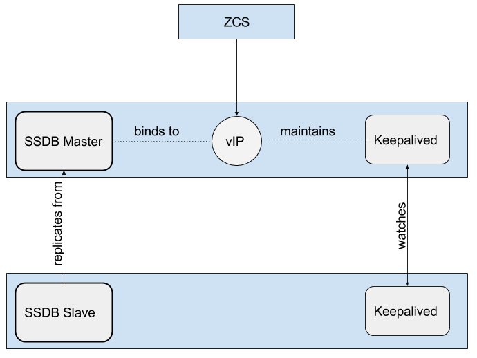

Zimbra Collaboration Administrator Guide version 8.8.3
License
 Synacor, Inc., 2017
Synacor, Inc., 2017
© 2017 by Synacor, Inc. Zimbra Collaboration Administrator Guide version 8.8.3
本書はクリエイティブ・コモンズの表示+継承4.0国際ライセンスの適用対象です。ただし、Synacor, Inc. と貴方様との間に別途ライセンス合意がある場合を除きます。このライセンスは次のサイトから閲覧できます。 https://creativecommons.org/licenses/by-sa/4.0
あるいは、Creative Commons, PO Box 1866, Mountain View, CA 94042, USA.宛てに連絡してください。
Synacor, Inc., 2017
40 La Riviere Drive, Suite 300
Buffalo, New York 14202
はじめに
Zimbra Collaboration は電子メール、アドレス帳、カレンダー、タスク、およびウェブドキュメント編集の機能を提供している完全なメッセージングとコラボレーションのソリューションです。
このドキュメントの対象ユーザー
このガイドはサーバー上でZimbra Collaborationのインストール、管理、およびサポートするシステム管理者用に作成しております。
本ガイドを適切に使うため、以下の知識やスキルが必要です。
-
Linuxのオペレーティングシテムに関する技術やスタンダード、およびオープンソースのコンセプト知識
-
メールシステム管理に関する企業行為の標準知識
サードパーティ製のコンポーネントについて
サードパーティ製のコンポーネントについて バックアップの管理、ユーザー認証、オペレーティングシステム、およびデータベースの管理に関しまして、Zimbra Collaborationは標準規格やオープンソースの推進を可能な範囲において遵守します。ただし、「製品の概略」のチャプターに紹介している、正式なテストで証明した使用方法のみをサポートしています。このドキュメントは他のサードパーティ製のツールを参考程度に紹介する場合はありますが、Zimbra Collaborationでのサポート、および認証は提供していません。
サポートと連絡情報
www.zimbra.com にアクセスし、最高のオープンソースメッセージング製品のコミュニティーへ参加できます。皆様からのフィードバックや製品への要望をお待ちしております。
-
Zimbra Collaboration を購入するには、sales@zimbra.comまでご連絡ください。
-
ネットワーク版をご利用のお客様はサポートをsupport@zimbra.comまでご連絡ください。
-
Zimbra のフォーラム にてインストールや設定の問題を解決する情報を確認できます。
-
Zimbra のフォーラムに参加することで、 Zimbra Collaboration に関する情報を他のユーザーと共有できます。
製品に関する詳細は以下からご覧ください。
製品に対する疑問やご希望される機能追加についてはZimbraのフォーラムに投稿し、お知らせください。
ソフトウェアに問題が発生した場合、http://bugzilla.Zimbra.com にてバグを報告してください。なお、バグを再現できるように、できる限り詳細について説明してください。
製品の概略
本章で、Zimbraコンポーネントのシステム概要を説明します。
インフラの概要
Zimbra Collaboration のアーキテクチャは既知のオープンソース技術と業界標準に基づいたプロトコルで構成されています。このアーキテクチャは単体又は複数のサーバー構成上で実施できるクライアントインターフェースやサーバーコンポーネントによって、高い利便性と拡張性を実現しています。

このアーキテクチャには以下の主な特性があります。
| 主な特性 | コンポーネンツ/説明 |
|---|---|
オープンソース技術 |
Linux®, Jetty, Postfix, MariaDB, OpenLDAP® |
業界基準のオープンプロトコル |
SMTP, LMTP, SOAP, XML, IMAP, POP |
現代の技術をいかした設計 |
HTML5, Javascript, XML, Java |
スケーラビリティ |
Zimbraの各メールボックスサーバーには、そのそれぞれのメールボックスアカウントとそれに紐づくメッセージおよびインデックスが格納されます。Zimbraのプラットフォームは、縦横無尽に拡張できます (システムリソース追加、サーバー追加)。 |
ブラウザでのクライアント画面 |
一般的なウェブプラットフォームから簡単かつ直感的にZimbra Collaboration機能を利用できます。 |
ブラウザでの管理コンソール |
メール、カレンダー、および共有機能
Zimbra Collaboration はウェブブラウザ上での、メッセージの送受信とアプリケーションとの連動を可能とする革新的なアプリケーションであり、以下のような最先端のソリューションを提供しています。
-
直観的なメッセージ管理、検索機能、タグ機能、共有機能
-
公開、非公開あるいは共有できるカンダー
-
非公開あるいは共有できるアドレス帳や配信リスト
-
非公開あるいは共有できるタスクリスト
Zimbra のコンポーネント
Zimbraのアーキテクチャは、業界標準に基づいたプロトコルを利用したオープンソース技術で構成されています。サードパーティー製のソフトウェア一覧にあるサードパーティー製のソフトウェアはZimbraのソフトウェアにバンドルされているので、Zimbraのインストール処理時に自動インストールされます。これらのコンポーネントはZimbraで使用できるように検証・設定されています。
| サードパーティーコンポーネント | 説明 |
|---|---|
Jetty |
Zimbraソフトウェアが起動するウェブアプリケーションサーバー |
Postfix |
適切のZimbraサーバーへメールのメッセージを転送するオープンソースのメール転送エージェント (MTA) |
Open LDAP ソフトウェア |
Zimbra のシステム設定、Zimbraのグローバルアドレス帳、およびユーザー認証を行うLightweight Directory Access Protocol (LDAP) のオープンソース実現です。ZimbraはActive Directory、などの外部LDAPディレクトリーより提供しているGALやユーザー認証サービスでも利用できます。 |
MariaDB |
データベースソフトウェア |
Lucene |
オープンソースのテクストと検索エンジン |
特定の添付ファイルをHTMLへ変換するサードパーティソース |
|
アンチウイルスとアンチスパム |
オープンソース部分では以下が含まれています:
|
James/Steveのフィルタリング |
メール用フィルターを作成 |
LibreOffice |
ハイファイなドキュメントプレビュー |
Zimbra のアプリケーションパッケージ
Zimbra Collaboration には、アプリケーションパッケージ一覧にあるアプリケーションパッケージが含まれています。
| パッケージ | 説明 |
|---|---|
Zimbra Core |
ライブラリ、ユーティリティ、監視ツール、基準の設定ファイル。
Zimbra-core内にある |
Zimbra Store |
(Jettyを含む) メールボックスサーバー用コンポーネント。Zimbraメールボックスサーバーには以下のコンポーネントが含まれます。
|
Zimbra LDAP |
Zimbra Collaboration はオープンソースのLDAPディレクトリーサーバーである、 OpenLDAP® のソフトウェアを使用しています。ユーザー認証やZimbraのグローバルアドレス帳、そしてConfiguration (設定) の属性はOpenLDAPより提供されるサービスです。なお、ZimbraのGALやユーザー認証は、Active Directoryなどの外部LDAPディレクトリーでも運用できます。 |
Zimbra MTA |
Postfixはオープンソースのメール通信エージェント (MTA) です。PostfixではSMTPよりメールを受信し、ローカルメール通信プロトコル (LMTP) でメッセージを適切なZimbraメールボックスサーバーへ送信します。 また、ZimbraのMTAにはアンチウイルスとアンチスパムのコンポーネントも含まれています。 |
Zimbra Proxy |
Zimbra プロキシはIMAP[S]/POP[S]/HTTP[S]のクライアントリクエストを内部 ZCS サービスへ配信する高パフォーマンスなプロキシサービスです。このパッケージは通常、MTAサーバーまたは独自サーバーにインストールします。Zimbra-proxyパッケージがインストールし場合、プロキシの機能がデフォルトで有効化されます。Zimbraプロキシのインストールを推奨しており、分散されたウェブアプリケーションサーバーを使用する場合は必要になります。 |
Zimbra Memcached |
Zimbraプロキシをインストールする際にMemcachedも自動的にインストールされます。プロキシを使用する場合、最低1つのサーバーでzimbramemcachedを実行する必要があります。複数のZimbraプロキシに対してMemcachedサーバーを1つだけ使用することができます。分散されたウェブアプリケーションサーバーを使用する場合、zimbra-memcachedが必要となります。 |
Zimbra SNMP (任意) |
サーバー監視のためZimbra SNMPをインストールする場合、各Zimbraサーバーにこのパッケージをインストールする必要があります。 |
Zimbra Logger (任意) |
使用する場合は、1つのメールボックスサーバーにのみインストールし、同時にメールボックスサーバーとしてインストールしなければなりません。このZimbraロッガーはsyslogの記録・取得用ツールをインストールします。ロッガーをインストールしない場合、管理コンソールの サーバー統計 は表示されません。 |
Zimbra Spell (任意) |
ZimbraウェブクライアントにAspellのオープンソーススペルチェックを使用しています。Zimbra-Spellをインストールする場合、Zimbra-Apacheパッケージもインストールされます。 |
Zimbra Apache |
このZimbra Apacheパッケージは、Zimbra Spell、またはZimbra Convertdのインストール中にインストールされます。 |
Zimbra Convertd |
このパッケージはZimbraストアサーバーにインストールします。Zimbra CollaborationのシステムにはZimbra-Convertdパッケージが１つだけ必要です。デフォルトでは各Zimbraストアサーバーに1つのZimbra-Convertdがインストールされます。Zimbra- Convertdをインストールすると、Zimbra-Apacheのパッケージもインストールされます。 |
Zimbra Archiving (任意) |
Archiving and DiscoveryパッケージでZimbra Collaborationが送受信したメッセージをすべて格納・検索することができます。このパッケージはメールボックスのクロス検索機能を含んでおり、使用中のメールボックス、およびアーカイブされたメールボックスの両方に対してメッセージ検索が可能です。 備考：Archiving and Discoveryを使用するとメールボックス利用ライセンスの追加につながる恐れがあります。Zimbra Archiving and Discoveryに関する詳細はZimbraの営業部までご連絡ください。 |
メールの流れ — マルチサーバー設定
各環境の設定内容は、数値変数によって変わります。例えば、メールボックスの数、メールボックスの容量、パフォーマンス、要件、既存ネットワークインフラ、ITポリシー、セキュリティ方針、スパム対策要件などです。一般的に、どの環境でも、発生するトラフィックやユーザーが接続できるところは共通しており、下図のようになります。ネットワーク内で数値部分を設定するという代替案も可能です。
上図の番号順の説明は以下のとおりです。
-
インターネットメールを受信したら、迷惑メールのフィルタリングのため、ファイアウォールとロードバランサーを通してからEdge MTAへ送ります。
-
フィルターされたメールが2番目のロードバランサーへ届きます。
-
外部ユーザーがメッセージングサーバーへ接続した場合も、ファイアウォールと2つのロードバランサーを通ります。
-
受信されたインターネットメールは、いずれかのZimbra Collaboration のMTAサーバーへと向かい、迷惑メールとウイルスのフィルタリングを通過します。
-
対象のZimbra Collaboration MTAサーバーは宛先のディレクトリー情報をZimbra CollaborationのLDAPレプリカのサーバーに検索しにいきます。
-
Zimbra Collaboration のLDAPサーバーからユーザー情報を取得後、MTAサーバーは適切なZimbra Collaboration メールボックスサーバーへメールを通信します。
-
内部のエンドユーザーから接続される場合は、Zimbra Collaboration サーバーのいずれかに直接接続し、Zimbra Collaboration LDAPからユーザー情報を取得します。必要に応じてリダイレクトされます。
-
マウントしたディスクに対してZimbra Collaborationサーバーのバックアップをとることも可能です。
Zimbra システムディレクトリのツリー
Zimbra システムディレクトリのツリー
以下の表はZimbraのインストールパッケージが作成するディレクトリの一覧です。(親である)
/opt/zimbra 配下でインストールされる場合、Zimbra CollaborationではどのZimbra Collaborationサーバーもディレクトリ構成は同じになります。
| 以下一覧にないディレクトリはコアのZimbraソフトウェアや他のサードパーティ製のツールに必要なライブラリとなります。 |
| ファイル | 説明 |
|---|---|
|
完全バックアップと増分バックアップのデータを保存 |
|
コマンドラインのユーティリティにて記載されているユーティリティを含むZimbra Collaboration のアプリケーションファイル |
|
ポリシーのファンクション、スロットル機能 |
|
ウイルスや迷惑メールを制御するClam AVのアプリケーションファイル |
|
設定の情報 |
|
通信に使用するサードパーティ製のスクリプト |
|
変換のサービス |
|
SASL AUTH のdaemon (デーモン) |
|
LDAP、mailboxd、postfix、amavisd、clamavなどのデータディレクトリーを含みます。 |
|
データストア |
|
SOAPやその他の技術に関するtxtファイル |
|
様々な認証方法に関するサーバーの拡張 |
|
様々なネットワーク認証方法に関するサーバーの拡張 |
|
Apacheのウェブサーバーを含みます。Aspellとconvertdを別々のプロセスとして使用します。 |
|
インデックスのストア |
|
Javaのアプリケーションファイル |
|
mailboxdアプリケーションサーバーインスタンス。このディレクトリーにある |
|
ライブラリ |
|
内部で使用する実行ファイル |
|
Zimbra Collaboration サーバープリケーションのローカルログ |
|
ログサービスが使用するRRDとSQLite のデータファイル |
|
MariaDB のデータベースファイル |
|
統計収集に使用 |
|
OpenLDAPのサーバーインストール。ZCSが使用できるように予め設定されています。 |
|
Postfixのサーバーインストール。Zimbra Collaborationが使用できるように予め設定されています。 |
|
Zimbra Collaboration サーバーでの最新の実行ログ |
|
SNMPのモニターファイル |
|
証明書 |
|
メッセージストア |
|
コントロールのスクリプトやPerlモジュール |
|
Zimbraと一緒にインストールするZimletのZipファイル |
|
Zimbraのウェブクライアントで使用可能なZimlet |
|
ネットワーク版のZimbraと一緒にインストールするZimletのZipファイル |
|
mailboxd の統計。csvファイルとして保存される。 |
Zimbraウェブ クライアント
エンドユーザーでログイン可能のZimbraクライアントには、HTMLベースの標準ウェブクライアント、Javascriptベースのアドバンスウェブクライアント、およびモバイル用のクライアントを提供しています。ウェブクライアントではメール、カレンダー、アドレス帳やタスク等を使用できます。
| クライアントのタイプ | 説明 |
|---|---|
Advanced ウェブ クライアント |
アドバンスのウェブクライアントはAjaxが動作可能であり、ウェブコラボレーションの全ての機能を利用することができます。アドバンスは主に高速なネットワーク回線、および最新のブラウザ上で快適に動作します。 |
Standard ウェブ クライアント |
低速インターネット回線やメールボックスをHTMLベースで使用希望のユーザーに対して、標準のウェブクライアントを使用できます。 |
モバイル クライアント |
モバイルのクライアント (従来のメールクライアント) は携帯端末やスマートフォンのようなコンパクトな画面での閲覧に最適化しています。 |
タッチ クライアント |
タッチクライアント (モバイルウェブアップ) はタッチ機能のモバイルデバイスへ使用できます。メール、連絡先とカレンダーのZimbraウェブクライアントのサブセット機能を提供します。 |
モバイル HTML クライアント |
モバイルHTMLクライアントではスタンダードのウェブクライアントを使用する際にZimbraをモバイルでのアクセスが可能です。 |
Zimbraへログインする際、基準にアドバンスのウェブクライアントが使用しますが、ログイン画面に標準のウェブクライアントを使用する選択は可能です。なお、ログイン画面でユーザーの画面解像度が800x600と確認した場合、ユーザーは自動的に標準のウェブクライアントへログインされます。その場合、アドバンスのウェブクライアントを選択することは可能ですが、画面で正しく表示するために標準のウェブクライアントを推奨する警告が表示します。
モバイルウェブブラウザでZimbraへ接続した場合、Zimbraがクライアントの環境を確認するため、自動的にタッチクライアントへ移動します。モバイルクライアントを使用するため、モバイルデバイスをZimbraサーバーへ同期する必要があります。
ウェブサービスとデスクトップクライアント
Zimbra Collaborationへの接続をウェブブラウザやモバイルデバイス以外に、Exchangeウェブサービス (EWS) やMAPIを使用するMicrosoft Outlook Zimbraコネクタのデスクトップクライアント、などのウェブサービスでの接続も可能です。以下のサービスはサポートしています。
-
Exchange ウェブサービス (EWS) MacデバイスでMicrosoft Outlookを使用する場合に Zimbra Collaboration がExchangeサーバーへ配信するようのクライアントアクセスができます。EWSのクライアントアクセスを有効化にするため、提供サービスのチャプターを参照ください。なお、EWSは別売りのライセンス機能です。
-
Messaging Application Programming Interface (MAPI) Microsoft Outlook 2013/2010/2007/2003と同期した上に、完全なデレゲット、オフラインアクセスとS/MIMEもサポートしています。OutlookのZimbraコネクタを使用してWindowsデバイスでMicrosoft OutlookをZimbra Collaborationへ接続します。MAPI (Microsoft Outlook)のコネクタを有効にする詳細について、提供サービスのチャプターを参照ください。
-
POP3とIMAP4にすべてのCalendaring Extensions to Web Distributed Authoring and Versioning (CalDav)サポート、およびすべてのvCard Extensions to Web Distributed Authoring and Versioning (CardDAV) クライアントをサポートする。
オフラインモード
imbra オフラインモードでは — ネットワーク接続がない場合でも — Zimbraウェブクライアント(ZWC)でデータをアクセスできます。
例えば、サーバーの接続がない場合やサーバーの接続がなくなった場合、ZWCが自動的に“オフラインモード”へ切り替えます。サーバーの接続が復元されましたら、ZWCが自動的に“オンラインモード”へ切り替えます。
オフラインモードはHTML5を使用し、通常のブラウザキャッシュの上にあるキャッシュ機能を利用します。オフラインモードサポートの詳細については提供サービスのチャプターを参照してください。
セキュリティ対策
情報インフラを守るための最善策は、セキュリティ対策を複数組み合わせて使用し、システム全体のセキュリティを向上させることです。次項にまとめたものが防御するためのメカニズムとして、Zimbra Collaboration のプラットフォームに実装されています。
| セキュリティ関連のニュースや注意など、最新の情報や詳細は、 Zimbra Wiki の Security Center からご覧ください。 |
認証とアクセス管理
ユーザー認証向けにシステムに実装された主な機能は、次の表にまとめられています。
| 機能 | 説明 |
|---|---|
ライフサイクル管理 |
Zimbra Collaborationでのユーザー管理に関連する、登録・読込・更新・削除のすべての機能にLDAPディレクトリを使用します。 LDAP利用は任意ですが、Zimbra Collaboration用の属性はすべて、LDAPディレクトリにて格納・管理されます。 |
１要素認証 |
システムにアクセスするために、あらかじめ認証されたユーザーが、登録したユーザー名およびパスワードの組み合わせ。 この認証情報はソルト付ハッシュにてユーザー用ストアに登録されており、これと入力されたパスワードを比較して、承認 (一致) または不承認 (不一致) を判断します。外部ディレクトリ (LDAPまたはActive Directory) を使用したい場合は、その外部LDAPディレクトリにログイン情報を格納することもできます。詳しくはZimbra LDAP サービスをご覧ください。 |
２要素認証 |
２層のセキュリティ認証。管理コンソールから、ZCと連携しているモバイル端末にパスコード生成を行う (Enabled) か行わないか (Disabled) を設定します。 生成を行う (Enabledの) 場合、クライアントサービスに接続するには、ユーザーまたはCOSアカウントは生成されたパスコードを使用しなければなりません。詳しくは２要素認証について や２要素認証をご覧ください。 |
アクセス権認証 |
データの閲覧や機能の利用などの制御を、複数の属性や権限レベル、ルールを利用してユーザーカウントに対し、定義します。 管理コンソールの管理者は、各業務をサポートする目的でグループの作成や、アクセス権限の割り当てができます。 |
情報セキュリティとプライバシー
データ保全を目的としてシステムに搭載した機能を下の表にまとめました。
| 主旨 | 説明 |
|---|---|
セキュリティ・統一性・プライバシーの 管理 |
Zimbra Collaboration は (公的信用のある認証局 (CA) から与えられた) S/MIME 認証の使用ならびに、内部PKI (公開鍵基盤) 、ドメインキー認証メール (DKIM) 、DMARC (Domain-based Message Authentication) 、Amavisd-new (受信、送信用DMARCポリシーを管理するためにMTAで稼働している) の利用をサポートしています。 |
暗号化メソッド: |
|
In-transit |
次に挙げる様々なプロトコルに加え、TLSを利用して、サービスとエンドポイントを安全につなぎます: SMTP, LMTP+STARTTLS, HTTPS, IMAPS/IMAP+STARTTLS, POP3S/POP3+STARTTLS |
At-rest |
エンドtoエンドの暗号であるS/MIMEを使用して、秘密鍵による復号が行われるまで、Zimbra Collaboration メッセージストアにあるデータは暗号化されています。 |
Anti-virus とAnti-spam |
従来のZimbra Collaboration 機能とサードパーティ製プラグイン (Amavisd-new, ClamAV, Spam Assassin) にて、マルウェアとスパムの対策を行っています。 |
システムログ
(SNMPトリガーで生成される) Zimbra Collaboration のシステムログは、データ保存に使用できます。このデータは例えばユーザーや管理者の行動やログインの失敗、クエリ遅延、メールボックスにおける行動、モバイルシンクアクティビティ、データに関するエラーです。お使いのシステムのセキュリティおよびコンプライアンス要件に従い、イベントやアラート、トラップなどをログ管理とイベント修正システムへと転送して、通知およびポリシーを一元化できます。
| 機能 | 説明 |
|---|---|
インシデント対応 |
管理者は、悪意または不慮による行動に対して、リモートでのデバイズワイピングやアカウント凍結を行うことができます。 |
アーカイブとディスカバリ |
任意の機能。 管理者は、アーカイブおよび適用保存ルールについて、特定ユーザーのメールを選択することができます。これは、アーカイブメールボックスと既存メールボックスのどちらにも可能です。 |
ライセンス
アカウントを作成するためにZimbraのライセンスが必要となっています。Zimbraのライセンスを購入、更新、または変更する際、Zimbraサーバーへ新しいライセンスをアップデートします。
ライセンスされた機能について
Zimbra Collaboration のライセンス機能では、設置した環境にライセンスされた機能を一目で確認と管理できます。なお、以下のライセンスされた機能の監視や管理は可能となっています。
| ライセンス上限 | 以下の上限を設定 |
|---|---|
アカウント上限 |
作成可能アカウントおよび作成済みアカウント数が表示されます。 |
モバイルアカウント上限 |
モバイル機能を有効化できるアカウント数。 |
タッチクライアントアカウント上限 |
タッチクライアントのモバイル機能を有効化できるアカウント数。 |
MAPIアカウント上限 |
Zimbra Connector for Microsoft Outlook(ZCO)の使用可能アカウント。 |
Exchange ウェブサービス(EWS) のアカウント上限 |
ExchangeサーバーへEWSで接続できるアカウント数。EWSは別売りのライセンス機能です。 |
High-Fidelityドキュメントプレビュー |
High-Fidelityドキュメントプレビューを使用できるアカウント数。LibreOfficeをインストールする必要があります。 |
アーカイブ用アカウント上限 |
作成可能アーカイブ用アカウント数。アーカイブの機能をインストールする必要があります。 |
提供しているライセンスの種類
Zimbra Collaborationのお試し用に、無料で試用版を入手できます。商用環境にインストール後は、定期またはパーペチャルの購入が必要です。
| ライセンスの種類 | 目的 |
|---|---|
試用版 |
無料。Zimbraのウェブサイト(https://www.zimbra.com) から入手できる試用版。最大50ユーザーを作成可能。最大60日間有効。 |
試用延長版 |
無料。最大50ユーザーを作成可能。期間延長可。Zimbra営業部より入手できます。sales@zimbra.com または1-972-407-0688までご連絡ください。 |
サブスクリプション |
有料。特定のZimbra Collaboration システムのみに有効であり、ライセンスのファイル内に購入したZimbraアカウント数、使用開始の日時、および有効期限が暗号化されています。 |
パーペチャル |
有料。サブスクリプションと同様に、特定のZCSシステムのみに有効となります。ライセンスファイル内に購入したZimbraアカウント数、使用開始の日時、および2099年12月31日での有効期限が暗号化されています。サポートの契約を更新する場合、新しいパーペチャルは発行されませんが、システム側でお客様のアカウントのレコードにサポートする終了日が新しく更新されます。 |
アカウント種類でのライセンス影響
以下にZimbra Collaboration のアカウント種類とライセンスへの影響を説明します。
| ライセンスのアカウント種類 | 目的 |
|---|---|
システムアカウント |
システムアカウントはZimbra Collaborationで使用する固有のアカウントです。システムアカウントの一例としては迷惑メールのフィルターアカウント(スパムとハム用)やウイルス隔離のアカウント、およびドメインでGALを設定するとGALsync使用のアカウントです。システムアカウントを誤って削除しますとシステムが正常に機能しないため、削除しないようにご注意ください。なお、システムアカウントはライセンスのアカウント上限数には含まれません。 |
管理者アカウント |
管理者や管理の権限を与えたアカウントはライセンスのアカウント上限数にカウントされます。 |
ユーザーアカウント |
ユーザーアカウントはライセンスのアカウント上限数にカウントされます。なお、ユーザーアカウントを削除するとライセンスで作成可能のアカウント数が更新されます。 |
エイリアスアカウント |
非該当 |
配布リスト |
|
リソースアカウント |
ライセンスのアクティベーション
ネットワーク版をインストールした環境に、ライセンスのアクティベーションを実行する必要があります。また、新規にインストールした環境はライセンスの発行日より10日以内でアクティベーションを実行しなければなりません。
- Admin Console:
-
ホーム > 設定 > グローバル設定 > ライセンス にアクセスし、画面の右上にある ギア アイコンの ライセンスのアクティベーション よりライセンスのアクティベーションを実行できます。
Zimbra Collaboration をアップグレードするタイミングでライセンスも更新する場合、ネットワーク版の機能を正常に継続使用するため、アクティベーションの実行はアップグレードの直後に行ってください。
ライセンスのアクティベーションについて
Zimbra Collaboration サーバーは外部のインターネットへ接続し、Zimbraのライセンスサーバーへ接続可能の場合、ライセンスのアクティベーションが自動的完了します。ただし、自動的にライセンスをアクティベーションできない場合、 手動でのライセンスのアクティベーションについてを参照してください。
手動でのライセンスのアクティベーションについて
使用しているシステムがZimbraライセンスサーバーへ正常に接続できない場合、 Zimbraのサポートポータルを使用し、手動でライセンスのアクティベーションを実行できます。Zimbraサポートポータルで手動のアクティベーションを実行する場合、Zimbraのホームページ(www.zimbra.com)へアクセスし、Support をクリックししてください。Zimbraのテクニカルサポートページが表示されます。Zimbra Collaboration Suport をクリックサポートポータルへアクセスするメールアドレスとパスワードを入力してログインします。サポートポータルにて、Manual Activationを実行してください。
サポートポータルにアクセスできない場合、sales@zimbra.com までZimbraの営業日にお問い合わせください。
ライセンスがインストールまたはアクティベートされていない場合
Zimbra Collaboration のサーバーライセンスをインストールまたはアクティベートできていない場合、使用中のZimbra Collaborationサーバーに以下の影響がでます。
| ライセンス状態 | 説明・影響 |
|---|---|
インストールされていない |
Zimbra Collaboration はシングルユーザーモードに切り替わり、すべての機能が一人のユーザーでしか利用できなくなります。 |
無効 |
Zimbra Collaboration シングルユーザーモードへと切り替わります。 |
アクティベートしていない |
ライセンスのアクティベーション猶予期間は10日です。猶予期間内でライセンスのアクティベーションが完了していない場合、 Zimbra Collaboration はシングルユーザーモードへと切り替わります。 |
開始が未来日 |
Zimbra Collaboration はシングルユーザーモードのみ使用できます。 |
猶予期間中 |
ライセンスは満了しており、ライセンスの更新できる猶予期間は30日です。猶予期間中では満了したライセンスに契約した機能はすべて有効ですが、管理者にライセンスの更新警告が表示される場合があります。 |
満了 |
ライセンスが満了し、ライセンス満了後の猶予期間も経過している場合。 Zimbra Collaboration サーバーはオープンソース版の機能へ切り替わります。 |
ライセンスを入手する
Zimbraのホームページへアクセスし、Network Downloads Areaから無料の試し用のライセンスを入手できます。試用延長版ライセンス、サブスクリプション、およびパーペチャルの入手に関して、Zimbraの営業部 sales@zimbra.com までお問い合わせください。
購入したシステムにのみサブスクリプション、およびパーペチャルをインストールできます。一つの Zimbra Collaboration 環境には一つのZimbraライセンスが必要です。インストールするライセンスは作成可能なアカウント数の上限を設定します。
購入済みアカウント数、使用中のアカウント数、満了日などの現在のライセンス情報は ホーム > 設定 > グローバル設定 > ライセンス で確認できます。
ライセンスを管理する
管理コンソールにある グローバル設定 ページから ライセンスを更新 ウィザードを使用することで、新しいライセンスのアップロードとインストールもできます。ライセンスのアクティベーション を使用すると、インストールしているライセンスのアクティベーションが実行されます。
ホーム > 設定 > グローバル設定 > ライセンス から、現在のライセンス情報を確認できます。現在のライセンス情報として、ライセンスID、利用開始日、満了日、購入アカウント数、および使用可能アカウント数が表示されます。
ライセンス情報
アカウントを作成するには、 Zimbra Collaboration のライセンスが必要です。なお、Zimbraライセンスを新たに購入、更新、または変更した場合、Zimbraサーバーにも最新のライセンス情報に更新する必要があります。管理コンソールにあるグローバル設定ページから ライセンスを更新ウィザード を使用することで、新しいライセンスのアップロードとインストールもできます。 ライセンスのアクティベーション を使用すると、インストールしているライセンスのアクティベーションが実行されます。
ホーム > 設定 > グローバル設定 > ライセンス にてアクセスした現在のライセンス情報ページに、ライセンスID、利用開始日、満了日、購入アカウント数、および使用可能アカウント数が表示されます。
使用中のアカウント数が購入アカウント数に達した場合は、アカウントの新規作成ができなくなります。なお、ライセンスに作成可能のアカウント数を追加で購入、または、既存の(使用していない)アカウントを削除することで、アカウントの新規作成が可能となります。ライセンスに作成可能のアカウント数を追加で購入する場合は、Zimbraの営業部までご連絡ください。
Zimbraのネットワーク版の機能を中断せずに継続使用する場合、ライセンスの満了日より30日間前に更新する必要があります。なお、ライセンスが満了されるまで30日間以内の場合、管理コンソールにリマインド用の通知メッセージが表示されます。
ライセンスの満期
Zimbra Collaboration のネットワーク版のライセンスが満了した場合、管理コンソール、およびすべてのユーザーのウェブクライアントにて、ライセンスが満了された警告メッセージが表示されます。ライセンスの満了から30日間の猶予期間が発生します。猶予期間内では警告メッセージが表示されますが、すべての機能は継続して使用できます。
なお、猶予期間が終了しますと、サーバーがオープンソース版の機能へ自動的に切り替わります。ライセンス満了後、以下の重要な機能が使用できなくなります。
-
バックアップと復元
-
Zimbra モバイル (ActiveSync)
-
Zimbraタッチクライアント
-
Exchangeウェブサービス(EWS) — EWSは別売りのライセンス機能です
-
High-Fidelityドキュメントプレビュー
-
Zimbra Connector for Outlook
-
Zimbra Connector for Blackberry
-
S/MIME
ライセンス契約した最大ユーザー数に達すると、ライセンスを満了した環境に新しいアカウントの作成ができなくなります。
なお、ライセンスを更新する予定はない場合、Zimbra Collaborationの無料オープンソース版(FOSS)へアップグレードすることで、新しいアカウントの作成と既存アカウントの削除が可能になります。その場合、Zimbra Collaborationのネットワーク版と同バージョンのFOSS版を選択してから、最新のFOSS版へ更新することをお勧めします。
更新
使用中のアカウント数が購入アカウント数に達した場合は、アカウントの新規作成ができなくなります。なお、ライセンスに作成可能のアカウント数を追加で購入、または、既存の(使用していない)アカウントを削除することで、アカウントの新規作成が可能となります。ライセンスに作成可能なアカウント数を追加で購入する場合は、Zimbraの営業部までご連絡ください。
Zimbraのネットワーク版の機能を中断せずに継続で使用する場合、ライセンスの満了日より30日前に更新する必要があります。なお、ライセンスが満了されるまで30日以内の場合、管理コンソールにリマインド用の通知メッセージが表示されます。
ライセンスを更新する
Zimbraライセンスを更新や変更する際、 Zimbra Collaboration のメールボックスサーバーに最新のライセンス情報が更新されます。なお、管理コンソール、またはコマンドラインからzmlicenseコマンドを使用することでライセンスの更新が可能です。
zmlicense- 管理コンソール:
-
ホーム > 設定 > グローバル設定 > ライセンス
ライセンスを更新する場合
-
管理コンソールのアクセスに使用するコンピュータにZimbraのライセンスを保存します。
-
管理コンソールにログオンし、 ホーム > 設定 > グローバル設定 > ライセンス にアクセスします。画面の右上にある ギア アイコンから ライセンスを更新 をクリックします。「ライセンス インストール ウィザード」が開きます。
-
「参照」をクリックして保存したライセンスファイルを選択後、次へ をクリックします。ライセンスファイルがサーバーへアップロードされます。
-
インストール をクリックします。アップロードしたライセンスがサーバーにインストールされます。
-
右上のギアのアイコンにて、ライセンスのアクティベーション をクリックします。Zimbra Collaboration をアップグレードした場合、ネットワーク版の機能を切断せずに継続で使用するため、ライセンスのアクティベーションを直ちに実行する必要があります。
ライセンスの情報が自動的に更新されます。キャッシュされたアカウント数は各メールボックスサーバーへ自動的に更新されます。
Zimbraのメールボックスサーバー
Zimbraのメールボックスサーバーで、メッセージ、連絡先、カレンダー、添付ファイルを含む、メールボックスのコンテンツすべてを管理します。
Zimbraのメールボックスサーバーでは、専用のボリュームにバックアップとログファイルを保存します。なお、各サーバーはサーバー内で用意したストレージボリュームにしかアクセスできません。このため、別のサーバーに対するデータの閲覧、読み込み、書き込みはできません。
メールボックスのサーバーについて
各アカウントは特定のメールボックスサーバー上で設定され、アカウントに関連しているメールボックスには、メッセージ、添付ファイル、カレンダー、連絡先、およびコラボレーションのファイルが含まれます。
各Zimbraのメールボックスサーバーに依存しているメールボックスに対して、独立のメッセージストア、データストア、およびインデックスのストアが用意されています。下記に各ストアとディレクトリ場所を説明します。
メッセージストア
メッセージの本文と添付ファイルを含め、メッセージの内容は全て、メッセージストア内にMIMEフォーマットにて保存されます。
メッセージのストアは各メールボックスサーバーの /opt/zimbra/store 配下にデフォルトで格納されます。各メールボックスには、各自の名部ZCSメールボックスIDにちなんだ名称のディレクトリがあります。メールボックスのIDは各サーバー内では一意ですが、システム全体としては一意ではありません。
複数受信者を持つメッセージは、メッセージ保存領域内に１件のみ保存されます。UNIXシステム上にある、ユーザーごとのメールボックスディレクトリには、実際のファイルへのハードリンクが入っています。
Zimbra Collaboration をインストールすると、各メールボックスサーバーにインデックスボリュームが1つ、メッセージボリュームが1つ構成されます。各メールボックスは、現インデックスボリューム上の固定のディレクトリに作成されます。新しいメッセージが配信または作成されると、そのメッセージは現メッセージボリュームに保存されます。
階層型ストレージ管理(HSM)は、メールのストレージリソースを管理できる機能です。HSMポリシーを設定することにより、古いメッセージのストレージボリュームを構成できます。詳細は 設定を管理するを参照してください。
データストア
データストアは、内部メールボックスIDがユーザーアカウントとリンクされているSQLデータベースです。会話、メッセージがどこに保存されているかを示すポインター、タグを含むメッセージのメタデータはすべてファイルシステムに格納されます。SQLデータベースファイルは /opt/zimbra/db にあります。
各アカウント(メールボックス)は、1サーバーにだけ入っています。メールボックスのデータが格納されているデータストアは、各サーバーにスタンドアロンで存在しています。
-
データストアは、メールボックスIDとユーザーのLDAPアカウントへマッピングします。Zimbra Collaboration データベース内の主要識別子はZCSメールボックスIDであり、ユーザー名やアカウント名ではありません。メールボックスIDはシングルメールボックスサーバー内では一意です。
-
ユーザーのタグ定義、フォルダー、連絡先、カレンダーの予定、タスク、ブリーフケースのフォルダー、フィルターのルールなどのメタデータはデータストアのデータベースに格納されています。
-
メッセージの閲覧状況、関連しているタグなどのメッセージ関連情報はデータストアのデータベースに格納されています。
インデックスストア
インデックスや検索の技術は、Apache Luceneを用いて提供しています。メッセージを受信した際に、メッセージ内容と添付ファイルは自動的にインデックスされます。インデックスファイルは各アカウントに紐づきます。インデックスファイルは /opt/zimbra/index 配下に保存されます。
なお、メッセージ内容のトークン化とインデックスのプロセスを管理者やユーザーが設定することはできません。
プロセスは以下のとおりです。
-
Zimbra のMTAは、受信したメッセージをそのアカウントのメールボックスがあるメールボックスサーバーに配信します。
-
メールボックスのサーバーにて、メッセージのヘッダー、本文、および読み込み可能の添付ファイル(PDFファイルやMicrosoft Wordドキュメント、など)を分析し、単語をトークン化します。
-
メールボックスサーバーがトークン化した情報をLuceneへ転送し、インデックスのファイルが作成されます。
| トークン化は単語単位でインデックス化する方法です。電話番号、メールアドレス、ドメイン名、などの代表的なパターンは上記の図のようにトークン化されます。 |
ウェブアプリケーションサーバー
Jettyウェブアプリケーションサーバーはウェブアプリケーション(webapps)をいずれかのストアサーバーにて実行します。1つ以上のウェブアプリケーションサービスを提供します。
メールストアサービス
メールストアサービスでは、メールボックス/アカウントのデータへのバックエンドアクセスを提供します。 メールストアのウェブアップには以下を含みます。
-
メールストア(メールサーバー) =
/opt/zimbra/jetty/webapps/service -
Zimlets =
/opt/zimbra/jetty/webapps/zimlet
ユーザーインターフェースサービス
ユーザーインターフェースサービスでは、メールボックスのアカウントデータと管理コンソールへのフロントエンドユーザーインターフェースのアクセスを提供します。以下を含みます。
-
Zimbraウェブクライアント =
/opt/zimbra/jetty/webapps/zimbra -
Zimbra管理コンソール =
/opt/zimbra/jetty/webapps/zimbraAdmin -
Zimlet =
/opt/zimbra/jetty/webapps/zimlet
ウェブアプリケーションサーバースプリット
ウェブアプリケーションサーバースプリット機能により、メールストアのサービス(メールサーバー)とユーザーインターフェースのサービス(ウェブクライアントサーバー)を分けることも可能です。
例えば、html/cssページなどの固定UIコンテンツを提供する「zimbra, zimbraAdmin」という名のウェブアプリをウェブクライアントサーバーで実行し、SOAPリクエストのすべてを処理する「service」という名のウェブアプリをメールサーバーで実行するのです。この２つのサーバはスプリットモードで動いています。
ウェブアプリケーションサーバースプリット機能には以下のメリットがあります。
-
ウェブクライアントとメールサーバーを分割することでカスタマイズ化の処理が簡単になり、メールサーバーを再起動せずに新しいカスタムしたUIや更新したUIを提供することが可能になります。結果的にダウンタイムが発生しません。
-
ZimbraウェブクライアントやZimbra管理コンソールをカスタマイズする場合、ウェブクライアントサーバーをオフラインにしてカスタマイズやメンテナンス中に、メールサーバーをオフラインにする必要がありません。
-
ウェブクライアントは、メールボックスのアカウントと無関係です。このため、どのウェブクライアントサーバーでも、アカウントリクエストを処理できます。
ウェブアプリケーションサーバースプリットのインストールと設定方法
ウェブアプリケーションサーバースプリットのインストールと設定方法に関しては Zimbra Collaboration Multi-Server Installation Guide を参照してください。
メールボックスのサーバーをバックアップする
各Zimbra Collaborationサーバーにバックアップの管理サービスが含まれ、バックアップと復元の機能を使用できます。バックアップのプロセスを起動するためにZimbra Collaborationのサーバーを停止する必要はありません。また、1つのユーザーのメールボックスのみが破損した場合、システムを全体的に復元せずに、バックアップの管理コンソールでその特定ユーザーのみを復元することも可能です。完全と増分のバックアップは /opt/zimbra/backup へ保存されます。詳細については バックアップと復元を参照してください。
各Zimbraのメールバックスサーバーは、最終の増分バックアップ以降メッセージストアサーバで処理した、アーカイブおよび現行のトランザクションをすべてRedoログに残します。サーバーを復元した場合、バックアップに保存したファイルを完全に復元し、その後、アーカイブRedoログおよび現在使用中の現行のRedoログに保存された行動を再実施し、システムが落ちた時点まで戻します。
メールボックスのサーバーログ
Zimbra Collaboration システムの環境は、1つ以上のメールボックスサーバーとサードパーティ製のコンポーネントで構成されています。どのコンポーネントも、ログデータを出力する可能性があります。ローカルサーバーのログは /opt/zimbra/log 配下に保存されます。
選択されたZimbra CollaborationログメッセージはSNMPトラップを生成します。SNMP監視ソフトウェアを用いてこれをキャプチャすることができます。詳細については ZCS サーバーの監視を参照してください。
| システムログ、Redoログ、バックアップしたセッションは複数のディスクへ保存して、このいずれかのディスクが破損したときデータ復旧不可能となる可能性を最小限にする必要があります。 |
ZimbraのIMAPD サーバー
ZimbraのIMAPDサーバーは、IMAP(S)のトラフィックを制御するサーバーであり、インストールは必須ではありません。インストール先は メールボックスサーバー と同じノードでも別のノードでもかまいません。 メールボックスサーバー と同じノードにインストールする場合は、メールボックスの内部にあるIMAPD処理は無効(Disabled)になるかもしれませんが、デフォルトでは有効(Enabled)のままになっています。
IMAPの利用が非常に多い場合は、まずは メールボックス とは別のノードにインストールすることをお勧めいたします。こうすることで、メールボックスノードとは関係なく、IMAPDリソースの拡張がしやすくなります。
MailboxdでないZCSクラスタにIMAPDを新たにインストールするときは、必ず zimbraHttpThrottleSafeIPs 設定項目に追加してください。IMAPDのインストール先サーバーをDosFilterの対象とさせないためです。設定項目に正常に追加されていない場合、対象のIMAPDノードのSOAPトラフィックが予期せぬエラーを起こす原因となります。
代わりに zimbraHttpThrottleSafeIPs 設定項目に、新しい商用機のIPアドレスサブネットを追加することで、DoSFilterを効率的に無効化できます。
最後に、ZCSクラスタにIMAPDノードを追加する際は、 zimbraReverseProxyAvailableLookupTargets に羅列されているすべてのZCSサーバー上でglobalconfig LDAPキャッシュをフラッシュしてください。新しいノードを確実に zimbraReverseProxyUpstreamImapServers へ登録するために必要なことです。このステップを怠ると、こうしたサーバーにあるLookup Extensionが新たにあてたIMAPノードを見落とすことになります。この実行に使うコマンドは zmprov flushCache -a config です。このコマンドが正常に機能したかどうかを検証するには、チェック対象とするサーバーで zmprov gacf zimbraReverseProxyUpstreamImapServers コマンドを実行し、新しく追加したIMAPノードがリストに出力されることを確認します。
Zimbraの Upstream IMAP 設定
Zimbra Collaboration 8.8.1 版では、以下のIMAP関連設定オプションが使えます。
-
zimbraReverseProxyUpstreamImapServers
プロキシがIMAPセッションの管理に使うことのできるサーバープール。何も記載されてない場合、Nginx Lookup Extensionは該当アカウントのホストサーバーを選択します。
-
zimbraImapLoadBalancingAlgorithm
zimbraReverseProxyUpstreamImapServersに記載されたサーバープールからIMAPサーバーを選択するために用いるロードバランスアルゴリズムを設定します。
以下のロードバランスアルゴリズムが利用できます。
-
ClientIpHash
クライアントIPアドレスのハッシュに基づきIMAPサーバーを選択します。 ここで利用するハッシュアルゴリズムは、設定済みのIMAPサーバー数を数値として扱う、クライアントIPアドレスの簡易モジュールです。クライアントIPアドレスが同じ場合、常に同じインデックスを返します。
注意: NATプロキシを利用している環境の場合は、ほかにも設定が必要です。
-
custom
以下のフォーマットにて、登録済みロードバランスアルゴリズムを選択します。
custom:{handler-algorithm} [arg1 arg2 ...]
| カスタムロードバランス設定がない場合は、デフォルトでClientIpHashを返します。 |
IMAPD関連 の設定およびファイル
zimbra-imapd 関連の設定オプション並びにIMAPD用にインストールするファイルについて、本項にまとめました。
グローバル設定
-
mailboxdの内部で実行される、埋め込み型IMAP(S)サーバーを制御します。-
zimbraImapServerEnabled -
zimbraImapBindPort -
zimbraImapSSLServerEnabled -
zimbraImapSSLBindPort
-
-
zimbra-imapdで実行されるIMAP(S)サーバーを制御します。-
zimbraRemoteImapServerEnabled -
zimbraRemoteImapBindPort -
zimbraRemoteImapSSLServerEnabled -
zimbraRemoteImapSSLBindPort
-
-
利用可能なIMAPサーバーのリストを保持しています。
-
zimbraReverseProxyUpstreamImapServers
-
サーバー設定のセッション
サーバー上で zimbra-imapd サービスが有効になっている場合、マルチバリュー属性 zimbraServiceEnabled に追加されます。
例えば、IMAPオンリーのサーバーの場合は以下のとおりです。
$ zmprov gs `zmhostname` zimbraServiceEnabled # name HOST.DOMAIN zimbraServiceEnabled: imapd zimbraServiceEnabled: stats
zimbra-imapd用にインストールされるファイル群
以下、zimbra-imapdのDEB/RPMにより、zimbra-imapd用にインストールされるファイルです。
-
/opt/zimbra/bin/zmimapdctl -
/opt/zimbra/conf/imapd.log4j.properties -
/opt/zimbra/lib/jars/oauth-1.4.jar
上記に加え、 zimbra-core パッケージとして /opt/zimbra/lib/jars 内にすでにインストールされているそのほかのjarファイルもこのサービスで使用します。
インストール中に作成されるファイル群
次のSSL関連ファイルを作成するため、 zmsetup.pl から zmcertmgr が呼ばれます。
-
imapd.crt -
imapd.key -
imapd.keystore
ログファイル
zimbra-imapd サービスは、 /opt/zimbra/conf/imapd.log4j.properties に格納されている設定によって、次のログファイル( /opt/zimbra/log 内)を作成します。
-
imapd-audit.log -
imapd.log
プロセスファイル
zmimapdctl スクリプトは以下のファイルをじかに作成します。
-
imapd.out -
imapd.pid
その他のファイル
アクティビティの統計は /opt/zimbra/zmstat/imapd.csv に集められます。
Imapdへの移行
IMAPサーバーへ移行する際は、移行処理がスムーズに行われるように手順を踏む必要があります。この手順を間違えると、既存のIMAPクライアントの接続が切れ、サービス障害となる恐れがあります。
Memcachedに関する留意事項
設定を変更するにあたり、まず memcached にある既存の経路をどうするかを決める必要があります。経路は、デフォルトでは
zimbraMemcachedClientExpirySeconds というLDAP属性にて指定されているとおり、1日分が memcached にキャッシュされます。変更しなければ、これがこのまま、経路がキャッシュされる期間として、そして、lookup extensionが新たにあてたIMAPDサーバーへIMAPトラフィックを送信する間隔として、採用されることになります。変更する場合は、以下の2点を実施します。
-
IMAPDの一通りの設定が完了した後、
memcachedをフラッシュします。これにより、新しいサーバープールで既存のIMAPセッションをすべて再開させることになります。 -
IMAPDへ移行する1日前に、
zimbraMemcachedClientExpirySecondsの値を30分など比較的短い間隔に修正します。その後、コマンドzmprov rmcc allにてmemcached設定をリロードします。これにより、サービスを中断させるリスクを冒すことなく、短いタイムフレーム内で組み込み型IMAPサービスを停止させることができます。
移行手順
-
IMAPDサーバープールをセットアップします。このサーバープールのサイズは、想定されるIMAPのトラフィックレベルに対して適切でなければなりません。正常動作の確認のため、サーバーごとにテストを実施されることをお勧めします。テストはopensslを使用してコマンドから実行するか、該当サーバーを直接指定するように既存のIMAPクライアントを設定することで実施可能です。この時点ではまだこれらのサーバーを属性
zimbraReverseProxyUpstreamImapServersに記載しないでください。 -
(任意)属性
zimbraImapLoadBalancingAlgorithmを使用して、ロードバランスアルゴリズムを指定します。このデフォルト値はClientIPHashです。カスタムロードバランスアルゴリズムが記載されている場合は、カスタムの方を指定することもできます。 -
zimbraReverseProxyUpstreamImapServersにIMAPDサーバープールを追加します。zmprov mcf +zimbraReverseProxyUpstreamImapServers <server1> \ +zimbraReverseProxyUpstreamImapServers <server2> \ ...
-
Lookupサーバー上の設定キャッシュをフラッシュします。
zmprov -a fc config -
この変更作業の前に、
zimbraMemcachedClientExpirySecondsの値を短い間隔に修正していた場合、現経路のキャッシュが削除される期間が過ぎるまで待機してください。経過を待つことで、 memcached内の経路が新経路にスイッチできるようになります。もし待てない場合は、手動でmemcachedをフラッシュしてください。可能であればこの作業はピーク時間外に実施することをお勧めします。 -
グローバル設定レベルにて、
zimbraImapServerEnabledとzimbraImapSSLServerEnabledをFALSEに設定します。zmprov mcf zimbraImapServerEnabled FALSE zmprov mcf zimbraImapSSLServerEnabled FALSE
[注意] これら設定がサーバーレベルにてオーバーライドされた場合、
zmprov ms <server>..により、メールボックスサーバー上で設定を修正する必要があります。 -
必要に応じて、
zimbraMemcachedClientExpirySecondsを元の値にリセットします。
スタンドアロンIMAPDでのマルチノード設定
Zimbra Collaboration はメールボックスプロセスとは別に実行されるリモートIMAPサーバーをサポートしています。

マルチノード環境の例:
-
プロキシノード１つ
-
IMAPDノード４つ
-
メールボックスノード２つ
-
LDAPノード１つ
IMAPDサーバー選択
Zimbra Collaboration のプロキシは、設定されているIMAPロードバランスストラテジに基づき、IMAP(S)リクエストを送信するIMAPDサーバーを選択します。
今のところ、IMAPロードバランスストラテジとして以下があります。
-
クライアントの元のIPアドレスを利用したハッシュ - ClientIPHash
-
顧客がインストールしたカスタムロードバランスクラス
| カスタムロードバランスクラスが見つからない場合、ロードバランスアルゴリズムは ClientIPHash になります。 |
クライアントのリクエストフロー
クライアントからのIMAPリクエストはプロキシによって処理され、設定されているIMAPロードバランスストラテジに基づき、指定のIMAPDサーバーへ送られます。図では、リクエストに該当するIMAPDサーバーの選択に、 ClientIPHash が使われています。IMAPDサーバーの選択に用いるアルゴリズムは * *オプション を使って設定することができます。
セットアップ: user1 と user2 というユーザーたちにはそれぞれ Mailboxd #1 と Mailboxd #2 が用意されています。
処理は以下のとおり進みます。
-
クライアントのIMAPリクエストをプロキシが受信。
-
リクエスト送信先IMAPDサーバーのインデックスを計算するのに ClientIPHash を使用。
-
IMAPリクエストが IMAPD #1 プロセスへ転送される。
-
IMAPD #1 はリクエストした人のメールボックスの入ったメールボックスサーバーの場所を示す。
-
IMAPD #1 は Mailboxd #2 にSOAPリクエストを実行して、このリクエストを処理する。
Zimbra LDAP サービス
Zimbraサービスの使用を許可されたユーザーやデバイス情報をLDAPの集中化したディレクトリへ保護します。なお、ZimbraはOpenLDAPのディレクトリサーバーを使用しています。
| Zimbra Collaboration はMicrosoft のActive Directoryサーバーへの統合もサポートしています。特定なディレクトリ実行のシナリオの詳細について、サポートまで連絡ください。 |
ZCS をインストールした際、LDAPのサーバーはインストールされます。各サーバーには起動条件を指定している属性を含むLDAPエントリがあります。また、すべての属性を指定していないサーバーに対して、グローバル設定のオブジェクトにてデフォルトの設定を指定します。
LDAP属性のサブセットはZimbraの管理コンソール、またはzmprovのコマンドラインで設定可能です。
LDAPのトラフィックの流れ
以下のLDAPディレクトリのトラフィック流れにて、Zimbra-LDAPのディレクトリサーバーと他のZimbra Collaborationサーバーへのネットワークトラフィックを表示します。 ZimbraのMTAとZimbra CollaborationのメールボックスサーバーはディレクトリサーバーにあるLDAPデータベースを読み込み、または書き込みます。
ZimbraのクライアントはZimbraサーバーで接続し、ZimbraサーバーがLDAPへ接続します。
LDAP のディレクトリ階層
LDAPのディレクトリはツリーのように階層されています。LDAPのディレクトリ階層はメールブランチとコンフィグブランチの２つに分かれています。メールブランチはドメインで分散しています。アカウント、グループ、エイリアス、などドメインに関連している属性はドメインのDNでディレクトリに用意されています。コンフィグブランチにはドメインに関連していない管理システムの属性が含まれています。コンフィグブランチのエントリにはシステム管理のアカウント、グローバル設定、グローバルでのアクセス許可設定、COS、サーバー、MIMEタイプ、およびZimletが含まれています。
下図はZimbraのLDAP階層を表したものです。各属性(オブジェクト)は特定の関連するオブジェクトクラスを保持しています。
各LDAPディレクトリのエントリはグローバルな独自の名前(dn)を持ち、属性の集合でできています。エントリに使用される属性はそのエントリに関連しているオブジェクトクラスによって決定されます。オブジェクトクラス属性の値はエントリが従う必要のあるスキーマルールを決定します。
エントリの種類を決定するオブジェクトクラスは構造のオブジェクトクラスと呼ばれ、変更することができません。他のオブジェクトクライスは予備のオブジェクトクラスと呼ばれ、エントリへの追加や削除は可能です。
LDAPで予備のオブジェクトクラスを使用すると既存のオブジェクトクラスと合体することができます。例えば、 inetOrgPerson という構造のオブジェクトクラスと zimbraAccount という予備のオブジェクトクラスを持つエントリの場合はアカウントとなります。 zimbraServer の構造のオブジェクトクラスを持っているエントリはZimbraのシステム上にZimbraのパッケージがインストールされているサーバーとなります。
Zimbra Collaboration LDAPのスキーマ
LDAPの実装の中心にスキーマで処理されたデータベースが存在します。
ZimbraのLDAPスキーマはOpenLDAPソフトウェアに用意されている一般的なスキーマを継承します。既存のディレクトリのインストール環境と共存するように作られています。
Zimbra Collaboration
専用の属性やオブジェクトクラスはすべて “zimbra”で始まります、例えば zimbraAccount というオブジェクトクラスや
zimbraAttachmentsBlocked 属性などです。
OpenLDAPの実行に以下のスキーマファイルが用意されています。
-
core.schema
-
cosine.schema
-
inetorgperson.schema
-
zimbra.schema
-
amavisd.schema
-
dyngroup.schema
-
nis.schema
| Zimbraのスキーマを変更することはできません。 |
Zimbra Collaboration のオブジェクト
| オブジェクト | 詳細 | オブジェクトのクラス | ||
|---|---|---|---|---|
アカウント |
Zimbraのメールボックスサーバー上のログイン可能なアカウントを示しています。アカウントエントリはユーザーアカウント、または管理者アカウントとなります。オプジェクトクラス名は zimbraAccount です。このオブジェクトクラスは zimbraMailRecipient のオブジェクトクラスを継承します。
全てのアカウントは以下の要素を含んでいます。 |
zimbraAccount |
||
提供サービス (COS) |
アカウントに許可あるいは拒否されている機能のデフォルト属性を定義します。COSは、機能やデフォルトのプリファレンス設定、メールボックス割り当て容量、メッセージの保持期限、パスワード制限、添付ファイルブロック設定、新規アカウント作成のためのサーバープールを制御しています。 |
zimbraCOS |
||
ドメイン |
example.com や example.org のように電子メールを使用可能にするドメインです。ドメインのユーザーへメッセージが配信される前にそのドメインが存在している必要があります。 |
zimbraDomain |
||
配布リスト |
メーリングリストとも呼ばれます。リストのアドレスへメッセージを送信すると、リストに参加しているメンバーの全員へメッセージが受信します。 |
zimbraDistributionList |
||
ダイナミックグループ |
配布リストと類似しています。違いとしてはダイナミックグループのメンバーはLDAP検索によって動的に計算されることです。LDAP検索フィルターはダイナミックグループエントリの要素によって定義されています。
|
zimbraGroup |
||
サーバー |
Zimbraシステムにおいて、１つ以上のインストール済みZimbraソフトウェアパッケージがあるサーバーを指します。属性は、どの機能がサーバー上で実行中であるかなどを示す、サーバーの設定情報です。 |
zimbraServer |
||
グローバル設定 |
サーバーとドメインのデフォルト設定の値を定義します。もし属性が他のオブジェクトに設定されていない場合は、その値はグローバル設定から継承されます。グローバル設定値は必須であり、Zimbraコアパッケージのインストール時に設定されます。これがシステムのデフォルト設定の値になります。 |
zimbraGlobalConfig |
||
エイリアス |
アカウント、配布リスト、またはダイナミックグループのエイリアスを指します。 zimbraAliasTarget 属性はこのエイリアスエントリのターゲットエントリを指します。 |
zimbraAlias |
||
Zimlet |
インストールされ、設定済みのZimletを指します。 |
zimbraZimletEntry |
||
カレンダーのリソース |
会議で指定することのできる機器や会議室のようなカレンダーリソースを指します。カレンダーリソースとは zimbraCalendarResource オブジェクトクラス上の付加属性が設定されているアカウントです。 |
zimbraCalendarResource |
||
Identity |
ユーザーのペルソナを指します。ペルソナにユーザーの表示名やアウトバウンドメールに使用する署名へのリンク、などの情報が含まれています。ユーザーは複数のペルソナを作成できます。IdentityのエントリはDITにあるユーザーのLDAPエントリの直下に作成されます。 |
zimbraIdentity |
||
データソース |
ユーザーの外部メールソースを指します。データソースの例としては、POP3やIMAPがあります。データソースにはPOP3/IMAPのサーバー名、ポート、ユーザーの外部メールアカウントのパスワードが保存してあります。データソースには、表示名や外部アカウントの代わりに送信されるアウトバウンドメールに使用する署名へのリンクなどを含むペルソナ情報も格納されます。データソースのエントリはDIT内のユーザーのLDAPエントリの下に作成されます。 |
zimbraDataSource |
||
署名 |
ユーザーの署名を指します。ユーザーは複数の署名を作成することができます。署名のエントリはDIT内のユーザーのLDAPエントリの下に作成されます。 |
zimbraSignature |
アカウントの認証について
サポートされている認証のメカニズムは、内部、外部のLDAP、および外部のActive Directoryとなっています。認証方式はドメインごとに設定します。なお、 zimbraAuthMech 属性が設定されていない場合、デフォルトの設定として内部認証を使用します。
内部認証方式はOpenLDAPサーバー上に起動しているZimbraスキーマを使用します。
zimbraAuthFallbackToLocal の属性では、外部の認証が失敗した場合にローカルの認証へフォールバックすることができます。デフォルトの設定では、FALSEとなっています。
内部の認証方法
内部認証方法はOpenLDAPディレクトリサーバー上で起動しているZimbraスキーマを使用します。OpenLDAPに格納されているアカウントには、userPassword の属性にユーザーのパスワードのsalted-SHA1 (SSHA)ダイジェストが保存されます。ログインする際に入力したパスワードをSSHAダイジェストで演算し、保存した値と比較します。
外部LDAPと外部Active Directoryの認証方法
外部LDAPや外部Active Directoryを使用する場合、認証用の別のサーバーにLDAPのサーバーやMicrosoftのActive Directoryを使用すると、Zimbra Collaboration に関連している動作がZimbra-LDAPのサーバーで使用する必要があります。なお、認証用の外部LDAPサーバーとZimbraの動作用のOpenLDAPサーバーが別々のサーバーとなるため、ユーザーのアカウントをお互いのサーバーに共存する必要があります。
外部認証方法では、入力されたユーザー名とパスワードをの特定のLDAP認証サーバーへ送信し、バインドを試します。バインドが成功した場合、認証サーバーへの接続が切断し、パスワードが認証されたことになります。
外部認証には zimbraAuthLdapURL 属性と zimbraAuthLdapBindDn 属性が必要です。
-
zimbraAuthLdapURLの値はldap://ldapserver:port/として設定します。Ldapserverは外部のディレクトリサーバーのIPアドレスかホスト名と記載し、portは使用するポート番号です。ポート番号の代わりに正式なホスト名を使用することもできます。例
ldap://server1:3268 ldap://exch1.acme.com
SSL接続の場合、
ldap:の代わりにldaps:を使用します。サーバーが使用するSSLの証明書は信頼済みの証明書として設定する必要があります。 -
zimbraAuthLdapBindDn値には外部ディレクトリサーバーへバインドする際に使用するDNを指定します。認証のプロセスではユーザー名は user@example.com の形式で使用します。
外部ディレクトリにて、ユーザー名を有効なLDAPバインド
DN(Distinguished Name：識別名)への変換が必要となる場合があります。Active Directoryの場合、バインドのDNは別のドメインである可能性もあります。
カスタム認証
カスタム認証にて、所有のユーザーデータベースでの外部認証を使用することも可能です。認証のリクエストを受けた場合、Zimbraがドメインへ設定している認証のメカニズムを確認します。カスタムに設定している場合、ユーザーの認証には登録しているカスタムの認証ハンドラを使用します。
カスタム認証を設定するには、ドメインがカスタム認証を使用するように準備し、カスタム認証のハンドラを登録します。
ドメインがカスタム認証を使用するための準備
ドメインがカスタム認証を使用するための準備 ドメインのカスタム認証を有効するには、ドメインの属性 zimbraAuthMech を custom:{registered-custom-auth-handler-name} に設定します。
以下の例では、「sample」の下にカスタム認証が登録されています。
zmprov modifydomain {domain|id} zimbraAuthMech custom:sampleカスタムの認証ハンドラを登録する
カスタム認証のハンドラを登録するには、
ZimbraCustomAuth.register( handlerName, handler )の形式で、拡張のinitメソッドに追加します。
-
クラス: com.zimbra.cs.account.ldap.ZimbraCustomAuth
-
メソッド:
public synchronized static void register (String handlerName, ZimbraCustomAuth handler)属性の説明:
-
handlerName はZimbraの認証インフラへ登録するカスタム認証ハンドラの名前となります。この名前はドメインのzimbraAuthMech属性にも設定します。
-
handler はこのカスタム認証ハンドラ用に認証方法が実行するオブジェクトです。オブジェクトは
ZimbraCustomAuth(またはサブクラス)のインスタンスである必要があります。
-
public class SampleExtensionCustomAuth implements ZimbraExtension {
public void init() throws ServiceException {
/*
* Zimbra の認証インフラへ登録。
* custom:sample はドメイン属性のzimbraAuthMech に設定してください。
* */
ZimbraCustomAuth.register("sample", new SampleCustomAuth());
}
...
}カスタムの認証方法について
認証のリクエストを受信した際、指定したドメインがカスタム認証を使用している場合、認証のフレームワークにて、 ZimbraCustomAuth の認証方法を
ZimbraCustomAuth.register() のhandlerパラメーターに渡されたインスタンスで実行します。
認証するアカウントのオブジェクトとユーザーが入力したクリアテキストのパスワードは
ZimbraCustomAuth.authenticate() へ転送します。
アカウントのオブジェクトからすべてのアカウント属性を取得できます。
Kerberos5 の認証方法
Kerberos5 の認証メカニズムでは、ユーザーを外部のKerberosサーバーへ認証します。
-
ドメインの属性
zimbraAuthMechをkerberos5に設定します。 -
ドメインの属性
zimbraAuthKerberos5Realmを Kerberos5のデータベース内でこのドメインのユーザーが作成されているKerberos5 Realmに設定します。 ユーザーがパスワードでログインし、使用しているドメインのzimbraAuthMechがkerberos5に設定されている場合、サーバーはKerberos5のprincipalを{メールアドレスのローカル部分}@{zimbraAuthKerberos5Realmの値}で構成し、それを使用してkerberos5サーバーへ認証します。
Kerberos5を個人のアカウントと指定するにはアカウントの zimbraForeignPrincipal を kerberos5:{kerberos5-principal} として設定します。
例: kerberos5:user1@MYREALM.COM.
グローバルのアドレス帳(GAL)について
グローバルのアドレス帳(GAL)について グローバルアドレスリスト(GAL)はユーザーの社内ディレクトリです。一般的に団体内で有効であり、メールシステム内の全てのユーザーが利用可能です。Zimbra Collaborationでは社内のユーザーアドレスを検索する際、この社内ディレクトリを使用します。
各Zimbra Collaborationドメイン設定では、以下の使用にGALを設定できます。
-
外部のLDAPサーバー
-
Zimbra Collaborationの内部LDAPサーバー
-
GAL検索の外部LDAPサーバー、およびZimbra Collaboration LDAP
Zimbra CollaborationのウェブクライアントがGALを検索できます。ユーザーが名前を検索する際、以下の例のように、名前がLDAPの検索フィルターへ変換されます。以下の例では、ユーザーが %s を検索している名前となります。
(|(cn = %s*)(sn=%s*)(gn=%s*)(mail=%s*))
(zimbraMailDeliveryAddress = %s*)
(zimbraMailAlias=%s*)
(zimbraMailAddress = %s*)Zimbra Collaboration上でのGAL 属性
以下の ZCSの連絡先属性へマップされたLDAP属性 の表は、GALの検索属性とZimbra Collaborationの連絡先情報をマッピングしています。
LDAP属性はGAL属性フィールドにマッピングしています。例えば、LDAP属性 displayName と cn は、GALのエントリ項目 fullName へマップできます。マッピングは zimbraGaILdapAttrMap 属性に設定されています。
| デフォルトのLDAP属性 | Zimbra Collaboration の連絡先属性 | 説明 |
|---|---|---|
co |
workCountry |
会社の国 |
company |
Company |
会社名 |
givenName/gn |
firstName |
姓 |
sn |
lastName |
名 |
cn |
fullName |
フルネーム |
initials |
initials |
名前のイニシャル |
l |
workCity |
会社の市 |
street, streetaddress |
workStreet |
会社の住所 |
postalCode |
workPostalCode |
会社の郵便番号 |
telephoneNumber |
workPhone |
会社の電話番号 |
mobile |
mobile |
携帯番号 |
pager |
pager |
ポケベルの番号 |
facisimileTelephoneNumber |
faxNumber |
ファックスの番号 |
st |
workState |
会社の州 |
title |
jobTitle |
職種 |
メールアドレス |
||
objectClass |
Not currently mapped |
マップされていない |
Zimbra Collaboration GAL の検索条件
GALは各ドメイン単位で設定します。属性を設定する場合、管理コンソールのGAL設定ウィザードを使用できます。
属性を変更する方法
GAL属性への追加、変更、および削除はZimbraの管理コンソール、または zmprov のコマンドラインにて実施します。
ユーザーがZimbraのウェブクライアントのオプションやプリフレンスを変更すると、アカウント関連属性も変更されます。
LDAPのキャッシュをフラッシュする
以下の情報をZimbraLDAPサーバーで変更した場合、変更の反映にLDAPのキャッシュのフラッシュが必要となる場合があります。
-
テーマ
-
地域
-
アカウント
-
グループ
-
COS
-
ドメイン
-
グローバル設定
-
サーバー
-
Zimletの設定
テーマや地域のキャッシュをフラッシュする
ZCS のテーマ(スキン)のプロパティファイル、および地域のリソースファイルを追加、または変更する場合、新しい内容を反映するためにキャッシュをフラッシュする必要があります。
zmprov flushCache skinzmprov flushCache localeアカウント、グループ、COS、ドメイン、およびサーバーをフラッシュする
アカウント、COS、グループ、ドメイン、およびサーバーの属性を変更した場合、変更を行ったサーバーでは変更が直ちに反映されます。ただし、他のサーバーでは属性がキャッシュされている場合、LDAPの情報は定期的に更新されます。
ZCS でのデフォルト設定ではサーバーの定期アップデートは15分ごとです。キャッシュの期間はローカル設定キーにて設定します。
zmlocalconfig ldap_cache_<object>_maxagezmprov flushCache {account|cos|domain|group|server|...} [name|id]...なお、[account|cos|domain|group|server]のタイプと共に[name|id]を指定しない場合、キャッシュにあるタイプの記載はすべてフラッシュされ、キャッシュが更新されます。
| キャッシュをフラッシュしても、反映するにはサーバーの再起動する必要な場合があります。例えば、バインドポートやプロセスのスレッド数など。 |
グローバル設定をフラッシュする
グローバル設定属性を変更した場合、変更したサーバー上ではただちにその変更は反映されます。他のメールボックスサーバーでは、キャッシュをフラッシュするか、サーバーを再起動しなければ変更は反映されません。LDAPに記載しているグローバル設定属性の有効期間はありません。
特定なグローバル設定は各サーバー内へサーバーの再起動時のみに読み込めます。サーバー動作の効率化により、キャッシュをフラッシュしても、その特定な設定はサーバーの再起動後のみに有効されます。また、ポートやプロセス可能のスレッド数のようなグローバル設定やサーバー設定はサーバーの起動時のみに読み込む場合があります。そのような属性を変更するとサーバーの再起動が必要となります。
全てのサーバーにおいて、グローバル設定の変更をフラッシュする場合
-
ローカルサーバーにて、設定を変更します。
zmprov mcf zimbraImapClearTextLoginEnabled TRUEこの変更はローカル設定キー
zimbra_zmprov_default_soap_serverおよびzimbra_admin_service_portに設定されているサーバーから実行されます。 -
他のサーバーにグローバル設定のキャッシュをフラッシュするには、各サーバーに
zmprov flushCacheを実行する必要があります(またはzmprov flushCache -aを使用します)。例:
zmprov –s server2 flushCache config zmprov –s server3 flushCache config -
サーバーの再起動が必要かどうかを確認する場合、以下を実行します。
zmprov desc -a <attributename>再起動が必要な場合、返答に
requiresRestartが表示されます。
Zimbraのメール送信エージェント
ZimbraのMTA (Mail Transfer Agent: メール送信エージェント) は、SMTPよりメールを受信し、ローカルメールの配信プロトコール (LMTP) を経由し、適切なZimbraメールボックスへメッセージを転送します。
| 管理コンソールとCLIからMTAパラメーターを設定することができます。ただし、MTAの設定を確実なものとするためにCLIを使用することを強く推奨します。 |
Zimbra のMTAサーバーに以下のプログラムが含まれています。
| MTA サーバプログラム | 目的/説明 |
|---|---|
Postfix MTA |
メールのルータ、転送、および添付ファイルのブロック。 |
Clam Anti-Virus |
メールのメッセージ本文や添付ファイルをウイルスのスキャン。 |
Spam Assassin |
迷惑メール (スパム) のメッセージを識別する。 |
Amavisd-New |
PostfixとClamAV/SpamAssassinのインターフェースとして使用する。 |
Zimbra Milter Server |
エイリアスのドメインのメール転送、および配布リストへの送信制限をフィルターし、配布リストから送信したメッセージに Reply-to や X-Zimbra-DL のヘッダーを追加する。 |
Zimbra policy server |
エイリアスドメインにバックスキャターの迷惑メールから保護する。 |
Cluebringer |
レート制限のようなアクションの実施に使われるポリシーdaemon/cbpolicyd。詳細は次を参照してください。 https://wiki.zimbra.com/wiki/Postfix_Policyd |
Opendkim |
署名が設定されている場合に、送信メールに証明する。詳細は次を参照してください。 https://wiki.zimbra.com/wiki/Configuring_for_DKIM_Signing |
Zimbra Collaborationの設定ではメールの配信と送信は別機能です。PostfixはMTA (送信の役割) として動作し、Zimbraのメールサーバーはメールの配信エージェント (MDA：配信の役割) として動作します。
MTAの設定はLDAPに記録されます。Zmconfigd処理がLDAPのディレクトリを2分ごとに確認し、Postfixの設定ファイルに変更点を反映します。
メール受信のルートの概要
ZimbraメールボックスサーバーはZimbra MTAサーバーからメッセージを受信し、そのメッセージは作成されているフィルターを通ります。
MTAサーバーはSMTPからメールを受け取ると、LMTPを使用して該当のメールボックスサーバーに各メッセージを配信します。各メッセージが届いた後、その内容はインデックス化され、全ての要素は検索可能対象となります。
Zimbra のMTA 配置
メールのルートや転送、または添付ファイルを管理するため、ZCSはプリコンパイルしたPostfixを含みます。PostfixはSMTPよりインバウンドのメッセージを受信し、ウイルス対策と迷惑メール対策のフィルターで処理し、LMTPにてメッセージをZCSのサーバーへ送信します。
MTAサーバーはSMTPからメールを受け取ると、LMTPを使用して該当のメールボックスサーバーに各メッセージを配信します。各メッセージが届いた後、その内容はインデックス化され、全ての要素は検索可能対象となります。
| Edge MTA はメールのEdgeセキュリティ用なソリューションからなんでも使用できます。使用可能のEdge MTAは既にフィルター用に配置している可能性があります。なお、Edge MTAとZimbra MTAにて、フィルターが重複される可能性があります。 |
Postfix の設定ファイル
ZCS で使用するため、Zimbra はPostfixファイル — main.cf と master.cf — のデフォルト設定を編集しました。
-
main.cf — LDAPのテーブルを追加しています。Zimbra MTAの
zmconfigdにて、Zimbra LDAPからデータを取得し、Postfixの設定ファイルを変更します。 -
master.cf — Amavisd-Newを使用する用に変更しています。
| 設定ファイルを編集してもアップグレード時に自動で上書きされます。可能であれば、Zimbraの定義済みパラメーターを使用して、必要な設定変更を実装するようにしてください。 |
SMTP 認証について
SMTP認証では外部のネットワークから、許可されたメール送信元のみZimbra MTAにメッセージ送信させることができます。ユーザーはメールを送信することが許されているかどうかを確認するため、SMTPクライアントがメッセージを送信する際にユーザーIDとパスワードをMTAへ送信します。
送信元がメール送信する際にユーザーIDとパスワードがMTAへ送られます。これにより、MTAはそのユーザーがメール配信を許可されているかどうかを確認できます。このとき、LDAPアカウントに関する認証情報をチェックします。
| ユーザー認証はZimbra LDAPのディレクトリサーバー、または (配置している場合) Microsoft Active Directoryのサーバーにて実行されます。 |
SMTPの制限
外部のSMTPクライアントが非標準的な行動やその他許されない行動を起こした際、メッセージを拒否するように制限を設定できます。このような制限を設定すると迷惑メールを削減できる効果があります。デフォルトとして、完全修飾ドメイン名で接続しないクライアントは制限されます。DNSベースの制限も設定できます。
| SMTPの制限を実行する前に、制限の含意を理解する必要があります。正常に設定していない外部システムを使用する人からのメッセージを正常に受信するために制限を解除しなければならない状況もあります。 |
別サーバーへ外部サーバー宛のメールを送信する
Postfixに外部サーバー宛のメッセージを別のSMTPサーバーへ送信することを設定できます。例えばリレーやスマートホストなど。
リレーホストの代理使用として、ISPの条件にすべてのメールを特定のホストへリレーする必要があります。そうでないと、メッセージがSMTPのプロキシサーバーでフィルターされることになります。
リレーホストの設定とウェブメールのMTA設定とを混乱しないようにしてください。Postfixは外部サーバー宛のメールをリレーホストへ送信します。ウェブメールのMTAはZimbraサーバーで使用されます。そしてZimbra MTAパッケージでインストールしたPostfixサーバーの場所に設定する必要があります。
なお、管理コンソールにて、外部配信のためのリレーMTAを設定できます。
- 管理コンソール:
-
ホーム > 設定 > グローバル設定 > MTA → ネットワーク
| リレーホストを設定する際、メールの送信ループが発生しないように注意してください。 |
ウイルス対策と迷惑メール対策の保護
Amavisd-NewのユーティリティはZimbra MTA とClam Anti-Virus (ClamAV)やSpamAssassinのスキャナーの架け橋です。
ウイルス対策の保護
各ZCSサーバーにClam AntiVirus のウイルス対策ソフトウェアを使用しています。
ウイルス対策の設定では、ウイルスが含まれているメッセージを検疫用のメールボックスへ移動します。デフォルトの設定では、Zimbra MTAは2時間ずつにウイルス対策の更新をClamAVへ確認します。
管理コンソールからウイルス対策設定を変更できます。
- 管理コンソール:
-
Home > 設定 > グローバル設定 > AS/AV → ウィルス対策設定
| 更新はHTTP通信で、ClamAVのウェブサイトより提供します。 |
送信するメールの添付ファイルをスキャンする
Zimbraウェブクライアントで送信したメッセージに添付したファイルのリアルタイムスキャンを有効にすることが可能です。有効の場合、ファイルがメールに添付しますとメッセージが送信される前にClamAVがスキャンします。ClamAVでウイルスを確認したら、メッセージにファイルが添付されるのを拒否します。デフォルトの設定ではシングルノードの環境でスキャンが有効化されています。
シングルノード環境でスキャンを有効化する場合、以下を実行します。
zmprov mcf zimbraAttachmentsScanURL clam://localhost:3310/
zmprov mcf zimbraAttachmentsScanEnabled TRUEマルチノード環境でスキャンを有効化する場合。
-
ClamAVスキャンを処理するためのMTAノードを指定。
-
有効にするには以下を実行します。
zmprov ms <mta_server> zimbraClamAVBindAddress <mta_server> zmprov mcf zimbraAttachmentsScanURL clam://<mta_server>:3310/ zmprov mcf zimbraAttachmentsScanEnabled TRUE
迷惑メール対策の保護
Zimbra はSpamAssassinを使用して、メッセージをBerkeley DBのデータベース、またはMariaDBのデータベースに格納されている学習データを経由させて迷惑メールであるかどうかを検査します。更に、メールサーバーのオーバーロードを防止するPostscreen機能の利用も可能です。両方の対策は、以下のトピックで説明されています。
SpamAssassinを利用した迷惑メール対策
以下のトピックで使用方法が説明されています。
| pamAssassinのカスタマイズ方法についての詳細はhttps:// wiki.zimbra.com/wiki/Anti-spam_strategies を参照してください。 |
SpamAssassinのスコアの管理する: SpamAssassinはデフォルトのルール、およびBayesのデータベースを使用し、メッセージを数字でスコア付けします。SpamAssassinの20スコアを100%としてベースにしてZimbraは、メッセージの 迷惑度 をパーセントの値で決定します。33%-75%のメッセージは迷惑と判断し、ユーザーの迷惑メールのフォルダーへ配信します。75%以上のメッセージは重要な迷惑と判断し、自動的に削除します。
管理コンソールから迷惑メールのしきい値と件名のプレフィックスを変更できます。
- 管理コンソール:
-
Home > 設定 > グローバル設定 > AS/AV → 迷惑メールチェック設定
デフォルトとして、Zimbraは迷惑メールを学習する際に、Berkeley DBのデータベースを使用しています。MariaDBのデータベースでも使用することは可能です。
MTAサーバーにMariaDBのデータベースを使用する場合、以下のコマンドを実行します。
zmlocalconfig -e antispam_mariadb_enabled=TRUE有効である場合、Berkeley DBのデータベースは無効となります。
スパムフィルターに学習させる: 迷惑メール対策のフィルターの効率はユーザーが入力するスパム(迷惑)またはハム(迷惑ではない)の判別に依存します。ユーザーがメッセージを迷惑メールのフォルダーへ移動する、または迷惑メールのフォルダーから通常のフォルダーへ移動することで、SpamAssassinのフィルターが学習します。ユーザーが移動したメッセージのコピーが適切のスパム学習のメールボックスへ自動的に送信されます。
インストールした際、スパム/ハムのクリーンアップフィルターは最初のMTAのみに設定されます。ZCSのスパム学習ツール(zmtrainsa)は自動的にメッセージを収集し、スパムフィルターを学習します。なお、 zmtrainsa のスクリプトにて、スパム学習のメールボックスに保存したメッセージを毎日削除します。
|
スパム/ハムの学習は最初にインストールしたMTAのみになっています。そのMTAをアンインストール、または移動した場合、別のMTAにスパム/ハムの学習を有効にする必要があります。この設定を有効しないと新しいMTAにて 設定する場合は新しいMTAサーバーに以下のコマンドを実行します。 |
迷惑メールや迷惑ではないメールに含まれている代理的なトークンを最初に学習したい場合、手動でスパムとハムのメールボックスへメッセージをmessage/rfc822として転送することができます。 zmtrainsa が起動すると、転送したメッセージはスパムフィルターを学習します。正常なスコアを作成するためにサンプルのメッセージを多く追加してください。スパムとして判断するため、約200通の迷惑メッセージと200通の非迷惑メッセージが最低限と考えられます。
SpamAssassinのsa-updateツールはSpamAssassinに含まれています。このツールはSA organizationからのSpamAssassinルールを更新します。このツールは /opt/zimbra/common/bin 内にインストールされています。
迷惑メールの最終処理を設定する: Amavisの設定により迷惑メールの最終処理を行なうには次の属性を使用します。
zimbraAmavisFinalSpamDestiny
この属性はデフォルトで D_DISCARD となっております (メッセージを宛先へ配信せずに削除する処理です) 。
この属性は以下のコマンドで設定できます。
zmprov mcf "zimbraAmavisFinalSpamDestiny" D_PASS
zmprov ms serverhostname.com D_PASS| 値 | 説明 |
|---|---|
|
受信者へメールが配信されます。受信者の迷惑メールフォルダに格納されることになります (ただし、迷惑メールフォルダを使用不可にしているサイトもあります) 。 |
|
メールが送信者へ返される。この設定の場合、backscatterを作成できるためです。 " 送信者" が実際にメールを送信した人物でない場合、推奨いたしません。 |
|
メールを拒否します。この設定はbackscatterの機会が縮小します。
|
|
メールが暗に削除されます(配信されません)。 |
信頼できるネットワークを設定する: ZCSのデフォルト設定ではローカルのネットワークのみでのリレーを許可しますが、信頼できるネットワークでのメール転送を設定することができます。MTAの信頼済みネットワークはグローバル設定として設定しますが、サーバー設定として信頼できるネットワークを設定できます。サーバーの設定はグローバルの設定をオーバーライドします。
管理コンソールを使用してグローバル設定としてMTAの信頼済みネットワークを設定する方法:
- 管理コンソール:
-
ホーム > 設定 > グローバル設定 > MTA → ネットワーク
各サーバーにMTAの信頼済みネットワークを設定する場合、まずはじめに、グローバル設定にMTAの信頼済みネットワークが設定されていることを確認します。
- 管理コンソール:
-
ホーム > 設定 > サーバー → サーバー名 → MTA → ネットワーク
複数のネットワークを記載する場合、カンマ や 空白 で区切ります。長い行が続く場合、下記例のように次の行を空白で開始します。
127.0.0.0/8, 168.100.189.0/24 127.0.0.0/8 168.100.189.0/24 10.0.0.0/8 [::1]/128 [fe80::%eth0]/64
Milter サーバーを有効にする: Milterサーバーを有効にして、配布リストに送信できるアドレスを制限することができます。また、Reply-To や X-Zimbra-DL を配布リストから送信するメッセージヘッダーに追加することができます。管理コンソールからグローバルまたは特定のサーバーに対して、設定することが可能です。
| MTAが起動しているサーバーのみにMilterサーバーを有効化してください。 |
グローバルにMilterサーバーを有効にする場合、管理コンソールからMilterサーバーを有効にします。
- 管理コンソール:
-
Home > 設定 > グローバル設定 > MTA → Milter サーバー
特定のMilterサーバーを有効にし、各サーバーにMilterのバインドアドレスを設定するには、管理コンソールを使用します。
- 管理コンソール:
-
Home > 設定 > サーバー → サーバー名 → MTA → Milter サーバー
PostScreenを利用した迷惑メール対策
ZimbraのPostscreenは、サーバーのオーバーロードを防ぐためにZimbra Collaborationの迷惑メール対策の一環としてバージョン8.7より追加されています。意図的に、PostscreenはSMTPプロキシとしていません。Postscreenの目的は、Postfix SMTPサーバー処理からスパムボットを遠ざけながら、正当なトラフィックのためにオーバーヘッドを最小化することです。シングルPostscreen処理では、複数のインバウンドSMTP接続を処理し、どのクライアントをPost-fix SMTPサーバー処理へ繋ぐかを決定します。スパムボットを追いやることで、Postscreenは正当な送信元のためにSMTPサーバー処理を解放することができ、また、サーバーのオーバーロード状態が始まる兆候を遅らせることができます。
通常の配備の場合、PostscreenがTCPポート25でMXサービスを行なう一方で、電子メールクライアントは、クライアント認証が必要なTCPポート587のサブミッションサービスでメールを送ります。この代わりに、Postscreenではない専用の “port 25” サーバーをセットアップすることも可能です。この専用サーバーでMXサービスを使わずに送信サービスとクライアント認証を行ないます。
| エンドユーザークライアント(電子メールクライアント)からのメールを受信するSMTPポートでPostscreenを使用するべきではありません。 |
Zimbra Collaboration Postscreen は多数のテストを通過した実績を持つ送信元の暫定ホワイトリストを保有しています。送信元のIPアドレスがホワイトリストにある場合、Postscreenはすぐにその接続をPostfix SMTPサーバー処理へ回します。これにより、正当なメールの場合のオーバーヘッドを最小化します。
Postscreenサービスを利用する通常のシナリオの場合、ロードしているメールの中に正当と思われるメールと潜在的な悪意のあるメールエンティティ(ボットやゾンビなど)が混在していると想定するのが妥当です。この概念を次の図で表します。 望まないエンティティは赤色で、正当と思われるメールは緑色で示しています。
Postscreenは基本チェックを行い、明らかにボットやゾンビである接続を拒否します。暫定ホワイトリストに掲載されていない接続の場合はそのメールをローカルの迷惑メール対策エンジンとウィルス対策エンジンに回して、受け入れるか拒否するかを決めさせます。悪意のない接続の場合はPostscreenセキュリティで受け入れた後、SMTPデーモンと直接やりとりさせて、そこで(通常どおり)迷惑メール対策・ウィルス対策チェックによるメールスキャンをします。デフォルト設定ではボットもゾンビも全て拒否されます。
Postscreen処理のパラメーター設定にはZimbra CLI属性を使用します。ignore、enforce、dropを含む Postscreen属性 については次の項をご利用ください。
-
ignore — この結果を無視する。他のテストを完了させる。このテストを後続のクライアント接続で繰り返す。デフォルト設定はこのignoreです。メールをブロックせずにテストを行い統計を収集するにはです。
-
enforce — 他のテストを完了させる。550 SMTPを返してメールの配信を拒否しようとし、hello/sender/recipient情報のログをとる。このテストを後続のクライアント接続で繰り返す。
-
drop — SMTPを返してすぐに接続を落とす。このテストを後続のクライアント接続で繰り返す。
Postscreen属性:
Postscreenのコマンドを使用するには zmprov mcf プロンプトへ遷移します(バージョン8.7以降)。
Postscreenの有効化 ではこうした属性の使用例を確認できます。
-
zimbraMtaPostscreenAccessList— デフォルト = permit_mynetworksPostconfのpostscreen_access_listというリモートSMTPクライアントIPアドレス分の永続ホワイト/ブラックリストを設定します。リモートSMTPクライアントが接続するとすぐにPostscreen(8)はこのリストを検索します。カンマ(もしくは空白)で区切られたコマンドリスト(上位または下位のケース)またはルックアップテーブル(配列)を指定してください。この検索はコマンドが該当の送信元IPアドレスを見つけた時点で終了します。
-
zimbraMtaPostscreenBareNewlineAction— デフォルト = ignoreリモートSMTPクライアントが “生の改行コード” 、つまり、前にCRをつけずにLFのみを送信した場合にPostscreen(8)がとるアクション。ignore、enforce、dropのいずれかになります。
-
zimbraMtaPostscreenBareNewlineEnable— デフォルト = nopostscreen(8)サーバーでの “生の改行コード” のSMTPプロトコルテストを有効(行なう)または無効(行なわない)にします。このテストは代償が大きいです。リモートSMTPクライアントはこのテストを通過した後、実際のPostfix SMTPサーバーとのやりとりが可能になる前に接続を閉じる必要があるためです。
-
zimbraMtaPostscreenBareNewlineTTL— デフォルト = 30d“生の改行コード” のSMTPプロトコルテストの成功結果をpostscreen(8)が使用できる時間の長さ。この間、その送信元IPアドレスはこのテストの対象外となります。デフォルト設定は長くしてあります。リモートクライアントはこのテストを通過した後、実際のPostfix SMTPサーバーとのやりとりが可能になる前に接続を閉じる必要があるためです。 0以外の時間を指定してください(整数の値＋時間単位を特定する1文字)。
時間単位：s(秒)、m(分)、h(時)、d(日)、w(週)。 -
zimbraMtaPostscreenBlacklistAction— デフォルト = ignorepostscreen_access_list パラメーターを使用し、そのリモートSMTPが永続ブラックリストに掲載されていると分かったときにPostscreen(8)がとるアクション。ignore、enforce、dropのいずれかになります。
-
zimbraMtaPostscreenCacheCleanupInterval— デフォルト = 12hpostscreen(8)に許されているキャッシュクリーンアップ処理実行間隔。キャッシュクリーンアップはキャッシュデータベースに対するロードが増加するため、頻繁に実行するべきではありません。この機能を使用するには、キャッシュデータベースが
delete(削除) andsequence(継続) 操作をサポートしている必要があります。キャッシュクリーンアップを無効にするには0時間を指定します。各キャシュクリーンアップの実行後、postscreen(8) デーモンは、保持・ドロップされたエントリー数をログに出力します。
postfixのリロード後、あるいはpostfixの停止後、もしくは$max_idle時間(アイドルタイム制限)内にリクエストがなかった場合に、デーモンは停止し、クリーンアップの実行はpartialとしてログに記録されます。
時間単位：s(秒)、m(分)、h(時)、d(日)、w(週)。 -
zimbraMtaPostscreenCacheRetentionTime— デフォルト = 7d期限切れのエントリが暫定ホワイトリストから削除される前にpostscreen(8)がキャッシュできる時間の長さ。これにより、1時間前にキャッシュエントリから消えた送信元をその理由だけで
NEWと記録することを防ぐことができます。また、以前深いプロトコルテストを通過しながらも再訪しなかった送信元によりキャッシュがいっぱいになるのを防ぐことができます。
時間単位：s(秒)、m(分)、h(時)、d(日)、w(週)。 -
zimbraMtaPostscreenCommandCountLimit— デフォルト = 20postscreen(8)に搭載されているSMTPプロトコルエンジンに対して、SMTPセッションごとのコマンド総数上限を設定します。このSMTPエンジンはメール配信しようとする全試行を一気に延期あるいは拒否するため、ジャンクコマンドとエラーコマンドに対する制限を他に設ける必要はありません。
-
zimbraMtaPostscreenDnsblAction— デフォルト = ignoreリモートSMTPクライアントのcombined DNSBLスコアがしきい値以上の場合にPostscreen(8)がとるアクション(このスコアはパラメーター
postscreen_dnsbl_sitesとpostscreen_dnsbl_thresholdで定義されています)。ignore、enforce、dropのいずれかになります。 -
zimbraMtaPostscreenDnsblSitesDNSのホワイト・ブラックリストのオプションリストで、要素にはドメイン、フィルター、重さがあります。リストが空でないときdnsblog(8)デーモンはリモートSMTPクライアントのIPアドレスを使用してこれらのドメインを問い合わせます。そして、postscreen(8)は各送信元のDNSBLスコアをエラー以外の回答で更新します。
メールを拒否する場合、PostscreenはDNSBL domainnameを返します。DNSBLのドメインネームにある “パスワード” 情報を隠すには、 postscreen_dnsbl_reply_map機能を使用してください。送信元のスコアが
postscreen_dnsbl_thresholdで特定されたしきい値以上の場合、postscreen(8)はそのリモートSMTPクライアントとの接続を切ることができます。カンマまたは空白で区切られた、
domain=filter*重さのリストを指定してください。-
=filterが指定されていない場合、postscreen(8)はエラーでないDNSBL回答を使用することになります。これ以外の場合、フィルターと一致するDNSBL回答のみ使用します。このフィルターはd.d.d.d形式で、各dは数字もしくは[]で囲まれたパターンです。[]には “;” で仕切られた数値や、数値..数値の範囲が入っています。 -
重さが指定されていない場合、postscreen(8)はリモートSMTPクライアントのDNSBLスコアに１を加算します。これ以外の場合、重さは整数である必要があり、また、postscreen(8)はそのリモートSMTPクライアントのDNSBLスコアに指定された重さを加算します。ホワイトリスト化したい場合、マイナスの数値を指定してください -
postscreen_dnsbl_sitesエントリ１件についてDNSBL回答が複数あるとき、postscreen(8)が重さを適用するのは１度だけです。
例:
example.comを信頼度の高いブロックリストとして使用し、また、example.net とexample.orgの付くメールを双方が合意する場合にのみブロックする方法:
postscreen_dnsbl_threshold = 2 postscreen_dnsbl_sites = example.com*2, example.net, example.org
127.0.0.4を含むDNSBL回答だけをフィルタする方法:
postscreen_dnsbl_sites = example.com=127.0.0.4
-
-
zimbraMtaPostscreenDnsblThreshold— デフォルト = 1postscreen_dnsbl_sitesパラメーターで定義されたcombined DNSBLスコアに基づき、そのリモートSMTPクライアントをブロックするための包括的な下限値を定義するための値。
-
zimbraMtaPostscreenDnsblTTL— デフォルト = 1hDNSベースの評価テストを通過したことのある送信元IPアドレスがそのテストの通過が再度必要となる前に、かつての成功結果をpostscreen(8)が使用できる時間の長さ。
0以外の時間を指定してください(整数の値＋時間単位を特定する1文字)。
時間単位：s(秒)、m(分)、h(時)、d(日)、w(週)。
-
zimbraMtaPostscreenDnsblWhitelistThreshold— デフォルト = 0パラメーターで定義されたcombined DNSBLスコアに基づき、そのリモートSMTPクライア ントが “220 greeting” プロトコルテスト の “前と後” のテストをスキップできるようにします。
この機能を有効にするにはマイナス値を指定します。送信元が他のテストに失敗せずにpostscreen_dnsbl_whitelist_thresholdを通過したら、保留中あるいは無効のテストは全て完了とするフラグをつけます。このとき、有効生存期間(TTL)値は
postscreen_dnsbl_ttlと等しくします。テストが完了済みの場合でpostscreen_dnsbl_ttlより短ければその値でTTL を更新します。 -
zimbraMtaPostscreenGreetAction— デフォルト = ignorepostscreen_greet_waitパラメーターで指定された時間内において、回答を待たずにリモートSMTPクライアントが伝達し始めた場合にPostscreen(8)がとるアクション。ignore、enforce、dropのいずれかになります。 -
zimbraMtaPostscreenGreetTTL— デフォルト = 1dPREGREETテストの成功結果をpostscreen(8)が使用できる時間の長さ。この間、その送信元IPアドレスはこのテストの対象外となります。デフォルト設定は比較的短くしてあります。正当な送信元が実際のPostfix SMTPサーバーとすぐにやりとりできるようにするためです。
0以外の時間を指定してください(整数の値＋時間単位を特定する1文字)。
時間単位：s(秒)、m(分)、h(時)、d(日)、w(週)。 -
zimbraMtaPostscreenNonSmtpCommandAction— デフォルト = droppostscreen_forbidden_ commandsパラメーターで指定された時間内において、リモートSMTPクライアントがSMTP以外のコマンドを送信した場合にPostscreen(8)がとるアクション。ignore、enforce、dropのいずれかになります。
-
zimbraMtaPostscreenNonSmtpCommandEnable— デフォルト = nopostscreen(8)サーバーでの“non_smtp_command”のテストを有効(行なう)または無効(行なわない)にします。このテストは代償が大きいです。クライアントはこのテストを通過した後、実際のPostfix SMTPサーバーとのやりとりが可能になる前に接続を閉じる必要があるためです。
-
zimbraMtaPostscreenNonSmtpCommandTTL— デフォルト = 30d“non_smtp_command” SMTPプロトコルテストの成功結果をpostscreen(8)が使用できる時間の長さ。この間、その送信元IPアドレスはこのテストの対象外となります。デフォルト設定は長くしてあります。実際のPostfix SMTPサーバーとのやりとりが可能になる前に接続を閉じる必要があるためです。
0以外の時間を指定してください(整数の値＋時間単位を特定する1文字)。
時間単位：s(秒)、m(分)、h(時)、d(日)、w(週)。 -
zimbraMtaPostscreenPipeliningAction— デフォルト = enforceリモートSMTPクライアントがコマンドを1件送信しサーバー応答を待つ代わりに、複数のコマンドを送信してきた場合にpostscreen(8)がとるアクション。ignore、enforce、dropのいずれかになります。
-
zimbraMtaPostscreenPipeliningEnable— デフォルト = nopostscreen(8)サーバーでの “pipelining” SMTPプロトコルテストを有効(行なう)または無効(行なわない)にします。このテストは代償が大きいです。正当な送信元はこのテストを通過した後、実際のPostfix SMTPサーバーとのやりとりが可能になる前に接続を閉じる必要があるためです。
-
zimbraMtaPostscreenPipeliningTTL— デフォルト = 30d“pipelining” SMTPプロトコルテストの成功結果をpostscreen(8)が使用できる時間の長さ。この間、その送信元IPアドレスはこのテストの対象外となります。デフォルト設定は長めにしてあります。正当な送信元はこのテストを通過した後、実際のPostfix SMTPサーバーとのやりとりが可能になる前に接続を閉じる必要があるためです。
0以外の時間を指定してください(整数の値＋時間単位を特定する1文字)。
時間単位：s(秒)、m(分)、h(時)、d(日)、w(週)。 -
zimbraMtaPostscreenWatchdogTimeout— デフォルト = 10spostscreen(8)処理がリモートSMTPクライアントのコマンドへ応答するまで、あるいは、キャッシュ処理を実行するまでに、内臓のウォッチドッグタイマーによる停止よりも前に許容されている時間の長さ。この安全なメカニズムにより、Postfix内のバグあるいはシステムソフトのせいでpostscreen(8)が無反応になることを防ぐことができます。失敗の警告と不必要なキャッシュ破壊を回避するために、この制限時間を10秒以下に設定するべきではありません。
0以外の時間を指定してください(整数の値＋時間単位を特定する1文字)。
時間単位：s(秒)、m(分)、h(時)、d(日)、w(週)。 -
zimbraMtaPostscreenWhitelistInterfacesローカルpostscreen(8)サーバーIPアドレスリスト。ホワイトリストに掲載されていないリモートSMTPクライアントは、ここからpostscreen(8)の暫定ホワイトリストステータスを取得できます。クライアントがPostfix SMTPサーバー処理に伝達できるようになるにはこのステータスが必要です。デフォルトでは、送信元はどのローカルpostscreen(8)サーバーIPアドレス上のpostscreen(8)ホワイトリストステータスも取得することができます。
postscreen(8)がプライマリMXアドレスとバックアップMXアドレスの両方に応答するような場合、クライアントがプライマリMXアドレスに接続した場合にのみ暫定ホワイトリストステータスを渡すように
postscreen_whitelist_interfacesパラメーターを設定することも可能です。 クライアントがホワイトリストに掲載されると、そのクライアントはどのアドレス上のPostfix STMPサーバーにも伝達ができるようになります。このため、バックアップMXアドレスにしか接続しないクライアントが、ホワイトリストに掲載されることはありませんし、Postfix SMTPサーバー処理への伝達が可能になることもありません。ネットワークアドレスのリストもしくはネットワーク/ネットマスクパターンのリストを特定します。このとき、カンマや空白で区切ります。ネットマスクにより、ホストアドレスのネットワークパート部のビット番号を特定します。次行を空白から開始することで、長い行を継続することができます。
/file/nameあるいはtype:tableのパターンを特定することができます。/file/nameのパターンはその内容に替えられます。type:tableのルックアップテーブル(配列)はテーブルエントリーがルックアップ文字列(ルックアップ結果は無視される)に一致する場合に、マッチします。このリストでは左から右にマッチング検索を行い、最初にマッチしたところで検索が停止します。
!のパターンを指定して、アドレスやネットワークブロックをそのリストから除外します。IPv6 アドレスの情報を postscreen_whitelist_interfaces値の[]の中、および/file/nameにて特定したファイルの中に指定する必要があります。IP version 6 アドレスには、文字 “:” が含まれているため、こうしないとtype:tableのパターンと混在してしまいます。例:
/etc/postfix/main.cf: # バックアップIPアドレスへのホワイトリスト接続をしないでください。 postscreen_whitelist_interfaces = !168.100.189.8, static:all
-
zimbraMtaPostscreenDnsblMinTTL— デフォルト = 60sDSNベースの評価テストが成功した結果として、クライアントIPアドレスの再テストが必要となる前に、postscreen(8)に許される時間の下限。DNSの回答が更に大きいTTL値を特定している場合、その値がpostscreen_dnsbl_max_ttlの値よりも大きくない限りは、使用されることになります。
0以外の時間を指定してください(整数の値＋時間単位を特定する1文字)。
時間単位：s(秒)、m(分)、h(時)、d(日)、w(週)。 -
zimbraMtaPostscreenDnsblMaxTTL— デフォルト = postscreen dnsbl ttlDSNベースの評価テストが成功した結果として、クライアントIPアドレスの再テストが必要となる前にpostscreen(8)に許される時間の上限。DNSの回答が更に短いTTL値を特定している場合、その値がpostscreen_dnsbl_min_ttlの値よりも小さくない限りは、使用されることになります。
0以外の時間を指定してください(整数の値＋時間単位を特定する1文字)。
時間単位：s(秒)、m(分)、h(時)、d(日)、w(週)。注意点として、このデフォルト設定は、3.1よりも前のPostscreenバージョンにも適用されます。
Postscreenの有効化:
このセクションでは、中から上レベルのPostscreen保護を行なうグローバル設定に適切となる設定の例を記載します。
zmprov mcf zimbraMtaPostscreenAccessList permit_mynetworks zmprov mcf zimbraMtaPostscreenBareNewlineAction ignore zmprov mcf zimbraMtaPostscreenBareNewlineEnable no zmprov mcf zimbraMtaPostscreenBareNewlineTTL 30d zmprov mcf zimbraMtaPostscreenBlacklistAction ignore zmprov mcf zimbraMtaPostscreenCacheCleanupInterval 12h zmprov mcf zimbraMtaPostscreenCacheRetentionTime 7d zmprov mcf zimbraMtaPostscreenCommandCountLimit 20 zmprov mcf zimbraMtaPostscreenDnsblAction enforce zmprov mcf \ zimbraMtaPostscreenDnsblSites 'b.barracudacentral.org=127.0.0.2_7' \ zimbraMtaPostscreenDnsblSites 'dnsbl.inps.de=127.0.0.2*7' \ zimbraMtaPostscreenDnsblSites 'zen.spamhaus.org=127.0.0.[10;11]*8' \ zimbraMtaPostscreenDnsblSites 'zen.spamhaus.org=127.0.0.[4..7]*6' \ zimbraMtaPostscreenDnsblSites 'zen.spamhaus.org=127.0.0.3*4' \ zimbraMtaPostscreenDnsblSites 'zen.spamhaus.org=127.0.0.2*3' \ zimbraMtaPostscreenDnsblSites 'list.dnswl.org=127.0.[0..255].0*-2' \ zimbraMtaPostscreenDnsblSites 'list.dnswl.org=127.0.[0..255].1*-3' \ zimbraMtaPostscreenDnsblSites 'list.dnswl.org=127.0.[0..255].2*-4' \ zimbraMtaPostscreenDnsblSites 'list.dnswl.org=127.0.[0..255].3*-5' \ zimbraMtaPostscreenDnsblSites 'bl.mailspike.net=127.0.0.2*5' \ zimbraMtaPostscreenDnsblSites 'bl.mailspike.net=127.0.0.[10;11;12]*4' \ zimbraMtaPostscreenDnsblSites 'wl.mailspike.net=127.0.0.[18;19;20]*-2' \ zimbraMtaPostscreenDnsblSites 'dnsbl.sorbs.net=127.0.0.10*8' \ zimbraMtaPostscreenDnsblSites 'dnsbl.sorbs.net=127.0.0.5*6' \ zimbraMtaPostscreenDnsblSites 'dnsbl.sorbs.net=127.0.0.7*3' \ zimbraMtaPostscreenDnsblSites 'dnsbl.sorbs.net=127.0.0.8*2' \ zimbraMtaPostscreenDnsblSites 'dnsbl.sorbs.net=127.0.0.6*2' \ zimbraMtaPostscreenDnsblSites 'dnsbl.sorbs.net=127.0.0.9*2' zmprov mcf zimbraMtaPostscreenDnsblTTL 5m zmprov mcf zimbraMtaPostscreenDnsblThreshold 8 zmprov mcf zimbraMtaPostscreenDnsblTimeout 10s zmprov mcf zimbraMtaPostscreenDnsblWhitelistThreshold 0 zmprov mcf zimbraMtaPostscreenGreetAction enforce zmprov mcf zimbraMtaPostscreenGreetTTL 1d zmprov mcf zimbraMtaPostscreenNonSmtpCommandAction drop zmprov mcf zimbraMtaPostscreenNonSmtpCommandEnable no zmprov mcf zimbraMtaPostscreenNonSmtpCommandTTL 30d zmprov mcf zimbraMtaPostscreenPipeliningAction enforce zmprov mcf zimbraMtaPostscreenPipeliningEnable no zmprov mcf zimbraMtaPostscreenPipeliningTTL 30d zmprov mcf zimbraMtaPostscreenWatchdogTimeout 10s zmprov mcf zimbraMtaPostscreenWhitelistInterfaces static:all
Postscreenのテスト:
テストでは、Postscreenを使用して特定のアクションを行なわずに結果を表示します。テストのシナリオでは、Postscreenにアクションを行なわずにメール接続のログをとるように指示します。結果がよければ、Postscreenの値を設定して、メールを実行またはドロップします。
-
DNSベースのブラックホールリスト(DNSBL)を設定します。
-
Ignore(無視するよう)にPostscreenを設定します。
次は、テストセッション中にPostscreenから550エラーの結果が返ってきた場合の実際の例です。
Mar 1 02:03:26 edge01 postfix/postscreen[23154]: DNSBL rank 28 for [112.90.37.251]:20438 Mar 1 02:03:26 edge01 postfix/postscreen[23154]: CONNECT from [10.210.0.161]:58010 to [10.210.0.174]:25 Mar 1 02:03:26 edge01 postfix/postscreen[23154]: WHITELISTED [10.210.0.161]:58010 Mar 1 02:03:27 edge01 postfix/postscreen[23154]: NOQUEUE: reject: RCPT from [112.90.37.251]:20438: 550 5.7.1 Service unavailable; client [112.90.37.251] blocked using zen.spamhaus.org; from=<hfxdgdsggfvfg@gmail.com>, to=<support@zimbra.com>, proto=ESMTP, helo=<gmail.com> Mar 1 02:03:27 edge01 postfix/postscreen[23154]: DISCONNECT [112.90.37.251]:20438
メールの送受信について
送信するメッセージの場合、ZimbraのMTAは宛先の到達先を決定します。到達先がローカルのサーバーである場合、Zimbraサーバーへメッセージを配信します。到達先が外部のメールサーバーである場合、MTAはリモートホストへ接続し、メッセージを送信します。 受信するメッセージの場合、MTAはリモートのメールサーバーから接続のリクエストを許可し、ローカルユーザーのメッセージを受信します。
また、メールを送受信するため、MTAはDNSにAレコードとMXレコードを設定する必要があります。メール送信の際、MTAはホスト名やメールのルート情報をDNSにて解読します。メール受信の際にメールサーバーへメッセージを正常に転送するにはMXレコードを正しく設定しておく必要があります。
DNSを有効にしない場合、リレーホストを設定する必要があります。
メッセージのキュー
Zimbra のMTAにメールが受信した際、配信を管理するために複数のキューへルートします：受信 (incoming)、 アクティブ(active)、遅延 (deferred)、 保持(hold)、そして破損(corrupt)。
受信 のメッセージキューは新規着信したメッセージを一時的に保持します。各メッセージは一意のファイル名で識別されます。アクティブキューに空がある場合、移動します。問題がなければ、受信キューのメッセージは先へと進みます。
アクティブ のメッセージキューは送信待ちのメッセージを保護します。MTAはアクティブキューに同時に並ぶことのできるメッセージ数を制限します。メッセージをアクティブキューから別のキューへ移動する前に、ウイルス対策と迷惑メール対策のフィルターで処理します。
配信できないメッセージが 遅延 キューへ移動されます。配信できない理由は遅延キューのファイルに記載します。このキューは定期的にスキャンされ、メッセージの再配信をします。指定した再配信数を超えると、メッセージ送信は失敗し、送信元へバウンスされます。送信元にメッセージの配信ができなかった旨の通知を送信することができます。
保持 のメッセージキューに処理できなかったメッセージを保持します。このキューにあるメッセージは管理者のみ移動できます。保持キューに移動したメッセージは定期的な送信試行はしません。
破損 のキューには、読み込めない、壊れているメッセージを保護します。
メールキューの配信関連の問題を管理コンソールにて監視できます。詳細については ZCSサーバーの監視 をご参照ください。
Zimbra プロキシサーバー
ZimbraプロキシはPOPとIMAPのプロキシ、およびHTTPリクエストのリバースプロキシとして設定可能な高性能なプロキシサーバーです。
Zimbra Collaborationのインストール中にZimbraのプロキシパッケージのインストールと設定をします。このパッケージはメールボックスサーバー、MTAサーバー、または独立したサーバーへインストールできます。Zimbraプロキシのパッケージがインストールされたら、プロキシの機能が有効化されます。ほとんどの場合、特定な編集は必要ありません。
Zimbraプロキシを使用する利点
以下の項目はZimbraプロキシを使用するメリットです。
-
Zimbraプロキシでメールボックスサーバーのアクセスを集める
-
ロードバランス
-
セキュリティ
-
認証
-
SSLの停止化
-
キャッシュ
-
一括したロギングと監視
-
URLの再発行
詳細について、Wikiページ Zimbra_Proxy_Guide を参照してください。
プロキシのコンポーネント
Zimbraプロキシの仕組みで素早く安定したスケーラブルなHTTP/POP/IMAPプロキシを提供します。Zimbraプロキシのコンポーネントは以下となります。
| コンポーネント | 説明 |
|---|---|
Nginx |
すべてのHTTP/POP/IMAPリクエストを処理する、高パフォーマンスのHTTP/IMAP/POP3プロキシサーバーです。 |
Memcached |
配布されるメモリオブジェクトを高パフォーマンスでキャッシュするシステムです。パフォーマンスを向上させるため、この中にルート情報をキャッシュします。 |
Zimbra Proxy Route Lookup Handler |
ZCS メールボックスサーバー内に存在するサーブレットです。ユーザーアカウントのルート情報のクエリを処理します。このルート情報とは、ユーザーアカウントが入っているサーバーとポート番号のことです。 |
プロキシ構成と運用の流れ
以下のシーケンスでZimbraプロキシの構成とフローを説明します。
-
エンドクライアントがHTTP/HTTPS/POP/IMAPのポートを使用し、Zimbraプロキシへ接続します。
-
Zimbra Collaboration プロキシが接続を受信したら、Nginxがルート検索ハンドラのサーブレットへHTTPリクエストを送信します。
-
ルート検索ハンドラがアカウントのルート情報を確認し、Nginxへ返答します。
-
Memcachedの機能にルート情報を設定された期間内に保存します (デフォルトの期間は1時間です) 。NginxはMemcachedルート情報を参考にし、ルートの保存期間が切れない間は、ルート検索ハンドラを使用しません。
-
Nginxがルート情報を使用し、Zimbra Collaborationのメールボックスへ接続します。
-
Zimbra CollaborationプロキシがZimbra Collaborationメールボックスへ接続し、ウェブ/メールのプロキシセッションを開始します。エンドクライアントがZimbra Collaborationメールボックスへ直接に接続しているかのように動作します。
Zimbraプロキシ設定の変更
Zimbraプロキシを設定する際、必要に応じてZimbraプロキシの設定がZimbra CollaborationのLDAP設定やLocalconfigから代理のキーワードを使用します。
Zimbraプロキシの設定完了後に変更が必要の場合、Zimbraのプロキシ設定を更新するためにZimbraのLDAPやLocalconfig属性を編集し、zmconfigdを実行する必要があります。Zimbraプロキシの設定ファイルが /opt/zimbra/conf/nginx.conf です。Nginx.confのファイルは基本の設定、memcacheの設定、メール設定、およびウェブ設定のファイルが含まれています。
Zimbraプロキシの一般的な変更はデフォルトのIMAP/POP設定変更です。
-
初期のデフォルト設定からHTTP リバースプロキシの設定変更。
-
KerberosのGSSAPI認証。この場合はZimbraプロキシのパスワード並びにKerberosのKeytabファイルを手動に指定します。
Zimbra IMAP/POP プロキシ
ZimbraのIMAP/POPプロキシではエンドユーザーがMicrosoft Outlook、Mozilla ThunderbirdなどのPOP/IMAPエンドクライアント製品でZimbra Collaborationアカウントをアクセスできます。エンドユーザーはPOP3、IMAP、POP3S (セキュアPOP3) 、またはIMAPS (セキュアIMAP) で接続することができます。
例えば、プロキシではユーザーがIMAPサーバーとしてimap.example.comを使用できます。Imap.example.comで起動しているプロキシがユーザーのIMAPトラフィックを分析し、ユーザーのメールボックスがあるバックエンドのメールボックスサーバーを確認し、ユーザーの接続を正しいメールボックスサーバーへと渡します。
POPとIMAPのZimbra プロキシポート
以下のポートはZimbraプロキシ、またはZimbraメールボックスで使用しています。他のサービスがこれらのポートを使用している場合、そのサービスを無効化してください。
エンドクライアントはZimbraプロキシのポートを使用し、直接にZimbraプロキシへ接続します。ZimbraプロキシはZimbraメールボックスのポートを使用し、ルート検索ハンドラ、またはZimbraメールボックスへ接続します。
| Zimbraプロキシポート (ZCS外部) | ポート |
|---|---|
HTTP |
80 |
HTTPS |
443 |
POP3 |
110 |
POP3S (セキュアPOP3) |
995 |
IMAP |
143 |
IMAPS (セキュアIMAP) |
993 |
Zimbraメールボックスポート( ZCS内部) |
ポート |
ルート検索ハンドラ |
7072 |
HTTP バックエンド (プロキシ設定した場合) |
8080 |
HTTPSバックエンド (プロキシ設定した場合) |
8443 |
POP3バックエンド (プロキシ設定した場合) |
7110 |
POP3Sバックエンド (プロキシ設定した場合) |
7995 |
IMAPバックエンド (プロキシ設定した場合) |
7143 |
IMAPSバックエンド (プロキシ設定した場合) |
7993 |
HTTPプロキシのインストール後にIMAPとPOPプロキシを設定する方法
IMAPプロキシをZimbra Collaborationと共にインストールし、Zimbra Collaborationの設定メニューで初期設定をします。HTTPプロキシを設定するには、プロキシは指定したプロキシノードでインストールする必要があります。それ以上の設定は基本的に必要ありません。
HTTPプロキシをインストール後にIMAP/POPプロキシを設定する場合、メールボックスサーバーとプロキシノードを設定します。
zmproxyconfig -r のコマンドでリモートホストに対する実行ができます。
ただし、リモートサーバーが正常にLDAPマスターへ設定されている必要があります。
|
独立プロキシノードのIMAP/POPプロキシを設定する
ご利用の環境で、独立したプロキシサーバーを使用している場合、このセクションの手順をご利用ください。
-
プロキシを使用する各ZimbraメールボックスサーバーにIMAP/POPプロキシを有効化します。
/opt/zimbra/libexec/zmproxyconfig -e -m -H mailbox.node.service.hostnameこれにより以下の変更を実行します。
ポート属性 設定 zimbraImapBindPort7143
zimbraImapProxyBindPort143
zimbraImapSSLBindPort7993
zimbraImapSSLProxyBindPort993
zimbraPop3BindPort7110
zimbraPop3ProxyBindPort110
zimbraPop3SSLBindPort7995
zimbraPop3SSLProxyBindPort995
zimbralmapCleartextLoginEnabledTRUE
zimbraReverseProxyLookupTargetTRUE
zimbraPop3CleartextLoginEnabledTRUE
-
プロキシとメールボックスサーバーのサービスを再起動します。
zmcontrol restart
プロキシノードを設定する
プロキシサービスをインストールしている各プロキシノードに、ウェブ用のプロキシを有効化します。
/opt/zimbra/libexec/zmproxyconfig -e -m -H proxy.node.service.hostnameこれにより以下の変更を実行します。
| ポート属性 | 設定 |
|---|---|
|
7143 |
|
143 |
|
7993 |
|
993 |
|
7110 |
|
110 |
|
7995 |
|
995 |
|
TRUE |
シングルノードを設定する
Zimbra Collaborationと同じサーバーにZimbraプロキシが インストールされている場合、このセクションの手順をご利用ください。
-
ウェブにプロキシを有効化する。
/opt/zimbra/libexec/zmproxyconfig -e -m -H mailbox.node.service.hostnameこれにより以下の変更を実行します。
ポート属性 設定 zimbraImapBindPort7143
zimbraImapProxyBindPort143
zimbraImapSSLBindPort7993
zimbraImapSSLProxyBindPort993
zimbraPop3BindPort7110
zimbraPop3ProxyBindPort110
zimbraPop3SSLBindPort7995
zimbraPop3SSLProxyBindPort995
zimbraImapCleartextLoginEnabledTRUE
zimbraReverseProxyLookupTargetTRUE
zimbraPop3CleartextLoginEnabledTRUE
zimbraReverseProxyMailEnabledTRUE
-
プロキシとメールボックスのサーバーでサービスを再起動します。
zmcontrol restart
Zimbra HTTPプロキシを設定する
ZimbraプロキシはバックエンドサーバーへHTTPリクエストのリバースプロキシを行なうことが可能です。
例えば、ユーザーはウェブブラウザ―から https://mail.example.com のプロキシサーバーへ接続します。mbs1.example.comにメールボックスがあるユーザーからの接続は、mail.example.com上で起動しているプロキシによってmbs1.example.comに渡されます。プロキシはRESTやCalDAVのクライアント、OutlookのZimbraコネクター、BESのZimbraコネクター、およびZimbraのモバイルシンクをサポートしています。
| Zimbra CollaborationにZCBを設定した場合、上記のプロキシ設定方法と異なる方法で編集する必要があります。Blackberry EnterpriseサーバーをZimbraプロキシの環境にインストールする方法を以下のWiki記事にご参照ください。 https://wiki.zimbra.com/wiki/Installing_Blackberry_Enterprise_Server_%28ZCB/BES%29_in_a_Zimbra_Proxy_Environment. |
HTTPリバースプロキシのルートリクエストは以下の流れとなります。
-
リクエストしたURLからユーザー名を判明できる場合、URLに含まれているユーザーのバックエンドメールボックスサーバーへリクエストがルートされます。これにより、REST、CalDAV、およびZimbraモバイルシンクがサポートされています。
-
リクエストに認証トークンのCookie(ZM_AUTH_TOKEN)が含まれている場合、リクエストが認証されたユーザーのバックエンドメールボックスへルートされます。
-
上記の方法が失敗した場合、IPハッシュの方法が使用し、リクエストが必要な内部のプロキシで処理される、あるいは、リクエストを処理できるバックエンドメールボックスサーバーにロードバランスされます。
HTTPプロキシを設定する方法
HTTPプロキシを設定する場合、Zimbraプロキシは指定したノードにインストールする必要があります。
/opt/zimbra/libexec/zmproxyconfig -r のコマンドでリモートホストに対する実行ができます。
ただし、リモートサーバーが正常にLDAPマスターへ設定されている必要があります。
|
HTTPプロキシを独立したプロキシノードとして設定する
ご利用の環境で、独立したプロキシサーバーを使用している場合、以下の手順をご利用ください。
-
プロキシする各Zimbraメールボックスサーバーでウェブのプロキシを有効化します。
/opt/zimbra/libexec/zmproxyconfig -e -w -H mailbox.node.service.hostnameこれにより以下の変更を実行します。
属性 設定 zimbraMailReferModereverse-proxied
zimbraMailPort8080 (ポートの衝突回避のため)
zimbraMailSSLPort8443 (ポートの衝突回避のため)
zimbraReverseProxyLookupTargetTRUE
zimbraMailModeHTTP
-
プロキシとメールボックスのサーバーでサービスを再起動します。
zmcontrol restart -
各ドメインについて、REST URL、メール、およびブリーフケースのフォルダーに使用する公開サービスホスト名で設定します。
zmprov modifyDomain <domain.com> zimbraPublicServiceHostname <hostname.domain.com>
プロキシノードを設定する
プロキシサービスがインストールしているプロキシノードにて、ウェブのプロキシを有効化します。
/opt/zimbra/libexec/zmproxyconfig -e -w -H proxy.node.service.hostnameこれにより以下の変更を実行されます。
| 属性 | 設定 |
|---|---|
|
reverse-proxied プロキシサーバーのメールモードを設定する場合、コマンドに-xのオプションを追加し、仕様希望のモードを指定します: http, https, both, redirect, mixed |
|
80 (ポートの衝突回避のため) |
|
443 (ポートの衝突回避のため) |
|
TRUE (ウェブプロキシが有効であることを示す) |
|
HTTP (デフォルト) |
プロキシサーバーのメールモードを設定する場合、コマンドに -x のオプションを追加し、仕様希望のモードを指定します: http, https, both, redirect, mixed
HTTPプロキシのシングルノードを設定する
ZCS と同一のサーバーにZimbraプロキシがインストールされている場合、以下の手順をご利用ください。
-
プロキシする各Zimbraメールボックスサーバーにウェブのプロキシを有効化します。
/opt/zimbra/libexec/zmproxyconfig -e -w -H mailbox.node.service.hostnameこれにより以下の変更を実行します。
属性 設定 zimbraMailReferModereverse-proxied
zimbraMailPort8080 (ポートの衝突回避のため)
zimbraMailSSLPort8443 (ポートの衝突回避のため)
zimbraReverseProxyLookupTarget toTRUE
TRUEzimbraMailMode
HTTP (唯一サポートされているモード)zimbraMailProxyPort
80 (ポートの衝突回避のため)zimbraMailSSLProxyPort
443 (ポートの衝突回避のため)zimbraReverseProxyHttpEnabled
TRUE (ウェブプロキシが有効であることを示す)zimbraReverseProxyMailMode
プロキシサーバーのメールモードを設定する場合、コマンドに
-xのオプションを追加し、仕様希望のモードを指定します: http, https, both, redirect, mixed -
プロキシとメールボックスサーバーでサービスを再起動します。
zmcontrol restart各ドメインにREST URL、メール、およびブリーフケースのフォルダーに使用する公開サービスホスト名で設定します。
zmprov modifyDomain <domain.com> zimbraPublicServiceHostname <hostname.domain.com>
プロキシがアップストリーム接続にクリアテキストを使用する設定
プロキシをアップストリーム接続にクリアテキストを使用するように設定する場合、
zimbraReverseProxySSLToUpstreamEnabled に設定します。
この属性のデフォルトはTRUEです。初期インストールの状態、アップストリームのコミュニケーションはSSL配信にデフォルトしています。
REST URL の生成
REST URLに以下の属性からホスト名、サービスのプロトコル、およびサービスのポートをグローバル設定、または各ドメインに設定します。
-
zimbraPublicServiceHostname -
zimbraPublicServiceProtocol -
zimbraPublicServicePort
REST URLを生成する場合
-
domain.zimbraPublicServiceHostnameが設定されている場合、zimbraPublicServiceProtocol+zimbraPublicServiceHostname+zimbraPublicServicePortを使用します。 -
それ以外の場合はサーバー (アカウントのホームサーバー) の属性にフォールバックします。
-
プロトコルは
server.zimbraMailModeより計算されます。 -
ホスト名は
server.zimbraServiceHostnameです。
-
-
ポートはプロトコルより計算されます。
zimbraMailReferMode について。 - 以前のバージョンでは、ユーザーがログインしたサーバー上にユーザーのメールボックスが存在していなかった場合、 — zimbra_auth_always_send_refer — というlocalconfig属性がバックエンドサーバーのアクションを指定しました。デフォルトのFALSE値では、ユーザーが間違ったバックエンドホストへログインしている際、ユーザーをリダイレクトしました。
|
マルチサーバー ZCSの環境にて、ドメイン名がロードバランサー経由でホームページなどに共通している場合、ユーザーを常にリダイレクトする必要があります。その場合、 zimbra_auth_always_send_refer をTRUEに設定します。
しかし、完全なリバースプロキシではユーザーを常にリダイレクトする必要がありません。NginxのリバースプロキシにLocalconfig属性の zimbraMailReferMode は使用しています。
プロキシの信頼済みIPアドレスを設定する
ユーザーが正常に ZCSのプロキシ経由でログインするため、プロキシのIPアドレスをシステムに信頼する必要があります。LDAPの zimbraMailTrustedIP 属性にて、プロキシのIPアドレスをシステム上に信頼できます。
なお、プロキシのIPアドレスがメッセージヘッダー情報の X-Forwarded-For 値に表示します。 Localconfigの zimbra_http_originating_ip_header 属性値が X-Forwarded-For の値です。ユーザーがログインした際、このIPアドレスとユーザーが使用するIPアドレスがZimbraのメールボックスログに記録されます。
各プロキシIPアドレスを追加する必要があります。例えば、nginx-1とnginx-2の2つプロキシサーバーの場合
zmprov mcf +zimbraMailTrustedIP {nginx-1のIP } +zimbraMailTrustedIP {nginx-2のIP }|
localconfigにX-Forwarded-Forが正常に追加されたことを確認するには、以下のコマンドを実行します。 正常に追加されている場合、次が表示されます。 |
Kerberos認証用にZimbraプロキシを設定する
Kerberos5の認証機能を使用している場合で、IMAPとPOPプロキシ用にそれを設定したい場合は、このセクションの手順をご利用ください。
| Kerberos5の認証機能が正常に設定されているかどうかを確認してください。詳細についてはZimbra LDAP サービスを参照してください。 |
-
各プロキシノードにzimbraReverseProxyDefaultRealのサーバー属性をプロキシサーバーに対するrealm名を設定します。例えば:
zmprov ms [DNS name.isp.net] zimbraReverseProxyDefaultRealm [ISP.NET] -
メールクライアントが接続するプロキシのIPアドレスはすべてメールサーバー側でGSSAPI認証に設定する必要があります。各プロキシノードに各プロキシIPアドレスを以下のコマンドで設定します。
zmprov mcf +zimbraReverseProxyAdminIPAddress [IP address] -
各プロキシサーバーに以下を実行します。
zmprov ms [proxyexample.net] zimbraReverseProxyImapSaslGssapiEnabled TRUE zmprov ms proxyl.isp.net zimbraReverseProxyPop3SaslGssapiEnabled TRUE -
プロキシサーバーを再起動します。
zmproxyctl restart
Zimbra管理コンソール
Zimbraの管理コンソールは、Zimbraサーバーとユーザーアカウントの一括した管理を可能とするブラウザベースのユーザーインターフェースです。
管理者のアカウントについて
管理コンソールにログインすると、ナビゲーションペインに許可されているタスクが一覧表示されます。許可されているタスクは管理者ロールの権限に基づいています。
下記のとおりZimbra Collaborationを管理する管理者アカウントは2種類あります。
-
システム管理者(グローバル管理者) サーバー、グローバル設定、ドメイン、およびアカウントの管理が無制限で可能です。また、システム管理者は他の管理者のアカウントを作成できます。Zimbraがインストールされた際に、システム管理者アカウントが1つ自動的に作成されます。追加のシステム管理者アカウントを作ることもできます。なお、管理者タスクは管理コンソールかコマンドラインから実行できます。
-
委任された管理者 管理コンソールにて、特定のタスクを管理するため、システム管理者によってカスタマイズされた役割がユーザーアカウントへと与えられます。管理の役割が与えられたユーザーは委任された管理者となります。詳細については 管理権限の委任を参照してください。
管理コンソールへログインする
-
T基準環境では、以下のURLパターンで管理コンソールにアクセスします。
パラメーター 説明 server.domain.com
Zimbraサーバー名 または IPアドレス
7071
基準のHTTPリッスンポート
-
ログイン画面にて、 admin@domain.com の形式での完全な管理者アドレス、そして、 Zimbra Collaborationのサーバーインストール時に設定したパスワードを入力します。
管理者のパスワードを変更する
管理コンソールあるいはCLIからいつでもパスワードを変更できます。
管理コンソールから、 パスワード変更 画面を利用して、新規パスワードの文字列を設定し、そのユーザーパスワード修正のポリシーを定義します。
- 管理コンソール:
-
ホーム > 管理 > アカウント
ユーザーアカウント をダブルクリック または 画面右上の ギア アイコンから、ポップアップメニューで パスワードを変更 を選択します。
zmprov sp adminname@domain.com passwordログインのページとログアウトのページをカスタマイズする
別のログインとログアウトページはグローバル設定かドメイン設定で設定できます。
ログインが認証されないか、認証が期限切れの管理者をリダイレクトさせる特定のURLを設定する場合
グローバル設定:
zmprov mcf zimbraAdminConsoleLoginURL <https://example.com>ドメイン設定:
zmprov md <domain> zimbraAdminConsoleLoginURL <https://example.com>管理者がログアウトするときに特定のURLへとリダイレクトする場合
グローバル設定:
zmprov mcf zimbraAdminConsoleLogoutURL <https://example.com>ドメイン設定:
zmprov md <domain> zimbraAdminConsoleLogoutURL <https://example.com>タスクを管理する
アカウントの作成、提供サービスの作成、サーバーステータスの監視、ドメインの管理、バックアップスケジューリング、セッションの管理等の ZCS タスクの多くは管理コンソールから管理できます。
サービスの開始と停止、ローカルサーバー設定の管理などの一部の設定やメンテナンスタスクは管理コンソールからの実行ができません。そのようなタスクはコマンドラインで実行します。
管理コンソールで、特定の機能の属性を表示する必要がある場合、現在表示されている設定ページのテキストラベルをクリックすることで、ポップアップ内にその情報が表示されます。こうしたポップアップには、下記の様にガイドテキストも表示されます。
属性のポップアップを表示するため、項目のラベルをクリック |
|
表示中の属性ポップアップにてこの項目についてのガイドテキストを表示するため、Moreをクリック |
ＵＩの案内
Zimbra Collaboration の管理コンソールはログイン権限に基づいて、設定や監視ツールへの素早い案内と表示ができるように構成されています。多種多様なヘルプおよびオンスクリーンガイドテキストへの容易なアクセスも実現できます。
管理コンソールにログインすると表示される ホーム にはステータス情報と本書で説明したオプションが表示されます。オプションを選択して、その設定へ遷移することも可能です。
-
前のページあるいは次のページへ遷移
-
現在の位置/パス
-
検索
-
検索のリフレッシュ
-
現在のユーザーとログアウトオプション
-
ヘルプ
-
ギアアイコン
-
ステータスペイン
-
表示ペイン
-
ナビゲーションペイン
ナビゲーションペイン内と表示ペイン内の表示およびオプションは、選択された内容に準じて更新されます。UIの他の部分である矢印ボタン、検索項目、画面リフレッシュ、現在の位置/パス、現在のログイン、そしてヘルプは、常にビュー内にあります。
ギアアイコン は、特定の画面に表示されます。画面上の機能に紐づく機能へ即座にアクセスできるようにしています。ギアアイコンについての詳細はギアアイコンを使うを参照してください。
ホームにあるナビゲーションペイン
ホーム にあるナビゲーションペイン内のオプションは、ホーム ディレクトリ配下にカテゴリー別に定義されています。 設定ページへの導線となるオプションもあれば、レポートを含むページへ遷移するオプションもあります。選択されたオプションに従って表示されます。
右側のイラストレーションは、ナビゲーションペイン内で現在サポートされているオプションの拡張ビューです。
現在されているページの上部バーには、階層内の現在位置が必ず表示されます。現在の表示から離れるための選択肢は下記の通り複数あります。
-
前のページあるいは次のページへ遷移するには、右矢印または左矢印をクリック。
-
UIの特定のところへ遷移するには、ホームのドロップダウンからオプションを1つ選択。
-
特定のオプションに直接遷移するには、ナビゲーションペインにある階層をクリック。
ナビゲーションペインのオプションは次のトピックに記載してあります。
ホームのUI
ホーム 画面はデフォルトのログイン表示です。ここに ホーム のナビゲーションペインとホームのページがあります。このページに、システムステータスのスナップショット表示と主要タスクへのクイックアクセスリンクがあります。
-
前のページまたは次のページへ遷移
-
検索
-
検索のリフレッシュ
-
現在のユーザーとログアウトオプション
-
ヘルプ
-
システムステータス
-
ステータスペイン
-
クイックスタート
-
ナビゲーションペイン
| トピック | 説明 |
|---|---|
要約 |
現在実行中かつ表示中の Zimbra Collaboration のバージョンおよびこのセッションに紐付き検出されたサーバー数、アカウント数、ドメイン数、提供サービス数を表示。 |
メンテナンス |
実施された中で最新のソフトウェアバックアップを表示。 |
ランタイム |
サービス、アクティブなセッション、キュー長を表示。 |
1 開始 |
Zimbra Collaboration 処理の起動に欠かせないステップを表示。このUIに表示されている機能へのクイックリンクがあります。
|
2 ドメインを設定 |
Collaboratorでの管理対象となるドメインの確立に必要なステップを表示。各ステップは、このUIに表示されている機能へのクイックリンクです。
|
3 アカウントの追加 |
Collaboratorでの管理用アカウントを作成するステップを表示。各ステップは、このUIに表示されている機能へのクイックリンクです。
|
監視のUI
監視 画面には監視のナビゲーションペインと監視のページがあります。これらページにはCollaboratorが監視したサーバーについての多様な情報がリストとして表示されます。
-
前のページまたは次のページへ遷移
-
検索
-
検索のリフレッシュ
-
現在のユーザーとログアウトオプション
-
ヘルプ
-
ステータスペイン
-
ナビゲーションペイン
監視のナビゲーションペインとページについて
監視 のページにあるオプションは、監視対象サーバーやサービスを多種多様な方法―ダイナミックチャートや表―によって、個別あるいはシステム全体を以下の表のとおり表示します。
| ダイナミックチャートを表示させるには、Adobe Flash Playerをアクティブにしておく必要があります。 |
| オプション | 説明 |
|---|---|
サーバーステータス |
サーバーステータス Collaboratorにより監視されたサーバー、各サーバーのサービス、時間。 |
高度な統計 |
高度な統計用のシステム全体の情報ページ。このページ内にある次の選択項目からパラメーターを指定してチャートを新たにセットアップすることができます: サーバー、グループ、開始、終了、カウンタ この高度な統計のページでは、次のオプションも決められます。
|
メッセージ数 |
メッセージ数のためのシステム全体の情報ページ。 過去48時間、30日、60日、365日の件数を図に表します。この情報は、SMTP またはLMTPのいずれかを通じたメッセージの受信者数に基づいています。 各図の下に件数ごとの時間間隔が提示されます。 |
メッセージボリューム |
メッセージボリュームのためのシステム全体の情報ページ。SMTP またはLMTPのいずれかを経由したメッセージの受信者数と紐づくメッセージボリュームを表す図を表示します。過去48時間、30日、60日、365日の件数です。各図の下に件数ごとの時間間隔が提示されます。 |
迷惑メール対策/ウィルス対策 |
迷惑メール対策/ウィルス対策のためのシステム全体の情報ページ。 |
アクティビティ |
過去48時間、30日、60日、365日に渡り、AS/ACシステムによって処理された固有メッセージの数を示します。各図の下に件数ごとの時間間隔が提示されます。 |
モバイルシンク統 |
モバイルシンク統計のためのシステム全体の情報ページ。サーバーで実行されたActive Syncデバイスの合計数をレポートします。 |
サーバー統計 |
選択されたサービスホストの統計へアクセスします。選択したホストの情報を下記のとおり閲覧できます。
選択したサーバーについて、サーバー統計のナビゲーションペインには次の内容を表示させるオプションがあります： ディスク、セッション、メールボックスの割り当て容量、メッセージ数、メッセージボリューム、迷惑メール対策/ウィルス対策アクティビティ |
メールキュー |
各ページタブから検知されたメールキューの遅延、受信、アクティブ、保持、破損に関する統計件数が表示されます。各タブページには要約フィルタ情報とメッセージの詳細情報があります。 |
管理のUI
管理 画面には 管理 ナビゲーションペインと 管理 のページがあります。これらページにはCollaboratorが現在管理しているアカウント、エイリアス、配布リスト、リソースというカテゴリー別の表が表示されます。
-
前のページまたは次のページへ遷移
-
設定
-
検索のリフレッシュ
-
現在のユーザーとログアウトオプション
-
ヘルプ
-
ギアアイコン
-
ステータスペイン
-
ナビゲーションペイン
| オプション | 説明 |
|---|---|
アカウント (数) |
Collaboratorが管理しているアカウントの表。下記の操作が可能です。
|
エイリアス (数) |
Collaboratorが管理しているエイリアスの表。各エイリアスは、全てのメールを特定のアカウントへ転送するメールアドレスです。 下記の操作が可能です。
|
配布リスト (数) |
Collaboratorが管理している配布リストの表。配布リストとは、ある共通メールアドレス１つを使用した、メールアドレスのグループリストです。配布リストに送信する場合、そのリストに含まれる全員のアドレスへ送信していることになります。 To: の宛て先の行には、この配布リストのアドレスが表示されます。 下記の操作が可能です。
|
リソース (数) |
Collaboratorが管理しているリソースの表。リソースとは、ミーティングで予定される可能性のある場所または機器のことです。 下記の操作が可能です。
|
設定のUI
設定 画面には 設定 のナビゲーションペインと 設定 のページがあります。個々やグローバルコンポーネントの設定が可能です。
-
前のページまたは次のページへ遷移
-
検索
-
検索のリフレッシュ
-
ヘルプ
-
ギアアイコン
-
ステータスペイン
-
ナビゲーションペインの設定
| オプション | 説明 |
|---|---|
提供サービス |
この管理コンソールから管理を行なう提供サービス(COS)を表示します。
|
ドメイン |
この管理コンソールから管理を行なうドメインを表示します。
|
サーバー |
この管理コンソールから管理を行なうサーバーを表示します。
|
グローバル設定 |
Zimbra Collaborationに対する多様なグローバルパラメーターの設定に使用するツールへアクセスできます。 ギアアイコン: 保存, ダウンロード, ライセンスを更新, ライセンスのアクティベーション, 手動によるライセンスのアクティベーション |
Zimlet |
この管理コンソールから管理を行なうZimletを表示します。
|
管理拡張機能 |
この管理コンソールから管理を行なう管理拡張機能を表示します。
|
証明書 |
この管理コンソールから管理を行なう証明書を表示します。
|
権限 |
この管理コンソールから管理を行なう権限を表示します。
|
グローバルACL |
この管理コンソールから管理を行なうグローバルアクセスコントロールリストを表示します。
|
グローバル設定のUI
グローバル設定により、サーバー、アカウント、COS、ドメインのデフォルトのグローバル値を定義します。値やパラメーターが別の設定で明確に定義されていない場合は、ここでのデフォルト値およびパラメーターが適用されます。
グローバル設定のデフォルトは、インストール中に設定されます。管理コンソールからいつでもこの設定を変更することができます。
| オプション | 説明 |
|---|---|
全般情報 |
詳細は 全般情報の設定を参照してください。 |
添付ファイル |
詳細は 添付の設定を参照してください。 |
MTA |
詳細は MTA設定を参照してください。 |
IMAP |
IMAPサービスを有効にします。ここでの設定変更は、サーバーを再起動をするまで反映されません。 |
POP |
POPS3 サービスを有効にします。ここでの設定変更は、サーバーを再起動をするまで反映されません。 |
AS/AV |
迷惑メールチェックとウィルス対策のルールを設定します。迷惑メールチェックの設定は、サーバーを再起動をするまで反映されません。 |
テーマ |
テーマ設定を変更するには、サーバー設定のツールバーにある“キャッシュをフラッシュ”ボタンを使用して、サーバーテーマのキャッシュをフラッシュする必要があります。 詳細は テーマ色やロゴ管理を参照してください。 |
詳細設定 |
|
保持ポリシー |
ユーザーのフォルダにあるアイテムの保持と廃棄の時間軸でのしきい値を設定します。保持ポリシーと廃棄ポリシーはグローバル設定として設定することもできます。グローバル設定から継承する代わりにCOSレベルのポリシーを設定することもできます。 |
Proxy |
Webプロキシとメールプロキシのパラメーターを設定します。詳細プロキシパラメーター用のツールもあります。 |
S/MIME |
(Secure Multipurpose Internet Mail Extensions): S/MIMEタブでLDAPの設定を行ないます (S/MIME機能が有効にされている場合)。ユーザーはプライベートキーの取得にLDAPサーバーを使用します。 |
ACL |
(Access Control List): ACE(Access Control Entry)設定画面に遷移して、委任された管理者の管理権限を選択したターゲットに追加、編集、削除します。 |
Backup/Restore |
標準または自動でグループ化されたモードのバックアップパラメーターを設定します。 詳細はバックアップと復元をご覧ください。 |
HSM |
(hierarchical storage management): セカンダリボリュームへ移動させる前のメッセージの経過期間を設定します。 |
ライセンス |
|
ツールおよび移行のUI
ツールおよび移行 画面には ツールおよび移行 のナビゲーションペインがあり、システムのソフトウェアの管理機能やシステムバックアップ/リストア機能へアクセスできます。管理者はこのページから特定のウィザードにアクセスしたりツールをダウンロードすることが可能です。
-
前のページまたは次のページへ遷移
-
検索
-
検索のリフレッシュ
-
現在のユーザーとログアウトオプション
-
ヘルプ
-
ステータスペイン
-
ツールおよび移行 のナビゲーションペイン
| オプション | 説明 |
|---|---|
ダウンロード |
ダウンロード可能なzipパッケージのあるZimbraユーティリティへアクセスします。多様なプラットホームに向けた移行ウィザードやOutlookコネクタが含まれており、一般的な管理用途や個々のエンドユーザーとの同期に使えます。詳細は ダウンロード可能なウィザードとコネクタ に記載しています。 |
ソフトウェア更新 |
Zimbraサーバーの更新の必要有無をチェックします。このページでソフトウェア更新のチェック試行や送信先メールアドレスがお使いのシステムに最適かどうかを確認します。 詳細は Zimbra Collaboration のソフトウェア更新を確認する を参照してください。 |
アカウント移行 |
システムで検知されたアカウント移行についての詳細を閲覧します。インポートの合計数と各ステータスが一覧で表示されます。一覧にあるアカウント移行についてのそれぞれのオーナー名も提示されます。 Zimbraサーバーからアカウントを移行する を参照してください。 |
クライアントのアップロード |
システムにアップロードする対象ソフトウェアの最新版を閲覧するページです。画像を選択後、アップロード ボタンを使用して、ソフトウェアアップロードを処理します。 |
Backups |
最も近いシステムバックアップに基づき、現在の空き容量と総容量 (MB) の概要ビューにアクセスします。このナビゲーションペインで特定の管理者を選択して、その管理者が関わるバックアップ履歴を閲覧することもできます。この履歴には、ラベルと開始時間、そして終了時間が表示されます。また、各バックアップが成功したかどうかや、バックアップ対象へのディレクトリパスが表示されます。これに関する詳細は、バックアップと復元をご覧ください。 |
ダウンロード可能なウィザードとコネクタ
本項に記載するツールの取得には、 ツールおよび移行 画面の ダウンロード オプションを利用してください。
一般的なZCS 移行ウィザード (32 ビット) |
Microsoft ExchangeもしくはPSTファイルからZimbra Collaboration サーバーへ、メールカレンダーと連絡先をサーバーtoサーバーで移行するzipファイルを取得します。 |
||
Domino用ZCS 移行ウィザード |
IBM DominoからZimbra Collaboration サーバーへ、メールカレンダーと連絡先をサーバーtoサーバーで移行するzipファイルを取得します。 |
||
レガシーExchange用 ZCS 移行ウィザード |
|
||
Outlook MSI Customizer 用Zimbraコネクタ |
標準のZCO MSIをカスタマイズに使用する機能が入っているテキストファイルです。サーバー名、ポート、組織に特化したその他の変数をカスタマイズできます。 |
||
Outlook Branding MSI用Zimbraコネクタ |
標準のZCO MSIをカスタマイズするため、WindowsのVisual Basic Script Edition (VBScriptのスクリプトファイル)を取得します。Zimbra製品の全インスタンスの名称およびロゴがカスタマイズにより入れ替わります。 |
レガシーPSTインポートウィザード (ユーザー案内) |
|
||
Outlook用Zimbra コネクタ (32 ビット) |
ユーザーのWindows システム内にインストールするためWindows Installer Package zipファイルを取得します。このアプリによって、このユーザーのOutlookは ZCS サーバーによってカレンダー、連絡先、メールの同期を取ることができます。 |
検索のUI
検索 画面には、管理コンソールのヘッダーにある検索項目で実施されたクエリの 検索 結果を表示します。
-
検索のクエリを入力せずにこのページを開くと、デフォルト検索として全検索が行なわれ、コンテンツペインにアカウント、ドメイン、配布リストが表示されます。
-
オートコンプリーション機能によって、名前の一部を入力したあとに表示されるマッチした文字列の一覧から検索可能な名称を選択することができます。
-
ZimbraのメールボックスIDの数値を使用して、アカウント検索することもできます。ただし、メールボックスIDによる検索には、検索時にIDの全文字列を入力する必要があります。
-
前のページまたは次のページへ遷移
-
検索オプション
-
検索
-
検索のリフレッシュ
-
現在のユーザーとログアウトオプション
-
ヘルプ
-
ギアアイコン
-
ステータスペイン
-
検索のナビゲーションペイン
| オプション | 説明 |
|---|---|
すべての結果 |
全検索結果の件数および表を表示します。 |
アカウント |
アカウントに対するクエリ結果の件数および表を表示します。 |
ドメイン |
ドメインに対するクエリ結果の件数および表を表示します。 |
配布リスト |
配布リストに対するクエリ結果の件数および表を表示します。 |
基本属性 |
姓、名、表示名、あるいはアカウントのID番号によってユーザーを検索します。管理者や委任された管理者のみの検索も可能です。 |
ステータス |
次のステータスによってアカウントを検索します： アクティブ、閉鎖、ロック、ロックアウト、保留、メンテナンス |
最終ログイン時刻 |
最終ログイン時刻によってアカウントを検索します。検索対象とするデータの範囲を指定できます。 |
外部メールアドレス |
外部メールアドレスによってアカウントを検索します。 |
提供サービス |
提供サービスによってオブジェクトを検索したり、提供サービスのないオブジェクトを検索します。 |
サーバー |
サーバーを選択し、それによってアカウントを検索します。 |
ドメイン |
ドメインを選択し、それによってアカウントを検索します。 |
保存済み検索 |
デフォルトでは、事前に定義された共通検索クエリがこのセクションに存在します。ご自身のクエリを作成し保存することも可能です。クエリ文を入力後、検索を保存 ボタンをクリックし、その検索内容に名前を付けます。すると、保存済み検索セクションにその検索が追加されます。 |
簡単な検索のセットアップ
-
検索 項目にて、ドロップダウンリストの検索オプションを使用して、次のいずれかの検索タイプを定義します： アカウント, 配布リスト, エイリアス, リソース, ドメイン, 提供サービス, 全ての種類のオブジェクト
アカウントの場合は、表示名、姓、名、メールアドレスの始まり部分、エイリアス、配布先アドレス、またはメールボックスIDによって検索することができます。
-
検索 項目に検索用文字列を入力します。
検索条件として部分入力は可能ですが、メールボックスIDベースの検索の場合は、IDの全文字列を入力する必要があります。
-
検索 をクリックします。
入力条件をベースにした検索結果を含んだ検索ページが現れます。
-
検索 > すべての結果 では、ナビゲーションペインに検索結果の合計数が表示されます。
ヘルプセンターのUI
ヘルプセンター は、オンラインヘルプとドキュメントの参照用です。ヘルプセンター 画面にはアクセス可能なリンクがいくつもあります。コミュニティフォーラムへアクセスしたり、移行に関するよくある質問への回答を閲覧したりすることもできます。
-
前のページまたは次のページへ遷移
-
検索
-
検索のリフレッシュ
-
現在のユーザーとログアウトオプション
-
ヘルプ
-
ステータスペイン
-
ヘルプセンターのナビゲーションペイン
Collaboratorの表ツール
ナビゲーションペインからカテゴリーを選択すると通常は、選択したカテゴリーに対して管理している全オブジェクトが表形式で表示されることになります。表には項目名付きのカラムが表示されており、その中にあるメールアドレス、表示名、ステータス、最終ログイン、説明 (設定されている場合) などの情報を閲覧することができます。
表内のエントリーに対する情報の追加や設定へのアクセスが必要な場合は、該当行をそれぞれ選択し、アクションを実行することができます。
| 行に対するアクション | 結果 | |
|---|---|---|
カーソルを停止 |
(アカウントの行から取得した)右側の例のように、選択したIDの詳細を表示します。 |
|
右クリック |
選択した行のポップアップメニューへアクセスします。右の例で示すとおり、ポップアップメニューは共通の表であっても行によって異なる可能性があります。 |
アカウントとエイリアス (左) : 配布リストとリソース (右) : |
通知メッセージボックス
グローバルの管理者は管理コンソールへ表示する通知メッセージ (MOTD: Message of the Day) を作成することができます。
管理者が管理コンソールへログインする度に画面の左上に設定した通知メッセージが下記例のように表示されます。
通知メッセージを閉じる、置き換え、また削除することは可能です。
通知メッセージを閉じる
メッセージの表示を閉じるにはメッセージ内にある 閉じる ボタンをクリックします。
通知メッセージを作成する
表示したい通知メッセージを1件もしくは複数件作成するには、この項のガイドラインに沿って、 zimbraAdminConsoleLoginMessage 属性を使用してしてください。
| コマンド入力を使用してメッセージを作成する場合は、表示したいメッセージの始めと終わりに必ずダブルクォーテーションマークを記載してください。 |
グローバル、または特定のドメインへの通知メッセージを作成:
zmprov md <domain> zimbraAdminConsoleLoginMessage "message to display"複数のメッセージを表示:
zmprov md <domain> +zimbraAdminConsoleLoginMessage "second message to display"通知メッセージを削除する
通知メッセージを1件もしくは複数件削除するには、この項のガイドラインに沿って、zimbraAdminConsoleLoginMessage 属性を使用してしてください。
| コマンド入力を使用してメッセージを削除する場合は、個別または複数の削除についての下記ガイドラインをご利用ください。 |
-
属性の前にマイナス(-)を、そして削除対象の個々の通知メッセージの始めと終わりにダブルクォーテーションマークを記載してください。
-
すべての通知メッセージを削除する場合、シングルクォーテーションマークを記載してください。
特定の通知メッセージを削除:
zmprov md <domain> -zimbraAdminConsoleLoginMessage "message to display"すべての通知メッセージを削除:
zmprov md <domain> zimbraAdminConsoleLoginMessage ''参考：機能について
本項では次のトピックにて、管理コンソールから使用可能な機能の概要を説明します。
GUIのロードマップ
管理コンソール UIの概要図は次のイラストで示すとおりです。
ポップアップメニューのオプション
ナビゲーションペインで選んだエンティティに対する処理を行なうには、ギアアイコンを使うという選択肢と、項目のポップアップメニューを使うという選択肢があります。
ギアアイコンを使う
表示中の選択可能なアイテムに対して ギア アイコンが使用できる場合、このアイコンは常にページの右上に配置されています。
利用できるオプションを表示させるには、ナビゲーションペインまたはビューページにあるトピックを１つ選択してください。選択した項目について利用できないオプションはポップアップ内で反応しません。それ以外のオプションは、選択した項目に対し利用できます。下記の例は、ナビゲーションバーのトピックを選択した場合にギアアイコンに表示されるオプション内容と、同一ビューページで表の行エントリーを選択した場合にギアアイコンに表示されるオプション内容を表します。
次の表は、機能で内容が変わるギアアイコンからスタートする操作の概要です。
| ナビゲーションペインのトピック | 選択肢 | オプション |
|---|---|---|
ホーム モニター |
サーバー統計 |
表示 |
メールキュー |
フラッシュ |
|
管理 |
アカウント |
新規, 新しい管理者, 編集, 削除, パスワードを変更, セッションを無効にする, メールを表示, メールボックスを移動, 権限を表示, 許可を設定 |
エイリアス |
新規, 新しい管理者, 編集, 削除, エイリアスを移動, セッションを無効にする, メールを表示, メールボックスを移動, 権限を表示, 許可を設定 |
|
配布リスト |
新規, 新しい管理者, 編集, 削除, メールを表示, 権限を表示, 許可を設定 |
|
リソース |
新規, 新しい管理者, 編集, 削除, メールを表示, 権限を表示, 許可を設定 |
|
設定 |
提供サービス |
新規, 削除, 編集, 複製 |
ドメイン |
新規, 削除, 編集, GALを設定, 認証を設定, アカウントを表示, ドメインエイリアスを追加, 許可を設定 |
|
サーバー |
編集, キャッシュをフラッシュ, プロキシを有効にする, プロキシを無効にする |
|
グローバル設定 |
保存, ダウンロード, ライセンスを更新, ライセンスのアクティベーション, 手動によるライセンスのアクティベーション |
|
Zimlet |
配備, 配備解除, ステータスの切り替え |
|
管理拡張機能 |
配備, 配備解除 |
|
証明書 |
証明書をインストール, 証明書を表示 |
|
ボイス/チャットサービス |
新規, 削除, 編集, セッションIDの生成 |
|
権限 |
表示 |
|
グローバル ACL |
追加, 削除, 編集 |
|
ツールおよび移行 |
ソフトウェア更新 |
保存, 今すぐチェック |
アカウント移行 |
タスクの削除, 最新の情報に更新, 移行ウィザード |
|
バックアップ |
表示, バックアップ, 復元, 設定, リフレッシュ |
|
検索 |
すべての結果 |
削除, 編集, パスワードを変更, メールを表示, エイリアスを移動, セッションを無効にする, メールボックスを移動, ダウンロード |
アカウント |
||
ドメイン |
||
配布リスト |
項目のポップアップメニューを使う
ポップアップメニューを使って、選択したエントリーに対する処理へアクセスできます。
| ナビゲーションペインにはポップアップメニューはありません。 |
下記の例は、ビューページで特定したエントリーから表示されるポップアップ内容を表します。
コンテナ
管理コンソールでは、広範囲にわたる設定のオプション内容をコンテナに入れて論理的にグループ化しています。こうしたコンテナ内にある設定オプションは、
管理コンソール UIの概要図
にて一覧にしています。
デフォルトでは、ページ内の全てのコンテナが開いています (広がっています) 。各コンテナの左上にある開閉ボタンをクリックしてコンテナを閉じる (見えなくする) ことで、ビューページ内スペースを確保することも可能です。
設定を管理する
ZCS コンポーネントはソフトウェアの初期インストール時に設定されます。インストール後は管理コンソールまたはCLIから次のコンポーネントを管理することができます。
管理コンソールに関する使用方法などに関する ヘルプ は管理コンソール上に提供しています。コマンドラインでしか実行できないタスクについては、Zimbra CLI コマンド にてCLIユーティリティの詳細を参照ください。
グローバル設定について
グローバル設定はZimbraサーバー内の全てのアカウントに適用されます。グローバル設定はインストール時に初期設定されます。管理コンソールから設定を変更することもできます。
なお、サーバー、アカウント、提供サービス、およびドメインに関する設定の値はグローバル設定より引き継がれます。同属性がサーバー設定で別の値に設定されている場合、サーバーでの設定が優先的に使用されます
- 管理コンソール:
-
グローバル設定への遷移方法
ホーム > 設定 > グローバル設定
設定済みのグローバル設定:
-
デフォルトドメイン
-
GAL検索結果の最大結果数。初期値は100.
-
添付ファイルのユーザーへの表示方法、添付ファイルの拡張子制限
-
アカウントの認証プロセス、外部配信するリレーMTA、DNSの検索とプロトコル確認
-
迷惑メールチェックの制御および受信メッセージチェック用の迷惑メール対策オプション
-
Zimbra Collaborationとサードパーティ製のサーバー上でFree/busy 予定の予約
-
テーマのカスタマイズ: 配色を修正、テーマにロゴを追加
-
外部のゲストが共有しているブリーフケースにアクセスする場合に、表示される会社名のカスタマイズ
-
バックアップの基準ディレクトリー、バックアップの通知情報
-
メッセージをセカンダリストレージ領域へ移動するためのHSMスケジュール設定
-
契約中のZimbra ライセンスの詳細確認、ライセンスの更新、作成済みのアカウント数の確認
全般情報の設定
- 管理コンソール:
-
ホーム > 設定 > グローバル設定
インストール後に有効化したサーバーのグローバルパラメーターは、 全般情報 ページを使用して、閲覧と設定を行ないます。
| サーバーで定義した設定は、この全般情報ページで設定した内容をオーバーライドします。 |
-
要件に合うようにパラメーターを修正します。
-
ギア アイコンから 保存 を選択し、設定した内容を適用します。
| オプション | 詳細 | ||
|---|---|---|---|
GAL検索で取得できる結果の最大件数 |
ユーザー検索から取得できるGALの検索結果の最大件数です。この値はドメインでの設定が可能です。ドメインでの設定は、グローバル設定にオーバーライドします。 |
||
デフォルトドメイン |
ユーザーがログインした際、アカウント認証で対象となるドメイン |
||
同時に実行できる予定済みタスクの最大数 |
リモートのデータソースよりデータを取得するスレッド数
|
||
メールボックス削除のスリープ時間間隔 |
メールボックスの削除ごとの間で"停止"するべき時間間隔です。メッセージ削除スケジュールを0に設定すると、メッセージの削除は実行されません。そのため、メール、ゴミ箱、および迷惑メールの保持期限を指定しても、メッセージは削除されません。 |
||
デスクトップからアップロードされるファイルの最大サイズ (KB) |
ブリーフケースへアップロード可能な最大ファイルサイズです。
|
||
管理者ヘルプURL |
Zimbra Collaborationのヘルプを使用するには、管理コンソールからヘルプリンクのURLを変更できます。 |
添付の設定
添付ファイルの処理ルールを設定する
グローバル設定の「添付ファイル」設定ページにて、メッセージの添付ファイルに関するグローバルのルールを指定できます。なお、提供サービス、および各アカウントにてルールを設定することも可能です。グローバル設定に添付ファイルのルールを設定すると、グローバル設定は優先に適用されます。
- 管理コンソール:
-
ホーム > 設定 > グローバル設定 > 添付ファイル

画面のセクションに関する詳細は
特定のファイル拡張子の添付ファイルをブロックする
を参照してください。
| オプション | 詳細 |
|---|---|
提供サービスの設定にかかわらず、添付ファイルを表示しない |
ユーザーは全ての添付ファイルを閲覧できません。なお、この設定を有効にすると、受信したメッセージの添付ファイルを開くことがブロックされます。そのため、ウイルスに感染した際、システム上のウイルス発生を防ぐことができます。 |
提供サービスの設定にかかわらず、添付ファイルをHTML形式で表示 |
この設定を有効にすると、メッセージの添付ファイルはHTMLのみで閲覧可能になります。 提供サービスにも別名の設定を使用することが可能ですが、グローバル設定は優先的に適用されます。 |
提供サービスの設定に従って表示 |
この設定を有効にすると、添付ファイルの処理は提供サービスの設定に従います。 |
ブロックされている拡張子の通知を受信者に送信 |
特定のファイル拡張子の添付ファイルをブロックする
添付ファイルに特定のファイル拡張子が含まれている場合、メッセージの受信を拒否することができます。拒否するファイル拡張子を 一般的な拡張子 のリストより選択できます。また、リストに他の拡張子を追加することもできます。ブロックされている拡張子が添付ファイルに含まれているメッセージはすべてMTA側で受信拒否されます。基準設定では、差出人と宛先に対し、メッセージがブロックされたという通知メッセージが送信されます。
メッセージがブロックした際に通知メッセージを送信したくない場合、無効にできます。
- 管理コンソール:
-
ホーム > 設定 > グローバル設定 > 添付ファイル
MTA設定
MTAページでは、認証の有効/無効、外部配信用のリレー、メッセージの最大サイズ、DNS参照の有効/無効、および使用するプロトコルやDNSチェックを管理できます。
- 管理コンソール:
-
ホーム > 設定 > グローバル設定 > MTA
| オプション | 詳細 | ||
|---|---|---|---|
認証 |
|
||
ネットワーク |
|
||
Milter サーバー |
|
||
アーカイブ機能の設定 |
|
||
メッセージ |
|
||
ポリシーサービスの確認 |
|
||
プロトコルチェック |
|
||
DNSチェック |
|
グローバルのIMAPとPOP設定
グローバルアクセスを有効にするには、IMAPページとPOPページを使用してください。
- 管理コンソール:
-
ホーム > 設定 > グローバル設定 > IMAP
ホーム > 設定 > グローバル設定 > POP
| IMAPやPOPの設定を変更した場合、変更した内容を適用させるには、Zimbra Collaborationを再起動する必要があります。 |
IMAP/POP3のポーリング間隔は提供サービスの詳細設定から指定できます。デフォルトではポーリング間隔は設定されていません。
| IMAP/POPのプロキシを設定した場合、ポート番号が正しく入力されているか確認してください。 |
POP3では、Zimbraのサーバーに保存しているメッセージ、および新着のメッセージをローカルのコンピュータへダウンロードできます。なお、POPでメッセージのダウンロードと保存する設定はユーザーの プリファレンス > メール ページで設定できます。
ドメインの設定を管理する
インストールする際、1つのドメインを認識します。インストールが完了後、他のドメインを追加できます。なお、管理コンソールでは以下のドメイン管理機能を使用できます。
-
グローバルのアドレス帳(GAL)
-
認証
-
仮想ホストを指定し、ユーザーログイン用のデフォルトドメインを確立する
-
ファイル共有などに使用するREST URLのパブリックサーバーのホスト名
-
ドメイン内で作成可能な最大アカウント数
-
Microsoft Exchangeで利用するFree/Busyの相互運用設定
-
ドメインのSSL証明書
ドメイン名を変更することができます。ドメイン名を変更するとすべてのアカウント、配布リスト、エイリアス、およびリソースのアドレスは新しいドメイン名へ切り替えます。なお、ドメイン名を変更する場合、コマンドラインを使用します。詳細については以下の ドメイン名を変更するを参照してください。
| ドメイン設定はグローバル設定をオーバーライドします。 |
ドメインの全般情報を設定する
本項で説明されているオプションを設定するには、新しいドメイン ウィザードを使用してください。
- 管理コンソール:
-
ホーム > 2 ドメインを設定 > 1 ドメインを作成…
| オプション | 詳細 | ||
|---|---|---|---|
ドメイン名 * |
REST URLのホスト名を入力してください。この値は主にファイルの共有に使用されます。詳細については以下の 公開サービスのホスト名を設定する |
||
パブリックサービスのポート |
ドロップダウンからHTTPとHTTPSのいずれかを選択してください。 |
||
パブリックサービスのポート |
|||
受信SMTPホスト名 |
ドメインのMXレコードが迷惑メールのリレー、またはその他のZimbra以外のサーバーを指している場合、そのサーバー名を入力してください。 |
||
説明 |
|||
デフォルトの提供サービス |
他の提供サービスが設定されていない場合、ドメインに新規作成したアカウントには、(ドメインの)この提供サービスが自動で適用されます。 |
||
ステータス |
通常状態では、このドメインのステータスはアクティブです。ユーザーはログインでき、メールは配信されます。ドメインのステータスを変更すると、ドメイン内のアカウントのステータスにも影響する場合があります。ドメインのステータスは、 ドメイン > 全般情報 に、下記の内容にて表示されます。
|
公開サービスのホスト名を設定する
各ドメインにて、REST URLで使用するパブリックサービスホスト名を指定できます。REST URLはメールフォルダーやブリーフケースフォルダー、タスクリスト、アドレス帳、およびカレンダーを共有する際に使用しています。
ユーザーがZimbra Collaboration フォルダーを共有すると、基準の設定では、Zimbraサーバーホスト名とZimbraサービスホスト名を使用したURLを発行されます。 https://server.domain.com/service/home/username/sharedfolder 以下の条件でURLが生成されます。
-
ホスト名はserver.zimbraServiceHostnameです。
-
プロトコルはserver.zimbraMailMode から確定されます。
-
ポート番号は使用中のプロトコルから算出し、決定されます。
なお、パブリックサービスホスト名を設定すると、上記の例にある「server」と「service」の代わりに使用します。 例: https://publicservicename.domain.com/home/username/sharedfolder
上記のようなURLを設定するには、以下の属性を使用します。
-
zimbraPublicServiceHostname
-
zimbraPublicServiceProtocol
-
zimbraPublicServicePort
他のFQDNのDNS情報にて、Zimbraサーバーへ内部と外部で転送するように設定すると、パブリックサービスホストとして使用することができます。
グローバルアドレス帳(GAL)モードの設定について
グローバルアドレス帳(GAL)はメールシステムのユーザー全員が参照可能な、企業全体のユーザーのリストです。GALは通常、完全なメールアドレスが分からなくても、姓または名から他のユーザーを検索できるようなメールシステムにするために使われています。
GALはドメイン単位で構成されます。また、各ドメインのGALモード設定によって、GALの検索先を指定します。
グローバルアドレス帳(GAL)を定義するには、ドメイン設定で GALモード設定 ツールを使用してください。
- 管理コンソール:
-
ホーム > 2 ドメインを設定 > 1 ドメインを作成… → GALモード設定
| オプション | 説明 |
|---|---|
GALモード |
|
GAL検索で取得できる結果の最大件数 |
GAL検索から取得できる検索結果の最大件数です。この値がここで定義されていない場合、グローバル設定で定義された値が使用されます。 デフォルト値は100です。 |
GAL同期アカウント名* |
GAL同期名とそれに紐づくドメインを表示する読み取り専用項目。 |
内部GALのデータソース名 |
内部GAL名を表示する読み取り専用項目。 |
内部GALのポーリング間隔 |
GAL同期アカウントがLDAPサーバーと同期する頻度を日数、時間、分数、秒数のいずれかで定義します。LDAPサーバーとの最初に同期するとき、LDAPにある全てのGAL内容がGAL同期アカウントのアドレス帳に登録されます。その後の同期では、新規連絡先、修正された連絡先、削除された連絡先についての情報が更新されます。 |
GALの同期アカウントで、GALのアクセス速度を向上させる
ドメインに内部、または外部のGALを作成した際、そのドメイン用のGAL同期アカウントも自動的に作成されます。複数のメールボックスサーバーを使用している場合、各メールボックスサーバーにGAL同期アカウントを作成することができます。GAL同期アカウントを使用することで、GAL名称のオートコンプリートへのアクセス速度が向上します。
サーバー用のGAL同期アカウントが作成されると、GALのリクエストはドメイン用のGAL同期アカウントではなくサーバー用のGAL同期アカウントを使用するようになります。GalSyncResponseにはGAL同期アカウントIDと現在の変更番号が暗号化されたトークンが含まれています。クライアントはその情報を保存し、次回のGalSyncRequestにて使用します。なお、ユーザーは最初に同期したGAL同期アカウントを使用して、GAL同期を実行します。何らかの理由でGAL同期アカウントを使用できない場合、従来のLDAPベースの検索が実行されます。
| GAL同期アカウントはシステムアカウントのため、Zimbraライセンスを利用しません。 |
GAL同期アカウントを設定する場合、GALデータベースを確定してから、連絡先データをデータソースからGAL同期アカウントのアドレス帳へ同期させます。なお、両方 のGALモードを使用している場合、各LDAPのデータソースへアドレス帳が作成されます。
GAL同期のGALポーリング間隔は、GAL同期アカウントがLDAPサーバーへ同期する頻度を指定します。同期の間隔は日数、時間、分数、秒数のいずれかです。ポーリング間隔はデータソースごとに設定します。
GAL同期アカウントがLDAPのディレクトリーと同期する際、LDAPにあるすべてのGAL連絡先がGAL同期アカウントのアドレス帳に追加されます。同期中にアドレス帳へ新規作成した連絡先、既存の連絡先の編集、および削除の情報が更新されます。なお、LDAPとGAL同期アカウントが同期しますと、GAL同期アカウントのアドレス帳がLDAPで保存している情報に上書きされますので、GAL同期アカウントのアドレス帳を直接に編集しても編集した内容が消えます。
管理コンソール、またはコマンドラインの zmgsautil にて、新規のGAL 同期アカウントを作成することができます。
追加のGALの同期アカウントを作成する
ZCSを複数のメールサーバーで構成している場合、各メールサーバーに対してGAL 同期アカウントを追加することができます。
- 管理コンソール:
-
ホーム > 設定 > ドメイン
-
新規のGAL 同期アカウントを追加するドメインをダブルクリックします。
-
画面の右上にある ギア アイコンをクリックし、GALを設定 をクリックします。
-
GAL アカウントを追加 をクリックします。
-
GAL 同期アカウントの名前ボックスに、アカウント名を入力します。初期値の名前は使用しないでください。
-
アカウントが適用されるメールボックスのサーバーを選択します。
-
GAL データソース名 を入力します。GALモード が 「両方」の場合、内部GALと外部GALの両方のデータソース名を入力します。
-
GAL同期アカウントがLDAPサーバーへ更新する程度の期間を GALのポーリング間隔 にて設定します。
-
完了 をクリックします。
-
GALの同期アカウント名を変更する
GAL同期アカウントのデフォルトアカウント名は galsync となります。GALモードを設定するときに別の名前を指定することができます。ただし、GAL同期アカウント作成完了後は、データの同期に使用されるため、アカウント名の変更はできなくなります。
GAL同期アカウントの名前を変更するため、既存のGAL同期アカウントを削除し、ドメインに新しいGALを作成します
- 管理コンソール:
-
ホーム > 設定 > ドメイン
-
GAL同期アカウント名を変更したいドメイン名をダブルクリックします。
-
画面の右上にある ギア アイコンから GALを設定 をクリックします。他の属性を変更せず、GALモードのみを「内部」へ変更し、完了 をクリックします。
-
管理コンソールの 管理 > アカウント より、ドメインのGAL同期アカウントを削除します。
-
設定 > ドメイン へ戻り、 「GALを設定」 をクリックします。GAL同期アカウントの入力ボックスにて、使用希望のGAL同期アカウント名を入力します。他のGAL設定を指定し、完了 をクリックします。 管理 > アカウント にて新しいGAL同期アカウントが表示されます。
-
認証モード
ユーザーがログインする際に、ユーザー名とパスワードが有効であることを確認するプロセスが「認証」です。認証のプロセスではユーザー、またはサーバーをディレクトリーサーバーの情報と確認し、提供した情報が正常である場合はサーバーへのアクセスを許可します。ドメイン単位をベースとして認証モードを設定します。
- 管理コンソール:
-
ホーム > 2 ドメインを設定 > 1 ドメインを作成… → 認証モード
| オプション | 説明 |
|---|---|
認証機構 |
|
仮想ホストの使用
仮想ホストではサーバーに複数のドメイン名をホストすることができます。基本的なドメイン設定は変わりません。
追加した仮想ホスト名はユーザーがログインする際のデフォルトドメイン名として使用します。Zimbraのウェブクライアントを仮想ホストでアクセスすると、ユーザー名に仮想ホストのドメイン名を含めずにログオンすることが可能となります。
- 管理コンソール:
-
ホーム > 2 ドメインを設定 > 1 ドメインを作成… → 仮想ホスト
| オプション | 説明 |
|---|---|
仮想ホストを追加 |
このドメインの仮想ホストを識別する英数字。この仮想ホストにはAレコードを使用した有効なDNS設定が必要です。ドメインから仮想ホストを削除するには、このウィザード画面に表示されているホスト名の横の 削除 ボタンをクリックしてください。 |
Zimbraのウェブクライアントのログインページを開くには、仮想ホスト名をURLとして入力します。例: https://mail.company.com.
Zimbraのログイン画面が表示されたら、ユーザーはユーザー名とパスワードのみを入力します。認証リクエストは該当する仮想ホスト名をもつドメインを検索します。仮想ホストが見つかると、そのドメインに対する認証は完了です。
アカウント制限の設定
各ドメインで作成可能なアカウント数を制限することができます。ドメイン作成時に作成可能な最大アカウント数を設定できます。また、ドメインの設定にて最大のアカウント数を自由に変更できます。
管理コンソールにて、 設定 > ドメイン > アカウント制限 のページで設定できます。なお、このページを設定しない場合、ドメインへのアカウント作成の制限はありません。
リソース、スパム、およびハムのアカウントはこの制限に数えません。
| Zimbra Collaboration のライセンスによって定められている最大アカウント数を超えることはできません。 |
ドメインに複数の提供サービス(COS)を使用している場合、どの提供サービスが設定可能かを選択できます。また、提供サービスを使用中のドメインに最大アカウント数も指定できます。これはドメインのアカウント制限ページで設定します。使用中の提供サービスアカウントタイプの数はトラッキングされます。なお、提供サービスの制限はドメインの最大アカウント数を超えることができません。
アカウントに使用されている提供サービスの数はトラッキングされます。アカウントの全般情報ページにて、割り当てた数および残数が確認できます。
ドメイン名を変更する
ドメイン名の変更する際、実際に新しいドメインを作成し、すべてのアカウントを新しいドメインへ移動してから元のドメインを削除することになります。すべてのアカウント、エイリアス、配布リスト、およびリソースのアドレスは新しいドメイン名へ変更されます。LDAPの更新にて、変更が反映されます。
ドメイン名を変更する前に:
-
新しいドメイン名に対して、DNSにMXレコードを作成する。
-
ドメインの完全に機能するバックアップがあることを確認する。
ドメイン名が変更された後:
-
元のドメイン名で設定された外部リファレンスを新しいドメイン名へ更新する。バックアップ完了の通知など、管理者のメールボックスへ送信された自動通知が含まれる場合があります。直ちに新ドメイン名のフルバックアップを実行する。
zmprov -l rd [元ドメイン名] [新しいドメイン名]ドメイン名の変更プロセス
上記の zmprov コマンドを実行するとドメイン名の変更プロセスは以下の流れで進みます。
-
元ドメイン名のステータスが内部ステータスの「シャットダウン」となり、メールのステータスが「保留」に変更されます。ユーザーのログインが拒否し、すべて受信メールはMTAにバウンスします。また、アカウント、カレンダーのリソースや配布リストの作成、削除、および編集ができなくなります。
-
新しいドメインは「シャットダウン」のステータスで作成され、メールのステータスも「保留」に設定されます。
-
アカウント、カレンダーのリソース、配布リスト、エイリアス、およびリソースはすべて新しいドメインへコピーされます。
-
LDAPが更新され、新しいドメインの状況が反映されます。
-
元のドメインが削除されます。
-
新しいドメインのステータスを「アクティブ」へ切り替えます。新しいドメインにてメッセージの受信が可能となります。
ドメインのエイリアスを追加する
ドメインのエイリアスにて、複数のドメイン名を1つのドメイン名へ転送します。例えば、使用中のドメイン名はdomain.comでも、ユーザーに@example.comのアドレスを持たせたい場合、domain.comのエイリアスドメインとしてexample.comを作成することができます。user@example.com へメール送信することは、user@domain.com にメール送信することと同じです。
| ドメインエイリアスはプライマリドメイン名のような通常のドメイン名です。エイリアスを作成するには、ドメイン名を保有し、かつ、その所有権が実証できなければなりません。 |
- 管理コンソール:
-
ホーム > 設定 > ドメイン をアクセスし、右上の ギア アイコンより ドメインエイリアスを追加 をクリックします。
各ドメインの警告サポートは以下の手順で有効化できます。
警告は各ドメインに設定します。アップグレードする場合、過去の運用を継続に提供するため、既存のグローバル警告は各ドメインへドメインの警告へ自動的に変換されます。
各ドメインの警告サポートは以下の手順で有効化できます。
-
新しいドメイン(例:example.com)とアカウント(例:user2@example.com )を作成します。
$ zmprov cd example.com cb9a4846-6df1-4c18-8044-4c1d4c21ccc5 $ zmprov ca user2@example.com test123 95d4caf4-c474-4397-83da-aa21de792b6a $ zmprov -l gaa user1@example.com user2@example.com -
警告の使用を有効化します。
$ zmprov mcf zimbraDomainMandatoryMailSignatureEnabled TRUE $ zmprov gcf zimbraDomainMandatoryMailSignatureEnabled zimbraDomainMandatoryMailSignatureEnabled: TRUE -
新しいドメインに警告を追加します。
$ zmprov md example.com zimbraAmavisDomainDisclaimerText "text disclamer" zimbraAmavisDomainDisclaimerHTML "HTML disclaimer" $ zmprov gd example.com zimbraAmavisDomainDisclaimerText zimbraAmavisDomainDisclaimerHTML # name example.com zimbraAmavisDomainDisclaimerHTML: HTML disclaimer zimbraAmavisDomainDisclaimerText: text disclamer $ zmprov gd eng.example.com # name eng.example.com zimbraAmavisDomainDisclaimerText zimbraAmavisDomainDisclaimerHTML-
最初のMTAにて:
/opt/zimbra/libexec/zmaltermimeconfig -e example.com Enabled disclaimers for domain: example.comm Generating disclaimers for domain example.com. -
他の全ての追加MTAにて:
/opt/zimbra/libexec/zmaltermimeconfig-
テストのため、アカウントから(例:user2@example.comから)HTML形式とテキスト形式のメールを送信する。
-
検証のため、受信したメールに正しくHTMLの警告とテキストの警告が追加されていることを確認する。
-
ドメインexample.comに無効化する場合：
-
Zimbraユーザーで最初のMTAに以下を実行します。
/opt/zimbra/libexec/zmaltermimeconfig -d example.com -
他のMTAに以下を実行します。
/opt/zimbra/libexec/zmaltermimeconfig
-
-
-
内部ドメインメールの警告を無効化する
ドメインの内部ユーザー間で送受信するメールに警告を追加しないように設定できます。
attachedzimbraAmavisOutboundDisclaimersOnly を TRUE にします。
上位互換性を保つため、この属性のデフォルトは FALSE です。
警告の機能を無効化する
関連した属性を FALSE に設定することで、警告のサポートを完全に無効化できます。
zmprov mcf zimbraDomainMandatoryMailSignatureEnabled FALSEドメインにあるZimlet
ドメインの Zimlet ページにて、サーバーに配備しているZimletをすべて表示します。ドメインのユーザーに全てのZimletを利用させたいわけではない場合、そのドメインで使用できるZimletをリストから選択してください。なお、このドメインのZimletページで設定した値は、提供サービスおよびアカウントに設定した値をオーバーライドします。
サーバーの設定を管理する
ZimbraのサーバーはZimbraのサービスパッケージが最低1つインストールされているマシンです。インストールする際、Zimbraのサーバーは自動的にLDAPサーバーへ登録されます。
管理コンソールでは、Zimbraソフトウェアに構成されている全てのサーバーのステータスを確認できます。また、既存のサーバーレコードの編集や削除も可能です。なお、Zimbra Collaboration の仕様では、インストール時のみに新しいホストを自動的にLDAPへ登録します。そのため、LDAPへ直接に新しいサーバーを追加することはできません。
管理コンソールで閲覧できるサーバー設定には以下が含まれています。
-
全般情報： サービスのホスト名、LMTP表示名とバインドアドレス、および同時に実行できる予定済みタスクの最大スレッド数。
-
サービス：有効になっているサービスのリスト。 なお、リスト内のサービスを有効/無効に設定できます。
-
MTA:サーバーの認証方法の有効/無効、グローバル設定と異なるウェブ メールのMTAホスト名、外部配信用のリレーMTAホスト名の指定、サーバーにMilterサーバーの有効/無効、Milterのバインドアドレスの指定。 必要である場合、DNS参照の有効/無効も設定可能。
-
IMAP/POP: サーバーにPOPやIMAPの有効/無効、使用するポート番号の指定。IMAP/POPのプロキシを使用している場合、ポート番号が正常であることも確認できます。
-
ボリューム：インデックスとメッセージストアのボリューム設定、およびHSMポリシーの管理。
-
IPアドレスのバインド：サーバーは複数のIPアドレスを使用している場合、IPアドレスバインドで使用するインターフェースへバインドできます。
-
プロキシ：プロキシを設定している場合、サーバーでの設定。
-
バックアップ/復元：サーバーのバックアップと復元設定。 サーバーにバックアップと復元を設定するとグローバル設定のバックアップと復元の設定をオーバーライドします。
サーバー設定では特に設定されていない場合、グローバル設定の値を使用します。グローバル設定から継承できる値はMTA、SMTP、IMAP、POP、ウィルス対策および迷惑メール対策の設定となります。
サーバーの全般情報
全般情報ページは以下の設定情報が含まれています。
-
サーバー表示名と説明
-
サービスホスト名
-
MTPの表示名、バインドアドレス、および同時に実行できる予定済みタスクの最大数。基準の最大数は20スレッドです。
-
メールボックス削除間のスリープ時間：サーバーはメッセージの削除期間をスケジュール管理しています。メールボックスからメッセージの削除のスリープ期間はグローバル設定、またはサーバー設定で指定できます。デフォルトのメールボックス削除間のスリープ時間は1分です。
逆引きプロキシをインストールした場合、プロキシサーバーとメールボックスサーバーの通信はすべてプレインテキストで行う必要があります。逆引きプロキシの参照ターゲットサーバ を有効にすると、以下パラメーターの値が自動的に設定されます。
zimbraImapCleartextLoginEnabled TRUE zimbraReverseProxyLookupTarget TRUE zimbraPop3CleartextLoginEnabled TRUE
なお、「備考」のテキストボックスでは、設定のメモなどを自由に追加し、保存できます。
サーバーのMTA設定
- 管理コンソール:
-
ホーム > 設定 > サーバー → サーバー名 → MTA
MTA ページでは以下の設定を表示します:
-
認証:
ユーザーが認証できるように、SMTPのクライアント認証を有効にします。認証されたユーザーまたは信頼済みのネットワークのみ、メール送信が許されます。TLS認証が有効なときは、パスワードがそのまま渡されないように、すべてのSMTP認証でTransport Layer Security (SSLの後続処理)が強制されます。
-
ネットワーク: ウェブメールMTAホスト名、ウェブメールMTAタイムアウト、外部配信用のリレーMTA、信頼できるMTAネットワーク、およびサーバーのDNS参照を有効にする機能があります。
-
Milter サーバー
Milterサーバーを有効にする にチェックが入っている場合、Milterサーバーは配布リストへ送信できる差出人を制限します。
IPアドレスのバインドを設定する
サーバーに複数のIPアドレスを使用している場合、IPアドレスのバインドで特定のサーバーをバインド(使用)するIPアドレスを指定できます。
- 管理コンソール:
-
ホーム > 設定 > サーバー → サーバー → IPアドレスのバインド
| オプション | 詳細 |
|---|---|
ウェブクライアントサーバーのIPアドレス |
HTTPサーバーが待機するインターフェースアドレス |
ウェブクライアントサーバーのSSL IPアドレス |
HTTPSサーバーが待機するインターフェースアドレス |
ウェブクライアントサーバーのSSL IPアドレス |
クライアント証明書を受け入れるHTTPSサーバーが待機するインターフェースアドレス |
管理コンソールサーバーのIPアドレス |
HTTPSサーバーが待機する管理コンソールインターフェースアドレス |
ZCSでSSLの証明書を管理する
証明書は異なるホスト同士やクライアントとサーバー同士でセキュア通信に使用されるデジタル証明です。証明書はサイトの所有者を証明するために使います。
2種類の証明書を使用できます：自己署名証明書と商業用の証明書。
-
自己署名証明書 ：自己署名証明書は発行した作成者が署名する証明書。
証明書のインストールウィザードを使用すると、自己署名の証明書を発行できます。自己署名の証明書を使用し、有効期限を変更したい場合に役に立ちます。自己署名は代表的にテスト用のみで使用します。
デフォルトは1825日間(5年間)です。 -
商業用の証明書 認証局(CA)より発行し、証明書に含まれている公開鍵は企業(サーバー)の所有者であることを証明します。
Zimbra Collaborationをインストールした際、テストのため、自己署名証明書を自動的にインストールします。そのため、Zimbra Collaborationのサーバーを本番環境で使用する際は、商業用の証明書をインストールする必要があります。
| 自己証明の環境にあるZCOユーザーの場合、クライアントのWindows証明書ストアへルートCAの証明書を追加しなければ警告メッセージが表示されます。 Zimbra Wiki の ZCO Connection Security を参照ください。 |
証明書をインストールする
証明書署名リクエスト(CSR)を発行するには、専用のフォームにドメイン、会社、国についての詳細を入力し、RSAの秘密キーでCSRを発行します。発行したファイルをコンピュータへ保存し、ご利用の認証局へ送信します。
商業署名入りの証明書を入手するには、管理コンソールにあるZimbraの証明書ウィザードを使用して、RSAの秘密キー、および証明書署名リクエスト(CSR)を発行します。
- 管理コンソール:
-
ホーム > 1 開始 > 3. 証明書をインストール
証明書のパラメーター設定には下表のガイドラインをご利用ください。
| オプション | 詳細 |
|---|---|
共通名 (CN) |
ウェブサイトへをセキュアにアクセスできる、正確なドメイン名です。 サブドメインを利用可能なワイルドカードの共通名を使用しますか？ その場合、「ワイルドカード共通名を使用」をチェックします。一つのドメインにて、複数のサブドメインを一つの証明書で管理できます。なお、ワイルドカードを有効にした場合、アスタリスク (*) が共通名フィールドに追加されます。 |
国名 (C) |
会社の所在地として表示する国名 |
都道府県/州 (ST) |
証明書に会社の所在地として表示する都道府県/州名。 |
市区町村 (L) |
証明書に会社の所在地として表示する市区町村名。 |
組織名 (O) |
証明書に表示する会社名 |
組織単位 (OU) |
単位名(適用必要の場合) |
サブジェクト代替名 (SAN) |
SAN(サブジェクト代替名)を使用する場合、有効なドメイン名を入力する必要があります。なお、SANを使用した際、ドメイン名は一致するかどうかをまず共通名と比較され、その後SANと比較されます。複数のSANを作ることもできます。代替名をここに入力すると、クライアントは共通名を無視してSAN名のいずれかとサーバー名が一致するかどうかを検索します。 |
Zimbraサーバーで発行したCSRをローカルのコンピュータへダウンロードし、VeriSignやGoDaddyのような認証局へ提出します。認証局よりデジタル署名の証明書が発行されます。
認証局より証明書を受信後、Zimbra Collaborationへのインストールが必要です。インストールするためには、証明書インストールウィザードを再度使用します。なお、証明書を有効にするため、インストール後、サーバーを再起動する必要があります。
インストール済みの証明書を確認する
現在配備されている証明書の詳細を閲覧することが可能です。詳細には証明書の件名、発行者、有効日数、サブジェクト代替名を含みます。
- 管理コンソール:
-
ホーム > 設定 > 証明書 → zmhostname
証明書はZimbra のLDAP、MTA、およびプロキシなど別のサービスを表示します。
有効の証明書を維持する
証明書が失効した場合、ZCSシステムが正常に動作できなくなる可能性があります。ご利用のクライアントと環境を継続的に使用するため、ZCSにインストールしているSSL証明書を有効な状態に維持することが重要です。発行されているSSL証明書の失効日などを含めた情報はZCS管理コンソールから確認できます。意図せず失効してしまわないように、証明書は定期的に失効日を確認することを推奨します。
ドメインにSSLの証明書をインストールする
Zimbra Collaborationサーバー上の各ドメインへSSL証明書をインストールできます。複数のドメインをサポートするためにはZimbraプロキシがZimbra Collaborationにインストールされ、正常に設定されている必要があります。ドメインごとの仮想ホスト名と仮想IPアドレスは仮想ドメイン名とIPアドレスで構成されます。
ドメインごとに商業署名入りの証明書を発行する必要があります。証明書に含まれる公開鍵はそのドメインに属することを証明します。
Zimbraプロキシ仮想ホスト名とIPアドレスを以下で設定します。
zmprov md <domain> +zimbraVirtualHostName {domain.example.com} +zimbraVirtualIPAddress {1.2.3.4}| 仮想ドメイン名にAレコードが含まれている有効なDNS構成が必要です。 |
ドメインの証明書の編集方法:
- 管理コンソール:
-
ホーム > 1 開始 > 3. 証明書をインストール
ドメイン用に発行された署名入りの商業用の証明書と秘密キーのファイルを、選択したドメインの ドメインの証明書 セクションへコピーします。
-
ドメインの証明書から初め、ルート証明書、中間証明書の降順で内容をコピーします。この方法で証明書のチェーンを全体的に認証できます。
-
証明書を保存する前に、秘密キーからパスワードを事前に削除してください。
なお、パスワード認証の情報を削除する方法の詳細は、証明書の提供元に連絡してください。
-
アップロード をクリックします。
ドメイン証明書は以下に配備されます。
/opt/zimbra/conf/domaincerts
メッセージをDKIMで認証する
Domain Keys Identified Mail (DKIM) はメールメッセージの認証技術です。受信者が検証できるような方法によって、メッセージを配信する会社に責任を持たせます。DKIMを配置している会社は送信元サイトあるいは中間サイトです。なお、DKIMで署名したメッセージ配信が信頼できるかどうかの評価は、送信元の会社の評価がベースとなって判断されます。
外部へ送信するメッセージに DKIM電子署名を追加することによって、そのメッセージを自組織のドメイン名と関連付けます。DKIM署名 は ZCSによってホストされているドメインなら数の制限なく有効化できます。この機能が動作するのに、全ドメインが DKIM署名を有効化している必要はありません。
以下を使用してDKIM のメールの認証メカニズムを定義します。
-
ドメイン名の識別
-
公開鍵の暗号化
-
DNSベースの公開鍵の配信サービス
DKIM 署名はメッセージのヘッダーに追加されます。以下はヘッダー情報の一例です。
DKIM-Signature a=rsa-sha1; q=dns;
d=example.com;
i=user@eng.example.com;
s=jun2005.eng; c=relaxed/simple;
t=1117574938; x=1118006938;
h=from:to:subject:date;
b=dzdVyOfAKCdLXdJOc9G2q8LoXSlEniSbav+yuU4zGeeruD00lszZVoG4ZHRNiYzR
迷惑メール、スプーフィング、フィッシングなどの詐欺行為を制限するプログラムの一環として、DKIM署名を検証できる受信者が署名者に関する情報を利用することができます。
Zimbra CollaborationにDKIM署名を設定する
外部送信メールのDKIM署名はドメインレベルで行われます。
DKIM 署名を設定するには、コマンドラインでzmdkimkeyutilを実行し、DKIMキーとSelector(公開鍵)を生成します。発行したSelectorをDNSサーバーへ追加します。
-
サーバーにログインし、ZCSユーザーとして以下のコマンドを実行します。
/opt/zimbra/libexec/zmdkimkeyutil -a -d <example.com>コマンド実行後、DNSサーバーへ追加するレコード情報が表示されます。公開鍵のDNSレコードはDNSのTXTレコードとして表示されます。この情報をDNSサーバーへ追加しないとDKIMを使用できません。
任意： コマンドラインに
-bを使用すると、発行する公開キーに使用するビット数を指定できます。 例:-b <####>-bを追加しない場合、公開キーの基準ビット数は2048ビットです。DKIM Data added to LDAP for domain example.com with selector B534F5FC-EAF5-11E1-A25D-54A9B1B23156 Public signature to enter into DNS: B534F5FC-EAF5-11E1-A25D-54A9B1B23156._domainkey IN TXT "v=DKIM1; k=rsa; p=MIGfMA0GCSqGSIb3DQEBAQUAA4GNADCBiQKBgQC+ycHjGL/mJXEVlRZnxZL/VqaN/Jk9VllvIOTkKgwLSFtVsKC69kVaUDDjb3zkpJ6qpswjjOCO+0eGJZFA4aB4BQjFBHbl97vgNnpJq1sV3QzRfHrN8X/gdhvfKSIwSDFFl3DHewKDWNcCzBkNf5wHt5ujeavz2XogL8HfeL0bTwIDAQA B" ; ----- DKIM B534F5FC-EAF5-11E1-A25D-54A9B1B23156 for example.com
発行されたDKIMデータはLDAPサーバーにドメインのLDAP属性として保存されます。
-
ドメインのプロバイダーにて、ドメインのDNSのDKIMのTXTレコードを更新します。
-
DNSサーバーを再起動し、DNSレコードがサーバーから正常に返答していることを確認します。
-
公開鍵が秘密鍵と一致するかどうかを確認するには、
-d,-s,-xについての 識別子 テーブルの説明を参照してください。/opt/zimbra/common/sbin/opendkim-testkey -d <example.com> -s <0E9F184A-9577-11E1-AD0E-2A2FBBAC6BCB> -x /opt/zimbra/conf/opendkim.confTable 30. 識別子 パラメーター 説明 -dドメイン名
-sSelector
-x設定ファイル名
ドメインのDKIMデータを更新する
DKIMキーが更新されると、DNSサーバーも新しいTXTレコードでリロードする必要があります。
以前のキーで署名されたメールを継続して検証できるように以前のテキストレコードをDNS内に一定期間残しておくことを推奨します。
ZCS サーバーにログインし、zimbra ユーザーとして以下のコマンドを実行します。
/opt/zimbra/libexec/zmdkimkeyutil -u -d <example.com>任意： コマンドラインに -b を使用すると、発行する公開キーに使用するビット数を指定できます。
例: -b <####> また、-b を追加しない場合は、公開キーの基準ビット数は2048ビットです。
-
ドメインのプロバイダーにて、ドメインのDNSのDKIMのTXTレコードを更新します。
-
DNSサーバーをリロードし、DNSレコードがサーバーから正常に返答していることを確認します。
-
公開鍵が秘密鍵と一致することを検証します：識別子テーブルの説明を参照してください。
/opt/zimbra/common/sbin/opendkim-testkey -d <example.com> -s <0E9F184A-9577-11E1-AD0E-2A2FBBAC6BCB> -x /opt/zimbra/conf/opendkim.conf
ZCSからDKIM署名を削除する
DKIM署名をZCSから削除すると、DKIMのデータがLDAPから削除されます。新規作成したメッセージにはドメイン署名が追加されなくなります。以前のキーで署名されたメールを継続して検証できるように以前のテキストレコードをDNS内に一定期間残しておくことを推奨します。
削除するには以下のコマンドを実行します。
/opt/zimbra/libexec/zmdkimkeyutil -r -d example.comドメインのDKIMデータを取得する
ドメイン、Selector、秘密キー、公開署名およびアイデンティティに関して保存されているDKIM情報を確認するには、以下のコマンドを実行します。
/opt/zimbra/libexec/zmdkimkeyutil -q -d example.com迷惑メール対策の設定を管理する
ZCS ではSpamAssassinを使用して迷惑メールを処理しています。SpamAssassinは事前に定義されたルールおよびBayesのデータベースを使用してメッセージを評価します。メッセージが迷惑メールかどうかはメッセージ評価のパーセントで判断しています。33%～75%でタグ付けされたメッセージは迷惑メールと判断され、ユーザーの迷惑メールのフォルダーへ配信されます。75%以上でタグ付けされたメッセージはユーザーへ配信せず、削除されます。
なお、迷惑メール対策の設定は変更できます。
- 管理コンソール:
-
ホーム > 設定 > グローバル設定 > AS/AV
-
迷惑メール対策の項目に要件に合うようなパラメーターを入力します。
-
ギア アイコンから 保存 を選択し、設定した内容を適用します。
Table 31. 迷惑メール対策 オプション 説明 削除しきい値
迷惑メールと判断され、配信されない値。
デフォルト値は75%タグ付けしきい値
迷惑メールと判断され、迷惑メールフォルダに配信される値。
デフォルト値は33%件名のプレフィックス
スパムとしてタグ付けされたメッセージの件名に追加する文字列。
メッセージが迷惑メールとしてタグ付けされた場合、そのメッセージは受信者の迷惑メールフォルダーへ配信されます。迷惑メールフォルダーに格納された未読メッセージ数の確認や、迷惑メールフォルダーを開いて迷惑メールとしてマークされたメッセージをレビューすることができます。迷惑メールの学習フィルターを有効にしている場合、メッセージを迷惑メールのフォルダーに追加または削除すると、この操作が迷惑メールのフィルターを学習させることになります。
また、SpamAssassinにおけるRBL (Real time black-hole lists) をZimbra のコマンドラインから有効または無効にすることができます。
迷惑メール対策の学習フィルター
迷惑メールの自動学習フィルターは基準設定で有効にしています。以下２つのフィードバック用メールボックスが自動的に作成され、学習フィルターで使用されます。
-
迷惑メール(スパム)を学習ユーザー： 迷惑メールに判断されなかったが、迷惑メールとして評価すべきメッセージを学習する。
-
迷惑メールではない(ハム)を学習するユーザー： 迷惑メールと判断されたが、迷惑メールと評価したことが誤りだったメッセージを学習する。
なお、クォータを無効にすることで、容量が残っていないメールボックスよりバウンスのメッセージが発生しないため、上記の学習用アカウントにメールボックスのクォータ、および添付ファイルのインデックスは無効にしています。
迷惑内容をどの程度で判定できるかは、直接、迷惑フィルターの効率に影響します。基本的に、ユーザーがメッセージを迷惑メールのフォルダーへ移動する、または迷惑メールのフォルダーから別のフォルダーへメッセージを移動する場合、SpamAssassinのフィルターが学習されます。ユーザーが迷惑メールのフォルダーへ移動、または迷惑メールのフォルダーからの移動する場合、適切の迷惑メール学習メールボックスへメッセージのコピーが自動的に配信されます。
ZCSがインストールされたとき、最初のMTAにのみ迷惑メールのスパム/ハムをクリーンアップするフィルターが構成されます。 ZCS迷惑メールの学習ツール(zmtrainsa)は、自動的にスパムとハムのメッセージを収集し、迷惑メールフィルターを学習します。なお、zmtrainsa のスクリプトはcrontabのジョブとして設定し、メッセージをSpamAssassinへ配信し、迷惑メッセージの内容、および迷惑メッセージではない内容からキーワードなどを収集し、迷惑フィルターを学習させます。zmtrainsaのスクリプト は毎日に実行し、学習が終了するとスパムとハムのメールボックスを空にします。
|
最初にインストールしたMTAにスパム/ハムの学習は固定されますので、新しくインストールした ZCS には迷惑メールの学習が基準に設定されません。最初にインストールしたMTAをアンインストール、または移動した場合、別のMTAにスパム/ハムの学習を有効にする必要があります。別のMTAにスパム/ハムの学習を有効にしないと 新しいMTAサーバー上で設定するには以下のコマンドを実行します。 |
スパムの学習メールボックスを無効にする
ZCS の既定設定では、全てのユーザーでメッセージを迷惑メールフォルダーに移動することによって迷惑メールのフィルター学習に利用されます。
ユーザーから迷惑メールのフィルターを学習させたくない場合、学習する機能を無効化できます。
-
グローバル設定の
ZimbraSpamIsSpamAccountとZimbraSpamIsNotSpamAccountを編集します。 -
指定した属性からメールアドレスを空欄(削除)に設定します。
zmprov mcf ZimbraSpamIsSpamAccount '' zmprov mcf ZimbraSpamIsNotSpamAccount ''
上記の属性を空欄にすると迷惑メール、および迷惑メールではないとしてフラグしたメッセージは迷惑メールの学習用メールボックスへコピーされません。
スパムフィルターを手動で学習する
迷惑と非迷惑のトークン、キーワード、文字、および短い文字列を迷惑メールのフィルターへ手動に学習する場合があります。その場合、迷惑メールと非迷惑メールの学習メールボックスへメッセージをmessage/rfc822の添付ファイルとして転送します。
zmtrainsa が起動すると、迷惑メールと非迷惑メールのメールボックスに配信しているメッセージが迷惑メールのフィルターを学習します。配信するメッセージへ正常な迷惑メールスコアを得るため、学習するメッセージが十分であることを確認してください。基準として、迷惑メールを適切に判断するため、最低に200通の迷惑メッセージと200通の非迷惑メッセージが必要と考えられます。
エイリアスのドメインへのバックスキャッタスパムメッセージ受信を防ぐ
なお、バックスキャッタの迷惑メッセージを減らすため、Milter サーバーを動作することが可能です。MilterサーバーではPostfixのSMTPアクセスポリシーのダイモンを使用し、エイリアスのドメイン宛の RCPT To: 内容を制限できます。
| ドメインエイリアスの作成の詳細について、 Zimbra wiki の Managing Domainsの記事を参照ください。 |
-
Postfixのローカル設定キーを指定します
zmlocalconfig -e postfix_enable_smtpd_policyd=yes -
MTAの制約を定義します。
zmprov mcf +zimbraMtaRestriction "check_policy_service unix:private/policy"
Postfix spawn(8)デーモンの基準設定では、Postfixの子プロセスが開始してから1000秒後で自動的にKILLします。なお、SMTPクライアントがSMTPプロセスに接続している期間は1000秒を超える可能性があります。長時間でポリシーデーモンを正常に使用するため、 postfix_policy_time_limit キーを設定しています。
Postfixのポリシーデーモンを無効にする
SMTPDポリシーを無効にします。
zmlocalconfig -e postfix_enable_smtpd_policyd=no- 管理コンソール:
-
ホーム > 設定 > グローバル設定 > MTA
ポリシーの制約を定義します。メール受信者のRBLリストとRHSBLのリストのオン・オフをこのMTAページで切り替えることができます。
基準のプロトコルチェックでは、以下3つのRBLを有効にできます。
-
tname
-
クライアントは、完全修飾ドメイン形式 (FQDN) のホスト名で接続グリーティングすることが必要 -
reject_non_fqdn_hostname -
差出人のアドレスは、完全修飾ドメイン形式(FQDN)を使用することが必要 - reject_non_fqdn_sender
グリーディングでのホスト名がRFCに反する- - reject_invalid_host
zmprov mcf -zimbraMtaRestriction "check_policy_service unix:private/policy"以下のRBLの設定も可能です。
-
reject_rbl_client cbl.abuseat.org -
reject_rbl_client bl.spamcop.net -
reject_rbl_client dnsbl.sorbs.net -
reject_rbl_client sbl.spamhaus.org
受信者制限の一環として、
reject_rbl_client <rbl hostname> オプションも使用可能です。
- 管理コンソール:
-
ホーム > 設定 > グローバル設定 > MTA → DNS チェック
MTA設定にあるDNSツールを使用して、制限リストを定義してください。
最新のRBLリストについては Comparison of DNS blacklists(DNSブラックリストの比較) の記事を参照してください。
コマンドラインでRBLを追加する
-
既に設定しているRBLを確認します。
zmprov gacf zimbraMtaRestriction -
新しいRBLタイプを追加する：既存のRBLと新しいRBLを1つのコマンドですべて記載する必要があります。2単語あるRBL名の場合は、入力時にクォーテションで括ってください。
zmprov mcf zimbraMtaRestriction [RBL type]
zmprov mcf \
zimbraMtaRestriction reject_invalid_hostname \
zimbraMtaRestriction reject_non-fqdn_hostname \
zimbraMtaRestriction reject_non_fqdn_sender \
zimbraMtaRestriction "reject_rbl_client cbl.abuseat.org" \
zimbraMtaRestriction "reject_rbl_client bl.spamcop.net" \
zimbraMtaRestriction "reject_rbl_client dnsbl.sorbs.net" \
zimbraMtaRestriction "reject_rbl_client sbl.spamhaus.org"ホワイトリストの宛先からの迷惑メールに関するグローバル処理ルール
ZCSに基準設定では迷惑メールとしてタグ付けされたメッセージはすべて迷惑フォルダーへ配信されます。また、ZCSへメッセージが受信する前に、サードパーティ製のアプリケーションで迷惑フィルターを使用した場合、サードパーティの仕様で迷惑メッセージとしてタグ付けされたメッセージも自動的に迷惑メールのフォルダーへ配信されます。なお、メッセージの宛先がホワイトリストに登録されていても、迷惑メッセージとしてタグ付けされた場合は迷惑メールのフォルダーへ移動されます。
ホワイトリストした宛先のメッセージを迷惑メールのフォルダーへ配信しないように設定する場合、 zimbraSpamWhitelistHeader と zimbraSpamWhitelistHeaderValue を設定する必要があります。なお、設定してもZimbraのMTA迷惑メールフィルター、およびユーザーのフィルターのルールが適用されます。
メッセージにホワイトリストのヘッダーを検索する場合：
zmprov mcf zimbraSpamWhitelistHeader <X-Whitelist-Flag>値を設定する場合：
zmprov mcf zimbraSpamWhitelistHeaderValue <value_of_third-party_white-lists_messages>ウイルス対策の設定
Zimbraをインストールしているサーバーではウイルス対策機能が有効です。ウイルス対策機能では、受信したメッセージにウイルスが確認されると、隔離用メールボックスへ配信するように設定されています。ウイルスによりメッセージが隔離されたことを内部警告メッセージで受信者へ知らせます。隔離されたメッセージの保持期間は7日となっています。
ウイルスのフィルタリングを管理コンソールで設定できます。
- 管理コンソール:
-
ホーム > 設定 > グローバル設定 > AS/AV
-
ウイルス対策の項目に要件に合うようなパラメーターを入力します。
-
ギア アイコンから 保存 を選択し、設定した内容を適用します。
| オプション | 説明 |
|---|---|
定義更新頻度 |
Zimbra MTAはデフォルトで、ClamAVからのウィルス対策の新規アップデートを2時間おきにチェックします。この頻度は1時間から24時間の間で設定可能です。 |
暗号化されたアーカイブをブロック |
パスワードで保護されたzipファイルなど、暗号化されたアーカイブはブロックされます。 |
受信者に通知を送信 |
ウイルス隔離のため、メッセージ配信が中止されたことをメールで警告します。 |
Zimbra Collaboration をインストール中に、ウイルス警告を通知する管理メールアドレスを設定します。デフォルトは、管理者アカウントがウイルス対策の警告メッセージを受信するように設定されています。ウイルスが発見された場合、このメールアドレスへ自動的に通知されます。
| アップデートはHTTP通信経由でClamAVのウェブサイトから取得します。 |
ZimbraのFree/Busyカレンダー予約機能
Free/Busy機能では、ユーザー同士が互いのカレンダーを確認できるため、効率的に会議のスケジューリングができます。ZCSとMicrosoft ExchangeのサーバーをまたいでFree/Busyをセットアップできます。
ZCSはMicrosoft Exchange 2003、2007、2010版のサーバーへユーザーのFree/Busyスケジュールを問い合わせることができます。また、ZCSユーザーのFree/BusyスケジュールをExchangeサーバーへ追加することも可能です。
Free/Busyの相互運用を確立するには、Exchangeのシステムを以下のExchange設定条件の通りに設定し、Zimbra Collaborationのグローバル設定、ドメイン、提供サービス、およびアカウントを設定する必要があります。Zimbra Collaborationの設定は管理コンソールからが最も簡単です。
Exchange 2003/2007/2010での設定条件
Free/Busy機能のセットアップには、以下が必要です。
-
システムに一つのActive Directory (AD)が存在する、またはグローバルカタログが使用可能であること。
-
Zimbra Collaborationサーバーが最低1つのExchangeサーバーのIIS用HTTP(S)ポートに接続可能であること。
-
Exchange公開フォルダへのウェブ UI がIISで取得可能 であること。(http://server/public/)
-
ドメインごとの管理グループを同じように使用して、Active Directory上でZimbra Collaboration のユーザーが連絡先としてプロビジョンされること。これは、ZCS からExchangeへのFree/Busyレプリカ運用を行なう場合にのみ必要です。
-
Zimbra Collaboration からExchangeへのFree/Busyレプリカ運用を行なう場合、すべてのZimbra Collaboration ユーザーのアカウント属性の zimbraForeignPrincipal にExchangeユーザーのメールアドレスがプロビジョンされること。
Zimbra CollaborationにFree/Busyを設定する
Free/Busyの相互運用を管理コンソールで設定するには、グローバル設定、ドメイン、提供サービス、およびアカウントの設定を以下のように設定する必要があります。
-
グローバル、またはドメイン単位でExchangeサーバーの設定を以下のように設定します。
-
Microsoft Exchange サーバーURL：Exchange へのウェブ UI
-
Microsoft Exchange 認証スキーマ： ベーシック 、または フォーム
-
ベーシック：Exchangeへの認証はHTTPのベーシック認証方法です。
-
フォーム：Exchangeへの認証はHTMLのフォームをベースにした認証方法です。
-
-
Microsoft Exchange サーバータイプ： WebDav、 または ews
-
Exchange 2003や2007にFree/Busyを使用する場合、WebDAVを使用します。
-
Exchange 2010、SP1にFree/Busyを使用する場合、ews (Exchange Web Service) を使用します。
-
-
-
Microsoft Exchangeユーザー名とパスワードを含みます。これらはMicrosoft公開フォルダーにアクセス可能な、Active Directory内のアカウントとパスワードです。RESTやWebDAVでこれらを使用し、Exchangeサーバーを認証するのに使用します。
-
Exchange用に legacyExchangeDN 属性で使用されている o と ou 値を追加します。グローバル設定のFree/Busyイントラページからや、ドメインのFree/Busyイントラページ、あるいは、提供サービス(COS)の詳細設定ページから追加できます。グローバル設定から追加すると、Exchangeへ接続するアカウントすべてに適用されます。
-
アカウントのFree/Busyインターオプページにて、そのアカウントの外部プリンシパルのメールアドレスを設定します。これにより、Zimbra CollaborationアカウントからAD内の該当オブジェクトへの正常なマッピングがセットアップされます。
Exchangeサーバーで上記の設定を確認するには、Exchange のADSI Editツールを使用することで o= ,
ou= , cn= 設定の legacyExchangeDN 属性を検索できます。
|
Zimbra Collaboration と Zimbra Collaboration 間のFree/Busyインターオペラビリティ
ZCS のサーバー間でFree/Busyのインターオペラビリティを設定できます。Free/Busyのインターオペラビリティは各サーバーに設定します。
| 各サーバーは ZCS 8.0.x 以降を使用している必要があります。 |
-
サーバーのホスト名とポートを入力します。
zmprov mcf zimbraFreebusyExternalZimbraURL http[s]://[user:pass@]host:portuser:pass を指定しない場合、サーバーは匿名で検索します。
-
サーバーを再起動します。
zmcontrol restart -
他のサーバーに上記の手順1と2を実行します。
S/MIMEを設定する
S/MIMEはセキュアなメールメッセージを送信する基準です。S/MIMEのメッセージでは、デジタル署名を使用し、メッセージ内容の暗号化と認証が可能です。
現在、2つの方法でS/MIME機能を提供できます。
-
クライアントマシンにJava 1.6 SEがデプロイされている必要のある、古いクライアントベースのソリューション。
-
クライアントマシンにJavaが必要ない新しいサーバーベースのソリューション。サーバーは全ての暗号化処理を行ないます(推奨)。
クライアントベースソリューションを使用して、S/MIME機能の利用をセットアップする
前提条件
-
S/MIMEの利用には、ユーザーがPKI証明書と秘密キーを保持している必要があります。ユーザーが使用するWindowsやApple Mac端末上の証明書ストアと、Firefoxブラウザを使用する場合はFirefoxのブラウザ証明書ストアへ秘密キーをインストールする必要があります。なお、証明書をインストールする方法の詳細については、各コンピュータOSやブラウザの資料を参照してください。
-
S/MIMEの使用が可能なブラウザ：
-
Mozilla Firefox 4 以降
-
Internet Explorer 8, 9
-
Chrome 12 以降
-
-
S/MIMEの利用には端末にJava 1.6 SEをインストールする必要があります。インストールしていない場合、インストールを促すエラーが表示されます。
S/MIME のライセンス
S/MIMEのオプションが有効な ZCS ライセンスが必要です。
S/MIMEの機能を有効にする
- 管理コンソール:
-
ホーム > 設定 > 提供サービス → COS名 → 機能
ホーム > 管理 > アカウント → アカウント名 → 機能
S/MIME機能は、提供サービス(COS)、または各アカウントの機能ページにて有効にすることが出来ます。
-
編集したい 提供サービスまたはアカウントを選択します。
-
「機能」より、 S/MIMEを有効にする にチェックを入れます。
-
画面の右上の 保存 をクリックします。
S/MIMEの証明書をインポートする
ユーザーが宛先の公開鍵証明書を以下の場所に保存している場合、ユーザーは暗号化したメッセージをその宛先に送信できます。
-
ユーザーのアドレス帳にある宛先の連絡情報
-
使用しているOSやブラウザのキーストア
-
外部LDAPのディレクトリー
GALから証明書が取得できるように証明書をLDAPのディレクトリーへ公開する必要があります。S/MIMEの証明書のフォーマットはX.509 Base64エンコードDERを使用します。
証明書を検索できるように外部LDAPを設定する
外部LDAPに証明書を保管する場合、クライアントではなく外部LDAPに対して証明書の検索および取得をするようにZimbra サーバーを設定することが可能です。
- 管理コンソール:
-
ホーム > 設定 > グローバル設定 > S/MIME
ホーム > 設定 > ドメイン → ドメイン名 → S/MIME
外部LDAPのサーバーは 設定→グローバル設定→S/MIME または 設定→ドメイン→S/MIME より設定できます。
| ドメイン設定より、グローバル設定が優先的に適用されます。 |
-
管理コンソールにて、「設定→グローバル設定」、または「設定→ドメイン→設定希望のドメイン名」のページから S/MIME タブを開きます。
-
設定名 に、外部LDAPサーバーを識別するための名前を入力します。 例) companyLDAP_1
-
LDAP URL に、LDAPサーバーのURLを入力します。 例) ldap://host.domain:3268
-
DNを使って外部サーバーへバインドする場合、 S/MIME LDAPバインドDN にバインドDNを入力します。 例) administrator@domain
匿名バインドを使用する場合、バインドDN項目とバインドパスワード項目を空にします。
-
S/MIME LDAP検索ベース に、証明書を検索するLDAPサーバーのブランチを入力します。
例) ou=Common Users, DC=host, DC=domain
または、検索ベースのDNが自動的に判断されるように、 検索ベースを自動的に検索 にチェックを入れます。この実行には、S/MIME LDAP検索ベース項目を空にする必要があります。
-
S/MIME LDAPフィルター に、検索用のフィルターテンプレートを入力します。なお、今後の拡張に利用するため、フィルターテンプレートには以下の変換用の変数を追加できます。
-
%n - @ を含む検索キー(@を指定していない場合、@を含まない検索キーになります)
-
%u - @を取り除いた検索キー(例えば、mail=%n)
-
-
S/MIME LDAP属性 に、外部LDAPサーバーにある、ユーザーのS/MIME証明書を格納する属性を入力します。属性が複数の場合はカンマで区切ります。
例) "userSMIMECertificate, UserCertificate"
-
画面右上の 保存 をクリックします。
他の外部LDAPサーバーを追加する場合、 設定を追加 をクリックします。
サーバーベースソリューションを使用して、S/MIME機能の利用をセットアップする
前提条件
クライアントベースのS/MIMEソリューションと同様です。ただし、クライアントマシンにJavaは必要ありません。秘密キーをクライアントマシンのローカル/ブラウザの証明書ストアに格納する必要もありません。
S/MIMEのライセンス
クライアントベースのS/MIMEソリューションと同様です。
S/MIMEの機能を有効にする
クライアントベースのS/MIMEソリューションと同様です。
S/MIMEの証明書をインポートする
クライアントベースのS/MIMEソリューションと同様です。ただし、宛先の公開鍵証明書をローカルOSやブラウザのキーストアに保存する必要はありません。この証明書は、前回のS/MIMEバージョンで明記されているその他の場所全てに対し公開することができます。
サーバーベースS/MIMEソリューションのサポートするLDAP属性の一覧紹介
-
zimbraSmimeOCSPEnabled
-
ユーザー証明書および公開証明書を検証する際にサーバーが使用します。
-
TRUEの場合、証明書の検証中に失効チェックが実行されます。
-
FALSEの場合、証明書の検証中に失効チェックが実行されません。
-
-
zimbraSmimePublicCertificateExtensions
-
公開証明書ファイルとしてサポートされている拡張子。カンマ区切り。
-
userCertificate LDAP 属性向けにサポートされている形式一覧が含まれます。
-
デフォルト値: cer,crt,der,spc,p7b,p7r,sst,sto,pem
-
Zimbraウェブクライアントはサーバーからアップロードされた公開証明書をこのサポートされた形式/拡張子から検索します。
-
-
zimbraSmimeUserCertificateExtensions
-
公開証明書ファイルとしてサポートされている拡張子。カンマ区切り。
-
userSmimeCertificate LDAP 属性向けにサポートされている形式一覧が含まれます。
-
デフォルト値: p12,pfx
-
Zimbraウェブクライアントはサーバーからアップロードされたユーザー証明書をこのサポートされた形式/拡張子から検索します。
-
S/MIMEのメールボックストラストストアにCA証明書を追加する処理
S/MIMEは、localconfig.xml内で定義されているメールボックストラストストアパスとパスワードを使用します。
キー名称は次のとおりです。
-
mailboxd_truststore
-
mailboxd_truststore_password
このmailboxd_truststoreキーがlocalconfig.xml内に定義されていない場合、mailboxd_truststoreのデフォルト値は以下になります。
-
<zimbra_java_home>/jre/lib/security/cacerts
下記コマンドを実行して、メールボックストラストストアにCA証明書をインポートすることができます。
keytool -import -alias -keystore <mailboxd_truststore path> -trustcacerts -file <CA_Cert>容量の管理
保存容量ボリュームの管理について
サーバーのボリュームページにて、Zimbra のメールボックスサーバーにあるストレージボリュームを管理できます。 Zimbra Collaboration をインストールすると、各メールボックスサーバーに1つのインデックス用ボリュームと1つのメッセージ用ボリュームが設定されます。 なお、新しいボリュームの追加、ボリュームの種類および圧縮のしきい値を設定できます。
| 「Blobを圧縮」が有効の場合 (YES) 、使用するディスク容量は減りますが、サーバーが使用するメモリーは増加します。 |
インデックスのボリューム
各Zimbraメールボックスサーバーには、「現在のインデックスボリューム」が設定されます。各メールボックスは「現在のインデックスボリューム」上にある保存用ディレクトリーに割り当てられます。なお、アカウントを割り当てるボリュームを変更することはできません。
ボリュームの空容量がなくなると、新規アカウント用に新しい「現在のインデックスボリューム」を作成できます。新しいボリュームの追加、ボリュームの種類および圧縮のしきい値を設定できます。
「現在の」として指定していないインデックスボリュームでも、割り当てされたアカウントのために、継続して使用します。メールボックスから、そのインデックスボリュームとして参照されるインデックスボリュームを削除することはできません。
メッセージのボリューム
新規メッセージの作成または配信時、メッセージは現在のメッセージボリュームに保存されます。なお、複数のメッセージボリュームを作成できますが、新規メッセージが格納される「現在のボリューム」は１つしか設定できません。ボリュームの空容量が残っていない場合、新しい「現在の」メッセージボリュームを設定できます。「現在の」メッセージボリュームはすべての新規メッセージを受信します。新規メッセージが以前のボリュームへ保存されることはありません。
「現在の」ボリュームは削除することができません。また、メッセージに参照されているボリュームの削除はできません。
階層型ストレージ管理を設置する
階層型ストレージ管理(HSM：Hierarchical Storage Management) では、古いメッセージを保管するストレージボリュームを設定できます。HSMとは、データの古さに基づいて、プライマリボリュームから現在のセカンダリボリュームに古いデータを移動させる処理です。
ディスク使用の管理には、グローバルのHSMポリシー、またはメールボックスサーバーごとのHSMポリシーを設定します。なお、サーバーに設定するHSMポリシーはグローバルポリシーより優先的に適用されます。
HSMポリシーに基づき、メールのメッセージやその他のアカウント内アイテムはプライマリーボリュームからセカンダリボリュームへ移動されます。移動されたメッセージやアイテムを開く際に変更点はありませんので、ユーザー側では変更に気づくことはありません。
デフォルトのグローバルHSMポリシーでは30日以上経過した古いメッセージやドキュメントをセカンダリボリュームへ移動します。タスク、予定、および連絡先も移動するように選択することが可能です。また、古いアイテムを移動する経過期間を日数、月数、週数、時間、分数で指定することもできます。
移動するアイテムを選択できる上、他のHSMポリシーのセットアップのために検索のクエリー言語を使用することもできます。
例:迷惑メールとしてタグ付けされたメッセージをすべて現在のセカンダリボリュームへ移動する場合、以下を追加します： message:in:junk before:-[x] days.
| 検索文字列は既存のポリシーへ追加することも新しいポリシーを作成することもできます。 |
HSMのセッションをスケジューリングする
セカンダリボリュームへメッセージを移動するセッションは、サーバーOSのcronテーブルにスケジュールされています。管理コンソールからサーバーを選択し、ボリュームページにてマニュアル操作で、新しいHSMセッションの開始HSMセッションの監視、HSMセッションの強制終了が可能です。
サーバーの ギア アイコンメニューからHSMセッションをマニュアル操作で開始することもできます。
セッションを強制的に終了した後でプロセスを再起動すると、HSMセッションはプライマリーストア内で、HSMの経過ポリシー条件に一致するエントリを検索します。前回の実行で既に移動されたエントリはプライマリーストアに存在していないため、除外されます。
HSMジョブは特定のバッチサイズになるように設定することができます。
zimbraHsmBatchSize の属性はグローバル、またはサーバーごとに設定でき、HSMのシングル操作の間に移動するアイテムの上限件数の指定に使用します。
デフォルトのバッチサイズは10,000です。上限を超える場合、すべての対象アイテムが移動するまでHSM処理は繰り返されます。
グローバルにバッチサイズを変更する。
zmprov mcf zimbraHsmBatchSize <num>サーバーでバッチサイズを変更する。
zmprov ms `zmhostname` zimbraHsmBatchSize <num>メール保持ポリシーの管理
ユーザーアカウントのメールメッセージ、ゴミ箱、および迷惑メールのフォルダーに関する保持ポリシーを設定できます。基本のメール保持ポリシーではメールメッセージ、ゴミ箱、および迷惑メールの保持期間を提供サービスまたはアカウントごとに設定します。
また、ユーザーが受信トレイやその他のメールフォルダーへ設定できるような保持ポリシーをセットアップすることも可能です。ユーザーも独自の保持ポリシーを作成できます。
Zimbra では、ゴミ箱から削除されたメッセージを保存しておくゴミ箱フォルダ機能を有効にすることも可能です。有効な場合、メールの保持期間ルールや廃棄ポリシーに基づく保持期間を過ぎたメッセージは、サーバー内のゴミ箱フォルダへ移動されます。ユーザーは 完全に削除されるまでにゴミ箱内に保持される有効期間 で設定されたしきい値までの間であれば、削除したメッセージをゴミ箱フォルダから復元できます。
ゴミ箱フォルダ機能が無効な場合は、メールの保持期間が過ぎるとメッセージはサーバーから完全に削除されます。
アカウントにメッセージの削除を禁止するための訴訟ホールド(Legal Hold)を設定することも可能です。
メッセージの有効期間について
提供サービス、または各アカウントの設定でメールメッセージをアカウントのフォルダー、またはゴミ箱や迷惑メールのフォルダーから自動的に削除する期間を設定できます。
| 機能 | 詳細 |
|---|---|
メールメッセージの有効期間 |
RSSフォルダーのデータも含め、フォルダー内のメッセージが自動的に消去されるまでの日数。 |
ゴミ箱のメッセージの有効期間 |
ゴミ箱へ移動したメッセージが完全に削除されるまでの日数。 |
迷惑メールメッセージの有効期間 |
迷惑メールフォルダーへ移動したメッセージが完全に削除されるまでの日数。 |
メールメッセージの完全削除
基準の設定では、サーバーが1分ごとに有効期限を切れたメッセージを自動的に削除します。メールボックス削除のスリープ時間間隔を変更することができます。
メールボックス削除のスリープ時間間隔を分単位でグローバルに定義することが可能です。
- 管理コンソール:
-
ホーム > 設定 > グローバル設定 > 全般情報
例えば、メールボックス削除のスリープ時間間隔を1分に設定している場合、サーバーはMailbox1から期限切れのメッセージを削除後、Mailbox2の期限切れのメッセージを削除する前に1分間待機します。
なお、メールボックス削除のスリープ時間間隔を「0」に設定した場合、メール、ゴミ箱、および迷惑メールのメッセージ有効期限を設定していても、メッセージは自動で削除されません。
| メッセージ保持設定はユーザーに公開していないため、メッセージの自動削除ポリシーを設定した場合、ポリシーをユーザーにお知らせください。 |
メッセージの保持ポリシーと廃棄ポリシーを設定する
保持ポリシーや廃棄ポリシーはグローバル設定、または提供サービスにて作成します。ユーザーはこうしたポリシーを自分のアカウント内にあるフォルダーへ自由に適用できます。 また、ユーザーは独自の保持や削除ポリシーを作成することが可能です。なお、ユーザーはフォルダーのプロパティの編集ダイアログから管理者がセットアップしたポリシーを有効にしたりまたは独自のポリシーを作成したりします。
グローバルな保持ポリシー
システムワイドでの保持ポリシーや廃棄ポリシーは管理コンソールから管理できます。
グローバル用の保持や廃棄ポリシーは保持ポリシーページより管理します。
- 管理コンソール:
-
ホーム > 設定 > グローバル設定 > 保持ポリシー
提供サービス用の保持ポリシー
選択した提供サービス用の保持や廃棄ポリシーは保持ポリシーのページより管理します。
- 管理コンソール:
-
ホーム > 設定 > 提供サービス → 提供サービス名 → 保持ポリシー
提供サービス用の保持や廃棄ポリシーを使用する場合、 グローバル設定で定義されたポリシーを引き継がずにCOSレベルのポリシーを有効化します。 が有効であることが必要です。
なお、保持ポリシーを有効にしても、フォルダーへ強制的に適用されません。そのため、フォルダーの保持ポリシーの期限を超えていないアイテムをマニュアル操作で削除する場合、以下の警告メッセージが表示されます。
フォルダの保持期間内にあるメッセージを削除しています。
メッセージを削除しますか？
廃棄ポリシーのメッセージ有効期限が切れた場合、アイテムはアカウントから削除されます。ユーザーのゴミ箱フォルダへは移動されません。ゴミ箱フォルダ機能が有効な場合はサーバー内のゴミ箱フォルダへ移動されます。無効な場合、メッセージはサーバーから完全に削除されます。
メッセージの有効期間が保持/廃棄ポリシーと共に機能する方法
メッセージの有効期限がゼロ(0)以外の値である場合、フォルダーへ適用している保持や廃棄ポリシーに加えて、以下の設定が適用されます。
メッセージ有効期間が120日に設定されている場合：
-
フォルダーAに360日間のカスタム廃棄ポリシーを設定した場合、120日間後にメッセージが削除されます。
-
フォルダーBに90日間のカスタム廃棄ポリシーを設定した場合、90日間後にメッセージが削除されます。
-
フォルダーCに150日間のカスタム保持ポリシーを設定した場合、120日間後にメッセージが削除されます。
ゴミ箱フォルダを管理する
ゴミ箱フォルダ機能が有効な場合、メッセージ、ゴミ箱、または迷惑メールが有効期間に到達すると、メッセージはサーバー内のゴミ箱フォルダへ移動されます。ユーザーはZCS上のゴミ箱を右クリックして 削除された項目を復元 を選択することで、X日の間に削除したメッセージを復元することができます。このしきい値は エンドユーザーがゴミ箱の内容を表示できる有効期間 の設定に基づいています。
また、 完全に削除されるまでにゴミ箱内に保持される有効期間 で、サーバー内のゴミ箱フォルダへ移動したメッセージの保持期間を設定します。このゴミ箱フォルダ内のアイテムが保持期間より古くなった場合、完全に削除され、復元はできなくなります。
なお、管理者はこのゴミ箱フォルダへ移動した(迷惑メールを含む)個々の内容にアクセスすることが可能であり、メッセージの保持期間が切れる前に強制的に削除することも可能です。
ゴミ箱フォルダにあるメッセージを検索する
zmmailbox -z -m <user@example.com> search --dumpster -l <#> --types <message,contact,document> <search-field>「Search-field」は期間 'before:mm/dd/yyyy and after:mm/dd/yyyy' でも、特定の人物へのメール 'to: Joe' または特定の人物から 'from: Joe' のメールでも可能です。
ゴミ箱フォルダからメッセージを削除する
ゴミ箱フォルダにあるアイテムは、CLIからも管理コンソールからも削除することができます。
zmmailbox -z -m <user@example.com> -A dumpsterDeleteItem <item-ids>- 管理コンソール:
-
ホーム > 設定 > 提供サービス → 提供サービス名 → 機能 → 全般的な機能
-
ゴミ箱フォルダ にチェックを入れて、有効にします。
-
エンドユーザーがゴミ箱の内容を表示できる有効期間 を設定するには、提供サービス名の 詳細設定 の タイムアウトポリシーセクション へ遷移します。
-
完全に削除されるまでにゴミ箱内に保持される有効期間 を設定するには、提供サービス名の 詳細設定 の メール保持ポリシー セクションへ遷移します。
-
アカウントに訴訟ホールドを設置する
ゴミ箱フォルダ機能が有効な場合、ユーザーアカウント内のアイテムをすべて保管するように訴訟ホールド(Legal Hold)を設定することも可能です。
ゴミ箱フォルダ機能を有効にした場合、 ゴミ箱フォルダの完全な削除が可能 となる機能も自動的に有効化されます。 この機能を無効にするとユーザーのゴミ箱フォルダからアイテムを完全に削除することができなくなります。この値は提供サービスまたは各自のアカウント単位での設定が可能です。 ゴミ箱フォルダの完全な削除が可能 が有効な場合、アカウントに設定した削除ポリシーは無視されます。
- 管理コンソール:
-
ホーム > 設定 > 提供サービス → 提供サービス名 → 機能
ホーム > 管理 > アカウント → アカウント名 → 機能
機能 ページから、 ゴミ箱フォルダの完全な削除が可能 のチェックをはずしてくさい。
管理拡張機能のカスタムモジュールについて
開発者はZimbraの管理コンソールのUIにカスタムモジュールを作成・追加することが可能です。新しいビューを作成したり、新しいデータオブジェクト管理を追加したり、あるいは既存のアイテムを新しいプロパティで拡張することも、既存ビューをカスタマイズすることも可能です。
なお、管理コンソールUIのカスタムモジュールを作成する方法についての全般的な情報や最新情報についてはZimbra Wiki Extending_Admin_UIを参照してください。
新しい管理コンソールUIモジュールを配備する
- 管理コンソール:
-
ホーム > 設定 > 管理拡張機能
管理コンソールへアクセスする端末にモジュールのZipファイルを保存します。
-
ギア アイコンから 配備 を選択して、Zimletまたは拡張機能をアップロードおよび配備 ダイアログを表示します。
-
アップロードするカスタムモジュールのZipファイルを選択します。
-
配備 ボタンをクリックします。
このファイルがアップロードされるとこの拡張機能は即座にサーバーに配備されます。
管理拡張機能のモジュールを削除する
管理拡張機能の削除により、選択したモジュールおよび関連する全てのファイルが削除されます。元のZipファイルは削除されません。
- 管理コンソール:
-
ホーム > 設定 > 管理拡張機能
管理拡張機能のカスタムモジュールを削除する場合、この項の手順に従ってください。
-
削除したいモジュールを選択し、ギア アイコンから 配備解除 を選びます。確認用のメッセージダイアログが表示されます。
-
はい をクリックすると、処理が実行されます。
Ephemeral Data(エフェメラルデータ)
Zimbra Collaborationの通常オペレーションにてLDAPに格納されるエフェメラルデータには主に３つあります。
-
最終ログインタイムスタンプ (zimbraLastLogonTimestamp)
-
認証トークン (zimbraAuthTokens)
-
CSRFトークン (zimbraCsrfTokenData)
これまで、このタイプのエフェメラルデータのストレージはLDAPしかありませんでした。8.8.0以降は、外部サーバーを利用してこうしたタイプのエフェメラルデータを保存できるように実装されています。 注意：外部ストレージサーバーのインストールおよび管理方法は本書では言及しません。
エフェメラルデータのストレージ場所の設定は次のLDAP属性で行います。
属性 |
フォーマット |
説明 |
zimbraEphemeralBackendURL |
[backend name]:[params] |
エフェメラルデータバックエンドURL設定 |
現在サポートされているエフェメラルデータのバックエンドは以下２つ。
バックエンド |
フォーマット |
説明 |
LDAP |
ldap://default |
デフォルト設定 |
SSDB |
ssdb:127.0.0.1:8888 |
SSDBサーバーとポート |
アクティブユーザー数の多いメールシステムの場合、LDAPがオーバーロードすることが報告されています。参照： Bugzilla 104858
Zimbra Collaboration インストール後の設定
すでに稼働中の Zimbra Collaboration に対し、エフェメラルデータ用ストレージとし LDAP の代わりに SSDB を利用するには次のステップにて設定します。
-
SSDBをインストールし、それに設定されているIPアドレスとポート番号をメモします。このデータを次の手順で使用する必要があるためです。詳細は、 SSDBの設定オプション をご参照ください。 -
コマンド
/opt/zimbra/bin/zmmigrateattrsを使って、既存のエフェメラルデータをSSDBへ移行します。 -
Zimbra Collaboration が
SSDBを使用するように設定します。
移行手順
-
環境にあるマシンのいずれかからコマンドプロンプトを立ち上げます。
-
zmmigrateattrsユーティリティを使用して、既存のエフェメラルデータをSSDBバックエンドに移行します。
sudo su - zimbra /opt/zimbra/bin/zmmigrateattrs ssdb:<ip address|hostname>:port #該当サーバーの値に変更してください。
IPアドレスもしくはホスト名を移行先URLのホスト部分として使用することになるかもしれません。いずれにせよ、そこからクラスタ内のすべてのマシンの適切なIPアドレスが導かれる必要があります。入力されたSSDBアドレスから、稼働しているバックエンドが導けない場合、移行処理は終了します。
-
SSDBを使用するように Zimbra Collaboration を設定します。
sudo su - zimbra zmprov mcf zimbraEphemeralBackendURL ssdb:<ip address|hostname>:port #該当サーバーの値に変更してください。
２．と同様、ホストとポートから、稼働しているSSDBバックエンドが導かれる必要があります。導けない場合、zimbraEphemeralBackendURL の値は変更されません。
移行の詳細
移行情報
コマンド zmmigrateattrs --status を実行すると、最新の移行処理についての情報が表示されます。移行が現在進行中の場合、このコマンドを別のターミナルウィンドウから実行する必要があるかもしれません。これにより、下記の３種類の情報が出力されます。
-
移行のステータス： IN_PROGRESS(進行中)、COMPLETED(完了)、FAILED(失敗)のいずれか。
-
移行先として機能するSSDBバックエンドのURL。
-
移行処理が開始された時点のタイムスタンプ。
移行情報はコマンド zmmigrateattrs --clear によりリセット可能です。リセットは、このステータスがシステムの真の状態を反映していない場合にのみ実行するようにしてください。
一時的なバックエンドのURLを変更する
zimbraEphemeralBackendURL の値が修正されると、 Zimbra Collaboration は把握できる最後の移行のステータスをチェックします。その後のシナリオは下記のとおりいくつかに分かれます。
-
移行が完了しており、URLが新しく入力された値と一致する場合、
zimbraEphemeralBackendURLはこの新しい値に変更されて、移行情報はリセットされます。これが想定するユースケースです。 -
移行が現在進行中の場合、
zimbraEphemeralBackendURLは更新されません。 -
移行情報がない、移行が失敗している、新しいURLが移行のURLと不一致、のいずれかにあたる場合、
zimbraEphemeralBackendURLは更新されますが、データが移行された保証はないことを伝える警告がログに記録されます。
エフェメラルデータを転送する
移行処理中と、バックエンドURLが変更されるまでの間は、LDAPと SSDB の両方に新しいエフェメラルデータを格納します。これにより、この２つのバックエンドを同期させないようにしています。移行先URLと一致するように zimbraEphemeralBackendURL の新しい値が更新されると、移行情報はリセットされ、転送のメカニズムは停止します。この値が不一致の場合、移行情報はリセットされず、転送は続きます。留意すべきこととして、最初の移行からURL変更までに開きがある場合でも、移行の実行は一回のみ必要です。対象のバックエンドはオフラインになるまで最新状態を維持します。しかし、移行終了からバックエンドURL変更までの間に SSDB がオフラインになった場合、移行を再実行する必要があります。
こうしたシナリオは下図にて表すことができます。
(左図：移行中と移行後)
(中央：バックエンドポイントを移行のURLに変更後)
(右図：バックエンドポイントを異なるURLに変更後)

高度な移行のオプション
zmmigrateattrs ツールに、移行に関するオプションをいくつか加えることができますが、充分に注意してお使いください。
-
-rまたは--dry-runオプションにて、実際の移行を行わなくてもアカウントごとの変更内容がコンソールに出力されます。 -
-nまたは--num-threadsオプションにて、移行に使用されるスレッド数を指定します。このオプションを使わない場合は、同期(逐次)移行となります。 -
-aまたは--accountオプションにて、カンマ区切りで指定したアカウント一覧を移行することができます。このオプションはテストまたはデバック時にのみ使用するようにしてください。 -
-dまたは--debugオプションにて、ログのデバッグが可能となります。
パラメーターに属性名をきちんと明示して渡さない限りは、前述の例のとおり、エフェメラルデータのすべての属性に対して移行が行われることになります。
移行に関する制約
エフェメラルデータの移行は一方通行のプロセスです。 zmmigrateattrs スクリプトでは、データを SSDB からLDAPに戻すことはできませんし、異なる SSDB インスタンス間でデータ移行することもできません。すなわち、移行後に zimbraEphemeralBackendURL の値がLDAPに戻されたとしても、以前の認証データは接続不可になり、ユーザーセッションもすべて無効になります。新規 SSDB バックエンドへの移行が必要な場合は、事前にデータを新しいロケーションに複製してから、 zimbraEphemeralBackendURL の値を変更する必要があります。
これには1つ例外があります。 SSDB へ切り替えた直後は最小のデータ損失でバックエンドをLDAPへ安全に戻すことが可能です。この理由は、移行中は元の値がLDAPに保持されるためです。バックエンドを SSDB に切り替えると、切り替え時点のエフェメラルデータのスナップショットがLDAP内に残ります。移行のユーティリティは今のところ、領域を空けるためにこのデータを削除するという方法を採っていません。このため、バックエンドを戻すことは可能です。最初に変更してから戻すまでの時間が長くなるほど、LDAPのスナップショットはエフェメラルデータの真の状態から遠ざかることになります。
zmprovへの変更
マルチバリューのエフェメラルデータの格納方法の変更に伴い、属性 zimbraAuthTokens と zimbraCsrfTokenData が zmprov ga <account> の一環として返されることはなくなります。 zimbraLastLogonTimestamp の値は従来どおり返ってきますが、 -l フラグが使われない場合だけです。 -l フラグを付加した場合、サーバーにアクセスを制限するのはLDAP内の属性のみだからです。こうした属性を zmprov ma <account> を使って修正することはエフェメラルデータのバックエンドに関係なく、引き続き可能です。修正を実施するには、次のように、与えられた属性値がそのLDAPフォーマットと一致していなければなりません。
認証トークンの場合 tokenId|expiration|serverVersion
CSRFトークンの場合 data:crumb:expiration
移行のCSV出力
zmmigrateattrs を実行するたびに、ディレクトリ /opt/zimbra/data/tmp/ 内にCSVファイルが作成されます。このファイルには移行されたアカウントごとの移行情報が含まれます。
例えば移行された属性の数などです。この数はゼロになることもあります。あるアカウントの全てのエフェメラルデータがすでに移行先ストアに存在するなどの場合です。
移行が失敗した場合、同一ディレクトリ内にエラーの詳細のみをレポートする切り出しCSVファイルが作成されます。ファイル名称は実行終了時で記録されます。
アカウント削除の実施
エフェメラルデータ削除の動きはSSDBバックエンドとLDAPバックエンドの場合で少々異なります。SSDBがバックエンドの場合、アカウント削除によって、最終ログインタイムスタンプ zimbraLastLogonTimestamp 属性はSSDBから消されることになります。しかし、認証トークン zimbraAuthTokens とCSRFトークン zimbraCsrfTokenData はそのトークンのライフタイムが経過するまでSSDB内に残ります(デフォルトでは2日間)。これに対して、LDAPのエフェメラルデータの場合は、アカウント削除処理の一部として、即座に一掃されます。
SSDBの設定オプション
本章では、SSDB で使用可能なオプションについて次の観点から説明します。
-
マスター・スレーブ間レプリカ (複製) による高い可用性
-
マスター・マスター間レプリカ (複製) による高い可用性
-
マスターサーバーの複数利用 (マルチマスター) による高い可用性をもつ拡張機能
本書は、本件に関する精緻な説明するものではありません。また、本書の記載時点では、zimbraEphemeralBackendURL および移行用属性を変更を行なう前に、システム管理者による SSDB および関連パッケージのインストール・設定が完了していなければなりません。
SSDB は Redis クライアントとの互換性があり、また現在、Zimbra Collaboration は Reis 互換クライアントを SSDB との通信に利用しています。このため、ここに記載するコンセプトの多くは、Reis バックエンドで適用できます。
概要
マスター・スレーブ間レプリカによる高い可用性
通常処理
本書で説明するマスター・スレーブ間レプリカの実装方法では、 Keepalived を使って、設定済みバーチャルIPアドレスを保持します。このバーチャルIPアドレスは、通常状況下であれば、マスターである SSDB インスタンスにバインドされています。

フェールオーバー
Keepalived がマスターのインスタンスでの障害を検知すると、バーチャルIPアドレスはバックアップする側へとバインドされなおされます。これにより、バックアップ側インスタンスはマスターに昇格します。

マスター・マスター間レプリカによる高い可用性
マスター・スレーブ間レプリカと違う点は、両 SSDB
インスタンスともにオンラインであり、かつ、アクセス可能であることです。片方の変更内容を、もう片方のインスタンスがレプリケーション (複製) します。後述するセットアップ例では、フロントエンドに HAProxy を使用します。商用の場合、プロキシサービス自体の可用性が高いものを使用する必要があることをご留意ください。

マルチサーバー設定による拡張機能
通常、SSDB も Redis も、単一インスタンス内にキー・スペース全体が入っています。しかし、 twemproxy サービスなどを利用して、複数のインスタンスをフロンドエンド化することも可能です。これは、ハッシュ化のモードを多数サポートしているため、特定のキーに紐づくデータがいつも同じサーバーに格納されるように実現できます。これにより、非常に大きな環境で拡張させることができます。
個々の SSDB インスタンスをマスター・スレーブペアに設定することで、高い可用性と拡張機能の双方を実現できます。

マスター・スレーブ間レプリカ
SSDB の可用性を高くする方法の１つは、マスター・スレーブ間レプリカにセットアップして、マスターのインスタンスが停止した場合にバックアップ側の SSDB インスタンスが自動で引き継ぐシステムを設定することです。本書では、この目的を遂行するための一技術を記載します。
概要
SSDB を2つのサーバーにインストールします。１つはマスターに指定、もう1つはスレーブつまりバックアップに指定したものとして設定します。そして定期的に後者がマスターサーバーでの変更内容をレプリケーションするように設定します。
Keepalived も両サーバーにインストールしてください。各
Keepalived インスタンスが互いを監視するようになります。マスターサーバーが停止した場合、 Keepalived がその障害を検知し、スレーブつまりバックアップサーバーをマスターサーバーへと昇格させます。 Keepalived は、現マスターサーバーがどちらであろうとその現マスターサーバーにバインドされている バーチャルIPアドレス を保持しています。
Keepalived で保持されているバーチャルIPアドレスが
zimbraEphemeralBackendURL にバインドされるように、Zimbra Collaborationを設定します。
Zimbra Collaboration と SSDB マスター・スレーブ設定 両方 のインストールおよび設定が完了したら、 Ephemeral Data(エフェメラルデータ)章にある手順に従い、zimbraEphemeralBackendURL を更新してください。
以下に記した例は、 Ubuntu 16.04 が稼動しているサーバー上にて実施されました。
必要パッケージ
前提条件
ご利用中のLinuxディストリビューションに適用できる手順に従い、 SSDB と Keepalived を２つのサーバーにインストールするようにしてください。
設定
次の設定手順は、
SSDB が /var/lib/ssdb にインストールされていること、そして、同一ディレクトリ内にすべての SSDB 設定ファイルがあることを前提にしています。また、内部のホストアドレスが 192.168.56/24 のネットワーク上にあるものとして記載します。
-
192.168.56.111- 当初、マスターであるSSDBサーバーのIPアドレス -
192.168.56.112- 当初、スレーブであるSSDBサーバーのIPアドレス -
192.168.56.120-Keepalivedが保持することになるバーチャルIPアドレス
指定 (当初) マスターのSSDB設定
このマシンのIPアドレスは 192.168.56.111 です。
/var/lib/ssdb/ssdb_master.conf
後述の枠内に記載されている、キーとなる設定項目は次のとおりです。
-
server/ip- 有効なIPアドレスすべてをバインド -
server/port- 標準のSSDBポートをバインド -
server/deny,server/allow-localhostおよび内部 (ホスト) アドレスに対するSSDBアクセスを制限
マスター・スレーブ間レプリカに関する設定項目のみ以下、記載します。
# ssdb-server config
# インデントはタブで！
# このファイルへのパス、ディレクトリが存在すること。
work_dir = ./var
pidfile = ./var/ssdb.pid
server:
ip: 0.0.0.0
port: 8888
deny: all
allow: 127.0.0.1
allow: 192.168.56
replication:
binlog: yes
# sync (同期) のスピード。*MB/sまで。 -1:無制限
sync_speed: -1
slaveof:
# sync|mirror, デフォルトはsyncです
#type: sync
/var/lib/ssdb/ssdb_slave.conf
後述の枠内に記載されている、キーとなる設定項目は次のとおりです。
-
server/ip-localhostをバインド -
server/port- standardSSDBポートをバインド -
slaveof/type-sync -
slaveof/host-192.168.56.112はもう片方のSSDBサーバー -
slaveof/port-8888- 標準のSSDBポート
繰り返しますが、マスター・スレーブ間レプリカに関する設定項目のみ以下、記載します。
# ssdb-server config
# このファイルへのパス、ディレクトリが存在すること。
work_dir = ./var_slave
pidfile = ./var_slave/ssdb.pid
server:
ip: 127.0.0.1
port: 8888
replication:
binlog: yes
# sync (同期) のスピード。*MB/sまで。 -1:無制限
sync_speed: -1
slaveof:
# sync|mirror, デフォルトはsyncです
type: sync
# host: <hostname> SSDB 1.9.2 以上で利用可能。
ip: 192.168.56.112
port: 8888
指定 (当初) スレーブのSSDB設定
このマシンのIPアドレスは 192.168.56.112 です。
ssdb_master.conf ファイルは、対応する指定マスターサーバーと同じです。
ssdb_slave.conf ファイルは、対応する指定マスターサーバーとほぼ同じです。次のアイテムのみ異なります。
-
slaveof/ip (または host)-192.168.56.111はもう片方のSSDBサーバーです。
指定 (当初) マスターのKeepalived設定
/etc/keepalived/keepalived.conf
特記すべき、キーとなる設定項目は次になります。
-
state- 指定 (当初) マスターサーバーでもバックアップサーバーでも、StateにはBACKUPを設定。この場合、どちらのサーバーが当初MASTER状態かを決めるのにpriorityを使用します。 -
nopreempt- マスターサーバーが停止してバックアップサーバーがマスターサーバーへと昇格した場合、自動でオンラインに立ち上がるはずの元のマスターを、この設定ファイルの命令により、その役目を復活させないようにします。元のマスターはすでに最新の内容ではないからです。この場合、立ち上がった後は、バックアップモードで保たれることとなり、新たにマスターとなったサーバーから情報をレプリケーションするようになります。 注意: 停止したマスタを立ち上げるのにマニュアル操作が必要となる場合もあります。 -
interface- この例ではenp0s8がインターフェース識別子で、このためにvirtual_ipaddressが定義されることとなります。 環境に適した値を選別してください。 -
priority- 当初の指定マスターサーバーのpriorityの値は、当初の指定バックアップサーバーのpriorityの値よりも高くなければなりません。 -
advert_int- 本書の例としてはデフォルト値１秒を設定しました。Keepalived1.2.21以上をご利用になる場合は、小数点以下を指定することができます。例0.1(秒)。これを使ってKeepalivedがマスターサーバーの停止を更に迅速に検知できるようにします。 -
notify- state 変更時に呼ばれるスクリプトのパスです。このスクリプトの全容は後述します。 -
virtual_ipaddress-Keepalivedが保持するバーチャルIPアドレスです。
vrrp_instance VRRP1 {
state BACKUP
nopreempt
interface enp0s8
virtual_router_id 41
priority 200
advert_int 1
notify /var/lib/ssdb/notify.sh
authentication {
auth_type PASS
auth_pass 1234
}
virtual_ipaddress {
192.168.56.120 dev enp0s8 label enp0s8:vip
}
}
/var/lib/ssdb/notify.sh
以下はStateが変更されているときに Keepalived が呼ぶスクリプトです。ただし、USER に指定する値は、SSDB 処理のオーナーであるユーザー名にしてください。
#!/bin/bash
# rootで実行すること。
ENDSTATE=$3
NAME=$2
TYPE=$1
LOG=/var/log/keepalived-state-transition.log
LOG_ERROR=0
LOG_WARNING=1
LOG_INFO=2
LOG_DEBUG=3
LOG_LEVEL=$LOG_INFO
KPCFG=/etc/keepalived/keepalived.conf
USER=<SSDB-user-name>
PREFIX=/var/lib/ssdb
function log {
lvl=$1
msg="$2"
if [ $lvl -le $LOG_LEVEL ]
then
now=$(date)
echo "$now [$lvl] $msg" >> $LOG
fi
}
function log_error {
log $LOG_ERROR "$1"
}
function log_warning {
log $LOG_WARNING "$1"
}
function log_info {
log $LOG_INFO "$1"
}
function log_debug {
log $LOG_DEBUG "$1"
}
function backup {
log_info "Transitioning to BACKUP state"
runuser -l $USER -c "${PREFIX}/ssdb-server ${PREFIX}/ssdb.conf -s stop"
runuser -l $USER -c "cp ${PREFIX}/ssdb_slave.conf ${PREFIX}/ssdb.conf"
runuser -l $USER -c "${PREFIX}/ssdb-server -d ${PREFIX}/ssdb.conf"
}
function fault {
log_error "keepalived is in FAULT state"
}
function master {
log_info "Transitioning to MASTER state"
runuser -l $USER -c "${PREFIX}/ssdb-server ${PREFIX}/ssdb.conf -s stop"
runuser -l $USER -c "cp ${PREFIX}/ssdb_master.conf ${PREFIX}/ssdb.conf"
runuser -l $USER -c "${PREFIX}/ssdb-server -d ${PREFIX}/ssdb.conf"
}
case $ENDSTATE in
"BACKUP") # Perform action for transition to BACKUP state
backup
exit 0
;;
"FAULT") # Perform action for transition to FAULT state
fault
exit 0
;;
"MASTER") # Perform action for transition to MASTER state
master
exit 0
;;
*) echo "Unknown state ${ENDSTATE} for VRRP ${TYPE} ${NAME}"
exit 1
;;
esac指定 (当初) バックアップのKeepalived設定
/etc/keepalived/keepalived.conf
このファイルはマスターノードにあるファイルとほとんど同じですが、以下が異なります。
-
priority- 当初プライオリティはマスターノードより低くします。 -
nopreemptオプションはありません。一度、元のマスターサーバーの停止によりバックアップサーバーがマスターサーバーとなった場合は、元のサーバーがMASTERステータスに戻る前に、システムに対して人的介入ができるようにしておく必要があるためです。
vrrp_instance VRRP1 {
state BACKUP
interface enp0s8
virtual_router_id 41
priority 100
advert_int 1
notify /var/lib/ssdb/notify.sh
authentication {
auth_type PASS
auth_pass 1234
}
virtual_ipaddress {
192.168.56.120 dev enp0s8 label enp0s8:vip
}
}
バックアップサーバーの /var/lib/ssdb/notify.sh はマスターと同じです。
マスター・マスター間レプリカ
概要
SSDB の可用性を高くするもう１つの方法は、マスター・マスター間レプリカにセットアップして、２つの SSDB サーバーの前段に、Redis プロトコルを読み解くプロキシを設定することです。このプロキシは、両サーバーの状態を監視して、停止したサーバーをその稼動状態からはずす役目があります 。
２つの SSDB サーバーの前段に単一の HAProxy インスタンスを使った簡単な例を以下説明します。
前提条件
ご利用中のLinuxディストリビューションに適用できる手順に従い、 SSDB を２つのサーバーにインストールしてください。HAProxy を更に別のサーバーにインストールしてください。 Keepalived は HAProxy サーバープールの可用性を高くするのに役立ちます。
設定
プライマリマスターサーバーのSSDB設定
注意:
-
マスター・マスター間レプリカに関する設定項目のみ以下、記載します。
# ssdb-server config
## ssdb-server config インデントはタブで！
# このファイルへのパス、ディレクトリが存在すること。
work_dir = ./var
pidfile = ./var/ssdb.pid
server:
ip: 0.0.0.0
port: 8888
deny: all
allow: 127.0.0.1
# e.g., 192.168.56
allow: <ip-address-prefix>
replication:
binlog: yes
# sync (同期) のスピード。*MB/sまで。 -1:無制限
sync_speed: -1
slaveof:
id: svc_2
type: mirror
host: <hostname-of-other-master>
port: 8888
セカンダリマスターサーバーのSSDB設定
注意:
-
マスター・マスター間レプリカに関する設定項目のみ以下、記載します。
# ssdb-server config
# インデントはタブで！
# このファイルへのパス、ディレクトリが存在すること。
work_dir = ./var
pidfile = ./var/ssdb.pid
server:
ip: 0.0.0.0
port: 8888
deny: all
allow: 127.0.0.1
# e.g., 192.168.56
allow: <ip-address-prefix>
replication:
binlog: yes
# sync (同期) のスピード。*MB/sまで。 -1:無制限
sync_speed: -1
slaveof:
id: svc_1
type: mirror
host: <hostname-of-other-master>
port: 8888
HAProxy 設定
注意:
-
SSDBに関する設定のみ以下、記載します。 -
SSDBはRedisというネットワークプロトコルをサポートしています。Redisクライアントを使用して、SSDBサーバーに接続し、そこで操作することができます。これがZimbra Collaboration が行っていることです。
defaults REDIS
mode tcp
timeout connect 4s
timeout server 30s
timeout client 30s
frontend ft_redis
bind <published-ip-address>:8888 name redis
default_backend bk_redis
backend bk_redis
option tcp-check
server R1 <first-master-ip-address>:8888 check inter 1s
server R2 <second-master-ip-address>:8888 check inter 1s
マルチサーバーでの拡張機能・レプリケーション
概要
本書では、マスターサーバー複数設定の詳細説明はいたしません。要するに、前述の手順どおり、個別 SSDB マスター・スレーブペアを複数、インストール・設定することになります。各ペアは、サブセットとしてのキー・スペース全体を持つ役割があります。
マスター・マスター間設定のように、 SSDB サーバープールの全ペアの前段に、Redis プロトコルを読み解くプロキシサーバーが存在します。また、特定のキーに関連する全てのリクエストが、必ず同じマスター・スレーブペアにルーティングされるために存在しているそのデータキーを、終始ハッシュ可能にしていなくてはなりません。
LDAP 属性
SSDB バックエンドは、SSDB サーバーに対するアクセス管理にリソースプールを利用します。つまり、エフェメラルデータ操作を行うスレッドは、まず、このプールでリソースを獲得します。このため、そのプールの設定管理用LDAP属性を以下２つ紹介します。
zimbraSSDBResourcePoolSize は、プールのサイズを制御します。これにより、エフェメラルAPI操作を同時に行なうことのできるクライアントスレッド数を決定します。デフォルトでは0が設定されており、この場合、プールサイズに上限はありません。
zimbraSSDBResourcePoolTimeout は、スレッドが例外をスローする前にリソースを待機する時間を制御します。デフォルトは0であり、この場合、時間切れはありません。プールサイズが0の場合、この属性による影響はありません。なぜなら、エフェメラルデータの操作を行なうのにスレッドがリソースの開放を待つ必要がないからです。
プールサイズが有限な場合、タイムアウトの値をゼロ以外にすることを推奨します。そうでないと、一度 SSDB 接続が切れたときに再度確立したあとも永久にmailboxdスレッドがブロックされ続ける原因となるからです。一般的に、リソースプールはメールボックスがリソースに困らないようなサイズにしておくべきです。
おわりに
エフェメラルデータのストレージ要件が単一インスタンス内で収まるような環境の場合は、シンプルなマスター・スレーブ間レプリケーションがいちばん簡単に実装できますし、リソースも最小限で済みます。マスター・マスター間レプリカの場合は、両マスターサーバー間でリクエストのロードバランスをとることができますが、双方が定期的にもう片方をレプリケーションしなければなりません。このため、整合性を保つという追加タスクが SSDB に課されます。
アカウントの提供サービスについて
アカウントに適用される提供サービス(COS)を使用して、ユーザーアカウントのデフォルト設定や各機能の使用可否を決定します。アカウントごとに提供サービスを１つ設定します。提供サービスでは、メールボックスの割り当て容量、メッセージの有効期限、パスワード制限、添付ファイルのブロック、およびサーバープールの使用量を管理します。
提供サービスはグローバルオブジェクトであるため、特定のドメインやドメインのセットによって限定されることはありません。
管理コンソールから提供サービスの編集および新規作成が可能です。
- 管理コンソール:
-
ホーム > 設定 > 提供サービス → 提供サービス名
提供サービスでアカウントの利用方法を管理する
Zimbra Collaboration がインストールされるときに、デフォルト提供サービスが自動で作成されます。このデフォルト提供サービスの編集や新たな提供サービスの作成を行なうことができます。
提供サービスの画面から、以下を管理することができます。
-
アクセス可能な機能やプリファレンス
-
使用可能なテーマやZimlet
-
添付ファイル制限、割り当て容量、パスワードのログインポリシーなどの詳細設定
-
ウェブクライアントのバージョン(アドバンスド、標準、モバイルクライアント)
-
ウェブサービスとデスクトップクライアント(EWS、MAPIなど)
-
オフラインモード
-
保持ポリシー
提供サービスの例として、経営者用と従業員用の提供サービスをそれぞれ作成したとします。経営者用の提供サービスには、メールボックスの割り当て容量を無制限にし、メッセージの自動削除はせず、すべての機能を有効にします。従業員の提供サービスには、メールボックスの割り当て容量を設定し、60日以降の古いメッセージを自動削除し、メール以外の機能を無効にします。特定の提供サービスを使ってアカウントをグルーピングすることで、アカウントの機能を一度に更新・変更することができます。このため、提供サービスを変更することで、その提供サービスを使用している全アカウントが変更されます。
新規のアカウントを作成した際に明確に提供サービスを設定しない場合や、ユーザーに設定していた提供サービスが存在しなくなった場合、デフォルト提供サービスが自動で適用されます。
あるドメインの全アカウントのデフォルト提供サービスとして提供サービスを１つ作成し、設定することができます。複数の提供サービスを登録し、その中で、ドメインが使用できる提供サービスを限定することも可能です。アカウントを作成した際、そのドメインに規定の提供サービスがなく、かつ、管理者が提供サービスをなにも指定しない場合は、デフォルト 提供サービスが自動で設定されます。
グローバル設定やユーザー設定は提供サービスの設定に優先して適用される場合があります。例：
-
送信済み フォルダーに保存される送信済みメッセージを別のフォルダーに保存されるように、ユーザーのプリファレンスで変更することができます。
-
グローバル設定として添付ファイル制限を設定すると提供サービスの設定に優先して適用される場合があります。
| アカウントに設定した提供サービスのなかには、IMAPクライアントに適用されないものもあります。 |
機能やプリファレンスを選択する
提供サービスで使用可能な機能はすべてその 機能 ページに表示されます。このページで、提供サービスに含めたい機能と含めたくない機能を選択することができます。
| アカウントレベルでの設定変更は、そのアカウントの提供サービスにおけるルールをオーバーライドします。 |
プリファレンス のページにて、メッセージの保存や閲覧方法の初期設定が行えます。また、特定の言語もZWCへ適用することができます。ロケールを指定していない場合、ご利用のブラウザのロケールがデフォルトに設定されます。
使用可能の機能やプリファレンスの詳細に関しては、アカウントのカスタマイズ を参照してください。
プリファレンスを無効にする
プリファレンスはデフォルトでは有効です。このため、ユーザーはアカウントに設定されたデフォルトのプリファレンスを変更できます。
管理者はプリファレンスを無効にすることができます。この場合、ユーザーのメールボックスのプリファレンスが非表示になるため、ユーザーはアカウントに設定された機能についてのデフォルト設定を変更することができません。
デフォルトのタイムゾーンを設定する
アカウントのプリファレンスに表示されるデフォルトタイムゾーンは、デフォルト(HTML)のウェブクライアント上で受信したメッセージとカレンダーの予定の日時をローカライズするために使用されます。
デフォルト(HTML)のウェブクライアントを使用する場合、コンピュータのタイムゾーンはメッセージ受信日時やカレンダーの予定日時に使用されません。 プリファレンス > カレンダーオプション でのタイムゾーン設定が使用されます。
アドバンスト(AJAX)のウェブクライアントを使用する場合、コンピュータのタイムゾーンを使用して、受信したメッセージやカレンダーの予定のタイムスタンプが決定されます。プリファレンスの 全般 にあるタイムゾーン設定は使用されません。
アドバンストとデフォルトのウェブクライアントはメッセージの時間表示に別々のタイムゾーンが使用されるため、使用するクライアントによって、メッセージのタイムスタンプには異なる時間が表示されます。ウェブクライアントのタイムゾーンをコンピュータのタイムゾーンと一致させると、この現象を回避できます。
サーバープールを使用する
複数のメールボックスサーバーで構成される環境では、提供サービスを使用して、新規アカウントをメールボックスサーバーに割り当てます。提供サービスを設定する際、サーバープールへ追加するサーバーを選択します。各サーバープール内では、ランダムなアルゴリズムにより、新規メールボックスを有効サーバーに割り当てます。
なお、新規アカウントのウィザードで新アカウントを作成するとき、アカウントを特定のメールボックスサーバーへ設定することができます。 自動 からチェックを外し、サーバー項目にメールサーバーを入力します。
アカウントの割り当て容量を設定する
アカウントの割り当て容量とは、アカウントに許されているストレージサイズの上限です。メッセージ、アドレス帳、カレンダー、タスク、およびブリーフケースのファイルが割り当て容量に含まれます。アカウントの割り当て容量は管理コンソールから、提供サービスまたはアカウント単位で設定できます。
割り当て容量の制限を「0」に設定した場合、アカウントの容量制限はありません。
アカウントの割り当て容量の使用状況を確認する
ドメインのアカウントの割り当て容量を確認します。
- 管理コンソール:
-
ホーム > 設定 > ドメイン → ドメイン名 → メールボックスの割り当て容量
ユーザーが割り当て容量の制限へ近づいていることを警告する
メールボックスの割り当て容量の制限に近づいていることをユーザーへ警告することができます。容量のパーセントと警告メッセージは修正可能です。特定の提供サービスの 割り当て容量 コンテナへ遷移します。
- 管理コンソール:
-
ホーム > 設定 > 提供サービス → 提供サービス名 → 詳細設定 → 割り当て容量
表示/設定されたしきい値に到達すると、割り当て容量警告メッセージがユーザーに送信されます。
ドメインの割り当て容量を設定する
ドメイン上に共通する最大メールボックスの割り当て容量を制限できます。デフォルトでは、ドメインのメールボックス割り当て容量は制限されていません。ドメインの割り当て容量とは、そのドメイン内のすべてのメールボックスで使用可能な最大ストレージ容量を指します。
総割り当て容量も設定可能です。ドメイン内全てのアカウント割り当て容量の合計が総容量を超えても構いません。
ドメイン総割り当て容量を超えた場合の送受信メッセージへの対処法を設定できます。ポリシーのオプションは以下。
-
送受信の許可
-
送信のブロック
-
送受信のブロック
ドメイン総割り当て容量の警告のパーセントに達すると、自動警告メールを送信することができます。日次で実行されるCron tabのジョブによりドメイン総割り当て容量パーセントがチェックされ、パーセントを超えている場合は割り当て容量警告メールが発送されます。
| ドメイン割り当て容量を設定した場合、アカウントに対して有効となる割り当て容量はドメインとアカウントの設定いずれかの下限値です。 |
ドメイン割り当て容量を設定するには、該当のドメインの ドメイン割り当て容量設定 コンテナへ遷移します。
- 管理コンソール:
-
ホーム > 設定 > ドメイン → ドメイン名 → 詳細設定 → ドメイン割り当て容量設定
容量超過時の管理
管理者は、メールボックスが制限容量を超えた際のメッセージ配信の対処法を設定することができます。デフォルトでは、メッセージはMTAによって一時的に据え置き用のキューへ送信されます。メールボックスに充分な容量が戻るとそのメッセージは配信されます。この対処法は次のいずれかに変更可能です。ひとつは、メッセージを据え置き用のキューへ送信せずに、送信者へ送り返すという方法。もうひとつは、超過した場合もメッセージをメールボックスへ送信するという方法です。
メッセージを据え置き用のキューへ送信せずに、送信者へ送り返します。
zmprov mcf zimbraLmtpPermanentFailureWhenOverQuota TRUE超過した場合もメッセージをメールボックスへ送信します。
zmprov mc {cos-name} zimbraMailAllowReceiveButNotSendWhenOverQuota TRUEこの属性がTRUEに設定されていると、容量制限を超えたメールボックスであっても、新規メールとカレンダー招待を受けとることができます。この迂回策はメッセージにしか対応していません。これ以外のメールアイテムは容量制限による影響を被ることになります。
パスワードを管理する
内部の認証を使用している場合、アカウントのツールバーからパスワードを簡単に変更できます。ユーザーに新しく設定したパスワードを教える必要があります。
| Microsoft Active Directory (AD)をユーザー認証として使用している場合、提供サービスの「パスワードを変更」オプションを無効にする必要がります。ZimbraがADのパスワードポリシーを管理することはありません。 |
管理者が作成したパスワードをユーザー側で変更してもらいたい場合、アカウントの 初回ログイン時にパスワードを変更させる オプションを有効にします。ユーザーの次回ログイン時にパスワード変更が必須となります。
パスワードの制限は提供サービスレベルまたはアカウントレベルで設定できます。ユーザーに強力なパスワードの作成やパスワードの定期的な変更を要求したり、間違ったパスワードが入力された際にアカウントをロックアウトするようなパラメーターを設定したりすることができます。
特定のパスワード変更ページを使用する
Zimbra Collaborationの認証が外部認証として設定されている場合、ユーザーがパスワードを変更する際、パスワード変更 ページへ転送するように設定できます。このURLをグローバル設定またはドメイン単位で設定できます。
パスワード変更ページのURLを zimbraChangePasswordURL 属性に設定します。
Zimbraのウェブクライアントでは プリファレンス > 全般 の パスワードを変更 ボタンにより、このURLへリンクします。また、パスワードの有効期限が切れた場合、ユーザーの見ているページがこのページに遷移します。
ドメインのパスワードを修正します。
zmprov md example.com zimbraChangePasswordURL https://auth.example.comパスワードのポリシーを設定する
ドメインに内部認証を設定している場合、ユーザーに強力なパスワード作成を要求することができます。これにより、シンプルなパスワードによるディレクトリハーベスティング攻撃 (DHA) を防ぐことができます。また、設定されたログイン失敗回数の上限に達した場合にアカウントからユーザーをロックアウトすることも可能です。 提供サービスにある パスワード コンテナを使用してパスワードポリシーを設定します。
- 管理コンソール:
-
ホーム > 設定 > 提供サービス → 提供サービス名 → 詳細設定 → パスワード
使用できるパスワード設定の一覧です。
| パスワードオプション | 説明 |
|---|---|
パスワードの最小長/最大長 |
パスワードの最小と最大の長さを指定します。 デフォルトの設定では最小が6と最大が64文字です。 |
パスワードの最短/最長有効期間 (日) |
パスワードの有効期限を設定します。最短から最長の間であれば、ユーザーはいつでもパスワードを変更できます。最長の有効期間を超えるとパスワードの変更が必要になります。 |
以下の設定によりユーザーに強力なパスワードの作成を要求できます。 |
|
大文字の最小数 |
A-Z の大文字 |
小文字の最小数 |
a-zの小文字 |
句読記号の最小数 |
アルファベットや数字以外の記号、例えば !, $, #, &, % |
数字の最小数 |
10進数の数字 0 - 9 |
数字または句読点の最小値 |
英数値以外と数値との組み合わせ |
固有パスワード履歴の最小数 |
一度使用したパスワードが再度使用可能となるまでの一意の新規パスワード数 |
パスワードの最短有効期間 (日) |
パスワード変更までの最短日数 |
パスワードの最長有効期間 (日) |
パスワード変更までの最長日数 |
ユーザーがパスワードを変更しないようにする |
ユーザーはパスワードを変更できません。外部の認証を使用している場合、このオプションを有効にする必要があります。 |
初回ログイン時にパスワードを変更させる |
ユーザーは最初にサインインした際に、パスワード変更を要求されます。 |
パスワードを変更 |
有効にした場合、ユーザーはアカウントのプレファレンスタブから、パスワードの有効期限以内であればいつでもパスワードを変更できます。 |
ログインポリシーを管理する
アカウントが特定の期間ロックアウトされるようになるまでのログイン失敗許容回数の上限を設定できます。このようなポリシーを使用することで、パスワード攻撃を防ぐことができます。
ユーザーログインポリシーを設定するには、特定の提供サービスの ログイン失敗ポリシー コンテナを使用します。
- 管理コンソール:
-
ホーム > 設定 > 提供サービス → 提供サービス名 → 詳細設定 → ログインポリシーのオプション
| ログインポリシーのオプション | 説明 |
|---|---|
ログイン失敗のロックアウトを有効にする |
「ログイン失敗時のロックアウト」機能を有効にします。 以下の設定を使用できます。 |
許可される連続ログイン失敗の回数 |
アカウントがロックアウトされるまでのログイン失敗許容回数。デフォルトの設定値は10です。この値を0に設定すると、アカウントはロックアウトされません。 |
アカウントをロックアウトする時間 |
アカウントがロックアウトされる期間。この値を0に設定すると、正しいパスワードが入力されるまでロックアウトは解除されません。あるいは管理者がマニュアル操作でアカウントのステータスを変更し、新しいパスワードを作成すると、解除されます。デフォルトは１時間です。 |
アカウントをロックするためにログインの失敗が発生しなければならない時間枠 |
ログからログイン失敗連続回数が消されるまでの期間です。0の場合、ログイン失敗連続回数に関係なくユーザーは認証を試し続けることができます。 |
2要素認証について
2要素認証 (FA) 機能 (バージョン8.7で搭載) により、システムへアクセスされる際の認証レイヤーが増えるため、提供サービスやユーザーアカウントに適用するセキュリティポリシーを更に追加することができます。管理コンソールから、ユーザーのメールボックスに対する2FA機能の適用有無を管理します。
詳細は、 2要素認証 を参照してください。
セッションがタイムアウトするポリシーを設定する
管理者は、複数の条件に基づくユーザーセッションの許容時間を設定することができます
セッションのタイムアウトポリシーを設定するには、特定の提供サービスの タイムアウトポリシー コンテナを使用します。
- 管理コンソール:
-
ホーム > Configure> 提供サービス → 提供サービス名 → 詳細設定 → タイムアウトポリシー
| セッションタイムアウトポリシーオプション | 説明 |
|---|---|
管理コンソール認証トークンの有効期間 |
管理者の認証トークンをブラウザのCookieに保存します。この認証トークンが有効である間、管理者は管理コンソールへのアクセス時のログインが不要となります。デフォルトは12時間です。 |
認証トークンの有効期間 |
Zimbraのウェブクライアント認証トークンをブラウザのCookieに保存します。この認証トークンが有効である間、ユーザーはZWCへのアクセス時のログインが不要となります。デフォルトは2日間です。トークンの有効期間が過ぎるとログイン画面が表示され、処理を継続するにはログインが必要となります。 |
セッションのアイドルタイムアウト |
アクティビティがなくても、ユーザーセッションがアクティブである期間。アクティビティには、クリック可能なマウス操作、フォルダー内閲覧、ボタンクリックなどがあります。デフォルトは無制限です。 |
管理コンソールのセッションを無効にするリンクから、ユーザーのセッションをマニュアル操作で期限切れにすることができます。これにより、即座に現行セッションが無効になります。
外部ユーザーへ適用するdefaultExternal提供サービスを管理する
外部ユーザーが ZCS のユーザーからカレンダーの共有やブリーフケース内容の共有招待を承諾した際に、外部用の仮想アカウントが自動作成されます。defaultExternalの提供サービス (COS) はその仮想アカウントに適用されます。
仮想のアカウントはサーバーにプロビジョンされませんが、外部ユーザーは共有された内容を閲覧するために、ZWCへログインし、表示名やパスワードを設定できます。アクセスが許可されているフォルダーのみ表示されます。
defaultExternalの提供サービスには以下の全般的な機能が設定されています。 パスワードを変更、UIテーマを変更、HTML作成、エクスポート、検索。主な機能は一切設定されていません。
アカウントのカスタマイズ
本章では、提供サービスやアカウントに設定する機能とプリファレンスを紹介します。
| メールボックスの機能はZimbraのウェブクライアントユーザーであれば有効です。IMAPやPOPクライアントを使用した場合、同様の機能が使用できない場合があります。 |
メッセージングと情報共有のアプリ
提供サービスの設定や、提供サービスをアカウントへ設定することにより、アカウント機能のデフォルト設定や、アカウントグループへ適用する制限を行ないます。各アカウントにも個別に設定することは可能で、アカウントで設定した値が優先的に適用されます。提供サービスを更新したとしても、個別に設定してあるアカウントには、その提供サービスの更新は反映されません。
メールのメッセージング機能
メールのメッセージ機能の有効・無効を管理します。ユーザーは有効な機能のほとんどをプリファレンスで管理できます。
デフォルトの設定ではユーザーご自身でプリファレンスの管理は可能ですが、ユーザー側でアカウントのプリファレンスを設定できないように設定することもできます。使用可能の機能は以下 メール機能に紹介します。
| メールメッセージ機能 | 説明 | ||
|---|---|---|---|
メール |
メールのアプリを有効にする。デフォルトで有効です。 管理コンソール内の以下参照： 提供サービス名 > 機能 → 主な機能 コンテナ |
||
スレッド |
メッセージは同様のスレッドでグループにすることが可能。デフォルトの設定ではReferencesのヘッダー項目でメッセージをスレッド化します。Referencesのヘッダーが存在しない場合、件名を使用します。 デフォルトの設定を変更する場合、提供サービス、または各アカウントの この機能が有効な場合、会話表示はデフォルトのビューです。デフォルトの表示ビューは、提供サービスで変更できますし、ユーザー自身でも変更できます。 管理コンソール内の以下参照： 提供サービス名 > 機能 → メールの機能 コンテナ |
||
HTML 作成 |
メッセージを作成する際に、HTMLの編集機能を利用できます。また、デフォルトのフォント設定を指定できます。 管理コンソール内の以下参照： 提供サービス名 > プリファレンス → メールを作成 コンテナ |
||
下書きとして自動保存する間隔 |
下書きとしての自動保存期間を指定します。デフォルトは30秒ずつで自動的に保存されます。ユーザー側でこの間隔を変更できませんが、下書きとして自動保存の機能を無効化できます。 管理コンソール内の以下参照： 提供サービス名 > プリファレンス → メールを作成 コンテナ |
||
後でメールを送信 |
有効の場合、ユーザーのUIにて 後で送信 のオプションが使用可能となります。後で送信の機能で送信する日時を設定できます。なお、後で送信するメッセージが下書きのフォルダへ保存されます。 管理コンソール内の以下参照： 提供サービス名 > 機能 → メールの機能 コンテナ |
||
メッセージの優先度 |
有効の場合、メッセージの優先度を設定できます。ZWCで受信したメッセージに優先のフラグが高か低を確認できます。 管理コンソール内の以下参照： 提供サービス名 > 機能 → メールの機能 コンテナ |
||
添付ファイルのインデックス作成を有効にする |
添付ファイルがインデックスされます。インデックスされた添付ファイルは検索可能となります。 管理コンソール内の以下参照： 提供サービス名 > 詳細設定 → 添付ファイル設定 コンテナ |
||
任意のアドレスへのメール転送を許可 |
受信したメッセージを別のアドレスへ自動的にコピーを転送することができます。ユーザー側で転送先のアドレスを自由に設定できます。 なお、ユーザーへ表示されない転送先アドレスの追加も可能です。転送は即座に行なわれます。 管理コンソール内の以下参照： 提供サービス名 > 機能 → メールの機能 コンテナ |
||
不在メッセージ |
受信したメッセージに対し自動返信するようにメッセージを設定できます。デフォルトで、各宛先に対し7日間に１度、自動返信を行います。この期間の設定は 社内不在時のキャッシュ有効期間 で変更できます。 管理コンソール内の以下参照： 提供サービス名 > 機能 → メールの機能 コンテナ |
||
新着メール通知用のアドレスを有効にする |
このオプションでメッセージが新たに着信した際に特定のアドレスへ通知を送信することが可能です。ユーザー側のプリファレンスで機能を有効化し、宛先を設定します。
管理コンソール内の以下参照： 提供サービス名 > 機能 → メールの機能 コンテナ |
||
ペルソナ |
有効の場合、ユーザーが異なる設定を追加のアカウント名で切り替えや管理できます。ペルソナに差出人でエイリアスの設定や特定の署名を設定できます。 デフォルトでは、最大に作成可能のペルソナは20です。コマンドラインからzmprov mc zimbraIdentityMaxNumEntriesで最大数を変更できます。 管理コンソール内の以下参照： 提供サービス名 > 機能 → メールの機能 コンテナ |
||
メール署名の最大長 |
署名に使用可能の文字数です。デフォルトは2014文字です。
作成可能の署名数は
管理コンソール内の以下参照： 提供サービス名 > プリファレンス → メールを作成 コンテナ |
||
高度な検索 |
日時、ドメイン、ステータス、タグ、サイズ、添付ファイル、Zimlet、フォルダなどで複雑な検索が可能です。 管理コンソール内の以下参照： 提供サービス名 > 機能 → 検索の機能 コンテナ |
||
保存済み検索 |
実行した検索条件を保存できます。 管理コンソール内の以下参照： 提供サービス名 > 機能 → 検索の機能 コンテナ |
||
初回メール検索 |
有効の場合、デフォルトとして検索するメールボックスを変更できます。 管理コンソール内の以下参照： 提供サービス名 > 機能 → 全般的な機能 コンテナ |
||
外部POPアクセス |
有効な場合、外部のPOPアカウントからメッセージを直接、ZWCアカウントへ受信できます。ユーザーがプリファレンスのアカウントで外部アカウントを追加します。 管理コンソール内の以下参照： 提供サービス名 > 機能 → メールの機能 コンテナ |
||
外部IMAPアクセス |
有効な場合、外部のIMAPアカウントのメッセージを直接、ZWCアカウントから受信できます。ユーザーがプリファレンスのアカウントで外部アカウントを追加します。 管理コンソール内の以下参照： 提供サービス名 > 機能 → メールの機能 コンテナ |
||
アカウントのエイリアス |
アカウントのエイリアスを作成できます。ユーザー側でエイリアスを作成できません。 |
||
メールフィルター |
ユーザーが送受信するメッセージやカレンダー予約にルールやアクションを設定できます。受信したメッセージがフィルターのルール条件を満たしている場合、そのルールに設定したアクションが実行されます。
管理コンソール内の以下参照： 提供サービス名 > 機能 → メールの機能 コンテナ |
||
フラグ付け |
ユーザーはタグやフラグの作成が可能となり、メッセージ、連絡先、およびブリーフケースにあるファイルへ付けることができます。 管理コンソール内の以下参照： 提供サービス名 > 機能 → メールの機能 コンテナ |
||
キーボードショートカットを有効にする |
メールボックス内にキーボードのショートカットを使用できます。 使用可能なショートカットのリストはプリファレンスのショットカットで確認できます。 管理コンソール内の以下参照： 提供サービス名 > プリファレンス → 全般オプション コンテナ |
||
グローバルアドレスリストアクセス |
ユーザーはグローバルのディレクトリーを使用し、宛先を検索できます。 管理コンソール内の以下参照： 提供サービス名 > 機能 → 全般的な機能 コンテナ |
||
GALのオートコンプリート |
有効な場合、メッセージ作成画面の宛先などに数文字を入力するとGALの検索が自動的に行われ、一致する宛先が自動的に追加できます。なお、表示する検索ヒットは使用ランクで表示されます。詳細については以下の オートコンプリートで表示する名前の順位ランクについて を参照してください。 管理コンソール内の以下参照： 提供サービス名 > 機能 → 全般的な機能 コンテナ |
||
アドバンスド(AJAX)クライアントによるオフラインのサポート |
有効な場合、ユーザーがネットワーク接続がない状態でもオフラインモードを利用して、Zimbraウェブクライアントからデータをアクセスできます。詳細については「製品の概略」章にあるオフラインモードを参照してください。 管理コンソール内の以下参照： 提供サービス名 > 機能 → 全般的な機能 コンテナ |
||
IMAP アクセス |
ユーザーはIMAPプロトコールで第三者にメールボックスにアクセスできます。 なお、ポーリング間隔は提供サービス、または各アカウントの 詳細設定 ページ内の データソース > IMAP にあるポーリング間隔セクションにて管理できます。デフォルトのポーリング間隔は無制限となっています。 管理コンソール内の以下参照： 提供サービス名 > 機能 → メールの機能 コンテナ |
||
POP3 アクセス |
ユーザーはPOPプロトコールで第三者のメールボックスにアクセスできます。POPでメッセージをダウンロードする際、メッセージや添付ファイルがZimbraサーバーに保存されます。
を管理します。 また、ポーリング間隔は提供サービス、または各アカウントの 詳細設定 ページ内の データソース > POP3 ポーリング間隔セクションにて管理できます。デフォルトのポーリング間隔は無制限となっています。 管理コンソール内の以下参照： 提供サービス名 > 機能 → メールの機能 コンテナ |
オートコンプリートで表示する名前の順位ランクについて
オートコンプリートの機能は使われている連絡先を優先に結果リストのトップで表示します。優先に表示する連絡先は優先にしたくない場合、 無視 をクリックすると連絡先の順位ランクが再作成されます。
ユーザーが管理できる電子メールのプリファレンス
以下のプリファレンスのデフォルト設定を管理コンソールの提供サービスやアカウントのプリファレンスにて管理できます。なお、ユーザーがZWC上のプリファレンスタブから以下のメール設定を管理できます。
-
分単位で、新着メールを確認する期間。
-
メールの通知を設定、または変更する。通知として音を鳴らす、新着にメールのタブをハイライトする、またはブラウザをフラッシュすることができます。
-
Zimbra Collaborationが使用する言語を設定する。ZCSに複数の言語をインストールしている場合、ブラウザの言語と異なる言語を設定することができます。
-
送信したメッセージのコピーを送信済みのフォルダに保存するかどうか。
-
メッセージを転送した際、ローカルでコピーを保存するか、削除する。
-
新規メッセージ作成は別のウィンドウで行うかどうか。
-
メッセージにHTMLが含まれている場合、HTMLかプレインテキストで表示する。
-
閲覧確認が要求した場合、閲覧済みの確認を送信するかどうか。
-
プリントするメッセージのフォントサイズを変更する。デフォルトは12ptです。
-
ユーザー側で迷惑メールオプションでカスタムのホワイトリストとブラックリストを設定できます。デフォルトの設定では、ホワイトエリスとブラックリストへ最大に追加可能のアドレスは各リストに100アドレスまでです。なお、コマンドラインの
zmprovでアカウントや提供サービスにzimbraMailWhitelistMaxNumEntriesやzimbraMailBlacklistMaxNumEntriesにて最大のアドレス数を変更することが可能です。 -
ユーザーは以下の 署名 オプションを プリファレンス のページにて管理できます。
-
送信するメッセージへ自動的に署名を付けるかどうか。
-
メッセージへ返信や転送する場合、デフォルトで使用するプリファレンスの設定。
-
インポートやエクスポートを使用し、ユーザーのデータを保存する
プリファレンス の インポート/エクスポート ページにて、ユーザーはメールメッセージ、連絡先、カレンダー、およびタスクが含む、すべてのアカウントデータをエクスポートし、保存することができます。
また、特定のアイテムをエクスポートし、ローカルのコンピュータなどへ保存は可能です。エクスポートするデータはアカウントへインポート可能なtar-gzip (tgz)のアーカイブファイルとして保存されます。連絡先は .csvファイルとして保存し、カレンダーの予定は .icsファイルとして保存します。なお、エクスポートするデータはアカウントからコピーされるのみで、アカウントから削除されません。
エクスポートしたデータはWinRAR、などのtar-gzip アーカイブを処理できるソフトウェアで内容を閲覧できます。また、エクスポートしたファイルは「インポート/エクスポート」のページでアカウントへインポートできます。
インポート/エクスポートの機能を 提供サービス や各 アカウント の 機能 ページより無効にすることができます。
RSSのポーリング間隔を設定する
ユーザーはRSSフィードを登録し、メールボックスへ更新情報を直接受信できます。登録可能のフィードは最大50個です。なお、RSSフィードで受信したデータはユーザーのアカウントクォータに影響します。
デフォルトの設定では、RSSデータは12時間毎に更新されます。また、ユーザーがRSSフィードを右クリックすることで、手動で更新できます。
RSSのポーリング間隔を管理コンソールの提供サービス、または各アカウントの 詳細設定 ページにある データソース > RSSのポーリング間隔 から管理できます。
連絡先リストの機能を管理する
Zimbraの連絡先リストでは、ユーザーが連絡先のリスト作成、および送受信するメッセージで新規の連絡先を追加することが可能です。また、連絡先リストへ連絡先をインポートすることもできます。
|
ユーザーでメールフォルダ、連絡先リスト、およびカレンダー予定を共有するには機能ページで 共有 を有効にする必要があります。 ホーム > 設定 > 提供サービス → 提供サービス名 → 機能 → 全般的な機能設定 |
| 機能名 | 説明 | 提供サービス/アカウントタブ |
|---|---|---|
連絡先 |
ユーザーはカスタム連絡先リストを作成可能です。デフォルトで、連絡先とメッセージ送信済みの連絡先リストが作成されます。 |
機能 |
フォルダの最大許容連絡先数 |
連絡先リストへ追加可能な最大連絡先数です、0は無制限となります。 |
詳細設定 |
ユーザーは自身のアカウントの プリファレンス連絡先ページ から以下のプリファレンスの連絡先リストを管理できます。
デフォルトの設定は:
- 管理コンソール:
-
ホーム > 設定 > 提供サービス → 提供サービス名 → プリファレンス
ホーム > 管理 > アカウント → アカウント名 → プリファレンス-
連絡先の自動追加を有効にする： 新しいアドレスへメッセージを送信した際、自動的に送信済みのリストへ連絡先を登録します。
-
連絡先を選択する場合、グローバルアクセスリストを使用する。
-
アドレスをオートコンプリートするときにGALを使用： 宛先などを入力する際に、GALのアドレスや名前もオートコンプリート対象として検索する。
-
カレンダーの機能を管理する
Zimbraカレンダーでは予定や会議登録、繰り返しイベント登録、複数のカレンダー作成と管理、他のユーザーとカレンダーの共有、または自分のカレンダーへの代理管理アクセスの設定をすることができます。外部のカレンダーから情報を受信すること、およびカレンダーの情報をZimbraのウェブクライアントから確認できます。また、カレンダーの予定を検索することもできます。
|
ユーザーでカレンダー、連絡先リスト、およびブリーフケースのファイルを共有するには機能ページで 共有 を有効にする必要があります。 |
- 管理コンソール:
-
ホーム > 設定 > 提供サービス → 提供サービス名 → 機能 → 全般的な機能
| カレンダー機能 | 説明 | 提供サービス/アカウントタブ |
|---|---|---|
カレンダー |
ユーザーによる、カレンダー予定の管理、カレンダーへのアクセスの設定、複数の個人カレンダー作成、などが可能。 |
機能 |
グループカレンダー |
グループカレンダーが無効の場合、個人用の予定作成と会議への参加のみが可能です。参加者、時間、および場所を提案できるオプションが非表示されます。 |
機能 |
ネストされたカレンダー |
メール、連絡先のフォルダと同様に、カレンダーをネストすることができます。ネストされたカレンダーリストは管理者よりコマンドラインで設定可能です。ネストしたカレンダーグルーピングは移行中にインポートもできます。 下記例を参照してください。 |
|
タイムゾーン |
カレンダーの予定に使用するタイムゾーンを指定します。管理者は管理コンソールのアカウント→全般情報で管理します。 |
プリファレンス |
以下のアドレスにカレンダー招待を転送 |
受信したカレンダー招待を転送する宛先を指定できます。また、ユーザー側でも設定可能です。 |
各アカウントの転送設定 |
<カレンダー名>フォルダの下に新たなカレンダーを作成します。
zmmailbox -z -m user1 cf -V appointment "/カレンダー名/サブカレンダー名"カレンダー予定の問題をトラブルシュートする
コマンドラインで zmcalchk を使用することで、複数ユーザーのカレンダーを確認し、正常に同期していないカレンダーの予定を発見した際に通知メッセージで問題を知らせます。
予定が正常に同期していない場合、このコマンドで予定の所有者と参加者へ通知することができます。
外部カレンダーの更新間隔を変更する
外部カレンダーのデータはデフォルトで12時間間隔で更新されます。頻度は管理コンソールから修正可能です。
カレンダー更新間隔を修正するには、管理コンソールの提供サービスや各アカウントの 詳細設定 ページから、データソース > カレンダーのポーリング間隔 項目に遷移します。
参加者による予定編集を無効化する
参加者は個人用のカレンダーで予定を自由に編集できますが、編集した内容は他のユーザーへ共有されません。なお、予定の所有者が内容を編集した場合、参加しているユーザーの予定へ更新されます。そのため、個人で編集した内容が上書きされます。提供サービスの
zimbraPrefCalendarApptAllowAtendeeEdit を変更することで、参加者は個人カレンダーで予定の編集を拒否するように設定できます。
zmprov mc <cosname> zimbraPrefCalendarApptAllowAtendeeEdit FALSEその他カレンダーのプリファレンス
以下のカレンダープリファレンスはユーザー側でも管理可能です。また、デフォルトの設定は提供サービスや各アカウントのプリファレンスページで設定できます。
| カレンダープリファレンス | 説明 | ||
|---|---|---|---|
タイムゾーン |
ユーザーのプリファレンスで表示するタイムゾーンです。詳細については デフォルトのタイムゾーンを設定するを参照してください。提供サービスでタイムゾーンを設定した場合、ドメインに設定したタイムゾーンは無視されます。 |
||
予定のリマインダーを表示する時間(分) |
予定が発生する前に、リマインダー用の警告メッセージを送信する期間です。 |
||
最初のカレンダービュー |
デフォルトのビューを設定します。日、週、週平日、月、予定、またはリストで設定可能です。 |
||
週の最初の曜日 |
仕事を開始する曜日を設定します。 |
||
デフォルトの予定表示 |
パブリックかプライベートを設定できます。新規予定ページでのデフォルト表示オプションです。 デフォルト設定はパブリック、予定の詳細は他のユーザーで確認可能です。 デフォルトはプライベートの場合、受信したカレンダー招待はユーザーのカレンダーでプライベートにフラグされ、詳細が非表示となります。 |
||
CalDAVインターフェイス用に共有カレンダーのiCal委任モデルを使用 |
CalDAVのプロトコルを使用し、Apple iCalはユーザーのカレンダーにアクセスできます。このオプションが有効な場合、共有したカレンダーはユーザーのiCalアカウントでアクセス可能となります。 なお、CalDAVのポーリング間隔は提供サービス、または各アカウントの 詳細設定 ページ内の データソース > CalDAVのポーリング間隔 項目にて管理できます。 |
||
期限切れリマインダーを有効にする |
このオプションが有効の場合、ユーザーがZWCへログインすると、過去2週間で発生したまだ終了していないリマインダーがポップアップで表示されます。無効の場合、Zimbra Collaborationは自動的に古いリマインダーを終了します。 |
||
新着カレンダーイベントのためのToaster通知を有効にする |
新しいカレンダーのイベントを受信した際にZWCにポップアップで表示されます。 |
||
キャンセルメールを作成者に送信することを許可 |
ユーザーが受信した予定の日時で参加できない場合、招待に 新しい時間を提案 のボタンをクリックし、別の日時を選択できます。予定の所有者へ提案した日時がメールで受信されます。 |
||
PUBLISHメソッドを使って招待を自動追加 |
カレンダーの招待メッセージではカレンダーのオブジェクトに |
||
転送された招待をカレンダーに自動追加 |
ユーザーへ転送した招待は自動的にカレンダーに追加されます。 |
||
予定のリマインダー時にブラウザのタイトルを点滅 |
予定のリマインダーがポップアップした場合、ポップアップを閉じるまでブラウザが点滅します。 |
||
可聴予定通知を有効にする |
予定のリマインダーがポップアップした場合、コンピュータが音を鳴らします。音を正常に鳴らすため、ユーザー環境にQuickTime、またはWindows Mediaをインストールする必要があります。 |
||
招待を拒否されたユーザーからの招待を自動拒否 |
このオプションでカレンダーの招待を送信できるユーザーを指定します。有効の場合、招待の送信先に自動返信でユーザーへ招待できる許可が与えられていないことをお知らせします。 |
||
招待時に予定を自動追加 |
有効の場合、予定は自動的にユーザーのデフォルトカレンダーへ追加し、拒否した予定はグレーアウトのように表示されます。
|
||
委任アクセスを通じて行われた変更を通知 |
カレンダーの管理を別のユーザーへ代理アクセスを与えている場合、代理が予定を変更した際に、所有者へ変更内容が通知されます。 |
||
常にミニカレンダーを表示 |
カレンダーのビューでミニカレンダーが常に表示します。 |
||
新しい予定を作成するときに簡易追加ダイアログを使用 |
有効な場合、カレンダーにダブルクリック、またはドラッグした場合に簡易追加ダイアログが使用可能です。 |
||
予定ビューにタイムゾーンリストを表示 |
有効の場合、予定を作成する際にタイムゾーンのリストを表示し、使用するタイムゾーンを自由に設定できます。 |
Zimbraのタスクを管理する
Zimbraのタスクでは、タスクのリストを自由に作成し、タスクを終了するまで管理できます。
| ユーザーでタスクのリストを共有するには機能ページで 共有 を有効にする必要があります。タスクは個人、グループ、またはパブリックへ共有できます。 |
タスクの機能の有効化・無効化:
- 管理コンソール:
-
ホーム > 設定 > 提供サービス → 提供サービス名 → 機能
ホーム > 管理 > アカウント → アカウント名 → 機能
ZimbraのウェブクライアントUIテーマを管理する
ZimbraのウェブクライアントUIの外観を変更できます。ZCSにはデフォルトのZimbraテーマが含まれており、他のテーマも作成できます。デフォルトのテーマを設定し、ユーザー側で選択可能なテーマも指定できます。テーマ開発の詳細については、 テーマ色やロゴ管理 を参照してください。
以下のテーマ使用のオプションは提供サービス、または各アカウントで管理できます。
-
ユーザーを特定のテーマに限定する
機能のページにて UIテーマを変更 を無効にする。テーマページに 現在のUIテーマ のみがユーザーへ適用されます。
-
ユーザーはZimbraにインストールしたテーマを自由に設定する
UIテーマを変更 は有効の場合、ユーザーは使用できるテーマのリストから自由にテーマを設定することができます。
２要素認証
特定または全てのユーザーや重要なメールボックスに対し適用する可能性のあるセキュリティ関連の２次要件を、この２要素認証(2FA)機能を使って設定することができます。ユーザーアカウントにも提供サービスにも設定可能です。
新しいユーザーアカウントの場合
新しいアカウントのセットアップ画面の 詳細設定 に2FAの設定があります。
- 管理コンソール:
-
ホーム → 3 アカウントの追加 → 1. アカウントの追加
— 次へ で 詳細設定 まで進み、２要素認証 エリアへスクロールダウンします。
パラメーターに関する説明は、 ２要素認証パラメーター をご覧ください。
既存のユーザーアカウントの場合
既存アカウントの場合、詳細設定 オプションから2FAの設定ができます。
- 管理コンソール:
-
ホーム > 管理 > アカウント
次の手順でアカウント編集画面の ２要素認証 エリアへ遷移します。
-
アカウント一覧から アカウント名 を選択します。
-
画面右上 ギア アイコンから 編集 を選択します。
— このアカウントの 全般情報 が表示されている状態になります。
-
画面の左パネルから 詳細設定 を選択します。
-
画面中央にある ２要素認証 エリアまでスクロールダウンします。
パラメーターに関する説明は、 ２要素認証パラメーター をご覧ください。
提供サービスの場合
提供サービスの2FA設定に使用可能なパラメーターは、別の詳細設定機能に含まれています。
提供サービスに2FAを適用させるには、パラメーターを設定して ２要素認証 を使用します。
- 管理コンソール:
-
ホーム > 設定 > 提供サービス → 提供サービス名 → 詳細設定 → 2要素認証
パラメーターに関する説明は、 ２要素認証パラメーター をご覧ください。
| パラメーター | 説明 |
|---|---|
2要素認証を有効にする |
対象のCOSアカウントに対して、本機能を有効(チェック入り)または無効(チェックなし)にします。 |
2段階認証が必要 |
対象のCOSアカウントに対して、本機能を必須利用とする場合、有効(チェック入り)または無効(チェックなし)にします。 |
生成するワンタイムコードの数 |
アカウントがシステムにアクセスする際、閲覧または入力する最大6桁のパスコードをふるための値。初回ログイン認証が通ったらアカウントのパスコードが存在することになります。 パスコードのライフサイクルはすべて15秒です。 |
アプリケーションパスコードを有効にする |
２要素認証をサポートしていない古いアプリケーションに対して、例外となるコードを生成できます。 |
その他のアカウント設定
共有を有効にする
共有の機能を有効にすると、ユーザーはメールメッセージ、カレンダー、連絡先リスト、タスクリスト、ブリーフケースを含む、すべてのフォルダが共有できるようになります。
ユーザーが共有する際に、相手のアクセス許可を指定します。内部ユーザーへ完全管理までのアクセス許可が可能であり、または外部ユーザーへ閲覧するためにパスワードを使用する、またはパブリックのアクセスでパスワードなしでURLをアクセスすることだけでフォルダを閲覧できる許可設定があります。
なお、内部ユーザーへメールフォルダを共有した場合、共有したフォルダのコピーが共有相手のフォルダリストへ追加されます。ユーザーはプリファレンスの共有ページにて、共有されているフォルダを管理できます。
SMSでの通知を有効にする
ZWCの プリファレンス→通知 ページにて、ユーザーがタスクやカレンダー予定のリマインダーをメールアドレス、またはSMSの通知を設定できます。SMSでの通知はデフォルトで無効です。
SMSでの通知はドメイン、提供サービス、または各アカウントへ設定できます。管理コンソールでは、ドメイン、提供サービス、または各アカウントの機能ページで設定できます。なお、ドメインの設定より、提供サービスに設定したSMS通知が優先して適用されます。
SMS通知を設定する際、ユーザーは地域とキャリアを設定します。SMSのメールゲートウェイは ZmSMS.properties にリストしています。リストを編集することで、ZWCでリストするSMSのメールゲートウェイをカスタマイズすることができます。
添付ファイルの閲覧方法を管理する
添付ファイルの閲覧ルールはグローバル設定、提供サービス、または特定のアカウントに設定できます。提供サービスやアカウントの設定より、グローバル設定が優先されます。以下の4つのオプションが使用できます。
| 機能名 | 説明 | 提供サービス/アカウントタブ | ||
|---|---|---|---|---|
ウェブメールで添付ファイルを表示させない |
添付ファイルを閲覧できません。これはグローバル設定でも適用可能です。 |
詳細設定 |
||
HTML形式でのみ表示可能 |
受信した添付ファイルの形式を問わず、HTML形式として開きます。 |
詳細設定 |
||
元の形式でのみ表示可能 |
|
詳細設定 |
||
HTML形式あるいは元の形式で表示可能 |
ユーザーは元の形式、またはHTML形式で添付ファイルを開くことを自由に選択できます。 |
詳細設定 |
Zimbraから外部のサイトへ移動する際に警告メッセージを表示する
アカウントからログアウトせず、ブラウザで別のサイトや戻るボタンでZimbraから移動することがあります。
-
このプリファレンスを有効にすると、ユーザーがアカウントから外部のページへ移動する際、アカウントから移動することを承諾するようなプロンプトが表示されます。
-
このプリファレンスが無効の場合、プロンプトが表示されません。
ウェブクライアントにチェックボックスを有効にする
バッチ操作用のリストビューにメール、連絡先、ボイスメールの項目を選択するためのチェックボックス表示 をチェックすることで、メッセージ、連絡先、およびタスクリストでは、各アイテムにチェックボックスが追加されます。複数アイテムにチェックを入力することで、選択したアイテムを一気に閲覧済みのマーク、削除、特定のフォルダへの移動、ドラッグ&ドロップ、およびタグを付けることができます。
プリファレンス インポート/エクスポート
プリファレンスのインポートとエクスポート プリファレンスの「インポート/エクスポート」ページにて、ユーザーはメールメッセージ、連絡先、カレンダー、およびタスクが含む、すべてのアカウントデータをエクスポートし、保存することができます。また、特定のアイテムをエクスポートし、ローカルのコンピュータなどへ保存は可能です。エクスポートするデータはアカウントへインポート可能なtar-gzip (tgz)のアーカイブファイルとして保存されます。連絡先は .csvファイルとして保存し、カレンダーの予定は.icsファイルとして保存します。なお、エクスポートするデータはアカウントからコピーされるのみで、アカウントから削除されません。 エクスポートしたデータはWinRAR、などのtar-gzip アーカイブを処理できるソフトウェアで内容を閲覧できます。また、エクスポートしたファイルは「インポート/エクスポート」のページでアカウントへインポートできます。
「インポート/エクスポート」の機能を提供サービスや各アカウントの機能ページより無効にすることができます。
スペルチェックの辞書へ単語を追加する
ZWCのスペルチェックに特定な単語やよく使用する省略語は誤字で判断される場合、提供サービスやドメインの zimbraPrefSpellIgnoreWord に無視する言葉を追加できます。
例として、ドメインに無視する単語を追加する場合は以下を実行します。
zmprov md example.com +zimbraPrefSpellIgnoreWord <word> +zimbraPrefSpellIgnoreWord <word2>ユーザーアカウントのプロビジョニング
アカウントがプロビジョンされると、管理者はメールボックスを作成し、当初のメールアドレスを設定し、Zimbra Collaborationのアプリケーションおよび機能を使用するために提供サービスを適用します。
アカウントを1つずつ設定することも、別サーバーから複数の既存アカウントを移行することもできます。
ユーザーアカウントを作成する
ユーザーアカウントを追加する前に、使用する機能やアクセス権限を決める必要があります。対象の機能を持つ提供サービスをアカウント作成時に設定することも可能ですし、機能をアカウントに個別設定することも可能です。詳細は アカウントの提供サービスについて を参照してください。
アカウントへ設定した提供サービスに適切な機能が備わっている場合、アカウントに個別設定を追加で行なう必要はありません。 アカウントを作成するとZimbraのLDAPサーバーに適切な情報が設定されます。ユーザーが最初にログインしたとき、あるいはユーザーアカウント宛にメッセージが配信されたとき、メールボックスサーバー上にそのメールボックスが作成されます。
標準のアカウントを作成します。
- 管理コンソール:
-
ホーム → 3 アカウントの追加 → 1. アカウントを追加
-
アカウント名 セクションにて、必要最低限の情報であるアカウント名と姓を入力します。
デフォルト提供サービスが自動適用されます。
-
完了 をクリックし、アカウントを作成します。
-
続けて、個々のアカウントの特性や機能を設定することができます。アカウントに対する変更内容は提供サービスにオーバーライドします。
既存のアカウントの移行、およびアカウントメールのインポート
管理コンソールからアカウント移行用ウィザードを使用して、一度に複数のアカウントをプロビジョニングすることができます。一般IMAPサーバーや別のZCS サーバーからアカウントをインポートできます。
| 7.2以降のZCSに存在するアカウントのみZCS 8へ移行できます。 |
また、カスタム作成したXMLファイルからプロビジョン対象のアカウント名をインポートすることも可能です。
| 他のタイプのサーバーから移行する場合、ExchangeやLotus DominoサーバーのZCS移行ガイドを参照してください。 |
移行用ウィザードで、アカウントのプロビジョニングとデータのインポートを一度に実行できます。または、このウィザードの1回目でアカウントのみプロビジョニングし、ウィザードを再度実行したときにプロビジョニングしたアカウントへのデータインポートを行なうことも可能です。
既存のLDAPディレクトリやXMLファイルからアカウントレコードを取得する場合、新たに作成するアカウント用パスワードの要件を設定しておく必要があります。選択肢には、アカウントごとにランダムなパスワードを自動生成する方法と全アカウントに同一パスワードを設定する方法があります。また、初回ログイン時にユーザーにパスワードを変更させることもできます。
プロビジョニングが完了すると、このウィザードが新規アカウント一覧の.csvファイルを作成します。このファイルは生成されたパスワードも含まれています。今後の参照用にダウンロードしておくことを推奨します。ただし、ファイルは安全な場所に格納してください。プロビジョンしたアカウントのパスワード情報が含まれているからです。
スプリットされたドメイン環境を使用している場合、ウィザードにSMTPのホストとポートを設定できます。スプリットされたドメイン環境に関する詳細は以下のWiki記事を参照ください。
https://wiki.zimbra.com/wiki/Split_Domain
Zimbraサーバーからアカウントを移行する
ZCS 7.2.0以降に依存しているアカウントをZCS 8へ移行できます。
- 管理コンソール:
-
ホーム → 3 アカウントの追加 → 3. 移行と共存
-
メールサーバーの種類 にて、 Zimbra Collaboration を選択します。
-
アカウントをプロビジョニングしている場合、アカウントレコードをインポートしますか に はい を選択します。メールのデータを今回インポートしない場合、メールをインポートしますか に いいえ を選択します。
-
次へ をクリックします。
-
概要のページに 別のZimbra LDAPディレクトリからインポート が選択されていることを確認します。 次へ をクリックします。
-
一括提供オプション のページでパスワードをランダムに設定するか、固定のパスワードを設定するかを選択します。
Table 42. 一括提供の機能 一括提供の機能 説明 各アカウントにランダムパスワードを生成
ランダムパスワードの生成を選択した場合、パスワードの長さを設定する必要があります。パスワードは6から64文字まで設定可能であり、デフォルトは8文字です。 また、ランダムパスワードの生成を使用する場合、ユーザーへパスワードを伝えるため、アカウントとパスワードが発行される*.csvファイルをダウンロードする必要があります。
すべての新規アカウントに同じパスワードを使用
すべての新規アカウントに同様のパスワードを使用するを選択した場合、使用するパスワードを入力します。
初回ログイン後にパスワードの変更をユーザーに要求
ユーザーの初期ログインにパスワード変更を強制するようになりますので、このオプションの使用を推奨します。
SMTPホスト / SMTPポート
スプリットのドメイン環境の場合、SMTPのホスト名とポートを指定します。
-
次へ をクリックします。
-
ディレクトリ接続 のページでサーバーへ接続する情報を入力します。
Table 43. ディレクトリ接続のオプション ないドメインを自動的に作成 詳細 ないドメインを自動的に作成
このオプションを有効にすると、アカウントをインポートする際に、アカウントのドメインが存在しない場合はドメインを作成します。 このオプションを有効にしていない場合、サーバーに存在しないドメインのアカウントは作成されません。無効にすると、事前に作成した特定のドメインのアカウントのみを簡単にインポートできます。
取得する最大レコード数
一度にインポートできる最大のアカウント数を指定します。基準は無制限 (0) となっています。
サーバー名、LDAP URL、ポート、およびSSLを使用
-
LDAP URLは
ldap://<ldapdirectory.example.com>の形で入力します。 -
デフォルトのポートは389ですが、変更できます。
-
SSLを使用している場合、チェックします。
バインドDN
Zimbraの設定はデフォルトで以下となります。
uid=zimbra,cn=admins,cn=zimbraバインドパスワード
サーバーのパスワードを入力します。
LDAPフィルター
LDAP検索フィルタを指定します。インポートしたいアカウント情報の種類の検索条件を定義できます。デフォルトのフィルター (objectclass=zimbraAccount) では、メールアドレス、アカウントID、およびアカウントの属性が含まれています。
LDAP検索ベース
LDAP全体に検索するサブセクションを指定します。
-
-
次へ をクリックします。
アカウント移行のウィザード は指定したディレクトリーサーバーへ接続し、確認したドメイン数、アカウント数、そしてZCS上で既に存在しているアカウント数を取得し、レポートとして表示します。また、指定したパスワードのオプションも表示します。
-
発行したレポートの確認後、次へ をクリックします。 アカウントは Zimbra Collaboration のサーバーにプロビジョニングされます。
-
プロビジョニングされたアカウントとパスワードが記載されている.csvファイルをダウンロードします。なお、ウィザードを終了すると、発行した.csvファイルが自動的に削除されるため、再ダウンロード、および再発行することができません。ご注意ください。
一般IMAPサーバーからアカウントを移行する
以下の手順にて、IMAPよりZimbraサーバーへアカウントをプロビジョニングできます。
- 管理コンソール:
-
ホーム → 3 アカウントの追加 → 3. 移行と共存
-
メールサーバーの種類 にて、一般IMAPサーバー を選択します。
-
アカウントをプロビジョニングしている場合、「アカウントレコードをインポートしますか」に はい を選択します。メールのデータを今回インポートしない場合、「メールをインポートしますか」に いいえ を選択します。
-
次へ をクリックします。
-
概要 のページで「別のZimbra LDAPディレクトリからインポート」が選択されていることを確認します。 次へ をクリックします。
-
一括提供オプション のページでパスワードをランダムに設定するか、固定のパスワードを設定するかを選択します。
Table 44. 一括提供の機能 一括提供の機能 説明 各アカウントにランダムパスワードを生成
ランダムパスワードの生成を選択した場合、パスワードの長さを設定する必要があります。パスワードは6から64文字まで設定可能であり、基準は8文字です。 また、ランダムパスワードの生成を使用するを選択した場合、ユーザーへパスワードを伝えるため、アカウントとパスワードが発行される*.csvファイルをダウンロードする必要があります。
すべての新規アカウントに同じパスワードを使用
すべての新規アカウントに同様のパスワードを使用する場合、使用するパスワードを入力します。
初回ログイン後にパスワードの変更をユーザーに要求
ユーザーの初期ログインにパスワード変更を強制するようになりますので、このオプションの使用を推奨します。
SMTPホスト / SMTPポート
スプリットされたドメイン環境の場合、SMTPのホスト名とポートを指定します。
-
次へ をクリックします。
-
ディレクトリ接続 のページにサーバーへ接続する情報を入力します。
Table 45. ディレクトリ接続のオプション ディレクトリ接続のオプション 説明 ないドメインを自動的に作成
このオプションを有効にすると、アカウントをインポートする際に、アカウントのドメインが存在しない場合はドメインを作成します。 このオプションを有効にしていない場合、サーバーに存在していないドメインのアカウントは作成されません。無効にすると、事前に作成した特定のドメインのアカウントのみを簡単にインポートできます。
取得する最大レコード数
一度にインポートできる最大のアカウント数を指定します。デフォルトは無制限 (0) となっています。
サーバー名, LDAP URL, ポート, およびSSLを使用
-
LDAP URL は
ldap://<ldapdirectory.example.com>The -
デフォルトのポートは389ですが、変更できます。
-
SSLを使用している場合、チェックします。
バインドDN
サーバーのバインドDNを指定します。
uid=zimbra,cn=admins,cn=zimbraバインドパスワード
サーバーのパスワードを入力します。
LDAP フィルター
LDAP検索フィルタを指定します。インポートしたいアカウントの情報の種類の検索条件を定義できます。デフォルトのフィルター (objectclass=zimbraAccount) では、メールアドレス、アカウントID、アカウント属性が含まれています。 フィルターを自由に変更できます。
LDAP 検索ベース
LDAP全体に検索するサブセクションを指定します。
-
-
次へ をクリックします。
移行のウィザードは指定したディレクトリーサーバーへ接続し、確認したドメイン数、アカウント数、そして ZCS上で既に存在しているアカウント数を取得し、レポートとして表示します。また、指定したパスワードのオプションも表示します。
-
発行したレポートの確認後、 次へ をクリックします。 アカウントはZimbra Collaborationのサーバーにプロビジョニングされます。
-
プロビジョニングされたアカウントとパスワードが記載されている.csvファイルをダウンロードします。なお、ウィザードを終了すると、発行した.csvファイルが自動的に削除されますので、再ダウンロード、および再発行することができません。ご注意ください。
XMLファイルからアカウントを移行する
インポートするアカウントの情報をXMLファイルに保存し、XMLファイルをZimbraへアップロードすることで、アカウントをプロビジョニングできます。
- 管理コンソール:
-
ホーム → 3 アカウントの追加 → 3. 移行と共存
-
メールサーバーの種類 にて、元のサーバーの種類を選択します。
-
アカウントをプロビジョニングしている場合、「アカウントレコードをインポートしますか」に はい を選択します。メールのデータを今回インポートしない場合、「メールをインポートしますか」に いいえ を選択します。
-
次へ をクリックします。
-
概要 のページに XMLファイルからインポート を選択し 次へ をクリックします。
-
XMLファイルの横にある 参照 ボタンをクリックし、XMLファイルを選択します。次へ をクリックするとアップロードします。
-
オプションを確認のページにて、XMLファイルに確認したドメイン数、アカウント数、そしてZCS上で既に依存しているアカウント数をレポートとして表示します。また、指定したパスワードのオプションも表示します。
-
内容に問題がない場合、次へ をクリックします。内容が正常ではない場合、XMLファイルを修正してから進みます。
次へ をクリックした場合、XMLファイルに確認したアカウントはZimbra Collaborationサーバーへプロビジョニングされます。
-
プロビジョニングされたアカウントとパスワードが記載している.csvファイルをダウンロードします。なお、ウィザードを終了すると、発行した.csvファイルが自動的に削除されますので、再ダウンロード、および再発行することができません。ご注意ください。
特定のアカウントへメールをインポートする
メールのインポートをしたいアカウントリストを指定する場合、アカウントを選択するか、XMLファイルでアカウントを選択することで、指定できます。
| この手順の作業を行なう前に、アカウントはZCS サーバー上にプロビジョンされていなければなりません。 |
- 管理コンソール:
-
ホーム → 3 アカウントの追加 → 3. 移行と共存
-
メールサーバーの種類 にて、元のサーバーの種類を選択します。
-
アカウントレコードをインポートしますか に いいえ を選択します。
-
メールをインポートしますか に はい を選択します。
-
次へ をクリックします。
-
インポートのオプション のページで、メールをインポートするアカウントを指定する方法を選択します。
-
次へ をクリックします。
インポートするアカウントを選択する場合、手順7へ進みます。 XMLファイルでアカウントを指定する場合、手順9へ進みます。
-
インポートするアカウントを選択する場合、検索ボックスで追加するアカウントを検索します。ドメイン、またはユーザー名で検索できます。検索するテキストを入力せずに「検索」をクリックすると、すべてのアカウントが結果に表示されます。
メールデータをインポートするアカウントを左から選択し、「追加」のボタンをクリックし、右の データインポートのためのアカウント リストへ移動します。
-
次へ をクリックします。
-
XMLファイルでアカウントを指定する場合、「参照」より使用するXMLファイルを選択します。
-
次へ をクリックします。
-
IMAP接続の詳細ページにて、エクスポートするサーバーのIMAPへ接続するための情報を記載します。IMAPのホスト名、ポート、および管理者のログイン情報が必要となります。IMAPサーバーの情報入力を完了します。
-
次へ をクリックします。
-
オプションの確認ページにて、データのインポート詳細を確認します。問題がない場合、次へ をクリックし、データのインポートを開始します。
XMLファイルの例
アカウントのプロビジョニングやデータのインポートで使用するXMLファイルの例を以下に紹介しています。XMLファイルを作成する際にご参照ください。
メールデータをインポートせずに、複数のアカウントをプロビジョニングする場合、以下のようなXMLファイルを使用します。
<?xml version="1.0" encoding="UTF-8"?>
<ZCSImport>
<ImportUsers>
<User>
<sn>Sample</sn>
<givenName>Sam</givenName>
<displayName>Sam Sample</displayName>
<RemoteEmailAddress>ssample@example.com</RemoteEmailAddress>
<password>test123</password>
<zimbraPasswordMustChange>TRUE</zimbraPasswordMustChange>
</User>
<User>
<sn>Zackry</sn>
<givenName>Zak</givenName>
<displayName>Zak Zackry</displayName>
<RemoteEmailAddress>zzackry@example.com</RemoteEmailAddress>
<password>test123</password>
<zimbraPasswordMustChange>TRUE</zimbraPasswordMustChange>
</User>
</ImportUsers>
</ZCSImport>以下の例では、メールデータをインポートせずに、外部にホストしているドメインの複数のアカウントをプロビジョニングします。以下のフォーマットを使用すると、新しく作成したアカウントの zimbraMailTransport の属性に ZCSサーバーを使用せずに、指定している外部のSMTPサーバーが設定されます。
<?xml version="1.0" encoding="UTF-8"?>
<ZCSImport>
<SMTPHost>smtp.example.com</SMTPHost>
<SMTPPort>25</SMTPPort>
<ImportUsers>
<User>
<sn>Sample</sn>
<givenName>Sam</givenName>
<displayName>Sam Sample</displayName>
<RemoteEmailAddress>sam@example.com</RemoteEmailAddress>
</User>
<User>
<sn>Zackry</sn>
<givenName>Zak</givenName>
<displayName>Zak Zackry</displayName>
<RemoteEmailAddress>zzackry@example.com</RemoteEmailAddress>
</User>
</ImportUsers>
</ZCSImport>以下の例では、ZCSでアカウントをプロビジョニングせずに、IMAP通信でGmailのアカウントからメールデータをインポートします。メールデータをインポートする前に、アカウントがZCSにプロビジョニングされている必要があります。
<?xml version="1.0" encoding="UTF-8"?>
<ZCSImport>
<IMAPHost>imap.gmail.com</IMAPHost>
<IMAPPort>993</IMAPPort>
<ConnectionType>ssl</ConnectionType>
<UseAdminLogin>0</UseAdminLogin>
<ImportUsers>
<User>
<sn>Sample</sn>
<givenName>Sam</givenName>
<displayName>Sam Sample</displayName>
<RemoteEmailAddress>sam@example.com</RemoteEmailAddress>
<RemoteIMAPLogin>sam@example.com</RemoteIMAPLogin>
<remoteIMAPPassword>test123</remoteIMAPPassword>
</User>
</ImportUsers>
</ZCSImport>外部LDAPから新しいアカウントを自動的にプロビジョニングする
外部LDAPからの新しいアカウントの自動プロビジョンニングは、CLIで対応します。本項では、サポートしているCLI属性と自動プロビジョニング方法について説明します。
概要
ZCSのドメインに、外部LDAP認証、preauth、およびSPNEGOのような外部LDAPの認証方法を設定している場合、ZCSにユーザーアカウントを自動的に作成することができます。プライマリのメールアドレスやデフォルトのアカウント属性は外部のディレクトリよりマッピングされます。外部ディレクトリのデータからのアカウントの新規作成方法や作成タイミングを設定できます。
下記３つのモードが自動プロビジョニング設定でサポートされています。
| モード | 説明 |
|---|---|
Eagerモード |
ZCS は外部のディレクトリを定時的に確認し、新規アカウントを自動的に作成します。外部ディレクトリを確認する間隔、各間隔での最大処理可能なユーザー数、および自動プロビジョニング対象のサーバーやドメインを管理できます。 |
Lazyモード |
エンドユーザーが自動プロビジョニングでサポートしている認証方法を通じてZWCへログインし、そのユーザーがZCSディレクトリに存在していない場合、ZCSに新規アカウントが自動作成されます。 |
Manualモード |
自動プロビジョニングは実行されません。代わりに、管理者がマニュアル操作で、設定されている外部自動プロビジョニングLDAPソースを検索し、Zimbraアカウントを作成する外部エントリをその検索結果から選択します。 Guidelines are provided in Manuralモードの自動プロビジョニングを設定する |
自動でアカウント作成する際、アカウント名 (@の左にある部分) は外部ディレクトリに存在するユーザー属性よりマッピング (取得) されます。これは zimbraAutoProvAccountNameMap 内に定義します。また、姓、名、電話番号、住所、など、他のアカウント情報は zimbraAutoProvAttrMap に指定された属性にて、外部ディレクトリからマッピング (取得) されます。Zimbraの属性へマッピングすべき属性を決めるため、外部ディレクトリの属性をレビューすることができます。
自動作成したアカウントへの提供サービスの設定はマニュアル操作で作成したアカウントと同じように決定します。
-
ドメインに特定の提供サービスを設定している場合、新規作成したアカウントにはその提供サービスが設定されます。
-
ドメインに特定の提供サービスを設定していない場合、 ZCS のデフォルト提供サービスが設定されます。
アカウントが自動作成された場合、サーバーからの ようこそ のメッセージが自動で受信されるように設定できます。ドメイン
AutoProvNotification 属性にてメッセージの件名や本文を管理します。
自動プロビジョニングの属性
本項では、外部LDAPディレクトリから新規アカウントの自動プロビジョニングを設定するときに使用できる zmprov コマンドを紹介します。
zimbraAutoProvMode-
自動プロビジョニングで使用するモードを指定します。ドメインに複数のモードは使用可能です。利用可能な値: EAGER、LAZY、MANUAL
zimbraAutoProvAuthMech-
LDAP, PREAUTH, KRB5, SPNEGOのいずれかから認証方法を指定します。LAZYモードの場合に有効です。 ユーザーが指定した外部認証方法で認証された後、ユーザーのアカウントがZimbraのディレクトリに存在していない場合は、アカウントが自動的にZimbraのディレクトリに作成されることになります。
zimbraAutoProvLdapURL-
自動プロビジョニングで使用する外部LDAPソースのURLを指定します。
zimbraAutoProvLdapStartTlsEnabled-
自動プロビジョニングで外部LDAPサーバーにアクセスする際、StartTLSのプロトコルを使用するか否かです。デフォルトの設定はFALSEです。
zimbraAutoProvLdapAdminBindDn-
自動プロビジョニングで使用するLDAP検索のバインドDNを指定します。
zimbraAutoProvLdapAdminBindPassword-
自動プロビジョニングで使用するLDAP検索の管理バインドパスワードを指定します。
zimbraAutoProvLdapSearchBase-
自動プロビジョニングで
zimbraAutoProvLdapSearchFilterと共に使用するLDAP検索ベースを指定します。
設定しない場合、LDAPのルートDSEを使用します。 zimbraAutoProvLdapSearchFilter-
自動プロビジョニングで使用するLDAP検索フィルターのテンプレートを指定します。LAZYモードの場合、
zimbraAutoProvLdapSearchFilterまたはzimbraAutoProvLdapBindDnを設定する必要があります。2つとも設定している場合、
zimbraAutoProvLdapSearchFilterが優先して適用されます。詳細は プレースホルダー を参照してください。 zimbraAutoProvLdapBindDn-
自動プロビジョニングで使用するLDAP外部フィルターのテンプレートを指定します。LAZYモードの場合、
zimbraAutoProvLdapSearchFilterまたはzimbraAutoProvLdapBindDnを設定する必要があります。2つとも設定している場合、
zimbraAutoProvLdapSearchFilterが優先して適用されます。詳細は プレースホルダー を参照してください。 zimbraAutoProvAccountNameMap-
外部ディレクトリ内のアカウント名のローカル部分が含まれる属性名を定義します。この名前は、Zimbraアカウントが作成されるときに使用されます。指定されていない場合、アカウント名のローカル部分は、Zimbraに認証されるときに使用された最初のユーザー名です。
zimbraAutoProvAttrMap-
外部ソースエントリの属性からZimbraのアカウント属性へマッピングする基準を指定します。マッピングするフォーマットは
{外部属性}={zimbra属性}を使用します。なお、マッピングを設定しない場合、外部ディレクトリの属性はZimbraアカウントへ取り込まれません。マッピングを正常に設定していない場合、アカウント作成が失敗します。正常ではないマッピングの例:
-
無効な外部ソース属性名
-
無効なzimbra属性名
-
外部ソース属性には複数の値があるが、Zimbra属性の値は1つのみ
-
構文の違反 (例えば、外部ソース属性のStringだが、Zimbra属性がInteger型など)
-
zimbraAutoProvNotificationFromAddress-
新規アカウントが受信する「ようこそ」メッセージの 差出人 を指定します。設定されていない場合、このメール通知は新規アカウントへ送信されません。
zimbraAutoProvNotificationSubject-
ユーザーが自動プロビジョンされたときにそのユーザーへ送信される通知メッセージの件名を発行するテンプレートを指定します。
使用可能な変数:
${ACCOUNT_ADDRESS},${ACCOUNT_DISPLAY_NAME} zimbraAutoProvNotificationBody-
ユーザーが自動プロビジョンされたときにそのユーザーへ送信される通知メッセージの本文を発行するテンプレートを指定します。
使用可能な変数:
${ACCOUNT_ADDRESS},${ACCOUNT_DISPLAY_NAME} zimbraAutoProvListenerClass-
自動プロビジョニングのリスナーのクラス名を定義するドメイン設定。使用するクラスは
com.zimbra.cs.account.Account.AutoProvisionListenerのインターフェースを実装しなくてはなりません。Zimbraに各アカウントが自動作成された後、独立したリスナーが実行されます。リスナーをサーバーの拡張としてプラグインすることもできます。これにより、外部LDAPディレクトリでアカウント自動プロビジョニング状況を更新すること等が可能になります。各EAGERプロビジョニング間隔にて、ZCS は
zimbraAutoProvLdapSearchFilterに設定した値に基づきLDAP検索を実行します。検索結果に返されるアカウントは自動プロビジョニング対象の候補アカウントとして判断されます。zimbraAutoProvLdapSearchFilterにて、ZCSに既に存在しているアカウントは結果に出さないような条件を設定しておく必要があります。設定しない場合、同じアカウントが何度も作成されます。 ZCSにアカウントの自動プロビジョニングが完了すると、com.zimbra.cs.account.Account.AutoProvisionListener.postCreate (Domain domain, Account acct, String external DN)が自動プロビジョニングのフレームワークより呼び出されます。AutoProvisionListenerのインターフェースをZCSのカスタムサーバー拡張として実装し、AutoProvisionListener.postCreate()を自由に呼び出せるようにします。この実装により、例えば、ZCSでプロビジョンしたばかりのアカウントについて、外部ディレクトリの属性を設定することができます。この属性は、zimbraAutoProvLdapSearchFilter内に条件として含めることもできます。この場合、このエントリは次回のインターバルでLDAP検索の検索結果から外れることになります。 zimbraAutoProvBatchSize-
EAGERの自動プロビジョニングのインターバルで処理するアカウント最大数を指定するドメイン設定 | グローバル設定。
zimbraAutoProvScheduledDomains-
サーバー上でEAGERの自動プロビジョニング対象のドメインをリスト化するサーバー属性。スケジュールされたドメインは
zimbraAutoProvMode内EAGERモードを有効にしている必要があります。EAGERの自動プロビジョニングのために、１つのサーバー上で複数ドメインをスケジュールすることが可能です。また、ドメインは複数のサーバーでEAGERの自動プロビジョニング対象に設定することができます。 zimbraAutoProvPollingInterval-
EAGERモードの場合の、アカウントのポーリングとプロビジョニングの間隔を指定するドメイン設定|グローバル設定。実際の間隔はこの指定より長くなる可能性があります。これは、他の要素である
zimbraAutoProvBatchSizeとzimbraAutoProvScheduledDomainsに設定されたドメイン数にも影響されるからです。各インターバルにて、自動プロビジョニングのスレッドが
zimbraAutoProvScheduledDomains内ドメインをすべて確認し、domain.zimbraAutoProvBatchSizeの値まで新規アカウントを自動作成します。そのプロセスはzimbraAutoProvPollingIntervalより時間がかかる場合、zimbraAutoProvPollingIntervalの期間を待たず、次回のインターバルが直ちに起動します。-
サーバーが起動した時点でこの値が「0」の場合、自動プロビジョニングのスレッドは開始しません。
-
サーバーが実行中にこの値を「0」に変更した場合、自動プロビジョニングのスレッドが終了します。
-
サーバーが実行中にこの値を「0」からそれ以外の数字へ変更すると、自動プロビジョニングのスレッドが開始します。
-
プレースホルダー
| タグ | 説明 | 結果 |
|---|---|---|
%/n |
ユーザー名と@ 記号 |
user1@example.com を返します。 |
%u |
@記号なしのユーザー名 |
user1 を返します。 |
%d |
ドメイン |
example.com を返します。 |
%D |
DCとしてのドメイン |
example,dc=com を返します。 |
Eagerモードの自動プロビジョニングを設定する
Eagerモードの場合、ZCS は自動プロビジョニングのため外部のディレクトリのアカウントを定期的に確認します。外部ディレクトリを確認する間隔、各間隔で処理可能な最大ユーザー数、および自動プロビジョニング対象のサーバーやドメインを管理できます。
-
ZCS のサーバーへログインし、Zimbraのユーザーへ切り替えます。
zmprov -
以下のコマンドを実行し、EAGERモードを有効化します。
md <example.com> zimbraAutoProvMode EAGER -
以下のコマンドを実行し、各間隔で処理可能な最大アカウント数を設定します。
md <example.com> zimbraAutoProvBatchSize <#> -
以下のコマンドを実行し、アカウントのポーリングとプロビジョニングの間隔を設定します。自動プロビジョニングのスレッドを起動するため、この値は「0」以外の値に設定する必要があります。基準の値は15分です。
ms <server.com> zimbraAutoProvPollingInterval <x minutes> -
以下のコマンドを実行し、自動プロビジョニング対象のドメインを設定します。サーバーに複数のドメインを設定できます。
また、対象ドメインは複数サーバーに設定できます。
ms <server.com> +zimbraAutoProvScheduledDomains <domain1.com> \ +zimbraAutoProvScheduledDomains <domain2.com> -
外部LDAPの詳細を設定します。
-
以下のコマンドを実行し、LDAP URLを設定します。
md <example.com> zimbraAutoProvLdapURL "ldap://xxx.xxx.xxx.xxx:<port>"一般的にLDAPはポート389を使用します。
-
(任意) 以下のコマンドでStartTLSを有効化します。
md <example.com> zimbraAutoProvLdapStartTlsEnabled TRUE -
以下のコマンドを実行し、自動プロビジョニング用のLDAP管理者バインドDNを設定します。
md <example.com> zimbraAutoProvLdapAdminBindDn "cn=admin, dc=autoprov, dc=company, dc=com" -
以下のコマンドを実行し、自動プロビジョニング用のLDAP管理者の検索バインドパスワードを設定します。
md <example.com> zimbraAutoProvLdapAdminBindPassword <password> -
以下のコマンドを実行し、自動プロビジョニング対象のユーザーを検索する際のテンプレートを設定します。
検索フィルタ使用例:
md <example.com> zimbraAutoProvLdapSearchFilter "(uid=<%placeholder>)"サポート対象のプレースホルダーについては プレースホルダー を参照してください。
-
以下のコマンドを実行し、自動プロビジョニングのLDAP検索ベースを設定します。
zimbraAutoProvLdapSearchFilterで、LDAPの検索を開始する場所を指定します。なお、この値を設定しない場合、LDAPディレクトリのルートであるrootDSEが自動的に使用されます。md <example.com> zimbraAutoProvLdapSearchBase "dc=autoprov,dc=company,dc=com" md <example.com> zimbraAutoProvLdapBindDn <"placeholder1">サポート対象のプレースホルダーについてはプレースホルダー を参照してください。
-
-
(任意) 外部ディレクトリにて、アカウント名のローカル部分が依存する属性を指定します。新規アカウントを作成する際に、アカウント名のローカル部分が ZCS アカウント名として使用されます。なお、アカウント名のローカル部分を指定していない場合、 ZCSへ認証したユーザー名をローカル名として使用します。
md <example.com> zimbraAutoProvAccountNameMap <value> -
(任意) 外部ソースのエントリから ZCS のアカウント属性へマッピングする基準を指定します。なお、マッピングを設定しない場合、外部ディレクトリの属性は ZCS アカウントへ取り込まれません。マッピングするフォーマットは
{外部属性}={zimbra属性}を使用します。マッピングが正常に設定されていない場合、アカウント作成は失敗します。 例として、外部の「sn」をZimbraの「displayName」、外部の「description」をZCS の「description」属性へマッピングする場合、以下を実行します。
md <example.com> +zimbraAutoProvAttrMap sn=displayName +zimbraAutoProvAttrMap description=description -
(任意) 新規に作成したアカウントへ「ようこそ」のメッセージを送信希望の場合、以下のコマンドを実行し、メッセージの 差出人 を設定します。
md <example.com> zimbraAutoProvNotificationFromAddress <name@example.com> -
zmprovを抜けるには以下を入力します。
exit
Lazyモードの自動プロビジョニングを設定する
LDAP、preauth、Kerberos 5、およびSpnegoの外部認証にユーザーが認証した場合、Lazy モードの自動プロビジョニングが新規アカウントを作成します。
-
ZCSのサーバーへログインし、Zimbraのユーザーへ切り替え、コマンドプロンプトでzmprovを入力します。
-
以下のコマンドを実行し、LAZYモードを有効化します。
md <example.com> zimbraAutoProvMode LAZY -
以下のコマンドを実行し、LAZYモードが使用する外部認証方法LDAP, PREAUTH, KRB5, SPNEGOを指定します。複数の認証方法を指定できます。
md <example.com> zimbraAutoProvAuthMech <type> +zimbraAutoProvAuthMech <type2> -
外部LDAPの詳細を設定します。
-
以下のコマンドを実行し、LDAP URLを設定します。
md <example.com> zimbraAutoProvLdapURL "ldap://xxx.xxx.xxx.xxx:<port>"一般的にLDAPはポート389を使用します。
-
(任意) 以下のコマンドでStartTLSを有効化します。
md <example.com> zimbraAutoProvLdapStartTlsEnabled TRUE -
以下のコマンドを実行し、自動プロビジョニング用のLDAP管理者バインドDNを設定します。なお、
cn=<LDAPadmin_name>, dc=autoprov, dc=<company_name>, dc=<com>のフォーマットを使用する必要があります。md <example.com> zimbraAutoProvLdapAdminBindDn <"bindDN">例:
"cn=admin, dc=autoprov, dc=company, dc=com" -
以下のコマンドを実行し、自動プロビジョニング用のLDAP管理者の検索バインドパスワードを設定します。
md <example.com> zimbraAutoProvLdapAdminBindPassword <password> -
(任意) 以下のコマンドを実行し、自動プロビジョニング対象のユーザーを検索する際のテンプレートを設定します。
検索フィルタ使用例:
md <example.com> zimbraAutoProvLdapSearchFilter <"placeholder">サポート対象のプレースホルダーについては プレースホルダー を参照してください。
LAZYモードにzimbraAutoProvLdapSearchFilter、またはzimbraAutoProvLdapBindDnを設定する必要があります。 -
以下のコマンドを実行し、自動プロビジョニングのLDAP検索ベースを設定します。
zimbraAutoProvLdapSearchFilterと共に、LDAPの検索を開始する場所を指定します。なお、この値を設定しない場合、LDAPディレクトリのルートであるrootDSEが自動的に使用します。md <example.com> zimbraAutoProvLdapSearchBase <"location"><”location”>の例:
"dc=autoprov,dc=company,dc-com" -
(任意) 以下のコマンドを実行し、アカウントのプロビジョニングで使用するLDAP外部DNテンプレートを設定します。
md <example.com> zimbraAutoProvLdapBindDn "uid=%<placeholder1>, %<placeholder2>"サポート対象のプレースホルダーについてはPlaceholders を参照してください。
-
-
(任意) 外部エントリのアカウント名のローカル部分が依存する属性を指定します。新規アカウントを作成する際に、アカウント名のローカル部分がZCSアカウント名として使用されます。なお、アカウント名のローカル部分が指定されていない場合、ZCSへ認証したユーザー名をローカル名として使用します。
md <example.com> zimbraAutoProvAccountNameMap <value> -
(任意) 外部ソースエントリの属性からZCSのアカウント属性へマッピングする基準を指定します。なお、マッピングを設定しない場合、外部ディレクトリの属性はZCSアカウントへ取り込まれません。マッピングするフォーマットは
{外部属性}={zimbra属性}を使用します。例として、外部の sn をZCSの displayName、外部の「description」をZCSの「description」属性へマッピングする場合、以下を実行します。
md <example.com> +zimbraAutoProvAttrMap sn=displayName +zimbraAutoProvAttrMap description=description -
(任意) 新規に作成したアカウントへ ようこそ のメッセージを送信希望の場合、以下のコマンドを実行し、メッセージの 差出人 を設定します。
md <example.com> zimbraAutoProvNotificationFromAddress <name@example.com> -
zmprovを抜けるには以下を入力します。
exit
Manuralモードの自動プロビジョニングを設定する
外部LDAPサーバーの自動プロビジョニングを無効にするにはManualモード設定を使用します。
-
ZCSのサーバーへログインし、Zimbraのユーザーへ切り替え、コマンドプロンプトでzmprovを入力します。
-
以下のコマンドを実行し、Manualモードを有効化します。
md <example.com> zimbraAutoProvMode MANUAL
リソースを管理する
「リソース」は会議などに予約可能な場所や機器です。 各会議室や、場所を固定しない機器 (視聴覚の機器、など) はリソースアカウントとしてセットアップします。管理コンソールの 管理 > リソース にて、 Zimbra Collaborationに設定しているリソースアカウントを管理できます。
ユーザーアカウントのカレンダーの機能を有効にすると、リソースをカレンダー上で予約できます。リソースアカウントは利用可･不可をベースに自動で予約の依頼を許可または拒否します。
管理者はリソースのメールボックスを定期的に監視する必要がありません。リソースのメールボックス内容はメールの削除ポリシーによって、自動的に削除されます。
新しいリソースを登録する場合、新規登録のウィザードを使用します。リソースに以下の詳細を設定できます。
-
リソースの種類：場所または機器
-
予定のポリシー
-
カレンダー招待のコピーを転送するメールアドレス
-
リソースの説明
-
問題が発生した際に対応可能の連絡先情報
-
場所の情報：ビル名、住所、部屋名、収容人数など
-
リソースの自動返信メッセージや署名のカスタマイズ
リソースアカウントを作成するとLDAPサーバーにディレクトリのアカウントが作成されます。
リソースを予約するには、リソースを会議へ招待します。また、会議の予定にリソースを選択する場合、リソースの詳細、連絡先および空き状況の確認も可能です。
会議の招待が送信されると、リソースアカウントはメールを受信します。予定ポリシーに従って、リソースが空いている場合は会議が自動でリソースのカレンダーへ追加され、会議時間内そのリソースは予約不可能となります。
リソースの予定ポリシーを設定する
リソースの予定ポリシーでは、リソースのカレンダーの保持方法を設定できます。以下の予定ポリシーを使用できます。
-
繰り返し予約を自動拒否 — この値が有効な場合、リソースを1つの会議に一度きりしかスケジューリングできません。このリソースについて繰り返し予約を入れることはできません。
-
使用可能な場合には自動的に受け入れ、競合する場合には自動的に拒否する — このオプションが選択された場合、リソースが予約済みでない限り、自動的に依頼を許可します。リソースの空き時間が閲覧可能となります。また、自動拒否のルールを編集することで、競合する予約を許可することができます。
-
手動で受け入れ、競合する場合には自動的に拒否する — このオプションが選択された場合、競合する予約はリソースアカウントで自動的に拒否されます。競合しない予約はすべてリソースカレンダーで仮予約となり、リソースの管理者がマニュアル操作で許可する必要があります。なお、このオプションを使う場合、予定をマニュアル操作で許可するリソースの管理者へカレンダー招待のコピーを転送するように設定する必要があります。また、自動拒否のルールを編集することで、競合する予約を許可することができます。
-
常に自動的に受け入れる — リソースアカウントはすべての予約を自動的に許可します。この場合、リソースの空き状況は考慮されないため、同じ時間に複数の会議がそのリソースを重複して予約する可能性があります。このオプションは常に予約を許可するため、社外で良く会議に使う場所を参加者に招待したい場合に、使用することを推奨します。
-
自動的に受け入れない、自動的に拒否しない — リソースアカウントがマニュアル操作で管理されます。委任された管理者はリソースアカウントへログインし、すべての依頼をマニュアル操作で許可または拒否する必要があります。
競合のルール — 競合する場合には自動的に拒否する設定がされたリソースアカウントに対して、管理者は全ての繰り返し予定の中で許容できる繰り返しの数やパーセントという、特定のしきい値を設定できます。
競合の最大許容数 や 競合の最大許容パーセント が設定されていると、そのリソースが使用不可であったとしても、リクエストされた全ての繰り返し予約日に対して、予約が許可されます。
リソースは、競合の最大許容数または競合の最大許容パーセント以内であれば、予約を許可します。競合の最大許容数と競合の最大許容パーセントの両方を確認するため、両方を0以外に設定する必要があります。
リソースアカウントを管理する
リソースアカウントとしてログインすることで、リソースのプリファレンスを設定できます。 リソースアカウントのプリファレンス > カレンダー にて、ユーザーがリソースのカレンダーを変更することを許可できます。また、以下のオプションでもリソースを管理できます。
-
招待の転送先。アカウントをプロビジョンしたときに転送先アドレスがセットアップされていた場合、そのアドレスの変更が可能です。
-
リソースを使用できるユーザー。このアクセス許可セクションの招待の中で、 内部ユーザーのみが自分を予定の招待できるようにする を選択し、適切なユーザーのメールアドレスをこのリストに追加してください。
また、リソースのカレンダーを特定のユーザーへ共有し、管理者権限を付与することができます。カレンダーの管理者として委任されたユーザーは、フル権限をそのカレンダーに対して持つことになります。カレンダーの招待の閲覧、編集、追加、削除、許可、拒否ができます。
ユーザーアカウントの管理について
ユーザーアカウントのステータス
- 管理コンソール:
-
ホーム > 管理 > アカウント
アカウントのステータスによって、ユーザーのログイン、およびメールの送受信は可能かどうかを決定します。アカウントのステータスは管理コンソールの 管理 ページにて確認できます。
| ステータス | 説明 |
|---|---|
アクティブ |
メールボックスアカウントの通常の状態です。このステータスではメールの送受信が可能であり、ユーザーはログイン可能な状態です。 |
メンテナンス |
ログインは不可能となり、メールの送受信はMTAにキューイングされます。 注記：バックアップが実行中、またはアカウントのインポート/エクスポートや復元が行われている場合、ステータスは自動的にメンテナンスに設定されます。 |
保留 |
新規アカウントを作成したものの、まだアクティブにする準備が完了していない場合。このステータスでは、アカウントへのログインとメールの送受信が不可能です。 |
ロック |
ユーザーはログインできませんが、メールの送受信は通常通り行います。メールアカウントがハッキングされた、または正常に使用していない場合に役立ちます。 |
閉鎖 |
アカウントへのログインとメール送受信が不可能です。サーバー上からアカウントを完全に削除しない場合に有用です。なお、閉鎖したアカウントによる使用可能アカウントライセンス数は変更されません。 |
ロックアウト |
ユーザーログインが継続して失敗するとこのステータスは自動的に設定されます。このステータスを管理者はマニュアル設定できません。ログインの失敗ポリシーで設定された数を超えた場合のみです。ロックアウトの期間も設定可能です。 管理者はロックアウトのステータスをいつでも解除できます。 |
アカウントを削除する
- 管理コンソール:
-
ホーム > 管理 > アカウント
管理コンソールでアカウントを削除できます。アカウントがサーバーから完全に削除され、メッセージストアにあるメッセージが削除され、ライセンスに使用可能なアカウント数が更新されます。
| アカウントを削除する前に、アカウント情報を保存するためにアカウントの完全なバックアップの実行を推奨します。バックアップの詳細については バックアップと復元 の章を参照ください。 |
アカウントのメールボックスを閲覧する
すべてのフォルダー、カレンダー予定、およびタグを含めて、特定のアカウントのメールボックス内容をすべて管理コンソールから閲覧できます。
- 管理コンソール:
-
ホーム > 管理 > アカウント → アカウント名
アカウント名 を選択し、ギア アイコンから メールを表示 を選択します。選択したユーザーのZWCアカウントが別のウィンドウで開きます。
この機能では管理者とユーザーを同じアカウントへ同時にログインできます。このため問題があるユーザーのアカウントに直接アクセスし、トラブルシューティングを行うことができます。
なお、管理コンソールでユーザーの“メールを表示”した場合、 audit.log のファイルにすべてのアクションが記録されます。
電子メールのエイリアスを使用する
メールのエイリアスはメールアドレスであり、エイリアスのメールアドレス宛に受信したメッセージ全てを別のメールアドレスへ配信する機能です。エイリアスはメールアカウントではありません。各アカウントに無制限のエイリアスを設定することができます。
管理コンソールの管理→エイリアスにて、設定しているエイリアスはすべて表示されます。エイリアスの新規作成、特定のエイリアスの詳細確認、エイリアス宛メッセージの配信先の変更、およびエイリアスの削除ができます。
配布リストを管理する
配布リストとは、共通のメールアドレス内に複数のメールアドレスがリストとして含まれているメールグループです。配布リスト宛にメッセージを送信すると、配布リストに参加しているメンバー全員へメッセージが受信されます。なお、受信したメッセージには配布リストのメールアドレスのみが表示されるため、各ユーザーのメールアドレスを閲覧できません。
管理者がメンバーリストを管理する配布リストやメンバーを自動的に追加や削除するダイナミック配布リストを作成できます。ダイナミック配布リストの詳細について、以下の ダイナミック配布リストを使用する を参照ください。
ユーザーが参加している配布リストは管理コンソールの管理→アカウント→メンバーページにて確認できます。Zimbraユーザーのメールアドレスが配布リストへ追加、または削除された場合、管理コンソールのメンバーページが自動的に更新されます。
配布リストの購読ポリシーを管理する
配布リストのメンバーを管理するため、購読ポリシーを設定できます。なお、配布リストのオーナーは「配布リストのプロパティ」にて、以下の購読ポリシーを設定できます。
| オプション | 詳細 |
|---|---|
新しい購読の要求 |
|
購読解除の要求 |
|
配布リストのオーナーが使用可能の管理オプションについて
配布リストのオーナーにユーザーのアカウントを設定しますと、そのユーザーがZWCのアドレス帳、配布リストにてリストを管理できます。また、配布リストのオーナーはリストを右クリックし、グループを編集 リストのメンバーを編集できます。
メンバーの追加や削除以外に、以下の配布リストのプロパティ設定もオーナーで変更可能となっています。
-
配布リストをプライベート用に変更し、グローバルアドレスリストから隠す。
-
リストへメッセージ送信できる者を管理する。
-
購読ポリシーを設定する。
-
他のオーナーを追加する。
配布リストを作成する
配布リストを作成するには本項の手順に従ってください。
- 管理コンソール:
-
ホーム > 管理 > 配布リスト
-
画面の右上にある ギア アイコンをクリックし、 新規 をクリックします。
-
メンバー のページにて、配布リストの名前を設定します。空のスペースは使用できません。他の項目は任意で入力します。
-
配布リストへ追加するメンバーを右側の「このリストにメンバーを追加」より検索します。検索結果にあるユーザーを選択し、 選択項目を追加 をクリックします。また、検索結果のページに表示されたアカウントをすべて追加する場合、 このページを追加 をクリックします。なお、グローバルアドレスリストに依存していない、外部メールアドレスを追加する場合、 または下にアドレスを入力 に正確なメールアドレスを入力し、 追加 をクリックします。
-
次へ をクリックし、配布リストの プロパティ ページへ進みます。プロパティ ページにて、以下のオプションを設定できます。
Table 48. 配布リストプロパティオプション 配布リストプロパティオプション 詳細 メール受信可
デフォルトで有効です。配布リストにメッセージを受信しない場合、このオプションを無効にします。
GALに表示しない
このオプションを有効にすると配布リストがグローバルアドレスリスト(GAL)に表示されません。このオプションを利用して、配布リストのアドレスの存在を知るユーザーを制限できます。
メールサーバー
デフォルトで「自動」として設定しています。特定のメールサーバーを指定する場合、「自動」を無効にし、リストからメールサーバーを選択します。
ダイナミックグループ
このオプションを有効にすると、メンバーURL のボックスの設定が表示されるため、ダイナミック配布リストを作成してください。詳細については以下の ダイナミック配布リストを使用する を参照ください。
新しい購読の要求
以下のいずれか選択します:
-
自動的に受け入れる
-
リストのオーナーの承認が必要
-
自動的に拒否する
購読解除の要求
以下のいずれか選択します:
-
自動的に受け入れる
-
リストのオーナーの承認が必要
-
自動的に拒否する
-
-
メンバー のページにて、直接、メンバーなどを追加できます。
-
配布リストにエイリアスを追加する場合、エイリアスのページに作成する。
-
他のユーザーに配布リストを管理する場合、オーナー のページにて管理するユーザーのメールアドレスと入力します。
-
プリファレンスのページにて、配布リストへ受信するメッセージの自動返信を設定する。
-
完了 をクリックし、配布リストを作成します。
-
配布リストへのアクセスを管理する
配布リストを作成すると、リストのメンバーを閲覧できるユーザーや配布リストへメッセージを送信するユーザーを制限できます。デフォルトの設定では、すべてのユーザーはすべての配布リストをアクセスできます。本章ではCLIから配布リストへのアクセス管理を紹介します。
配布リストにアクセスするユーザーを制限する場合、ドメインの個々のユーザーへアクセス許可を設定します。または、ドメインのユーザーに配布リストへのアクセスを許可する場合、ドメインにアクセス許可を設定します。なお、ドメインにアクセス許可を設定する場合、ドメインの全ての配布リストがその権限を継承します。
また、各配布リストにアクセス許可を設定し、特定のユーザーのみに配布リストへのアクセス許可を付与できます。
配布リストへのアクセス制限はコマンドラインの
zmprov grantRight (grr) コマンドで実行可能です。
| 権限付与についての詳細は、 管理権限の委任を参照してください。 |
配布リストへ参加しているメンバーを閲覧可能な者
デフォルト設定では、全ユーザーが配布リストに入っているメンバーのメールアドレスを閲覧することが可能となっています。配布リスト宛のメッセージでは、配布リストのアドレスに「+」が表示され、クリックすると配布リストのメンバーが展開されます。展開したリストで各ユーザーのアドレスが選択可能となります。
配布リスト内メンバーの閲覧を特定のユーザーやドメインのみに制限する場合
-
特定のユーザーのみへ制限します。
zmprov grr domain <ドメイン名> usr <アドレス@ドメイン> viewDistList -
特定のドメイン内全ユーザーのみへ制限します。
zmprov grr domain <ドメイン名> dom <example.com> viewDistList -
配布リストに権限を付与し、特定のメンバーがリストを閲覧できるようにします。
zmprov grr dl <dll_name@example.com> usr <アドレス@ドメイン>
配布リスト宛にメッセージを送信可能な者
デフォルト設定ではすべてのユーザーがすべての配布リストへメッセージを送信することが可能です。配布リスト、またはドメインにアクセス制限を設定し、配布リストへメッセージを送信可能なユーザーを指定できます。配布リストへの送信が許可されていないユーザーがメッセージを送信した場合、メッセージは配布リストへ配信されず、送信者へ受信が許可されていない警告メッセージが送信されます。
| ホーム > 設定 > グローバル設定 > MTA より Milterサーバー を有効にする 必要があります。 |
配布リストへ送信可能なユーザーやドメインを制限する場合、以下を参照します。
-
ドメイン内の特定のユーザーのみにすべての配布リストへの送信を許可します。
zmprov grr domain <ドメイン名> usr <アドレス@ドメイン> sendToDistList -
すべてのドメインユーザーにすべての配布リストへの送信を許可します。
zmprov grr domain <ドメイン名> dom <example.com> sendToDistList
特定のユーザータイプにアクセスを制限する方法と制限を解除する方法を下記に記載しています。
-
特定の内部ユーザーへアクセスを許可します。
zmprov grr dl <dlname@example.com> usr <username@example.com> sendToDistList特定の内部ユーザーのアクセス許可を解除します。
zmprov rvr dl <dlname@example.com> usr <username@example.com> sendToDistList -
配布リストのメンバーのみへアクセスを許可します。
zmprov grr dl <dlname@example.com> grp <dlname2@example.com> sendToDistList配布リストのメンバーのみのアクセス許可を解除します。
zmprov rvr dl <dlname@example.com> grp <dlname2@example.com> sendToDistList -
ドメインユーザーのみへアクセスを許可します。
zmprov grr dl <dlname@example.com> dom <example.com> sendToDistListドメインユーザーのみのアクセス許可を解除します。
zmprov rvr dl <dlname@example.com> dom <example.com> sendToDistList -
外部ドメインユーザーのみへアクセスを許可します。
zmprov grr dl <dlname@example.com> edom <example.com> sendToDistList外部ドメインユーザーのみのアクセス許可を解除します。
zmprov rvr dl <dlname@example.com> edom <example.com> sendToDistList -
すべての内部ユーザーのみへアクセスを許可します。
zmprov grr dl <dlname@example.com> all sendToDistListすべての内部ユーザーのみのアクセス許可を解除します。
zmprov rvr dl <dlname@example.com> all sendToDistList -
すべてのパブリック電子メールアドレスへアクセスを許可します。
zmprov grr dl <dlname@example.com> pub sendToDistListすべてのパブリック電子メールアドレスのアクセス許可を解除します。
zmprov rvr dl <dlname@example.com> pub sendToDistList -
特定の外部メールアドレスへアクセスを許可します。
zmprov grr dl <dlname@example.com> gst <someone@foo.com> "" sendToDistList特定の外部メールアドレスのアクセス許可を解除します。
zmprov rvr dl <dlname@example.com> gst <someone@foo.com> "" sendToDistList
Active Directoryのアカウントに配布リストのメンバーを閲覧可能にする
Active Directory配布リストのメンバーをメッセージ内やアドレス帳に表示するため、各Active Directory サーバーにて、GALのActive DirectoryハンドラをZCSのGalSyncアカウント内に設定する必要があります。
本項の手順を使用して、Active DirectoryごとのGalSyncのアカウントを更新してください。この設定を行なうにはGalSyncのアカウント名とそのGALSyncアカウントにあるデータソースをすべて知っている必要があります。
-
ZimbraIDとGalSyncのアカウント名を確認します。
zmprov gd {ドメイン名} zimbraGalAccountIdZimbra IDを使用して、以下のコマンドでアカウント名を確認します。
zmprov ga {GAL同期アカウントのzimbraId} name -
GalSyncアカウントのデータソースを確認します。
zmprov gds {ドメインのGAL同期アカウント名} -
Active Directoryのグループハンドラを有効にします。
zmprov mds {ドメインのGAL同期アカウント名} {ADのデータソース名} \ zimbraGalLdapGroupHandlerClass com.zimbra.cs.gal.ADGalGroupHandler
ダイナミック配布リストを使用する
ダイナミック配布リストはメンバーを自動的に管理します。配布リストにユーザーが自動的に追加、削除されます。ダイナミック配布リストを作成するときメンバーのURLを指定します。メンバーのURLはリストのメンバーを誰にすべきかを判別するために使用されます。このメンバーURLは管理コンソールから、配布リストのプロパティページにて確認できます。
なお、ダイナミック配布リストは管理コンソール、またはコマンドラインで作成できます。URL内では、ダイナミック配布リストへ追加する対象のユーザータイプを判別するためのオブジェクトクラスを特定します。例えば、ダイナミック配布リストにオブジェクトクラスのzimbraAccountを設定します。この場合、新規アカウントが作成または削除されたときにダイナミック配布リストが自動更新されます。
すべてのモバイル、POP/IMAPのユーザーにダイナミック配布リストを作成できます。
配布リストのフィルタールールも変更することができます。配布リストを編集すると、新しいルールに従って、参加するメンバーが更新されます。
ダイナミック配布リストを使用する
ダイナミック配布リストは本項で説明するように、管理コンソールまたはCLIから作成することができます。
- 管理コンソール:
-
ホーム > 管理 > 配布リスト
-
右上の ギア アイコンより、 新規 をクリックします。
-
メンバー のページにて、ダイナミック配布リストの名前を設定します。空のスペースは使用できません。メンバーをリストへ追加しないでください。
-
次へ をクリックし、以下の プロパティ を設定します。
Table 49. ダイナミック配布リストオプション オプション 説明 メール受信可
デフォルトで有効です。配布リストにメッセージを受信しない場合、このオプションを無効にします。
GALに表示しない
このオプションを有効にすると配布リストがグローバルアドレスリスト(GAL)に表示されません。このオプションを利用して、配布リストのアドレスの存在を知るユーザーを制限できます。
メールサーバー
デフォルトで 自動 として設定しています。特定のメールサーバーを指定する場合、 自動 を無効にし、リストからメールサーバーを選択します。
ダイナミックグループ
このオプションを有効にします。
権限管理で使用可能
このオプションを無効にします。
メンバーURL
メンバーURLは、リストから追加と削除するユーザータイプを決定するための、LDAP URLのフィルターです。
このリストのURLを入力します。コマンドでは
ldap://??sub?がURLです。 URLに追加するフィルターを自由に設定し、異なる種類のダイナミック配布リストを作成できます。Example 10. すべてのユーザー、GALアカウント、およびスパム/ハムのリストldap:///??sub?(objectClass=zimbraAccount)
Example 11. 委任された管理者リストldap:///??sub?(&(objectClass=zimbraAccount)(zimbraIsDelegatedAdminAccount=TRUE))
Example 12. すべてのアクティブなアカウントldap:///??sub?(&(objectClass=zimbraAccount)(ZimbraAccountStatus=active))
Example 13. 役職が「Manager」になっているユーザーのみ役職はアカウントの 連絡先情報の役職 から取得します。 この例ではこの項目にManagerが設定されています。
ldap:///??sub?(&(objectClass=zimbraAccount)(title=Manager))
新しい購読の要求
自動的に拒否する を選択します。
購読解除の要求
自動的に拒否する を選択します。
-
エイリアスを設定する必要がある場合、エイリアスのページにて作成します。
-
他のユーザーでの管理が必要の場合、オーナー のページで対象のメールアドレスを追加します。
-
ダイナミック配布リストに返信先のメールアドレスを設定する場合、プリファレンスのページで追加します。設定した場合、配布リストから受信したメッセージに対する返信はこのメールアドレスに送信されます。
-
完了 をクリックするとダイナミック配布リストが作成されます。
-
指定したフィルターに準じて、リストにユーザーが自動追加されます。管理者がユーザーを追加・削除するとリストが更新されます。
管理コンソールで作成したダイナミック配布リストをコマンドラインで編集する場合、そのダイナミック配布リストに対して必ず zimbraIsACLGroup FALSE を設定する必要があります。
|
CLIの zmprov コマンドでダイナミック配布リストを管理できます。コマンドでは ldap:///??sub? がURLです。URLに追加するフィルターを自由に設定し、異なる種類のダイナミック配布リストを作成できます。
-
すべてのアカウント(既存と新規)が含まれるダイナミック配布リストを作成する。
すべてのユーザー、GALアカウント名、およびスパム/ハムのアカウント名が含まれます。ユーザーアカウントが削除された場合、自動的にリストから削除されます。
zmprov cddl <all@domain.com> zimbraIsACLGroup FALSE \ memberURL 'ldap:///??sub?(objectClass=zimbraAccount)' -
提供サービスを作成し、ユーザーを割り当てる。
提供サービスを作成し、「すべてのマネージャー」などの特定の条件でユーザーにこの提供サービスを指定すると、その提供サービスに対するダイナミック配布リストを簡単に修正することができます。
Example 14. 特定の提供サービス内でアクティブアカウントを持つ全てのユーザー用ダイナミック配布リストを作成する。zmprov cddl <allusers@domain.com> zimbraIsACLGroup FALSE \ memberURL 'ldap:///??sub?(&(objectClass-zimbraAccount) (zimbraCOSId=513e02e-9abc-4acf-863a-6dccf38252e3) (zimbraAccountStatus=active))'Example 15. 役職に基づく全ユーザー用ダイナミック配布リスト。この事例を実行するには、アカウントの連絡先情報に 役職 を設定する必要があります。以下の実例では役職は「Manager」を対象にしています。
zmprov cddl <allmanagers@domain.com> zimbraIsACLGroup FALSE' \ memberURL ldap:///??sub?(&(objectClass-zimbraAccount) (zimbraCOSId=513e02e-9abc-4acf-863a-6dccf38252e3) (title=Manager))'Example 16. すべての委任された管理者用ダイナミック配布リストを作成する。zmprov cddl <alldelegatedadmins@domain.com> zimbraIsACLGroup FALSE \ memberURL 'ldap:///??sub?(&(objectClass-zimbraAccount) (zimbraCOSId=513e02e-9abc-4acf-863a-6dccf38252e3) (zimbraIsDelegatedADminAccount=TRUE))'
メールボックスを移動する
メールボックスは、同じLDAPサーバーを共有するZimbraサーバー間で移動できます。
メールボックスの移動は管理コンソールかCLIコマンドから実行できます。 zmmboxmove を使用すれば、サーバーを停止せずに、サーバー間のメールボックス移動ができます。
移行先サーバーはメールボックス移動プロセスを管理します。移動はバックグランドで動作し、ほぼ全てのデータ移行が完了するまで、アカウントはアクティブモードのままです。アカウントはデータの最終移動段階でわずかの間ロックされますが、すぐにアクティブモードへと戻ります。
メールボックス移動プロセスは以下の手順を通して実行されます。
-
メールボックスブロブは新しいサーバーへ移動されます。
-
ほとんどの内容が移行されるとアカウントはメンテナンスモードへと変更されます。
-
データベーステーブル、インデックスディレクトリ、変更されたブロブの全てが移動されます。
-
アカウントはアクティブモードへ戻されます。
新しいサーバーへメールボックスが移動した後、以前のサーバーにコピーが残りますが、ステータスは閉鎖となります。ユーザーは旧メールボックスへログインできず、メールは受信されません。旧メールボックスを削除する前に、データが完全に新メールボックスへ移行されたかを確認してください。
-
メールボックスを新サーバーへと移動。
zmmboxmove -a <アドレス@ドメイン> --from <旧サーバー> --to <新サーバー> -
旧サーバーからメールボックスを削除。
zmpurgeoldmbox -a <アドレス@ドメイン> -s <旧サーバー>
メールボックスを移動するグローバル設定のオプション
メールボックス移動に関するグローバル設定のオプションで、メールボックス移動時に、インデックス検索、ブロブ、HSMブロブ等を検索から除外するように設定できます。以下の設定オプションを、移動元か移動先サーバーで設定できます。
-
zimbraMailboxMoveSkipSearchIndex— 検索用のインデックスデータを検索に含めない場合、移動後にメールボックスを再インデックスさせる必要があります。 -
zimbraMailboxMoveSkipBlobs— メールボックスに関連したブロブが、プライマリとセカンダリボリューム(HSM)を含めて、除外されます。 -
zimbraMailboxMoveSkipHsmBlobs— 移動中のメールボックスに対するHSMブロブが既に存在しているときに有用です。このオプションはzimbraMailboxMoveSkipBlobsが設定されていない場合に、HSMボリュームのブロブをスキップしたい場合に設定してください。
管理権限の委任
グローバル管理者(システム管理者)は委任された管理者の役割を多数作成することができます。
委任された管理者の役割には、配布リストを管理する権限や、ユーザーが忘れたパスワードのリセットのように単純なものから、ドメインに対するドメイン管理者権限まで様々です。
よく使用される２つの管理の役割である、ドメイン管理者と配布リスト管理者は既に定義されています。特に他の設定をしなくてもこれらの既定の役割のための管理者を追加することができます。
管理者権限を付与するターゲットの種類
委任管理により、ターゲットへのアクセス制御の権限と、ターゲットに対する管理者のタスク実行の権限を定義することができます。
「ターゲット」とは権限を付与される対象となる Zimbra Collaboration のオブジェクトです。各ターゲットはターゲットの種類に紐づいています。ターゲットに与えるアクセス制御エントリのタイプはこのターゲットの種類によって識別されます。
ターゲットに対するターゲット種類を選択する際、以下を参考して下さい。
-
ターゲット：権限の対象となるターゲットはどれですか？たとえば、ターゲットの種類に「ドメイン」を選択した場合、どのドメインを指していますか？特定のドメインを指定する必要があります(ターゲット名=example.com)。アクセス制御エントリ(ACE)がそのターゲットへ与えられ、そのターゲットのLDAPデータにもACEが保存されます。
-
選択したターゲットの種類に対して、権限の内容は適切でしょうか？適切なターゲットの種類にのみ、権限を設定できます。例えば、アカウント作成はドメインのターゲットの種類のみ使用可能です。パスワード設定はアカウントとカレンダーリソースのターゲットの種類にのみ適用できます。そのターゲットに不適切な権限が設定された場合、その権限は無視されます。
-
権限を定義するときは、譲与権限を適用するターゲットの範囲を熟慮する必要があります。例として、パスワード設定の権限はアカウントやカレンダーリソースにのみ適用可能ですが、もしこの権限がドメインをターゲットとした権限のリストに含まれてしまった場合、ドメイン内の全てのアカウントおよびカレンダーリソースに対して適用されてしまいます。
| ターゲット種類 | ターゲット範囲の説明 |
|---|---|
アカウント |
アカウントエントリー(特定のユーザー) |
カレンダーのリソース |
カレンダーリソースエントリー |
COS |
提供サービスエントリー |
配布リスト |
配布リスト、および配布リストの子にあたる配布リストを含めます。 この権限が、アカウントとカレンダーのリソースに対して適用できる場合、配布リストの直接、および間接メンバーのアカウントやカレンダーのリソースへ適用されます。 |
ドメイン |
特定のドメインのみへ適用し、サブドメインへは適用されません。 サブドメインはターゲットとして明確に指定する必要があります。 ドメインがターゲットの場合、ドメイン内すべてのアカウント、カレンダーのリソース、および配布リストへ権限が適用されます。 |
設定 |
グローバル設定専用の権限 |
グローバルACL |
ターゲットの種類に含まれているすべてのエントリーへ管理の権限が適用されます。例えば、ドメインにアカウントを作成する権限であるACEをグローバルACLに追加できます。 委任された管理者アカウントにこの権限を付与するとその管理者はシステム内の全ドメインの新規アカウントを作成できるようになります。 |
サーバー |
サーバーエントリー |
Zimlet |
Zimletエントリー |
権限について
権限とは、委任された管理者が特定のターゲットに実行できる、またはできない機能を指しています。権限には、システム定義権限と属性権限があります。
システム定義権限
システムで定義している権限には、以下があります。
-
Presetの権限 (初期設定の権限)。例えば、
createAccountはアカウントの作成で、renameDomainはドメインのリネームです。エイリアスーバに対する権限です。
管理者がターゲットに対して上記のアクションを実行するのに、これ以外の権限を付与する必要はありません。
Presetの権限の中には複数のターゲットへのアクセスを伴うものもあります。そのため、関連している全てのターゲットに対する適切な権限が設定されていることが必要です。例えば、アカウントにエイリアスを作成する場合、被譲与者は、アカウントへエイリアスを追加する権限とドメインにエイリアスを作成する権限がなければなりません。
属性権限
属性レベルでの属性の権限を設定することで、委任された管理者や管理者グループはターゲットに対して特定の属性の編集や閲覧を行なう(もしくは行なえないようにする)ことができます。
属性権限の種類は以下を含みます。
-
Attribute (
setAttrs) の権限では、ドメインの管理者が属性値の閲覧と編集を行なうことができます。例えば、modifyAccountの権限ではドメインの管理者がアカウントのすべての属性を編集することができます。 -
Get attribute rights (
getAttrs) の権限では、ドメインの管理者が属性値を閲覧することができます。例えば、getAccountの権限ではユーザーアカウントのすべての属性値を閲覧することができます。
権限を設定する属性には、ターゲットを設定し、読み込み(get)や書き込み(set)の権限種類を指定します。
複数の属性権限の許可や拒否を組み合わせて設定することができます。このため、別の権限に含まれている属性の許可を、改めて拒否することが可能です。
Comboの権限
Comboの権限には、どのターゲットの種類も指定でき、また、presetの権限と属性権限を含めることができます。また、Comboの権限を設定することで、複数の属性をすぐにターゲットへ適用することができます。
拒否の権限
権限には、許可と拒否があります。権限の拒否の場合、その権限は実行できません。
-
管理グループに拒否の権限が設定された場合、権限が設定されたターゲットおよびサブターゲットに対するその権限について、グループ内のすべての管理者は拒否されます。
-
管理グループに属するかどうかには関係なく、特定の管理者に拒否の権限が設定された場合、権限が設定されたターゲットとサブターゲットに対するその権限について、その管理者は拒否されます。
管理グループには、Domain1にアカウントを作成する権限を含む、ドメイン管理者の権限が付与されています。ただ、この管理グループに存在するAdminAに対してはアカウント作成以外のドメイン管理者の権限のみを適用したいという場合、AdminAにターゲットであるDomain1に対する createAccount の権限の拒否を設定します。
同レベルでの権限付与の場合、権限の拒否が優先的に適用されます。例えば、AdminGroup1はドメインにアカウントを閲覧できる権限が許可されていて、AdminGroup2は同ドメインにアカウントを閲覧できる権限が拒否されているとします。AdminAはAdminGroup1とAdminGroup2のグループのメンバーです。この場合、閲覧できる権限の拒否が優先的に適用されますので、AdminAはドメインのアカウントを閲覧することができません。
異なるレベルでの権限付与の場合、最も詳細な権限が優先的に適用されます。例えば、AdminAはGroupDistributionList1のアカウントリストの閲覧を拒否されています。User1はGroupDistributionList1のメンバーです。また、AdminAはUser1のアカウント閲覧が直接的に許可されています。この場合、アカウントのターゲットは配布リストのターゲットより詳細な設定であるため、AdminAはUser1のアカウントを閲覧できます。
権限リストの使用について
管理コンソールの設定ページ内の権限フォルダに、すべてのシステム権限と詳細情報がリスト化されています。この権限フォルダを参考にして、委任された管理者へ付与するシステム定義権限を指定することができます。権限フォルダには、権限名と関連しているターゲットの種類、権限の種類、そして簡単な説明が表示されています。
ページ内の権限をダブルクリックすると、詳細情報が別のページに表示されます。
-
Comboの権限の場合、Comboの権限に含まれている各権限がリスト化されます。
-
他の種類の権限の場合、権限に関連している属性がリスト化されます。
zmprov のコマンドを使用し、combo権限の詳細を確認できます。
-
Combo権限の直接サブ権限を確認する場合は以下を実行します。
zmprov gr adminConsoleDLRights -
Combo権限のセカンダリレベルのサブ権限を確認する場合は以下を実行します。
zmprov gr adminConsoleDLRights -e
システム定義権限のリスト
zmprov のコマンドを使用し、特定のトピックのシステム定義権限を確認できます。
| To View This | Use This zmprov Command |
|---|---|
アカウント |
|
カレンダーリソース |
|
提供サービス(COS) |
|
|
|
ドメイン |
|
|
|
|
|
サーバー |
|
Zimlet |
|
管理権限の委任を実行する
委任する管理者アカウントの作成と権限の付与を実行する前に、管理者の役割、および管理するターゲットと適切な権限の定義を検討してください。
委任された管理者を効率的に管理するため、管理グループを作成し、管理者のアカウントをそのグループへ追加してください。管理グループでは役割をベースとしたアクセス制御を確立できます。複数の管理者がほぼ同様の役割を持っている場合、一つの管理グループへまとめることができます。
管理の権限設定を以下の方法で委任することができます。
-
管理者、または管理グループを作成し、管理ウィザードで権限を付与する。
-
既存の管理者アカウントに権限を付与する。既存の委任された管理者アカウントや管理グループのアカウントに新しい権限の追加や既存の権限を編集する。
-
ターゲットのアクセス制限リスト(ACL)のページに権限を直接追加、編集、または削除する。
管理者と管理グループ
管理者と管理グループのアカウントは管理コンソールで作成します。
管理ウィザードを使用することで、以下の動作は可能です。
-
管理者、または管理グループのアカウントを作成する。
-
管理グループ のアカウントは配布リストです。委任された管理権限があることを認識できるように、管理グループが有効にされています。管理グループのアカウントが作成され、適切な権限と管理ビューが設定されたら、管理者のユーザーアカウントを管理グループへ追加します。
-
管理者アカウント はユーザーアカウントです。管理者が有効にされています。
-
-
アカウントの管理ビューを設定する。設定するビューを「直接割り当てられた管理ビュー」のリストより選択します。委任された管理者が管理コンソールへログインした際に表示される項目はこの管理ビューで設定されます。
「直接割り当てられた管理ビュー」は管理アカウントへ直接に設定したビューです。「継承した管理ビュー」はアカウントが参加している管理グループに設定しているビューです。
-
許可を設定する「デフォルトの許可を設定」画面に「直接割り当てられた管理ビュー」カラムで選択したアイテムを表示する際に必要となる、権限のリストが表示されます。「次へ」のボタンでデフォルトの権限を許可してから新たな許可を追加するか、「スキップ」のボタンでデフォルトの権限を設定せずに権限を手動で追加するか、完了 のボタンでデフォルトの権限を許可してアカウント作成を終了することができます。
管理アカウントや管理グループへ権限を付与する
管理者、または管理グループへ付与されている権限はアカウント管理ページの「許可を設定」リンクより管理できます。管理にあるアカウントのアドレスを選択し、ギアアイコンから 許可を設定 をクリックすると、付与されている権限が直接許可と継承許可のタブに分けられてリスト表示されます。既存の管理アカウントへ権限を追加、編集したり、管理者アカウントの既存の権限を削除することが可能です。
ターゲットへACLを付与する
特定の被譲与者や特定の権限をターゲットに追加したい場合、ターゲットを直接編集できます。各ターゲットにはACLページがあり、そこには許可されたACLがリスト表示されています。ターゲットに権限を追加、編集したり、ターゲットの権限を削除することが可能です。この変更を反映するために管理者アカウント(被譲与者)が更新されます。
権限の取り消し
グローバル管理者(システム管理者)は他の管理者へ付与された権限を取り消すことができます。
- 管理コンソール:
-
ホーム > 管理 > アカウント
対象の管理者アカウント開き、ギアアイコンより 許可を設定 をクリックします。
-
取り消す権限を 右 クリックし、削除 をクリックします。
-
確認画面で はい をクリックします。
権限を設定した際に 他の管理者に権限を与えることが可能 のオプションが有効だった場合、委任された管理者もその権限を取り消すことが可能です。
付与された管理権限を一時的に取り消す
委任された管理者アカウントの権限を一時的に取り消す場合、対象の管理アカウントの設定を編集し、全般情報にある「管理者」のチェックを外します。ACLはアカウントから削除されません。
管理者へ付与された権限を閲覧する
管理アカウントや管理グループのアカウントからギアアイコンの「権限を表示」を選択すると、付与された権限、および特定のターゲットに紐づく、読み取り可と書き込み可の属性が表示されます。各タブをクリックすることで、様々なターゲットの権限を確認できます。
定義済みの委任された管理者の役割
以下の定義済み委任管理グループは自動で作成されます。管理アカウントをこれらのグループへ指定することが可能です。
ドメインの管理グループ
Zimbra Collaboration ドメイン上のアカウント、エイリアス、配布リスト、およびリソースの管理に必要な全ての権限が zimbradomainadmins 委任管理グループに付与されています。
zimbradomainadmins 委任管理グループへ参加している管理者は、参加しているドメイン上で、クォータ、エイリアス、配布リスト、リソースの設定を含めたアカウントの作成および管理が可能です。
ドメインの管理者が管理コンソールへログインした際、管理が許可されている機能のみ、コンソールのナビゲーションペインに表示されます。
Zimbraウェブクライアントから管理コンソールへ転送できるリンクを作成する
ドメインの管理者の場合、すべての操作は管理コンソール上で行います。ログインを容易にする目的で、委任する管理者アカウントを作成する際に、ZWCアカウント内で管理コンソールへのリンクを追加することが可能です。
管理コンソールへのリンクは zmprov のコマンドで作成します。
zmprov md {server.example.com} zimbraWebClientAdminReference {https://server.example.com:7071/}配布リストの管理グループ
管理コンソールへのログインと配布リストの管理に必要な全ての権限が zimbradladmin 委任管理グループに付与されています。
この管理グループへ参加している管理者には以下の操作が許可されています。
-
アカウントリストの閲覧
-
配布リストの新規作成、既存の配布リストの削除
-
配布リストのメンバー追加、編集、および削除
委任管理の役割を作成する
複数ドメインの管理
一人のドメイン管理者に複数のドメインを管理させるには、それぞれのドメインを管理する権限を管理者アカウントあるいは管理者グループに対して譲与します。
例えば、 domanadministrator1@example.com へ domainexample1.com と domainexample2.comを管理する場合。管理対象のドメインのひとつに新しい管理者を作成してください。
-
管理するドメイン(domainexample1.com)のいずれかに管理アカウントを作成します。
-
ドメインの管理者がドメインを管理するために必要なビューを選択します。ビューを選択しますと、「デフォルトの許可を設定」の画面に必要な権限が自動的に表示されます。
-
選択したビューに関連している権限と異なる権限が必要な場合、ドメインに関連している権限の付与を「追加の許可を設定」の画面に設定します。
-
管理するドメイン(domainexample2.com)を追加するには：
-
「追加の許可を設定」画面にて、 追加 のボタンをクリックします。
-
ターゲットの種類に domain を選択します。
-
ターゲット名に管理するドメイン名(domainexample2.com)を入力します。
-
権限の種類にシステム定義権限を選択します。
-
権限名にadminConsoleAccountRightsを入力します。 肯定的権限ですか(許可) のオプションが選択していることを確認します。
-
追加/その他 のボタンをクリックします。
-
ACEを追加 の画面が再度表示され、権限名が空白となります。 adminConsoleDLRights を入力し、 追加/その他 のボタンをクリックします。
-
上記の手順を以下の権限名で繰り返しに追加します。
-
adminConsoleAliasRights
-
adminConsoleResourceRights
-
adminConsoleSavedSearchRights
-
adminConsoleDomainRights
-
-
上記4件の権限をすべて追加したら、 追加/完了 のボタンをクリックします。 追加の許可を設定 画面に設定した権限がターゲットのドメインに関連していることを確認します。管理するドメインを他にも追加する場合、 追加/その他 をクリックし、手順4から繰り返します。追加するドメインがない場合、 完了 のボタンをクリックします。
-
配布リストの管理
配布リストを管理するユーザーを指定する場合、配布リストを作成し、管理グループを有効にし、ビューを選択し、配布リストに権限を追加し、ユーザーをそのリストへ追加し、そのユーザーを管理者に設定します。
-
新規配布リストを作成する
-
管理グループ のオプションにチェックを入力します。
-
配布リストを管理するユーザーをメンバーとして追加します。
-
管理するユーザーのアカウント設定を開き、 管理ビュー 画面にて 配布リストビュー のオプションにチェックを入れ、管理者が配布リストを閲覧できるようにします。
-
右上の 保存 ボタンをクリックします。
-
-
管理者の 許可を設定 のページを開き、以下の権限を追加します。
Table 52. 権限 権限名 ターゲット種類 ターゲット 権限の種類 以下の権限によって管理者に配布リストの管理を許可します。listDistributionListdl
配布リストのメールアドレス
SD Right
addDistributionListAliasdl
配布リストのメールアドレス
SD Right
addDistributionListMemberdl
配布リストのメールアドレス
SD Right
modifyDistributionListdl
配布リストのメールアドレス
SD Right
getDistributionListMembershipdl
配布リストのメールアドレス
SD Right
removeDistributionListMemberdl
配布リストのメールアドレス
SD Right
以下のドメイン権限によってユーザーのアカウントリストが表示されます。管理者はこのアカウントリストから配布リストへ追加することが可能になります。listAccountdomain
配布リストのメールアドレス
SD Right
パスワードを変更する
委任された管理者にパスワードの変更の権限のみを許可する場合、管理や管理グループを作成し、適切な管理ビューとsetAccountPasswordのCombo権限を設定します。
-
以下の管理ビューのいずれかを設定する必要があります。
-
アカウントのパスワードを変更する場合、 アカウントリストビュー を設定します。
-
アカウント名の代わりにエイリアスを使用しているユーザーのパスワードを変更する場合、 エイリアスリストビュー を設定します。
-
-
許可の設定ページには、選択した管理ビューと関連する推奨される権限が表示されます。パスワード変更のみの権限を設定する場合、これらの推奨権限を設定しません。 スキップ のボタンをクリックします。 追加 のボタンをクリックし、以下の権限を追加します。
権限名 ターゲット種類 ターゲット 権限の種類 setAccountPassworddomain
ドメイン名
SD Right
“メールを表示”へアクセスする権限
“メールを表示”を使用する権限はアカウント、ドメイン、および配布リストに対して設定することが可能です。
| 権限名 | ターゲット種類 | ターゲット | 権限の種類 |
|---|---|---|---|
|
account, domain, dl |
アカウント名、ドメイン名、または配布リストのメールアドレス |
管理者がドメインや配布リストに参加している特定のアカウントを閲覧出来ないようにするには、そのアカウントに 否定的権限(拒否) を設定します。
ユーザーへ付与している提供サービスを管理する
ドメイン管理者の役割を拡大して、ユーザーの提供サービス(COS)の閲覧と編集を許可することができます。ドメインのCOSの閲覧と編集する権限を与えるには、ドメイン管理者や管理グループのアカウントに以下の権限を追加します。
システム定義権限をドメインの各COSへ追加します。
| 権限名 | ターゲット種類 | ターゲット | 権限の種類 |
|---|---|---|---|
|
cos |
COS name |
SD Right |
|
cos |
COS name |
SD Right |
|
cos |
COS name |
SD Right |
|
|||
|
domain |
ドメイン名 |
Attribute Right |
メールボックスのクロス検索の管理
委任された管理者がメールの検索ツールで、アカウントのメールアーカイブやメールストアにあるメッセージを検索をできる役割を作成します。これにより管理者は、メールボックスのクロス検索リクエストの作成、中止、削除、パージ、およびステータスを確認することもできます。
| この機能が動作するには、アーカイブとディスカバリ機能をインストールする必要があります。 |
| 権限名 | ターゲット種類 | ターゲット | 権限の種類 |
|---|---|---|---|
|
(combo) |
メールボックスのクロス検索を実行するサーバー名 |
SD Right |
すべての機能を使用するため、新規アカウントの作成が含まれています。これにより、検索結果をそのメールボックスに受け取るようにしています。アカウントの新規作成を許可しない場合、以下の権限を拒否する必要があります。
| 権限名 | ターゲット種類 | ターゲット | 権限の種類 |
|---|---|---|---|
|
domain |
ドメイン名 |
メールボックスのクロス検索結果を受信するターゲットメールボックスを管理者にも閲覧させたい場合、そのメールボックスだけ閲覧できる権限を付与します。
| 権限名 | ターゲット種類 | ターゲット | 権限の種類 |
|---|---|---|---|
|
account |
メールボックスのクロス検索のターゲットアカウント名 |
Zimletを管理する
以下の権限でZimletの作成、展開、および閲覧できる管理者の役割を作成できます。
| 権限名 | ターゲット種類 | ターゲット | 権限の種類 |
|---|---|---|---|
|
server, domain |
サーバ名、またはドメイン名 |
SD Right |
|
server, domain |
サーバ名、またはドメイン名 |
SD Right |
リソースを管理する
以下の権限でリソースの作成と管理ができる管理者の役割を作成できます。
| 権限名 | ターゲット種類 | ターゲット | 権限の種類 |
|---|---|---|---|
|
combo |
サーバ名、またはドメイン名 |
SD Right |
保存された検索へのアクセス
以下の権限で管理コンソールの検索ツールに保存された全ての検索クエリにアクセスできる管理者の役割を作成できます。
| 権限名 | ターゲット種類 | ターゲット | 権限の種類 |
|---|---|---|---|
|
combo |
サーバ名、またはドメイン名 |
SD Right |
サーバ状況のステータスページへのアクセス
以下の権限でサーバーのステータスページを閲覧できる管理者の役割を作成できます。この権限に加え、管理ビューの グローバルサーバーステータスビュー も設定する必要があります。
| 権限名 | ターゲット種類 | ターゲット | 権限の種類 |
|---|---|---|---|
|
global |
SD Right |
| グローバル管理者アカウントとして設定されたアカウントへACLを譲与することはできません。グローバル管理者アカウントは自動的にZCS上の全権限を保持しています。グローバル管理者アカウントに対してACLが追加された場合は無視されます。委任された管理者アカウントがグローバル管理者アカウントへと変更された場合、そのアカウントに紐付く全ACLはすべて無視されます。 |
ZCS サーバーの監視
Zimbra Collaboration (ZCS) では、Zimbraサーバーの状態、使用容量、およびメールのフローの監視のため、以下の機能を提供しています。
-
Zimbra のLoggerパッケージでサーバーの統計やステータスの取集・表示と日次夜間レポートの発行を行ないます。
-
メールボックスの割り当て容量監視
-
MTAのメールキュー監視
-
ログファイル
また、特定のエラーメッセージでSNMPトラップを生成し、SNMPのツールで監視することができます。
| システム全体のヘルスチェックはこのドキュメントの範囲対象外です。 |
Zimbra Logger
LoggerにはSyslogの情報収集とレポート作成のツールが含まれています。Loggerのインストールは任意ですが、インストールしていない場合、サーバーの統計やステータス情報は収集されません。
複数の Zimbra Collaboration サーバーをご利用の環境では、Loggerは一つのメールボックスサーバーのみに有効にします。そのサーバーはサーバー監視のホストとなります。監視ホストは他のZimbra Collaborationサーバーのステータスをすべて確認し、Zimbraの管理コンソール上に情報を表示します。リアルタイムでサービスのステータス、MTA、迷惑メール対策/ウイルス対策トラフィック、およびパフォーマンスの統計を表示することが可能です。また、Loggerは日次で、毎日のメッセージ数、平均到達遅延、発生したエラーなどのメール運用状況レポートを作成します。
| マルチサーバーの環境では、各サーバーにsyslog設定ファイルをセットアップし、管理コンソール上でサーバー統計が表示できるようにする必要があります。また、Loggerのホストを有効にする必要があります。 Zimbra Collaboration をインストールした時点で設定しなかった場合、今すぐに実行してください。 |
サーバー統計を有効にする
サーバーの統計を有効にすると、過去の48時間、30日間、60日間、および1年間の間に処理したメッセージ分の、インバウンドのメッセージボリューム、インバウンドのメッセージ数、迷惑メール対策/ウイルス対策アクティビティ、およびディスクの使用容量をシステム全体やサーバー単位で確認できます。
-
各サーバー上でRootユーザーとして以下を実行し、サーバーの統計を有効にします。
/opt/zimbra/libexec/zmsyslogsetup
これによりSyslog設定ファイルが更新されて、サーバー統計の収集が可能になります。 -
Loggerの監視ホストでは、リモートのサーバーからのsyslogメッセージを受けるため、 syslog を有効化する必要があります。 詳細は https://wiki.zimbra.com/wiki/Configuring-Logger-Host を確認してください。
| 上記の手順はシングルサーバーの環境では必要ありません。 |
サーバーステータスを監視する
- 管理コンソール:
-
ホーム > 監視
Server Status のページに、すべてのサーバーとサービス、それらのステータス、最後にチェックされたサーバーステータスがリスト化されます。サーバーには、MTA、LDAP、およびメールボックスサーバーが含まれています。サービスにはMTA、LDAP、メールボックス、SNMP、迷惑メール対策、ウイルス対策、スペルチェック、およびLoggerが含まれています。
停止しているサーバーを始動するには zmcontrol のCLIコマンドを使用します。管理コンソールからもサービスの開始と停止ができます。
サーバーのサービスの有効化、または無効化
- 管理コンソール:
-
ホーム > 設定 > サーバー → サーバー名
サーバーのサービスは サーバー → サーバー名 ページにて有効化、または無効化できます。ナビゲーションペインの サービス をクリックし、有効・無効を変更するサービスを選択します。
サーバーのパフォーマンス統計
LoggerのパッケージをZimbraのメールボックスサーバーへインストールした場合、サーバー統計にはメッセージ数、メッセージボリューム、および迷惑メール対策/ウイルス対策のアクティビティが棒グラフで表示されます。過去の48時間、30日間、60日間、および365日間の情報を表示します。
ナビゲーションペインで各サーバー統計を選択すると、すべてのメールボックスサーバーを統合した統計が表示されます。「サーバー統計」にて、特定のサーバーをダブルクリックするとそのサーバーのみに関する統計を閲覧できます。また、サーバー固有の情報としてディスクの使用容量、セッション情報、およびメールボックスの割り当て容量も閲覧できます。
システム全体の情報は次のとおりです。
-
メッセージ数 — メッセージのトランザクション数。トランザクションとはSMTPでのユーザーごとのメッセージ受信(Postfixによる)、またはLMTPによるそのメッセージの送信(mailboxdによる)のいずれかです。例えば、メッセージが3人へ送信された場合、トランザクション数は6となります。PostfixによるSMTPのトランザクションが3回とLMTPによるmailboxdのトランザクションも3回です。そのため、メッセージ数は6になります。
-
メッセージボリューム — 1時間単位と1日間単位で処理したバイトサイズを表示します。グラフでは全体のインバウンドデータをバイトで表示します。
-
迷惑メール対策/ウイルス対策アクティビティ — 迷惑メールやウイルスがあるかどうかを検査したメッセージ数、および迷惑メールとしてタグ付けされた、またはウイルスが感染していると判断されたメッセージ数が表示されます。処理されたメッセージ数でAS/AVの合計が増加します。例えば、同じメッセージを3人へ送信した場合、AS/AVでは1つのメッセージ処理として記録されます。
メッセージ数と迷惑メール対策/ウイルス対策アクティビティのグラフは以下の理由からメッセージ数が異なります。
-
システム構成によってはアウトバウンドメッセージが検査されないため、アウトバウンドのメッセージはAmavisdのフィルターを通過しない可能性があります。
-
メッセージの宛先へ配信される前に、メッセージはAmavisdで迷惑メールやウイルスがスキャンされています。メッセージ数はメッセージを実際に受信者が受信した件数を表示しています。
-
サーバー固有の情報には以下も含まれています。
-
ディスク — 選択したサーバーにおける、使用中のディスク容量と空のディスク容量が表示されます。最近の1時間、1日、1か月、または1年間の情報を表示されます。
-
セッション — アクティブのウェブクライアント、管理者、およびIMAPのセッション情報が表示されます。オープンされているアクティブセッション、ログインユーザー、セッションが作成された日時、およびセッションが最後にアクセスされた日時を確認できます。
-
メールボックスの割り当て容量 — メールボックスサイズの降順で、各アカウントの情報が表示されます。詳細については メールボックスの割り当て容量を監視する を参照してください。
Loggerのメールレポートを設定する
Loggerはメールのアクティビティについてのレポートを毎日23:30に発行し、管理者のメールアドレスへ送信します。
レポートに含まれるアカウント数を設定できます。デフォルトは25の送信と25の受信アカウントとなっています。
-
受信アカウントの最大数を変更する場合
zmlocalconfig -e zimbra_mtareport_max_recipients=<数字> -
送信アカウントの最大数を変更する場合
zmlocalconfig -e zimbra_mtareport_max_senders=<数字>
ディスク容量の通知を設定する
定期的にディスクの使用容量を確認し、ディスクの空容量が少ない際に、サービスを継続的に維持するための対策を取ることが重要です。ディスク容量が少ない場合、管理者アカウントへ警告のメールメッセージが自動的に送信されます。デフォルトの設定では警告のメッセージが85%のディスク使用率と、重要な警告メッセージが95%のディスク使用率で発送されます。
警告の条件を変更できます。zmlocalconfig を使用し、ディスクの警告メッセージのしきい値を変更します。
-
警告のメッセージ
zmdisklog_warn_threshold -
重要な警告メッセージ
zmdisklog_critical_threshold
zmcontrolでサービスを起動している際、ディスクの使用率が上記の属性値を超えていると、サービスが開始する前に警告が表示されます。警告が表示された際、ディスクをクリーンアップし、空の容量を増加してください。
サーバーの監視
Zimbra Collaboration サーバーは複数のパフォーマンス用統計を収集していますので、問題や読み込み障害などのトラブルシューティングに役立ちます。
- 管理コンソール:
-
ホーム > 監視 > 高度な統計
高度な統計 のページにて、CPU, IO, mailboxd, MTAのキュー、MariaDB、などのコンポーネントについての統計情報に基づく様々な図表を高度なグラフのオプションで生成できます。
高度な統計グラフを表示するには、グループ項目から１つ選択し、カウンターリストから表示する情報を特定します。
幅広いデータから情報を取得できます。
-
cpu.csv — CPUの使用率を取得する。本グループにCPU使用をトラッキングできるカウンターが含まれています(iowait, idle, system, user, time、など)。 CPU情報はサーバーレベル、またはプロセスレベルでトラッキングできます。
-
df.csv — ディスクの使用率を取得する。ディスク使用率は各ディスクのパーティションに対しトラッキングされます。
-
fd.csv — ファイル記述子のカウントを取得する。定期的にシステムファイル記述子をトラッキングします。これは主に「ファイル記述子が足りない」エラーをトラッキングするための機能です。
-
mailboxd.csv — Zimbra Collaboration サーバーとJVMの統計です。Mailboxdの統計がほぼ全てです。役に立つカウンター値にはheap_used, heap_free, imap_conn, soap_sessions, pop_conn, db_conn_count があります。
-
mtaqueue.csv — Postfixのキュー。メッセージ数とバイト単位のサイズによりメールのキューサイズを計算します。
-
proc.csv — Zimbraプロセスの統計です。例えば、mailboxd/java, MariaDB, OpenLDAP など。
-
soap.csv — SOAPリクエストのプロセス期間。
-
threads.csv — JVMのスレッドカウントです。接頭語が一致しているスレッド数を数えます。
-
vm.csv — Linux VMの統計(vmstatコマンドにより)。
-
io-x.csv と io.csv —
iostat(1)のコマンド (io-x.csvとiostat -x) からのストアデータ。
DoSのフィルター条件を設定する
過剰な負荷をかけるリクエストはdenial-of-serviceフィルター (DoSFilter) より制限されます。DoSFilterでは短時間に大量のリクエストを送信しているクライアントを抑制します。
ZCSのデフォルトでDoSFilterは有効であり、すべてのリクエストへ適用されます。ご利用環境の条件に合うように、設定を変更できます。DoSFilterを無効化することは推奨できません。
False Positiveを判断する
時折Zimbra Connector for Outlook (ZCO)、バイル ActiveSync のクライアント、または特定のzmprovコマンドでDoSFilterが起動されます。その場合、Zimbraのメールボックスサービスが使用不可となります。以下のログを確認し、DoSFilterが適用されたかどうかを確認できます。
-
/opt/zimbra/log/sync.log
sync.log のエントリ2013-01-15 15:52:20,426 WARN [qtp1635701107-91:https://x.x.x.x/
Microsoft-Server-ActiveSync?User=zsupport2&DeviceId=Appl5ddddd3NR&DeviceType=iPhone&Cmd=FolderSync][name=zsupport2@domain.com;mid=64;ip=10.1.2.3;Cmd=FolderSync;DeviceID=Appl5K0113UN3NR;Version=12.1;] sync - Service exception com.zimbra.common.service.ServiceException: error while proxying request to target server: HTTP/1.1 503 Service Unavailable
ExceptionId:qtp1635701107-91:https://10.10.0.54:443/Microsoft-Server-ActiveSync?User=zsupport2&DeviceId=Appl5K0113UN3NR&DeviceType=iPhone&Cmd=FolderSync:1358286740426:c5ca7f36bb0a038f Code:service.PROXY_ERROR Arg:(url, STR,"http://mail.domain.com:80/service/soap/SyncRequest"-
/opt/zimbra/log/zmmailboxd.out
zmmailboxd.out のエントリ2013-01-15 15:57:32.537:WARN:oejs.DoSFilter:DOS ALERT:ip=127.0.1.1,session=null,user=nullDOSFilterの設定をカスタマイズする
DoSFilterを設定するためzmprovでは以下の属性を使用しています。これらの属性はグローバル設定、またはサーバー設定として利用できます。サーバーに設定した場合、サーバーの設定がグローバル設定をオーバーライドします。
自由に設定値を変更できますが、デフォルトの値を推奨します。
| 属性 | 説明 |
|---|---|
DoSFilterの延長期間 |
制限を超えたリクエストに与えられる延長期間です。デフォルトの値は-1です。
|
DoSFilter Maximum Requests Per Second |
一つの接続の1秒あたりの最大リクエスト数です。この値以外のリクエストは抑制されます。デフォルトの値は30で最小値は1です。 |
DoSFilter IP アドレスのホワイトリスト |
DoSFilterを適用する際に無視するIPアドレス。この値はデフォルトの値はありませんが以下のループバックIPはデフォルトでホワイトリストに掲載されています。
IPアドレスはカンマで区切ります。 |
なお、上記の属性値を変更しますとメールボックスのサーバー再起動が必要です。
zmmailboxdctl restartZCS 8.0.3 以降のバージョンでのチューニング課題
-
ZCS メンバーサーバー — シングルのマスターLDAPで管理しているZCSサーバーは自動的にIPアドレスでホワイトリストに掲載されます。リストに掲載されているホストは GetAllServersRequest で返答されます。または
zmprov gasのコマンドを使用してください。 -
外部プロビジョンのホスト/SOAP API — 外部プロビジョンのホストをIPホワイトリストに追加しますと、DoSFilterが特定のリクエストをブロックしなくなります。例えば、メールボックスの再インデックスは1秒間に複数のリクエストが発生し、DoSFilterが起動される場合があります。
メールキューを使用する
Zimbra MTAがメールを受信した際、メールを受信、アクティブ、遅延、保持、および破損のキューへ通すことで配信を管理しています。
受信 のキューは受信した新着メールを保持します。各メッセージは固有のファイル名で識別されます。アクティブのキューにスペースがある場合、アクティブキューへ移動されます。通常の動きではメッセージがこのキューから素早く別のキューへ移動されます。
アクティブ キューは送信できる状態のメッセージを保持します。MTAの設定ではアクティブキューに保持できる最大のメッセージ数を管理しています。他のキューへ移動する前に、メッセージはウイルス対策と迷惑メール対策のフィルターへ処理されます。
配信できなかったメッセージは 遅延 キューに保持します。配信失敗の理由は遅延キュー内のファイルに記録されます。メッセージを再送信するためにキューは頻繁にスキャンされます。設定された最大配信試行回数を超えるとメッセージの送信が失敗します。その場合、メッセージは送信者へバウンスされます。デフォルトのバウンスキュー保時期間は5日間です。
保持 キューには、処理できなかったメッセージを保持します。管理者がこのキューから移動するまでメッセージはこのキューに留まります。保持キュー内メッセージの自動再送信は試行されません。
破損 キューには、損傷している読み込み不可能なメッセージを保持します。
バウンスキューの保持期間を変更する
-
デフォルトでMTAサーバーのバウンスキュー保持期間は5日となっています。デフォルトのキュー保持期間を変更する。
zmlocalconfig -e bounce_queue_lifetime={#} -
配信不可メッセージを遅延キューへ移動せず、送信者へバウンスする。
zmlocalconfig -e zimbraLmtpPermanentFailureWhenOverQuota=TRUE
バウンスされたメッセージを送信者に通知する
バウンスキューの保持期間によりメッセージを送信者へ戻す前に、送信したメッセージが宛先へ配信せず、遅延キューへ配信されたことを送信者へ通知できます。
以下の属性値を設定することで、送信者へ警告メッセージを送信します。
-
まだキューに留まっているメッセージのヘッダーを送信者が受け取るまでの期間を設定する。
zmlocalconfig -c postfix_delay_warning_time=0h -
MTAが配信しなかったメッセージのヘッダーを含むPostmaster通知の受信者を設定する。
zmlocalconfig -c postfix_bounce_notice_recipient=postmaster -
Postmasterへ報告するエラークラスのリストを設定する。
zmlocalconfig -c postfix_notify_classes=resource,software
| Postfixの属性変更による影響の詳細についてはPostfixのドキュメントを参照してください。 |
管理コンソールでメールキューを監視することで、配信の問題を確認できます。
メールキューを閲覧する
- 管理コンソール:
-
ホーム > 監視 > メールキュー
メール配信で問題が生じている場合、管理コンソールの メールキュー ページからメールキューを閲覧し、メール配信問題を改善できるかどうかを検討することができます。メールキューを開くと、その時点での遅延、受信、アクティブ、保持、および破損のキュー内容を閲覧できます。メッセージ数と配信元や配信先も閲覧できます。
キューごとの要約ペインで受信者のドメイン、起点IP、送信者のドメイン、受信者アドレス、送信者アドレスを、遅延のキューではエラーのタイプも確認できます。各要約の項目を選択することで、メッセージのペインで詳細なエンベロープ情報を確認できます。
メッセージのペインでは、要約ペインで選択した検索フィルターにより、各メッセージの詳細なエンベロープ情報が表示されます。
以下のメールボックスキューの動作はキューにあるすべてのメッセージへ適用されます。
-
保持 で配信を一時的に停止したいメッセージを選択します。受信、アクティブ、遅延、および破損のメッセージを保持キューへ移動できます。管理者がマニュアルで別のキューへ移動しない限り、保待キューに留まります。
-
解放 で保持キューにあるメッセージをすべて解放します。解放したメッセージは遅延キューへ移されます。
-
キューへの再配置 で閲覧しているメッセージをすべてキューへ再配置します。設定の問題により遅延したメッセージを問題修正後に送信するのに役立ちます。再配置するメッセージは再度処理されるため、先に行なわれていた制限はリセットされます。
-
削除 で閲覧中のキューにあるメッセージをすべて削除します。
Zimbra MTA、PostfixキューファイルIDは再利用されます。そのため、メッセージを再配置や削除する場合、キューIDではなく、メッセージのエンベロープ情報を確認する必要があります。メールキューを最新の情報に更新した際、キューIDが別のメッセージで再利用されている可能性があります。
メッセージキューをフラッシュする
サーバーのすべてのメッセージをフラッシュできます。メールキューのツールバー(画面右上のギアアイコン)からフラッシュをクリックすると、遅延、受信、そしてアクティブのキューにあるメッセージの配信が直ちに実行されます。
メールボックスの割り当て容量を監視する
メールボックスの割り当て容量は、ユーザーアカウントにあるメールメッセージ、添付ファイル、カレンダーの予定、およびタスクに適用されます。アカウントの割り当て容量の上限に達した場合、すべてのメールメッセージが拒否されます。ユーザーは、容量を下回るように、ゴミ箱を空にすることも含めてアカウントからメールを削除する必要があります。あるいは、管理者が割り当て容量の制限を増やすことも可能です。
割り当て容量を閲覧する
管理コンソールの サーバー統計 にて、各アカウントのメールボックスの割り当て容量を確認できます。メールボックスの割り当て容量ページでは、アカウントごとのメールボックスのサイズと使用中の割り当て容量を確認できます。
- 管理コンソール:
-
ホーム > 監視 > サーバー統計
-
統計を確認したい サーバー名 をダブルクリックします。
-
ナビゲーションペインにて、メールボックスの割り当て容量 を選択します。メールボックスの割り当て容量ページに以下の情報が表示されます。
-
割り当て容量の列では、アカウントに割り当てられているメールボックスの容量を表示します。割り当て容量は提供サービス、または各アカウントに設定できます。
-
メールボックスのサイズの列では、現在使用中のディスク容量を表示します。
-
使用中の割り当て容量の列では、使用されている容量の割合を表示します。
-
割り当て容量を増減させる
提供サービス、または各アカウントの設定にて、メールボックスの割り当て容量に到達しかかっていることを知らせる警告メッセージを自動送信するための、容量のしきい値を設定することができます。
- 管理コンソール:
-
ホーム > 設定 > 提供サービス → 提供サービス名 → 詳細設定
ホーム > 管理 > アカウント → アカウント名 → 詳細設定
-
「割り当て容量」のセクションまでスクロールダウンします。
-
割り当て容量設定を変更します。
-
保存 をクリックします。
MobileSyncの統計を閲覧する
管理コンソールの監視セクションにある MobileSync統計 ページでは、Zimbra Collaborationのシステムに現在接続中のActiveSync端末数が確認できます。
認証の失敗を監視する
辞書攻撃や分散攻撃の防衛として、zmauditwatch を使用できます。このスクリプトでは更に高度な攻撃を検出するために、Zimbraメールボックスサーバー上の全てのアカウントについて、認証の失敗が起きている場所とその頻度を監視し、管理者のメールボックスに警告通知を送信します。
-
IP/アカウントのハッシュ確認 — デフォルトの設定では、IP/アカウントの組み合わせで60秒以内に10回、認証が失敗した場合、警告メールを送信します。
-
アカウント確認 — デフォルトの設定ではIPアドレスを問わず60秒以内に15回、認証が失敗した場合、警告メールを送信します。この確認では特定のアカウントへのハイジャックベースの分散攻撃を検出します。
-
IP確認 — デフォルトの設定ではあるアカウントを問わず60秒以内に20回、認証が失敗した場合、警告メールを送信します。この確認では複数アカウントをまたぐ特定のホストベースの攻撃を検出します。
-
完全な認証失敗の確認 — デフォルトの設定ではIPアドレスとアカウントを問わず、60秒以内に1000回、認証が失敗した場合、警告メールを送信します。デフォルトの値はメールボックスサーバーのアクティブアカウントの1%に設定することが望ましいです。
メール警告のトリガーとなるデフォルト値は以下のzmlocalconfigパラメーターで変更されます。
-
IP/アカウントハッシュは
zimbra_swatch_ipacct_thresholdを変更します。 -
アカウント確認は
zimbra_swatch_acct_thresholdを変更します。 -
IP確認は
zimbra_swatch_ip_thresholdを変更します。 -
完全な認証失敗の確認は
zimbra_swatch_total_thresholdを変更します。
また、zimbra_swatch_notice_user に警告を受信するメールアドレスを設定します。
ログファイルを閲覧する
Zimbra Collaboration の動作やエラーは、syslogデーモン経由で統合されたシステムログへ、またローカルファイルシステム上にあるZimbra専用ログファイルへ記録されます。以下のログファイルは主に調査やトラブルシューティングに使用されるプライマリログです。
Zimbraの動作が記載されているローカルのログは /opt/zimbra/log ディレクトリにあります。
-
audit.log — ユーザーと管理者の認証アクティビティ情報とログインの失敗を記録します。また、設定の変更を追跡できるように管理者の操作も記録します。
-
clamd.log — ウイルス対策アプリのclamdからの動作を記録します。
-
freshclam.log — clamdのウイルス定義更新に関するログ情報を記録します。
-
mailbox.log — メールボックスサーバーのログをmailboxdのlog4jサーバーログとして記録します。メールボックスストア、LMTPサーバー、IMAPとPOPサーバー、およびIndexサーバーが対象です。
-
myslow.log — スロークエリログは、メールボックスサーバーからの SQL文の実行が
long_query_timeで設定された秒数を超えた場合に記録されます。long_query_timeは/opt/zimbra/conf/my.cnf内で定義されています。 -
spamtrain.log — cronから定期的に実行される
zmtrainsaの出力を記録します。 -
sync.log — Zimbra Collaboration のモバイルシンク動作に関する情報を記録します。
他のログについて:
-
/opt/zimbra/jetty/logs/ — に固有の動作を記録するログファイルです。
-
/opt/zimbra/db/data/<hostname>.err — メッセージストアデータベースのエラーログです。
-
/opt/zimbra/logger/db/data/<hostname>.err — Loggerデータベースのエラーログです。
システムのsyslogで記録されるZimbra Collaboration の動作について
-
/var/log/zimbra.log — Zimbraのsyslogでは、Zimbra MTA(Postfix、amavisd、迷惑メール対策、ウイルス対策)、Logger、認証(cyrussasl)、およびディレクトリ(OpenLDAP)の動作を記録します。デフォルトでLDAPの動作が
zimbra.logへ記録されます。
Syslog
Zimbraはシステムのsyslogデーモンを変更して、メールとローカルsyslogデータを /var/log/zimbra.log へ記録するようにしています。そのため、syslogdはPostfix、Amavis、ClamAV、mailboxd、zmconfigd、やLoggerを含む、 Zimbra Collaboration のコンポーネントからデータを取得できます。SNMPモジュールはログファイルのデータを使用し、致命的なエラーをトラップします。また、管理コンソールで Zimbra Collaboration の使用率に関する統計を提供するため、zmloggerのデーモンがこのファイルにあるデータの一部を収集します。
デフォルトではmailboxdは
/opt/zimbra/log/mailbox.log へログ出力するように設定されています。 なお、下記のとおり、グローバル設定、またはサーバーに設定することで、mailboxdがcentralizedsyslogdインフラも利用できます。
zmprov mcf zimbraLogToSysLog TRUElog4jを使用し、ログ情報をカスタムに設定する
Zimbra Collaboration サーバーはログの管理者として log4j のJavaログパッケージを使用しています。デフォルトとして、 log4j がローカルシステムへ記録される様に設定しています。log4j を別の場所へ出力するように設定することができます。log4j の使用方法や詳細については、log4j のウェブサイト
Log4j website を確認してください。
ZCSlog4jの変更を確認しません。すべてのアカウントLoggerの削除と /opt/zimbra/conf/log4j.properties ファイルへのリロードを行う場合、 zmprov
resetAllLoggers コマンドを使用します。
ログの詳細レベルについて
デフォルトのログレベルではINFO、WARNING、ERROR、およびFATALの情報がログに記録されます。問題が発生した場合、DEBUGやTRACEのレベルを有効にすることができます。
ログのレベルを変更する場合、以下の log4j プロパティファイル
log4j.properties と log4j.logger.zimbra を編集します。
DEBUGを有効にする場合、特定のカテゴリをデバッグすることもできます。例えば、POP動作に関するデッバグ情報を確認するには、
logger.zimbra.pop=DEBUG を使用します。
Log4jに定義済みカテゴリ log4j:
|
アカウントの動作 |
|
ACLの動作 |
|
バックアップと復元 |
|
Inmemoryのキャッシュ動作 |
|
カレンダーの動作 |
|
DAVの動作 |
|
データベースの接続トレース |
|
サーバー拡張のローディング |
|
メールのフィルタリング |
|
GALの動作 |
|
IMAPプロトコルの動作 |
|
Indexの動作 |
|
ファイルシステムの動作 |
|
LDAPの動作 |
|
LMTPの動作(受信メール) |
|
基本的なメールボックス動作 |
|
その他 |
|
メールボックス状態の変更 |
|
POPプロトコルの動作 |
|
Redoログの動作 |
|
セキュリティイベント |
|
ユーザーのセッショントラッキング |
|
SMTPの動作(送信メール) |
|
SOAPプロトコルの動作 |
|
SQLのトレース |
|
メールストアのディスク動作 |
|
シンククライアントの動作 |
|
スタットアップ/シャットダウン、などのシステムメッセージ |
|
Wikiの動作 |
|
Zimletの動作 |
| ログのレベル変更は直ちに適用されます。 |
| レベル | ローカル? | Syslog | SNMP トラップ | 使用時 |
|---|---|---|---|---|
FATAL |
Y |
Y |
Y |
致命的なエラーイベント。アプリケーションがアボートするか、多数のユーザーへ影響がある。例えば、MariaDBのデータベースへ接続できない。 |
ERROR |
Y |
Y |
N |
アプリケーションは継続して実行できる、または特定のユーザーのみへ影響するエラーイベント。例えば、あるメールボックスのインデックスが破損した、メールボックスから特定のメッセージを削除できない、など。 |
WARN |
Y |
N |
N |
潜在的な問題になりそうな状況であるものの回復が可能、または無視しても良いもの。例えば、特定のユーザーログイン失敗。 |
INFO |
Y |
N |
N |
アプリケーションの進捗を記録する情報メッセージ、基本的なトランザクションレベルのログ情報。例えば、サーバーの起動、メールボックスの作成・削除、アカウント作成など。 |
DEBUG |
Y |
N |
N |
お客様が問題をデバッグする際に一般的に役立つイベント。 |
(*) サービスの開始メッセージなどの致命的ではないメッセージの中にはいくつかトラップが発行されるものもあります。
プロトコルトレース
プロトコルのトレースは以下のログカテゴリで使用できます。
zimbra.smtp zimbra.lmtp zimbra.soap zimbra.imap zimbra.imap-client zimbra.pop zimbra.pop-client
mailbox.logの情報を確認する
mailbox.log ファイルには、認証のセッション、LMTP、POP3、IMAP、およびIndexサーバーを含め、メールボックスサーバーで実行したアクションをすべて記録します。サーバーの健康状態の確認や問題の識別のために mailbox.log を確認してください。
mailbox.log には、有効・無効なログイン実行、メールオープン、アイテムの削除や作成を含む、アカウントのアクティビティ、新着メッセージのインデックス化、サーバーの開始・停止などのサーバーのアクティビティを記録します。メールサーバー上のアクティビティの進捗はINFOとして記録されます。期待した結果にならずエラーが発生した場合、ログに例外が記録されます。
トレースの必要のないアカウントからの情報がmailbox.logへ不必要に記録されないように、特定のユーザーのアカウントのアクティビティをトレースできるログオプションがあります。詳細については、コマンドラインのユティリティにある zmprov のその他のセクションを参照してください。
ログ情報を理解する 以下の事例では2007年6月25日時点では、IPアドレス127.0.0.1のZimbraサーバーが2007年6月18日 00:00:08 PDT以前に作成されたバックアップファイルを削除中であることを記録したレコードです。
| コンポーネントのスレッド番号 ではログされたアクティビティを実行している、mailboxdで管理されるスレッドを示しています。 |
ハンドラの例外やスタックトレース
アクティビティの進行中にエラーが発生した場合、プロセスの実行中に通常のフローを中断させたイベントを管理者に通知する「handler exception(ハンドラの例外)」がログレコードの最後に追加されます。これは何らかのエラーが検出されたことを示します。
007-06-25 00:00:10,379 INFO [btpool0-1064] [name=nriers@example.com;mid=228;ip=10.2.3.4;ua=zimbra Desktop/0.38;] SoapEngine - handler exception例外の通知の後にスタックトレースが表示される場合があります。スタックトレースはZimbraの mailboxd サービスにあるスレッドと監視の情報を報告します。トレースはエラーが発生された場所を示すため、デバッグする際に役に立ちます。スタックの最終文字列は問題の原因に関するヒントとなる場合が多いです。問題の原因はログ情報に caused by の後に記録されます。以下の事例の場合、エラーの原因は「501 bad address syntax」です。
com.example.cs.mailbox.MailServiceException: Invalid address: Jon R
at com.example.cs.mailbox.MailServiceException.internal_SEND_FAILURE (MailServiceException.java:412)
at com.example.cs.mailbox.MailServiceException.SEND_ABORTED_ADDRESS_FAILURE MailServiceException.java:416)
...
at org.mortbay.thread.BoundedThreadPool$PoolThread.run(BoundedThreadPool.java:442)
Caused by: com.example.cs.mailbox.MailSender$SafeSendFailedException: 501 Bad address syntax; chained exception is: com.sun.mail.smtp.SMTPAddressFailedException: 501 Bad address syntax
at com.sun.mail.smtp.SMTPTransport.rcptTo(SMTPTransport.java:1196)
at com.sun.mail.smtp.SMTPTransport.sendMessage(SMTPTransport.java:584)
at javax.mail.Transport.send0(Transport.java:169)
at javax.mail.Transport.send(Transport.java:98)
at com.example.cs.mailbox.MailSender.sendMessage(MailSender.java:409)
at com.example.cs.mailbox.MailSender.sendMimeMessage(MailSender.java:262)
... 30 moreMailbox ログファイル
mailbox.log のファイルは毎日ローテーションされます。Mailboxのログファイルは
/opt/zimbra/log に保存されます。過去の mailbox.log ファイル名にはそのファイルを作成した日付が付加されます。日付が付いていないログファイルは現在のログファイルです。管理者はこれらのログファイルを自由にバックアップ・削除できます。
メールの問題をトラブルシューティングする
mailbox.log 内のエラーを確認する場合、問題が発生しているメールアドレスやサービス名を検索します。また、WARNやERRORのログレベルを確認し、エラーメッセージの内容を確認します。エラーを確認しましたら、レコードを確認し、問題が発生されるまでのイベントをさかのぼることで原因を判明できます。
システムのクラッシュ
システムがクラッシュした場合、スタートアップのメッセージを確認し、スタートアップメッセージの記載日付より前のエラーを調べます。以下の事例では2007年6月17日に発生したメモリ不足のエラーを示しています。
2007-06-25 01:56:18,725 INFO [main] [] soap - Servlet SoapServlet starting upスタートアップメッセージの前のエラーを見てください。
2007-06-17 20:11:34,194 FATAL [btpool0-3335] [name=samd@example.com;aname=abcadmin@example.com;mid=142;ip=10.3.4.5;ua=zimbraConnectorForBES/5.0.207;] system - handler exception java.lang.OutOfMemoryError: PermGen spaceメール宅配の問題
"LmtpServer" のサービスを検索します。以下の事例ではスタックトレースの caused by に、送信先のアドレスが正確に記載されていないために送信が却下されたことが記載されています。
2007-06-25 10:47:43,008 INFO [LmtpServer-250]
[name=bigen@example.com;mid=30;msgid=<1291804360.35481182793659172.JavaMail.root@example.com>;] lmtp - rejecting message bigen@example.com: exception occurred
com.zimbra.cs.mailbox.MailServiceException: redirect to too failed
at com.zimbra.cs.mailbox.MailServiceException.internal_SEND_FAILURE (MailServiceException.java:412)
at com.zimbra.cs.mailbox.MailServiceException.SEND_FAILURE(MailServiceException.java:424)
at com.zimbra.cs.filter.zimbraMailAdapter.executeActions(zimbraMailAdapter.java:286)
at org.apache.jsieve.SieveFactory.evaluate(SieveFactory.java:151)
at com.zimbra.cs.filter.RuleManager.applyRules(RuleManager.java:177)
at com.zimbra.cs.lmtpserver.zimbraLmtpBackend.deliverMessageToLocalMailboxes(zimbraLmtpBackend.java:325)
at com.zimbra.cs.lmtpserver.zimbraLmtpBackend.deliver(zimbraLmtpBackend.java:140)
at com.zimbra.cs.lmtpserver.LmtpHandler.doDATA(LmtpHandler.java:441)
at com.zimbra.cs.lmtpserver.LmtpHandler.processCommand(LmtpHandler.java:205)
at com.zimbra.cs.tcpserver.ProtocolHandler.processConnection(ProtocolHandler.java:231)
at com.zimbra.cs.tcpserver.ProtocolHandler.run(ProtocolHandler.java:198)
at EDU.oswego.cs.dl.util.concurrent.PooledExecutor$Worker.run(Unknown Source)
at java.lang.Thread.run(Thread.java:619)
Caused by:
com.zimbra.cs.mailbox.MailSender$SafeSendFailedException: 504 : Recipient address rejected: need fully-qualified address ;
chained exception is: com.sun.mail.smtp.SMTPAddressFailedException: 504 : Recipient address rejected: need fully-qualified address
at com.sun.mail.smtp.SMTPTransport.rcptTo(SMTPTransport.java:1196)
at com.sun.mail.smtp.SMTPTransport.sendMessage(SMTPTransport.java:584)
at javax.mail.Transport.send0(Transport.java:169)
at javax.mail.Transport.send(Transport.java:120)
at com.zimbra.cs.filter.zimbraMailAdapter.executeActions(zimbraMailAdapter.java:281)
... 10 more アカウントエラー - ログインのエラー
mailbox.log には、IMAP、POP3、およびZWCでのログイン成功・失敗が記録されます。ログインのエラーを探している場合、
"Auth" の内容を検索します。 以下の事例ではIPアドレス10.4.5.6のユーザーがWindows OS上でFirefoxを使用し、Zimbraウェブクライアントへ管理者としてログインを試したことを示しています。アカウントは管理者アカウントではなかったため、ログインが拒否されました。
2007-06-25 09:16:11,483 INFO [btpool0-251] [ip=10.4.5.6;ua=zimbraWebClient - FFX.X (Win);] SoapEngine - handler exception
com.zimbra.common.service.ServiceException: permission denied: not an admin account
at com.zimbra.common.service.ServiceException.PERM_DENIED(ServiceException.java:205)
at com.zimbra.cs.service.admin.Auth.handle(Auth.java:103)アカウントエラー - IMAP・POP関連
IMAPやPOPの問題のためにログをチェックする場合、 "ImapServer/Pop3Server" を検索します。以下の事例はsires@example.comの接続試行中に致命的なIMAPサーバーエラーが発生したことを示しています。
mailbox.log.2007-06-19:2007-06-19 15:33:56,832 FATAL [ImapServer-2444] [name=sires@example.com;ip=127.0.0.1;] system - Fatal error occurred while handling connectionメッセージのヘッダーを確認する
各メッセージのヘッダーには、メールの送信元から送信先まで通したルートが含まれています。メッセージに問題がある場合、この情報を使用し、メッセージのルートをトレースできます。ZimbraのメッセージヘッダーはZimbraのウェブクライアントのメッセージ表示から確認できます。確認する場合、メッセージを右クリックし、 元のメッセージを表示 をクリックします。
メッセージヘッダーには以下の内容が含まれています。
-
Date — メッセージを送信した日時です。検索する際に開始と終了を指定すると期間を指定できます。
-
From — 送信者の名前とメールアドレス。
-
To — 受信者の名前とメールアドレス。プライマリ受信者を示します。
-
Message-ID — メールのルートをトレースするための固定ID番号。
-
In-Reply-To — 返信されるメッセージのメッセージIDです。関連しているメッセージをリンクするために使用しています。
-
Received: from — メッセージを送信したホスト名とIPアドレス。MTAからLMTPへのReceived: from情報と、ローカルホストからのReceived: from情報が表示されます。
破損したメールボックスのインデックスを修正する
メールメッセージと添付ファイルは、メールボックスへ追加される前に自動的にインデックス化されます。各メールボックスには紐づくインデックスファイルがあります。メールボックスからの検索結果を取得するには、このインデックスファイルが必要です。
メールボックスのインデックスファイルが破損していた場合や誤って削除された場合、管理コンソールにてメッセージを再インデックスすることが可能です。
アカウントのインデックスが破損されている場合、テキストでの検索が失敗してもエラーメッセージが表示されない場合があります。そのため、インデックスが破損しているかどうかを知るための、エンドユーザーからの検索失敗の報告は期待できません。インデックスのログを監視し、破損されたインデックスのメッセージを確認する必要があります。サーバーが破損されたインデックスを検知した場合、Zimbraのmailbox.logにWARNのログレベルでメッセージが記録されます。ログメッセージは Possibly corrupt index で始まります。ログに記録されたら、管理者は問題を修正する必要があります。ほとんどの場合、問題を修正するためにメールボックスを再インデックスします。
メールボックスに保存されているメッセージ数により、メールボックスの再インデックスに必要な時間が異なります。再インデックスが実行中もユーザーはメールボックスにアクセスできますが、インデックスされていないメッセージは検索結果を返すことができないため、検索結果が不完全である可能性があります。
インデックスが破損しているかどうか確認する
特定のメールボックスのインデックスが正常であるかどうかを確認するため、コマンドの zmprov
verifyIndex を実行します。
zmprov verifyIndex <user@example.com>問題が検知された場合、失敗ステータスが返されるため、インデックスの修復の実行ができます。
破損されたインデックスを修正・再インデックスする
インデックスの修正や再インデックスを実行する場合、以下のコマンドを使用します。
zmprov reIndexMailbox <user@example.com> startstarted のステータスが返されます。
SNMPの監視と設定について
SNMPの監視ツール
システムログ、CPUとディスク使用容量、その他ランタイム情報を監視するため、サーバーの監視ソフトウェアの実装を希望されるかもしれません。
Zimbra Collaboration はswatchを使用し、syslogのアウトプットからSNMPトラップを発行します。
SNMPの設定
Zimbra Collaboration にSNMP監視のインストールパッケージが含まれています。このパッケージを、Zimbra Collaborationに含まれているすべてのサーバー(Zimbra Collaboration、OpenLDAP、およびPostfix)に実行することが望ましいです。
トラップを送信する宛先のホストはSNMP設定だけです。
SNMPトラップの発行に発生するエラーについて
サービスの停止や起動時に Zimbra Collaboration エラーメッセージがSNMPのトラップを発行します。サードバーティ製のSNMP監視ソフトウェアを使用してそのメッセージを取得し、選択したメッセージをpagerや他のアラームシステムへ転送できます。
MariaDBを確認する
毎週、MariaDBのデータベースの正常チェックが自動で行なわれます。この確認には約1時間かかります。エラーが発見された場合、管理者のアカウントへ報告が送信されます。MariaDBの確認を実行するレポート名は zmbintegrityreport で、Crontabは毎週このレポートを実行するように自動設定されています。
| MariaDBデータベースを確認している際、このレポートが大量にI/Oを消費する場合があります。通常の場合は問題になりませんが、実際に影響が出るようであれば、zmbintegrityreportの実行頻度を変更できます。詳細については ZCS Contrab Jobsを参照してください。 |
Zimbra Collaborationのソフトウェア更新を確認する
Zimbra Collaborationをインストールすると、Zimbra Collaborationのソフトウェア更新機能は毎日最新のZimbra Collaborationバージョンを確認するように自動設定されます。更新がある場合、管理コンソールの サーバー更新 に設定されているメールアドレスへ通知メッセージが送信されます。
Zimbra Collaborationが更新を確認した日時は 更新 のタブに保存され、Zimbra Collaborationバージョンが更新されるまでメール通知は継続的に送信されます。更新のメール通知を受信したくない場合、 更新の入手が可能になったときに通知メールを送信 のオプションを無効にします。
以下の内容も設定可能です。
-
更新をチェックするサーバー — 使用可能なサーバーがリスト表示され、その中の一つのサーバーを設定できます。選択されたサーバーは更新をチェックし、www.zimbra.comからの更新レスポンスはLDAPへ保存されます。
-
更新をチェックする間隔 — デフォルトの設定では1日に1度です。頻度の間隔はＸ時間、分数、秒数単位で変更できます。バージョン更新の確認タスクはcron jobに設定されます。なお、頻度の間隔が2時間未満の場合、crontabファイルを直接、修正する必要があります。
-
更新URL — バージョン更新を確認するためにサーバーが接続するURLのアドレスです。Zimbra Collaborationサーバーがアップデートを確認する場合、バージョン、プラットフォーム、およびビルド番号をZimbraへ送信します。通常このURLは変更されません。
-
更新の通知を受ける場合、更新の入手が可能になったときに通知メールを送信 のオプションを有効にし、送信先と送信元のアドレスを入力します。デフォルトのアドレスは管理者のアドレスです。
-
ジェネリックなメールが作成されます。メールの件名と内容は変更できます。
-
サーバーが指定されたURLをポーリングしたとき、応答が表示されます。
Outlook用Zimbraコネクタを更新する
Outlook用Zimbraコネクタ(ZCO)のmsiファイルは管理コンソールのZimbraユーティリティのダウンロードページにて提供しています。ZCS の更新バージョンの前にZCOの更新バージョンがリリースされた場合、管理コンソールから新しいほうのZCOのmsiファイルをアップロードできます。アップロードしたファイルは
/opt/zimbra/jetty/webapps/zimbra/downloads に保存されます。
- 管理コンソール:
-
ホーム > ツールおよび移行 > クライアントのアップロード
-
管理コンソールの クライアントのアップロード ページから、アクセス可能なコンピュータに新しいZCOのファイルをダウンロードします。
-
参照 のボタンをクリックし、アップロードするZCOファイルを選択します。
-
ZCSを再起動します。
zmcontrol restartまたは下記を実行します。
/opt/zimbra/libexec/zmupdatedownload
-
downloads/index.html のファイルは、最新のZCOクライアントバージョンで更新されます。新しいファイルは管理コンソールの ホーム > ツールおよび移行 > ダウンロード のページからダウンロードできます。
| サーバーを再起動しない場合、ZimbraユーティリティのダウンロードページにZCOのダウンロードリンクは、ダウンロード対象の最新版を選択できません。 |
Zimbra Collaboration より送信される通知や警告について
サービスステータス変更の通知
この通知はサービスが停止または再開された時に送信されます。
サーバー開始の通知メッセージ
件名: Service <サービス名> started on <Zimbraホスト名> 本文: Service status change: <Zimbraホスト名> <サービス名> changed from stopped to running
サーバー停止の通知メッセージ
件名: Service <サービス名> stopped on <Zimbraホスト名> 本文: Service status change: <Zimbraホスト名> <サービス名> changed from running to stopped
ディスク利用状況の通知
ディスク空き容量が少なくなった場合、管理者のアカウントへ警告の通知が送信されます。デフォルトではディスクの使用容量が85%に達した場合、注意の警告が送信され、ディスクの使用容量が95%に達した場合、重大な警告が送信されます。
件名: Disk <ボリューム名> at ##% on <Zimbraホスト名> 本文: Disk warning: <Zimbraホスト名> <ボリューム名> on device <デバイス名> at ##%
mysqldが重複のプロセスに実行している際の通知
データベースの破損が発生しそうなケースを検出するため、mysqldのプロセス状況を確認するスクリプトが実行されます。1つ以上のmysqldプロセスが実行中の場合、メールが作成されます。
件名: ZCS: Duplicate mysqld processes detected! 本文: PID:$pid PPID:$ppid PGRP:$pgrp CMD: $cmdline More then $maxcnt mysqld processes are running Parent processes include: $procs This should be investigated immediately as it may lead to database corruption
SSL証明書期限切れの通知
毎月初日にリポートが実行され、30日以内に有効期限が満了する証明書を警告します。
件名: ZCS: SSL Certificates approaching expiration! 本文: The Administration Console and CLI Certificate Tools guide provides instructions on how to replace you self-signed or commercial certificate. https://wiki.zimbra.com/index.php?title=Administration_Console_and_CLI_Certificate_Tools SSL Certificate expiration checked with $0 on <Zimbraホスト名>.
Daily report (日報)の通知
loggerパッケージがインストールされると、crontab内に、日次のメールレポートが自動的にスケジュールされます。このレポートは毎日管理者のメールボックスへ送信されます。
件名: Daily mail report for <日> <日次のレポートデータ>
データベースの統合性チェック通知
MariaDBデータベースは、crontab内に自動的にスケジュールされたzmdbintegityreportの週次ベースでの実行により、チェックされます。レポートは自動的に管理者のメールボックスへと送信されます。
件名: Database Integrity check report for <Zimbraホスト名> 本文: Generating report can't run $cmd: $! Database errors found. $cmd --password=XXXXXXXX <cmd output> No errors found command failed $!
バックアップの完了通知
実行させるバックアップのタイプを設定するときに、そのバックアップセッション結果についての通知メッセージの受信もセットアップできます。
件名: ZCS BackupReport:SUCCESS 本文: Server: <サーバー名> Type: incremental Status: completed Started: Fri, 2012/07/13 01:00:05.488 PDT Ended: Fri, 2012/07/13 01:10:09.842 PDT Redo log sequence range: 2 .. 2 Number of accounts: 500
バックアップと復元
Zimbra Collaboration では、各 Zimbra Collaboration サーバーに含まれているバックアップマネージャーで設定変更、およびバックアップと復元を行うことが可能です。バックアップのプロセスを実行するために Zimbra Collaboration サーバーを停止する必要はありません。
このチャプターでは、データがどのようにバックアップと復元がされるか、そして Zimbra Collaboration メールボックスサーバーをバックアップと復元するにはどのようにCLIツールを使用すればいいかを説明します。また、障害復旧に関する情報と一般的なガイドラインも提供しています。
メールボックスサーバーのバックアップ
バックアップと復元の機能が含まれているバックアップマネージャーは各 Zimbra Collaboration サーバーに存在しています。なお、バックアップを実施する際に Zimbra Collaboration
サーバーを停止する必要はありません。また、特定のユーザーのメールボックスが破損した場合、バックアップマネージャーで全システムの復元を行なわなくても、その特定のユーザーのみを復元できます。完全と増分のバックアップは /opt/zimbra/backup に保存されます。
Redoログ
各Zimbraメールボックスサーバーは、最終増分バックアップ時以降、メッセージストアサーバーで処理された現在およびアーカイブのトランザクションを格納するredoログを作成します。
サーバーを復元する場合、バックアップファイルの復元が完了後、すべてのアーカイブのredoログと現在使用中のRedoログが再実行され、システムの不具合の直前まで戻されます。
使用中のredoログファイルが100MBへ到達すると、そのRedoログはアーカイブディレクトリへ移ります。そしてこの時にサーバーは新しいredoログを使用し始めます。前回のredoログからのコミットされなかったトランザクションはすべて保たれています。クラッシュした場合にサーバーを再起動する際、現在のRedoログ を読み込み、コミットされなかったトランザクションを再適用します。
増分のバックアップが実行されると、redoログはアーカイブからバックアップディレクトリへと移動されます。
バックアップ方法
2種類のバックアップ方法があります。
-
基準のバックアップ方法 は平日以外に完全バックアップが実行されますので、エンタープライズ企業の環境に適しています。
-
オートグループ化のバックアップ方法 は、一度に全アカウントの完全バックアップが完了するまで時間が非常にかかるような大規模な Zimbra Collaboration 環境の場合に推奨します。
標準のバックアップ
標準のバックアップ方法では毎週完全なバックアップと、毎日増分のバックアップが実行されます。完全なバックアップではメールボックスを復元するために、LDAPのディレクトリサーバー情報、データベース、インデックスのディレクトリ、および各メールボックスのメッセージディレクトリを含め、すべての必要なデータをバックアップします。
共有メッセージをバックアップする際、バックアップにそのメッセージを表すファイルが既に存在している場合、その旨がアイテムにフラグされ、その内容が重複してコピーされないようにしています。
増分のバックアップでは前回の増分バックアップから更新されたLDAPデータをバックアップし、追加されたRedoログをすべて収集します。増分バックアップ処理で、完全バックアップが存在しないメールボックスを発見された場合、そのメールボックスに対する完全なバックアップが実行されます。
増分のバックアップの実行でRedoログがバックアップのディレクトリへ移動されます。Redoログは実行されたアクションがすべて記録されている履歴です。配信したメッセージの完全なコピー、およびタグ、連絡先や会話のメタデータの完全なコピーが含まれています。
メールボックスサーバー、または特定のメールボックスのアカウントとメッセージデータを完全に復元するとき、これらのバックアップファイルを使用できます。
LDAPのディレクトリは完全、または増分のバックアッププロセスでバックアップされます。すべてのアカウント、ドメイン、サーバー、提供サービス (COS) 、およびその他のデータがバックアップされます。
各サーバーで処理したトランザクションはすべて、各メールボックスサーバーにより、Redoログに記録されます。サーバーに予定していないシャットダウンが発生した場合、Redoログは以下のように使用されます。
-
コミットされなかったトランザクションが残っていないことを確実なものとするため、サーバーの起動時に最新のRedoログを読み込み、コミットされなかったトランザクションを再実行し完了させます。
-
サーバーの不具合の場合、最新の完全バックアップからデータを復元します。
サーバーを復元する場合、バックアップファイルの復元が完了後、すべてのアーカイブのredoログと現在使用中のRedoログが再実行され、システムの不具合の直前まで戻されます。
Zimbra MTAのデータはサーバーに短時間しか残されないため、バックアップされません。
また、 jetty/etc/*.xml などのカスタム設定もバックアップされません。
バックアップ通知
完全と増分のバックアップが実行された場合、管理者アカウントへのバックアップレポートが送信されます。レポートではバックアップの成功か失敗の状況、バックアップの開始と終了時間、バックアップされたアカウント数、およびRedoログのシーケンス値を報告します。
バックアップが失敗した場合、追加エラー情報も含まれます。
オートグループのバックアップ方法
オートグループのバックアップでは、スケジュールされた各バックアップ処理により、異なるメールボックスのグループに対し、完全なバックアップを実行します。オートグループの方法はすべてのアカウントのバックアップが完了されるまでに長時間かかる、大規模な Zimbra Collaboration 環境を対象にして設計しています。オートグループのバックアップには、完全と増分のバックアップ機能を組み合わせているため、増分のバックアップを実行する必要はありません。各オートグループのセッションは、対象となるメールボックスグループに完全なバックアップを実行します。オートグループのバックアップはCLIでスケジュールし、自動的に実行されるため、マニュアル操作でのオートグループのバックアップ実行は推奨しません。
バックアップファイルのディレクトリ構成
バックアップを保存する場所をバックアップターゲットと呼びます。バックアップのシステムでは、メールサーバーのファイルシステムディレクトリとなります。なお、Zimbraのデフォルトバックアップのディレクトリは /opt/zimbra/backup です。
標準のバックアッププロセスで作成されるバックアップのディレクトリ構成の詳細は 標準バックアップのディレクトリ構成に記載されています。 同じターゲット場所に定期的なスケジュールでのバックアップ実行を設定しても古いバックアップのセッションは上書きされません。
ファイル accounts.xml には、すべてのバックアップを組み合わせてリスト化された全アカウントが入っており、各アカウントに対して、アカウントID、メールアドレス、そして最新の完全バックアップのラベルがあります。バックアップのセッションを別の場所へ保存する場合、最新のaccounts.xmlもその場所へ保存する必要があります。アカウントの復元中、最新の完全バックアップはaccounts.xmlから確認されます。accounts.xmlが存在しない場合、復元するバックアップのラベルを指定する必要があります。
Redoログのディレクトリは /opt/zimbra/redolog/redo.log です。使用中のRedoログのファイルサイズが100MBに達した場合、 /opt/zimbra/redolog/archive のアーカイブディレクトリへログファイルが移され、サーバーは自動的に新しいRedoログの使用を開始します。前回のredoログからのコミットされなかったトランザクションはすべて保たれています。なお、クラッシュが発生した場合、サーバーの起動時に使用中のRedoログを読み込み、コミットされなかったトランザクションを再適用します。
Redoの操作は短時間で行なう必要があるため、コピーと削除の操作の代わりにディレクトリの移動が実行されます。ソースとターゲットのパスが同じファイルシステムのボリュームに存在する場合にのみ、ディレクトリの移動が可能です。つまり、アーカイブファイルはRedoログのファイルシステムのサブディレクトリであるため、RedoログとRedoログのアーカイブは同じファイルシステムのボリュームに置いておく必要があります。
すべての増分バックアップとオートグループバックアップのセッションをRedoログと同じディレクトリに保存する必要があります。すべてのRedoログが同じバックアップターゲット内で見つかる必要があるためです。通常の完全バックアップのセッションは別のターゲットディレクトリを使用することができます。
|
バックアップのデフォルトルートディレクトリです。 |
|
すべてのアカウントのリスト、各アカウントのメールアドレスファイル、Zimbra ID、および最新の完全バックアップラベルが含まれています。accounts.xmlはメールアドレスと現在のZimbra IDへのマッピングと各アカウントの最新バックアップ情報を管理しています。 |
|
バックアップセッションのルートディレクトリです。 |
|
完全バックアップのディレクトリ。セッションのタイムスタンプはミリ秒を含めているバックアップの開始時間 (GMT) 。サマータイムに対応するためにローカル時間ではなくGMTを使用しています。 |
|
完全あるいは増分バックアップセッション用のこのバックアップラベルについてのメタデータ、例えば開始と完了の時間、など。 |
|
このバックアップデータで複数アカウント間で共有しているメッセージファイルのデータです。 |
|
グローバルのデータベーステーブルとlocalconfigです。 |
|
グローバルテーブルのデータベーススキーマ情報。各テーブルのダンプファイルは.csv形式のフォーマットです。 |
|
バックアップ時の |
|
データベーステーブルのデータダンプです。 |
|
LDAPのダンプです。 |
|
各アカウントのデータはこのディレクトリのサブディレクトリに保存されます。 |
|
各アカウントのルートディレクトリです。 |
|
アカウントのバックアップに関するメタデータです。 |
|
アカウントのLDAP情報、エイリアス、アイデンティティ、データソース、配布リストなどを含みます。 |
|
このファイルが存在する場合、最新の増分バックアップのldap.xmlへリンクします。 |
|
アカウント固有のデータベースのテーブルダンプです。 |
|
このアカウントのテーブルに関するデータベーススキーマ情報です。 |
|
データベーステーブルのデータダンプ。 |
|
ブロブファイルが保存されています。 |
|
Luceneのインデックスファイルが保存されています。 |
|
増分バックアップのディレクトリ。完全バックアップのディレクトリのスキーマと似ていますので、同様のメタファイルが含まれています。 |
|
|
|
|
|
増分バックアップの場合、アカウントのテーブルをダンプしないため、 |
| オートグループのバックアップの場合、ディレクトリ構成ではRedoログファイルが完全なバックアップセッションへ保存されます。増分バックアップのセッションはありません。 |
管理コンソールでのバックアップと復元
バックアップと復元の操作には直接管理コンソールから実行できるものが多数あります。左側のナビゲーションペインから 監視 > バックアップ を選ぶとすべてのサーバーがリストアップされます。
管理コンソールでバックアップを設定する
バックアップは管理コンソールでグローバル設定として、またはサーバーごとの設定として、管理できます。サーバーの設定はグローバルの設定より優先的に適用されます。
グローバル設定ではバックアップの結果を受信できるメールアドレスを設定できます。デフォルトは管理者のアカウントへ通知を送信します。
オートグループの場合、バックアップを分割するグループ数を設定します。
標準のバックアップはデフォルトの設定であり、自動的にスケジュールされています。特定な変更を実行する必要はありません。しかしながらオートグループのバックアップを実行する場合、バックアップのスケジュールをマニュアル操作で設定する必要があります。CLIでアクセスし、
オートグループのバックアップをスケジュールする
にある手順を使用し、 zmschedulebackup –D でデフォルトのオートグループスケジュールを設定します。
オートグループバックアップのスロットルオプション : オートグループのバックアップ方法では、次のバックアップ実行予定までバックアップが実行されていないメールボックスを自動的にバックアップします。大量のメールボックス移行やメジャーバージョンへのアップグレードの直後など、すべてのメールボックスに完全なバックアップが必要な時に、この方法は最善とは言えないかもしれません。 Throttle automatic backups を有効にすると毎日のバックアップでのメールボックスのカウントがT/Nに制限されます。すべてのメールボックスをN日間でバックアップを完了するという条件が破られますが、オフピーク時間帯でバックアップを完了させることができます。
すべてのメールボックスが最低1回でもバックアップされたら、スロットルを無効化してください。
zmprov mcf zimbraBackupAutoGroupedThrottled TRUEコマンドラインでのバックアップと復元
Zimbraのバックアップと復元プロセスがCLIコマンドでも実行できます。
以下のユティリティでバックアップのスケジュール作成、完全と増分のバックアップ実行、メールサーバーの復元、またはLDAPの復元ができます。
-
zmschedulebackup— このコマンドで完全と増分バックアップをスケジュールする、または古いバックアップファイルを削除できます。 -
zmbackup— このコマンドでメールサーバーの完全か増分のバックアップを実行します。このコマンドは起動しているサーバーでmailboxdプロセスやメールボックスサーバーが起動している状態で実行します。このコマンドにも古いバックアップをマニュアル操作で削除できるオプションが含まれています。 -
zmbackupabort— 実行中の完全バックアップを強制的に停止するコマンドです。 -
zmbackupabort -r— 実行中の復元を強制的に停止するコマンドです。 -
zmbackupquery— 実行中や完了しているバックアップ情報をラベルや実行日時を含めて返答します。 -
zmrestore— Zimbraメールサーバーの完全や増分の復元を実行します。zmrestore は起動中のサーバーで実行します。 -
zmrestoreoffline— mailboxdのプロセスが停止している状態でZimbraメールサーバーを復元します。 -
zmrestoreldap— アカウント、ドメイン、サーバー、提供サービス、などのデータを含め、LDAPのディレクトリサーバーを完全に復元します。
各コマンドの使用方法や詳細についてはZimbra CLIコマンド コマンドラインのユティリティ を参照してください。
標準の方法でバックアップする
バックアップを実行する際、バックアップするサーバー上でコマンドを実行することも、ターゲットサーバーを指定しリモートから実行することも、または管理コンソールでバックアップを実行することもできます。
標準のバックアップをスケジュールする
まず、 Zimbra Collaboration をインストールした時点で標準の方法での完全と増分バックアップのスケジュールがCrontabへ自動的に追加されます。標準のスケジュールでは完全バックアップは毎週土曜日の1:00 amで実行されます。増分バックアップは日曜日から金曜日の毎日1:00 amに実行されます。
デフォルトで1か月より古いバックアップが毎晩の12amに削除されます。
バックアップスケジュールを zmschedulebackup コマンドで変更できます。
以下のルールに従って指定します、各値はスペースで区切ります。
-
分 — 0 から 59
-
時間 — 0 から 23
-
月の日 — 1 から 31
-
月 — 1 から 12
-
曜日 — 0 から 7 (0 か 7 は日曜日、または英語の名前を使用)
使用していない値にアスタリスク(*)を入力します。
zmschedulebackup オプションの例-
既存の完全バックアップと増分バックアップとバックアップの削除スケジュールをすべて変更します。
-Rのオプションを使用すると、バックアップのスケジュールがすべて変更されます。このコマンドを使用するときに、もしスケジューリングするバックアップのセッションを自動削除したい場合は、その削除スケジュールも忘れずにセットするようにしてください。以下の例では既存のスケジュールを次のように変更します。
日曜の朝1時に完全バックアップの実行、月曜から土曜の朝1時に増分バックアップの実行、毎朝12時に古いバックアップの削除。zmschedulebackup -R f "0 1 * * 7" i "0 1 * * 1-6" d 1m "0 0 * * *" -
現在のスケジュールに完全バックアップを追加します。以下の事例では木曜の朝1時に完全バックアップを追加します。
zmschedulebackup -A f "0 1 * * 4" -
バックアップスケジュールを確認します。以下の事例でスケジュールが返却されます。
zmschedulebackup -q -
スケジュールのコマンドをテキストファイルなどに保存します。再インストールやアップグレード後、同じスケジュールを簡単に再作成できます。
zmschedulebackup -s
デフォルトスケジュールを変更後、デフォルト設定に戻したい場合、以下のコマンドを実行します。 zmschedulebackup -D
|
デフォルトの標準バックアップのスケジュール
デフォルトのバックアップスケジュールが以下のように表示されます。
0 1 * * 6 /opt/zimbra/bin/zmbackup -f - all
0 1* * 0-5 /opt/zimbra/bin/zmbackup -i
0 0 * * * /opt/zimbra/bin/zmbackup -del 1m読み取り方法として:
0 1 * * * 6 /opt/zimbra/bin/zmbackup -f - all0 1* * 0-5 /opt/zimbra/bin/zmbackup -i0 0 * * * /opt/zimbra/bin/zmbackup -del 1m- 管理コンソール:
-
ホーム > 設定 > グローバル設定 > バックアップ/復元
管理コンソールから、メール通知の受信者を追加したり、または通知メールのアドレスを変更したりできます。
完全バックアップのプロセス
完全バックアップのプロセスは以下の順番でメールボックス、データベース、インデックス、そしてLDAPディレクトリをバックアップします。
-
システムテーブルや
localconfig.xmlのファイルを含め、グローバルのシステムデータをバックアップします。 -
バックアップ対象のアカウントを確認し、各アカウントのLDAP情報をバックアップします。
-
メール配信とユーザーのアクセスを一時的に停止するため、アカウントのメールボックスをメンテナンスモードへ設定します。
-
メールボックスをバックアップします。
-
メールボックスに関連している全データ分のMariaDBのダンプを作成します。
-
メールボックスのメッセージディレクトリをバックアップします。
-
メールボックスのインデックスディレクトリをバックアップします。
-
-
アカウントをアクティブモードへ戻し、次のアカウントへ移動します。
-
LDAPディレクトリをバックアップします。
基本的に完全バックアップは非同期的に起動します。完全バックアップを開始しますと実行中のバックアップのプロセスラベルが直ちに表示されます。バックアップがバックグラウンドで走ります。バックアップのステータスをいつでも zmbackupquery のコマンドで確認できます。
バックアップファイルは圧縮していないzipファイルで保存されます。デフォルトのZipアクションを変更するには コマンドラインのユティリティ のzmbackupを参照ください。
増分バックアップのプロセス
増分バックアップはCLIコマンドの zmbackup で実行します。増分バックアップのプロセスを以下に説明します。
-
システムテーブルや
localconfig.xmlのファイルを含め、グローバルのシステムデータをバックアップします。 -
バックアップ対象のアカウントを確認し、各アカウントのLDAP情報をバックアップします。
-
前回のバックアップで作成された、アーカイブのRedoログを
<バックアップターゲット>/redologsのディレクトリへ移動します。前回のバックアップで作成された、アーカイブのRedoログを<バックアップターゲット>/redologsのディレクトリへ移動します。 増分バックアップの実行時に１時間以内に作成されたアーカイブログはバックアップへコピーされますが、削除されません。バックアップ完了から1時間後にこうしたRedologが削除されます。この削除する間隔は
backup_archived_redolog_keep_timeのlocalconfig属性値で指定します。デフォルトは3600秒です。アカウントのバックアップが見つからなかった場合、増分バックアップの実行を指定していたとしても、バックアップのプロセスが自動的にアカウントの完全バックアップを実行します。
-
LDAPディレクトリをバックアップします。
マニュアル操作でバックアップを実行する
コマンドzmbackupを使用して、次のバックアップ操作を実行します。
-
server1 にあるすべてのメールボックスをマニュアル操作でバックアップする。
zmbackup -f -s server1.domain.com -a all
-
server1 にあるすべてのメールボックスをマニュアル操作で前回の完全バックアップより増分バックアップする。
zmbackup -i -s server1.domain.com -a all
-
server1 にある user1’s のメールボックスのみをマニュアル操作で完全バックアップする。
zmbackup -f -s server1.domain.com -a user1@domain.com
バックアップのセッションを削除する
バックアップセッションをラベル、または日時で削除できます。
-
ラベルで削除する場合、指定したセッション、およびそのセッションの前のセッションをすべて削除します。
-
日時で削除する場合、指定した日時の前のすべてのバックアップセッションを削除します。
例えば、 zmbackup -del 7d では今日より7日以前のバックアップをすべて削除します。日(d)、月(m)、または年(y)の指定ができます。
特定のバックアップを検索する
すべての完全バックアップと増分バックアップはバックアップセッションです。
各バックアップセッションは日時をつけてラベルされます。例えば、full20070712.155951.123のラベルではこのバックアップは2007年7月12日の3:59:51.123に作成されたバックアップであることを示しています。
| セッションのラベルはローカル時間を使わず、GMTの時間を使用しています。サマータイムを使用する環境で、正常なバックアップ実行時間にするためです。 |
完全バックアップセッションを zmbackupquery コマンドで検索できます。
-
特定の完全バックアップセッションを確認する。
zmbackupquery -lb full-20070712.155951.123
-
指定日以降の完全バックアップセッションを確認する。
zmbackupquery --type full --from "2007/01/01 12:45:45"
-
バックアップディレクトリにあるすべての完全バックアップセッションを確認する。
zmbackupquery --type full
-
特定の時間の範囲でアカウント復元に適した時を確認する。
zmbackupquery -a user1@example.com --type full --from "2007/07/05 12:01:15" --to "2007/07/12 17:01:45"
バックアップ中にサーバークラッシュ (アボートではない)が原因でバックアップのセッションが遮断された場合、中断されたバックアップセッションが一時セッションとして保存されます。一時セッションは
<バックアップターゲット>/sessions_tmp のディレクトリへ保存されます。rmコマンドを使用し、ディレクトリを削除できます。
|
完全バックアップを実行中に停止する
-
バックアップをアボートするためにはバックアップのセッションラベルが必要です。
zmbackupを最初に起動した際にラベルが表示されます。完全バックアップのラベルが不明な場合、zmbackupqueryでラベルを確認します。 -
実行中のバックアップを
zmbackupabortのCLIコマンドで強制的に終了することができます。バックアップは直ちに停止し、部分的に成功したバックアップとなります。-
ラベル名を把握している場合、バックアップを停止する。
-
zmbackupabort -lb full-20070712.155951.123 -s server1
-
ラベル名が不明の場合、バックアップを停止する。
zmbackupquery zmbackupabort -s server1 -lb full-20070712.155951.123
オートグループ方法でバックアップする
オートグループのバックアップ方法は管理コンソール、またはCLIで設定します。
- 管理コンソール:
-
ホーム > 設定 > グローバル設定 > バックアップ/復元 または
ホーム > 設定 > サーバー → サーバー名 → バックアップ/復元
コマンドラインでオートグループのバックアップを設定する
特定のサーバーのみにオートグループの方法を使用したくない場合、グローバル設定でバックアップ方法を設定し、設定をオーバーライドするため各サーバーの設定にて、設定しなおすことが可能です。
オートグループバックアップを設定するにはzmprovを使用し、LDAPの属性を編集します。
zmprov mcf <ldap_attribute> <引数>また、 zmprov ms を使用しますとサーバーレベルで属性を設定できます。
以下のLDAP属性を編集します。
-
zimbraBackupMode— Auto-Grouped に設定します。デフォルトはStandardです。 -
zimbraBackupAutoGroupedInterval— グループにバックアップセッションを実行する日数、または週数を指定します。デフォルトは1日 (1d) です。バックアップ期間はxdの形式で1日以上 (1dなど) 、またはxwの形式で1週以上 (1wなど) に設定できます。 -
zimbraBackupAutoGroupedNumGroups— メールボックスを分割するグループ数です。デフォルトは7グループです。
オートグループのバックアップをスケジュールする
オートグループのバックアップスケジュールを設定する必要があります。
zimbraBackupAutoGroupedInterval の設定をベースとした、オートグループバックアップ用のデフォルトスケジュールを設定するには、 zmschedulebackup -D を実行します。
各インターバルで1つのグループがバックアップされます。サーバーのメールボックス数に合わせるように、オートグループバックアップが自動的に調整します。各バックアップセッションが以下をバックアップします。
-
まだバックアップされていないメールボックスをすべてバックアップします。これらは新しく作成 (プロビジョン) されたメールボックスになります。
-
スケジュールされているバックアップ日数以内にバックアップされていないメールボックスをすべてバックアップします。例えば、6日後にバックアップを実行するようにスケジュールされていれば、5日以内にバックアップされていないメールボックスが自動的にバックアップされます。
-
日々のオートグループバックアップのロードのバランスをとるために、一番古いメールボックスから順にバックアップされます。
例えば、オートグループの期間を毎日 (1d) でグループ数を7にした場合、最初にオートグループが実行されるとすべてのアカウントがバックアップされます。最初のバックアップが完了後、オートグループが次の日にも実行されます。今回の場合、新しく作成 (プロビジョン) されたアカウント、および全アカウント数の1/7程度のアカウントがバックアップされます。一番古いバックアップ実行日からバックアップが実行されます。同様に7日間かけて、新しく作成されたアカウントと全体の1/7程度のアカウントがバックアップされます。
共有メッセージをバックアップする際、バックアップにメッセージを表すファイルが既に存在している場合、その旨がアイテムにフラグされ、その内容が重複してコピーされないようにしています。
バックアップファイルは圧縮していないzipファイルとして保存されます。デフォルトのzipオプションを変更するには コマンドラインのユティリティ を参照してください。
これらのバックアップファイルで全体の Zimbra Collaboration システム、または特定のメールボックスのみを復元し、アカウントとメッセージデータが完全に復元することができます。完全バックアップの一部操作では、アーカイブされたRedoログはバックアップのセッションへ移動されます。サーバーがオートグループバックアップから復元した場合、システムの不具合までに戻せるため、すべてのRedoログが復元したデータに適用されます。
バックアップのオプション
バックアッププロセスの設定ではバックアップする内容を選択してバックアップすることやMariaDBデータベースのバックアップが可能です。
バックアップに含まれる内容のオプション
これらのバックアップオプションでは、検索のインデックス、ブロブ、およびHSMブロブが完全バックアップのセッションでバックアップされないように設定できます。
-
zimbraBackupSkipSearchIndex— デフォルトは FALSE です。TRUE に設定した場合、検索インデックスはバックアップされません。検索インデックスのバックアップからメールボックスを復元したあと、メールボックスを再インデックスする必要があります。 -
zimbraBackupSkipBlobs— デフォルトは FALSE です。 TRUE に設定した場合、ブロブはバックアップされません。ブロブがフォールトトレランス対応のストレージに存在している場合、データベースデータのみを早急にバックアップしたいときに役立ちます。プライマリーとセカンダリ (HSM) ボリュームを含め、この設定はすべてのブロブに適用します。 -
zimbraBackupSkipHsmBlobs— デフォルトは FALSE です。 TRUE に設定した場合、HSMボリュームに存在しているブロブはバックアップされません。zimbraBackupSkipBlobsが FALSE で、HSMボリュームにあるブロブをスキップしたい場合、有効にします。
MariaDBデータベースをバックアップする
バックアップのセッション中にmysqldumpを実行させてMariaDBのデータベースをバックアップするように、 Zimbra Collaboration のバックアップを設定することができます。このオプションを有効にした場合、すべての完全、増分、およびオートグループのバックアップでmysqldump が実行されます。
mysqldump は MariaDB データベースの特定の時間におけるバックアップです。ダンプファイルが作成された後のデータ変更がバイナリログへ記載されます。特定の時間内に復元するには、バイナリロギングを有効化する必要があります。詳細については以下のZimbraのWiki記事、MariaDB Backup and Restore を参照してください。 https://wiki.zimbra.com/wiki/MySQL_Backup_and_Restore
MariaDBのダンプファイルはgzipされ、バックアップのターゲットディレクトリ、またはディレクトリを指定していない場合は /opt/zimbra/backup へ移動されます。
これらのファイルは非常に大きくなる可能性があります。そのため、バックアップするMariaDBデータベースの大きさの3倍以上のディスク容量を用意する必要があります。
-
バックアップと同時にmysqldump を自動的に実行するように設定する場合、以下のコマンドを参照してください。
zmlocalconfig edit mysql_backup_retention=<N>
N の値は保管するMariaDBのデータベースバックアップの数です。
| MariaDBデータベースを復元する方法については、Zimbraサポートへご相談ください。 |
バックアップ用のディスク容量を管理する
ターゲットのディスクに十分な空の容量が存在しない場合、バックアップのセッションが失敗します。その際、バックアップのセッションにバックアップされたデータはすべて破棄かつ削除されます。
空ディスク容量不足によりバックアップが正常に完了できない旨を事前に通知させることが可能です。
属性 zimbraBackupMinFreeSpace を設定すると、管理者に通知されるようになり、バックアップセッションの実行を管理しやすくなります。
バックアップセッションの実行前にバックアップ対象ディスク上に必要な空きスペース容量を zimbraBackupMinFreeSpace 属性に設定します。ディスクの空きスペースが属性値より少ない場合、バックアップセッションが実行されない旨の通知メッセージが管理者へ送信されます。
| MariaDBデータベースもバックアップする場合、myslqdump のファイルサイズを格納するため、十分な値をセットする必要があります。 |
この属性値はディスク全体のパーセント (25%、など) 、またはバイト数 (300MB, 50GB, など) で設定できます。デフォルトではこの値は0となっています。バックアップが常に実行可能で、容量のチェックが無効であることを意味します。
この属性はグローバル、またはサーバーで設定できます。
-
グローバル設定の場合、以下のコマンドを実行します。
zmprov mcf zimbraBackupMinFreeSpace <value>
-
サーバーの設定の場合、以下のコマンドを実行します。
zmprov ms <zmhostname> zimbraBackupMinFreeSpace <value>
ご利用のディスクで設定した値の空容量があれば、バックアップのセッションが実行されます。実際のバックアップファイルが設定した値より大きい場合、バックアップのセッションは失敗します。バックアップファイルのサイズを定期的に確認し、設定した値よりバックアップが大きくなっている場合は修正することを推奨します。
データの復元
以下の3つの復元方法を実行できます。
Zimbra Collaboration メールボックスサーバーが起動中にメールボックスを復元する場合、zmrestore コマンドを使用します。
-
zmrestoreoffline— メールサーバーがオフラインの際にメールサーバーを復元する場合、zmrestoreoffline コマンドを使用します。このコマンドはディザスタリカバリに使用します。 -
zmrestoreldap— LDAPディレクトリサーバーの内容を復元する場合、zmrestoreldap を使用します。
復元プロセスではすべてのアカウント、または特定のアカウントを指定することができます。
復元のプロセス
プロセス zmrestore が以下の手順でメールボックス、データベース、インデックス、そしてLDAPのディレクトリを復元します。
-
リストア対象として指定されたアカウント、または all を指定した場合にバックアップされているすべてのアカウントを取得します。
-
各メールボックスに以下の手順を実行します。
-
既存データをクリアするため、サーバーに存在するメールボックスを削除します。
-
最新の完全バックアップから、対象のメールボックス分にあたるMariaDBデータ、インデックスデータ、およびメッセージディレクトリを復元します。
-
すべての増分バックアップにあるRedoログを最新の完全バックアップから復元したデータに適用します。
-
メールボックスサーバーのRedoログのアーカイブから、対象のメールボックス分にあたるRedoログを適用します。
-
現在のRedoログを適用します。
-
| アカウントの割り当て容量を超えても、アカウントは復元されます。ユーザーが割り当て容量に関するアクションを次回実行した際に、そのユーザーは割り当て容量を超えている旨の警告を受信します。 |
| Microsoft OutlookのZimbraコネクターを利用しているユーザーについて、Zimbraサーバーが復元されたらOutlookクライアントで初回の同期を実行する必要があります。 |
例
最新の完全バックアップとその後に実行された増分バックアップを含みます。
zmrestore -a allzmrestore -a account@company.com以下のオプションはRedoログの適用状況に影響します。これらのオプションを１つも指定しない場合、完全バックアップ以降のすべてのRedoログが適用されます。
| 下記にある、特定の時間内での復元オプションを実行した場合、復元したアカウントの完全バックアップを即座に取得し、アカウントに今後起こりうる問題を防ぐことを推奨します。 |
以下のオプションを含めた復元は特定の時間内での復元となります。
-
-restoreToTime<引数> - 指定した時間までRedoログを適用する。 -
-restoreToIncrLabel<引数> - 指定した増分バックアップを含む、指定した増分バックアップまでのRedoを適用する。 -
-restoreToRedoSeq<引数> - 指定したRedoログシーケンスを含む、指定したシーケンスまでのRedoログを適用する。 -
-br- バックアップに存在するRedoログのみを適用し、システムのアーカイブRedoログや現在のRedoログを適用しない。 -
-rf- 完全バックアップのみを復元する。増分バックアップは含まれません。
複数の時間を指定した場合、一番早い時間で復元を終了します。
zmrestore -a account@company.com-restoreToTime <引数><timearg> を指定する形式は以下のどちらかを使用します。
-
"YYYY/MM/DD hh:mm:ss" -
YYYYMMDD.hhmmss
zmrestore -rf --a allzmrestore -ra -a account@company.comプリフィックスが元のアカウント名に追加されます。
zmrestore -ca -a account@company.com -pre restore上記の実例の結果として、restoreaccount@company.comへデータが復元されます。
localconfig.xml のシステムテーブルを復元する。zmrestore -sys--contineOnError (-c)をコマンドに追加します。zmrestore -a all -c-c を指定した場合、復元のプロセスが完了後、復元できなかったアカウントが表示されます。
削除されたアカウントを復元するためにも使用できます。
zmrestore -a account@company.comzmrestore -a account@company.com -skipDeletedAccountsメールボックスが復元されると、削除済みのメッセージが格納されることになります。POPを使用するユーザーがサーバーからメッセージを削除する場合、このオプションが役に立ちます。
zmrestore -a account@company.com --skipDeletes
最新の時間をリクエストする場合、バックアップのラベル
(-lb)を指定しない。ラベルを指定しない場合、リクエストした時間より前の、最新の完全バックアップが自動的に開始時点として使用されます。
|
復元のプロセスを停止する
コマンド zmbackupabort -r で実行中の復元プロセスを強制的に停止できます。復元のプロセスで復元中のアカウントの復元が完了した後に停止します。コマンドには、復元できなかったアカウントが表示されます。
復元を強制的に停止するには以下のコマンドを実行します。
zmbackupabort -rメールサーバーがダウン中にメールボックスを復元する
mailboxdのサーバーが起動していない状態でのみオフラインの復元プロセスを実行できます。基本的にオフラインの復元は以下の条件で実行します。
-
Zimbraサーバーの特定の機能が破損し、サーバーが起動できない状態である。例えば、LDAPやデータベースのデータが破損している。
-
ディザスタにより、サーバーにZimbraのソフトウェアを再インストールする必要がある。
Redoログのシーケンス順番を守るため、 Zimbra Collaboration のメールボックスストアを起動する前にオフラインの復元を実行する必要があります。
ディザスタリカバリでZimbraのソフトウェアが再インストールされた場合、バックアップファイルから復元する前にmailboxdを起動すると、メールサーバーがメッセージの送受信などのアクティビティを開始し、処理中のRedoログに次々にログが出力されます。ディザスタ前のデータがサーバーに復元されていないため、Redoログのシーケンスが不正になります。一度mailboxdを起動してしまうと、障害前のデータを正常に復元することができなくなります。
オフラインの復元プロセスは以下の手順でデータを復元します。
-
指定した復元対象のアカウントを取得します。コマンドラインで特定のメールボックスアドレスを指定していない場合、指定のメールホストのすべてのメールボックスをZimbra LDAPのディレクトリサーバーから取得します。
-
メールボックスごとに以下の手順を繰り返します。
-
既存のデータをクリアするため、サーバーにメールボックスを削除する。
-
メールボックスの最新の完全バックアップからMariaDBデータ、インデックスのディレクトリ、およびメッセージディレクトリを復元する。
-
最新の完全バックアップ以降のすべての増分バックアップにあるRedoログを復元したデータに適用します。
-
メールボックスサーバーのRedoログのアーカイブエリアから、そのメールボックスの対象となるRedoログを全て適用します。
-
現在のRedoログを適用します。
-
すべてのアカウントを復元する
-
mailboxdを停止した状態でserver1にあるすべてのアカウントを復元します。
zmrestoreoffline -a all -
オフラインの復元が完了したら、mailboxdを起動します。
zmcontrol startup
起動中のシステムに特定のアカウントを復元する
コマンド zmrestore で1つか複数の特定アカウントを復元できます。ユーザーのメールボックスが破損している場合、最終の完全と増分バックアップからユーザーを復元したい場合があります。
-
復元対象の各アカウントをメンテナンスモードへ切り替えます。
zmprov ma <アカウント名> zimbraAccountStatus maintenanceメンテナンスモードへ切り替えると復元中のメールの送受信が一時的に拒否されます。送受信を一時的に拒否しないと復元のプロセスでメッセージが上書きされることになります。
-
アカウントに
zmrestoreのコマンドを実行します。zmrestore -a account@abc.com -
復元が完了したアカウントをアクティブモードへ戻します。
zmprov ma <アカウント名> zimbraAccountStatus active
| 復元したユーザーアカウントに対して、復元後に適用された提供サービスが存在しない場合、自動的にデフォルトの提供サービスがそのアカウントに適用されます。 |
復元からアイテムを無視する
完全バックアップから復元する場合、検索インデックスとブロブを除外することが可能です。
-
検索インデックス — 検索インデックスのデータを復元しない場合、復元後にメールボックスを再インデックスする必要があります。
zmrestore -a <all|account> --exclude-search-index -
Blobs — 復元するメールボックスのブロブが既に存在する場合に役立ちます。
zmrestore <all or account>|--exclude-blobs -
HSM-blobs — 復元するアカウントのHSMブロブが既に存在する場合に役立ちます。
zmrestore <all or account> --exclude-hsm-blobs
LDAPサーバーを復元する
ディザスタリカバリによりシステム全体を復元する必要がある場合、LDAPのディレクトリサーバーを最初に復元する必要があります。
コマンド zmrestoreldap を使用すると提供サービス (COS) 、配布リスト、などを含めたグローバルのLDAPデータを復元します。すべてのスキーマを再作成するLDAPサーバーを完全に復元することも、特定のアカウントのみを復元することも可能です。復元するセッションを指定します。復元するLDAPサーバー上で復元のコマンドを実行する必要があります。
例
zmrestoreldap -lbszmrestoreldap -lb full20061130135236zmrestoreldap -lb full20061130135236 -a tac@abc.com jane@abc.com一般的な障害復旧の手順
複数マシンを利用する環境における、一般的なディザスタのシナリオとして、メールボックスのストアサーバーを以下のように復旧します。
準備
-
メールボックスのストアサーバーを触る前にLDAPのディレクトリサーバーを最終の安定した状態へ復元します。
-
メールボックスを復元中はユーザーのログインやメール配信を停止する必要があるため、すべてのメールボックスをメンテナンスモードへ切り替えます。
-
メールボックスのストアサーバーが起動中であれば、停止します。
復元
-
必要であれば、メールボックスサーバーに Zimbra Collaboration のソフトウェアを再インストールします。
-
メールボックスを復元します。
-
Zimbra Collaboration サーバーを起動します。
-
すべての Zimbra Collaboration メールボックスをアクティブモードへ戻します。
-
サーバーの完全バックアップを実行します。
クラッシュ復帰のサーバー起動
システムが予定せずに停止し、スタートアップで再起動されると、サーバーはRedoログを確認して、コミットされなかったトランザクションを見つけると自動的に再実行します。Redoログの再実行により、システムが安定した状態になります。
Zimbra Collaborationサーバーを復元する
完全な機械故障が発生した場合、以下の手順で新しいサーバーへ復元します。
| 新しいサーバーにインストールする Zimbra Collaboration のバージョンは古いサーバーのバージョンと 完全に一致する必要があります 。サーバーは別のOSを利用することが可能です。 |
新しいサーバーのハードウェアは Zimbra Collaboration のシングルサーバーインストールガイドに記載されている条件を満たす必要があります。なお、新しいOSをインストールする際に必要なOSの設定変更はインストールガイドに詳細に記載されています。
新しいサーバーへ復元するには以下の操作を実行します。
-
新しいサーバーを準備する。
-
古いサーバーのIPアドレスへのクライアントアクセスをファイアウォールのルールで拒否する。
-
古いサーバーに使用されたボリュームをマウントする。
-
ZCSの初期設定で作成されるMariaDBデータを削除する。
-
バックアップファイルを新しいサーバーへコピーする。
-
zmrestoreldapでグローバルLDAPデータを復元する。 -
zmrestoreoffineでアカウントデータをバックアップセッションから復元する。 -
新しいバックアップの設定を行い、実行する。
古いサーバーの状況
ディザスタリカバリにおける2つシナリオの１つは、サーバーが機械故障により Zimbra Collaboration のファイルへアクセスすることが不可能なこと、もう１つは Zimbra Collaboration は正常に起動しているもののサーバーのハードウェアを取り替える必要があることです。
サーバーが起動していない場合
-
サーバーのIPアドレスへのクライアントアクセスをファイアウォールのルールで拒否する。
-
使用可能な最終 Zimbra Collaboration バックアップセッションを用意する。
サーバーが起動している場合、新しいサーバーへ移動するための準備
-
サーバーのIPアドレスへのクライアントアクセスをファイアウォールのルールで拒否する。
-
古いサーバーの完全バックアップを実行する、またはバックアップが最新である場合、最終のデータを取得するために増分バックアップを実行する。
-
zmcontrol stopを実行し、Zimbra Collaborationを停止します。最終状態へ復元するためには、増分バックアップが完了後に新しいメールを受信してはなりません。 -
古いサーバーのホスト名とIPアドレスを別のものに変更する。 サーバーをオフラインにしない。
ZCS を新しいサーバーへインストールする
実行する前に新しいサーバーに正しいIPアドレスとホスト名が設定されていること、そして、Zimbra Collaborationがインストール済みで、ドメイン、ホスト名、パスワード、などが前回のサーバーと一致していることを確認します。サーバーの準備に関する詳細はZimbra Collaborationインストールガイドを参照してください。Zimbra Collaborationをインストールする前に古いサーバーから、管理者の名前とパスワード、LDAP、Amavis、Postfixのパスワード、迷惑メールと非迷惑メールのトレーニングのユーザーアカウント名、ドメイン名、グローバルドキュメントのアカウント名、などの必要な情報を確認することを推奨します。
| 新しいサーバーのマシン時間も古いサーバーと一致する必要があります。古いホスト名とMX DNSレコードが新しいサーバーへ解決されることを確認します。 |
-
Zimbra Collaboration のファイルを新しいサーバーへコピーします。新しいサーバーにライセンスが存在しない場合、Zimbra Collaborationのインストールを正常に完了できません。
-
./install.shを実行し、インストールガイドの手順にしたがってZimbra Collaborationをインストールします。古いサーバーのドメイン名、ホスト名、およびパスワードを一致するように設定します。Zimbra Collaborationのインストール中に以下の設定を元サーバーの設定に一致させる必要があります。-
Zimbra LDAP Server — Domain to create 、 古いサーバーのデフォルトドメインと同じものを設定します。
-
Zimbra Mailbox Server — 管理者のアカウントが自動的に作成されます。
-
Admin user to create が、元サーバーの管理者ユーザーと一致することを確認します。
-
管理者のパスワードには、古いサーバーと同じものを設定します。
-
LDAPのパスワードには、古いサーバーと同じものを設定します。
-
PostfixとAmavisのユーザーパスワードには、古いサーバーと同じものを設定します。
-
Spam training user と Non-spam (HAM) training user のアカウント名は、古いサーバーの迷惑メールトレーニングアカウント名と一致させます。
-
Global Document Account — このアカウント名は自動的に作成され、デフォルトの名前は通常wikiです。変更した場合、Global Document Accountの名前を古いサーバーに使用した名前と一致させます。
-
-
新しいサーバーの他の設定を元サーバーの設定と一致させます。
-
メインメニューにて、デフォルトのバックアップスケジュールを設定し、「設定完了後にサーバーを自動的に起動する」を NO に設定します。
-
新しいサーバーへバックアップを復元する
-
新しいサーバーを停止します。
zmcontrol stop -
古いサーバーに追加のストレージボリュームを設定した場合、その追加ボリュームをマウントします。
-
MariaDBのデータを削除し、空のデータディレクトリを初期化する。これを実行しないとzmrestoreoffline実行時にエラーが発生します。zimbraのユーザーで以下のコマンドを実行します。
rm -rf /opt/zimbra/db/data/* /opt/zimbra/libexec/zmmyinitMariaDBのサービスが立ち上がりました。
-
古いサーバーの
/backupディレクトリ、またはアーカイブの場所からすべてのバックアップファイルを/opt/zimbra/backupへコピーします。 -
LDAPを復元します。
zmrestoreldap -lb <latest_label>大量のアカウントを復元する場合、復元が完了する前にセッションが切れないようにするため、nohupなどのUNIXコマンドを使用することを推奨します。
復元するLDAPセッションのラベルを検索するには zmrestoreldap –lbsを実行します。 -
現時点でいくつかの Zimbra Collaboration サービスが起動しているため、
zmconvertctl startを実行します。zmrestoreofflineを実行する前に実行する必要があります。 -
バックアップディレクトリのLDAPのパスワードを新しいサーバーのLDAP設定へ同期させます。
zmlocalconfig -f -e zimbra_ldap_password=<password> -
オフラインの復元を開始します。
zmrestoreoffline -sys -a all -c -brこの時点でもnohupのようなコマンド実行が考えられます。状況を監視するため、以下で確認できます。
tail /opt/zimbra/log/mailbox.log
コマンドラインに –cを使用することで、オフラインの復元中に多少のアカウントにエラーが発生してもアカウントの復元が継続的に実行されます。 -
現時点でいくつかのZimbra Collaborationサービスが実行中であるため、
zmcontrol stopですべてのサービスを停止します。 -
古いバックアップのセッションが無効となりますので、削除します。
rm -rf /opt/zimbra/redolog/* /opt/zimbra/backup/* -
Zimbra Collaborationを起動します。
zmcontrol start -
完全バックアップを実行します。
zmbackup -f -a all -
ファイアウォールのルールを解除し、新しいサーバーへのクライアントアクセスを許可します。
異なる障害からの復元シナリオ
復元手順はほとんどのサーバー障害で、ほぼ同じです。障害が発生した場合、ディザスタリカバリの項を確認して処理を理解し、その後、それぞれの障害について以下の手順に従います。
LDAPが破損した場合の復元
-
LDAPサーバーを再インストールする。 Zimbra Collaboration インストールガイドを参照してください。
-
復元するLDAPセッションのラベルを確認する。LDAPサーバーにすべてのアカウント、ドメイン、サーバー、COS、などを復元するために
zmrestoreldap - lb <ラベル名>をオプションなしで実行します。 -
すべてのアカウントがアクティブモードであることを確認する。アクティブではない場合、以下のコマンドを実行します。
zmprov ma zimbraAccountStatus active
破損されたパーティションの交換後の復元
-
パーティションが壊れた場合、壊れているディスクを交換します。
-
最終の完全と増分バックアップファイルを復元するには以下を実行します。
zmrestore -a allプロセス zmrestore では、指定したメールボックスのホストにある、バックアップ日以降のすべてのメールボックスを取得し、各メールボックスを最終の安定した状態へ復元します。
破損、または読み込み不可のRedoログからの復元
Redoログが読み込み不可となった場合、mailboxdのサービスは停止され、再起動できなくなります。この現象が発生した場合、処理を続ける前にハードウェアとソフトウェアを検査し、問題の原因を特定する必要があります。
最新のRedoログがない場合、Zimbraのメールボックスサーバーを最新の状態へ戻すことはできません。Zimbraのメールボックスのデータを、最後にアーカイブしたRedoログの状態へ復元することができます。Zimbraのメールボックスサーバーが復元されたら、今後のトランザクションを記録する新しいRedoログが生成されます。
| 開始する前に、mailboxdのサービスは停止され、すべてのアカウントがメンテナンスモードへ切り替えられている状態でなければなりません。 |
-
すべてのアカウントをメンテナンスモードへ切り替えます。
zmprov md <domain> zimbraDomainStatus maintenance -
mailboxdのサービスが停止している状態で、以下のコマンドを実行します。
zmrestoreofflineオフラインの復元プロセスが始まり、バックアップから、指定したメールホストにあるすべてのメールボックスのリストを取得します。
次にオフラインの復元が各メールボックスに以下を実行します。
-
サーバーからメールボックスを削除します。
-
バックアップのデータから最新の完全バックアップを復元します。
-
最新の完全バックアップより保存した増分バックアップをメールボックスに古い順番に復元します。バックアップデータのRedoログの再適用を含みます。
-
アーカイブにあるすべてのRedoログを適用します。
現在のトランザクション用のRedoログが使用不可であるため、メールボックスサーバーは、最後にアーカイブされたRedoログの状態へと復元されます。
-
-
オフラインの復元が完了したら、 ZCS を起動します。
zmcontrol startup -
Zimbraのメールボックスサーバーが起動したら、Zimbraサーバーの完全バックアップを実行します。最新のRedoログが使用不可であるため、最新のデータをバックアップするために完全バックアップを直ちに実行する必要があります。
Zimbraの復元後、ローカル設定ファイルを変更する
/opt/zimbra/conf にある localconfig.xml には、Zimbraの重要なパスやパスワードを含む、コアなZimbraサーバー設定が保存されています。このファイルは、完全と増分バックアップにバックアップされます。完全や増分の復元を実行した後、バックアップされた localconfig.xml
ファイル名が localconfig.xml.restore へ変更され、 /opt/zimbra/conf
へコピーされます。
最終のバックアップ以降に変更を行なった場合、localconfig.xmlを復元したファイルにて上書きする必要がある場合があります。これらのファイルを比べて、localconfig.xml .restore のファイルに最新の設定情報が含まれている場合、localconfig.xml を削除し、localconfig.xml.restore ファイル名を localconfig.xml へ変更します。
スナップショットでのバックアップと復元
Zimbraのバックアップと復元機能を使用せずに、ストレージのレイヤで提供しているスナップショット機能を使ってサーバーをバックアップ、復元することができます。スナップショットを使用することで、スタンドバイのサイトを用意し、プライマリのサイトに障害が発生した場合にユーザーをスタンドバイのサイトへ転送することができます。
スナップショットはすべてのデータボリューム分を取得し、スタンドバイのサイトへ定期的に通信されます。スナップショットでバックアップされるデータのボリュームにはMariaDB、ブロブ、Luceneのインデックス、およびRedoログが含まれます。
プライマリのサイトがダウンした場合、zmplayredoのコマンドを使用して、スナップショットに整合性を持たせ、データの変更を再度適用します。これによりボリューム間でのデータ損失を最小限にします。
以下の4つのデータボリュームがあります。
-
MariaDB
-
Blob
-
Luceneのインデックス
-
Redoログ
スナップショットのセットは毎時取得され、リモートのスタンドバイサイトへ通信されます。しかしながら、すべてのスナップショットは同時に取得されないため、各スナップショットに1秒から1分間の差が発生する可能性があります。また、Redoログのスナップショットはより高い頻度で取得することも可能です。一般的な取得シーケンスは以下のようになります。
8:00:00 - mysqlのスナップショット実行 8:00:01 - ブロブのスナップショット実行 8:00:02 - インデックスのスナップショット実行 8:00:03 - redoログのスナップショット実行 8:05:00 - リモートサイトへスナップショットのセット通信完了 ... 8:15:00 - redoログのスナップショット実行 8:15:05 - リモートサイトへredoログのスナップショット通信完了 ... 8:30:00 - redoログのスナップショット実行 8:30:05 - リモートサイトへredoログのスナップショット通信完了 ... 8:35:00 - プライマリサイトでの障害発生
リモートサイトでは8:00からいくつかのデータのスナップショットがあり、その後Redoログのスナップショットが続きます。ユーザーをスタンドバイのサイトへ転送したら、最新の情報がすべてそこで確認できるように、全情報を統合させる必要があります。
コマンド zmplayredo を実行し、8:00:00以降の変更を適用できます。
zmplayredo --fromTime "2008/10/17 08:00:00:000"すべてのデータが現在の時間まで復元され、スタンドバイのサイトが起動できる状態となります。8:30:00から8:35:00のデータが損失されますが、復元のプロセスが実行されているときの想定範囲内です。
エフェメラルデータについてのコメント
ZCS8.8時点では、エフェメラルデータがバックアッププロセスの一環としてバックアップされることはありません。認証トークンがエフェメラル属性であり、つまり、削除後復元されたアカウントに対してアクセスするクライアントは、再認証が必要になります。バックアップの前に作成された認証トークンは使用できなくなります。
エフェメラルデータバックアップの将来あり得る開発を追跡するため、JiraのチケットZMS-614を発行しました。
SSDBバックエンドを使用したバックアップ
SSDBがエフェメラルバックエンドとして使用される場合、エフェメラル属性は一切、バックアップに含まれません。最後にログインしたタイムスタンプを含むすべての認証データが失われます。結果、リストアしたアカウントについては、管理コンソールのアカウントセクション内の "最終ログイン" カラムに "ログインなし" として表示されることになります。このデータエイリアスが特別必要となった場合は、audit.logファイルに全ての認証イベントが記録されています。SSDBバックエンドへの移行を検討中のお客さまは、この制約について留意する必要があります。
LDAPバックエンドを使用したバックアップ
エフェメラルバックエンドがLDAPの場合、認証トークンもCSRFトークンもバックアップに含まれません。ただし、最後にログインしたタイムスタンプは含まれます。アカウントの復元で、管理コンソールの "最終ログイン"値には適切な値が復元されます。
Zimbraモバイル
Zimbraモバイルでは、メールボックスサーバー上のアカウントとモバイルデバイスの間での、メール、連絡先、カレンダー、およびタスクのデータを無線で同期することができます。また、デバイスのセキュリティポリシーを強制することができます。
| Zimbraはタッチクライアントも提供しています。詳細については https://www.zimbra.com で本書の最新版にある、Zimbra Web Client User Guideを参照してください。 |
ActiveSyncプロトコルを使用して、ユーザーのデバイスに利用しているクライアントとZimbraメールボックスサーバー間の設定と同期を行ないます。
Zimbraモバイルは、iPhone, iPod Touch,Windows Mobile 5(WM5)と6(WM6)のデバイス、およびActiveSyncプロトコルをサポートしているその他のデバイスをサポートしています。
モバイルデバイスのセキュリティポリシーについて
Zimbra Collaboration アカウントと同期するモバイルデバイスに対し、管理者はモバイルのセキュリティポリシーを設定し、強制することが可能です。
モバイルデバイスのセキュリティを強化するために、以下の機能を設定できます。
-
モバイルデバイスの紛失または盗難時、リモートでデバイスのデータをすべて削除する。
-
デバイスのパスワードポリシーにて、最低限のパスワードの長さ、インアクティビティ時間、強化したパスワード履歴、設定されたログイン失敗回数を超えた場合にデバイスのデータをすべて削除する、などを含む、強固なパスワードの強制をセットアップする。
-
S/MIMEの暗号化ポリシーにて、S/MIME使用を有効化し、暗号化されたメッセージの署名や送受信のポリシーを設定する。
また、以下のデバイス機能のオプションも管理できます。
-
過去のカレンダーとメールアイテムの同期設定、メッセージサイズ、フォーマット。
-
カメラ、デスクトップの同期、Bluetoothなどのデバイス設定、外部ストレージ利用の無効化。
| WM6とiPhoneのデバイスのみがサーバーのセキュリティポリシーをサポートしています。古めのデバイスはセキュリティポリシーに対応できません。 |
ZCS にモバイルポリシーを設定する
管理コンソールの提供サービス(COS)、または個別アカウントにて、モバイルデバイスのポリシーを管理できます。
- 管理コンソール:
-
ホーム > 設定 > 提供サービス → 提供サービス名 → 携帯からのアクセス → 全般
ホーム > Manage > アカウント → アカウント名 → 携帯からのアクセス → 全般-
モバイルのポリシーをアカウントまたは提供サービスに設定するには対象のオブジェクトを開いて、モバイル を左側ペインから選択します。
-
モバイルデバイスをZCSへ同期するため、「携帯同期を有効にする」のオプションにチェックを追加します。 全般 → 携帯同期を有効にする
-
モバイルデバイスををZCSへ同期するため、「携帯同期を有効にする」のオプションにチェックを追加します。 全般 → 携帯ポリシーを有効にする
-
他のオプションに適切なポリシーを設定します。設定の詳細について、モバイルデバイスのセキュリティポリシーの一覧を参照してください。
-
保存 をクリックします。
-
モバイルデバイスのセキュリティポリシー
管理コンソールの以下の属性でモバイルポリシーを設定できます。
| 設定 | 説明 |
|---|---|
全般 |
|
携帯同期を有効にする |
モバイルデバイスがZimbra Collaborationサーバーと同期するには、携帯同期を有効にする のオプションが有効である必要があります。モバイルデバイスとサーバー間では相互にメール、連絡先、およびカレンダーデータが無線で同期します。 |
携帯ポリシーを有効にする |
このオプションで、モバイルのセキュリティポリシーをセットアップします。 ポリシーは、セキュリティのルールを、対応するモバイルデバイスに対し、強制します。対応可能なデバイスには、パスワードのルールやローカルデータのワイプ機能設定などの一般的なセキュリティポリシーを設定できます。 モバイルポリシーの設定後、モバイルデバイスが次にサーバーへリクエストを送信した際に、セキュリティポリシーを適用できるデバイスに対しては自動的にルールをセットアップし、直ちに実施します。 |
提供可能でないデバイスを許可 |
有効な場合、デバイスのセキュリティポリシーをサポートしていない古いデバイスからのサーバー継続を許可します。 |
デバイスで部分的なポリシーの適用を許可 |
デバイスがダウンロードされたポリシーをすべて確認できない場合、ZCSはデバイスへのメッセージダウンロードを継続して許可します。 |
更新間隔(時間) |
同期のリクエストに「449 Retry after Provision」を返答して、ZCS がデバイスにポリシーの更新を実施するまでの期間を分単位で指定します。デフォルトは24時間です。 |
パスワードの設定 |
|
パスワードを要求 |
ユーザーはモバイルデバイスにパスワードを設定しなければなりません。 |
パスワードの最小長 |
パスワードの最小文字数です。 デフォルトは4です。最大の文字数は16です。 |
英数字のパスワードを要求 |
パスワードはアルファベットの文字と数字を混合させなければなりません。 |
必要な最小複雑文字数 |
パスワード内に必要な複雑な文字の最低限文字数です。これは文字以外の記号を示します。デフォルトは0(複雑な文字が必要ない)です。 |
簡易パスワードを許可 |
簡単なパスワードを作成できます。簡単なパスワードとは2468や1111のような特定のパターンを持つものです。デフォルトではこのオプションは無効です。 |
パスワードの復元を有効化 |
デバイスのパスワードはサーバーに保存し、復元することができます。デフォルトでこのオプションは有効です。 |
ストレージカードの暗号化を要求 |
有効な場合、モバイルデバイスにデバイスの暗号化を有効にします。デフォルトでこのオプションは有効です。 |
デバイス暗号化を要求 |
有効な場合、サーバーと同期するデバイスには暗号化が実装されている必要があります。デフォルトでこのオプションは無効です。 |
使用されていない状態(分)の後に要求されるパスワードの再入力 |
デバイスを再度アクティブにするためのパスワード要求がなされるまでのデバイス放置期間です。デフォルトは15分です。 |
許可された試行の失敗 |
デバイスがローカルのデータを自動的に全消去する前のログイン失敗数を指定します。全消去を開始するためにサーバーへ接続する必要はありません。デフォルトは4です。 |
有効期限(日) |
パスワードが使用可能な日数。この日数が経過すると、新しいパスワードを作成する必要があります。デフォルトはパスワードが失効しない値、「0」です。 |
再使用できないように保存されたパスワード |
使用済みのパスワードを再度利用するまでに作成が必要となる新しいパスワードの数です。デフォルトは8パスワードです。 |
S/MIMEの設定 |
|
S/MIMEのパブリックキー暗号化および署名を有効化 |
モバイルデバイスでS/MIMEの暗号化を使用するには、この機能を有効にする必要があります。また、提供サービスの機能ページでもS/MIMEの機能を有効化する必要があります。 |
デバイスに署名付きメッセージの送信を要求 |
デバイスは署名済みS/MIMEメッセージを送信する必要があります。デフォルトでこのオプションは無効です。 |
署名にS/MIMEのアルゴリズムを要求 |
メッセージを署名する際にアルゴリズムを使用する必要があります。デフォルトでこのオプションは無効です。 |
デバイスに暗号化されたメッセージの送信を要求 |
S/MIMEメッセージの暗号化が必要かどうかを指定します。デフォルトでこのオプションは無効です。 |
暗号化にS/MIMEアルゴリズム要求 |
メッセージを暗号化する際は、要求されているアルゴリズムを使用する必要があります。デフォルトでこのオプションは無効です。 |
アルゴリズムの交渉 |
受信者の証明書が特定された暗号化アルゴリズムをサポートしていない場合に、デバイス上のメッセージアプリで暗号化アルゴリズムの交渉する方法を指定します。選択できる交渉方法は ブロック交渉 、 強力なアルゴリズムのみ 、または、 すべてのアルゴリズムを許可 です。デフォルトは「すべてのアルゴリズムを許可」です。 |
S/MIMEのソフトウェア証明書を許可 |
S/MIMEソフトウェア証明書を許可。デフォルトは許可します。 |
同期の設定 |
|
同期された過去のカレンダー項目 |
デバイスに同期可能なカレンダー日数の最大範囲。 デフォルトは2週間です。 |
同期された過去のメール項目 |
デバイスに同期可能なメール属性日数の最大日数。 デフォルトは3日です。 |
標準テキストのメッセージサイズを制限 (KB) |
デバイスに同期するときにメールメッセージが省略されるまでの制限サイズ。デフォルトはサイズ制限なし。 |
ローミング中の直接プッシュを許可 |
ローミング中、モバイルデバイスからマニュアル操作で同期する必要があります。デフォルトは必要なし。 |
HTML形式のメッセージを許可 |
デバイス上でのHTMLメールを有効にします。これが無効になっている場合、同期を開始する前に全てのメールが標準テキストへ変換されます。デフォルトはHTMLフォーマットを有効にしています。 |
HTMLメッセージサイズ上限 (KB) |
HTMLフォーマットのメールメッセージがデバイスに同期される最大サイズ。値はKB単位で定められています。デフォルトはサイズを制限しない。 |
デバイスの設定 |
|
リムーバブルストレージを許可 |
モバイルデバイスが外部のメモリカードに保存されている情報にアクセスできます。デフォルトはTRUEです。 |
カメラを許可 |
デバイスのカメラを使用可能とします。デフォルトはTRUEです。 |
Wi-Fiを許可 |
デバイスに無線のインターネット接続を許可するかどうかを指定します。デフォルトはTRUEです。 |
赤外線通信を許可 |
デバイスに赤外線通信の使用を許可するかどうか指定します。 デフォルトはTRUEです。 |
共有を許可 |
デバイスをモデムとして使用し、別のパソコンをインターネットへ接続すること (テザリング機能) を許可します。デフォルトはTRUEです。 |
リモートデスクトップを許可 |
デバイスからリモートデスクトップ接続を開始することが可能かどうかを指定します。デフォルトはTRUEです。 |
デスクトップの同期を許可 |
モバイルデバイスがケーブル接続でデスクトップPCと同期が可能かどうかを指定します。デフォルトはTRUEです |
bluetoothを許可 |
デフォルトの設定ではデバイス上でBluetoothの機能が許可されています。設定可能オプションは 許可 、 無効 、または ハンズフリーのみ です。 |
デバイスのアプリケーション |
|
ブラウザを許可 |
デフォルトでMicrosoft® Pocket Internet Explorer はモバイルデバイス上で許可されます。このオプションはサードパーティのブラウザへは適用されません。 |
コンシューマーメールを許可 |
ユーザーはモバイルデバイス上で個人メールアカウントを設定できます。このオプションはサードパーティのメールプログラムを使用した場合のアクセスには適用されません。 |
POPまたはIMAPのメールを許可 |
デバイス上でユーザーはPOP3やIMAP4のメールアカウントを設定できます。このオプションはサードパーティのメールプログラムのアクセスには適用されません。 |
テキストメッセージを許可 |
ユーザーにデバイス上でテキストメッセージの使用を許可します。 |
署名なしアプリケーションを許可 |
デバイス上での署名なしアプリケーションの使用を許可します。 |
署名なしインストールパッケージを許可 |
デバイス上での署名なしインストールパッケージの使用を許可します。 |
信頼済みのアプリケーション |
|
承認されたアプリケーション |
モバイルデバイス上での実行を許可されているアプリケーションをリストとして格納します。 |
ブロックされたアプリケーション |
実行を許可されていないアプリケーションをリストとして格納します。 |
モバイルデバイスの管理
モバイルポリシーを設定後、次にモバイルデバイスからサーバーへのリクエストを送信した際にセキュリティポリシーを適用することのできるデバイスには自動的にルールをセットアップし、実施します。
例えば、デバイスにパスワードを設定していない、またはモバイルポリシーのルールほどの強固なパスワードは設定していない場合、ユーザーはサーバーと同期させる前にパスワードの修正が必要となります。サーバー側がモバイルデバイス上でポリシーが守られていることを確認したら、デバイスの同期が可能となります。
モバイルデバイスの紛失あるいは盗難があった場合、デバイスは以下のポリシールールで保護されます。
-
使用されていない状態 (分) の後に要求されるパスワードの再入力 を設定した場合、指定した時間が経過するとデバイスがロックされます。デバイスのロックを解除するには、ユーザーはパスワードを入力する必要があります。
-
許可された試行の失敗 を設定した場合、指定したログイン失敗数以上に正しくないパスワードを入力するとデバイスがローカル (デバイスが開始する) でデバイスのワイプが実施されます。デバイスのワイプですべてのデータが削除されます。
管理コンソールで設定したルールに加え、ユーザーは紛失、盗難、またはリタイア (交換) したデバイスを、自身のZWCのアカウントからリモートでワイプすることが可能です。
自動検出 (Auto Discover) の機能をサポートするには
ZCS は自動検出 (Auto Discover) の機能をサーバーにサポートしていますので、システム設定を入力せずにモバイルデバイスにZimbraアカウントを追加できます。ユーザーがメールアドレスとパスワードを入力後、自動検出の機能が自動的に必要なシステム設定を適用します。
自動検出の機能はデフォルトで有効となっています。自動検出の機能を正常に使用するため、認証局から発行された有効なSSL証明書を設定する必要があります。
ユニファイドコミュニケーション証明書(UCC)を使用することが推奨しています。UC証明書ではサブジェクトの代替名に複数のDNSホストネームを追加することが可能です。自動検出の機能が正常に動作するには、サブジェクトの代替名にユーザーが接続するURLを含む必要があります。
また、クライアントデバイスが自動検出のサービスを配置し接続できるように、
autodiscover.<domain>.com に有効なドメイン名(DNS SRVレコード)を設定する必要があります。
管理コンソールの証明書インストールウィザードにて、証明書署名要求を生成すると署名された証明書を受信後にインストールできます。ユニファイドコミュニケーション証明書は多くの認証局から発行できます。
リクエストを実行する際に autodiscover.<domain>.com に有効なドメイン名(DNS SRVレコード)が必要です。 サブジェクトの代替名(SAN) には、使用する有効なドメイン名を設定します。代替名には、
autodiscover.<company>.com のドメインを含む必要があります。サブジェクトの代替名には環境に必要なドメイン名をすべて含めます。
| 自動検出の機能やデバイスから他の配信にはSSHを使用しますので、ウェブサーバーのモードがhttps、both、redirect、あるいはmixedである必要があります。 |
ユーザーアカウントにモバイルシンクを設定する
モバイルシンクは提供サービス (COS) 、またはアカウント単位で有効化できます。通常、他のプラグインは必要ありません。
エンドユーザーの端末に自動検出の機能がない場合、モバイル端末とZimbraアカウントの同期のために、以下の設定が必要になる場合があります。
-
サーバー名 (アドレス) — ユーザーのZimbra Collaborationメールボックスサーバーの正確なホスト名
-
ユーザー名 — ユーザーのプライマリZimbra Collaborationアカウント名
-
ドメイン — ユーザーの Zimbra Collaboration ドメイン名
-
SSL証明書 — 証明書が自己署名であり、TLSを使用している場合、デバイスが信頼済みなものとしてサーバーへの追加が必要となる場合があります。
ユーザーがモバイルデバイスに ZCS アカウントを同期できます。メール送信、予定の作成、および連絡先リストへ連絡先を追加することが可能です。
特定のデバイスのセットアップ方法については、 Zimbra Wiki のMobile Device Setupページを参照してください。
モバイルデバイスのパスワードポリシーを変更する
モバイルデバイスが Zimbra Collaboration モバイルパスワードポリシーによりロックされた場合、デバイスとの再同期にはパスワード要求の制限を無効化する必要があります。
- 管理コンソール:
-
ホーム > 管理 > アカウント → アカウント名 → 携帯からのアクセス
-
管理コンソールで編集するユーザーアカウントのページを開きます。
-
携帯からのアクセス のページにて、パスワードを要求 オプションからチェックを外します。
-
パスワードポリシーを無効化したら、ユーザーがデバイスを再同期する必要があります。
-
WM6のデバイスである場合、ユーザーがアカウントを同期します。同期が完了したら、ユーザーはデバイスの ロック 設定に遷移し、デバイスのPINを無効化 する必要があります。
-
iPhone/iPod Touch 3.0以上のデバイスである場合、アカウントへ同期します。ユーザーは、 設定 > 全般 で、パスコードロックを無効化する 必要があります。
-
-
| 3.0より前のiPhone/iPod Touchの場合、Apple社のソフトウェアバグにより、対象の新しいデバイスのポリシーをダウンロードできません。そのため、ユーザーはiPhone/iPod TouchからZimbra Collaborationアカウントを削除し、PINを無効化し、Zimbra Collaborationアカウントの同期を再度設定する必要があります。パスワード要求が無効化されているため、PINは要求されません。 |
ユーザーのモバイルデバイスの自己管理機能
ユーザーは以下のデバイス機能を直接管理できます。
-
デバイスのリモートワイプの実行。
デバイスを紛失、盗難、あるいは今後使用しない場合、モバイルデバイスからすべてのデータを削除するために、ユーザーはZWC上でリモートワイプを実行できます。デバイスは初期化(工場出荷時の状態に)されます。
-
モバイルデバイスから開始された同期の中断と再開。
-
リストからデバイスを削除。
リストからデバイスを削除した後、デバイスが同期しようとすると、次回の同期で、サーバーはポリシーを再度取得することをデバイスに強制します。
アーカイブとディスカバリ
Zimbraアーカイブとディスカバリーはオプションの機能で、 Zimbra Collaboration 送受信したメッセージをアーカイブし、メールボックスをまたいで検索することができます。
アーカイブ機能のインストールにより、 ZCS のディスカバリーツール (クロスメールボックス検索とも呼ばれます) もインストールされます。Zimbra MTA上でアーカイブを有効にするための属性値が設定されます。
アーカイブはアカウント単位で設定します。各アカウントのアーカイブを有効にするには、アカウント単位のZimbraのアーカイブライセンスが必要となります。アカウントのアーカイブを有効にした場合、そのアカウントについてMTAで受信と送信したメッセージのコピーが転送され、事前設定されたアーカイブメールボックスへ配信されます。アーカイブのプロセスはアカウントユーザーへ影響することはありません。
ディスカバリーの機能では、ライブとアーカイブメールボックスを横断したメッセージ検索と、指定したメールボックスに検索結果のメッセージをコピーすることができます。
アーカイブのやり方について
ユーザーがメッセージを送受信した際、メッセージは、常にPostfixのMTAを経由してルーティングされます。PostfixのMTAでは配信中のメッセージに対し特定のアクションを実行するソフトウェアの使用を許可しています。アーカイブがメッセージの送信者、または受信者に対して有効な場合、ZimbraアーカイブがMTA hookとAmavisd-newの機能を用いてメッセージのコピーを生成します。
受信者か送信者にアーカイブが有効であるかどうか のチェックはSMTPのスタンダードエンベロープ上で実行され、FromやTo/CCのヘッダーでは実行されません。エンベロープ上でチェックが行なわれるため、BCCのコピーや配布リストへ送信したメッセージも取得されます。
例えば、ユーザーAがユーザーBへメッセージを送信し、このときユーザーBのアーカイブが有効な場合、MTAは2つのメッセージを配信します。1つはユーザーBのメールボックス、そしてもう1つはユーザーBのアーカイブメールボックスです。ユーザーBのメールボックスで受信したメッセージは以下のように普通の見え方で受信されます。
Received: from localhost (localhost.localdomain [127.0.0.1])… From: userA@example.com To:userB@example.com Subject: New License Key Message-ID: <015f01c717fe$70f042d1$b1d6f61d@thom> Date: Mon, 04 Nov 2008 23:48:18 -0000 Hi B, Can you send me the license key for the software again? Thanks, A
ユーザーBのアーカイブメールボックスで受信したメッセージには追加の X-Envelope-From と X-Envelope-To のヘッダーが追加されます。これらのヘッダーは、メッセージが送信した実際のメールアドレス、そして受信したメールアドレスを示しています。
Received: from localhost (localhost.localdomain [127.0.0.1])… From: userA@example.com To:userB@example.com Subject: New License Key Message-ID: <015f01c717fe$70f042d1$b1d6f61d@thom> X-Envelope-From: userA@example.com X-Envelope-To: userB@example.com Date: Mon, 04 Nov 2008 23:48:18 -0000 Hi B, Can you send me the license key for the software again? Thanks, A
Zimbraアーカイブでは、 Zimbra Collaboration 内部で管理されるアーカイブアカウントを作成したり、サードパーティのアーカイブシステムへのメッセージ送信するためのSMTP転送を利用して、サードバーティアーカイブシステムと共に動作するように設定したりすることもできます。サードパーティのアーカイブの場合、 Zimbra Collaboration は転送エージェントとして動作するように設定されます。
ディスカバリー方法
アーカイブとディスカバリーのディスカバリー機能を使用して、ライブ* とアーカイブのメールボックス内でメッセージと添付ファイルを検索します。ディスカバリーのツールを管理コンソールから実行して、指定したメールボックスへ検索結果をコピーすることができます。
* ライブ のメールボックスはシステム上にある、アーカイブアカウントとシステムアカウント以外のアカウントです。
送信や受信したメッセージを日付、送信先、宛先、Cc、件名、キーワード、および添付ファイルで検索できます。また、名前、日付と時間の期間範囲、配布リスト、およびエイリアスで検索するクエリを作成することも可能です。
検索結果はターゲットメールボックスへ保存されます。様々なメールボックスを作成したり、検索のターゲットメールボックス内に個々のフォルダを作成したりして、検索結果の構成を管理することができます。ターゲットメールボックスへコピーされたメッセージには、 X-zimbra-Source のヘッダー情報が各メッセージヘッダーへ追加されています。このヘッダーラベルにはアカウントID、アカウント名、およびアカウントが存在しているサーバー名が含まれます。
検索結果はターゲットメールボックスへログインすることで確認できます。
アーカイブパッケージのインストール
アーカイブのパッケージは、既存のシングルサーバー環境、またはマルチサーバー環境へインストールできます。
メールボックスサーバーとMTAサーバーが同一ノードに存在する場合、アーカイブ機能を一つのプロセスとして設定し、有効化します。メールボックスとMTAサーバーが別々のノードに存在する場合、zimbra-archiveのパッケージをまず最低一つのメールボックスサーバーにインストールし、環境内の各MTAにてアーカイブコンポーネントを有効化します。
シングルサーバー環境へアーカイブをインストールする
以下のシナリオではLDAP、MTA、メールストア、およびアーカイブのサーバーが同一のノードに存在しています。
-
Zimbra Collaboration Single Server Installationガイドを参照し、SSHで Zimbra Collaboration サーバーへ接続します。サーバーに root としてログインし、アップグレードを
./install.shのコマンドで開始します。 -
ライセンス同意確認を承認して、 Yes を入力し、アップグレードを開始します。
-
インストール対象パッケージが表示される際、zimbra-archivingに対して Yes を入力します。
アップグレード処理が開始し、アーカイブのパッケージがインストールされます。ディスカバリー機能もインストールされ、使用可能となります。
アーカイブを有効化する場合、 zimbra ユーザーへ切り替えし、MTAサーバーでアーカイブ機能を有効化します。
zmprov ms <Zimbraホスト名> +zimbraServiceEnabled archivingサーバーを再起動します。
zmcontrol restartマルチサーバー環境にアーカイブをインストールする
以下のアップグレードシナリオでは Zimbra Collaboration環境に新しいアーカイブ専用のサーバーを追加します。
インストールを開始する前に、以下の情報を記録します。アーカイブサーバーをインストールする際に以下の情報が必要です。
zmlocalconfig -s のコマンドより以下の情報を確認できます。
LDAP 管理者パスワード _____________________ LDAP ホスト名 _____________________ LDAP ポート _____________________
マルチサーバーのパッケージのインストールガイドの詳細については、 Zimbra Collaboration Multi-Server Installation guideを参照してください。
-
アーカイブを設定するメールボックスサーバーをSSHで接続します。サーバーに root としてログインし、Zimbraのソフトウェアを展開します。アップグレードを
./install.shのコマンドで開始します。 -
y を入力し、 Enter キーを押すと、以下のパッケージがインストールされます。
-
zimbra-store -
zimbra-archivingパッケージ
zimbra-coreはデフォルトでインストールされます。
-
-
y を入力し、 Enter キーを押すと、 システムの修正が開始します。
-
メインメニューでインストールするZimbraコンポーネントのデフォルト内容が表示されます。メニューを展開するには x を入力し、 Enter キーを押します。
-
Common Configuration メニューを選択し、LDAPのホスト名、パスワード、およびポートを設定します。
-
zimbra-store のメニューを選択し、管理者パスワードとライセンスファイルの場所を設定します。
Multi-server InstallationガイドのInstalling Zimbra Mailbox Server手順に従って、インストールを完了します。
この時点で、ディスカバリー機能はインストールされており、使用可能です。
管理コンソールからアーカイブを管理する
アーカイブ機能をインストール後、管理コンソールでアーカイブの設定と管理が可能です。
アーカイブを有効化する
- 管理コンソール:
-
ホーム > 設定 > グローバル設 > MTA へ遷移し、 アーカイビング設定 から、 アーカイブを有効にする のオプションをチェックします。
コマンドラインで ZCS を再起動します。
zmcontrol restart専用のアーカイブ提供サービスを作成する
提供サービスの属性値を設定することで、メールボックス機能、割り当て容量、パスワードの設定や、迷惑メールとウイルス検査の有効・無効化、GALからアーカイブアカウントを隠すなどができます。
- 管理コンソール:
-
ホーム > 設定 > 提供サービス へ遷移し、 ギア アイコンから 新規 をクリックします。
-
アーカイブ用の提供サービスとして 機能 や プリファレンス を設定します。
-
専用のアーカイブサーバーをご利用の場合、サーバープールのページでアーカイブサーバーをリストから選択解除します。専用アーカイブサーバーのあるマルチサーバー環境にて、そのアーカイブサーバーがランダムに新規アカウントに割り当てられないように、COSサーバープールからこのサーバーを外す必要があります。
サーバーをサーバープールから外す上記ステップは、シングルサーバー構成の場合、行いません。アーカイブのメールボックスを同様の設定で簡単に作成できるため、専用のアーカイブ提供サービスを作成することを推奨しています。 -
必要に応じて、詳細設定 のオプションを設定します。
-
アーカイビング のページで アーカイビングを有効にする にチェックを入れて、提供サービスをアーカイブの提供サービスとして設定します。
-
アーカイブアカウントの命名規則の形式を変更したい場合、 2箇所のテンプレートフィールドを変更します。詳細について、以下の アーカイブアカウントの名前を設定する を参照してください。
-
終了 のボタンをクリックします。
-
アーカイブアカウントの名前を設定する
属性値でアーカイブアカウントの命名規則を作成・管理することができます。管理する属性値は提供サービス、または各アカウントで設定します。管理コンソールの提供サービス、または各アカウントのアーカイブページに属性値の変更が可能です。
-
アカウントの日時テンプレート ：命名規則のテンプレートに使用する日時フォーマットを設定します。デフォルトは
yyyyMMddです。アカウント名に日時を追加することで、システムからバックアップに古いデータを移動するのが容易になります。 -
アカウント名のテンプレート ：アーカイブメールボックス名が作成される方法を設定する。デフォルトの値は
${USER} ${DATE}@${DOMAIN}.archiveです。
そのため、アーカイブのアカウントは、以下の例のようになります。
user-20070510@example.com.archive
デフォルトの値を変更する場合、有効なメールアドレスを作成するための文字列の形式を守る必要があります。アーカイブのスプーフィングを発生させないための対策として、すべてのアーカイブアカウントにドメインの後に .archive を追加することを推奨しています。
属性 zimbraArchiveAccountDateTemplate をベースとしたテンプレートが設定されると zmconfigarchive が実行される際に amavisArchiveQuarantineAccount が新しいテンプレート名へと更新されます。
アーカイブサーバーを管理する
サーバープロセス amavisd-new はアカウントのアーカイブ、およびウイルスと迷惑メールの対策プロセスを管理します。 コマンド zmarchivectl でアカウントアーカイブ機能が管理しているamavisd-newのサーバープロセスの起動、停止、再起動、またはステータスを確認できます。アーカイブ、ウイルス対策、迷惑メール対策は同一のサーバープロセスを共有しているため、アーカイブ機能の開始や停止を行なう際は注意が必要です。共有しているプロセスへのアクションを起こす場合、環境内で有効な他の機能への影響が出る可能性があります。
ウイルスと迷惑メール対策を有効のままでアーカイブのみを無効にする場合、CLIや管理コンソールから個々のサービスを無効化します。
ユーザーのメールボックスにアーカイブを設定する
アカウントのアーカイブ機能には4つの属性が関連しています。2つはメールボックスを設定し、残りの2つはテンプレート属性でアーカイブアカウント名の作成に使用します。
メールボックスにアーカイブを設定する場合、ユーザーのメールボックスに2つの属性を設定します。1つの属性はアーカイブを有効化し、もう1つはメッセージがアーカイブされる場所を指定します。
-
現在のアーカイブ — 現在のアーカイブアドレス。アーカイブは単一のアカウントに対するものです。設定していない場合、アーカイブは無効です。
-
アーカイブしているアカウント — このメールボックスがアーカイブされていた全ての過去と現在のアーカイブアドレス。指定されたアカウントに対してアーカイブされていた全てのアカウントが含まれます。
メールボックスをアーカイブする
アーカイブのメールボックスを特定の提供サービスに紐付けることができます。アーカイブされたメールをサードパーティに転送することも可能です。
|
アーカイブを有効にしているアカウントはZimbraライセンスのアーカイブアカウント数にカウントされます。アーカイブメールボックスはユーザーアカウントと共に管理コンソールで一覧表示されます。ライセンス情報を確認するには、 管理コンソールの以下のページを参照してください。 ホーム > 設定 > グローバル設定 > ライセンス |
アーカイブのメールボックスを作成し、提供サービスを適用する
アーカイブアカウントはZimbraのアーカイブ命名テンプレートをベースにして作成されます。
-
アーカイブアカウントに属性 —
zimbraIsSystemResource— が追加され、TRUEへ設定されます。 -
アーカイブアカウントが管理コンソールに表示されます。
-
アーカイブを有効にしているメールボックスへメッセージを受信した場合、メッセージのコピーがアーカイブのメールボックスへ送信されます。
ユーザー zimbra としてサーバーへログオンし、 以下のように zmarchiveconfig コマンドを実行します。
zmarchiveconfig enable <account@example.com> archive-cos <archive>提供サービスとパスワードが設定されていないアーカイブのメールボックスを作成する
アーカイブアカウントに提供サービスを設定していない場合、以下の設定がデフォルトで設定されます。
-
メールボックスの割り当て容量が0、つまり無制限に設定されます。
-
ウイルスと迷惑メールの検査が無効化されます。
-
アーカイブアカウントがGALに表示されないように "GALに隠す"が有効化されます。
ユーザー zimbra としてサーバーへログオンし、 以下のように zmarchiveconfig コマンドを実行します。
zmarchiveconfig enable <user@example.com>サードパーティのアーカイブサーバーへアーカイブを転送する
アーカイブアカウントが Zimbra Collaboration で管理されていない場合、パスワード、提供サービス、その他の属性を設定する必要はありません。
ユーザー zimbra としてサーバーへログオンし、 以下のように zmarchiveconfig コマンドを実行します。
zmarchiveconfig enable <account@example.com> \
archive-address account-archive@offsite.com \
archive-create false複数のメールボックスを検索する
アーカイブとディスカバリー機能がインストールされている場合、管理コンソールやコマンドラインで、メールボックスをまたいで検索することが可能です。
| 複数メールボックス検索をするためにアーカイブのメールボックスを設定する必要はありませんが、アーカイブのパッケージをインストールする必要はあります。 |
管理権限の委任をすることで、権限を委任された管理者は管理コンソールからメールボックスの検索を実行することができます。
管理コンソールから複数のメールボックスを検索する
アーカイブのパッケージが追加されたら、ディスカバリーツールの メール検索 が、ナビゲーションペインの ツールおよび移行 のメニューへ追加されます。クロスメールボックスの検索を設定する場合、以下の情報を設定します。
- 管理コンソール:
-
ホーム > ツールおよび移行 > メール検索 へ遷移し、 ギア アイコンから 新規 を選択。
-
サーバー名 ：検索するサーバー名。
-
ターゲットメールボックスとフォルダー ：ターゲットメールボックスとフォルダーが自動的に作成されます。このメールボックスはすべての検索結果に使用できます。また、各検索に新しいフォルダーを作成したり、各検索に新しいターゲットメールボックスを作成することができます。
ターゲットメールボックスは他のメールボックスと変わらず、提供サービスやアカウントごとに、機能とプリファレンスを指定できます。ターゲットメールボックスは管理コンソールのアカウントリストで確認できます。ターゲットメールボックスのアカウントに名前をつけて、クロスメールボックス検索用ターゲットメールボックスを識別したい場合、アクセスを管理するために特定の提供サービスを設定することを推奨しています。
-
検索結果で返答するメッセージ数を制限する ：デフォルトは500件の検索結果です。
-
検索が完了したときにメール通知を送信することが可能です。メール通知の件名には検索のタスクIDとステータスが含まれ、また、ヒットしたメッセージ数、検索結果からのアドレスや使用した検索クエリなど、メッセージ本文に含む情報を指定できます。
-
検索するメールボックスを選択します。 検索するアカウントを選択する をチェックした場合、検索するアカウントのアドレスを選択します。
-
検索クエリを作成する ： アウトバウンドとインバウンドのメールを日時、送信者、宛先、Cc、件名、キーワード、および添付ファイルにて検索できます。詳細検索では名前、日時の期間、配布リスト、およびエイリアスによるクエリも作成できます。
アーカイブメッセージを検索する際、 envfrom と envto のクエリでエンベロープアドレスを検索します。
-
検索の実行時、メールボックス検索内容のペインに検索結果のリストやステータスが表示されます。更新 をクリックするとページの情報を更新できます。
検索タスクはサーバーのメモリを使用するため、検索完了後は削除することを推奨しています。サーバーが再起動されると過去の検索が自動的に削除されます。
管理コンソールでディスカバリー機能を使用すると、このツールが管理者によって作成されたターゲットメールボックスにメッセージをコピーします。メッセージがサーバー容量を使用しますので、サーバーのサイズが増加します。そのため、検索結果でコピーされたメッセージの必要性がなくなったら、削除することを推奨しています。
情報についての法的要請
法律傍受の機能では、対象アカウントにある送受信したメッセージと下書きに保存されたメッセージをコピーして、指定の “shadow” のメールアドレスへ送信します。
法律傍受はメッセージの全文、またはヘッダーのみを送信するように設定できます。対象アカウントがメッセージを送信、受信、または下書き保存した際、転送するメッセージを添付ファイルとした傍受のメッセージが自動的に作成され、指定のメールアドレスへコピーを送信されます。
法律傍受の設定
法律傍受の機能は提供サービス、または特定のアカウントへ設定できます。この機能は
zmprov を使用して、CLIで設定します。
法律傍受を設定するにはターゲットアカウント、または提供サービスの — zimbraInterceptAddress — 機能を有効化することのみです。
また、メッセージの本文をコピーせず、ヘッダー情報のみを送信する場合、zimbraInterceptSendHeadersOnly属性を有効化します。
法律傍受を設定する
傍受したメッセージの送信先傍受用アドレスを指定します。
-
提供サービスで傍受を有効にする場合
zmprov mc <cosname> zimbraInterceptAddress <account@intercept.example.com> -
アカウントに対し、傍受を有効にする場合
zmprov ma <アカウント名@ドメイン> zimbraInterceptAddress <account@intercept.example.com>
デフォルトの傍受メッセージのテンプレートや送信先アドレス(postmaster@<domain>)を使用する予定であれば、法律傍受のセットアップは完了です。
メッセージのヘッダーを転送するように法律傍受を設定する
アカウントからメッセージ全文をコピーせず、ヘッダー情報のみを転送する場合
zmprov ma <アカウント名@ドメイン> zimbraInterceptSendHeadersOnly TRUE傍受のカバーメールメッセージを編集する
転送するメッセージを添付ファイルとした傍受のメッセージが自動的に作成されます。デフォルトのメッセージには以下の内容が含まれています。
-
送信元 のアドレスは “<Postmaster@<address.com>”
-
件名は “Intercept message for <アカウント名@ドメイン> <傍受されたメッセージ件名>”
-
メッセージ “Intercept message for <アカウント名@ドメイン>. Operation=<メッセージの種類>, folder=<フォルダー名>, folder ID=<#>”
このカーバーメッセージをカスタマイズすることができます。以下のパラメータを使用し、メールメッセージの内容を変更できます。
ACCOUNT_DOMAIN |
傍受されるアカウントのドメイン |
ACCOUNT_ADDRESS |
傍受されるアカウントのアドレス |
MESSAGE_SUBJECT |
傍受されるメッセージの件名 |
OPERATION |
ユーザーが実行しているオペレーション「メッセージの追加」、「メッセージの送信」、または「下書きの保存」 |
FOLDER_NAME |
メッセージが保存されたフォルダー名 |
FOLDER_ID |
メッセージが保存されたフォルダーのID |
NEWLINE |
マルチラインのメッセージ本文のフォーマットに使用する |
差出人、件名のテキスト、メッセージ本文のテキストを変更するには以下の手順を実施します。
-
差出人 を変更する場合
zmprov ma <アカウント名@ドメイン> zimbraInterceptFrom '<newname@example.com>' -
件名 のテキストを変更する場合
zmprov ma <アカウント名@ドメイン> zimbraInterceptSubject \ '<Intercepted message subject text> parameter <text> parameter' -
メッセージ本文 のテキストを変更する場合
zmprov ma <アカウント名@ドメイン> zimbraInterceptBody \ '<Intercepted message text> parameter <text> parameter'
アカウントごとに編集する場合、zmprov mc {cosname} … を使用します。
|
法的証拠開示用のメールボックスのスナップショット作成機能
REST URLフォーマットを用いて、ユーザーのメールボックスにある特定のメールメッセージや添付ファイルを検索し、ヒットしたメッセージをzipファイルにしてお使いのコンピュータに保存することができます。取得したzipファイルを法的要請をしている強制執行機関へ転送することができます。
メールメッセージは、件名からファイル名が設定された、.emlファイルです。添付ファイルは送受信したフォーマットで保存されます。
メールボックスのスナップショットZipファイルを作成する
ZCS の管理コンソールへログインする必要があります。アカウントごとにクエリを作成します。
-
ブラウザで管理コンソールのアドレスに 7071/ の後に、以下を入力します。
home/<ユーザー名>?fmt=zip&query=<検索キーワード>例:
上記の例では、検索クエリでuser1のアカウントに対して2008年6月13日以降のすべてのメッセージと添付ファイルを依頼しています。
ZCS内の検索に使われる検索の操作はどれも使用できます。例えば、フォルダー名(in:フォルダ名)や送信者名(from:<送信者>)などで検索可能です。また、複数の検索クエリを繋げることもできます。キーワードの実例についてはWikiページにある検索のヒントを参照してください。 https://wiki.zimbra.com/wiki/Search_Tips
-
キーボードの Enter を押し、zipファイルを生成します。ページから離れるかどうかの 確認 ダイアログが表示されます。
-
OK をクリックします。
-
zipファイルを保存する場所を指定します。zipファイルの送信準備が完了します。
テーマ色やロゴ管理
個々の Zimbra Collaboration テーマをカスタマイズしなくても、Zimbraウェブクライアントのベーステーマで使うベース色とロゴを変更することができます。これはCLI、または管理コンソールで実行できます。
タッチクライアントについて、ロゴを変更することは可能ですが、テーマの色については現在サポートしていません。
Zimbraウェブクライアントのテーマ色とロゴを変更する方法
テーマのベース色とカスタムロゴはグローバル、またはドメインごとに設定することができます。
-
グローバル設定を変更した場合、変更がすべてのサーバーにあるすべてのテーマに適用されます。
-
ドメインの設定を変更した場合、ドメインにあるテーマのベース色とロゴが変更されます。
テーマのベース色やロゴがグローバル設定とドメイン設定で異なる場合、ドメインに設定した内容が優先的に適用されます。
| マルチドメインの Zimbra Collaboration 環境でロゴとベース色をカスタマイズする場合、仮想ホストをベース色として設定しなければなりません。ブラウザから送信されるホストヘッダーに基づき、ロゴの属性が表示されます。 |
| Zimbra Collaborationには複数のZimbraテーマが含まれています。Lemongrass, Hot Rod, Waves などのいくつかのテーマでは、ベース色を修正しても画像や色コードが変更されないように設計されているものもあります。こうしたテーマをユーザーのテーマプリファレンスから無効化することもできます。 |
ベースのテーマ色のカスタマイズ
ZWCのテーマの以下のベース色を変更できます。
-
クライアントのプライマリ背景色。
この色はページの背景色となります。様々な色がボタンや内容の背景、ペイン、タブ、選択のハイライトに使用されます。以下の画像では背景色がロゴとともに表示され、様々な背景色がログインエリアに表示されています。
-
セカンダリー色はツールバーに使用する色です。
-
選択色は選択したアイテムの色です。例えばメッセージやオーバービューペインにあるアイテムです。
-
前景色は表示するテキストの色です。デフォルトの色は黒です。テキストの色は通常、変更する必要のないものです。
ZWCロゴを交換する場合
Zimbraのロゴを会社のロゴにグローバル、またはドメインごとに変更できます。
|
ロゴ変更のライセンスポリシーについて Zimbraの公式ライセンスではZimbraウェブクライアント内のZimbraロゴの削除を認めていません。ネットワークエディションのお客様のみがZimbraウェブクライアントのロゴを交換することができます。このため、ネットワークエディションのお客様のみ以下の手順を参照してください。ライセンスの詳細については以下のページを参照してください。 https://www.zimbra.com/license/ |
交換する画像
以下のZimbraロゴファイルを変更できます。カスタムのロゴ画像ファイルを正常に表示するため、以下に指定している解像度にする必要があります。画像のファイルは別のサーバーまたは Zimbra Collaboration がアップグレードした際にも上書きされないようなディレクトリに保存することができます。
-
ZWCと Zimbra Collaboration の管理コンソールでログインとスプラッシュ画面に表示するロゴ。この画像の解像度は300×30にする必要があります。
-
ZWCアプリケーションと管理コンソールの左上に表示するロゴ。この画像の解像度は170×5にする必要があります。
-
会社のロゴをクリックした際にリンクする会社のURLアドレス。
交換できない画像
詳細検索のツールバーに表示されるZimbraアイコン、およびURLのブラウザアドレスバーに表示されるfavicon.icoは、現時点では変更することができません。
管理コンソールによるテーマ色とロゴ画像の変更について
管理コンソールのグローバル設定とドメイン設定にあるテーマページは、色のスキーマをカスタマイズしたり、会社のロゴとロゴURLを追加するなどの設定が可能です。Zimbraウェブクライアントと管理コンソールページに使用する会社ロゴをサーバーにアップロードしてください。
ベースのテーマ色を変更する
事前設定された色のテーブルのポップアップから選択するか、６桁の16進カラーコードを入力して、次のカテゴリのテーマ色に合う色を設定できます。
-
テーマの前景色：テキストの色です。
-
テーマの背景色：クライアントのプライマリ背景色です。
-
テーマの補色：ツールバーやメニューペインの選択ヘッダーの色です。
-
テーマの選択色：選択したアイテムの色、例えばメッセージ、右クリック、またはドロップダウンのメニュー選択肢です。
| テーマ設定の変更にはサーバーのテーマキャッシュのフラッシュが必要です。 ホーム > 設定 > サーバー へ遷移し、サーバーリストを表示してください。対象のサーバーを右クリックして表示されるメニューから キャッシュのフラッシュ を選択します。 |
テーマに合う色の設定には、テーマのロゴをカスタマイズ コンテナを利用します。
- 管理コンソール:
-
ホーム > 設定 > グローバル設定 > テーマ または
ホーム > 設定 > ドメイン → ドメイン名 → テーマ-
修正するテーマカテゴリの項目をクリックし、ポップアップ表示された色のテーブルを使用して希望の色を決定します。
色を直接クリックし、選択しても、入力項目に16進カラーコードを入力してもかまいません。いずれにしても選んだ色が項目に表示されます。
色の指定をやめたい場合、テーマのすべての色をリセット ボタンをクリックし、選択した内容を消去します。
-
このページを離れると、設定を保存するかどうかが質問されます。
はい (保存) または いいえ (選択した内容を消去)をクリックします。
-
ロゴを追加する
グローバルに、またはドメイン単位で、該当のテーマページから Zimbra Collaborationロゴを会社ロゴに変更することができます。ロゴは 交換する画像 セクションに記載されているサイズと同じでないと、正常に表示されません。画像のファイルは別のサーバーまたはZimbra Collaboration がアップグレードした際にも上書きされないようなディレクトリに保存します。
| グローバル設定 >テーマ の テーマのロゴをカスタマイズ セクションから設定を行なう場合、画像が正常に表示されるためにはこのセクションの前項目を入力しなければなりません。 |
なお、詳細検索のツールバーに表示されるZimletアイコン、およびURLのブラウザアドレスに表示されるfavicon.icoは変更することができません。
テーマに合うロゴの設定には、テーマのロゴをカスタマイズ コンテナを利用します。
- 管理コンソール:
-
ホーム > 設定 > グローバル設定 > テーマ または
ホーム > 設定 > ドメイン → ドメイン → テーマ
| オプション | 説明 |
|---|---|
テーマのロゴURL |
ロゴからリンクされる会社のウェブアドレス |
テーマのアプリケーションロゴバナーURL |
ZWCと管理コンソールのログインとスプラッシュ画面で表示される会社ロゴ。解像度は正確に450×100でなければなりません。 |
アプリケーションロゴバナーのプレビュー(200×35) |
ZWCアプリと管理コンソールの左上の会社ロゴ。解像度は正確に200×35でなければなりません。 |
テーマのログインロゴバナーURL |
|
ログインロゴバナーのプレビュー(440×60) |
テーマ色とロゴの変更にCLIを使用する
ZWCテーマのベース色とロゴ変更にはzmprovコマンドを使用します。次の属性はグローバル設定あるいはドメイン設定のいずれかで設定します。カラーコードは十六進法の6数字で入力します。
| 属性 | 説明 |
|---|---|
|
クライアントで表示するプライマリ背景色の16進カラーコード。 |
|
ツールバーと選択されたタブ色の16進カラーコード。 |
|
選択したアイテムの16進カラーコード。 |
|
テキスト色の16進カラーコード。デフォルトが黒のため、この属性は通常、変更する必要はありません。 |
テーマのベース色を変更する方法
始める前に変更する属性に設定する16進カラーコードを用意します。変更するコマンドは以下となります。
zmprov modifyConfig <属性名> [“#6進カラーコード”]zmprov modifyDomain <ドメイン名> <属性名> [“#6進カラーコード”]ドメインの編集
以下の例ではベースの色を変更します。
-
背景色 = サンゴ色, #FF7F50
-
セカンダリー色 = 空色, #ADEAEA
-
選択色 = 黄色, #FFFF00
-
スキンカラーを指定します。
zimbraユーザーでログインし、ドメイン修正のために`zmprov` を使用します。zmprov modifyDomain example.com \ zimbraSkinBackgroundColor "#FF7F50" \ zimbraSkinSecondaryColor "#ADEAEA" \ zimbraSkinSelectionColor "#FFFF00"#の記号を使うには、クォーテーションマーク`""`が必要です。 -
変更した内容を適用するため、zmmailboxdctlコマンドを使用し、メールボックスを再起動します。
zmmailboxdctl restart
ウェブクライアントをリロードすると、指定したドメインの Zimbra Collaboration テーマ は上記で変更した色で表示されます。
-
ロゴの追加方法
会社のロゴURL情報や画像は以下の属性で管理しています。
| 属性 | 説明 |
|---|---|
|
zimbraSkinLogoURL ― ロゴ画像クリックで遷移させたい会社のウェブアドレス。 |
|
ZWCと Zimbra Collaboration 管理コンソールのログインとスプラッシュ画面に使用するロゴの画像ファイル名。 |
|
ZWCと管理コンソール画面の左上に表示するロゴの画像ファイル名。 |
ドメインにロゴを追加する方法について
ロゴファイルを Zimbra Collaboration サーバーに保存する場合、 /opt/zimbra/jetty/webapps/zimbra のサブディレクトリに格納する必要があります。
ロゴが他のマシンにある場合、ロゴを特定する正確なURLを入力してください。
本項のステップで、ドメインに表示されるロゴを更新します。
-
URLを変更します。
zmprov modifyDomain zimbraSkinLogoURL https://url.example.com/
-
ロゴ表示を修正します。
ロゴ画面とスプラッシュ画面に表示されるロゴを変更します。
zmprov modifyDomain zimbraSkinLogoLoginBanner /zimbra/loginlogo.png
ZWCのメインページに表示されるロゴを変更します。
zmprov modifyDomain zimbraSkinLogoAppBanner /zimbra/applogo.png
-
メールボックスを停止・起動します。
zmcontrol restart
タッチクライアントのロゴを変更する
本項の記載内容から、UIのデフォルトZimbra画像をご自身のロゴ画像ファイルに交換する準備方法を確認してください。
| ZWCのロゴ修正は、現在サポート対象外 です。 |
下記トピックで説明したとおり、Zimbra Collaboration ロゴとご自身のロゴを、特定のパスに画像ファイルを置いて交換することで、グローバルな交換が可能となります。
-
ZCS タッチクライアントログイン画面とスプラッシュ画面の会社ロゴ
-
メールメッセージの右下に表示される透かしマーク
-
開始点のブックマーク画像
| これら画像ファイルはアップグレード時、上書きされます。このため、バックアップを必ず行ない、アップグレード後にこの交換プロセスを再度実行するようにしてください。 |
ZCS のタッチクライアントのログイン画面とスプラッシュ画面の会社ロゴ。
画像は白い背景の上に表示されます。
| 低いDPIのデバイス | 高DPIデバイス | |
|---|---|---|
サイズ要件: |
300×65 |
600×130 |
ファイル保存先: |
|
|
メールメッセージの右下に表示される透かしマーク
| 低いDPIのデバイス | 高DPIデバイス | |
|---|---|---|
サイズ要件: |
200×45 |
400×90 |
ファイル保存先: |
|
|
開始点のブックマーク画像
| 低いDPIのデバイス | 高DPIデバイス | |
|---|---|---|
サイズ要件: |
携帯電話用: 57×57 |
携帯電話用: 114×114 |
ファイル保存先: |
|
|
サイズ要件: |
タブレット用: 72×72 |
タブレット用: 144×144 |
ファイル保存先: |
|
|
Zimlets
Zimletを使用することで、Zimbraウェブクライアントに ZCS とサードパーティの製品を合体し、ユーザー環境を強化できます。Zimletではユーザーが受け取ったサードパーティからのメールメッセージにより、その情報を閲覧したりやり取りを行なうことが可能です。Zimbraの提供サービスを編集することで、ZWCのオーバービューペインからユーザーはZimletを利用できるようになります。
ZCS にはいくつか前もって設定されたZimletが含まれています。また、独自のZimletを作成することやZimbraウェブサイトのZimlet Galleryからダウンロードすることも可能です。
ZCSに含まれた設定済みZimletを有効にすると、ユーザーは以下の機能を使用できます。
-
日付や時刻上にマウスを合わせて、カレンダー内の内容を確認する。
-
名前やメールアドレス上にマウスを合わせて、名前に関する詳細情報をアドレスブック内から参照する。
-
電話番号を右クリックし、ソフトウェア電話で発信する。
-
日付を右クリックし、会議やイベント予定を新規で作成する。
-
名前、住所、電話番号を右クリックし、連絡先リストの情報を更新する。
独自Zimletの作成に関する詳細はZimbra WikiのZimbra Developmentページを参照してください。
管理コンソールでZimletを管理する
Zimbraの管理コンソールから以下のZimlet管理タスクを使用できます。
-
Zimletを配備する。配備により、LDAPサーバーにZimletのエントリーが作成され、サーバーにZimletのファイルがインストール・有効化され、デフォルト提供サービスでZimletが利用できるようになります。
-
提供サービスやアカウントごとにZimletの使用可・不可を設定する。
-
Zimletを強制する。
-
Zimletを無効化する。Zimletはサーバーに残りますが、使用されません。
-
Zimletの配備を解除する。配備を解除すると、Zimletが提供サービスやZimletのリストから削除されますが、サーバーからはZimletのアンインストールはされません。
| 管理コンソール上ではZimletをアンインストールすることができません。 |
カスタムZimletを配備する
ZimbraウェブサイトのZimlet GalleryからカスタムのZimletをダウンロードし、配備できます。Zimletが配備されたら、デフォルト提供サービスの全ユーザーは直ちに使用できるようになります。Zimletが別の提供サービスへ直接に配備されていない場合、その提供サービスにこのZimletがリストアップされますが有効化はされていません。
- 管理コンソール:
-
ホーム > 設定 > Zimlets へ遷移。ギア メニューから配備をクリックします。
-
配備したいZimletを選択し、配備 をクリックします。
Zimletがサーバーへ配備されます。Zimletの配備されるサーバー名と配備状況を表示する画面が表示されます。
-
完了 をクリックします。
Zimletが有効であることをZimletのページで確認できます。
Zimletを有効、無効、または必須にする
Zimletの有効、無効、または必須を設定できます。また、トグル機能でインストール済みのZimletが対象のユーザーに利用可能かどうかを選択できます。
- 管理コンソール:
-
ホーム > 設定 > 提供サービス → 提供サービス名 → Zimlet
| 設定 | 説明 |
|---|---|
必須 |
imletがユーザーのアカウントで必ず有効。必須のZimletはユーザーのZimletページに表示されません。 |
無効 |
対象の提供サービスのユーザーに対し、即座にZimletを無効化します。 |
有効 |
配備されたZimletがすべて有効化されます。 |
| ユーザーはアカウントの プリファレンス> Zimlet のページにて、任意のZimletを自由に有効化・無効化できます。Zimletを必須に設定した場合、ユーザー側では無効化できません。 |
Zimletの配備を解除する
Zimletの配備を解除した場合、すべての提供サービスから削除したあとにLDAPから削除されます。
- 管理コンソール:
-
ホーム > 設定 > Zimlets
-
配備を解除する Zimlet を選択します。
-
画面の右上 ギア メニューから 配備解除 を選択します。
-
はい をクリックし、Zimletの配備を解除します。
-
Zimletにプロキシに許可したドメインを追加する
プロキシ許可ドメインによって、どの外部ドメインがZimlet経由でアクセス可能かを設定できます。 ZCSに含まれているZimletに関しては、プロキシ許可ドメインは既に設定されています。他のZimletをダウンロードし配備した場合、追加プロキシドメイン名を追加することもできます。
- 管理コンソール:
-
ホーム > 設定 > 提供サービス
-
編集する 提供サービス名 を選択します。
-
詳細設定 ページにて、プロキシ許可ドメイン の設定属性へスクロールダウンします。
-
ドメインを追加する場合、ドメインを追加 のボタンをクリックします。
-
ドメイン入力が完了したら、画面の右上の 保存 をクリックします。
-
Zimletのアップグレード
カスタムZimletをアップグレードする場合、Zimletの配備と同様の手順を使用します。なお、新しいZimletのzipファイル名は既存Zimletのzipファイル名と同じである必要があります。
- 管理コンソール:
-
ホーム > 設定 > Zimlet へ遷移し、ギア メニューから 配備 をクリックします。
-
アップグレード完了後にアップグレードしたZimletを提供するため、 Zimletキャッシュをフラッシュ をチェックします。
-
アップグレードする Zimlet名 を選択し、配備 をクリックします。
-
完了 をクリックします。
-
コマンドラインでZimletを管理する
次のZimlet管理タスクは、CLIから実行することができます。
Zimletを配備する
Zimletを配備すると、デフォルト提供サービスに指定されている全ユーザーへ直ちに有効化されます。Zimletを別の提供サービスへ配備しない場合、その提供サービスのZimletのリストには表示されますが、有効化はされません。
デプロイ前の提供サービスの修正も含めた、CLIからのZimlet配備手順は以下のとおりです。
-
Zimletを選択し、ZimletのzipファイルをZimbraサーバーの
/tmpフォルダーへコピーします。 -
サーバーへZimbraユーザーとしてログインします。
su - zimbra -
以下のコマンドでZimletを配備します。
zmzimletctl deploy /tmp/<zimlet>.zip
Zimletにプロキシに許可したドメインを追加する
Zimletを配備する際、Zimletで情報を正常に得るために呼ばれることになるドメインアドレスを、対象の提供サービスの属性 zimbraProxyAllowedDomains に設定する必要があります。
以下のコマンドでこの属性 zimbraProxyAllowedDomains を設定できます。
zmprov mc <COSname> +zimbraProxyAllowedDomains '*.example.com'ドメイン名 example.com の前に * を追加する必要があります。 .
このZimletを有効化した全ての提供サービスに設定する必要があります。
Zimletを配備し、提供サービスへのアクセスを許可する
Zimletをデフォルト提供サービス以外の提供サービスへ配備する場合
-
Zimbraユーザーとしてログインします。
su – zimbra -
Gallery からのZimletのファイルを /tmp のフォルダーへコピーします。
-
デフォルト提供サービスへZimletを配備します。
zmzimletctl deploy /tmp/<zimlet>.zip -
他の提供サービスへ配備する場合、以下のコマンドを実行します。
zmzimletctl acl <zimletname> <cosname1> grant上記のコマンドで
cosname1へのアクセスを許可します。同時に複数の提供サービスへ許可することも可能です。zmzimletctl acl <zimletname> <cosname1> grant <cosname2> grant -
Zimletにプロキシ許可ドメインを使用する場合、以下のコマンドを各提供サービスで実行し、適切なドメインの許可を追加します。
zmprov mc <COSname1> +zimbraProxyAllowedDomains '*.example.com' zmprov mc <COSname2> +zimbraProxyAllowedDomains '*.example.com'
Zimletのリストを表示する
zmzimletctl を実行すると現在インストールされているZimletのリストが表示されます。
zmzimletctl listZimlets allサーバーおよびLDAPにインストールされているZimlet、そして各提供サービスで使用可能なZimletがリストに表示されます。
Zimletの設定を変更する
Zimletによっては、配備後に追加の設定が必要になる場合もあります。
Zimbraの設定テンプレートを使用することで、設定テンプレートを変更して、それから新しい設定ファイルをZimbraサーバーへインストールすることが可能です。
Zimlet設定を変更するには:
-
以下のコマンドで設定テンプレートを抽出します。
zmzimletctl getConfigTemplate <zimlet.zip> -
テンプレートに対して必要な編集を行ないます。必要な属性のみを編集するように注意してください。編集を完了後、ファイルを保存します。
複数のカスタムZimletをご利用の場合、LDAPの設定を更新する前に config_template.xmlを別のファイル名して、上書きされないようにしてください。 -
zmzimletctlコマンドでLDAPの設定を更新します。なお、設定テンプレートのファイル名を変更した場合、config_template.xmlを新しいファイル名に入れ替えてください。
zmzimletctl configure config_template.xml
Zimletのアップグレード
カスタマイズしたZimletのアップグレードは、Zimletを新しく配備する手順と同様に実行します。
| 新しいZimlet zipファイルは、既存のZimlet zipファイルと区別しやすい名称にしてください。 |
Zimletのアップグレード手順
-
Zimletのzipファイルを
/opt/zimbra/zimlets-extraのディレクトリへコピーして、古いバージョンに上書きします。 -
以下のコマンドでZimletを配備します。
zmzimletctl deploy <zimlet.zip file name>Zimletが
/opt/zimbra/zimlets-deployedのディレクトリへコピーされます。Zimletに.jspのファイルが含まれていた場合、その.jspファイルも/opt/zimbra/jetty/webapps/zimlet/<zimletnamefolder>にコピーされます。 -
新しいバージョンを適用するため、キャッシュをフラッシュします。
zmprov flushCache zimlet
Zimbra Gallery
ZimbraのウェブサイトにあるZimlet GalleryからZimletをダウンロードし配備できます。 https://www.zimbra.org/extend/ へ遷移し、Zimbra Gallery セクションのExtensionへスクロールしてください。
カスタムなZimletの開発
カスタムのZimlet設計に関する詳細については、Zimbra WikiのZimlet Developer Guideを参照してください。 https://wiki.zimbra.com.
Backup Next Generation (NG)
Real Time Scan
Real Time Scannerとは
Real Time Scannerは、Backup NGの革新的な機能です。システム内で発生した全てのイベントは即時、ZimbraのRedoLogに記録され、登録されます。つまり、アカウントをいつでも前の状態に戻すことができるため、全タイプの復元を秒刻みの精度で実現することができます。
機能
Real Time Scannerは、RedoLogが提供する情報フローに追随する形でメールサーバーの全イベントをほぼリアルタイムで読み込んでいます。そして、アイテム作成やメタデータ更新などの同様の操作をそのデータ構造内に「複製」します。どのデータもバックアップで上書きされることがないため、各アイテムは個々の履歴を持つことができます。
Real Time Scannerの管理
Real Time Scannerを有効にする
管理拡張機能から
-
バックアップNGタブを選択します。
-
Real Time Scannerの下にある
有効ボタンを押下します。
注意: Real Time Scannerを初めて有効にする場合や停止した後に再び有効にする場合は即時のフルスキャンが必要です。Real Time Scannerの下にある有効ボタンをクリックするとフルスキャンを促す警告メッセージが表示されます。
CLIから
CLIからReal Time Scanを有効にするには次のとおり、Backup NGモジュールのプロパティ
ZxBackup_RealTimeScanner を true に設定します。
zxsuite backup setProperty ZxBackup_RealTimeScanner TRUE
Real Time Scannerを無効にする
管理拡張機能から
-
バックアップNGタブを選択します。
-
Real Time Scannerの下にある
無効ボタンを押下します。
CLIから
CLIからReal Time Scanを無効にするには次のとおり、Backup NGモジュールのプロパティ ZxBackup_RealTimeScanner を false に設定します。
zxsuite backup setProperty ZxBackup_RealTimeScanner FALSE
Real Time Scannerの無効が必要な場面
Real Time Scannerの無効が必要となる場面は唯一、複数のドメインの外部復元を実施している間だけです。サーバーに高い負荷をかけないための安全策として実施します。インポート後は、再度Real Time Scannerを有効にし、指示されたとおりにSmartScanを実行してください。
制約とSafety Scan
Real Time Scannerでデータを復元する際の主な制約
-
空にされたフォルダ - 右クリックで開くメニューにある
フォルダを空にするボタンをユーザーが使用するとき。
この場合、Backup NGはReal Time Scanで保存されたメタデータを読み込むことでのアイテムステータス判別ができません。この結果、復元前の対象アカウントに対するアカウントスキャンが開始されます。
アカウントスキャンは不整合データを修正し、メールボックスのバックアップメタデータをきれいにします。
SmartScan
SmartScanとは
SmartScanは、バックアップシステムの健康状態のための主要な一貫性チェックです。 スマート である理由は、前回のSmartScan以降に変更されたアカウントだけを処理対象とするためです。これにより、システムパフォーマンスを向上させ、スキャン時間を大幅に短縮することができます。
デフォルトでは、SmartScanの実行は毎夜予定されています(管理拡張機能のバックアップNGタブ内 Scanオペレーションを定期実行させる がオンの場合)。週に一度、ユーザーが設定した曜日に、SmartScanと合わせて行なわれるパージにより、保持期間の過ぎた削除済みアイテムがBackup NGのデータストアからクリアされます。
機能
Backup NGエンジンは、Zimbraデータストア内の全アイテムをスキャンし、前回のSmartScan以降に更新されたアイテムを検索します。そして古いエントリを更新し、バックアップに存在しないアイテムを作成します。同時に、バックアップ内に存在するもののZimbraデータストアに存在しないアイテムには削除フラグを付けます。
その後、バックアップ内のドメインやアカウント、提供サービス、そしてサーバー設定が全LDAPデータおよび設定のダンプと同じになるように、バックアップ内にある設定のメタデータが全て更新されます。
SmartScanの実行タイミング
-
Backup NGモジュールが開始されるとき。
-
日次。ただし、管理拡張機能の“Scanオペレーションを定期実行させる”がオンの場合のみ。
-
以前無効にしたReal Time Scannerを管理拡張機能から再び有効にする場合。
SmartScanの実行
管理拡張機能から開始する
管理拡張機能から開始する方法
-
管理拡張機能を開きます。
-
バックアップNGタブをクリックします(有効なライセンスがあること)。
-
Run Smartscan実行ボタンをクリックします。
CLIから開始する
CLIからフルスキャンを開始するには doSmartScan コマンドを使用します。
構文: zxsuite backup doSmartScan [attr1 value1 [attr2 value2... パラメーターリスト 名前 データ型 notifications(O) Email Address[,..] (M) == 必須パラメーター, (O) == 任意のパラメーター 使用例: zxsuite backup dosmartscan notifications user1@example.com,user2@example.com SmartScanを実施し、通知をuser1@example.comとuser2@example.comに送信します。
スキャン実行状態の確認
CLIから実行中のスキャンの状態を確認するには monitor コマンドを使用します。
構文:
zxsuite backup monitor {operation_uuid} [attr1 value1 [attr2 value2...
パラメーターリスト
名前 データ型
operation_uuid(M) Uiid
operation_host(O) String
(M) == 必須パラメーター, (O) == 任意のパラメーター
パージ
バックアップパージとは
バックアップパージはクリーンアップ処理です。データバックアップ保持期間ポリシー で定義されている保持期間を過ぎた削除済みアイテムを全て、バックアップパスから削除します。
機能
パージエンジンは、全削除済みアイテムのメタデータをスキャンして、最終更新(削除)日時が保持期間を過ぎているアイテムを全て削除します。
アイテムBLOB が1つまたはそれ以上の有効なメタデータファイルから参照されている場合、Backup NGに含まれる重複排除機能のため、そのBLOB自体は削除されません。
Backup NGのバックアップ対象であるSPostfixのカスタマイズも、バックアップパスのパージポリシーに準拠します。管理拡張機能の バックアップNG タブ内 古いカスタマイズをパージ のチェックを外せば、これを変更することができます。
バックアップパージの実行タイミング
-
週次。ただし、管理拡張機能の“Scanオペレーションを定期実行させる”がオンの場合のみ。
-
管理コンソールまたはCLIからマニュアル操作で開始した場合。
無期限保持
データバックアップ保持期間ポリシー が 0 に設定された場合、無期限を意味するため、バックアップパージは即座に終了します。保持期間を過ぎる削除済みアイテムがなくなるためです。
バックアップパージの実行
管理拡張機能からバックアップパージを開始する
管理拡張機能からバックアップパージ開始する方法
-
バックアップNGタブをクリックします(有効なライセンスがあること)。
-
画面右上にある
Purge実行ボタンをクリックします。
CLIからバックアップパージを開始する
CLIからフルスキャンを開始するには doPurge コマンドを使用します。
構文: zxsuite backup doPurge [attr1 value1 [attr2 value2... パラメーターリスト 名前 データ型 purgeDays(O) String backup_path(O) Path (M) == 必須パラメーター, (O) == 任意のパラメーター 使用例: zxsuite backup dopurge purgeDays 30 backup_path /opt/zimbra/backup/backup_name
バックアップパージ実行状態の確認
CLIから実行中のパージ状態を確認するには monitor コマンドを使用します。
構文:
zxsuite backup monitor {operation_uuid} [attr1 value1 [attr2 value2...
パラメーターリスト
名前 データ型
operation_uuid(M) Uiid
operation_host(O) String
(M) == 必須パラメーター, (O) == 任意のパラメーター
外部バックアップ
外部バックアップとは
外部バックアップは、Backup NGのバックアップタイプの一つです。メールシステムのスナップショットを作成し、ディザスタリカバリ時や移行時の使用に備えます。エクスポートされたデータは重複排除され、圧縮されます。ディスク利用率や転送時間、I/Oを最適化するためです。
機能
Backup NGエンジンは、Zimbraデータストアの全データをスキャンし、選択されたフォルダへその(重複排除済みかつ圧縮済み)全アイテムを保存します。
フォルダ権限
バックアップ先フォルダに対する読み書き権限が zimbra ユーザーにあることを確認してください。
下記コマンドを使用して、エクスポート用ディレクトリを作成できます。
mkdir /opt/zimbra/backup/yourdestfolder
chown -R zimbra:zimbra /opt/zimbra/backup/yourdestfolder
移行準備
エラーのリスクを最小限に留めるため、移行前に次の保守手順を実施してください。
-
コマンド /opt/zimbra/libexec/zmfixperms --verbose --extended を使用して、Zimbraの権限をダブルチェックします(rootで実行)。
-
全メールボックスを再インデックス化します。
-
zxsuite hsm doCheckBlobs ユーティリティにて、BLOBの整合性をチェックします。
外部バックアップの実行
管理拡張機能から
管理拡張機能から外部バックアップを開始する方法
-
バックアップNGタブをクリックします。
-
インポート/エクスポートの下にあるエクスポートバックアップボタンをクリックし、エクスポートウィザードを開きます。 -
エクスポート先パスをテキストボックスに入力し、次へを押下します。システムはそのエクスポート先のフォルダが空かどうか、'zimbra’ユーザーに読み書き権限があるかどうかをチェックします。
-
エクスポートしたいドメインを選択し、次へを押下します。
-
選択したドメインが全てオペレーション概要に表示されていることを確認します。処理が完了した際に通知を送るあて先のメールアドレスを追加で入力できます。ただし、管理者アカウントと操作を開始した管理者にはデフォルトで通知されます。
CLIからの場合
CLIから外部バックアップを開始するには doExport コマンドを使用します。
構文:
zxsuite backup doExport {destination_path} [attr1 value1 [attr2 value2...
パラメーターリスト
名前 データ型 初期値
destination_path(M) Path
domains(O) Domain Name[,..] all
notifications(O) Email Address[,..]
(M) == 必須パラメーター, (O) == 任意のパラメーター
使用例:
zxsuite backup doexport /opt/zimbra/backup/ domains example.com notifications john@example.com
example.comのバックアップを/opt/zimbra/backup/へ送り、john@example.comに通知します。
予約スクリプト
NGのCLIを使用して外部バックアップ処理を予約することができます。社内あるいは法的な理由から、日次・週次・月次バックアップを継続取得する際に便利です。
新アカウントへの復元
新アカウントへの復元とは
新アカウントへの復元処理では、処理時点のメールボックスの内容およびプリファレンスを新たに作成したアカウントに即座に復元します。 元アカウントが変更されることはありません。このため、メールボックス全体をロールバックすることなく、１件以上の削除済みアイテムをユーザーのアカウントに復元できます。このタイプの復元を行なう際はセキュリティの観点から、GALから新しく作成したアカウントを隠すかどうかを選択することもできます。
機能
新アカウントへの復元処理が開始されると、新しいアカウント(復元先アカウント)が作成されます。選択されている元アカウントにその時点で存在するアイテムは、フォルダ構成やそのユーザーのデータも含め全てが復元先アカウントに再作成されます。HSMポリシーを適用する のチェックがオンでない限り、復元されるアイテムは全て現在のプライマリストアに登録されます。
| 新しいアカウントにデータを復元した場合、共有アイテムの整合性は保たれていません。元の共有ルールが、復元先アカウントのIDではなく、元アカウントのIDを参照しているためです。 |
管理拡張機能から新アカウントへの復元処理を実行する
新アカウントへの復元処理を行なう方法は２つあります。
アカウントリストから
Zimbra管理コンソールの アカウント タブから行なう復元処理の場合、サーバー内に現在存在しているユーザーに対し、処理を行なうことができます。
削除済みユーザーを復元する必要がある場合は、管理拡張機能から復元処理を行なってください。
-
管理コンソール画面左ウィンドウから
アカウントを選択してアカウントリストを表示します。 -
リストが表示されたら復元対象となる(元)アカウントをクリックにて選択します。
-
上部メニューバーのギアアイコンを押下して
復元ボタンをクリックします。 -
復元方法に
新アカウントへの復元を選択し、新しい(復元先)アカウントの名称をテキストボックスに入力します。GALから新しいアカウントを隠すどうかを選択できます。選択し終わったら、次へを押下します。 -
復元の日付を選択します。年月日はミニカレンダーから選択できます。時間はドロップダウンメニューで選択します。分と秒はテキストボックスに入力します。全て設定し終わったら、
次へを押下します。 -
これまで選択・入力した内容がオペレーション概要に表示されていることを確認します。処理が完了した際に通知を送るあて先のメールアドレスを追加で入力できます。ただし、管理者アカウントと操作を開始した管理者にはデフォルトで通知されます。
完了 をクリックすると復元処理が開始します。
CLIから新アカウントへの復元を実行
CLIから新アカウントへの復元を開始するにはdoRestoreOnNewAccountコマンドを使用します。
構文:
zxsuite backup doRestoreOnNewAccount {source_account} {destination_account} {"dd/MM/yyyy HH:mm:ss"|last} [attr1 value1 [attr2 value2...
パラメーターリスト
名前 データ型 期待値
source_account(M) Account Name
destination_account(M) Account Name/ID
date(M) Date `dd/MM/yyyy HH:mm:ss`|last
restore_chat_buddies(O) Boolean true|false
notifications(O) Email Address[,..]
(M) == 必須パラメーター, (O) == 任意のパラメーター
使用例:
zxsuite backup dorestoreonnewaccount John NewJohn `28/09/2012 10:15:10`
Johnのアカウントを、新しいアカウントNewJohnに復元します。
削除取り消しによる復元
削除取り消しによる復元とは
削除取り消しによる復元は、Backup NGの復元タイプの一つです。管理者はメールボックスから一定期間内に削除されたアイテムを全て復元して、そのメールボックス内の専用のZimbraフォルダに格納することができます。
機能
削除取り消しによる復元処理は、バックアップデータストアから 削除 フラグ付きアイテムを検索し、検索したアイテムを対象メールボックス内の専用フォルダに復元します。
警告：ユーザーの快適な操作性を目的として、全ての復元済アイテムからIMAP 削除済 フラグを外してZimbraウェブクライアント上に表示しています。
削除取り消しによる復元の実行
管理コンソールから
-
管理コンソール画面左ウィンドウから
アカウントを選択してアカウントリストを表示します。 -
リストが表示されたら復元対象となる(元)アカウントをクリックにて選択します。
-
上部メニューバーのギアアイコンを押下して
復元ボタンをクリックします。 -
復元方法に
削除取り消しを選択し、次へを押下します。 -
復元の日付を選択します。年月日はミニカレンダーから選択できます。時間はドロップダウンメニューで選択します。分と秒はテキストボックスに入力します。全て設定し終わったら、
次へを押下します。 -
これまで選択・入力した内容がオペレーション概要に表示されていることを確認します。処理が完了した際に通知を送るあて先のメールアドレスを追加で入力できます。ただし、管理者アカウントと操作を開始した管理者にはデフォルトで通知されます。
-
完了をクリックすると復元処理が開始します。
CLIから
CLIから削除取り消しを開始するには doUndelete コマンドを使用します。
構文:
zxsuite backup doUndelete {account} {"dd/MM/yyyy HH:mm:ss"|first} {"dd/MM/yyyy HH:mm:ss"|last} [attr1 value1 [attr2 value2...
パラメーターリスト
名前 データ型 期待値
account(M) Account Name
start_date(M) Date `dd/MM/yyyy HH:mm:ss`|first
end_date(M) Date `dd/MM/yyyy HH:mm:ss`|last
notifications(O) Email Address[,..]
(M) == 必須パラメーター, (O) == 任意のパラメーター
使用例:
zxsuite backup doundelete John `08/10/2012 10:15:00` last
Johnのアカウントで2012/08/10 10:15:00からこれまでに作成され存在している全アイテムについて、削除取り消し処理を実行します。
外部復元
外部復元とは
外部復元は、Backup NGの復元タイプの一つです。
機能
外部復元は、外部のバックアップに格納されているデータ、メタデータ、設定データの全てを現在のZimbraサーバーに追加します。
下記にインポート手順のワークフローを示します。
フェーズ１
-
''処理の開始'' 通知
-
サーバーバックアップデータの読み込み
-
空ドメインの作成
-
必要な提供サービス(COS)の作成(インポート対象アカウントで正常に使用されているもののみ)
-
空DLの作成
-
空アカウントの作成
-
全アカウントの属性の復元
-
全ドメインの属性の復元
-
全DLの属性と共有情報の復元
-
''フェーズ１ フィードバック'' 通知
フェーズ２
-
全アイテムの復元
フェーズ３
-
全マウントポイントとデータソースの復元
-
全体フィードバック込みの ''処理の完了'' 通知
開始前の準備
復元先サーバーのBackup NGが初期化済みの場合、メモリ使用およびI/Oパフォーマンスの向上のため、Real Time Scannerを無効にしてください。
移行に使用するディスクスペースとI/Oのオーバーヘッドの削減のため、インポート中はアドバンストユーザーはZimbraのRedoLogを無効化または調整するという選択肢もあります。
インポート前に現在のプライマリボリュームを圧縮することでディスクスペースを更に削減することも可能です。移行後に圧縮済プライマリボリュームを使用したくない場合は、新しいプライマリボリュームを圧縮なしで作成し、それを 現在の プライマリボリュームとして設定した後、古いボリュームを セカンダリ に切り替えることもできます。この一連の作業はHSM NGモジュールで実施可能です。
外部復元の実行
管理コンソールから
-
バックアップNGタブをクリックします。
-
インポート/エクスポートの下にあるインポートバックアップボタンをクリックし、インポートウィザードを開きます。 -
インポート元パスをテキストボックスに入力し、次へを押下します。システムはインポート元フォルダに有効なバックアップが入っているかどうか、'zimbra’ユーザーに読み書き権限があるかどうかをチェックします。
-
インポートしたいドメインを選択し、次へを押下します。
-
インポートしたいアカウントを選択し、次へを押下します。
-
これまで選択・入力した内容が全てオペレーション概要に表示されていることを確認します。処理が完了した際に通知を送るあて先のメールアドレスを追加で入力できます。ただし、管理者アカウントと操作を開始した管理者にはデフォルトで通知されます。
CLIから
CLIから外部バックアップを開始するには doExternalRestore コマンドを使用します。
構文:
zxsuite backup doExternalRestore {source_path} [attr1 value1 [attr2 value2...
パラメーターリスト
名前 データ型 期待値 初期値
source_path(M) Path
accounts(O) Account Name[,..] all
domains(O) Domain Name[,..] all
filter_deleted(O) Boolean true|false true
skip_system_accounts(O) Boolean true|false true
skip_aliases(O) Boolean true|false false
skip_distribution_lists(O) Boolean true|false false
provisioning_only(O) Boolean true|false false
skip_coses(O) Boolean true|false false
notifications(O) Email Address
(M) == 必須パラメーター, (O) == 任意のパラメーター
使用例:
zxsuite backup doexternalrestore /opt/zimbra/backup/restorePath/ accounts john@example.com,jack@example.com domains example.com filter_deleted false skip_system_accounts false
/opt/zimbra/backup/restorePath/にあるバックアップから、全システムアカウントを含むexample.comドメインの復元と、アカウントjohn@example.comおよびアカウントjack@example.comの復元を行ないます。
マルチスレッドによる復元の高速化
concurrent_accounts パラメーターを使用すると同時に複数アカウントの復元ができ、結果的に復元処理を高速化できます。 管理コンソールにこの機能はありません。
| 同時復元するアカウント数の影響でリソース消費量がすぐに上昇するということはありませんが、リソース量は必要です。このため、同時に復元するアカウント数は少数から始め、お使いのサーバーのパフォーマンス性能を考慮しながら徐々に増加するようにしてください。 |
使用例: zxsuite backup doExternalRestore /tmp/external1 domains example0.com,example1.com concurrent_accounts 5 /tmp/external1にあるバックアップからシステムアカウントを除くドメインexample0.comとドメインexample1.com ドメインの復元を5アカウント同時に行ないます。
復元後：メッセージの重複排除
外部復元処理の実行後は、HSM NGモジュールを使用してボリューム全体の重複排除を行なうことを強く推奨します。アカウントを順次インポートする際、従来の自動重複排除機能が十分に処理されない場合があるためです。
削除済みアカウントの復元
削除済みアカウントの復元とは
削除済みアカウント復元処理では、メールボックス削除時点のメールボックスの内容とプリファレンスを新たに作成したアカウントに復元します。
機能
削除済みアカウント復元処理が開始されると、新しいアカウント(復元先アカウント)が作成されます。削除時点で元アカウントに存在していたアイテムはフォルダ構成やそのユーザーのデータも含めて全て、復元先アカウントに再作成されます。 HSMポリシーを適用する のチェックがオンでない限り、復元されたアイテムは全て現在のプライマリストアに登録されます。
| 新たに作成したアカウントにデータを復元した場合、共有アイテムの整合性は保たれていません。元の共有ルールが、復元先アカウントのIDではなく、元アカウントのIDを参照しているためです。 |
バックアップNGタブから
-
管理コンソール画面左ウィンドウからバックアップを選択して、
バックアップNGタブを表示します。 -
上部バーにある
削除済みアカウントの復元ボタンをクリックします。 -
復元の日付を選択します。年月日はミニカレンダーから選択できます。時間はドロップダウンメニューで選択します。分と秒はテキストボックスに入力します。全て設定し終わったら、
次へを押下します。 -
リストが表示されたら復元対象となる(元)アカウントをクリックにて選択します。
-
新しい(復元先)アカウントの名称をテキストボックスに入力します。GALから新しいアカウントを隠すどうかを選択できます。選択し終わったら、
次へを押下します。 -
これまで選択・入力した内容がオペレーション概要に表示されていることを確認します。処理が完了した際に通知を送るあて先のメールアドレスを追加で入力できます。ただし、管理者アカウントと操作を開始した管理者にはデフォルトで通知されます。
-
完了をクリックすると復元処理が開始します。
アイテムの復元
アイテムの復元とは
アイテムの復元は、Backup NGの復元タイプの一つです。
機能
単一アイテムをバックアップからそのオーナーアカウントに復元します。どのタイプのアイテムもこの方法で復元することができます。
アイテムの復元の実行
管理拡張機能から
アイテム復元機能は、CLIからのみ使用できます。
CLIから
CLIからアイテムの復元を開始するには doItemRestore コマンドを使用します。
構文:
zxsuite backup doItemRestore {account_name} {item_id} [attr1 value1 [attr2 value2...
パラメーターリスト
名前 データ型
account_name(M) Account Name
item_id(M) Integer
restore_folder(O) String
(M) == 必須パラメーター, (O) == 任意のパラメーター
使用例:
zxsuite backup doitemrestore john@example.com 4784
メールボックスjohn@example.comに、アイテム4784を復元します。
itemID取得方法
itemID とはメールボックス内アイテムを特定できる一意のコードであり、アイテム関連 メタデータ の一つです。
ほかの全てのメタデータ同様、該当アカウントの items
ディレクトリ内のファイル
[backup path]/accounts/[accountID]/items/[last 2 digits of itemID]/[itemID]
に格納されています。
例:
アカウント4a217bb3-6861-4c9f-80f8-f345ae2897b5のアイテム2057 の場合、デフォルトのバックアップパスは下記になります。
/opt/zimbra/backup/ng/accounts/4a217bb3-6861-4c9f-80f8-f345ae2897b5/items/57/2057
メタデータは平文テキストファイルに入っているため、 grep や find
などのツールを使って内容を検索することができます。ファイル内のメタデータを更に読みやすく表示するにはコマンド zxsuite
backup getItem を使用します。
構文:
zxsuite backup getItem {account} {item} [attr1 value1 [attr2 value2...
パラメーターリスト
名前 データ型 期待値 初期値
account(M) Account Name/ID
item(M) Integer
backup_path(O) Path /opt/zimbra/backup/ng/
dump_blob(O) Boolean true|false false
date(O) Date dd/mm/yyyy hh:mm:ss|all last
(M) == 必須パラメーター, (O) == 任意のパラメーター
使用例:
zxsuite backup getitem a7300a00-56ec-46c3-9773-c6ef7c4f3636 1
アカウントa7300a00-56ec-46c3-9773-c6ef7c4f3636に紐づくIDが1のアイテムを表示します。
コマンドgetItem の場合、パラメーターが必要です。
構文:
zxsuite backup getItem {account} {item} [attr1 value1 [attr2 value2...
パラメーターリスト
名前 データ型 期待値 初期値
account(M) Account Name/ID
item(M) Integer
backup_path(O) Path /opt/zimbra/backup/ng/
dump_blob(O) Boolean true|false false
date(O) Date dd/mm/yyyy hh:mm:ss|all last
(M) == 必須パラメーター, (O) == 任意のパラメーター
使用例:
zxsuite backup getitem a7300a00-56ec-46c3-9773-c6ef7c4f3636 1
アカウントa7300a00-56ec-46c3-9773-c6ef7c4f3636に紐づくID=1のアイテムを表示します。
''実際の''例
ユーザーが、あるアイテムをゴミ箱に入れたとします。
2013-07-18 15:22:01,495 INFO [btpool0-4361://localhost/service/soap/MsgActionRequest [name=user@domain.com;mid=2538;oip=258.236.789.647;ua=zclient/7.2.4_GA_2900;] mailop - moving Message (id=339) to Folder Trash (id=3)
そして、そのゴミ箱を空にしたとします。
2013-07-18 15:25:08,962 INFO [btpool0-4364://localhost/service/soap/FolderActionRequest] [name=user@domain.com;mid=2538;oip=258.236.789.647;ua=zclient/7.2.4_GA_2900;] mailbox - Emptying 9 items from /Trash, removeSubfolders=true.
ユーザーはその後、その削除したアイテムの復元を管理者に依頼します。管理者はそのメールアドレスおよびitemIDを確認し、zimbra ユーザーにて以下を実行することでこのアイテムを復元します。
zxsuite backup doItemRestore user@domain.com 339
ディザスタリカバリ
ディザスタ
悪化要因
下記のうち１つ以上当てはまる場合、発生している問題を ディザスタ として分類します。
-
(/や/opt/zimbra/などの)重要なファイルシステムで1つ以上のハードウェア障害が起きている。
-
重要なファイルシステムの内容が内部要因もしくは外部要因により、使用できなくなっている(不注意による rm* の使用や外部からの侵入など)。
-
Zimbraサービスをホストしている物理マシンあるいは仮想化インフラに関するハードウェア障害が起きている。
-
ソフトウェアまたはOSのアップデート/アップグレードにおいて重大な障害が起きている。
機会を最小減に抑えるには
ディザスタの発生機会を最小減に抑えるための提案を以下に記します。
-
重要なファイルシステムは必ず複数のデバイスに保存する(/や/opt/zimbra/やNGのバックアップパス)。
-
サーバーに監視/アラートシステムを導入し、問題を即座に検知できるようにする。
-
緻密な更新計画・移行計画を立てる。
リカバリ
リカバリ方法
システムのリカバリは２つのステップに分かれます。
-
基盤システムのリカバリ(OSインストールおよび設定、Zimbraインストールおよび基本設定)。
-
データリカバリ(ドメイン設定、ユーザー設定、提供サービス(COS)、メールボックスの内容を含む使用可能な最新のデータをZimbraサーバーに再インポート)。
リカバリに際し、Backup NGができること
インポートバックアップ 機能を使用すれば、２つ目のステップのリカバリを簡単かつ安全に実現できます。
旧サーバーのバックアップパスをインポート元パスに指定した場合、Zimbraの基本環境を旧サーバーで最後に使用できていたときの状態にまで復元することができます。
これは単にディザスタリカバリで考えられるシナリオの１つでしかありません。より高度なシナリオや技術に関しては、Zimbra Wikiに記載されています。
リカバリ処理
-
新サーバーにZimbraをインストールし、サーバー設定とグローバル設定を行ないます。
-
新サーバーにNetwork NGモジュールをインストールします。
-
旧サーバーのバックアップフォルダを新サーバーにマウントします。これができない場合は使用可能な最新の外部バックアップもしくは最新コピーのいずれかを使用してください。 次のCLIコマンドを使用すると新サーバーで外部復元が始まります。
-
次のCLIコマンドを使用すると新サーバーで外部復元が始まります。
zxsuite backup doExternalRestore /path/to/the/old/store
-
外部復元処理はドメイン、アカウント、配布リストを即座に作成します。この、復元の第一段階の終了後(Network NGモジュールの通知を確認してください)すぐに、ユーザーが利用できるようなシステム状態になっています。メールやメールボックス内のほかのアイテムは、この後で復元されることになります。
設定
サーバー設定とグローバル設定はバックアップされますが、復元については自動では行なわれません。Zimbraと上流で統合しているBackup NGの場合、異なるOS/Zimbraバージョン/ネットワーキング/ストレージでセットアップされたサーバーにも制約なくデータを復元できます。ただし、Network NGモジュールの実行が可能な最低限のZimbraバージョンでなければなりません。
旧サーバーの完全なコピーを作成する場合も、旧サーバー設定をコピー後に新しい環境でその設定を調整する場合も、Backup NGの便利なコマンド getServerConfig が使用できます。
zimbra@test:~$ zxsuite backup getServerConfig
command getServerConfig requires more parameters
構文:
zxsuite backup getServerConfig {standard|customizations} [attr1 value1 [attr2 value2...
パラメーターリスト
名前 データ型 期待値 初期値
type(M) Multiple choice standard|customizations
date(O) String `dd/MM/yyyy HH:mm:ss`|"last"|"all"
backup_path(O) Path /opt/zimbra/backup/ng/
file(O) String Path to backup file
query(O) String section/id/key
verbose(O) String false
colors(O) String false
(M) == 必須パラメーター, (O) == 任意のパラメーター
使用例:
zxsuite backup getserverconfig standard date last
サーバー設定とグローバル設定の最新のバックアップデータを表示します。
zxsuite backup getserverconfig standard file /path/to/backup/file
現在のサーバーバックアップの代わりにバックアップファイルの内容を表示します。
zxsuite backup getserverconfig standard date last query zimlets/com_zimbra_ymemoticons colors true verbose true
com_zimbra_ymemoticons zimletの全設定を色鮮やかな出力でわかりやすく表示します。
なお、下記にて最新のバックアップ設定が表示されます。
zxsuite backup getServerConfig standard backup_path /your/backup/path/ date last query / | less
引数 query を変更することで、特定の設定を表示させることができます。以下、例。
zimbra@test:~$ zxsuite backup getServerConfig standard date last backup_path /opt/zimbra/backup/ng/ query serverConfig/zimbraMailMode/test.domain.com config date_______________________________________________________________________________________________28/02/2014 04:01:14 CET test.domain.com____________________________________________________________________________________________________________both
ディレクトリ {zimbrahome}/conf/ と {zimbrahome}/postfix/conf/ もバックアップされます。
zimbra@test:~$ zxsuite backup getServerConfig customizations date last verbose true
ATTENTION: These files contain the directories {zimbraHome}/conf/ and {zimbraHome}/postfix/conf/ compressed into a single archive.
Restore can only be performed manually. Do it only if you know what you're doing.
archives
filename customizations_28_02_14#04_01_14.tar.gz
path /opt/zimbra/backup/ng/server/
modify date 28/02/2014 04:01:14 CET
VMとスナップショット
近年急速な進化を遂げた仮想化によるソリューションの到来により、ZCSのようなサーバーソリューションの配備に今や最もよく利用されている手法がVM(仮想マシン)です。
ほとんどのハイパーバーザーに、カスタマイズ可能なスナップショット機能とスナップショットベースのVMバックアップシステムが備わっています。
ディザスタの際は、Backup NGの 外部復元 機能にてサーバーのバックアップパスをインポート元パスに指定することで、最新のスナップショットへのロールバックおよび失ったデータのインポートを行なうことが可能です。
前回のVM状態からディザスタリカバリを行なう
スナップショットベースのVMバックアップシステムでは、有効状態にあるVMを 凍結した コピーの保持とその状態へのロールバックが可能です。データ整合性を確実に100％にするには電源オフ状態にあるVMのスナップショットコピーを取得することが望ましいですが、必須ではありません。
こうしたシステムを利用してロールバック時に失ったデータをインポートするには、バックアップパスがスナップショットの一部でないこと(例：VMWare ESX/iでvdiskをIndependent Persistentに設定することで発生)、変更されないことが必須の条件です。
Backup NGを使用して以前のマシン状態からディザスタリカバリを行なうには、下記を実施する必要があります。
-
ユーザーからのアクセスも送受信メールの配信もない、孤立したネットワーク上の別の(クローン)VMに、使用可能な最新のバックアップを復元します。
-
クローンの電源をオンにし、Zimbraの開始を待ちます。
-
Backup NGのReal Time Scannerを無効にします。
-
改ざんされていないバックアップパスが入った仮想ディスクにそのクローンを接続、(別のパスに)リンクさせます。
-
バックアップパスをインポート元パスに指定し、外部復元処理を開始します。
上記によりディザスタリカバリが迅速に行なわれ、バックアップパス内の全アイテムの解析および失ったアイテムのインポートが実行されます。この手順は必要に応じて何度も繰り返すことが可能ですが、この実行中はユーザーからのアクセスもメール配信も停止します。
復元が完了したら、どの機能も問題なく利用できること、ユーザーからのアクセスおよびメール配信が復元されることを確認してください。
その後
他にすべきこと
万が一、ディザスタよりも前のコンテンツを復元する必要がある場合は、新しいバックアップパスを初期化し、その古いコンテンツをそこに格納してください。
復元できないアイテム
全アイテムが復元されているかどうかをチェックする方法
チェックはとても簡単です。復元処理が完了したあと適切に 処理完了 通知を受けとっていることを確認するだけです。管理拡張機能の 通知 タブでもこの内容を確認できます。なお、管理拡張機能の コア セクションに Notification E-Mail recipient address(メールで通知するアドレス) として指定したメールアドレス宛にも通知メールは送信されます。通知タブのskipped itemsセクションには復元されていないアイテム一覧がアカウントごとに記載されます。
通知タブの skipped items セクションには復元されていないアイテム一覧がアカウントごとに記載されます。
[...] - stats - Restored Items: 15233 Skipped Items: 125 Unrestored Items: 10 - unrestored items - account: account1@domain.com unrestored items: 1255,1369 account: account2@domain.com unrestored items: 49965 account: account14@domain.com unrestored items: 856,13339,45200, 45655 [...]
Skipped Items と Unrestored Items
-
Skippeditem (スキップされたアイテム): 現在の復元処理あるいは以前の復元処理で、すでに復元されているアイテムです。 -
Unrestoreditem(復元されていないアイテム): 復元処理中の問題により、復元されなかったアイテムです。
アイテムが復元されなかった理由
様々な要因が考えられますが、よくある理由は以下のとおりです。
-
読み込みエラー: I/O例外または権限問題のため、アイテムの生データまたはメタデータファイルが読み込めない。
-
壊れたアイテム: アイテムの生データまたはメタデータファイルの読み込みはできるが、内容が壊れている。
-
無効なアイテム: アイテムの生データまたはメタデータファイルの読み込みができ、内容も正常だが、Zimbraがこのアイテムの登録を拒否する。
復元されていないアイテムの見分け方
見分ける方法は２つあります。１つはCLIから、もう１つはZimbraウェブクライアントからです。前者はバックアップ/インポートパス内のアイテム検索に有用です。後者は対象サーバー内アイテムの閲覧に使用できます。
復元できないアイテムをCLIから見分ける
CLIの getItem コマンドを使って、バックアップパス/外部バックアップから全情報を抽出し、アイテムとその関連メタデータを表示することができます。
このコマンドの構文は下記のとおりです。
zxsuite backup getItem {account} {item} [attr1 value1 [attr2 value2...
パラメーターリスト
名前 データ型 期待値 初期値
account(M) Account Name/ID
item(M) Integer
backup_path(O) Path /opt/zimbra/backup/ng/
dump_blob(O) Boolean true|false false
date(O) Date dd/mm/yyyy hh:mm:ss|all last
(M) == 必須パラメーター, (O) == 任意のパラメーター
account2@domain.com に紐づくitemID= 49965 のアイテムの生データとメタデータ情報をBLOBの全ダンプも込みで抽出するコマンドは、以下になります。
zxsuite backup getItem account2@domain.com 49965 dump_blob true
復元できないアイテムをZimbraウェブクライアントから見分ける
処理完了 の通知にあるunrestored items (復元されていないアイテム) のカンマ区切りの一覧は、Zimbra ウェブクライアントからアイテム検索を行なう際の検索引数に流用できます。
以下、その手順です。
-
対象サーバーのZimbra管理コンソールにログインします。
-
メールを表示機能を使って、復元されていないアイテムが存在するアカウントにアクセスします。 -
検索ボックスに、item: の後に続けて、itemIDのカンマ区切りの一覧を入力します。
例
item: 856,13339,45200,45655
検索は検索を実施したタブ内でのみ機能します。このため メール タブの検索結果が0件だった場合、 連絡先 タブ、 カレンダー タブ、 タスク タブ、 ブリーフケース タブでも同様に検索してみてください。
|
復元されていないアイテムを復元する方法
復元されていないアイテムは、そのアイテム自体あるいは現Zimbraのセットアップに問題があることをはっきりと示すサインです。もし1度復元に失敗していたとしても、アイテムを復元できる可能性はあります。
次の項では、復元できないアイテムに対処する際に役立つヒントをいくつか紹介します。
読み込みエラーのために復元できないアイテムの場合
アイテムの復元が不可能となりうる読み込みエラーの場合、下記にて明確に区別してください。
-
ハード エラー: 復元不可能なデータ損失の要因となるハードエラー障害およびその他の
壊滅的なエラー。 -
ソフト エラー: 権限誤りやファイルシステムエラー、RAID問題(例：壊れたRAID1ミラーリング)など、
壊滅的ではないエラー。
ハードエラーの場合、ほぼ対処のしようがありませんが、ソフトエラーの場合は次のガイドに沿って、回避または緩和することが可能です。
-
システムファイルチェックを実行。
-
RAIDディスクセットアップを使用中の場合、(RAIDレベルに合わせて)起こりうる問題をひととおりチェック。
-
バックアップ/インポートパス、そのサブフォルダ、フォルダ内のファイル全てにに対し、zimbraユーザーに読み書き権限があること。
-
ネットワーク共有をしているファイルシステムのリンク品質をチェック。品質が低い場合、rsyncを使用したデータ転送を行なうことを検討してください。
-
バックアップ・インポートパスのリモートでのマウントにSSHfsを使用している場合、マウントのコマンドをrootで実行していること、そして
-o allow_otherオプションを使用していることを確認してください。
壊れたアイテムとして判別されたために復元できないアイテムの場合
復元されていないアイテムのカテゴリーの中で、救済できる可能性 が最も低いカテゴリーです。
アイテムの壊れ具合によっては、前の状態またはオブジェクトの生データに復元できる可能性はあります(メールの場合のみ)。状態の確認に、CLIの getItem コマンドを実行します。
zxsuite backup getItem {account} {item} [attr1 value1 [attr2 value2...
パラメーターリスト
名前 データ型 期待値 初期値
account(M) Account Name/ID
item(M) Integer
backup_path(O) Path /opt/zimbra/backup/ng/
dump_blob(O) Boolean true|false false
date(O) Date dd/mm/yyyy hh:mm:ss|all last
(M) == 必須パラメーター, (O) == 任意のパラメーター
backup_path パラメーターにはインポートパスを、 date パラメーターには all を設定すると、その壊れたアイテム分の使用可能状態が全て表示されます。
zimbra@test:~$ zxsuite backup getItem admin@example.com 24700 backup_path /mnt/import/ date all itemStates start_date 12/07/2013 16:35:44 type message deleted true blob path /mnt/import/items/c0/c0,gUlvzQfE21z6YRXJnNkKL85PrRHw0KMQUqo,pMmQ= start_date 12/07/2013 17:04:33 type message deleted true blob path /mnt/import/items/c0/c0,gUlvzQfE21z6YRXJnNkKL85PrRHw0KMQUqo,pMmQ= start_date 15/07/2013 10:03:26 type message deleted true blob path /mnt/import/items/c0/c0,gUlvzQfE21z6YRXJnNkKL85PrRHw0KMQUqo,pMmQ=
アイテムがメールであれば、次の手順で標準の.eml形式のファイルに復元することができます。
-
最新の有効な状態を表します。
/mnt/import/items/c0/c0,gUlvzQfE21z6YRXJnNkKL85PrRHw0KMQUqo,pMmQ= start_date 15/07/2013 10:03:26 type message deleted true blob path /mnt/import/items/c0/c0,gUlvzQfE21z6YRXJnNkKL85PrRHw0KMQUqo,pMmQ=
-
blob pathを表します。
blob path /mnt/import/items/c0/c0,gUlvzQfE21z6YRXJnNkKL85PrRHw0KMQUqo,pMmQ=
-
gzipを使ってBLOBファイルを.eml形式のファイルに解凍します。
zimbra@test:~$ gunzip -c /mnt/import/items/c0/c0,gUlvzQfE21z6YRXJnNkKL85PrRHw0KMQUqo,pMmQ= > /tmp/restored.eml zimbra@test:~$ cat /tmp/restored.eml Return-Path: zimbra@test.example.com Received: from test.example.com (LHLO test.example.com) (192.168.1.123) by test.example.com with LMTP; Fri, 12 Jul 2013 16:35:43 +0200 (CEST) Received: by test.example.com (Postfix, from userid 1001) id 4F34A120CC4; Fri, 12 Jul 2013 16:35:43 +0200 (CEST) To: admin@example.com From: admin@example.com Subject: Service mailboxd started on test.example.com Message-Id: <20130712143543.4F34A120CC4@test.example.com> Date: Fri, 12 Jul 2013 16:35:43 +0200 (CEST) Jul 12 16:35:42 test zmconfigd[14198]: Service status change: test.example.com mailboxd changed from stopped to running
-
完了です。これ以後はお好きなクライアントを使用して、該当のメールボックスにこのeml形式のファイルをインポートします。
無効なアイテムとして判別されたために復元できないアイテムの場合
無効 なアイテムとして判別されたために復元できないアイテムの場合
形式上問題はないのにZimbra LMTP Validatorにより登録拒否されるのが、無効なアイテムとして判別されたアイテムです。これは、Zimbraの旧バージョンで作成したアイテムをそれよりも新しいバージョンにインポートする際によく起こります。非常に頻繁に検証のルールが更新されるため、Zimbraのある特定のバージョンで有効だと判別されたメッセージであっても、それより新しいバージョンでも有効と判断されるとは限りません。
インポート中に復元できなかったアイテムが大量発生した場合、一時的にLMTP Validatorを無効にしてから再度インポートすることを検討してもよいかもしれません。これは次のように実施します。
-
ZimbraのLMTP Validatorを無効にするにはzimbraユーザーで下記コマンドを実行します。
zmlocalconfig -e zimbra_lmtp_validate_messages=false
-
インポートが完了したら、LMTP Validatorの実行を有効にします。
zmlocalconfig -e zimbra_lmtp_validate_messages=true
| これは苦肉の策です。LMTP validatorに無効と判断されたアイテムは、表示やモバイルシンクのエラー要因となりうるため、自身の責任の範囲内で使用するようにしてください。 |
doCoherencyCheck
一貫性チェックとは
一貫性チェックは 、SmartScanが実施するチェックよりも更に深くバックアップパスのチェックを行ないます。
SmartScanは 増分 を対象とするため、前回のSmartScan以降に修正されたアイテムのみチェックしますが、一貫性チェックはバックアップパスにあるメタデータおよびBLOBを全てチェックします。
SmartScanは壊れたメタデータやBLOBを検知することを目的とし設計されています。
機能
一貫性チェックは、バックアップパスに存在する全てのメタデータおよびその関連するBLOBの統合性を検証します。つまり、あらゆるエラーを発見できるようにしています。このため、 fixBackup オプションにてチェックを行い、オーファン(孤立している)または壊れたメタデータ/BLOBをバックアップパス内専用ディレクトリに移動します。
一貫性チェックを実施するタイミング
-
定期的な正常稼動の確認時(3ヶ月ごとまたは半年ごとなど)。
-
システム障害の後。
-
バックアップパスの入っているファイルシステムまたはストレージデバイスに何らかの問題が発生した後。
SmartScanが壊れたアイテム候補を検知した場合、自動で一貫性チェックが開始します。
| 一貫性チェックはI/O消費が高いため、必ずオフピークの時間帯にのみ実施するようにしてください。 |
一貫性チェックの実行
管理拡張機能からチェックを開始する場合
管理拡張機能には一貫性チェック機能がありません。
CLIからチェックを開始する場合
CLIから一貫性チェックを開始するには doCoherencyCheck を使用します。
構文:
zxsuite backup doCoherencyCheck {backup_path} [attr1 value1 [attr2 value2...
パラメーターリスト
名前 データ型 期待値 初期値
backup_path(M) Path
accounts(O) Account Name/ID[,..] all
checkZimbra(O) Boolean true|false false
fixBackup(O) Boolean true|false false
notifications(O) Email Address[,..]
(M) == 必須パラメーター, (O) == 任意のパラメーター
使用例:
zxsuite backup docoherencycheck /opt/zimbra/backup/ng/ accounts jack@exmaple.com,john@exmaple.com
JackとJohnのアカウントについて/opt/zimbra/backup/ng/の一貫性チェックを行ないます。
zxsuite backup docoherencycheck /opt/zimbra/backup/ng/ fixBackup true
/opt/zimbra/backup/ng/の一貫性チェックを行ない、メタデータから参照されていないBlobファイルと壊れたバックアップファイルをバックアップの外へ移動します。
チェック実行状況の確認
実行中のスキャンの状態をCLIから確認するには monitor コマンドを使用します。
構文:
zxsuite backup monitor {operation_uuid} [attr1 value1 [attr2 value2...
パラメーターリスト
名前 データ型
operation_uuid(M) Uiid
operation_host(O) String
(M) == 必須パラメーター, (O) == 任意のパラメーター
Backup NGデータストアの追加バックアップとオフサイトバックアップ
誰が見張りを見張るのか。
バックアップシステムを保持することは、すばらしく安全なデータ損失対策です。一方、できうる限りで最高レベルの信頼性を実現するためには、各バックアップシステムは広義の バックアップ対策 の一部でなければなりません。本当の意味でのバックアップ対策が実施されない場合は見当違いのセキュリティ対策となるため、実際には世界最高のバックアップシステムであっても、別方向から破綻します。
バックアップ対策を練り上げることは容易ではありませんし、ときとして バックアップしたデータを失ったらどうしよう などという疑問の前に、立ちふさがることになります。これを回避できるかどうかは結局、バックアップの作成方法と管理状況次第となります。バックアップデータを全て損失する可能性が高いのは、RAID1+0設定を利用した専用のSAN上にバックアップデータを格納している場合よりも、単一のSATA IIディスクにデータとバックアップの両方を格納している場合と言えるでしょう。
ここでは、Backup NGデータストアのバックアップ作成およびそれをオフサイトへ格納することによるバックアップ対策向上のベストプラクティスを提案します。
Backup NGデータストアの追加バックアップを作成する
-
原子性: トランザクションが終了した場合にのみ、コミットとディスクへ書き込みが行なわれる。
-
一貫性: コミットされたトランザクションはすべて有効であり、無効なトランザクションの場合は、コミットもディスクへの書き込みもされない。
-
独立性: 全てのトランザクションは順次実行され、同一アイテムに対して同時に1つ以上のトランザクションが発生しない。
-
永続性: 一度コミットされたトランザクションは、 (電源切れやハードウェア障害などの) トラブルがあっても変わらない。
このため、非常に簡単にバックアップを作成できます。最善 (かつ最も容易) な作成方法は、 rsync を使用することです。指定するオプションやパラメーターは様々な要素、例えば同期対象のデータ量や利用中のストレージによって異なりますが、トランスポートにリモートシェルを利用する代わりにrsyncデーモンに接続したほうが、データ転送が著しく高速化します。
Backup NGデータストアの追加バックアップをrsyncで作成するときにZimbraやReal Time Scannerを停止させる必要はありません。またこの同期はいつでも停止可能な上、その後必要に応じて再実行することもできます。
Backup NGデータストアのバックアップをオフサイトに格納する
前項で記載したとおり、Backup NGデータストアのバックアップは簡単に作成できる上、rsyncを利用することで、バックアップをリモート地点にへ容易に格納できます。
こうしたセットアップの際にバックアップ対策を最適にするベストプラクティスを下記のとおり推奨します。
-
rsyncバックアップをスケジューリングする際は、次のrsyncインスタンスまでの間隔を充分にとり、必ず転送が完了するようにしてください。
-
--deleteオプションを使用してください。元サーバーで削除されているファイルがバックアップ先サーバーでも削除されるようになるため不整合を防ぐことができます。
-
--deleteオプションを使用したためにかなり時間がかかるようになったと感じた場合は２つのrsyncインスタンスをスケジューリングするようにしてください。１つは--deleteオプション付きで週次パージ後に実行されるもの、もう１つはこのオプションを付けないものです。
-
-
転送はBackup NGのバックアップパスから開始し、必ずフォルダーツリー全体が再帰的に転送されるようにしてください。サーバー設定のバックアップおよびマップファイルも転送対象です。
-
バックアップ先ファイルシステムをcase sensitive(大文字・小文字を区別するよう)にしてください(Backup NGのバックアップパスと同様)。
-
リモート地点から直接、復元しようとしている場合、使用するサーバーのzimbraユーザーには転送対象データに対する読み書き権限があることを確認してください。
-
転送速度がお使いのストレージのスループットよりもかなり速い場合、処理が遅くなることを想定するようにしてください(逆も同様)。
追加/オフサイトのバックアップに関するFAQ
rsyncの代わりとして、Backup NGの エクスポートバックアップ 機能を使わないほうがよいのはなぜでしょうか。
主な理由を下記に示します。
-
エクスポートバックアップは移行目的で設計されています。移行の最後でスナップショットをエクスポートするため、増分対応できるようには設計されていません。毎回エクスポートバックアップを実行するたびに、前回実施したときと同じだけの時間がかかりますが、rsyncは時間効率がかなり良いです。 -
Backup NGの処理である以上、エクスポートバックアップ処理の実行中に開始された処理はすべて、エクスポートバックアップが完了するまで、キューに並びます。
-
エクスポートバックアップ処理は、rsyncよりもシステムリソースへの影響が大きいです。 -
万が一エクスポートバックアップ処理を停止することになった場合は、スクラッチからスタートする必要があります。再実行はできません。
ディザスタリカバリでオフサイトバックアップを使用してもよいですか？
はい。ただし、バックアップパスがまだ利用可能な状態であれば、バックアップパスを使用するほうが好ましいです。アイテムと設定の全てが、利用できる最新の状態に復元されるためです。ただし、もしバックアップパスが損なわれているようであれば、追加/オフサイトバックアップを使用することができます。
バックアップコピーが入っているサーバー上で復元に使用してもよいですか？
はい。ただし、外部復元 処理では実行しないでください。アイテムやフォルダ名が同一であるためです。
バックアップパスのコピーから非常に類似しているサーバーへデータ復元する最適な手順は下記のとおりです。
-
Real Time Scannerを停止。
-
バックアップパスを、データ復元に使用したいコピーに変更。
-
新アカウントへの復元処理または削除済みアカウントの復元処理のいずれかを実行。 -
復元処理が完了したら、バックアップパスを元に戻す。
-
Real Time Scannerを開始。SmartScanがバックアップデータ更新をトリガー。
Active-Standbyインフラの作成に使用してもよいですか？
よくありません。外部復元処理
では削除が一切行なわれないためです。外部復元処理を何回か実行すると、メールボックスは不要な内容でいっぱいになります。元のメールボックスでは削除されているアイテムでも、スタンバイ サーバー
では削除されないためです。
外部復元処理 は、その処理が始まると同時にアカウントが利用できるように設計されています。このため復元中も、メールの送受信が可能です。
システムの追加/オフサイトバックアップを行なう方法は他にありますか？
もちろんあります。本書で紹介したよりも良好な方法もあることでしょう。ここでは主なケースに当てはまるガイドを記載するに留めています。
マルチストア関連情報
マルチストア環境におけるBackup NG
マルチストア環境でのコマンド実行
新しいNetwork管理拡張機能では、簡単なマルチサーバー管理を実現できます。あるサーバーのZimbra管理コンソールにログインしてバックアップNGタブから別のサーバーを選択し、その別サーバーのバックアップ処理を全て実行することが可能です。
別サーバーのバックアップ処理を全て実行することが可能です。
-
マルチストア環境の場合、
新アカウントへの復元処理では、必ずその元のアカウントのメールボックスサーバー内に新しいアカウントが作成されます。 -
全ての処理においてそのログは、処理を開始させたサーバーではなく、対象サーバー内に記録されます。
-
処理を行なう対象サーバーを間違えて選択した場合、Zimbraが自動で正しいサーバーにその処理のリクエストを移します。
バックアップと復元
マルチストア環境でのバックアップと復元は、シングルストア環境と全く同等に機能します。
管理拡張機能から別々に多様なサーバーを設定・管理することになりますが、特定の処理、例えばライブでのフルスキャンや全てのオペレーションの停止は、 zxsuite CLI の --hostname all_servers オプションを使用して、全メールストアに“拡める”ことができます。このことはBackup NGの設定にもあてはまります(詳細はWikiページのCLIを参照してください)。
バックアップ処理と復元処理は下記のように管理されます。
-
SmartScanは、管理拡張機能からはシングルサーバーに対して、CLIからは複数サーバーに対して実行可能です。
-
復元は、Zimbra管理コンソールの
アカウントタブ、管理拡張機能のBackup NGメニューの各サーバータブ、CLIから開始可能です。方法による相違点は下記のとおりです。
| 処理実施箇所: | オプション |
|---|---|
|
選択したアカウントの復元を、該当サーバー内で自動で開始します。 |
|
選択したサーバーを復元させる権限のあるアカウントであれば、復元「元」に指定できます。 |
|
どのサーバーのどのアカウントも復元可能ですが、サーバーが自動選択されることはありません |
エクスポートとインポート
マルチストア環境で実行される際に最も違いのある機能はエクスポートとインポートです。
基本的なシナリオを以下、記します。
シングルストアからエクスポートし、マルチストアへインポートする
シングルドメインの複数アカウントを別のストアへインポートすると、他のサーバー内メールボックスと共有中のアイテムとの整合性が全て失われます。
CLIからコマンドを利用して、別のサーバーへインポートしたアカウント分の共有を修正することができます。
マルチストアからエクスポートし、シングルストアまたはマルチストアへインポートする
ここでは２通りのシナリオを紹介します。
-
ミラーインポート: インポート元とインポート先のメールストア数が同一、かつ、各エクスポートが別のシングルサーバーにインポートされる場合。他のサーバー内メールボックスと共有中のアイテムとの整合性が全て失われます。CLI コマンドdoCheckSharesとdoFixSharesを利用して、共有の整合性のチェックと修正が可能です(下記コマンドを参照ください)。 -
混合インポート: インポート元とインポート先のサーバー数が同一もしくは異なる。そして、ドメインあるいはアカウントがマニュアル操作により別のマルチサーバーにインポートされる場合。他のサーバー内メールボックスと共有中のアイテムのと整合性が全て失われます。CLI コマンドdoCheckSharesとdoFixSharesを使用して、共有の整合性をチェック・修正することができます(下記コマンドを参照ください)。
コマンド doCheckShares と doFixShares
doCheckShares は、ローカルアカウントにある全ての共有情報を解析して、エラーがあればレポートします。
zimbra@test:~$ zxsuite help backup doCheckShares 構文: zxsuite backup doCheckShares 使用例: zxsuite backup doCheckShares Check all shares on local accounts
doFixShares は、移行により全ての共有情報の不整合を修正します。
zimbra@test:~$ zxsuite help backup doFixShares
構文:
zxsuite backup doFixShares {import_idmap_file}
パラメーターリスト
名前 データ型
import_idmap_file(M) String
(M) == 必須パラメーター, (O) == 任意のパラメーター
使用例:
zxsuite backup doFixShares idmap_file
Fixes the shares' consistency after an import according to the
mapping contained in the /opt/zimbra/backup/ng/idmap_file
処理キューとキュー管理
Backup NGの処理キュー
Backup NGの各処理は開始後、FIFOキューに並びます。スケジュールとマニュアル操作のどちらからでも平等です。ある処理が(完了または終了により)キューから外れるとすぐその次の処理が実行されます。
次の処理はキューシステムの影響を受けます。
-
外部バックアップ
-
全ての復元処理
-
Smartscan
Backup NGの設定に対する変更は、キューには入らず即座に適用されます。
処理キューの管理
管理コンソールから
キューを表示する
処理キューを表示するには、管理拡張機能の 通知
タブへ遷移し、 オペレーションキュー
ボタンをクリックします。
| 管理拡張機能ではBackup NGとHSM NG両方の処理キューを１つのビューに表示しています。これは単に設計上のものであり、この２つのキューは独立しています。すなわち、Backup NGの処理とHSM NGの処理が同時に実行していることもあります。 |
キューを空にする
現行処理を停止してBackup NGの処理キューを空にするには、管理拡張機能の バックアップNG タブにある、全てのBackupオペレーションを停止 ボタンをクリックします。
CLIから
キューを表示する
Backup NGの処理キューを表示させるには、コマンド getAllOperations を使用します。
zimbra@server:~$ zxsuite help backup getAllOperations 構文: zxsuite backup getAllOperations [attr1 value1 [attr2 value2... パラメーターリスト 名前 データ型 期待値 初期値 verbose(O) Boolean true|false false (M) == 必須パラメーター, (O) == 任意のパラメーター 使用例: zxsuite backup getAllOperations 実行中またはキューにある処理を全て表示します。
キューを空にする
Backup NGの現行処理を停止してキューを空にするには、コマンド doStopAllOperations を使用します。
zimbra@mail:~$ zxsuite help backup doStopAllOperations 構文: zxsuite backup doStopAllOperations 使用例: zxsuite backup doStopAllOperations 全ての実行中処理を停止します。
キューから処理を1件外す
現行処理を停止、または、キューから特定の処理を外すにはコマンド doStopOperation を使用します。
zimbra@mail:~$ zxsuite help backup doStopOperation
構文:
zxsuite backup doStopOperation {operation_uuid}
パラメーターリスト
名前 データ型
operation_uuid(M) Uiid
(M) == 必須パラメーター, (O) == 任意のパラメーター
使用例:
zxsuite backup doStopOperation 30ed9eb9-eb28-4ca6-b65e-9940654b8601
ID=30ed9eb9-eb28-4ca6-b65e-9940654b8601の処理を停止します。
提供サービス (COS) レベルのバックアップ管理
提供サービスレベルのバックアップ管理とは
提供サービスレベルのバックアップ管理では、ストレージ利用を抑える目的で、提供サービス(COS)全体に対するBackup NG機能を全て、無効にすることができます。
提供サービス(COS)レベルのバックアップ管理機能
提供サービスに対するBackup NGモジュールを無効にするとどうなるか
-
COS内のアカウントは全て、Real Time Scannerの対象外になります。
-
TCOS内のアカウントが、エクスポートバックアップ機能でエクスポート対象となることはありません。
-
COS内のアカウントは、バックアップシステムでは
削除済みとして扱われることになります。つまり、データ保持期限が過ぎたら、こうしたアカウントにおける全データが、バックアップストアからパージされることになります。提供サービスに対するバックアップを再度有効化すると、これはリセットされます。
バックアップが有効か無効か に関する情報の保存方法
提供サービスに対するバックアップを無効にすると、提供サービスの 備考 項目に ${ZxBackup_Disabled} という指標が加わります。
備考項目が編集可かつ利用可である限り、この指標を変更または削除すれば、提供サービスに対するバックアップを再び有効にすることができます。
BackupNGを利用した増分移行
概要説明
-
本書では、Backup NGを利用した増分移行の実施方法を説明します。
-
商用環境の移行向けに特化して設計しています。また、その際に、システム停止時間を最短化することと、ユーザーにとって透過性のあるものを目指して設計しています。
-
正しく計画し、正しく実行された場合は、システム停止に陥ることはありません。また、ユーザーへの影響も限りなくゼロに近づきます。
-
本書に記載のCLIコマンドは特に記載がない限り、すべてzimbraユーザーで実行する必要があります。
移行対象
-
メールとメールフォルダ
-
連絡先と連絡先リスト
-
予定とカレンダー
-
タスクとタスクリスト
-
ファイルとブリーフケース
-
共有情報
-
ユーザーのプリファレンス
-
ユーザー設定
-
提供サービス(COS)の設定
-
ドメイン設定
移行対象外
-
サーバー設定(参照用に移行されますが復元はされません)
-
グローバル設定(参照用に移行されますが復元はされません)
-
カスタマイズ内容(Postfix, Jetty等)
-
処理中に移動または削除されたアイテムは、移行先サーバーにて移動も削除もされません。
-
処理中に変更されたプリファレンス(パスワード等)は、各インポートでリセットされます。
| 増分移行は、サーバーtoサーバーのミラーリングをセットアップするためには設計されていません。元サーバーをミラーしたコピーを複数インポートにて作成しても、ミラーしたコピー は作成されません。インポート処理では削除が一切行なわれないからです。 |
移行前チェック
サーバー
-
移行元サーバー：Backup NGまたはZimbra Suite Plusが起動しているZimbraサーバーであれば、移行元とすることができます。
-
移行先サーバー：Backup NGまたはZimbra Suite Plusが起動しているZimbraサーバーであれば、移行先とすることができます。
ストレージ
-
移行元サーバー：移行元サーバー上でBackup NGが現在有効でない場合、
/opt/zimbra/store/のフォルダサイズと 同等の 、空ディスク容量があることを確認してください(通常、エクスポートされるサイズはオリジナルのサイズの70パーセントまで削減されます。エクスポートされるデータはgzipアルゴリズムを使って圧縮され、また、全てのzimbraアイテムは重複排除されれるためです)。 -
移行先サーバー:
/opt/zimbra/store/のフォルダサイズと、移行元サーバーにあるエクスポートフォルダーサイズを合算したサイズよりも大きな空ディスク容量があることを確認してください。
データ転送
データの転送方法は様々ですが、rsyncによる手段を推奨します。速度と利便性の観点で妥当であるためです。
主要なデータ転送は、まだ移行元サーバーが稼働中かつ機能している間に行なわれます。ただし、転送はネットワーク経由で実行されるため、事前に緻密な転送計画を作成してください。そうすることで、移行前に 全データ を転送しておくことができます。
データ転送の代替案
要求に沿うのであれば、リモートマウントからドライブの物理的な移動まで、転送手段は何でもかまいません。
Never underestimate the bandwidth of a station wagon full of tapes hurtling down the highway. --Tanenbaum, Andrew S. (1996). Computer Networks. New Jersey: Prentice-Hall. p. 83. ISBN 0-13-349945-6.
DNS
実際の DNS上のMXレコードのTTLの値を300に設定してください。移行元サーバーと移行先サーバー間の切り替えが早くなります。
セットアップ
手順１：一貫性チェック
データ関連の問題が発生しないように、移行元サーバーにて下記チェックを実行してください。
-
zxsuite hsm doCheckBlobs: ZimbraのメタデータとBLOB間の一貫性をチェックします。
-
zmdbintegrityreport: Zimbraのデータベースの完全性をチェックします。
エラーが見つかった場合は修正してください。
全てのメールボックスを再インデックス化することも推奨します。
手順２：Network NGモジュールのセットアップ
両サーバーともに下記を実行して、Real Time Scannerを無効にしてください。
zxsuite backup setProperty ZxBackup_RealTimeScanner false
| データエクスポートには、専用のデバイスを使用することを強く推奨します。エクスポートのパフォーマンスを向上させるためと、稼働中のシステムのパフォーマンスに対する影響を抑えるためです。 |
デバイスを、パス /opt/zimbra/backup/ にリンクさせてください。zimbraユーザーにはこのパスに対する読み書き権限がなければなりません。
手順３：データのエクスポート (SmartScan)
移行元サーバー上で下記を実行して、SmartScanを実行してください。
zxsuite backup doSmartScan
全データがデフォルトのバックアップパス (/opt/zimbra/backup/ng/) にエクスポートされることになります。
虎の巻：単一ドメインのエクスポート
全てのドメインを移行するのではなく、１つまたは複数のドメインだけを移行することもできます。その場合は、SmartScanの 代わりに、次のコマンドを実行します。
zxsuite backup doExport /path/to/export/folder/ domains yourdomain.com,yourdomain2.com[..]
留意すべきこととして、SmartScan での方法で開始した場合は、移行中ずっとその方法で貫かなければなりません。そしてもし、単一ドメイン での方法で開始した場合は、移行中ずっとその方法で貫く必要があります。この2つの方法は混在させられません。
管理拡張機能からデータのエクスポート (SmartScan)
管理拡張機能からデータのエクスポートを行なうこともできます。
手順４：データの同期
| エクスポートしたデータを移行先サーバーへ移動するとき、移行先サーバーにある移動先フォルダが、Backup NGのバックアップパスでないことを確認してください。移行先サーバーでBackup NGをすでに使用中、または使用予定がある場合、障害の要因になりかねません。 |
(rsync以外の方法でデータ転送を行なう場合は、この手順を飛ばしてかまいません)
rsync を使って、/opt/zimbra/backup/ng/に格納されているデータを、移行先サーバーにあるディレクトリへとコピーしてください (対象フォルダに対する読み書き権限がzimbraユーザーにあることを確認してください) 。 screen や tmux などのターミナルマルチプレクサを使用してください。この処理は、ネットワーク速度や対象データの量によっては、かなりの長時間がかかるかもしれません。
[以下コマンドをRootで実行します] rsync -avH /opt/zimbra/backup/ng/ root@desinationserver:/path/for/the/data/
その他同期方法
提案した方法は、帯域幅の広い環境の場合に最良であるものの、最初の同期には、大量のデータが対象となりえます。Rsyncでの方法が遅いと感じる場合には、デバイス (もしくは仮想環境で実行中であればそのおおもとのディスクファイル) の物理的な移動を検討することになるかもしれません。
ディスクを移動した後、リモートで、移行元サーバーへリンクを戻すことができます (例えば、SSHFS) 。なぜなら移行時に行なわれる、追加の同期では、比較にならないほど少量のデータが対象となるからです。また、この場合は、移行元サーバー上のデバイスを/opt/zimbra/backup/ng/として再リンクさせ、そこに、全ての必要な権限を付与しておいてください。
手順5：初回インポート
エクスポートしたデータ全てを移行先サーバーへインポートします。
zxsuite backup doExternalRestore /path/for/the/data/
Network NGが移行先サーバーへデータをインポートします。
''注意: この手順後は、編集も削除もしないこと''
管理拡張機能からの初回インポート
管理拡張機能を使用してデータのインポートをするという選択肢もあります。管理拡張機能からのインポート中、インポートされているアカウントリストのシステムアカウント (GalSync、Ham、Spam、Quarantineなど) は全て削除されることに留意してください。
手順5(別案)：大規模移行時の初回インポート (精通しているユーザーのみ)
ここからは、エクスポート・インポートに何時間もあるいは何日もかかるような巨大インフラの移行を予定している管理者が移行を行なうための別案を紹介します。
全データを移行先サーバーへインポートする代わりに、プロビジョニングのみ のインポートを実行することで、ドメイン、提供サービス、アカウントのみ、移行先サーバーに作成し、メールボックスの全内容を移行対象外とすることができます。
zxsuite backup doExternalRestore /path/for/the/data/ provisioning_only TRUE
上記コマンドを実行後、メールフローを新サーバーへと切り替えます。切り替えが完了したら、実際の インポートを開始します。
zxsuite backup doExternalRestore /path/for/the/data/
システムユーザーの接続先が、移行先サーバーになります。移行先サーバーでは、古いメールの復元中ですが、新しいメールは配信されることになります。
このアプローチにはメリットとデメリットがあります。
メリット
-
アイテムは一度しかインポートされず、その後も修正や削除がされないため、
標準の増分移行に比べると、この方法は不整合を減らすことになります。 -
移行元サーバーでの影響を抑えるオプションがあります (例：移行元サーバーを急いで閉鎖する場合には都合が良いです) 。
デメリット
-
処理のタイミングによっては、システムユーザーへの影響が高まります。ユーザーがメールボックスを使用している間も、アイテムは復元中だからです。
-
稼働中のシステムでインポートを行なうため、速度低下が気になるかもしれません。
これまでの状況
この時点で、ほとんどのデータが移行先サーバーへインポートされました。移行元サーバーはまだ稼働中で、機能しています。これから、実際の移行の準備をします。
移行
手順6：移行前チェック
メールフローを切り替える前に、必ず、移行先サーバーにおける稼動準備が整っていることを確認してください(ファイヤーフォール、DNS設定、セキュリティシステムなど)。
手順7：切り替え
この手順の終わりには、移行先サーバーが稼動し、機能するようになります。
-
手順３、手順４、手順５を繰り返します(新しいデータのみエクスポート・同期される)。
-
メールフローを新サーバーへ切り替えます。
-
移行元サーバーにメールが一切届かなくなったら、手順３、手順４、手順５を繰り返します。
移行先サーバーは、現在稼動中で、機能しています。
手順8：移行後のチェック
次のコマンドを実行して、共有の不整合をチェックします。
zxsuite backup doCheckShares
不整合が見つかった場合は次のコマンドを実行します。これにより１つめの引数に使用したインポートマップファイルを解析し、不整合な共有をすべて修正します。
zxsuite backup doFixShares
マップファイルは、移行先サーバーのバックアップパス内にある map_[source_serverID] です。
手順9：Galsync
Zimbra管理コンソールから、インポートした全てのGalSyncアカウントを削除します。その後必要に応じて、インポートした全てのドメインについてGalSyncアカウントを新たに作成します。そして、次のコマンドを使用して、全てのGalSyncアカウントを再同期化します。
zmgsautil forceSync -a galsync.randomstring@domain.com -n [resourcename]
手順10：メッセージの重複排除
移行後はHSM NGモジュールを使って、ボリューム重複排除を実行することを強く推奨します。
今後
-
新サーバーにあるBackup NGを初期化し、全てのデータに問題がないことを確認します。
増分移行に関するFAQ
Q: 増分移行を行なうには、有効なライセンスが必要でしょうか。
はい。試用版または購入版、いずれかのライセンスが必要です。
Q: 移行対象となるものは何ですか。
サーバー設定を除き、下記を含めた全てが移行対象です。
-
ユーザーのデータ
-
ユーザーのプリファレンス
-
提供サービスの設定
-
ドメイン設定
Q: 共有は破棄されますか？ 既存の共有は全て再設定する必要がありますか？
いいえ、そのようなことありません。
Q: エクスポートデータのサーバー間での転送はどのように行なえばよいでしょうか。
自身の求めているものに沿うのであれば、転送手段は何でもかまいません。何を求めているのか、それだけは整理しておく必要はあります。
迅速なデータ移動をお望みですか？ その場合、USBディスクをサーバー間で物理的に移動する手段は適していないかもしれません。
信頼性のおける手段でのデータ移動をお望みですか？ その場合、お使いのインターネット回線が不安定なときは、エクスポートフォルダーをSSHFS経由で移行先サーバーへリンクさせる手段は適していないかもしれません。
Mobile NG
提供サービス (COS) のMobile NG同期を有効にする
ある提供サービス(COS)全ユーザー分のMobile NGを有効にすると、その提供サービス(COS)の全ユーザーにMobile NGの全モバイル機能の利用権限が付与されます。
ある提供サービス(COS)全ユーザー分のMobile NGを有効にする
管理コンソールから
管理コンソールから、ある提供サービス(COS)全ユーザー分のMobile NGを無効にする方法
-
Zimbra管理コンソールを開きます。
-
編集したい提供サービス(COS)をダブルクリックします (左側パネル: 設定 → 提供サービス)。
-
モバイルタブをクリックします。
-
この提供サービス(COS)について同期を有効にするチェックボックスをオンにします。
Zimbra CLIから
CLIから、ある提供サービス(COS)全ユーザー分のMobile NGを有効にする方法
-
'zimbra' ユーザーにて次のコマンドを実行します:
zmprov mc COSName zimbraFeatureMobileSyncEnabled TRUE
提供サービス(COS)の全ユーザーに対するMobile NGを無効にする
管理コンソールから
管理コンソールから、ある提供サービス(COS)全ユーザー分のMobile NGを無効にする方法
-
Zimbra管理コンソールを開きます。
-
編集したい提供サービス(COS)をダブルクリックします (左側パネル: 設定 → 提供サービス) 。
-
モバイルタブをクリックし、
この提供サービス(COS)について同期を有効にするチェックボックスをオフにします。
Zimbra CLIから
CLIから、ある提供サービス(COS)全ユーザー分のMobile NGを無効にする方法
-
'zimbra' ユーザーにて次のコマンドを実行します。:
zmprov mc COSName zimbraFeatureMobileSyncEnabled FALSE
設定優先度に関する注意事項
提供サービス(COS)レベルの設定は、ユーザーレベルの設定にオーバーライドされます。
シングルユーザーのMobile NGを有効にする
シングルユーザーのMobile NGを有効にすると、そのシングルユーザーに、Mobile NGの全モバイル機能の利用権限が付与されます。
シングルユーザーのMobile NGを有効にする方法
Zimbra管理コンソールから
管理コンソールから、シングルユーザーのMobile NGを有効にする方法
-
Zimbra管理コンソールを開きます。
-
編集したいユーザーをダブルクリックします (左側パネル： 管理 → アカウント)。
-
モバイルタブをクリックします。
-
このアカウントに対して同期を有効にするチェックボックスをオンにします。
Zimbra CLIから
Zimbra CLIから、シングルユーザーのMobile NGを有効にする方法
-
'zimbra' ユーザーにて次のコマンドを実行します。:
zmprov ma user@domain.tld zimbraFeatureMobileSyncEnabled TRUE
シングルユーザーのMobile NGを無効にする方法
Zimbra管理コンソールから
管理コンソールから、シングルユーザーのMobile NGを無効にする方法
-
Zimbra管理コンソールを開きます。
-
編集したいユーザーをダブルクリックします (左側パネル： 管理 → アカウント)。
-
モバイルタブをクリックし、
このアカウントに対して同期を有効にするチェックボックスをオフにします。
ZimbraCLIから
Zimbra CLIから、シングルユーザーのMobile NGを無効にする方法
-
'zimbra’ユーザーにて次のコマンドを実行します:
zmprov ma user@domain.tld zimbraFeatureMobileSyncEnabled FALSE
設定の優先度についての注意事項
ユーザーレベルの設定は、提供サービス(COS)レベルの設定にオーバーライドします。
自動検出
自動検出機能
モバイルデバイスからアカウント作成処理を進める際まずクライアント側でURL、ドメイン、ユーザー名を自動検出しようとします。ユーザーはその後に入力を依頼されることになります。
Mobile NGには独自の自動検出ハンドラがあり、サポート対象であるZimbraの全バージョンで使用できます。
自動検出機能は zimbraPublicHostname ドメインのプロパティの値を返します。空の場合は zimbraServiceHostName サーバーのプロパティの値にフォールバックします。
|
このドメイン名は、クライアントが明確に送信する場合と、携帯電話が送信するhttp/s要求から導く場合があります。
自動検出の設定
自動検出機能を利用するには、専用のDNSレコードが必要です。また、Jettyの設定も変更する必要があります。
手順１: DNSレコード
下記の２つの選択肢があります。
-
DNSのAレコード: DNSのAレコードあるいはCNAMEレコードを作成し、メールサーバー (マルチストア構成の場合は該当プロキシ) とautodiscover.[yourdomain.com]を対応させます。SSLを正常に機能させるには、[yourdomain.com]のワイルドカードSSL証明書もしくは、自動検出の宣言が必要です。証明書内の項目Certificate Subject Alt Nameに
autodiscover.[yourdomain.com]と入力します。 -
DNSのSRVレコード: Create a new SRV record like the following:
Service: _autodiscover Protocol: _tcp Port Number: 443 Host: [mail.yourdomain.com]
手順２: Jettyの設定
| Zimbraのアップデートで、この変更が消える恐れがあります。アップデート内容によっては、この変更をマニュアル操作で再度適用する必要があります。 |
お使いのZimbraのメジャーリリースに基づき、以下のいずれかの変更を実行してください。
更新後の設定をアクティブにするには、zimbra ユーザーにてコマンド `zmmailboxdctl restart` を実行し、Zimbra mailboxdサービスを再開させる必要があります。
/opt/zimbra/jetty/etc/jetty.xml.in
以下の箇所を探します。
<Call name="addRule">
<Arg>
<New class="org.eclipse.jetty.rewrite.handler.RewritePatternRule">
<Set name="pattern">/autodiscover/*</Set>
<Set name="replacement">/service/autodiscover</Set>
</New>
</Arg>
</Call>
<Call name="addRule">
<Arg>
<New class="org.eclipse.jetty.rewrite.handler.RewritePatternRule">
<Set name="pattern">/Autodiscover/*</Set>
<Set name="replacement">/service/autodiscover</Set>
</New>
</Arg>
</Call>
<Call name="addRule">
<Arg>
<New class="org.eclipse.jetty.rewrite.handler.RewritePatternRule">
<Set name="pattern">/AutoDiscover/*</Set>
<Set name="replacement">/service/autodiscover</Set>
</New>
</Arg>
</Call>
そして、
/service/autodiscover
の部分を次のように書き換えます。
/service/extension/autodiscover
モバイルパスワード機能
モバイルパスワード機能の利用
システム管理者と委任された管理者は モバイルパスワード機能 を使用して、アカウントがExchange ActiveSync認証でのみ使用するパスワードを別途設定することができます。
この機能の主な利点
-
一度設定すれば記憶する必要もなく、また、他のパスワードポリシーを考える必要もない、安全なパスワード利用が徹底されます。つまり、モバイルデバイスとZimbraとの間で同期のとれているアカウントのモバイルパスワード (各モバイルデバイスに保存済) をZimbraから変更しても、その変更後のパスワードを各モバイルデバイスで再設定し直す必要はありません。
-
デバイス/クライアントに対して、認証されていないアクセスがあった場合、実際のパスワードを表示しないようにします。
Webmail、POP3、IMAP、SMTPからのログインの場合に モバイルパスワード が有効になることはありませんし、モバイルからのログインの場合にアカウント用パスワードが有効になることもありません。
メールボックスにモバイルパスワードを設定する方法
モバイルパスワードの設定は下記のとおり簡単に行なうことができます。
-
Zimbra管理コンソールに入ります。
-
モバイルパスワードを設定するユーザーを選んで右クリックした後、
編集を選択します。 -
ユーザー設定の
モバイルタブにある有効モバイルパスワードチェックボックスをオンにします。 -
パスワードを
モバイルパスワード項目に入力し、再度同じものをモバイルパスワードの確認項目に入力します。また、ランダムパスワードボタンを生成をクリックして、ランダムなモバイルパスワードを生成することも可能です。 -
保存します。
プロビジョニングとしても知られるモバイルデバイスマネジメント
モバイルデバイスマネジメント
モバイルデバイスマネジメント
モバイルデバイスマネジメント (MDM。プロビジョニングとしても知られる) により、管理者は1台以上のモバイルデバイスに適用するルールおよびセキュリティ設定をOTAで定義することができます。定義内容はPINポリシーから全デバイスのリモートワイプなどの 一時 コマンド、また、承認された/ブロックされたアプリケーション一覧まで、多岐に渡ります。
これにより管理者は、法人モバイルデバイスの不適切またはリスクの伴う利用をさせないような制限や条件等を効果的に設定することができます。
また、MDMは 私的デバイスの活用 というコーポレートポリシーに役立ちます。セキュリティ侵害のリスクを最小限に抑えながら、ユーザーに個人のモバイルデバイスを法人サーバーへ接続させることができます。
クライアントで利用できるプロビジョニング機能
すべてのクライアント上ですべてのプロビジョニング機能を利用できるわけではありません。 WikipediaにExchange ActiveSyncクライアント同士の比較が掲載されています。
Network NGとMDM
Network NGでは、Exchange ActiveSyncプロトコルバージョン14+を使った高度なMDM機能を実現します。
提供サービス(COS)レベルおよびメールボックスレベルでモバイルポリシーの利用可否を設定できます。 即時一括 またはユーザーベースでのカスタマイズのいずれも両レベルで設定可能です。モバイル タブにあるモバイル管理オプションを使用して各々設定します。
プロビジョニングオプション
利用できるプロビジョニングオプションは次のとおりです。
-
モバイルデバイス管理を有効にする： 現ユーザー/提供サービスについてモバイルポリシーの利用を有効または無効にします。
-
サポートしていないデバイスのアクセスを許可： プロビジョニングをサポートしていないデバイスと同期させることをユーザーに許可します。
-
ポリシーが部分的に有効なデバイスも使用可能： 適用対象ポリシーを1件以上サポートしていないデバイスと同期させることをユーザーに許可します。
強制執行ポリシー
モバイルデバイス 一覧の真下にある下記グループの強制執行ポリシーを利用できます。
-
同期設定: 同期化の日付間隔や条件を設定します。
-
デバイス設定: カメラ、Wi-Fi、リムーバブルストレージ、Bluetoothなどのデバイス利用を有効または無効にします。
-
デバイスセキュリティ設定: パスワードの適用やパスワードに関する最低要件を定義します。
-
デバイスアプリケーション: ブラウザ、POP/IMAPクライアント、署名されていないアプリケーションなど、
標準のデバイスアプリケーションを有効または無効にします。
加えて、下記２つのリストを使ってアプリケーションのホワイトリスト/ブラックリストも管理することができます。
-
承認されたアプリケーション: 変更された承認アプリケーション一覧
-
ブロックされたアプリケーション: 変更されたブロック対象アプリケーション一覧
モバイルパスワード
モバイルパスワード機能は、概念としては似ていますが、モバイルデバイスマネジメント (MDM) には含まれせん。モバイルパスワード機能は、EASプロトコルの全バージョンで使用可能です。
SyncStates
Mobile NG とSyncState
SyncState (Synchronization Status (同期化状態) の略語) とはサーバーに保存される、サーバー・モバイルデバイス間の同期に関する情報のことです。Mobile NGとデバイス間の接続は、次の手順で確立します。
-
1. デバイスはローカルフォルダとサーバー内フォルダとの同期をとるため、folderSync処理を要求します。
ローカルフォルダ１つにつき、１件のSyncKeyを送信します (ただし、デバイスとサーバー間の接続が初めてである場合、0に設定されたSyncKeyが1件のみ送信します) 。
-
2. サーバーは存在するフォルダを一覧で返します。
サーバーはフォルダ１つにつき、１件のSyncKeyを送信します。
-
3. その後デバイスは対象となる全アイテムの同期をとるため、itemSync処理を要求します。
サーバーは同期されたアイテムをSyncStateに格納します。
-
4. itemSync処理の完了後、デバイスは接続を存続させるため、'ping’コマンドを送信します。
同期されたアカウントに変更がない限り、手順４が繰り返されます。
メールボックスで新しいアイテムが作成されるたび、あるいは既存アイテムが修正されるたびに、サーバーはデバイスにそのことを知らせます。これによりアクティブな接続 (pingコマンドを送信して存続させた接続) が閉じられ、再び手順３と手順４が繰り返されます。
SyncStateは、手順２で保存されたSyncKeyと手順３で保存されたitemIDが組み合わさったものです。一意のuserID/deviceIDペアごとにサーバーに保存されます。
Sync Request (同期要求)
同期要求は、Mobile NGまたはクライアントから開始される実際の同期処理です。１回の同期要求で、前回の要求以降メールボックスで発生した全ての変更がデバイスに同期されます。逆もまた同様です。
次の場合に同期要求が発生します。
-
SyncStateが変わったとき。
-
クライアント側で同期が強制されたとき。
-
既存の
pingの期限が切れてデバイスから新しいpingが送信されたとき(この期限はクライアント側で定義します)。
SyncStateの管理
管理拡張機能から
Mobile NGの管理拡張機能では、下記２つのオプションを使って、同期しているモバイルデバイスのSyncStateを管理します。
-
デバイスリセット: シングルアカウントに対し、デバイスのSyncStateをリセットします。デバイスが次にサーバーに接続したタイミングで全同期が強制実行されます。
-
デバイスをワイプ: 全デバイスのSyncStateおよび履歴をサーバーから削除します。今後モバイルデバイスを使用しない場合、あるいは同じ会社の別の従業員にそのモバイルデバイスを渡す場合に有用な機能です。
CLIから
CLIでは同期しているモバイルデバイスのSyncStateの管理に下記コマンドのいずれかを使用します。
doRemoveDeviceコマンド
構文:
zxsuite mobile doRemoveDevice {account} {device_id}
パラメーターリスト
名前 データ型
account(M) Account Name
device_id(M) String
(M) == 必須パラメーター, (O) == 任意のパラメーター
使用例:
zxsuite mobile doRemoveDevice john@example.com Appl79032X2WA4S
JohnのAppl79032X2WA4SデバイスのSyncStateを削除します。
doResetAccountコマンド
構文:
zxsuite mobile doResetAccount {account}
パラメーターリスト
名前 データ型
account(M) Account Name
(M) == 必須パラメーター, (O) == 任意のパラメーター
使用例:
zxsuite mobile doResetAccount john@example.com
Johnのアカウントの全デバイス状態をリセットします。
doResetDeviceコマンド
構文:
zxsuite mobile doResetDevice {account} [attr1 value1 [attr2 value2...
パラメーターリスト
名前 データ型 初期値
account(M) Account Name
device_id(O) String all
(M) == 必須パラメーター, (O) == 任意のパラメーター
使用例:
zxsuite mobile doResetDevice john@example.com Appl79032X2WA4S
JohnのAppl79032X2WA4Sというデバイスの SyncStateをリセットします。
高度な設定
Mobile NGパフォーマンスチューニング
システムのパフォーマンスにあわせてMobile NGをチューニングすることができます。下記３通りのオプションがあります。
パフォーマンスチューニング設定
使用可能な設定
-
通知レイテンシ (ZxMobile_NotificationsLatency): サーバー上でイベントが発生してからモバイルデバイスにその通知が届くまでの秒数。
-
インスタント通知を使う (ZxMobile_UseInstantNotficiations): インスタント通知の有効化/無効化。有効な場合、通知レイテンシをオーバーライドします。
-
最大Pingハートビート (ZxMobile_MaxPingHeartbeat): 'ping’コマンド間の最長間隔。
上記設定は全て管理拡張機能から編集できます。あるいはCLIから setProperty コマンドを使用します。
パフォーマンスチューニング設定を編集する場合
初期値はよくある状況に合わせて設定しておかなくてはなりません。下記問題に１つ以上あてはまる場合は、該当の解決方法を実施するようにしてください。
| 問題 | 解決方法 |
|---|---|
システム負荷が高い |
インスタント通知を使うを無効にする |
インスタント通知を使うを無効にした後のシステム負荷が高い |
通知レイテンシの値を増やす |
モバイルユーザーがネットワーク利用が多いと感じている |
インスタント通知を使うを無効にし、通知レイテンシの値を調整しながら上げる |
デバイスは接続できるが、セッションが頻繁に途切れる |
ネットワーク設定に沿いながら最大Pingハートビートを調整する |
サーバーtoデバイスのアイテム同期が極めて遅い |
通知レイテンシの値を下げ、インスタント通知を使うを有効にする |
共有フォルダ
共有フォルダ機能の利用 (モバイル使用)
ユーザーはNetwork NGを使用して、自身がオーナーでないフォルダをモバイルデバイスと同期させることができます。これはExchange ActiveSyncプロトコルから利用できる全タイプのアイテムで可能です。つまりメールフォルダ、共有連絡先リスト、共有カレンダーや共有タスクリストのいずれもモバイルデバイスと同期させることができます。
ご利用中のクライアントによって、モバイルデバイスで実現できる機能が異なる場合があります。
| すべてのクライアントがExchange ActiveSyncを利用した連絡先リスト、カレンダー、タスクリストにおける同期を複数サポートしているわけではありません。 |
共有フォルダをモバイルデバイスと同期させる方法
比較的上流で同期制御を行なえるように、モバイルデバイスと同期する共有フォルダをユーザー自身で選ぶことができます。
フォルダのモバイルシンクを有効にする
次のようにして、共有フォルダのモバイルシンクを有効にします。
-
Zimbraウェブクライアントにログインします。
-
同期させたい共有フォルダを右クリックします。
-
older Sync Settings をドロップダウンメニューから選択します。
-
Enable synchronization for this folder チェックボックスをオンにします。
-
OKを押下します。
この新フォルダはこのアカウントで接続した全モバイルデバイスと同期するようになります。
条件
共有フォルダの同期には以下の条件があります。
-
a full account share(アカウントごと共有) を参照しているマウントポイントを同期させることはできません。
-
共有フォルダのサブフォルダと同期することはできません。許可した場合にフォルダツリーが不完全になるためです。
-
Exchange ActiveSyncプロトコルは、リソース閲覧のみの概念を想定していません。このため、閲覧のみの共有を同期させることはできません。閲覧のみのフォルダを同期させると、サーバー・クライアント間に深刻な不整合を生み出し、エラーが多発する要因となります。
EASフィルター
EASプロトコルでは、同期に使用されるプロトコルバージョンが初回ハンドシェイク中に定義され、以降変えられることはありません。サーバーが使用可能な全プロトコルバージョンを一覧表示し、クライアントがその一覧から１つ選択します。
EASフィルターという手法で、ユーザーやクライアントのサブセットで使用できるEASバージョンを制限しています。確実に適切なバージョンが使われるようにするためです。
EASフィルターは複数セットアップすることができ、順次、検証されることになります (下記コマンド getAllEASFilters
と doMoveEASFilte
を参照してください) 。
EASフィルターの構造
EASフィルターは下記、5つのパートでできています。
-
タイプ: フィルタールールの種類を定義します。 -
パラメーター: フィルタリング用の識別子 (例: デバイスのブランドやメールアドレス)。 -
モード: ソフトウェアが利用可能バージョンに制限をつけるか、固定のバージョン一覧を提示するかを定義します。 -
EASバージョン: フィルターを適用させるプロトコルバージョンが入ります。 -
ブロッキング真偽値: 現フィルターが正常に一致した場合にその後、他のフィルターを実行するかどうかを定義します。
EASフィルターの管理
EASフィルターは、CLIから以下4つの専用コマンドを利用して管理します。
zxsuite mobile getAllEASFilters
このコマンドで、既存のフィルターすべてを一覧表示します。
出力例:
filters
ID 0
mode fixed
rule [type = or; rules = [[type = contains; rule = outlook/] OR [type = contains; rule = microsoft.outlook]]
easversions 14.0
blocking true
ID 1
mode limit
rule [type = contains; rule = samsung]
easversions 2.5
blocking false
ID 2
mode limit
rule [type = always]
easversions 14.1
blocking false
zxsuite mobile doAddEASFilter
このコマンドで、新規EASフィルターを登録します。
zxsuite mobile doAddEASFilter
構文:
zxsuite mobile doAddEASFilter {and|or|regex|contains|account} {text|people@example.com|account=example@ff.com,contains=android} {add|subtract|fixed|limit} {easversions} [attr1 value1 [attr2 value2...]]
パラメーターリスト
名前 データ型 期待値
type(M) Multiple choice and|or|regex|contains|account
parameter(M) String text|people@example.com|account=example@ff.com,contains=android
mode(M) Multiple choice add|subtract|fixed|limit
easversions(M) String[,..]
blocking(O) Boolean true|false
(M) == 必須パラメーター, (O) == 任意のパラメーター
使用例:
zxsuite mobile doAddEASFilter contains android fixed 2.5,12.0,14.1
ユーザーエージェント名に文字列「android」が含まれる場合に適用するプロトコルフィルターをEASバージョンプールを2.5、12.0、14.1に制限して登録します。
zxsuite mobile doAddEASFilter and account=user@example.com,contains=android fixed 14.1 blocking true
user@example.com.の場合のみ、ユーザーエージェント名に文字列「android」含まれる場合に適用するプロトコルフィルターをEASバージョンプールを14.1に制限して登録します。
'ブロッキング'の指令があるため、この後、他のEASフィルターが実行されることはありません。
zxsuite mobile doDeleteEASFilter
このコマンドで、既存のEASフィルターを削除します。
zxsuite mobile doDeleteEASFilter
コマンドdoDeleteEASFilterにはパラメーターが必要です。
構文:
zxsuite mobile doDeleteEASFilter {id}
パラメーターリスト
名前 データ型
id(M) Integer
(M) == 必須パラメーター, (O) == 任意のパラメーター
使用例:
zxsuite mobile doDeleteEASFilter 2
ID=2のフィルターを削除します。
フィルター一覧の表示にはコマンドzxsuite mobile getAllEASFiltersを使用します。
zxsuite mobile doMoveEASFilter
このコマンドを使用して、EASフィルターをフィルターキュー内の別の位置に移動させます。
zxsuite mobile doMoveEASFilter
コマンドdoMoveEASFilterにはパラメーターが必要です。
構文:
zxsuite mobile doMoveEASFilter {from} {to}
パラメーターリスト
名前 データ型
from(M) Integer
to(M) Integer
(M) == 必須パラメーター, (O) == 任意のパラメーター
使用例:
zxsuite mobile doMoveEASFilter 0 5
ID=0のフィルターを5の位置へと移動します。
フィルター一覧の表示にはコマンドzxsuite mobile getAllEASFiltersを使用します。
モバイルアカウントロガー
モバイルアカウントロガーとは、ユーザーのEASログ全体を専用ログファイルに出力する専用のロガーで、sync.log とは別の詳細さが備わっています。迅速なトラブルシューティングに役立ちます。
アカウントロガーを作成する際は、次のパラメーターを指定してください。
-
対象
アカウント -
ログレベル(詳細度) -
専用
ログファイル -
ロガーの実行中、全デバイスでアカウント同期を適用するための
ウィンドウサイズ
| アカウントロガーは、mailboxdが停止あるいは再開したときに自動削除され、mailboxdクラッシュ時は、通常継続不可能です。Logファイルに影響はありません。 |
アカウントロガー管理
アカウントロガーはCLIから下記コマンドを用いて管理します。他の方法はありません。
zxsuite mobile doAddAccountLogger
zxsuite mobile doAddAccountLogger
コマンドdoAddAccountLoggerにはパラメーターが必要です。
構文:
zxsuite mobile doAddAccountLogger {account} {debug|info|warn|err|crit} {log_file} [attr1 value1 [attr2 value2...]]
パラメーターリスト
名前 データ型 期待値
account(M) Account Name
log_level(M) Multiple choice debug|info|warn|err|crit
log_file(M) Path
window_size(O) Integer a value > 0
(M) == 必須パラメーター, (O) == 任意のパラメーター
使用例:
zxsuite mobile doaddaccountlogger john@example.com info /tmp/john_logger
Johnのアカウント向けinfoのアカウントロガーを/tmp/john_loggerファイル配下に作成します。
zxsuite mobile doaddaccountlogger john@example.com info /tmp/john_logger window_size 1
ウィンドウサイズを1に設定した、Johnのアカウント向けinfoのアカウントロガーを/tmp/john_loggerファイル配下に作成します。
zxsuite mobile doRemoveLogger
zxsuite mobile doRemoveLogger
コマンドdoRemoveLoggerにはパラメーターが必要です。
構文:
zxsuite mobile doRemoveLogger {logger_id|"all_loggers"}
パラメーターリスト
名前 データ型 期待値
logger_id(M) Multiple choice logger_id|"all_loggers"
(M) == 必須パラメーター, (O) == 任意のパラメーター
使用例:
zxsuite mobile doremovelogger 5
ID = 5のアカウントロガーを削除します。
zxsuite mobile getAccountLoggers
出力例:
zxsuite mobile getAccountLoggers
loggers
id 7
level DEBUG
name AccountLogger
description Logging account user@domain.com using level debug, log file /tmp/user.log
remove command zxsuite mobile doRemoveLogger 7
HSM NG
階層型データストレージ管理
階層型データストレージ管理の技術
HSMとは、定義されたポリシーに従って複数ストア間でデータを移動させるという、データストレージの技術です。
このHSM技術の主な利用方法は、 比較的古い データを高速で高価なストレージデバイスから低速で安価なストレージデバイスに移動することであり、下記が前提となっています。
-
高速ストレージはコストがかかる。
-
低速ストレージのほうがコストが低い。
-
古いデータへのアクセスはあるが、新しいデータに比べると頻度が少ない。
HSM技術の利点は明確で、全体のストレージコストを下げることです。高価なストレージに置く必要があるのはごく一部のデータだけであるため、ユーザーエクスペリエンスの包括的な向上を図るためです。
ストア、ボリューム、ポリシーについて
HSMの利用には、関連用語の正確な理解が必要です。
-
プライマリストア:
高速かつ高価なストア。全データの最初の保存先。 -
セカンダリストア:
低速かつ安価なストア。比較的古いデータの移動先。
Zimbraのストア
基本: ストアのタイプとその利用方法
Zimbraには下記 ２ タイプのストアがあります。
-
インデックスストア: インデックス化や検索機能のためにApache Luceneで使用する、データ関連情報を格納するストア。
-
データストア: MySqlデータベースで構築されているZimbraの全てのデータを格納するストア。
データストアは、複数のストアを保持できます。ただし、現在(の)(Zimbraで現在使用中という意味)として設定できるのは、プライマリデータストア、セカンダリデータストアで１つずつのみです。
プライマリストアとセカンダリストア
Zimbraのデータストアはプライマリデータストアまたはセカンダリデータストアのいずれかになります。
データは定義されたポリシーに従って 現在の プライマリデータストアと 現在の セカンダリデータストアの間を移動します。
HSM NG: ストア間のアイテム移動
HSM NGモジュールの主な機能は、定義されたHSMポリシーを適用することです。
下記３つの方法で、移動をトリガーできます。
-
管理拡張機能にある
HSMポリシーを適用するボタンをクリック。 -
CLIから
doMoveBlobs処理を開始。 -
管理拡張機能からポリシーをスケジューリングし、その自動開始を待機。
移動が始まると、下記の処理が実行されます。
-
HSM NGはプライマリストアをスキャンし、定義済のポリシーに合うアイテムを検索します。
-
手順１の検索結果アイテムのBlobを全て、セカンダリストアにコピーします。
-
この移動の反映のため、コピー済アイテムに関するデータベースのエントリを更新します。
-
手順２と手順３が正常終了した場合(この場合のみ)、プライマリストアから古いBlobを削除します。
この移動処理は ステートフルな(前の状態に依存する)性質です。つまり、各手順は前処理が正常終了した場合にのみ実行されます。このため、移動処理中にデータを失う恐れはありません。
doMoveBlobs
HSM NGのdoMoveBlobs処理
doMoveBlobsはHSM NGモジュールの要です。
該当のHSMポリシーに従って現在のプライマリストアと現在のセカンダリストアの間でアイテムを移動させます。
トランザクションを使用したアルゴリズムでこの移動を実行します。処理中にエラーが発生するとロールバックが実施され、データ移動が帳消しになります。
HSM NGが移動対象のアイテムを検知したら、下記を順に実行します。
-
Blobのコピーを現在のセカンダリストアに作成します。
-
アイテムの新しい位置をZimbraに通知するためにZimbraデータベースを更新します。
-
現在のプライマリストアから元のBlobを削除します。
移動対象
設定されたHSMポリシーに適合する全アイテムを移動します。
例:
以下のポリシーの場合
message,document:before:-20day message:before:-10day has:attachment
20日以上経過した全メールと全ドキュメントに加え、10日以上経過した添付ファイルのあるメールを全て移動します。
ポリシーの順番
あるポリシーが複数の条件で構成される場合、その条件は指定された順に実行されます。HSM NGは、現在のプライマリストア内の全アイテムに対し、最初の条件に適合するかどうかを判断し、それが終わってから次の条件に移り全アイテムに対する判断を繰り返します。
つまり例えば、以下のポリシーの場合
message,document:before:-20day (20日以上経過した全メールと全ドキュメント) message:before:-10day has:attachment (10日以上経過した添付付きメール)
message:before:-10day has:attachment (10日以上経過した添付付きメール) message,document:before:-20day (20日以上経過した全メールと全ドキュメント)
１日あたり合計1,000件のメール送受信があり、そのうち100件に1つ以上の添付ファイルがあるサンプルサーバーに対して上記ポリシーを適用すると、両結果は最終的に同じになります。しかしおそらく、２つ目のポリシーの実行時間のほうがやや(あるいはかなり)長くなります(サーバー内のメール数およびサイズにより、長さは異なります)。
この理由として、１つ目のポリシーの１つ目の条件(message,document:before:-20day )で全アイテムを判断した結果、大多数が現在のセカンダリストアに移動されるため、２つ目の条件でループ対象となるアイテムが少ししか残らないからです。
同じように message:before:-10day has:attachment を１つ目の条件とした場合には、２つ目の条件でループ対象となるアイテムが先ほどよりも多く残ります。
これは例でしかなく、全てのケースに当てはまるわけではありません。しかしこの考え方はHSMポリシーを慎重に計画する際の参考になります。
doMoveBlobs処理を実行する(HSMポリシーを適用する)
HSMポリシーを適用する と、定義済みHSMポリシーに従って現在のプライマリストアと現在のセカンダリストア間でアイテムを移動する doMoveBlobs 処理が実行されます。
HSM NGでは下記３つの方法で実行できます。
-
管理拡張機能から実行。
-
CLIから実行。
-
スケジューリングにより実行。
管理コンソールからHSMポリシーを適用する
管理拡張機能からHSMポリシーを適用する方法
-
Zimbra管理コンソールにログインします。
-
管理拡張機能にある
HSM NGをクリックします。 -
HSMポリシーを適用するボタンをクリックします。
CLIからHSMポリシーを適用する
CLIからHSMポリシーを適用するには’zimbra’ユーザーにて以下のコマンドを実施します。
zxsuite hsm doMoveBlobs
スケジューリングにてHSMポリシーを適用する
doMoveBlobs 処理をスケジューリングにより実行する方法
-
Zimbra管理コンソールにログインします。
-
管理拡張機能にある
HSM NGをクリックします。 -
Enable Policy Application scheduling(HSMセッションを定期実行させる)チェックボックスをオンにします。 -
Policy Application scheduled for(定期実行HSMセッション)から処理実行時間を選択します。
doMoveBlobsの統計情報
ディスク容量の節約に関する情報や処理パフォーマンスなど様々な情報が、管理拡張機能のHSM NGタブ内セカンダリボリュームリストの下にあるStatsボタンから確認できます。
ボリューム管理
Zimbraのボリューム
ボリュームとは、ファイルシステム内で物理的に分けられたエンティティ (パス) です。Zimbra Blobを格納します。この分割には関連するプロパティが全て使われます。
ボリュームのプロパティ
Zimbraのボリュームは全て、下記プロパティにより定義されます。
-
名称: ボリュームの一意の識別子。
-
パス: データの保存先となるパス。zimbraユーザーはこのパスに対する読み書き権限が必要です。
-
圧縮: ボリュームのファイル圧縮を有効または無効にする。
-
圧縮のしきい値: 圧縮のトリガーとなるファイルサイズ最小値。
圧縮が有効であっても、このしきい値を下回るファイルは圧縮されません。 -
現在:
現在のボリュームは、データ到着時 (現在のプライマリボリューム) またはHSMポリシー適用時 (現在のセカンダリボリューム) の書き込み先となるボリューム。
HSM NGを使用したボリューム管理
新規ボリュームの作成
管理拡張機能から
管理拡張機能のHSM NGタブから新しいボリュームを作成する方法
-
作成したいボリュームのタイプに応じ、
ボリューム管理セクションにある該当の追加ボタンをクリックします。 -
ボリュームタイプにローカル、あるいはS3 Bucketを選択します。
-
新しいボリューム名を入力します。
-
新しいボリュームのパスを入力します。
-
新しいボリュームでデータを圧縮したい場合、
圧縮するチェックボックをオンにします。 -
圧縮のしきい値を入力します。
-
S3 Bucketを使用中の場合は複数のバケット情報を保存することができます。
-
OKボタンを押下すると新しいボリュームが作成されます。処理が正常に行なわれなかった場合はエラー情報を通知します。
CLIから
CLIから新しいボリュームを作成するには、doCreateVolume コマンドを使用します。
構文:
zxsuite hsm doCreateVolume {primary|secondary|index} {volume_name} {volume_path} [attr1 value1 [attr2 value2...
パラメーターリスト
名前 データ型 期待値 初期値
volume_type(M) 複数選択肢 primary|secondary|index
volume_name(M) String
volume_path(M) Path
volume_compressed(O) Boolean true|false false
compression_threshold_bytes(O) Long 4096
(M) == 必須パラメーター, (O) == 任意のパラメーター
使用例:
zxsuite hsm docreatevolume secondary `volume B` `/opt/zimbra/store_B/` volume_compressed true compression_threshold_bytes 4096
新しいセカンダリボリュームを、ボリューム名volume B、パス/opt/zimbra/store_B/、圧縮有効、圧縮しきい値4096バイトにて作成します。
ボリュームの編集
管理拡張機能から
管理拡張機能からボリュームを編集するには、既存のボリュームを選択して該当の 編集 ボタンを押下します。
CLIから
CLIからボリュームを編集するには、doUpdateVolume コマンドを使用します。
構文:
zxsuite hsm doCreateVolume {primary|secondary|index} {volume_name} {volume_path} [attr1 value1 [attr2 value2...
パラメーターリスト
名前 データ型 期待値 初期値
volume_type(M) 複数選択肢 primary|secondary|index
volume_name(M) String
volume_path(M) Path
volume_compressed(O) Boolean true|false false
compression_threshold_bytes(O) Long 4096
(M) == 必須パラメーター, (O) == 任意のパラメーター
使用例:
zxsuite hsm docreatevolume secondary `volume B` `/opt/zimbra/store_B/` volume_compressed true compression_threshold_bytes 4096
新しいセカンダリボリュームを、ボリューム名volume B、パス/opt/zimbra/store_B/、圧縮有効、圧縮しきい値4096バイトにて作成します。
zimbra@test:~$ zxsuite hsm doUpdateVolume
コマンドdoUpdateVolumeにはパラメーターが必要です。
構文:
zxsuite hsm doUpdateVolume {volume_id} [attr1 value1 [attr2 value2...
パラメーターリスト
名前 データ型 期待値 初期値
volume_id(M) Integer
volume_type(O) String inherited_value
volume_name(O) String inherited_value
volume_path(O) Path inherited_value
current_volume(O) Boolean true|false false
volume_compressed(O) Boolean true|false false
compression_threshold(O) Long 4096
(M) == 必須パラメーター, (O) == 任意のパラメーター
使用例:
zxsuite hsm doupdatevolume 3 secondary `example volume` `/opt/zimbra/store_example/`
volume 3のボリューム名を`example volume`、タイプをセカンダリボリューム、パスを/opt/zimbra/store_example/に設定します。
ボリュームの削除
管理拡張機能から
管理拡張機能からボリュームを削除するには、既存のボリュームを選択して該当の 削除 ボタンを押下します。留意事項として、ボリュームが 空 でないと削除できません。
CLIから
CLIからボリュームを削除するには、doDeleteVolume コマンドを使用します。
構文:
zxsuite hsm doUpdateVolume {volume_id} [attr1 value1 [attr2 value2...
パラメーターリスト
名前 データ型 期待値 初期値
volume_id(M) Integer
volume_type(O) String inherited_value
volume_name(O) String inherited_value
volume_path(O) Path inherited_value
current_volume(O) Boolean true|false false
volume_compressed(O) Boolean true|false false
compression_threshold(O) Long 4096
(M) == 必須パラメーター, (O) == 任意のパラメーター
使用例:
zxsuite hsm doupdatevolume 3 secondary `example volume` `/opt/zimbra/store_example/`
volume 3のボリューム名を`example volume`、タイプをセカンダリボリューム、パスを/opt/zimbra/store_example/に設定します。
zimbra@simone:~$ zxsuite hsm doDeleteVolume
コマンドdoDeleteVolumeにはパラメーターが必要です。
構文:
zxsuite hsm doDeleteVolume {volume_name}
パラメーターリスト
名前 TYPE
volume_name(M) String
(M) == 必須パラメーター, (O) == 任意のパラメーター
使用例:
zxsuite hsm dodeletevolume hsm
ボリュームhsmを削除します。
ポリシー管理
ポリシーとは
HSMポリシーとは、マニュアル操作またはスケジューリングでHSM NGの doMoveBlobs 処理をトリガーする際、どのアイテムをプライマリストアからセカンダリストアに移動させるかを定義したルールです。
ポリシーには、全タイプのアイテムに適用するシングルルール
(シンプル ポリシー) もあれば1つまたはそれ以上のタイプのアイテムに適用する複数ルール
(複合 ポリシー) もあります。また、 Zimbraの search
syntaxを利用して、サブルールを追加で定義することも可能です。
ポリシーの例
ポリシーの例をいくつか紹介します。HSM NGモジュールでのポリシー作成方法については後述を参照してください。
-
30日以上経過した全アイテムを移動。 -
15日以上経過したメールおよび30日以上経過した、その他の全てのタイプのアイテムを移動。 -
15日以上経過したカレンダーアイテム、20日以降経過したブリーフケースアイテム、“アーカイブ”フォルダにあるメールをすべて移動。
ポリシーを定義する
管理拡張機能にあるHSM NGタブやCLIからポリシーを定義できます。ともにキーワード検索で使うキーワードを指定できます。
管理拡張機能から
管理拡張機能からポリシーを定義する方法
-
Zimbra管理コンソールにログインします。
-
管理拡張機能にある
HSM NGをクリックします。 -
ストレージ管理ポリシーセクションにある
追加ボタンをクリックします。 -
移動するアイテムの一覧からアイテムのタイプを選択します。 -
古いアイテムを移動項目には、経過日数を入力します。 -
任意:
追加オプション項目には、キーワード検索用のキーワードを追加します。 -
行を複数追加して、ポリシーの粒度を高めることができます。最初の行のポリシーの適用が完了したあと、順に次の行のポリシーが判断・実行されることになります。
CLIから
CLIで使用できるポリシー管理用のコマンドは２つあります。
-
setHsmPolicy
-
+setHsmPolicy
zxsuite hsm setHsmPolicy {policy}
このコマンドは現在のポリシーをリセットし、ポリシー パラメーターで指定したポリシーを新たに作成します。
ポリシー パラメーターは次の構文で指定する必要があります。
itemType1[,itemType2,itemtype3,etc]:query
zxsuite hsm +setHsmPolicy {policy}
このコマンドは ポリシー パラメーターで指定したクエリを現在のHSMポリシーに追加します。
ポリシー パラメーターは次の構文で指定する必要があります。
itemType1[,itemType2,itemtype3,etc]:query
AmazonS3上のセカンダリボリューム
HSM NGとS3 bucket
今ではHSM NGで作成するセカンダリボリュームをS3 bucketにホストさせることが可能になったため、データの大部分を安全かつ堅固なクラウドストレージへ効率的に移動させることができます。
S3複合サービス
Amazon S3 APIを利用するHSM NGのストレージサービスは全て、設定後すぐに機能するようでなければなりません。このため、Amazon S3とDellEMCのECSだけを公式なサポート対象プラットホームとしています。
ローカルキャッシュ
この機能にはアイテムのキャッシュ用のローカルディレクトリが必要です。このディレクトリは zimbra ユーザーで読み書き可能でなければなりません。
マニュアル操作でローカルディレクトリを作成し、そのパスをZimbra管理コンソール管理拡張機能の HSM NG セクションで入力する必要があります。
このローカルキャッシュディレクトリを作成しなければ、S3複合デバイス・サービス上にセカンダリボリュームを作成することはできません。
キャッシュディレクトリが正常に設定されない場合、アイテム検索が失敗します。つまり、S3ボリューム上に保存されているアイテムにユーザーがアクセスしようとしても、そのようなBLOBは存在しません というエラーが返されることになります。
|
バケットのセットアップ
HSM NGのためにS3側で何か特別な設定をする必要はないため、ボリューム用のバケットのセットアップは簡単です。専用ユーザー、バケット、アクセスポリシーの作成は必須ではありませんが、円滑な管理のため作成されることを強く推奨します。
以下は、S3上でのセカンダリボリューム設置を開始する際に必要なものです。
-
S3 Bucket。使用するバケットの名前とリージョンを確認しておく必要があります。
-
ユーザーのアクセスキーとシークレットアクセスキー。
-
バケットに対するフル権限をユーザーに与える際のポリシー。
S3 Buckets
セカンダリボリュームの新規追加時に毎回バケット情報を入力しなくても、Zimbra管理コンソールの 設定＞グローバル設定＞S3Bucket からバケット情報を保存することで補うことができます。
S3上にセカンダリボリュームを作成
S3上にセカンダリボリュームを作成する方法
-
Zimbra管理コンソール管理拡張機能の
HSM NGをクリックします。 -
セカンダリボリュームリストの下にある追加ボタンをクリックします。
-
S3 bucketを選択します。 -
volume’s nameとPrefix (ボリューム名とボリュームプレフィックス) を入力し、バケット情報を入力、またはグローバル設定に保存済の内容をロードします。
-
低頻度アクセスのストレージクラスの使用有無を定義します。使用する場合は、サイズのしきい値を設定します。
-
新しいボリュームを
現在のボリュームとして設定するかどうかを定義します。 -
完了をクリックすると新規ボリュームが作成されます。
Amazon S3に関するヒント
Bucket
Amazon S3にセカンダリのZimbraボリュームを格納するにあたってのバケット要件は特にありません。しかし、円滑な管理のため、専用バケットの作成および静的ウェブサイトホスティングの無効化を推奨します。
ユーザー
アクセスキーとシークレットアクセスキーを取得するには、Programmatic Access ユーザーが必要です。円滑な管理のため、AmazonのIAM (AWS Identity and Access Management) サービスで専用ユーザーの作成を推奨します。
権限の管理
AmazonのIAMサービスから、ユーザーに対するアクセスポリシーを設定することができます。アクセスキーとシークレットアクセスキーのユーザーには、バケットとその内容に対する適当な権限がなければなりません。円滑な管理のため、下記例のようにフル権限を付与することを推奨します。
{
`Version`: `[LATEST API VERSION]`,
`Statement`: [
{
`Sid`: `[AUTOMATICALLY GENERATED]`,
`Effect`: `Allow`,
`Action`: [
`s3:*`
],
`Resource`: [
`[BUCKET ARN]/*`,
`[BUCKET ARN]`
]
}
]
}
警告 - 上記は有効な設定ポリシーではありません。検証対象外であるため、上記をユーザー設定にコピー＆ペーストしないでください。
最小限の権限のみを付与したい場合、Action セクションを下記のとおり変更してください。
"Action": [
`s3:PutObject`,
`s3:GetObject`,
`s3:DeleteObject`,
`s3:AbortMultipartUpload`
],
バケットのARNは、Amazonの標準命名規約に則り、 arn:partition:service:region:account-id:resource のように表現されます。このトピックについての詳細は、Amazonの公式ドキュメントを確認してください。
バケットのパスと命名
ファイルは、緻密に定義されたパスに従ってバケットに格納されます。バケット内容を分かりやすくするために、パスを自由にカスタマイズできます (セカンダリボリュームが複数あるマルチサーバー環境の場合も同様) 。
/Bucket Name/Destination Path/serverID/
バケットの名前 と Destination Path はボリュームに紐づいていません。同じDestination path 配下にボリュームを好きなだけ配置することができます。
一方、Volume Prefix は、各ボリュームに特化しているため、バケット内に複数あるボリュームを瞬時に区別したり、識別するのに役立ちます。
低頻度アクセスのストレージクラス
HSM NGは、 Amazon S3 標準―低頻度アクセス
のストレージクラスと互換性があります。 低頻度アクセス
のしきい値 を超える全てのファイルをこのストレージクラスに格納することになります。
低頻度アクセスについての詳細情報は、公式の official Amazon S3 ドキュメント を確認してください。
アイテムの重複排除
アイテムの重複排除とは
アイテムの重複排除とは、一度しか参照しない同じアイテムのコピーをいくつも保存する代わりに、１つだけ保存したコピーを何度も参照することでディスク容量を節約する技術です。
マイナーな改善のようですが、実際に使用すると、とてつもない違いを生みます。
Zimbraのアイテム重複排除
Zimbraで実施しているアイテム重複排除は、現在のプライマリボリュームに新たなアイテムを格納するときに実行されます。
作成中アイテムの Message ID をキャッシュ済みアイテムの一覧と比較します。一致した場合、そのメッセージの新規BLOBを作成する代わりに、該当のキャッシュ済みメッセージのBLOBへのリンクを作成します。
この重複排除キャッシュは下記の属性を利用して、Zimbra内で管理されます。
zimbraPrefDedupeMessagesSentToSelf
セルフtoセルフメッセージの場合の重複排除動作の設定に使用します。
<attr id="144" name="zimbraPrefDedupeMessagesSentToSelf" type="enum" value="dedupeNone,secondCopyifOnToOrCC,dedupeAll" cardinality="single" optionalIn="account,cos" flags="accountInherited,domainAdminModifiable"> <defaultCOSValue>dedupeNone</defaultCOSValue> <desc>dedupeNone|secondCopyIfOnToOrCC|moveSentMessageToInbox|dedupeAll</desc> </attr>
zimbraMessageIdDedupeCacheSize
キャッシュ済みMessage IDの数。
<attr id="334" name="zimbraMessageIdDedupeCacheSize" type="integer" cardinality="single" optionalIn="globalConfig" min="0">
<globalConfigValue>3000</globalConfigValue>
<desc>
Number of Message-Id header values to keep in the LMTP dedupe cache.
Subsequent attempts to deliver a message with a matching Message-Id
to the same mailbox will be ignored. A value of 0 disables deduping.
</desc>
</attr>
zimbraPrefMessageIdDedupingEnabled
アカウントレベルあるいは提供サービスレベルでの重複排除管理。
<attr id="1198" name="zimbraPrefMessageIdDedupingEnabled" type="boolean" cardinality="single" optionalIn="account,cos" flags="accountInherited"
since="8.0.0">
<defaultCOSValue>TRUE</defaultCOSValue>
<desc>
Account-level switch that enables message deduping. See zimbraMessageIdDedupeCacheSize for more details.
</desc>
</attr>
zimbraMessageIdDedupeCacheTimeout
重複排除キャッシュにある各エントリのタイムアウト。
<attr id="1340" name="zimbraMessageIdDedupeCacheTimeout" type="duration" cardinality="single" optionalIn="globalConfig" since="7.1.4">
<globalConfigValue>0</globalConfigValue>
<desc>
Timeout for a Message-Id entry in the LMTP dedupe cache. A value of 0 indicates no timeout.
zimbraMessageIdDedupeCacheSize limit is ignored when this is set to a non-zero value.
</desc>
</attr>
(バージョンの古いZimbraでは別の属性を使用しているか、上記の属性が含まれていない可能性があります)
アイテムの重複排除とHSM NG
HSM NGには、重複アイテム検索・重複排除するためにボリューム解析を行なう doDeduplicate 処理という機能が備わっています。
これにより、ディスク容量の更なる節約になります。Zimbraの自動重複排除で対象となるキャッシュは限定されていますが、HSM NGの重複排除は、キャッシュやタイミングに関係なく、同じメールに対して複数存在するコピーの検索・対処も行なうからです。
移行後あるいは大きなデータのインポート後はストレージ利用の最適化のため、doDeduplicate 処理を実行されることを強く推奨します。
ボリューム重複排除の実行
管理拡張機能から
管理拡張機能からボリュームの重複排除を実行するには、HSM NG タブをクリックし、重複排除を行ないたいボリュームを選択後、ボリュームの 重複排除 ボタンを押下します。
CLIから
CLIからボリュームの重複排除を実行するには、doDeduplicate コマンドを利用します。
zimbra@mailserver:~$ zxsuite hsm doDeduplicate
command doDeduplicate requires more parameters
構文:
zxsuite hsm doDeduplicate {volume_name} [attr1 value1 [attr2 value2...
パラメーターリスト
名前 データ型 期待値 初期値
volume_name(M) String[,..]
dry_run(O) Boolean true|false false
(M) == 必須パラメーター, (O) == 任意のパラメーター
使用例:
zxsuite hsm dodeduplicate secondvolume
Starts a deduplication on volume secondvolume
使用可能なボリューム全てを一覧表示するには、コマンド `zxsuite hsm getAllVolumes` を使用します。
doDeduplicate Stats
doDeduplicate 処理は、 monitor
コマンドの対象です。 zxsuite hsm monitor [operationID] コマンドを実行して、このコマンドの統計情報を確認できます。
出力例
Current Pass (Digest Prefix): 63/64 Checked Mailboxes: 148/148 Deduplicated/duplicated Blobs: 64868/137089 Already Deduplicated Blobs: 71178 Skipped Blobs: 0 Invalid Digests: 0 Total Space Saved: 21.88 GB
-
Current Pass (Digest Prefix)現在のパス (ダイジェストのプレフィックス) :doDeduplicateコマンドは、BLOBSダイジェスト (名称) の先頭文字を使ってダイジェストをグループ単位で解析します。 -
Checked Mailboxesチェック済メールボックス: 解析された現行パス内メールボックス数。 -
Deduplicated/duplicated Blobs重複排除/重複Blobs : 現行処理で重複排除されたBLOB数/ボリュームにある合計重複アイテム数。 -
Already Deduplicated Blobs重複排除済のBlobs : ボリュームにある重複排除済blob数 (以前の実行時に重複排除された重複排除済blobs) 。 -
Skipped BlobsスキップされたBlobs : 解析されなかったBLOB。主な原因は読み込みエラーもしくはファイルが見付からない。 -
Invalid Digests: 不正なダイジェストを持つBLOB (そのファイルの実際のダイジェストとは異なる名前) 。 -
Total Space Saved総節約量 : doDeduplicate処理により空いたディスク容量。
出力例から次のことが分かります。
-
最後のメールボックス内最後から２番目のパスに対する実行です。
-
137089件の重複BLOBが検索され、そのうち71178が以前の実行で重複排除済です。
-
現行処理で64868件のBLOBが重複排除され、総節約量は21.88GBでした。
高度なボリューム処理
HSM NG: 見えない利点
HSM NGは一見、HSMに特化したものに見えますが、HSMに直接関連しないボリューム関連ツールとしての機能があります。
ボリューム管理における暗黙のリスクのため、ツール機能はCLIからのみ実施可能です。
表面上のボリューム処理
下記のボリューム処理を使用できます。
doCheckBlobs: １つまたは複数のボリュームに対してBLOBの一貫性チェックを実行します。
doDeduplicate: ボリュームに対してアイテムの重複排除を開始します。
doVolumeToVolumeMove: あるボリュームから別のボリュームに全アイテムを移動します。
getVolumeStats: ボリュームサイズやそこに格納されているアイテム/blobの個数についての情報を表示します。
ボリューム処理分析
doCheckBlobs
使用方法
zimbra@mail:~$ zxsuite hsm doCheckBlobs
コマンドdoCheckBlobsにはパラメーターが必要です。
構文:
zxsuite hsm doCheckBlobs {start} [attr1 value1 [attr2 value2...
パラメーターリスト
名前 データ型 期待値 初期値
action(M) String start
volume_ids(O) Integer[,..] 1,3
mailbox_ids(O) Integer[,..] 2,9,27
missing_blobs_crosscheck(O) Boolean true|false true
traced(O) Boolean true|false false
(M) == 必須パラメーター, (O) == 任意のパラメーター
使用例:
zxsuite hsm doCheckBlobs start: 全メッセージボリュームに対してBLOBの一貫性チェックを実行します。
zxsuite hsm doCheckBlobs start volume_ids 1,3: ボリューム1と3に対してBLOBの一貫性チェックを実行します。
zxsuite hsm doCheckBlobs start mailbox_ids 2,9,27: メールボックス2、9、27に対してBLOBの一貫性チェックを実行します。
zxsuite hsm doCheckBlobs start missing_blobs_crosscheck false: BLOBの一貫性チェックを実行します。他のボリュームはチェック対象外。
zxsuite hsm doCheckBlobs start traced true: BLOBの一貫性チェックを実行します。正常だったアイテムも含めて、ログを取得します。
説明とヒント
doCheckBlobs処理を使って、ボリュームとメールボックスに対するBLOBの一貫性チェックを実行できます。アイテムのBLOBファイルが検索・アクセスできないため、あるいはBLOBの内容自体に問題があるために起こる、表示エラーや破損エラーの際に有用です。
特に、下記チェックが実施されます。
-
DB-to-BLOB の一貫性: Zimbra DBにある全てのアイテムのエントリに対し、適切なBLOBファイルが存在しているかをチェックします。
-
BLOB-to-DB の一貫性: ボリューム/メールボックスにある全てのBLOBファイルに対し、適切なDBデータが存在しているかをチェックします。
-
ファイル名の一貫性: 各BLOBのファイル名がその内容と一貫性のある名前かどうかをチェックします (BLOBはそのファイルのSHAハッシュにちなんで名づけられるため) 。
-
サイズの一貫性: ボリューム/メールボックスにある全てのBLOBファイルに対し、そのBLOBファイルのサイズが (DBに格納されている) 想定サイズと比べて妥当かどうかをチェックします。
doDeduplicate
使用方法
zimbra@mail:~$ zxsuite hsm doDeduplicate
コマンドdoDeduplicateにはパラメーターが必要です。
構文:
zxsuite hsm doDeduplicate {volume_name} [attr1 value1 [attr2 value2...
パラメーターリスト
名前 データ型 期待値 初期値
volume_name(M) String[,..]
dry_run(O) Boolean true|false false
(M) == 必須パラメーター, (O) == 任意のパラメーター
使用例:
zxsuite hsm dodeduplicate secondvolume
ボリュームsecondvolumeに対する重複排除を開始します。
doVolumeToVolumeMove
使用方法
zimbra@mail:~$ zxsuite hsm doVolumeToVolumeMove
コマンドdoVolumeToVolumeMoveにはパラメーターが必要です。
構文:
zxsuite hsm doVolumeToVolumeMove {source_volume_name} {destination_volume_name}
パラメーターリスト
名前 データ型
source_volume_name(M) String
destination_volume_name(M) String
(M) == 必須パラメーター, (O) == 任意のパラメーター
使用例:
zxsuite hsm doVolumeToVolumeMove sourceVolume destVolume
sourceVolume全体をdestVolumeに移動します。
説明とヒント
このコマンドは、ボリュームの使用を止めなくてはならない全ての場面、例えば下記のような場面で、非常に有用です。
-
古いハードウェアの廃棄： 物理サーバーにある古いディスクを取り除きたい場合、別の/新しいディスクに新規ボリュームを作成して、そこにデータを移動します。
-
些細な誤りの修正: 間違えて誤った場所に新規ボリュームを作成した場合、他のボリュームにそのデータを移動します。 -
ボリュームの集中化: ボリュームを好きなように集中化・移動させます。例えば、ストレージインフラを再設計した場合やZimbraボリュームを整理している場合です。
getVolumeStats
使用方法
zimbra@mail:~$ zxsuite hsm getVolumeStats
コマンドgetVolumeStatsにはパラメーターが必要です。
構文:
zxsuite hsm getVolumeStats {volume_id} [attr1 value1 [attr2 value2...
パラメーターリスト
名前 データ型 期待値 初期値
volume_id(M) Integer
show_volume_size(O) Boolean true|false false
show_blob_num(O) Boolean true|false false
(M) == 必須パラメーター, (O) == 任意のパラメーター
使用例:
**注意** オプションshow_volume_sizeとshow_blob_numはIOインテンシブであるため、初期値では無効です。
zxsuite hsm getVolumeStats 2
ID=2であるボリュームの統計情報を表示します。
説明とヒント
このコマンドはボリュームについて下記情報を表示します。
| 名称 | 説明 |
|---|---|
id |
ボリュームのID |
name |
ボリュームの名称 |
path |
ボリュームのパス |
compressed |
圧縮の有効・無効 |
threshold |
圧縮のしきい値 (バイト単位) |
lastMoveOutcome |
直近のdoMoveBlobs処理の終了ステータス |
lastMoveTimestamp |
直近のdoMoveBlobs処理の終了時間 |
lastMoveDuration |
直近のdoMoveBlobs処理の実行時間 |
lastItemMovedCount |
直近のdoMoveBlobs処理中に現在のセカンダリボリュームに移動したアイテム数 |
bytesSaved |
直近のdoMoveBlobs処理中に重複排除と圧縮のおかげで空いたディスク容量 |
bytesSavedLast |
重複排除と圧縮のおかげで空いたディスク総容量 |
オプション show_volume_size と show_blob_num により、次のデータが追加出力されます。
| オプション | 名称 | 説明 |
|---|---|---|
show_volume_size |
totSize |
そのボリュームで使われたディスク総容量 |
show_blob_num |
blobNumber |
そのボリューム内BLOBファイル数 |
メールストア間でのメールボックス移動
doMailboxMove コマンドを使用して、あるドメインまたはメールボックスサーバーにあるシングルメールボックスあるいは全アカウントを同じZimbraインフラ内の別の場所へ移動することができます。
使用方法
構文:
zxsuite hsm doMailboxMove {an account name: john@example.com or a domain name: example.com} {destinationHost} [attr1 value1 [attr2 value2...]]
パラメーターリスト
名前 データ型 期待値 初期値
name(M) String アカウント名なら: john@example.com ドメインなら: example.com
destinationHost(M) String
sourceHost(O) String nameパラメーターにドメインを指定した場合に使用
stage(O) 複数選択肢 blobs|db|chat_db|ldap|backup|reindex|delete|all all
compress(O) Boolean true|false true
checkDigest(O) Boolean falseの場合、ダイジェスト計算とチェックは実施されない true
overwrite(O) Boolean true|false false
threads(O) Integer 10
hsm(O) Boolean true|false true
notifications(O) Email Address
(M) == 必須パラメーター, (O) == 任意のパラメーター
使用例:
zxsuite HSM NG domailboxmove john@example.com mail2.example.com
アカウントjohn@example.comのメールボックスをmail2.example.comのホストに移動します。
パラメーター
-
sourceHost: nameパラメーターにドメインを指定した場合にのみ使用。このホストからコマンドを実行したかのように動作します。
-
stage: 一度にシングルステージのみ実施可能です。テスト目的のためや、完了済みのステージを再実行しないためです。
-
compress: trueの場合、ネットワーク経由で送信する直前のblobsを圧縮します。
-
checkDigest: trueの場合、blobごとにダイジェストチェックを行います (ダイジェストはアイテムのDBエントリから取得します) 。
-
overwrite: falseの場合かつダイジェストチェック結果が正常な場合にblobファイルが上書きされることはありません。
-
threads: 重いステージで使用されるスレッド数。
-
hsm: trueの場合、メールボックスが正常に移動された後にHSM 処理が実行されます。
doMailboxMoveの詳細説明
-
ドメイン移動の場合、現サーバーからアカウントごとに順次移動します。
-
メールボックスは、移動されるときにメンテナンスモードへと設定されます。そして、全メールが移動されたあと (ldapステージのあと) 、元のステータスへと更新されます。
-
移動中のアイテムに関する書き込みエラーが5%以上であるとカウントされると、処理は停止されます。 留意すべきこととして、現メールボックスはメンテナンスモード状態に留まる可能性があります。
-
移動先サーバーで使用できる容量が不足していたり、ユーザーが移動先ホストに属しているだけの場合、シングルメールボックス移動は開始されません。
-
全てのデータは下流レベルで移動され、メールボックスIDなど些細なことを除き、データが変更されることはありません。
-
処理は blobs|db|chat_db|ldap|backup|reindex|delete の７つのステージで構成されています。 メールボックスごとです。
-
blobs: 全てのblobが移動元サーバーから移動先サーバーにコピーされます。
-
db: 全てのチャットDB情報が移動元サーバーから移動先サーバーにコピーされます。
-
chat_db: 全てのチャットDB情報が移動元サーバーから移動先サーバーにコピーされます。
-
ldap: zimbraMailHostのldap属性が更新され、全アカウントのキャッシュがフラッシュされます。
-
backup: 全てのバックアップエントリーが移動元サーバーから移動先サーバーにコピーされます。
-
reindex: メールボックスの再インデックスが開始されます。
-
delete: 全てのblobとDBエントリーが移動元サーバーから削除され、バックアップアイテムも削除済としてマークされます。
-
-
全てのステージは順に実行されます。単一ステージが指定された場合、メールボックスは、処理中ずっとメンテナンスモードのままです。正常終了時に、元ステータスへと更新されます。
-
最初、全てのblobアイテムが移動先サーバーのプライマリボリュームに格納されます。
-
再インデックスのステージが完了すると、移動先サーバーでHSM処理が新たに実行されます。ただし、指定がない場合に限ります。
-
全てのボリュームの圧縮オプションが実行されます。
-
MailboxMove処理は、移動元サーバーで他の処理が実行中でない場合にのみ実行可能です。
-
HSMオプションでは現在のHSMポリシーを適用します。各メールボックスが正常に移動された後、実行されます。実行により、アイテムが移動されることになります。
HSM NG による添付のインデックス化
インデックスの機能
添付されたコンテンツをインデックス化するため、インデックス化エンジンがHSM NGに新規追加されました。
インデックス化エンジンは、元々Zimbraに備わっているエンジンと連動して機能します。メインであるZimbraのインデックス化処理がアイテムの内容を解析。オブジェクトのMIME部分に基づきアイテムを複数パートに分割します。その後、Zimbraは 旧知の 内容、つまり平文のインデックス化処理を行い、その他残り全ての内容を処理するHSM NGハンドラにデータストリームを引渡します。
解析済み内容のインデックス化処理を高速化するインデックス化キャッシュ機能がインデックス化エンジンに搭載されています。10KBを超すデータストリームは、デフォルトでキャッシュされ、キャッシュにはエントリ10,000件が保持されます。一方、小さいデータストリームはキャッシュされません。大きなデータストリームの場合にしかキャッシュの利点がないからです。
インデックスの形式
Web
| 拡張子 | パーサ (解析担当) | 内容のタイプ |
|---|---|---|
``asp'' |
``HtmlParser'' |
//application/x-asp |
``htm'' |
``HtmlParser'' |
//application/xhtml+xml |
``html'' |
``HtmlParser'' |
//application/xhtml+xml |
text/html |
``shtml'' |
``HtmlParser'' |
//application/xhtml+xml |
``xhtml'' |
``HtmlParser'' |
ドキュメント
| 拡張子 | パーサ (解析担当) | 内容のタイプ |
|---|---|---|
``rtf'' |
``RTFParser'' |
//application/rtf |
``pdf'' |
|
//application/pdf |
``pub'' |
|
//application/x-mspublisher |
``xls'' |
|
//application/vnd.ms-excel |
``xlt'' |
|
//application/vnd.ms-excel |
``xlw'' |
|
//application/vnd.ms-excel |
``ppt'' |
|
//application/vnd.ms-powerpoint |
``pps'' |
|
//application/vnd.ms-powerpoint |
``mpp'' |
|
//application/vnd.ms-project |
``doc'' |
|
//application/msword |
``dot'' |
|
//application/msword |
``msg'' |
|
//application/vnd.ms-outlook |
``vsd'' |
|
//application/vnd.visio |
``vst'' |
|
//application/vnd.visio |
``vss'' |
|
//application/vnd.visio |
``vsw'' |
|
//application/vnd.visio |
``xlsm'' |
|
//application/vnd.ms-excel.sheet.macroenabled.12 |
``pptm'' |
|
//application/vnd.ms-powerpoint.presentation.macroenabled.12 |
``xltx'' |
|
//application/vnd.openxmlformats-officedocument.spreadsheetml.template |
``docx'' |
|
//application/vnd.openxmlformats-officedocument.wordprocessingml.document |
``potx'' |
|
//application/vnd.openxmlformats-officedocument.presentationml.template |
``xlsx'' |
|
//application/vnd.openxmlformats-officedocument.spreadsheetml.sheet |
``pptx'' |
|
//application/vnd.openxmlformats-officedocument.presentationml.presentation |
``xlam'' |
|
//application/vnd.ms-excel.addin.macroenabled.12 |
``docm'' |
|
//application/vnd.ms-word.document.macroenabled.12 |
``xltm'' |
|
//application/vnd.ms-excel.template.macroenabled.12 |
``dotx'' |
|
//application/vnd.openxmlformats-officedocument.wordprocessingml.template |
``ppsm'' |
|
//application/vnd.ms-powerpoint.slideshow.macroenabled.12 |
``ppam'' |
|
//application/vnd.ms-powerpoint.addin.macroenabled.12 |
``dotm'' |
|
//application/vnd.ms-word.template.macroenabled.12 |
``ppsx'' |
|
//application/vnd.openxmlformats-officedocument.presentationml.slideshow |
``odt'' |
|
//application/vnd.oasis.opendocument.text |
``ods'' |
|
//application/vnd.oasis.opendocument.spreadsheet |
``odp'' |
|
//application/vnd.oasis.opendocument.presentation |
``odg'' |
|
//application/vnd.oasis.opendocument.graphics |
``odc'' |
|
//application/vnd.oasis.opendocument.chart |
``odf'' |
|
//application/vnd.oasis.opendocument.formula |
``odi'' |
|
//application/vnd.oasis.opendocument.image |
``odm'' |
|
//application/vnd.oasis.opendocument.text-master |
``ott'' |
|
//application/vnd.oasis.opendocument.text-template |
``ots'' |
|
//application/vnd.oasis.opendocument.spreadsheet-template |
``otp'' |
|
//application/vnd.oasis.opendocument.presentation-template |
``otg'' |
|
//application/vnd.oasis.opendocument.graphics-template |
``otc'' |
|
//application/vnd.oasis.opendocument.chart-template |
``otf'' |
|
//application/vnd.oasis.opendocument.formula-template |
``oti'' |
|
//application/vnd.oasis.opendocument.image-template |
``oth'' |
|
//application/vnd.oasis.opendocument.text-web |
``sxw'' |
|
//application/vnd.sun.xml.writer |
パッケージとアーカイブ
| 拡張子 | パーサ (解析担当) | 内容のタイプ |
|---|---|---|
``z'' |
|
//application/x-compress |
``bz'' |
|
//application/x-bzip |
``boz'' |
|
//application/x-bzip2 |
``bz2'' |
|
//application/x-bzip2 |
``gz'' |
|
//application/gzip |
``gz'' |
|
application/x-gzip |
``gzip'' |
|
//application/x-gzip |
``xz'' |
|
//application/x-xz |
``tar'' |
|
//application/x-tar |
``jar'' |
|
//application/java-archive |
``7z'' |
|
//application/x-7z-compressed |
``cpio'' |
|
//application/x-cpio |
``zip'' |
|
//application/zip |
``rar'' |
|
//application/x-rar-compressed |
``txt'' |
|
//text/plain |
パーサ (解析担当) の制御
CLIコマンド zxsuite config を使って、関連する値の true ・ false を変更することで、パーサのオン・オフを切り替えることができます。
| 属性 | パーサ (解析担当) |
|---|---|
pdfParsingEnabled |
PDFParser |
odfParsingEnabled |
OpenDocumentParser |
archivesParsingEnabled |
CompressorParser, PackageParser, RarParser |
microsoftParsingEnabled |
OfficeParser, OOXMLParser, OldExcelParser |
rtfParsingEnabled |
RTFParser |
例： PDFの解析実行を無効にするには次を実行します。
zxsuite config server set server.domain.com attribute pdfParsingEnabled value false
デフォルトでは全てのパーサがアクティブです。
管理NG
委任管理のプロビジョニング
委任管理のプロビジョニングとは
委任管理のプロビジョニングとは、ユーザーへドメイン管理の権限を付与したり、またその編集や取消を行なうことのできる処理全般を指します。
全ての委任管理のプロビジョニング処理は、下記にて実施することができます。
-
管理拡張機能の管理NGタブから。
-
CLIから zimbraユーザー にて該当の zxsuite コマンドを実行。
委任管理の権限をユーザーへ付与する
管理拡張機能から
管理拡張機能の管理NGタブ内、委任された管理者 セクションにある 追加 ボタンをクリックします。
下記情報の入力が促されます。
-
アカウント: 委任管理の権限を付与したいメールアドレス
-
ドメイン: 委任された管理者による管理の対象となるドメイン
-
委任された認証: チェックがオンのとき、委任された管理者は選択されたドメインの全メールボックスの
メールを表示機能を利用できます。 -
権限の制限: 委任された管理者が対象ユーザーアカウントの機能タブの内容を編集できるかどうかを定義します。
-
機能を編集: 委任された管理者が対象ユーザーアカウントの
機能タブの内容を編集できるかどうかを定義します。
権限の制限 の値より、 ドメイン単位での割り当て使用量 が小さい場合、
権限の制限 は無効になります。ディスク容量と容量制限はギガバイト単位(gb)、メガバイト単位 (mb)、キロバイト単位(kb)のいずれも入力可能です。 |
CLIから
委任管理の権限をユーザーへ付与するには、 doAddDelegationSettings
コマンドを使用します。
構文:
zxsuite admin doAddDelegationSettings {account} {domain} [attr1 value1 [attr2 value2...
パラメーターリスト
名前 データ型 期待値 初期値
account(M) String
domain(M) String
viewMail(O) Boolean true|false false
adminQuota(O) String 0
(M) == 必須パラメーター, (O) == 任意のパラメーター
既存の委任管理の権限を編集する
管理拡張機能から
管理拡張機能の管理NGタブ内、委任された管理者 の一覧から1件選択し、編集 ボタンをクリックします。
対象の行のダブルクリックにより、編集することも可能です。
CLIから
既存の委任管理の権限を編集するには、
doEditDelegationSettings コマンドを使用します。
構文:
zxsuite admin doEditDelegationSettings {account} {domain} [attr1 value1 [attr2 value2...
パラメーターリスト
名前 データ型 期待値
account(M) String
domain(M) String
viewMail(O) Boolean true|false
adminQuota(O) String
(M) == 必須パラメーター, (O) == 任意のパラメーター
委任管理の権限を取り消す
管理拡張機能から
管理拡張機能の管理NGタブ内、委任された管理者 の一覧から1件選択し、削除 ボタンをクリックします。
CLIから
委任管理の権限を取り消すには、
doRemoveDelegationSettings コマンドを使用します。
構文:
zxsuite admin doRemoveDelegationSettings {account} {domain}
パラメーターリスト
名前 データ型
account(M) String
domain(M) String
(M) == 必須パラメーター, (O) == 任意のパラメーター
容量管理
容量管理とは
管理NGでは、システム管理者が 権限の制限 と ドメイン単位での割り当て使用量 という２種類の容量制限を設定できます。
どちらも必須ではありません。つまり、設定されていない場合、委任された管理者は任意の容量をユーザーに与えることも、容量制限のないドメインにすることもできます。
権限の制限
権限の制限 とは、委任された管理者のプロパティのひとつです。
このプロパティの値は、委任された管理者がユーザーに与えることのできるメールボックス容量の制限値を示しています。委任された管理者の設定からこの値の入力・変更を行ないます。
このプロパティの値には、下記３つの選択肢があります。
-
なし : 委任された管理者は、メールボックスに関する容量属性を編集できません。
-
カスタム : 委任された管理者は、指定された値までであれば付与できます。この値はドメイン/提供サービス(COS)の容量設定にオーバーライドします。
-
無制限 : 委任された管理者はメールボックスに対する容量を制限なく付与できます。これはドメイン/提供サービス(COS)の容量設定にオーバーライドします。
ドメイン単位での割り当て使用量
ドメイン単位での割り当て使用量 とは、管理者のタイプに関わらず 、そのドメインのメールボックスに与えることのできる容量の制限値を示すプロパティです。
| メールボックスに対する容量を制限なく付与することは、ドメイン単位での割り当て使用量にオーバーライドします。 |
権限の制限 vs ドメイン単位での割り当て使用量
権限の制限 と ドメイン単位での割り当て使用量 は、制限ベースで互いに排他です。
つまり、以下のシナリオが起こりえます。
-
システム管理者が、許可されたドメイン単位での割り当て使用量よりも大きな容量をユーザーに付与。
-
委任された管理者が、許可されたドメイン単位での割り当て使用量よりも大きな容量をユーザーに付与。
-
委任された管理者の権限の制限の値が、許可されているドメイン単位での割り当て使用量よりも低い。
このシナリオをひとつずつ検証してみます。
システム管理者が、許可されたドメイン単位での割り当て使用量よりも大きな容量をユーザーに付与
ドメイン単位での割り当て使用量は管理者ではなくドメインに適用されるため、ユーザーが使用できる最大容量は、 ドメイン単位での割り当て使用量 の設定で許可されている容量制限値となります。
委任された管理者が、許可されたドメイン単位での割り当て使用量よりも大きな容量をユーザーに付与
委任された管理者の権限の制限の値のほうが許可されているドメイン単位での割り当て使用量より大きい場合、ユーザーが使用できる最大容量は、 ドメイン単位での割り当て使用量 の設定で許可されている容量制限値となります。
委任された管理者の権限の制限の値が、許されているドメイン単位での割り当て使用量よりも小さい
許可されたドメイン単位での割り当て使用量のほうが大きい場合、委任された管理者がユーザーに付与できる最大容量は、委任された管理者の権限の制限として定義されている容量制限値です。権限の制限のないシステム管理者の場合は、ドメイン単位での割り当て使用量で許可された範囲内で付与できます。
ドメイン制限
ドメイン制限の管理とは(ドメイン設定 とも言います)
ドメイン制限の管理は、管理NGモジュールの一機能です。システム管理者は、管理者のタイプに関わらず遵守しなければならないドメインレベル制限を設定することができます。
ドメイン制限を破るには、ドメイン制限自体を変更するしかありません。
ドメイン制限
-
グローバルアカウント制限: このドメインで作成可能な最大アカウント数。
-
ドメイン単位での割り当て使用量: 管理者のタイプに関わらず、そのドメインのメールボックスに付与可能な容量の制限値。
-
提供サービス(COS)制限:ドメインのユーザーが使用できる提供サービスと、提供サービス(COS)の最大ユーザー数(アカウント制限)を定義します。
ドメイン制限の編集
管理拡張機能から
管理拡張機能の管理NGタブ内 ドメイン設定 の一覧には、Zimbraインフラにある全ドメインが表示されます。
ドメイン制限を編集するには、 ドメイン設定 の一覧から1件選択し、 編集 ボタンをクリックします。
CLIから
CLIからドメイン制限を編集するには、 setDomainSettings
コマンドを使用します。
構文:
zxsuite admin setDomainSettings {domain} [attr1 value1 [attr2 value2...
パラメーターリスト
名前 データ型 期待値 初期値
domain(M) String
account_limit(O) Integer 設定変更しないこと。
domain_account_quota(O) String 設定変更しないこと。
cos_limits(O) String cosname1:limit1,cosname2:limit2 設定変更しないこと。
(M) == 必須パラメーター, (O) == 任意のパラメーター
使用例:
zxsuite admin setDomainSettings example.com account_limit 100 domain_account_quota 100mb cos_limits cos1:30,cos2:80
ドメインexample.comのグローバルアカウント制限には100アカウント、
ドメイン単位での割り当て使用量の制限値には100メガバイト、提供サービス(COS)のアカウント制限としてcos1には30、cos2には80を設定します。
Note: 提供サービス(COS)のアカウント制限に-1を設定すると、制限はなくなります。
ドメイン制限のリセット
管理拡張機能から
管理拡張機能の管理NGタブ内 ドメイン設定 の一覧には、Zimbraのインフラにある全ドメインが表示されます。
ドメイン制限をリセットするには、 ドメイン設定 の一覧から1件選択し、リセット ボタンをクリックします。その後表示される確認用ポップアップ画面で OK をクリックします。
CLIから
CLIからドメイン制限をリセットするには、
resetDomainSettings コマンドを使用します。
構文:
zxsuite admin resetDomainSettings {domain}
パラメーターリスト
名前 データ型
domain(M) String
(M) == 必須パラメーター, (O) == 任意のパラメーター
委任された管理者としてZimbraを管理する
委任された管理者としてZimbra管理コンソールにアクセスする
Zimbra管理コンソールにアクセスするには、ウェブブラウザからメールサーバーポート7071に接続し、自身のZimbra認証を使用してログインします。
委任された管理者ができること・できないことの一覧
参照用に以下、委任された管理者が管理NGモジュールでできること・できないことを表に記します。
| できること | できないこと |
|---|---|
委任管理権限を持つドメインに属するアカウント一覧の閲覧 |
他のドメインに属するアカウント一覧の閲覧 |
委任管理権限を持つドメインに属するユーザーアカウントの編集 |
他のドメインに属するユーザーアカウントの編集 |
委任管理権限を持つドメインに属するエイリアス、配布リスト、リソースの編集 |
他のドメインに属するエイリアス、配布リスト、リソースの編集 |
システム管理者アカウントの編集 |
|
システム管理権限あるいは委任管理権限を他のユーザーへ付与 |
|
委任管理権限を持つドメインのアカウントを作成 |
他のドメインのアカウント作成 |
対象アカウントのドメインで使用できる提供サービス(COS)を選択 |
対象サーバーで使用できる提供サービス(COS)を任意で設定 |
提供サービス(COS)の設定 |
|
サーバー本来の機能を妨げる可能性のあるドメイン設定の編集 |
|
サーバー設定の閲覧・編集 |
|
グローバル設定の閲覧・編集 |
委任された管理者としてログインした場合のZimbra管理コンソール使用概要
-
管理:-
アカウント: 委任管理権限を持つドメインに属するアカウントの管理 -
エイリアス: 委任管理権限を持つドメインに属するアカウントエイリアスの管理 -
配布リスト: 委任管理権限を持つドメインに属する配布リストの管理 -
リソース:委任管理権限を持つドメインに属するリソースの管理
-
-
設定: 委任管理権限を持つドメインの設定の閲覧 -
検索: 高度な検索の実行 -
Network NG-
モバイルタブ: 委任管理権限を持つドメインに属するクライアント・モバイルデバイス間の同期管理 -
管理タブ: 委任管理権限を持つドメインに属する委任された管理者の一覧と容量利用に関する情報の閲覧
-
-
キーワード検索機能バー: 簡易検索の実行 -
[ユーザー名]: Zimbra管理コンソールからのログアウト
委任された管理者のログ閲覧
委任された管理者のログ閲覧とは
システム管理者は全管理者のアクティビティ情報を検索ベースでグラフィックなログブラウザから簡単にトラッキングすることができます。
管理NGのログブラウザ
管理NGのログブラウザは、管理拡張機能の管理NGタブにある ログ閲覧 ボタンからアクセスできます。ボタンクリックで開く ログ閲覧 用ポップアップ画面にて、表示させたいログを絞込むことができます。
使用可能なフィルタ
-
基本フィルタ-
管理者: あるドメイン管理者の操作ログのみを表示させるフィルタ。 -
アクション: 特定のアクションのログのみを表示させるフィルタ。対象アクションについては後述を参照してください。
-
-
高度なフィルタ-
クライアントIP: 指定したIPアドレスからの操作ログのみを表示させるフィルタ。 -
ログイン表示: このチェックボックスをオンにすると、ドメイン管理者がZimbraウェブクライアントにログインした時間も表示されます。 -
結果: すべて、成功、失敗のいずれかのログのみを表示させるフィルタ。 -
スタートとエンド: この期間のログのみを表示させるフィルタ(デフォルト：当日)。
-
View ボタンをクリックすると、選択したフィルタの結果がログブラウザに表示されます。
アクション フィルタ
管理者が実行可能な全操作が アクション フィルタのドロップダウンに入っています。
管理者の操作をトラッキングし、トラブルシューティングを行なうには下記の操作が重要です。
-
Auth: 全てのZWC認証。 -
DelegateAuth: 全ての委任認証。メールを表示ボタンからの操作と zmmailbox コマンド-zオプションの実行が対象になります。 -
CreateAccount: 全てのアカウント作成。 -
DeleteAccount: 全てのアカウント削除。 -
Set Password: 全てのメールボックスパスワード変更。 -
RemoveAccountAlias:全てのエイリアス削除。 -
DeleteDistributionList: 全ての配布リスト削除。
レポートと情報
管理NGの月間レポート
システム管理者は管理NGモジュールに備わった 月間レポート 機能を利用して、委任された管理者による操作や対象月のドメイン状態をトラッキングすることができます。
月間レポートシステムの詳細
各月初日に、管理NGログの集積データに基づくレポートが管理NGモジュールによって自動生成されます。
月間レポートシステムの詳細
各月初日に、管理NGログの集積データに基づくレポートが管理NGモジュールによって自動生成されます。
この月間レポートには下記の情報が掲載されます。
| グローバルレポート | |
|---|---|
最初のログアクション |
管理者が今月最初に操作したときのタイムスタンプ。 |
最後のログアクション |
管理者が今月最後に操作したときのタイムスタンプ。 |
管理者最終ログイン |
管理者が最後にログインしたときのタイムスタンプ。 |
最も活動的だった管理者 |
ログに記録された操作数が最も多い管理者名。 |
最もよく使われたIPアドレス |
管理者のログインで最も使用されたIPアドレス。 |
アカウント総数 |
メールボックス総数。 |
作成アカウント総数 |
月間で作成されたメールボックス数。 |
削除アカウント総数 |
月間で削除されたメールボックス数。 |
作成ドメイン総数 |
月間で作成されたドメイン数。 |
作成配布リスト総数 |
月間で作成された配布リスト数。 |
削除配布リスト総数 |
月間で削除された配布リスト数。 |
| ドメインレポート | |
|---|---|
ドメイン |
このデータの参照先ドメイン名。 |
管理者最終ログイン |
管理者が最後にログインしたときのタイムスタンプ。 |
アカウント/最大アカウント数 |
現在のアカウント数と最大アカウント数。 |
現在のドメインサイズ |
ドメインの全メールボックスで使用中の総容量。 |
最大ドメイン容量 |
全メールボックスの最大容量合計 ( |
制限なしアカウント |
制限のないメールボックス数。 |
制限なしアカウント容量 |
制限のない全メールボックスで使用中の総容量。 |
ドメイン内システムリソース |
ドメイン内のシステムリソースアカウント数。 |
ドメインごとの“カレンダーリソース”アカウント |
ドメインのカレンダーリソースアカウント数。 |
成功したドメインアクション |
このドメインで管理者が成功した操作回数。 |
失敗したドメインアクション |
このドメインで管理者が失敗した操作回数。 |
| 管理者レポート | |
|---|---|
管理者 |
このデータの参照先管理者名。 |
成功したログイン |
管理コンソールへのログイン成功回数。 |
失敗したログイン |
管理コンソールへのログイン失敗回数。 |
“メールを表示” アクション |
この管理者の |
最終ログイン |
この管理者が管理コンソールへ最後にログインしたときのタイムスタンプ。 |
最もよく使われたIPアドレス |
この管理者のログインで最も使用されたIPアドレス。 |
アクション数合計 |
この管理者が月間で実施した操作回数 |
作成したアカウント数 |
この管理者が月間で作成したアカウント数 |
削除したアカウント数 |
この管理者が月間で削除したアカウント数 |
月間レポートへのアクセス方法
管理拡張機能から
月間レポート へのアクセス方法
-
システム管理者としてZimbra管理コンソールにログインします。
-
管理拡張機能の管理NGタブ画面右上にある、
月間レポートボタンをクリックします。 -
表示させたい月を選択し、
レポートを表示ボタンをクリックします。
CLIから
CLIから月間レポートを表示するには、getMonthlyReport コマンドを使用します。
zxsuite admin getMonthlyReport [attr1 value1 [attr2 value2... パラメーターリスト 名前 データ型 期待値 初期値 month(O) String mm/yyyy 12/2012 local(O) Boolean true|false false (M) == 必須パラメーター, (O) == 任意のパラメーター 使用例: zxsuite admin getMonthlyReport 前月の月間レポートを表示します。 zxsuite admin getMonthlyReport month 11/2012 2012年11月の月間レポートを表示します。
部分レポート
当月分の部分レポートを作成するには、doMonthlyReport コマンドを使用します。
zxsuite admin doMonthlyReport [attr1 value1 [attr2 value2... パラメーターリスト 名前 データ型 期待値 初期値 month(O) String mm/yyyy 12/2012 force(O) Boolean true|false false (M) == 必須パラメーター, (O) == 任意のパラメーター 使用例: zxsuite admin doMonthlyReport 前月の月間レポートを生成し、それを現在の管理NGのログパスに保存します。 zxsuite admin doMonthlyReport month 01/2013 当月の部分月間レポートを生成しますが、ディスクへの保存はしません。 ** 備考** このコマンドは月に一度自動実行され、前月分のレポートファイルを作成します。既存のレポートファイルを上書きするには、パラメーター'force'をtrueに設定してください
管理NGのログパス
管理NGモジュールでは、全ての月間レポートは、月間レポート生成に使用するログや 管理ログ閲覧 機能で使用するログと共に
/opt/zimbra/conf/ ディレクトリ内のパスに格納されます (デフォルトは /opt/zimbra/conf/zextras/zxadmin/)。
このパスはZimbraのアップデート中に削除されることがないため、デフォルトパスになっています。
管理NGのログパスの構造と内容
管理NGのログパスは、下記ファイルを格納するフラットなディレクトリです。
-
1件以上の
YYYY_MMファイル。各ファイルには、ファイル名と同じ年月のログが格納されています。 -
0件以上の
YYYY_MM.reportファイル。各ファイルには、ファイル名と同じ年月の月間レポートが格納されています。 -
0件以上の
YYYY_MM.Xファイル。各ファイルには、ファイル名と同じ年月のログが格納されています。このファイルは管理NGのログパスを変更したときに作成されます。
管理NGのログパスの変更
管理NGのログパスを変更する前に、この項を精読するようにしてください。手順を誤るとログを損失し、 月間レポート や 管理ログ表示 への信頼を落とす要因になります。
|
管理NGのログパスを安全に変更するには、下記手順に従ってください。
-
ログの格納先となるフォルダを作成します。
-
このフォルダのオーナーを
zimbra:zimbraにします。 -
zimbraユーザーはこのフォルダに対する読み書き権限が必要です。 -
このフォルダは空でなければなりません。
-
-
システム管理者にてZimbra管理コンソールにログインします。
-
管理拡張機能の管理NGタブを開きます。
-
基本モジュール設定のセクションにて、管理ログパスの付近にある変更ボタンをクリックします。 -
新しいパスを入力し、
パス変更をクリックします。 -
エラーが表示されたら、旧ログパスの全内容を移動します。
-
旧ログパス内に、
.reportファイルと.Xファイルしか表示されなくなりますが正常な結果です。現在のログファイルは部分的なものであることを知らせるため、拡張子が.1になります。それ以前の.Xファイルの拡張子はそれぞれ１つ増分されます。
-
設定リセット
管理NGの設定リセットとは
管理NGの設定リセットとは、システム管理者がサーバーから一切の委任権限を完全にワイプできる機能です。
これは管理NGモジュールの設定をクリーンアップする ロールバック 機能ではありません。設定リセットの対象は管理NGとZimbra両方の委任権限になります。
| 管理NGの設定リセットを使用すると、サーバーにある全ての委任権限が完全にワイプされ、環境は初期状態に戻されます。管理委任設定のみがワイプされるため、他のデータへの影響はありません。 |
管理設定リセットのクリア対象
下記の設定が管理設定リセットでクリアされます。
-
サーバーにある全アカウントの
isDelegatedAdminアカウントプロパティ -
下記についての全てのアクセス制御エントリと全てのアクセス制御リスト
-
ユーザー
-
ドメイン
-
提供サービス
-
ローカル設定
-
サーバー設定
-
Zimlet
-
管理設定リセットを利用する場面
管理設定リセットは下記場合を除き、利用しないでください。
-
他に仕方のない状況のため、完全リセットする場合
-
不正なアクセス制御エントリまたはアクセス制御リストの設定が1件以上存在するせいでZimbra管理コンソールが不安定または不適切に表示される(ブランクページが表示される、1件以上のUI項目が表示されないなどの)場合に、最終手段として管理設定リセットを使用してください。
-
-
管理NGモジュールの使用をやめる場合
-
アクティブなNetwork NGライセンスがない場合にも、リセット機能は使用できます。留意すべきこととして、マニュアル操作で設定した委任設定が全てワイプされます。
-
管理設定リセットの使用方法
本当に 管理委任設定のリセットを実行したい場合は、下記CLIコマンドを実行するだけで済みます。
zxsuite core doDeleteAllDelegatedRights
コマンドの誤使用を避けるため、確認用文字の入力が促されます。
NGモジュールのCLI
Network NG モジュールのCLI
zxsuite - Network NG モジュールのコマンドラインインターフェース
基本的な利用方法
Network NGの各モジュール(Coreも含む)は、zxsuite コマンドに各サブセットを持っています。 zxsuite コマンドは全て、下記構文にて呼び出されます。
-
zxsuite [--host|--offline] [--json] [--progress] {module} {action} [options]
利用可能なスイッチ
-
--host [hostname|ip] - コマンドの対象ホストを指定します。ローカルホストの場合はブランク。コマンドを全サーバーに適用する場合、all_serversを指定します。
-
--offline - Zimbraサービスが開始していない場合に指定します。一部のコマンドでは機能しません。
-
--json - コマンドの出力をJSONフォーマットにします。スクリプティングに便利です。
-
--progress - 操作のフィードバックを直接、STDOUT(標準出力)に出力します。Ctrl+Cで出力を停止できます。処理自体は停止されません。
オンラインヘルプ: 各コマンドごとのオンラインヘルプは zxsuite help {module} [command] にて確認できます。 このcommand部分を省略すると、利用できるコマンドが一覧表示されます。
Core CLI
基本的な利用方法
zxsuite core {action} [options]
Core コマンド
-
getVersion - Network NGモジュールのバージョンを表示
zxsuite core getVersion
-
getProperty - 設定用プロパティを取得
zxsuite core getProperty [attr1 value1 [attr2 value2…
-
setProperty - 設定用プロパティを設定
zxsuite core setProperty {property_name} {property_value}
-
getLicenseInfo - Network NGモジュールのライセンス情報を表示
zxsuite core getLicenseInfo core getLicenseInfo
-
doUploadLicense - Network NGモジュールのライセンスをアップロード
zxsuite core doUploadLicense {license_path}
-
doLicenseChecks - Network NGモジュールのライセンスをチェック
zxsuite core doLicenseChecks
-
getAccountStats - 入力されたアカウント名またはIDの統計情報を表示
zxsuite core getAccountStats {account}
-
getNotification - Network NGの通知を表示
zxsuite core getNotification [attr1 value1 [attr2 value2…
-
doDeleteAllDelegatedRights - 管理NGとZimbraの両方の管理委任設定を削除
zxsuite core doDeleteAllDelegatedRights {confirmation string}
更新のCLI
基本的な利用方法
zxsuite update {action} [options]
更新のコマンド
-
doCheckUpdate - 更新情報をフェッチ
zxsuite update doCheckUpdate
-
doStartService - 入力されたサービスを開始
zxsuite update doStartService {service_name}
-
doStopService - 入力されたサービスを停止
zxsuite update doStopService {service_name}
-
download - [BETA]Network NGを使用できる最新の更新バージョンに更新。mailboxdの次回再開時にこのバージョンがロードされます。
zxsuite update download
-
enable - [BETA] Enable Network NGの自動更新機能を有効化
zxsuite update enable
-
getServices - このモジュールに対する全サービスの現ステータスを表示
zxsuite update getServices
-
info - Network NG の更新に関する情報
zxsuite update info
-
start - [BETA] 新しいNetwork NGバージョンをロード
zxsuite update start [attr1 value1 [attr2 value2…
バックアップNGの CLI
基本的な利用方法
zxsuite backup {action} [options]
バックアップNGのコマンド
-
getProperty - 設定用プロパティを取得
zxsuite backup getProperty [attr1 value1 [attr2 value2…
-
setProperty - 設定用プロパティを設定
zxsuite backup setProperty {property_name} {property_value}
-
doFullScan - フルスキャンの実行
zxsuite backup doFullScan [attr1 value1 [attr2 value2…
-
doSmartScan - Smart Scanの実行
zxsuite backup doSmartScan [attr1 value1 [attr2 value2…
-
doAccountScan - 単一アカウントに対するフルスキャンの実行
zxsuite backup doAccountScan {account} [attr1 value1 [attr2 value2…
-
doExport - ドメインによる制限のあるエクスポートを実行
zxsuite backup doExport {destination_path} [attr1 value1 [attr2 value2…
-
doRestoreOnNewAccount - 新アカウントへの復元を実行
zxsuite backup doRestoreOnNewAccount {source_account} {destination_account} {dd/MM/yyyy HH:mm:ss|last} [attr1 value1 [attr2 value2…
-
doEnableDisableCOS - 指定した提供サービスに対するバックアップ機能を有効化
zxsuite backup doEnableDisableCOS {cos_name} {enable|disable}
-
doUndelete - 削除取り消しによる復元を実行
zxsuite backup doUndelete {account} dd/MM/yyyy HH:mm:ss|first} dd/MM/yyyy HH:mm:ss|last} [attr1 value1 [attr2 value2…
-
doItemSearch - アイテムの検索
zxsuite backup doItemSearch {account} [attr1 value1 [attr2 value2…
-
doItemRestore - 単一アイテムの復元を実行
zxsuite backup doItemRestore {account_name} {item_id}
-
doExternalRestore -外部復元の実行
zxsuite backup doExternalRestore {source_path} [attr1 value1 [attr2 value2…
-
doStopOperation - 実行中の単一処理を停止
zxsuite backup doStopOperation {operation_uuid}
-
doStopAllOperations - 実行中の処理を全て停止し、処理キューを空にする
zxsuite backup doStopAllOperations
-
doCheckShares - ローカルアカウントにある共有を全てチェック
zxsuite backup doCheckShares
-
doFixShares - ローカルアカウントにある全共有の修正を試行
zxsuite backup doFixShares {import_idmap_file}
-
doFixOrphans - 親のないダイジェストファイルを削除
zxsuite backup doFixOrphans [attr1 value1 [attr2 value2…
-
doCoherencyCheck - バックアップの一貫性をチェック
zxsuite backup doCoherencyCheck {backup_path} [attr1 value1 [attr2 value2…
-
getAccountInfo - あるアカウントの情報を表示
zxsuite backup getAccountInfo {account} [attr1 value1 [attr2 value2…
-
getBackupInfo - バックアップシステムの情報を表示
zxsuite backup getBackupInfo [attr1 value1 [attr2 value2…
-
getMap - バイナリのマップオブジェクトを解読可能な表にて表示
zxsuite backup getMap {file_path}
-
getItem - アイテムを解読可能な形式にて表示
zxsuite backup getItem {account} {item} [attr1 value1 [attr2 value2…
-
getAvailableAccounts - 復元可能なアカウントを全て表示
zxsuite backup getAvailableAccounts [attr1 value1 [attr2 value2…
-
getAvailableDomains - 復元可能なドメインを全て表示
zxsuite backup getAvailableDomains {dd/MM/yyyy HH:mm:ss|last} {backup_path}
-
getServerConfig - 保存されているサーバー設定を一覧表示
zxsuite backup getServerConfig dd/MM/yyyy HH:mm:ss|last|all} {standard|customizations} [attr1 value1 [attr2 value2…
-
getCOSBackupStatus - 全ての提供サービスのバックアップステータスを表示
zxsuite backup getCOSBackupStatus [attr1 value1 [attr2 value2…
-
getAllOperations - 実行中およびキューにある処理を全て表示
zxsuite backup getAllOperations
-
monitor - 実行中の処理を監視
zxsuite backup monitor {operation_uuid} [attr1 value1 [attr2 value2…
モバイル NGの CLI
基本的な利用方法
zxsuite mobile {action} [options]
モバイルNGのコマンド
-
getProperty - 設定用プロパティを取得
zxsuite mobile getProperty [attr1 value1 [attr2 value2…
-
setProperty - 設定用プロパティを設定
zxsuite mobile setProperty {property_name} {property_value}
-
getDeviceList - 入力したアカウント用のデバイスを全て取得
zxsuite mobile getDeviceList {account}
-
getDeviceInfo - 入力したデバイスに関する情報を表示
zxsuite mobile getDeviceInfo {account} {device_id}
-
doResetAccount - 入力したアカウント用のデバイス状態を全てリセット
zxsuite mobile doResetAccount {account}
-
doResetDevice - シングルアカウント用デバイスのSyncState (同期状態) をリセット
zxsuite mobile doResetDevice {account} [attr1 value1 [attr2 value2…
-
getAllSessions - 保存された全てのモバイルセッションに関する情報を返す
zxsuite mobile getAllSessions
-
getActiveSessions - アクティブなモバイルセッションを全て返す
zxsuite mobile getActiveSessions
-
doRemoveDevice - デバイスのSyncState (同期状態) と履歴を全てサーバーから削除
zxsuite mobile doRemoveDevice {account} {device_id}
-
getAccountLoggers - 全てのアカウントロガーに関する情報を返す
zxsuite mobile getAccountLoggers
-
doRemoveLogger - アカウントロガーを削除
zxsuite mobile doRemoveLogger {logger_id|all_loggers}
-
doAddAccountLogger - アカウントロガーを追加
zxsuite mobile doAddAccountLogger {account} {debug|info|warn|err|crit} {log_file}
HSM NGのCLI
基本的な利用方法
zxsuite powerstore {action} [options]
HSM NGのコマンド
-
+setHsmPolicy - HSMにポリシーを１件追加
zxsuite powerstore +setHsmPolicy {hsm_policy}
-
addS3Store - S3と互換性のあるストアを追加
zxsuite powerstore addS3Store {Name of the zimbra store} [attr1 value1 [attr2 value2…
-
doCheckBlobs - doCheckBlobs処理を開始
zxsuite powerstore doCheckBlobs {start} [attr1 value1 [attr2 value2…
-
doCreateVolume - サーバー上にボリュームを作成
zxsuite powerstore doCreateVolume {primary|secondary|index} {volume_name} {volume_path} {true|false} {compression_threshold_bytes}
-
doDeduplicate - 重複排除処理を開始
zxsuite powerstore doDeduplicate {volume_name} [attr1 value1 [attr2 value2…
-
doDeleteVolume - サーバー上の特定のボリュームを削除
zxsuite powerstore doDeleteVolume {volume_id}
-
doMoveBlobs - doMoveBlob処理を開始
zxsuite powerstore doMoveBlobs [attr1 value1 [attr2 value2…
-
doRemoveHsmPolicy - HSMからポリシーを削除
zxsuite powerstore doRemoveHsmPolicy {hsm_policy}
-
doRestartService - 入力したサービスを再開
zxsuite powerstore doRestartService {service_name}
-
doStartService - 入力したサービスを開始
zxsuite powerstore doStartService {service_name}
-
doStopAllOperations - 実行中の処理を全て停止し、処理キューを空にする
zxsuite powerstore doStopAllOperations
-
doStopOperation - 実行中の単一処理を停止
zxsuite powerstore doStopOperation {operation_uuid}
-
doStopService - 入力したサービスを停止
zxsuite powerstore doStopService {service_name}
-
doUpdateVolume - サーバー上の特定のボリュームを更新
zxsuite powerstore doUpdateVolume {volume_id} [attr1 value1 [attr2 value2…
-
doVolumeToVolumeMove - doMoveVolumeBlobs処理を開始
zxsuite powerstore doVolumeToVolumeMove {source_volume_name} {destination_volume_name}
-
getAllOperations - 実行中およびキューにある処理を全て表示
zxsuite powerstore getAllOperations [attr1 value1 [attr2 value2…
-
getAllVolumes - サーバーに存在する全ボリュームを出力
zxsuite powerstore getAllVolumes
-
getHsmPolicy - 全ポリシーを出力
zxsuite powerstore getHsmPolicy
-
getProperty - 設定用プロパティを取得
zxsuite powerstore getProperty [attr1 value1 [attr2 value2…
-
getServices - このモジュールに対する全サービスの現ステータスを表示
zxsuite powerstore getServices
-
getVolumeStats - ボリュームに格納されているblobの数、アイテム数、占有率を表示
zxsuite powerstore getVolumeStats {volume_id} [attr1 value1 [attr2 value2…
-
monitor - 実行中の処理を監視
zxsuite powerstore monitor {operation_uuid} [attr1 value1 [attr2 value2…
-
setHSMPolicy - デフォルトのHSMポリシーを設定
zxsuite powerstore setHSMPolicy {hsm_policy}
-
setProperty - 設定用プロパティを設定
zxsuite powerstore setProperty {property_name} {property_value}
-
testS3Connection - S3バケットに対するテスト接続
zxsuite powerstore testS3Connection {s3BucketConfigurationUuid}
管理NGの CLI
基本的な利用方法
zxsuite admin {action} [options]
管理NGのコマンド
-
getDelegationSettings - 委任された管理者、各ドメインの特性、「メールを表示」 の属性、管理者の割り当て可能容量を表示。
zxsuite admin getDelegationSettings [attr1 value1 [attr2 value2…
-
doEditDelegationSettings
zxsuite admin doEditDelegationSettings {account} {domain} [attr1 value1 [attr2 value2…
-
doAddDelegationSettings
zxsuite admin doAddDelegationSettings {account} {domain} [attr1 value1 [attr2 value2…
-
doRemoveDelegationSettings
zxsuite admin doRemoveDelegationSettings {account} {domain}
-
getDomainSettings - 全ドメイン名、アカウント制限、ドメイン単位でのアカウント割り当て使用量を表示
zxsuite admin getDomainSettings
-
setDomainSettings - ドメイン単位でのアカウント割り当て使用量とアカウント制限を設定
zxsuite admin setDomainSettings {domain} [attr1 value1 [attr2 value2…
-
resetDomainSettings -グローバルアカウント制限、提供サービスごとのアカウント制限、ドメイン単位でのアカウント割り当て使用量の、選択したドメインに対するリセットを実行
zxsuite admin resetDomainSettings {domain}
-
doShowAdminActivity - 管理者が操作した記録を表示
zxsuite admin doShowAdminActivity [attr1 value1 [attr2 value2…
-
doEnableDisableAdminLogging - 管理者の操作をログに残すことの有効化・無効化
zxsuite admin doEnableDisableAdminLogging {enable|disable}
-
setProperty - 設定用プロパティを設定
zxsuite admin setProperty {property_name} {property_value}
-
getProperty - -設定用プロパティを取得
zxsuite admin getProperty [attr1 value1 [attr2 value2…
-
doMonthlyReport - 指定した月間の管理者の操作に関するレポートを作成
zxsuite admin doMonthlyReport [attr1 value1 [attr2 value2…
-
getMonthlyReport - 指定した月間の管理者の操作に関するレポートを表示
zxsuite admin getMonthlyReport [attr1 value1 [attr2 value2…
-
doSetZimletRights - 委任された管理者全員に対する管理拡張機能の権限を修正
zxsuite admin doSetZimletRights
-
getAllOperations - 実行中およびキューにある処理を全て表示
zxsuite admin getAllOperations
-
doStopAllOperations - 実行中の処理を全て停止し、処理キューを空にする
zxsuite admin doStopAllOperations
-
doStopOperation - 実行中の単一処理を停止
zxsuite admin doStopOperation {operation_uuid}
-
monitor - -実行中の処理を監視
zxsuite admin monitor {operation_uuid} [attr1 value1 [attr2 value2…
Backup NGを利用したZimbra8.8.0への増分移行
概要説明
-
本書では、Backup NGを利用した増分移行の実施方法を説明します。
-
商用環境の移行を目的とし、システム停止時間を最短化すること、そしてユーザーにとって透過性のあるものを目指し設計しています。
-
正確な計画に従い、正しく実行されれば、システムが停止することはありません。ユーザーへの影響も限りなくゼロに近づきます。
-
-
移行元のサーバーは、Zextras Suiteまたは Zimbra Suite Plusでなければなりません。
-
Zimbra8.8のいずれかからサポートされているZimbraバージョンからの移行を本書の対象としています。
-
-
特に指定がない限り、本書に記載のCLIコマンドはzimbraユーザーで実行してください。
移行対象
-
メールとメールフォルダ
-
連絡先と連絡先リスト
-
予定とカレンダー
-
タスクとタスクリスト
-
文書とブリーフケース
-
共有情報
-
ユーザーのプリファレンス
-
ユーザー設定
-
提供サービスの設定
-
ドメイン設定
移行対象外
-
サーバー設定 (参照用に移行されますが復元はされません)
-
グローバル設定 (参照用に移行されますが復元はされません)
-
カスタマイズ内容 (Postfix, Jetty等)
-
処理中に移動または削除されたアイテムは、移行先サーバーでの移動・削除はされません。
-
処理中に変更されたプリファレンス (パスワード等) は、各インポート先でリセットされます。
| 増分移行は、サーバーtoサーバーのミラーリングのセットアップ用には設計されていません。複数インポートを利用して元サーバーをミラーしたコピーを作成しようとしても、ミラーの コピーは作成されません。インポート処理では削除が行なわれないからです。 |
元データ
移行元サーバーのデータは、Zextras Suiteまたは Zimbra Suite Plusから取得します。
-
Zextras SuiteはZextraのウェブサイト https://www.zextras.com で取得可能です。
-
Zimbra Suite PlusはZimbraののウェブサイト https://www.zimbra.com で取得可能です。
ソフトウェアのインストール
Zextras Suiteまたは Zimbra Suite Plusを取得したら、次のインストール処理に従ってください。
-
rootユーザーが所有しているサーバー内ディレクトリにパッケージをコピーします。
-
tar zxfを使用してパッケージを展開します。 -
zextras_suite-[version]またはzimbra_suite_plus-[version]という名称で新たに作成されたディレクトリ内に移動します。 -
rootにて、インストール用スクリプト
./install.sh allを実行します。 -
インストールウィザードに従い、ソフトウェアEULAを受け入れ、CoreとZimletコンポーネントをインストールします。
-
インストールが完了したら、本書に沿って処理を進めます。
| Zextras Suiteまたは Zimbra Suite Plusをインストールするにはmailboxdサービスの再開が必要です。これはインストール中に実行されます。 |
移行前チェック
サーバー
-
移行元サーバー: Backup NGまたはZimbra Suite Plusが実行中のZimbraサーバーであれば、移行元とすることができます。
-
移行先サーバー: Backup NGまたはZimbra Suite Plusが実行中のZimbraサーバーであれば、移行先とすることができます。
ストレージ
-
移行元サーバー：移行元サーバー上でBackup NGが現在有効でない場合、
/opt/zimbra/store/のフォルダサイズと同等の空ディスク容量があることを確認してください (エクスポートされるサイズは通常、オリジナルサイズの70パーセントまで縮小化されます。gzipアルゴリズムを使ってエクスポートデータが圧縮されるためと全zimbraアイテムが重複排除されるためです) 。 -
移行先サーバー:
/opt/zimbra/store/のフォルダサイズと移行元サーバーにあるexportフォルダーサイズを合算したサイズよりも大きな空ディスク容量があることを確認してください。
データ転送
データの転送方法は様々ですが、rsyncによる手段を推奨します。速度と利便性の観点で妥当であるためです。
データ転送の大部分は移行元サーバーがまだ実行中・機能中の間に実行されます。しかしながら、転送はネットワーク経由であるため、あらかじめ緻密に計画してください。そうすれば、移行前に 全てのデータ を転送し終えることができます。
データ転送の代替案
転送手段は必要であればリモートリンクからドライブの物理的な移動まで、何でもかまいません。
ハイウェイでは速度が落ちるテープでいっぱいの ステーションワゴンの帯域幅を決して少なく見積もることのないようにしてください。 --Tanenbaum, Andrew S. (1996). Computer Networks. New Jersey: Prentice-Hall. p. 83. ISBN 0-13-349945-6.
DNS
実際のDNS上のMXレコードのTTLの値を300に設定してください。こうすることで、移行元サーバーと移行先サーバー間の切り替えが早くなります。
移行のセットアップ
手順１: 一貫性チェック
データ関連の問題を回避するため、移行元サーバーで下記のチェックを実行してください。
-
zmblobchk: ZimbraのメタデータとBLOB間の一貫性をチェックします。
-
zmdbintegrityreport: Zimbraのデータベースの完全性をチェックします。
エラーが見つかった場合は、Zimbraの公式ドキュメントにある記載に従い修正してください。
また、全てのメールボックスの再インデックス化を実行することを推奨します。
手順２: Network NG のセットアップ
両サーバーで下記を実行し、Real Time Scannerを無効にしてください
zxsuite backup setProperty ZxBackup_RealTimeScanner false
| データエクスポートのための専用デバイスの使用を強く推奨します。エクスポートのパフォーマンスの向上のためとシステムのパフォーマンスへの影響を抑えるためです。 |
デバイスをパス /opt/zimbra/backup/ にリンクさせてください。また、zimbraユーザーにはこのパスに対する読み書き権限がなければなりません。
手順３: データのエクスポート (SmartScan)
移行元サーバー上で下記コマンドを実行して、SmartScanを実行してください。
zxsuite backup doSmartScan
デフォルトのバックアップパス (/opt/zimbra/backup/ng/) に全データがエクスポートされることになります。
ヒント: 単一ドメインのエクスポート
全ドメインではなく、１つまたは複数のドメインだけを移行することもできます。その場合は、SmartScanの 代わりに 次のコマンドを実行します。
zxsuite backup doExport /path/to/export/folder/ domains yourdomain.com,yourdomain2.com[..]
留意すべきこととして、 SmartScan で開始した場合はずっと SmartScan で、 単一ドメイン での方法で開始した場合は、ずっと 単一ドメイン での方法で移行を続ける必要があります。この2つの方法は混在できません。
管理拡張機能からデータのエクスポート (SmartScan)
下記のとおり、管理拡張機能からデータエクスポートを実行することもできます。
手順４: データの同期
| エクスポートしたデータを移行先サーバーへ移動するとき、移行先サーバーにある移動先フォルダがBackup NGのバックアップパスでないことを確認してください。移行先サーバーでBackup NGをすでに使用中、または使用予定がある場合、障害の要因になりかねません。 |
(rsync以外の方法でデータ転送を行なう場合は、以下手順をスキップしてかまいません。)
rsync を使用して /opt/zimbra/backup/ng/ 内のデータを移行先サーバーのディレクトリへコピーしてください (zimbraユーザーに対象フォルダへの読み書き権限があることを確認してください) 。 screen や tmux などのターミナルマルチプレクサを使用してください。この処理のコマンドは、ネットワーク速度や対象データの量によっては、かなりの長時間がかかるかもしれません。
[run this command as Root] rsync -avH /opt/zimbra/backup/ng/ root@desinationserver:/path/for/the/data/
その他の同期方法
これまで提案してきた方法は、帯域幅の広い環境の場合は最良です。一方で、大量のデータが初回同期の対象となる可能性があります。rsyncによる手段が遅いと感じる場合は、デバイス (仮想環境で実行中ならそのおおもとのディスクファイル) の物理的な移動を検討することになるかもしれません。
ディスク移動後はリンクをリモートで移行元サーバーに戻すことができます (例：SSHFS) 。移行の一環である「追加同期」で対象となるデータは少量だからです。なおこの場合、移行元サーバーのデバイスを/opt/zimbra/backup/ng/として再リンクさせ、そこに必要となる全ての権限を付与しておいてください。
手順５: 初回インポート
エクスポートした全データを移行先サーバーへインポートします。
zxsuite backup doExternalRestore /path/for/the/data/
Network NGが移行先サーバーへデータをインポートしている間、安心してお待ちください。
''警告: この手順後はバックアップパスを編集・削除しないでください''
管理拡張機能からの初回インポート
管理拡張機能を使用してデータのインポートをするという選択肢もあります。管理拡張機能からインポート中、インポートされるアカウントリストから全てのシステムアカウント (GalSync、Ham、Spam、Quarantineなど) が削除されることを確認してください。
手順５(別案): 大規模移行時の初回インポート
ここからは、エクスポート・インポートに何時間もあるいは何日もかかるような巨大インフラを移行する管理者向けの別案を紹介します。
全データを移行先サーバーへインポートするのではなく、
プロビジョニングのみ インポートすることで、ドメインや提供サービス、アカウントだけ移行先サーバーに作成し、メールボックスの全内容を移行対象外とすることができます。
zxsuite backup doExternalRestore /path/for/the/data/ provisioning_only TRUE
上記コマンドを実行後、メールフローを新サーバーに切り替えます。切り替えが完了したら、実際の インポートを開始します。
zxsuite backup doExternalRestore /path/for/the/data/
こうすることでシステムユーザーの接続先が移行先サーバーに変わります。古いメールの復元が進行中の移行先サーバーに、新しいメールが配信されるようになります。
このアプローチにはメリットとデメリットがあります。
メリット
-
アイテムのインポートは一度だけ、かつ、その後修正・削除はされないため、
標準の増分移行に比べると、不整合になる割合が減少します。 -
移行元サーバーへの影響を減らすオプションがあります (例：移行元サーバーを急いで閉鎖する場合、都合が良いです) 。
デメリット
-
処理のタイミングによっては、システムユーザーへの影響度が高まります。ユーザーがメールボックスを使用している間にもアイテムは復元中だからです。
-
稼働中のシステムでインポートを行なうため、速度低下が気になるかもしれません。
これまでの状況
この時点で、ほとんどのデータが移行先サーバーへインポートされました。移行元サーバーはまだ稼働中で、機能しています。これから、実際の移行を準備します。
移行
手順６: 移行前チェック
メールフローを切り替える前に、必ず、移行先サーバーにおける稼動準備が整っていることを確認してください (ファイヤーフォール、DNS設定、セキュリティシステムなど) 。
手順７: 切り替え
ついに切り替えの瞬間です。この手順が終わる頃、移行先サーバーが稼動し機能しています。
-
手順３、手順４、手順５を繰り返します (新しいデータのみエクスポート・同期化される) 。
-
メールフローを新サーバーへ切り替えます。
-
移行元サーバーにメールが一切届かなくなったら、手順３、手順４、手順５を繰り返します。
移行先サーバーは、現在稼動し機能しています。
手順８: 移行後のチェック
次のコマンドを実行して、共有の不整合をチェックします。
zxsuite backup doCheckShares
不整合が見つかった場合は下記コマンドを実行します。このコマンドで、１つめの引数に使用したインポートマップファイルをパージし、不整合な共有をすべて修正します。
zxsuite backup doFixShares
マップファイルは、移行先サーバーのバックアップパス内にある
map_[source_serverID] です。
手順９: Galsync
Zimbra管理コンソールから、インポートした全てのGalSyncアカウントを削除します。その後必要に応じて、インポートした全てのドメインのGalSyncアカウントを新規に作成します。そして、次のコマンドを使用して、全てのGalSyncアカウントを再同期化します。
zmgsautil forceSync -a galsync.randomstring@domain.com -n [resourcename]
手順１０: メッセージの重複排除
移行後はHSM NGモジュールを使って、ボリューム重複排除を実行することを強く推奨します。
その後
-
新サーバーのBackup NGを初期化し、全データに問題がないことを確認します。
増分移行に関するFAQ
Q: 増分移行を行なうには、有効なライセンスが必要でしょうか。
はい。試用版または購入版、いずれかのライセンスが必要です。
Q: 移行対象となるものは何ですか。
サーバー設定を除いた全てが対象となり、サーバー設定には次のものが含まれます。
-
ユーザーのデータ
-
ユーザーのプリファレンス
-
提供サービスの設定
-
ドメイン設定
Q: 共有は破棄されますか？ 既存の共有は全て再設定する必要がありますか？
いいえ、そのようなことありません。
Q: エクスポートデータのサーバー間での転送はどのように行なえばよいでしょうか。
転送手段は必要性に沿うものであれば、何でもかまいません。何を求めているのか、それだけは整理しておく必要はあります。
迅速なデータ移動が必要な場合、サーバー間でのUSBディスクの物理移動という手段は適していないかもしれません。
信頼性のおける手段でのデータ移動が必要な場合、お使いのインターネット回線が不安定ならSSHFS経由でエクスポートフォルダを移行先サーバーにリンクさせる手段は適していないかもしれません。
Zimbra Chat
本書について
本書は、システム管理者を対象に記載しています。本書の目的は、プロダクトアーキテクチャについての深い見解によりトラブルシューティングを簡潔にすること、同時に、安定したカスタマイズに必要な知識を提供することです。
概要
Zimbra Chatは、バージョン8.7.6以降のZimbraにベータ版ソフトウェアとして含まれています。そしてバージョン8.8.0で安定版となりました。Zimbra Chatは、Zimbraアカウント間での文字によるチャット機能であるため、シンプルかつダイレクトです。ZimletとZimbraの拡張機能で構成されています。
Zimbraの拡張機能はXMPPクライアントをあてているため、ユーザーはZimbraのウェブクライアントでZimletを使用する代わりに標準のXMPPクライアントを使ってチャットすることもできます。この２つの手段を同時に使用することもできます。
一般的なアーキテクチャ
Zimbra Chat はZimbra用に設計されています。そしてXMPPサーバーを実装したZimbraサーバー拡張機能として稼動しながら、クライアント間での共有イベントを全て処理します。Zimbra Chatサーバー拡張機能ではChat Zimletとの連携に、XMPPとカスタムプロトコルを使用しています。
このサーバー拡張機能は、シングルユーザーの複数セッションを処理できます。セッション数に制限はありません。セッションごとに配信キューがあります。つまり、各セッションが全てのイベントを保持しており、それらをそのユーザーの別のセッションとして把握しています。
種類 (XMPPあるいはChat Zimlet) によってセッションが制限されることはありません。ユーザーはセッション間の衝突を気にすることなく、ZimbraウェブクライアントとXMPPクライアントの両方を同時に使用することができます。
コンポーネント
Zimbra Chatには、２つのパートがあります。
-
Chat Zimlet
-
Chat 拡張機能
Zimbra Chat拡張機能はChat Zimletがなくても正常に機能します。Chat ZimletはChat拡張機能といっしょに動作することを前提とし、設計・作成されています。
Zimlet
Chat ZimletはChatを行なうクライアントコンポーネントです。他のZimlet同様、Zimbraウェブクライアント上で稼動し、管理されます。加えて、Zimbraウェブクライアントに完全に統合されており、同じグラフィックライブラリを使用しています。ZimletはChat拡張機能がなければ動作しません。Zimletと拡張機能はイベントの送受信に特殊なプロトコルを使用しているためです。Zimbraウェブクライアントのサポート対象であるバージョンと全てのブラウザで、Chat Zimletもサポートされます。
機能
-
Zimbraウェブクライアントと統合。
-
仲間の一覧を管理します。ユーザーは、仲間を追加・編集・削除することができます。
-
チャットルームごとに別のパネルが開きます。
-
ユーザー個人の状態を管理します。
-
仲間の一覧にいるユーザーとの平文送受信を行ないます。
-
仲間の一覧にいるユーザーにオンライン状態を送信します。
-
仲間の一覧にいるユーザーのオンライン状態を表示します。
-
会話での絵文字 (顔文字) に対応します。絵文字は無料で http://emojione.com/ から提供されています。
-
チャットの全内容をメールとして送信します。
-
チャット履歴内の会話を検索します (拡張機能のオプションが有効である場合。設定項目を参照してください) 。
-
メッセージ受信時、通知をデスクトップに表示します。
拡張機能
Zimbra Chat拡張機能は、Zimbra Chatの要です。接続中のクライアント間でのイベント管理を行なう、完全なチャットサーバーです。
Zimbraのmailboxdサービスとの統合にZALを使用しています。
この拡張機能は、下記2種類の接続に対応可能です。
-
Chat Zimletから受け取るSOAP接続。ZimbraのSOAPインフラを使用します。
-
互換性のあるクライアントからのXMPP接続。
機能
インストール
バージョン8.8.0以降、Zimbra Chatは、全Zimbraパッケージと共にZimbraパッケージとして搭載されることになりました。
専用のインストールプロセスは必要ありません。
| システムのインストール中またはアップグレード中にZimbra Chatパッケージをインストールしなかった場合、パッケージインストールに関する一般ドキュメントを参照しながらインストールを行なってください。 |
アップグレード
Zimbra Chatは他の全てのZimbraプラットホームと一緒にアップグレードされます。
専用のアップグレードプロセスは必要ありません。
トラブルシューティング
本項には、管理者が問題を発見し解決できるようなヒントを記載します。解決策が見つからない場合、管理者は問題を報告するプロセスに従って、ガイドを受けることが可能です。
エラーの探索
このプロセスは、原因の特定、解決策の確定、あるいは報告を正確に行なうには、欠かせないプロセスです。
Chat Zimletのエラー
Chat Zimletのソースコード内のエラーを特定するには、まず、Zimbraウェブクライアントをデベロッパーモードにしてください。これにはZimbra環境のブラウザのURLに ?dev=1 を追加します。URLに dev=1 を追加することで、Zimletを含むウェブクライアント全体と全てのソース (省略なし) がZimbraにロードされます。
Zimbraウェブクライアントをロードしている間にデベロッパーツールのブラウザを開きます。
デベロッパーツールのブラウザにあるコンソールに、Chat Zimletのログが表示されます。エラーが発生すると、それがコンソールに出力されます。
エラーがコンソールに出力されていないにもかかわらず動きが不正な場合はデベロッパーツール内にあるオプション 例外ブレイクポイント を有効にします。これによりエラー発生時、そのエラーが起こったポイントとなる行で実行が停止します。
エラー発生時は、該当ファイル、該当行、そしてそのエラーに関するあらゆる詳細を送付してください。その際、適切な窓口を通してエスカレーションをするようにしてください。
エラーが検知されない場合、Chat拡張機能のエラー項を参照してください。
Chat拡張機能のエラー
Chat拡張機能がスローした例外は mailbox.log に出力されます。例外有無のチェックは、本書内の該当の章を参照してください。
FAQに例外に対する解決策が記載されていない場合、その例外情報全体をそえて、適切な窓口を通してエスカレーションしてください。
FAQに例外に対する解決策が記載されていない場合、その例外情報全体をそえて、適切な窓口を通してエスカレーションしてください。
ツール
Google Chromeのデベロッパーツール
Zimbraウェブクライアントで予期せぬ動きがあった場合、Google Chromeのデベロッパーツールを使用して、その原因を探ります。
Google Chromeのデベロッパーツールを開くには
-
メインメニューを開きます。
-
その他のツールというメニューオプションを探します。
-
デベロッパーツールを選択します。
すると新たに、タブがたくさん付いたパネルが表示されます。タブには次のものがあります。
-
Console : サーバーコンソールのようなもの。ログ情報はこのタブに表示されます。JS Runtimeでの操作が可能です。
-
Network : ネットワーク処理が表示されます。メールボックスへの要求、そしてメールボックスからの応答を見たい場合に使用できます。
Firefoxのデベロッパーツール
Firefoxのデベロッパーツールを開くには、メインメニューを開いた後、開発ツール ボタンをクリックします。
すると新たに、タブがたくさん付いたパネルが表示されます。タブには次のものがあります。
-
Console : サーバーコンソールのようなもの。ログ情報はこのタブに表示されます。JS Runtimeでの操作が可能です。
-
Network : ネットワーク処理が表示されます。メールボックスへの要求、そしてメールボックスからの応答を見たい場合に使用できます。
システム情報の収集
トラブルシューティングプロセスの一環として、システム情報の収集は欠かせません。この項には、管理者が (「問題のエスカレーション方法」の項に記載されているように) 問題を正確に報告するに際し、必要かつ有用なシステム情報を収集できるようなヒントを記載します。
Zimbraのバージョン
Zimbraのバージョンを確認するには下記コマンドを入力します。
# zimbraユーザーとして zmcontrol -v
拡張機能とZimletのバージョン
拡張機能とZimletのバージョンを確認するには下記コマンドを入力します。
# zimbraユーザーとして java -cp /opt/zimbra/lib/ext/openchat/openchat.jar com.zextras.lib.OpenChat
配備したZimletの一覧
配備したZimletの一覧を確認するには下記コマンドを入力します。
# zimbraユーザーとして zmzimletctl listZimlets
ユーザーが使用できるZimletの一覧
そのユーザーが使用できるZimletの一覧を確認するには下記コマンドを入力します。
# zimbraユーザーとして zmprov getAccount user@domain.tld zimbraZimletAvailableZimlets
Zimletのユーザープリファレンスの一覧
ユーザーが利用できるZimletのプリファレンスの一覧を確認するには下記コマンドを入力します。
# zimbraユーザーとして zmprov getAccount user@domain.tld zimbraZimletUserProperties
F.A.Q.
Chat Zimletに関する問題
ユーザーがログインしてもChat Zimletが機能しません。JavaScriptのエラーがいくつか出ています。どうすればよいでしょうか。
この場合、原因はキャッシュ関連の問題であることが多いです。下記コマンドで全キャッシュをリフレッシュしてください。
# zimbraユーザーとして zmprov flushCache -a zimlet com_zextras_chat_open
まだ問題が続くようであれば、エスカレーションしてください。
ログインしてもChat Zimletが開始しません。サーバーが利用できないというポップアップが表示されます。どうすればよいでしょうか。
| 委任されたアクセス機能を使用してそのユーザーにログインした場合、Chat Zimletは開始しません (例：管理コンソールからのメールを表示ボタン) 。そのユーザーのプラバシーを保護するためです。 |
Chat拡張機能が mailbox.log に正しくロードされているかどうかを確認してください ( mailbox.log の見方は本書の該当項目を参照してください) 。
Zimbra拡張機能のロードはmailboxd のスタートアップ時、下記の行で実行されています。
xxxx-xx-xx xx:xx:xx,xxx INFO [main] [] mailbox - OpenChat starting ... xxxx-xx-xx xx:xx:xx,xxx INFO [main] [] extensions - OpenChat started
まだ問題が続くようであれば、レポートに例外を記載の上、報告してください。
他のZimletでサイドバー表示を利用している場合、チャットの仲間が一覧で見られません。どうすればよいでしょうか。
Chat Zimletが使用しているコンテナは、他のZimletでも使えるものです。このコンテナの使用状況を検出して衝突を回避するようにしています。
このため、Chat Zimletは内部 ブラックリスト を使用します。互換性のない他のZimletを検知したときにドックモードへ切り替えてサイドバーモードを無効にするためです。
ただ、内部ブラックリストに掲載されていないZimletがサイドバー用コンテナを使用していると、この検出は失敗に終わる恐れがあります。
まだ問題が続くようであれば、衝突Zimletの名称を記載し、報告してください。
他のZimletがサイドバーを使用していたためにサイドバーモードから抜け出せなくなっている場合、下記コマンドでZimletのユーザー設定をリセットすれば、ドックモードに変えられます。
# zimbraユーザーとして
# 対象の zimletのユーザープリファレンスをリセット。
zmprov modifyAccount user@example.com \
-zimbraZimletUserProperties "com_zextras_chat_open:zxchat_pref_dockmode:FALSE"
zmprov modifyAccount user@example.com \
-zimbraZimletUserProperties "com_zextras_chat_open:zxchat_pref_dockmode:TRUE"
# zimletのユーザープリファレンスをドックモードに変更。
zmprov modifyAccount user@example.com \
+zimbraZimletUserProperties "com_zextras_chat_open:zxchat_pref_dockmode:TRUE"
上記が終わったら、この修正を反映するため、Zimbraウェブクライアントをリロードします。
まだ問題が続くようであれば、報告してください。
Chat拡張機能に関する問題
2つのサーバー間でサーバーtoサーバーのメッセージ配信ができません。どうすればよいでしょうか。
2つのメールボックス間の接続に問題があるからかもしれません。両サーバーのポート 5269 が開いているかどうか、そして相互にサーバー接続できるかどうかを検証してください。
サーバーのポートが開いているかどうかは、Telnetクライアントを使用してポート 5269 へ接続し、確認します。
全て正常に機能しているようであれば、両サーバーの mailbox.log を開き、イベントを送信してみてください (例：テキストメッセージ1件) 。例外が表示された場合、そのエラーのヒントとなるものがないかどうかを確認してください。特に意味のあるような例外ではなかった場合、その例外を報告書に記載の上、問題を報告してください。
問題のエスカレーション方法
問題を発見しても修正できなかった際、報告には下記の情報が必要です。
-
問題の詳細説明：期待していることと実際に起きていること。
-
問題を再現するのに必要な手順の詳細説明。
-
インストール内容と環境についての詳細説明 (本書の「システム情報の収集」項を参照してください) 。
-
サーバー情報：CPU、RAM、サーバー数、およびサーバーごとの下記情報
-
Zimbraのバージョン
-
Chatのバージョン
-
インストール済Zimletの一覧
-
-
クライアント情報
-
ブラウザ名とバージョン
-
サーバーとクライアント間で使用中の接続
-
クライアントのスキン (テーマ)
-
クライアントの言語
-
対象のユーザーが利用できるZimletの一覧
-
-
-
問題に関するログ全て
-
mailbox.logユーザーのプライバシーを保護するため、個人情報は削除してもかまいません。
-
高度なトピック
サイジング
Zimbra Chatのストレス試験は実施中です。
2万ユーザーが使用しているZimbra環境において、負荷が約7%上昇したことが確認されています。
Zimbra Chat拡張機能の履歴がいちばん負荷の大きい機能です。メッセージ送信ではmimeのメッセージを作成するか更新するかのどちらかです。つまり、ほんの少しのキロバイト数が読まれるか書かれるかして、データベースのクエリがいくつか実行されるだけです。
| 大規模に配備する場合、履歴機能の無効化を推奨します。この設定を編集するには 設定項目を参照してください。 |
設定項目
Chat拡張機能は、ZimbraのCLIから簡単に設定できます。設定は全てLDAPに格納されます。
アカウントの設定を修正するには、下記コマンドを実行します。
# zimbraユーザーとして
zmprov modifyAccount account@example.tld {propertyName} {value}
- zimbraChatServiceEnabled
-
[boolean], 初期値:trueChatサービスを有効化。
以下に適用可能 * グローバル * サーバー
- zimbraChatHistoryEnabled
-
[boolean], 初期値:true, 適用にはmailboxの再開が必要。チャットフォルダ内のチャット履歴の書き込みを有効化。
以下に適用可能 * 提供サービス * アカウント
- zimbraChatConversationAuditEnabled
-
[boolean], 初期値:falseチャットの会話用の専用ログを有効化。
以下に適用可能 * グローバル * ドメイン
- zimbraChatXmppSslPortEnabled
-
[boolean], 初期値:false, 適用にはmailboxの再開が必要。XMPPレガシーSSLポートを有効化。
以下に適用可能 * グローバル * サーバー
- zimbraChatAllowUnencryptedPassword
-
[boolean], 初期値:falseXMPP経由の暗号なしパスワードログインを許可。
以下に適用可能 * グローバル * サーバー
- zimbraChatXmppPort
-
[port], 初期値:5222, 適用にはmailboxの再開が必要。XMPPの標準ポート。通常StartTLSと共に使用。
以下に適用可能 * グローバル * サーバー
- zimbraChatXmppSslPort
-
[port], 初期値:5223, r適用にはmailboxの再開が必要。XMPPレガシーSSLポート。
以下に適用可能 * グローバル * サーバー
- zimbraChatAllowDlMemberAddAsFriend
-
[boolean], 任意。配信リストの全メンバーを仲間として互いに登録。
以下に適用可能 * 配信リスト
ログ
mailbox.log
Mailboxログは、標準のLog4jのログです。以下、mailbox.log のサンプル行です。
xxxx-xx-xx xx:xx:xx,xxx INFO [qtp1912962767-310:https://123.123.123.123:8443/service/soap/ModifyPropertiesRequest] [name=user@example.com;mid=6;ip=172.17.0.2;ua=ZimbraWebClient - GC58 (Linux)/8.6.0_GA_1153;] soap - ModifyPropertiesRequest elapsed=4 xxxx-xx-xx xx:xx:xx,xxx INFO [qtp1912962767-310:https://123.123.123.123:8443/service/soap/ZxChatRequest] [] extensions - user@example.com changed status to AVAILABLE xxxx-xx-xx xx:xx:xx,xxx INFO [qtp1912962767-310:https://123.123.123.123:8443/service/soap/ZxChatRequest] [] soap - ZxChatRequest elapsed=24
各行は次の要素から構成されています。
- xxxx-xx-xx xx:xx:xx,xxx
-
対象行のタイムスタンプ
- INFO
-
対象行の種類
- qtp…ModifyPropertiesRequest
-
ログの行へ書き込み要求したスレッドについての情報。通常はそのログの行をトリガーしたハンドラ。
- name=…
-
ユーザーのセッションについての情報
- soap -
-
ログの行のソース
- ModifyPropertiesRequest elapsed=4
-
ログの行の内容
zmmailboxd.out
Mailboxログは、標準のLog4jのログです。下記は zmmailboxd.out のサンプル行です。
xxxx-xx-xx xx:xx:xx.xxx:INFO:oejs.SetUIDListener:main: Opened ServerConnector@397fbdb{HTTP/1.1}{0.0.0.0:8080}
xxxx-xx-xx xx:xx:xx.xxx:INFO:oejs.SetUIDListener:main: Opened ServerConnector@36ebc363{SSL-http/1.1}{0.0.0.0:8443}
xxxx-xx-xx xx:xx:xx.xxx:INFO:oejs.SetUIDListener:main: Opened ServerConnector@54d9d12d{SSL-http/1.1}{0.0.0.0:7071}
Zimbra Drive
Zimbra DriveはZimbraとサードパーティの製品およびサービスをつなぐクライアントです。
現在、Zimbra Driveで動作するものは下記のとおりです。
-
Nextcloud
-
ownCloud
| Zimbra Drive上のデータがZimbraサーバーおよびその他Zimbra製品に置かれることはありません。同様にこのデータがZimbraおよび他の組み込まれたサービスで管理されることはありません。このため、Zimbraサポートは、NextcloudおよびownCloudサーバーに関する問題はサポートしません。 |
本書について
本書は、システム管理者を対象に記載しています。本書の目的は、プロダクトアーキテクチャについての深い見解と、安定したカスタマイズに必要な知識を提供することです。
Zimbra Driveは、バージョン8.7.6以降のZimbraにベータ版ソフトウェアとして含まれています。そしてバージョン8.8.0では安定版となっています。Zimbra DriveはZimbra Collaboration SuiteにZimbraパッケージとして搭載されています。このため、Zimbraのインストールプロセス中にZimbra Driveをインストールすることができます。
サポート対象環境での製品の インストール および 設定 については、インストールの章と設定の章にそれぞれ記載します。
アップグレードのプロセスと互換性についての情報は、アップグレード の章に記載します。
Zimbra Driveの アンインストール 手順は、アンインストールの章で説明します。高度なトピックス、例えばソースからのソフトウェアのビルド方法などは、高度なトピックス の章に記載します。
|
バックアップ、アーカイビング、アクセスセキュリティ、ユーザー管理について、Zimbraでは管理しません。 サードパーティ製品における、障害、データとアクセスのセキュリティ、ストレージ管理、データのアーカイブビングについて、ZimbraあるいはZimbraのソフトウェアでは管理しません｡また、このことは、Zimbraの "Maintenance & Support Terms and Conditions" にある2.4(a)項「保守とサポート条件」にて規定されているとおり、Zimbraサポート契約の範囲ではありません。 |
概要
一般的なアーキテクチャ
Zimbra Driveの目的は、Zimbraのエンドユーザーがクラウドサービスへ接続すること、そして、外部からZimbraへ接続することです。
Zimbra Driveは3つのパートで構成されています。Zimbra拡張機能、Zimlet、そしてCloud Appです。この3つで、外部ストレージサービスと認証のメカニズムをZimbraウェブインターフェースに融合します。Zimbraの各アカウントは、外部ストレージサービスのアカウントとリンクすることになります。
コンポーネント
Zimbra Driveには、次のコンポーネントがあります。
-
Zimbra Drive拡張機能
-
Zimlet
-
Cloud App
全てのコンポーネントは必須で、それぞれ慎重に設定する必要があります。ただし、インストールや設定でのエラーが原因でZimbraが利用できなくなることはありません。
拡張機能
Zimbra Drive拡張機能は、mailboxdコンポーネント内にインストールされます。この拡張機能は、認証サービスやZimletへの必要動作を行ないながら、Zimbra Drive ZimletとCloud Appとの間で役割を果たします。
Zimlet
Zimbra Drive Zimletによって、ユーザー用Zimbraインターフェースに新しい ドライブ タブが追加されます (プリファレンスタブの手前) 。Zimletを使って、ユーザーはリンクされたクラウド内での検索が行なえます。
Zimletのコンポーネントは、 com_zextras_drive_open.zip というパッケージに格納されています。このZimlet名は com_zextras_drive_open です。
Cloud App
クラウドストレージの外部サービスがZimbra Drive拡張機能と連携するには、専用のAPIを使っている特定のアプリが必要です。Zimbra Driveでは、サポートしているサービスごとのアプリを提供します。
Nextcloud/ownCloud
Nextcloud/ownCloudアプリは、NextcloudとownCloudのための特別なアプリケーションです。Zimbraの資格情報を使ってownCloudとNextcloud内の認証を行ないます。また、NextcloudとownCloudからZimbra拡張機能に合うバージョンを抽出する互換レイヤーを提供します。
インストール
本項には、管理者がマニュアル操作でZimbra Driveをインストールするための手順を記載します。
要件
-
OSにアクセスするためのRootレベル
-
外部クラウドのサポート対象サービスへの管理者権限でのアクセス (参照 Cloud App )
以下がサポート対象のバージョンです。-
Nextcloud 9, 10, 11
-
ownCloud 9.0, 9.1, 10
-
Zimbraパッケージでのインストール
本項には、Zimbra Driveの拡張機能およびZimbra Drive Zimletのインストール方法を記載します。
Zimbra Driveの拡張機能とZimbra Drive Zimletは共に公式のZimbraインストーラーを利用してインストールします。Zimbraインストーラーでは以下の確認用の質問が表示されます。
Use Zimbra's package repository [Y] Yes ... Install zimbra-drive [Y] Yes
インストール済のZimbraの場合
Zimbraインストール中、Zimbraのレポジトリは該当のソースリストに追加されます。このため下記コマンドを使ってZimbra Driveをインストールすることができます。
# rootユーザーにて。apt-getが利用可能な場合。 apt-get update apt-get install zimbra-drive # rootユーザーにて。yumが利用可能な場合。 yum update yum install zimbra-drive
上記終了後、Zimletの配備用コマンドとmailboxの再開を下記のとおり実行することで、Zimbra Drive拡張機能が有効になります。
# zimbraユーザーにて zmzimletctl deploy /opt/zimbra/zimlets/com_zextras_drive_open.zip zmmailboxd restart
Cloud Appのインストール
特定のサポート対象であるZimbra Drive Cloud Appをインストールする手順を説明します。
アーカイブ zimbradrive.tar.gz で現在サポート対象としているクラウドサービスは、Nextcloud とownCloudです。
Nextcloud/ownCloud
以下、Nextcloud とownCloudに必要な共通のインストール手順です。
プレースホルダ PATHTOCLOUD はサーバー上のNextcloud/ownCloudサービスのパスです。
-
zimbradrive.tar.gzを Nextcloud/ownCloud ドライブにコピーします。
scp zimbradrive.tar.gz root@cloud:/tmp -
Nextcloud/ownCloud サーバーにて、
zimbradrive.tar.gzをPATHTOCLOUD/appsに展開します。
tar -xvzf zimbradrive.tar.gz -C PATHTOCLOUD/apps -
展開したフォルダ
PATHTOCLOUD/apps/zimbradriveの権限を Nextcloud/ownCloudのユーザーオーナー(例: www-data)にて変更します。
chown -R www-data:www-data PATHTOCLOUD/apps/zimbradrive/ -
Nextcloud/ownCloud の管理用インターフェースあるいはコマンドにてZimbra Drive Appを有効にします。
sudo -u www-data php PATHTOCLOUD/occ app:enable zimbradrive
この時点は、Nextcloud/ownCloud Zimbra Drive Appがインストール済みで、これから設定が必要な段階です。
サーバーの設定が正しくないとApacheウェブサーバー上でZimbra Driveが機能しません。これについては、Nextcloud マニュアル内の Apache Web Server Configuration に関する手引き Nextcloud installation を参照してください。 またはownCloud マニュアル内の手引き ownCloud installationを参照してください。
設定
Zimbra Driveの設定は、Zimbra側とクラウド側に分かれます。Zimbra Drive Zimletは標準のZimlet設定以外の設定は不要です。このため、Zimbra側はZimbra Drive拡張機能の設定だけが必要となります。クラウド側の設定は、後述で各サポート対象クラウドサービスごとに説明します。クラウドサービスは独立しているため、使用したいクラウドサービスの設定を行うだけでよいです。
Zimbra拡張機能の設定
Zimbra拡張機能のセットアップには、ペアになるクラウドサービスのURLが必要です。このURLをドメイン属性
zimbraDriveOwnCloudURL 内に設定しなければなりません。また、同一ドメインに属するユーザーは全員、同じこのURLでなければなりません。別のドメインの場合には、別のクラウドサービスのURLでかまいません。
クラウドサービスのURLを設定するコマンドは次のとおりです。
# zimbraユーザーにて zmprov md domainExample.com zimbraDriveOwnCloudURL CLOUD_URL
クラウドサービスのURL (CLOUD_URL) は次の形式でなければなりません。 protocol://cloudHost/path
-
protocol:httpまたはhttps -
cloudHost: 対象のクラウドサービスのサーバーホスト名 -
path: 対象のクラウドサービスのサーバー内パス
各クラウドサービスには個々のエントリーポイントがあります。
Nextcloud/ownCloudの場合、このURLは index.php protocol://cloudHost/path/index.php を対象としていなければなりません。
Cloud Appの設定
Nextcloud/ownCloud
全てが正常に設定されたら、Zimbraのエンドユーザーは、自身のZimbraのユーザーアカウントとペアになるプライベートなアカウントをクラウドサービス内に作成します。新たに作成したこのクラウドアカウントは、Zimbraのユーザー資格情報を継承し、また、Nextcloud/ownCloudのインターフェース内ユーザーリストに表示されることになります。ただし、Zimbra Drive Appが有効化されるまで、このアカウントはアクティブにはなりません。
NextcloudとownCloudには共に、以下の設定項目があります。Nextcloud/ownCloud管理パネルの左サイドバー内に、新たな項目 Zimbra Drive が表示され、下記の項目のある設定ビューが開きます。
-
(チェックボックス) Enable Zimbra authentication back end
(チェック付き必須) チェックがオンのとき、Zimbra Drive App のクラスをNextcloud/ownCloudに使用させる役割を果たすconfig.php内に、設定が追加されます。チェックがオフの場合、この設定は削除されます。 -
(チェックボックス) Allow Zimbra’s users to log in
(チェック付き必須) ユーザーがNextcloud/ownCloudの利用に自身のZimbraの資格情報を使えるようにします。 -
(入力項目) Zimbra Server
(必須) ZimbraウェブメールのホストまたはIP。 -
(入力項目) Zimbra Port
(必須) Zimbraウェブメールのポート。 -
(チェックボックス) Use SSL
ZimbraウェブメールのポートがSSL認証を使用している場合、オンにします。 -
(チェックボックス) Enable certification verification
Zimbraが信頼できない証明を使用している場合に限り、無効にします。 -
(入力項目) Domain Preauth Key
Zimbraエンドユーザーは、Zimbra Driveへアクセスし、プライベートアカウントを作成すると、以降Zimbraの資格情報を使用してNextcloud/ownCloudへログインできるようになります。Nextcloud/ownCloudのウェブインターフェースのアプリメニュー内ZimbraアイコンからZimbraウェブメールタブを開くことができます。ログインは不要です。
この機能はDomain Preauth Keyがコピーされている場合に限り、使用できます。Zimbra Domain Preauth Keyの表示にはZimbraで下記コマンドを実行します。
# zimbraユーザーにて
zmprov getDomain example.com zimbraPreAuthKey
# 応答が空であれば、以下のコマンドで作成できます。
zmprov generateDomainPreAuthKey domainExample.com
アップグレード
本項には、管理者がマニュアル操作でZimbra Driveをアップグレードするための手順を記載します。各コンポーネントのバージョンに注意を払うことが重要です。各コンポーネントが同じバージョンを持つ場合に限り、互換性が保証されるからです。
Zimbra Drive Zimletと拡張機能は、Zimbraのアップグレードと一緒にアップグレードすることができます。しかし、Zimbra Drive Appはマニュアル操作での更新が必要です。
Zimbra拡張機能とZimletのアップグレード
Zimbraをアップグレードするときに、Zimbra Driveも直接そのinstallationからインストールすることができます。下記のようにapt-getやyumを使って、Zimbraと同じメジャーバージョン、マイナーバージョンにZimbra Driveをアップグレードし続けることができます。
# rootユーザーにて。apt-getが利用できる場合。 apt-get update; apt-get install zimbra-drive # rootユーザーにて。yumが利用できる場合。 yum update; yum install zimbra-drive
Cloud Appのアップグレード
Zimbra Drive Zimletや拡張機能とは異なり、Zimbra Drive Cloudアプリの場合はバージョンが変更される度にマニュアル操作でアップグレードを行う必要があります。
Nextcloud/ownCloudにあるZimbra Drive Appをアップグレードするには、ファイルを入れ替える必要があります。この手順ですが、インストール(Nextcloud/ownCloud)の際に次のとおり実施します。
-
zimbradrive.tar.gzを Nextcloud/ownCloud ドライブにコピーします。
scp zimbradrive.tar.gz root@cloud:/tmp -
Nextcloud/ownCloud サーバーにて、
zimbradrive.tar.gzをPATHTOCLOUD/appsに抽出します。
tar -xvzf zimbradrive.tar.gz -C PATHTOCLOUD/apps/apps -
抽出したフォルダ
PATHTOCLOUD/apps/zimbradriveの権限を Nextcloud/ownCloudのユーザーオーナー(例: www-data)にて変更します。
chown -R www-data:www-data PATHTOCLOUD/apps/zimbradrive/
バージョン0.0.1からのアップグレード中である場合は、以降使用しないテーブルとなるoc_zimbradrive_usersを削除します。Mysqlで次のコマンドを実行します。
DROP TABLE oc_zimbradrive_users;
アンインストール
本項には、管理者がマニュアル操作にてZimbra Driveのアンインストールとシステムのクリーンアップを行なうための手順を記載します。
Zimbra Driveパッケージの無効化
Zimbra Drive拡張機能とZimbra Drive Zimletは、Zimbraのパッケージとしてインストールされているためアンインストールが想定されていません。Zimbra Driveの無効化は、対象のユーザー、ドメイン、あるいは提供サービスのZimbra Drive Zimletを無効にすることで実施します。
Cloud Appの削除
Nextcloud/ownCloud
Nextcloud/ownCloud Appの削除は２つの手順で行います。クリーンアップとアプリのアンインストールです。
クリーンアップの手順では、Zimbraユーザーの全データをNextcloud/ownCloudから削除します。後戻りすることはできません。この手順の 必要条件 は、Zimbra Driveがインストールされていて、有効であることです。
ただし、このクリーンアップ作業はスキップすることができます。Zimbra Drive Appのアンインストールは、Zimbraユーザーのデータ削除を行なわなくても実施できるからです。
クリーンアップ
クリーンアップを開始する前に、Zimbraユーザーによるアクセスを無効化しておくことを推奨します。これには、設定項目 Allow Zimbra’s users to log in のチェックをオフにします。
下記コマンドにより、Zimbra Drive Appで作成したユーザーが削除され、Zimbraユーザーへの参照が格納されているテーブルがクリーンアップされます (mysql_pwd と occ_db の内容を正しく変更してから実行してください)。
cd /var/www/cloud # OCCのパスへ遷移
mysql_pwd='password' # データベースのパスワード
occ_db='cloud' # Nextcloud / ownCloudのデータベース名
# ownCloudの場合
user_id_column='user_id' # ownCloudのoc_accountsテーブルのカラム名
# Nextcloudの場合
user_id_column='uid' # oc_accounts of Nextcloudのoc_accountsテーブルのカラム名
mysql -u root --password="${mysql_pwd}" "${occ_db}" -N -s \
-e 'SELECT uid FROM oc_group_user WHERE gid = "zimbra"' \
| while read uid; do \
sudo -u www-data php ./occ user:delete "${uid}"; \
mysql -u root --password="${mysql_pwd}" "${occ_db}" \
-e "DELETE FROM oc_accounts WHERE ${user_id_column} = '${uid}' LIMIT 1"; \
done
アプリのアンインストール
Zimbra Drive Appは、Nextcloud / ownCloudの管理用インターフェースから削除することができます。Enable Zimbra authentication back end のチェックをオフにすると、設定が復元されるはずです。その後、有効なアプリ タブでZimbra Drive Appを無効にし、無効なアプリ タブからアンストールしなければなりません。
上記手順によって、Zimbra Drive Appフォルダ
(PATHTOCLOUD/apps/zimbradrive) は削除されます。ただ、全ユーザーのファイルはまだクラウドサービスのドライブに残っている状態です。事前にクリーンアップされなかった設定およびファイルは全て、Zimbra Drive Appの再インストールで検索対象となります。
高度なトピックス
ソースからのビルド
本項ではZimbra Driveコンポーネントをビルドする手順を説明します。公式のZimbra Driveソースレポジトリは GitHub.com/ZeXtras/zimbra-drive にホストされています。
構築システムは相対パスを使用します。次の例は作業用パスを仮に /tmp/ としていますが、自由に変えてかまいません。
# ビルドに使用する予定のフォルダをクリーンアップ rm -rf /tmp/ZimbraDrive && cd /tmp/ # ソースレポジトリのクローン作成 git clone --recursive git@github.com:ZeXtras/ZimbraDrive.git # ソースフォルダへ移動 cd ZimbraDrive # Zimbraリリースの該当ブランチをチェックアウト (仮にZimbra 8.8.0とした場合) git checkout release/8.8.0 # パッケージ全体をビルド。対象のZimbraが設定されます。 (数分かかる場合があります) 。 make clean && make ZAL_ZIMBRA_VERSION=8.8.0
最終成果物 zimbra_drive.tgz がフォルダ
/tmp/zimbradrive/dist に格納されることになりす。
dist フォルダ:
アーカイブzimbra_drive.tgzにZimbra Driveの全コンポーネントが入っています。
マニュアル操作でのインストール
マニュアル操作でのインストールはサポート対象外です。
Zimbra Drive Zimletと拡張機能は、Zimbraのインストール中にインストールします。インストールされたZimbraパッケージに対する修正は、Zimbraアップグレード時の障害を誘発する可能性があります。
拡張機能
zimbradrive-extension.jar ファイルと zal.jar ファイルは適切な場所にコピーしなければなりません。また、拡張機能をロードするにはmailboxを再開する必要があります。
# rootとして実行 mkdir -p /opt/zimbra/lib/ext/zimbradrive cp zimbradrive-extension.jar /opt/zimbra/lib/ext/zimbradrive/ cp zal.jar /opt/zimbra/lib/ext/zimbradrive/ # zimbraとして実行 mailboxdctl restart
拡張機能が正しく開始した場合に限り、全て正常に実行されています。最後にmailboxを再開したとき、次の文字列が ZIMBRA_HOME/log/mailbox.log に記録されているはずです。
Initialized extension Zimbra Abstraction Layer for: zimbradrive
Zimlet
次のコマンドでZimbra Drive Zimletを配備します。
# zimbraとして実行 zmzimletctl deploy com_zextras_drive_open.zip
Zimletは‘default‘ の提供サービスに対してはデフォルトで有効です。必要に応じてどの提供サービスに対しても管理コンソールからZimletを有効にできます。
マニュアル操作でのアップグレード
マニュアル操作でのアップグレードはサポート対象外です。
Zimbra Drive Zimletと拡張機能は、Zimbraのアップグレード中にアップグレードします。インストールされたZimbraパッケージに対する修正は、Zimbraアップグレード時の障害を誘発する可能性があります。
拡張機能
/opt/zimbra/lib/ext/zimbradrive/ にある
zimbra-extension.jar と zal.jar ファイルを入れ替え、mailboxを再開することで、Zimbra Drive拡張機能のアップグレードが可能です。
# rootとして実行 cp zimbradrive-extension.jar /opt/zimbra/lib/ext/zimbradrive/ cp zal.jar /opt/zimbra/lib/ext/zimbradrive/ # zimbraとして実行 mailboxdctl restart
Zimlet
Zimbra Drive Zimletは、最新バージョンを配備し、キャッシュをフラッシュすることで、アップグレードが可能です。
# zimbraとして実行 zmzimletctl deploy com_zextras_drive_open.zip zmprov fc zimlet
マニュアル操作でのアンインストール
マニュアル操作でのアンインストールはサポート対象外です。
アンインストールではなく、Zimbra Driveを無効することを検討してください (参照 Zimbra Driveパッケージの無効化)。インストールされたZimbraパッケージに対する修正は、Zimbraアップグレード時の障害を誘発する可能性があります。
Zimbra Drive ZimletとZimbra Drive拡張機能のアンインストール処理をマニュアル操作で行なうには、Zimletを配備解除し、zimbraから拡張機能フォルダを消去する必要があります。
Zimbra Drive Zimletを削除
# zimbraとして実行 zmzimletctl undeploy com_zextras_drive_open
TZimbra Drive 拡張機能を削除
# rootとして実行 rm -rf /opt/zimbra/lib/ext/zimbradrive/ # zimbraとして実行 zmmailboxdctl restart
最後に、必須ではありませんが、下記コマンドによりドメイン属性をクリーンアップします。
zmprov md domainExample.com zimbraDriveOwnCloudURL
問題の報告方法
問題発見時、Zimbraサポートは下記の情報が必要です。
-
問題の詳細説明: 期待していることと実際に起きていること。
-
問題を再現するのに必要な手順の詳細説明。
-
インストール内容と環境についての詳細説明。
-
クラウド情報
-
サーバー情報: CPU、RAM、サーバー数、およびサーバーごとの下記情報
-
Zimbraのバージョン
-
Zimbra Driveのバージョン
-
インストール済Zimletの一覧
-
-
クライアント情報
-
ブラウザ名とバージョン
-
サーバーとクライアント間で使用中の接続
-
クライアントのスキン (テーマ)
-
クライアントの言語
-
対象のユーザーが利用できるZimletの一覧
-
-
-
問題に関するログ全て
-
mailbox.log
-
ユーザーのプライバシーを保護するため、個人情報は削除してもかまいません。
システム情報の収集
本項には、管理者が問題をエスカレーションする際に必要となる有用なシステム情報を収集できるようなヒントを記載します。
Zimbraのバージョン
Zimbraのバージョンを確認するには下記コマンドを入力します。
# zimbraユーザーにて zmcontrol -v
配備したZimletの一覧
配備したZimletの一覧を確認するには下記コマンドを入力します。
# zimbraユーザーにて zmzimletctl listZimlets
ユーザーが使用できるZimletの一覧
そのユーザーが使用できるZimletの一覧を確認するには下記コマンドを入力します。
# zimbraユーザーにて zmprov getAccount user@domain.tld zimbraZimletAvailableZimlets
Zimletのユーザープリファレンスの一覧
ユーザーが利用できるZimletのプリファレンスの一覧を確認するには下記コマンドを入力します。
# zimbraユーザーにて zmprov getAccount user@domain.tld zimbraZimletUserProperties
拡張機能とZimletのバージョン
拡張機能とZimletのバージョンを確認するには下記コマンドを入力します。
# zimbraユーザーにて
java -cp /opt/zimbra/lib/ext/zimbradrive/zimbradrive-extension.jar \
com.zextras.lib.ZimbraDrive
Appendix A: コマンドラインのユティリティ
コマンドラインインターフェース (CLI) ではZimbra Collaboration機能の作成、編集、および削除することができます。管理コンソールは Zimbra Collaboration機能の作成、編集、および削除することができます。管理コンソールはZimbra Collaborationの管理に使用するメインツールですが、CLIからしか変更できない機能も存在しています。
CLIのユティリティでは以下を実行できます。
-
アカウントのプロビジョニング
-
バックアップと復元
-
サービスの停止と起動
-
メールボックスの移動
-
クロスメールボックスの検索
-
自己署名した証明書のインストール
-
ローカル設定
| 基本的にアカウントの管理は管理コンソールで行うべきです。 |
ツール情報全般
Zimbra Collaborationのコマンドラインのユティリティは基準のUNIX構文に従っています。コマンドを使用する際、以下のガイドラインを参照してください。
-
CLIコマンドはZimbraユーザーとして実行します、つまり
su - zimbra -
実際のCLIコマンドは小文字・大文字を区別しています。小文字で入力する必要があります。
-
コマンドを入力後、キーボードの Enter キーを押します。
-
CLIコマンドの後に
-hを入力しますとコマンドの使用方法を返します。例:
zmprov -hではzmprovのユティリティに関連しているオプションをすべてリストします。 -
各オペレーションはコマンドラインのオプションで実行します。ほとんどのオプションに正式名と略式名が存在します。例えば、以下の2つのコマンドは同じ操作です。
zmprov createAccount joe@domain.com test123 zmprov ca joe@domain.com test123
コマンドの構文
各ツールの構文を表示する際、以下のルールで必要、オプション、そして代理値を示します。
-
{
属性値} のようなブラケットは必要な情報 -
[
属性値] のようなブラケットはオプションの値や情報 -
{
a|b|c} または [a|b|c] のように、複数のオプションがパイプ|で分けられている場合、 "a" または "b" または "c" という意味です。 -
属性値に空スペースが含まれている場合、値をクォーテーションマークで囲います。
コマンドラインユティリティの場所
管理者のコマンドラインツールは Zimbra Collaboration サーバーの /opt/zimbra/bin ディレクトリに存在します。
Zimbra CLI コマンド
以下のテーブルに /opt/zimbra/bin のCLIコマンドをリストアップします。
| CLI | 説明 |
|---|---|
|
迷惑メールのSQLサーバー管理ユーティリティ |
|
迷惑メールのSQLクライアント |
|
迷惑メールのSQLインスタンスの開始/停止 |
|
ZimbraLDAPの起動、停止、またはステータス確認 |
|
LDAPサーバー上で検索を実施 |
|
Logger SQLインスタンスへmysqladminコマンドを送信する |
|
メールボックスSQLインスタンスへの双方向コマンドラインを入力 |
|
メールボックスSQLインスタンスの起動/停止 |
|
メールボックスSQLインスタンスへ管理者コマンドを送信する |
|
Postfix設定の閲覧、または編集する |
|
Postfixの起動、停止、リロード、フラッシュ、確認、アップグレード設定 |
|
Postfixのキューを時間と送信/受信者ドメインに関して検査する |
|
アカウントをリストし、ドメインにあるアカウントのステータスを示す |
|
Amavis-D Newの起動、停止、再起動、またはステータス確認 |
|
迷惑メール対策サービスの起動、停止、リロード、ステータス確認 |
|
ウイルス対策サービスの起動、停止、リロード、ステータス確認 |
|
迷惑メール対策のSQLデータベースのパスワード変更 |
|
Apacheサービス(スペルチェック使用)の起動、停止、リロード、ステータス確認 |
|
アーカイブ機能の閲覧、編集、または設定のためのコマンド |
|
アーカイブ機能の起動、停止、リロード、ステータス確認 |
|
アカウントにアーカイブを検索する |
|
auditswatchの起動、停止、再起動、リロード、ステータス確認 |
|
指定メールホストに完全と増分バックアップを実施する |
|
実行中のバックアップを強制的に停止する |
|
特定の完全バックアップを検索する |
|
Zimbraブロブストアの整合性をチェックする |
|
Zimbraカレンダー内の予定と参加者の整合性をチェックする |
|
Cluebringer policydが有効の場合、サービスの起動、停止、および再起動 |
|
MTA設定のデーモンを起動、停止、終了(kill)、再起動、ステータス確認 |
|
自己署名と商用署名の証明書を管理する |
|
ClamAVの起動、停止、ステータス確認 |
|
iPlanetICSカレンダーファイルをクリーンする |
|
Zimbraサーバーの起動、停止、再起動、ステータス確認。また、インストールされているZimbraバージョンの確認も可能 |
|
コンバージョンサーバーの起動、停止、変換されている添付ファイルのコンバージョン/インデックス状況を確認 |
|
各サーバーの一意のActiveSyncデバイス(端末)ID |
|
(デバイス(端末)数の取得) 特定のサーバーを指定せず、システム上にあるすべてのデバイスを返す |
|
サーバー環境の一般情報を表示する |
|
グローバルアドレスブック(GAL)同期コマンドユーティリティ。GAL syncアカウントの作成と削除、およびマニュアル操作での同期を実行する |
|
Zimbraサーバーのホスト名を取得する |
|
HSMセッションの起動、停止、ステータス確認 |
|
ZCS がRESTのインポート/エクスポートに使用するtgzファイルの展開と圧縮する |
|
Zimbra固有の環境設定でJavaを実行する |
|
拡張ベースのjarを含め、Zimbra固有の環境設定とJavaを実行する |
|
LDAPパスワードを変更する |
|
Zimbraのライセンス閲覧とインストール |
|
テストのツール |
|
Zimbraサーバーのローカル設定の取得、または編集 |
|
ZimbraのLoggerサービス起動、停止、リロード、ステータス確認 |
|
zmhostnameへDNSホスト名をマニュアル操作でマッピングする |
|
ログを監視しているswatchの起動、停止、ステータス確認 |
|
メールボックスの管理タスク実行 |
|
メールボックス機能(zmmailboxd)の起動、停止、リロード、ステータス確認 |
|
メッセージと添付ファイルを複数のメールボックスに対して検索する(クロスメールボックス検索) |
|
7.1.3以降。指定したメールボックスを別のZimbraサーバーへ移動する |
|
7.1.3以降。サーバーで実行中のメールボックスの移動をクエリする |
|
7.1.3以降。メールボックス移動後、古いサーバーからメールボックスをパージする |
|
memcachedサーバーの起動、停止、再起動 |
|
アイテムのメタデータを人が読めるフォーマットへダンプするサポートツール |
|
ZimbraのMilterサーバーが有効の場合、起動、停止、再起動 |
|
ZCS 7.0より、このコマンドは使用しません。 |
|
MTAの起動、停止、ステータス確認 |
|
SQLパスワードを変更する |
|
メールボックスのSQLプロセスのステータス確認 |
|
リバースプロキシ設定を返すコマンドラインユティリティ |
|
Zimbraのリバースプロキシの起動、停止、再起動 |
|
定期的に保存されたスナップショットよりデータを復元する。スナップショットを使用してスタンドバイサイトへ情報をバックアップ・復元するユーザーは、このコマンドを使用します |
|
アカウント、ドメイン、配布リスト、エイリアスの作成を含む、Zimbra LDAP内でのすべてのプロビジョニングタスクを実行する |
|
nginxのプロキシ設定を発行する |
|
IMAPのプロキシサービスの起動、停止、再起動、ステータス確認 |
|
１つ以上のmemcachedサーバーからPOP/IMAPのルート情報をパージする |
|
ZimbraのJavaライブラリへアクセス可能なPythonスクリプトの実行機能。ZCSのクラスパスを設定し、Jython interpreterを起動する |
|
デバッグのためにRedoログの内容をダンプするサポートツール |
|
指定したメールホストに完全、または増分の復元を実行する |
|
LDAPのバックアップからアカウントを復元する |
|
Zimbraサーバー(つまりmailboxdのプロセス)がオフラインの時に完全な復元を実行する |
|
saslauthd(認証)の起動、停止、ステータス確認 |
|
バックアップをスケジュールし、Cronテーブルにコマンドを追加する |
|
他のzmスクリプト用に使用しているため、使用禁止 |
|
スキンを配備する |
|
SOAPフォーマットでメール、アカウント、および管理情報を出力する |
|
スペルチェックサーバーの起動、停止、ステータス確認 |
|
ZimbraのSSH暗号化キーを発行する |
|
ディレクトリに収集したzmstatデータからチャートを生成する |
|
管理コンソールにチャートを生成するためのコンフィグXML情報を出力する |
|
zmstatのデータ収集プロセスの起動、停止、ステータス確認、またはログのローテーション |
|
Zimbraストアサービス(zmmailboxd, MariaDB)の起動、停止、ステータス確認 |
|
モニタリングで使用するswatchプロセスの起動、停止、ステータス確認 |
|
モバイルシンク用リバースプロキシの実行 |
|
スレッドダンプを開始し、データをタイムスタンプ付きのファイルに保存する |
|
ウェブサーバーモードをHTTP、HTTPS、混合の、いずれかのコミュニケーションプロトコールへと設定する |
|
メッセージが迷惑メールかどうかを迷惑メール対策フィルターに学習させる |
|
コマンドラインでタイムゾーンの変更を処理できる方法を提供する |
|
|
|
Zimbraメールボックスサーバーのストレージボリュームを管理する |
|
Zimletの配備と設定 |
CLI に非ASCII文字を使用する場合
CLIに非ASCII文字を使用している場合、文字が正常に表示されるように、CLIコマンドを実行する前に、この設定を希望するUTF-8バージョンへと変更する必要があります。変更するには、以下のコマンドを使用します。
export LC_All=<UTF_locale>
| ZimbraユーザーのデフォルトロケールはLANG=Cです。ZCSサービスを起動するためにこの設定が必要です。デフォルトのLANG=Cを変更するとamavisd-newに関するパフォーマンス問題の可能性があります。 |
zmprov (プロビジョニング)
ツール zmprov はアカウント、エイリアス、ドメイン、提供サービス、配布リスト、およびカレンダーリソースの作成を含めたZimbra LDAPのプロビジョニングタスクをすべて実行します。各操作はコマンドラインの正式名と省略名で実行します。
コマンド使用の構文は zmprov [コマンド] [属性値]
影響のある属性値だけを編集し、変更していない値の再入力が必要なくなるように、編集の構文ではプリフィックスの "+" や "-" も含めることが出来ます。
-
+を使用し、既存の値を変更せず、特定の属性に新しいインスタンスを追加します。 -
-を使用し、属性から特定のインスタンスを削除します。
以下の事例ではuser 1に"blue"の値を zimbraZimletUserProperties
の属性へ追加し、他の値は変更しません。
zmprov ma user1 +zimbraZimletUserProperties "com_company_testing:favoriteColor:blue"zmprovを使用できるタスクは zmprov -h でリストアップできます。タスクエリアは次のセクションに分かれています。
| 正式名 | 略式名 | 構文、実例、備考 |
|---|---|---|
|
|
使用方法を表示する |
|
|
インプットのストリームとしてファイルを使用する |
|
|
{ホスト}[:{ポート}] サーバーホスト名とオプションのポート |
|
|
SOAPの代わりにLDAPでプロビジョンする |
|
|
log4jのプロパティファイル、 |
|
|
認証するためのアカウント名 |
|
|
アカウントのパスワード |
|
|
ファイルからパスワードを読み込む |
|
|
認証用の管理者アカウントとパスワードをlocalconfigからのZimbra管理者名とパスワードを使用する |
|
|
コマンドラインで認証のトークンストリング(JSONフォーマット形式必須)を使用する |
|
|
コマンドラインで認証のトークンストリング(JSONフォーマット形式必須)をファイルから読み込む |
|
|
詳細(verbose)モード(完全な例外スタックトレースをダンプする) |
|
|
デバッグモード(SOAPメッセージをダンプする) |
|
|
LDAPのマスターを使用する。 |
|
|
localconfigキーである |
コマンドは以下のトピックス内に簡略的に分類分けされています。
アカウントプロビジョニングコマンド
| コマンド | 構文 | 例/備考 | ||
|---|---|---|---|---|
|
|
|
||
|
|
|
||
|
|
|
||
|
|
|||
|
|
|||
|
|
|||
|
|
|
||
|
|
|||
|
|
|||
|
|
|||
|
|
|
||
|
|
|||
|
|
Must include |
||
|
|
|||
|
|
|||
|
|
|||
|
|
|||
|
|
|
||
|
|
|||
|
|
|||
|
|
|||
|
|
|
||
|
|
|
||
|
|
|
||
|
|
|
カレンダーリソースプロビジョニングコマンド
| コマンド | 構文 |
|---|---|
|
{name@domain} [attr1 value1 [attr2 value2]…] |
|
{name@domain | id} |
|
[-v] [domain] |
|
{name@domain | id} |
|
{name@domain | id} [attr1 value1 {attr2 value2]…] |
|
{name@domain} […] |
|
{name@domain | id} {newName@domain} |
フリービジーコマンド
| コマンド | 構文 |
|---|---|
|
[-v] |
|
[{provider-name}] |
|
{domain | account-id} [account-id…] |
|
{domain} |
|
[{provider-name}] |
ドメインプロビジョニングコマンド
| コマンド | 構文 | 例/備考 | ||
|---|---|---|---|---|
|
|
各COS、COS ID、およびCOSに設定しているアカウント数をリストアップします |
||
|
|
|||
|
|
|
||
|
|
|
||
|
|
|
||
|
|
|||
|
|
|||
|
|
|
||
|
|
|
提供サービスプロビジョニングコマンド
| コマンド | 構文 | 例/備考 |
|---|---|---|
|
|
|
|
|
|
|
|
|
|
|
|
|
|
|
|
|
|
|
|
|
サーバープロビジョニングコマンド
| コマンド | 構文 | 例/備考 |
|---|---|---|
|
|
|
|
|
|
|
|
|
|
|
|
|
|
|
|
saslauthd.confのMTA認証に使用するべきサーバーをsaslauthd.confへ追加するために使用します |
|
|
memcachedサーバーをリストアップします(nginx使用) |
設定プロビジョニングコマンド
| コマンド | 構文 | 例/備考 |
|---|---|---|
|
|
すべてのLDAP設定が表示されます |
|
|
|
|
|
LDAP設定を変更します |
|
|
|
|
|
|
|
|
|
|
|
配布リストプロビジョニングコマンド
| コマンド | 構文 | 例/備考 | ||
|---|---|---|---|---|
|
|
|
||
|
|
|
||
|
|
|
||
|
|
|||
|
|
|
||
|
|
|
||
|
|
|
||
|
|
|||
|
|
|||
|
|
|||
|
|
メールボックスコマンド
| コマンド | 構文 | 例/備考 | ||
|---|---|---|---|---|
|
|
|||
|
|
|||
|
|
未読メッセージカウントと割り当て容量の使用率がメールボックスの実際データと一致しない場合、このコマンドを使用することでメールボックス割り当て容量の使用率と未読メッセージ数を再計算できます。
|
||
|
|
|||
|
|
|||
|
|
|||
|
|
|||
|
|
|||
|
|
メールボックスを移動しようとして失敗した後にメールボックスを解除する際、そのホスト名をパラメーターに指定するだけです。 |
その他のプロビジョニングコマンド
| コマンド | 構文 | 例/備考 |
|---|---|---|
|
|
|
|
|
|
|
|
全ての属性名を出力します (アカウント、ドメイン、提供サービス、サーバーなど) |
|
|
特定のタイプのLDAP エントリキャッシュをフラッシュします。 参照: Zimbra LDAP サービス |
|
|
事前認証キーを作成し、信用できるサードパーティをシングルサインオンできるようにします。
|
|
|
比較用にpreAuthの値を生成します。 |
|
|
|
|
|
ログコマンド
| コマンド | 構文 | 例/備考 |
|---|---|---|
|
|
指定したアカウントにカスタムのログレベルを設定します。 |
|
|
|
|
|
各カスタムログレベルのアカウントを返します。 |
|
|
名前@ドメインを指定した場合、そのアカウントのカスタムのログレベルを削除します。それ以外の場合、すべてのアカウントからカスタムのログレベルを削除します。 |
|
|
すべてのアカウントのログレベルを削除し、 |
ログレベルのカテゴリ一覧は zmprov ログのカテゴリ をご覧ください。
検索コマンド
| コマンド | 構文 | 例/備考 |
|---|---|---|
|
|
|
|
|
|
|
|
|
|
|
共有プロビジョニングコマンド
| コマンド | 構文 | 例/備考 |
|---|---|---|
|
|
ユニファイド・コミュニケーションサービスコマンド
| コマンド | 構文 | 例/備考 |
|---|---|---|
|
|
|
|
|
|
|
|
|
|
|
|
|
|
|
|
|
IMAP/POPプロキシコマンド
| コマンド | 例/備考 |
|---|---|
|
リバースプロキシ参照に使用するサーバーをnginx.confへ追加するために使用します。 |
|
基本的にプロキシからの検索リクエストを受けられる状態のメールボックスサーバーです。 |
|
|
zmprov の例
zmprov ca <アカウント@ドメイン> <パスワード>この場合、COSのIDが必要となります。COSのIDの確認方法
zmprov gc <提供サービス名>
zmprov ca <アカウント@ドメイン> <パスワード> zimbraCOS <提供サービスのID番号>zmprov ca <アカウント@ドメイン> ''空のシングルクォートが必要で、ローカルパスワードが存在しないことを示します。
詳細については ユーザーアカウントのプロビジョニング を参照してください。
詳細については、 Bulk_Provisioning を参照してください。
zmprov aaa <アカウント@ドメイン> <エイリアス@ドメイン>zmprov cdl <配布リスト名@ドメイン>配布リストのIDが返答されます。
zmprov adlm <配布リスト名@ドメイン> <メンバー@ドメイン>| 管理コンソールでは複数メンバーを同時に追加できます。 |
パスワードを変更するアドレスを入力することで、このコマンドで他のアカウントのパスワード変更も可能です。
zmprov sp <管理アカウント@ドメイン> <パスワード>zmprov cd <ドメイン名> zimbraAuthMech zimbrazmprov mcf zimbraDefaultDomain <ドメイン名>zmprov gac -vzmprov gaa domain.comzmprov gaa -v domain.comzmprov ms <サーバー名> +zimbraServiceEnabled loggerそしてLoggerを起動するためにzmloggerctl startを実行します。
zmprov gs <サーバー名> 属性=値例えば、zmprov gs example.com zimbraServiceEnabled=ldap を実行しますとLdapのサービスが有効かどうかが確認できます。
パージ期間を変更する場合、 zimbraMailPurgeSleepInterval で、次のメールボックスに移動するまでサーバーが「スリープ」しておく必要がある時間を指定します。
zmprov ms <サーバー名> zimbraMailPurgeSleepInterval <Xm>X はメールボックスのパージが実行されるまでの時間、 m は分を表します。 <xh> で時間でも使用できます。
例61:通知メールのテンプレートを zimbraNewMailNotification でカスタマイズできます。別のメールボックスでメールを受信したことを通知するデフォルトメールは、Postmasterより送信されます。このテンプレートを変更するには受信するメールボックスアカウントを編集します。編集できる変数は次のとおりです。
-
${SENDER_ADDRESS}
-
${RECIPIENT_ADDRESS}
-
${RECIPIENT_DOMAIN}
-
${NOTIFICATION_ADDRESSS}
-
${SUBJECT}
-
${NEWLINE}
上記のどの変数でもメールの 件名、 送信元、 本文 に表示させるかを特定できます。 以下の例では name@domain.com で受信する通知メールの本文を変更しています。また、zmprov mcを使用して、提供サービス内のテンプレートも変更できます。コマンドは1行でまとめて入力します。
zmprov ma <アカウント@ドメイン> zimbraNewMailNotificationBody 'Important message from ${SENDER_ADDRESS}.${NEWLINE}Subject:${SUBJECT}'zmprov mc <default> zimbingaFeatureCalendarReminderDeviceEmailEnabled TRUE
zmprov ma <アカウント名> zimbraFeatureCalendarReminderDeviceEmailEnabled TRUE
zmprov md <ドメイン名> zimbraFeatureCalendarReminderDeviceEmailEnabled TRUEzmprov mc <default> zimbraFeaturePriorityInboxEnabled TRUE
zmprov ma <アカウント名> zimbraFeaturePriorityInboxEnabled TRUECLIからオートグループのバックアップを設定する
グローバル設定にバックアップ方法を設定すると、特定のサーバーにオートグループのバックアップ方法を使用したくない場合に、サーバーごとの設定をオーバーライドできます。
オートグループのバックアップをセットアップする場合、zmprov CLIを使用してLDAPの属性値を変更します。コマンドを以下の構文で入力します。
zmprov mcf <LDAPの属性> <値>また、zmprov ms を使用してサーバーレベルの属性値も設定できます。
以下のLDAP属性値が変更されます。
-
zimbraBackupMode—Auto-Groupedに設定します。デフォルトはStandardです。 -
zimbraBackupAutoGroupedInterval— 各グループにバックアップのセッションを実行する日数か週数を設定します。デフォルトは1日です。バックアップの期間は1日以上(xd)または1週以上(xw)を設定できます。 -
zimbraBackupAutoGroupedNumGroups— メールボックスを振り分けるグループ数です。デフォルトは7グループです。
会話スレッドのデフォルト値を変更する
メッセージは共通スレッドにより、メッセージをグループ化することができます。デフォルトはReferencesのヘッダーにより、メッセージを会話のスレッドへ変換します。Referencesのヘッダーがない場合、件名を使用して会話のスレッドを確定します。デフォルトのオプションはCOS、または特定のアカウントに対し変更できます。
zmprov mc [提供サービス名] zimbraMailThreadingAlgorithm [type]使用可能なtypeは以下です。
-
none — 会話のスレッド化が実行されません。
-
subject — メッセージは件名のみでスレッド化されます。
-
strict — スレッドのメッセージヘッダー(References, In-Reply-To, Message-ID, およびResent-Message-ID) のみスレッド化されます。件名の確認は行いません。
-
references — "strict" とほぼ同様のロジックですが、メッセージをスレッド化している際に、Thread-Indexヘッダーが標準と異なる場合も考慮しています。つまり、ReferencesとIn-Reply-Toヘッダーのない返信メッセージについては、件名をベースとしたスレッド化にフォールバックします。
-
subjrefs — "references" と同様のロジックですが、件名が変更されるとスレッドは２つに分割されます。
破損したインデックスを検出する
zmprov verifyIndex で指定したメールボックスのインデックスの正常チェックを行います。標準出力へ診断情報を書き込みます。問題が検出された場合、失敗のステータスが返されます。
verifyIndex は、実行中にインデックスをロックし、インデックスにあるすべてのバイトを確認します。そのため、Cronジョブのような定期ベースでの実行は推奨しません。システムの診断が必要となった場合にのみ、zmprov verifyIndexのコマンドを使用すべきです。
zmprov verifyIndex <アカウント名@ドメイン>verifyIndex でインデックスが破損されていると返した場合、reIndexMailbox (rim) を実行することでメールボックスのインデックスを修正できます。
zmprov rim <アカウント名@ドメイン> start
|
アカウントのオペレーション |
|
ACLオペレーション |
|
バックアップと復元 |
|
Inmemoryのキャッシュオペレーション |
|
カレンダーのオペレーション |
|
DAVのオペレーション |
|
データベース接続のトレース |
|
サーバー拡張のロード |
|
メールフィルター |
|
GALのオペレーション |
|
IMAPプロトコルのオペレーション |
|
インデックスのオペレーション |
|
ファイルシステムのオペレーション |
|
LDAPのオペレーション |
|
LMTPのオペレーション(受信メール) |
|
通常のメールボックスのオペレーション |
|
その他 |
|
メールボックスのステータス変更 |
|
POPプロトコルのオペレーション |
|
Redoログのオペレーション |
|
セキュリティイベント |
|
ユーザーセッションのトレッキング |
|
SMTPのオペレーション(送信メール) |
|
SOAPプロトコル |
|
SQLトレース |
|
メールストアのディスクオペレーション |
|
同期クライアントのオペレーション |
|
スタートアップ/シャットダウンなどのシステムメッセージ |
|
Wikiのオペレーション |
|
Zimletのオペレーション |
zmaccts
このコマンドですべてのアカウントと、それぞれのステータス、作成された日時、および最終ログインされた日時をリストアップします。ドメインの要約ではアカウント合計数とステータスが表示されます。
構文
zmacctszmarchiveconfig
アーカイブのメールボックスを設定するコマンドです。略式のコマンド、または正式名のコマンドを使用して、同じ機能を実行できます。
構文
zmarchiveconfig [値] [コマンド] [コマンドの値]...説明
| 正式名 | 略式名 | 説明 |
|---|---|---|
|
|
コマンドで使用できるオプションを表示します |
|
|
(ホスト名)[:(ポート)] サーバーのホスト名とオプションのポート番号を表示します |
|
|
(アカウント名) 認証するアカウント名を返します |
|
|
LDAP経由でアーカイブをプロビジョンする |
|
|
(パスワード) 認証アカウントのパスワードを返します |
|
|
(ファイル) ファイルからパスワードを読み込みます |
|
|
Zimbraの管理者/パスワードをローカルから使用する |
|
|
デバッグモードへ切り替えます(SOAPメッセージをダンプする) |
|
||
|
[archive-address <aaddr> [archive-cos <cos>] [archive-create <TRUE/FALSE>] [archive-password <pa [zimbraAccountAttrName <archive-attr-value]+ |
|
|
||
zmarchivectl
Zimbraアカウントのアーカイブの起動、停止、リロード、またはステータスを確認するコマンドです。
構文
zmarchivectl start|stop|reload|statuszmarchivesearch
アカウントアーカイブに対して検索を行なうコマンドです。特定の条件に一致するアーカイブを検索し、ディレクトリへコピーを保存できます。
構文
zmarchivesearch {-m <ユーザー@ドメイン>} {-q <クエリのストリング>} [-o <offset>] [-l <制限>] [-d <アウトプットのディレクトリ>]説明
| 正式名 | 略式名 | 説明 |
|---|---|---|
|
|
<値>メッセージを書き込むディレクトリです。指定していない場合、ヘッダーのみ取得します。ファイル名は以下のフォーマットで生成されます。 RESULTNUM_ACCOUNT-ID_MAILITEMID |
|
|
ヘルプメッセージを表示します。 |
|
|
<値> 返す結果数を制限する。デフォルトは25です。 |
|
|
<値> 検索するアーカイブアカウント名 |
|
|
<値> 結果リストが開始するところを指定する。デフォルトは0です。 |
|
|
<値> アーカイブ検索のクエリストリング |
|
|
<値> メールサーバーのホスト名。localhostはデフォルトです。 |
|
|
検索中にステータスメッセージのプリントを許可する。 |
zmarchivesearch -m user1@yourdomain.com -q "in:sent" -o 0 -l 30 -d /var/tmpzmbackup
指定したメールホストの完全バックアップと増分バックアップを実行するツールです。
この機能には略式名と正式名のオプションがあります。略式名のオプションはシングルのダッシュ(-)で始まり、正式名のオプションはダブルダッシュ(--)で始まります。例えば、-f は --fullBackup と同じオプションです。
構文
-f, -i, または -del を指定する必要があります。
zmbackup {-f | -i | del} {-a <値>} [オプション]説明
| 正式名 | 略式名 | 説明 |
|---|---|---|
|
|
<値> 複数のアカウントメールアドレスを空のスペースで区切るか、あるいはallにてすべてのアカウントを指定します。オートグループのバックアップの場合、このオプションは指定しません。システムは毎晩のバックアップ対象アカウントを把握しているからです。 |
|
|
デバッグのため、診断を表示する。 |
|
|
<値> 指定したラベル、日時(YYYY/MM/DD[-hh:mm:ss])以前のバックアップ、または特定期間 (nn(d | m | y])のバックアップを削除する。 |
|
完全バックアップからブロブを除外する。指定していない場合、サーバーの設定を使用する。 |
|
|
完全バックアップからHSMボリュームのブロブを除外する。指定していない場合、サーバーの設定を使用する。 |
|
|
完全バックアップから検索のインデックスを除外する。指定していない場合、サーバーの設定を使用する。 |
|
|
|
完全バックアップを開始する。オートグループのバックアップの場合、このオプションは、前回の完全バックアップから追加されたRedoログをコピーします(増分のバックアップの主な動作)。 |
|
|
このコマンドの使用オプションを表示する。 |
|
|
増分バックアップを開始する。オートグループバックアップの場合、このオプションを使用できません。 |
|
完全バックアップにブロブを含む。指定していない場合、サーバーの設定を使用します。 |
|
|
完全バックアップにHSMボリュームのブロブを含む。指定していない場合、サーバー設定を使用します。 |
|
|
完全バックアップに検索インデックスを含む。指定していない場合、サーバーの設定を使用します。 |
|
|
ブロブをzipファイルよりも、独自ファイルとしてバックアップします。 |
|
|
|
<値> メールサーバーのホスト名。フォーマットはプレインのホスト名、またはserver.domain.comの名です。デフォルトはlocalhostの名です。 |
|
|
完全のバックアップを同期的に実行します。 |
|
|
<値> ターゲットのバックアップ保存場所を指定します。デフォルトは`/opt/zimbra/backup`です。 |
|
|
圧縮したzipファイルへブロブをバックアップします。 |
|
圧縮していないzipファイルへブロブをバックアップします。(デフォルト) |
例
以下の例ではサーバー (-s) は server1.domain.com`です。保存ターゲットはデフォルトのディレクトリ(/opt/zimbra/backup`)の場合、(-t)を指定する必要はありません。
zmbackup -f -a all -s server1.domain.comzmbackup -i -a all -s server1.domain.comzmbackup -f -a user1@domain.com -s server1| アカウントを指定している場合、ホスト名にはフルドメイン名である必要はありません。 |
zmbackup -i -a user1@domain.com -s server1zmblobchk
Zimbraのブロブストア
(/opt/zimbra/store)の整合性チェックを実行するコマンドです。データベースのメタデータのマッチングをせずにファイルをチェックし、メモを保存します。ファイルのサイズ情報が正常であることもチェックします。
構文
zmblobchk [オプション] start意図しないブロブチェックの実行を回避するため、Startのコマンドが必要です。IDの値はカンマで区切ります。
説明
| 正式名 | 略式名 | 説明 |
|---|---|---|
|
<パス> データベースのエクスポートファイル用のターゲットディレクトリ |
|
|
|
ヘルプのメッセージを表示する |
|
|
<メールボックスのID> チェックするメールボックスを指定する。指定していない場合、すべてのメールボックスをチェックする。 |
|
ブロブが存在していない場合、そのアイテムを削除する |
|
|
エクスポートせずにアイテムを削除する |
|
|
ブロブのサイズチェックを実行しない |
|
|
<パス> 予期せぬブロブのパスをファイルに記録する |
|
|
|
詳細のアウトプット、エラーにスタックトレースを表示する |
|
<ボリュームID> チェックするボリュームを指定する。指定していない場合、すべてのボリュームをチェックする。 |
zmcalchk
Zimbraカレンダーの予定の整合性チェックを実行し、不整合の場合はメール通知を送信します。例えば、カレンダーのイベントにすべての参加者と管理者がイベントの開始/終了時や会議の繰り返し予定を承諾しているかどうかを確認します。
time-specsの詳細については`zmmailbox help appointment` の出力内容を参考にしてください
構文
zmcalchk [-d] [-n <種類>] <ユーザー名> <開始のtime-spec> <終了のtime-spec>説明
| 略式名 | 説明 |
|---|---|
|
デバッグ情報を表示 |
|
確認する最大の参加者数を指定する。デフォルトは50です。 |
|
予定に同期していない場合、特定のユーザーへ通知メッセージを送信する |
zmschedulebackup
バックアップをスケジュールし、Cronテーブルへコマンドを追加するコマンドです。
以下はデフォルトのスケジュールです。
-
毎週土曜日で01:00に完全バックアップ実施 (
0 1 * * 6) -
毎週日曜日から金曜日に01:00に増分のバックアップ実施 (
0 1 * * 0-5)
各crontabエントリは、空のスペースで区切られた5項目から成るシングルラインです。 各項目は以下のフォーマットを使用します。
-
分 — 0 から 59
-
時 — 0 から 23
-
日 — 1 から 31
-
月 — 1 から 12
-
曜日 — 0 から 7 (0 または 7 は日曜日、または曜日名を使用する)
使用しない期間にアスタリスク (*) を入力します。
このコマンドにより、自動的にスケジュールがcrontabへ書き込まれます。
構文
zmschedulebackup {-q|-s|-A|-R|-F|-D}[f|i|d|] ["スケジュール内容"]説明
| 正式名 | 略式名 | 説明 | ||
|---|---|---|---|---|
|
|
このコマンドで使用できるオプションを表示します。 |
||
|
|
デフォルトのコマンド。 現在のZimbraバックアップスケジュールを表示します。 |
||
|
|
スケジュールを保存します。 スケジュールコマンドをテキストファイルなどへ保存することで、システムを復元した際にバックアップのスケジュールを早く再生成できるようになります。 |
||
|
|
現在のスケジュールを削除し、スケジュールされているバックアップをすべてキャンセルします。 |
||
|
|
現在のスケジュールへ指定したバックアップを追加します。 |
||
|
|
現在のスケジュールを指定したスケジュールで上書きします。 |
||
|
|
現在のスケジュールをデフォルトのスケジュールで上書きします。 |
||
|
||||
|
|
ブロブをzipファイルよりも独自ファイルとしてバックアップします。 |
||
|
|
ブロブを圧縮したzipファイルにバックアップします。 |
||
|
ブロブを圧縮せずにzipファイルへバックアップします。 |
|||
|
|
完全バックアップを保存するターゲット場所を指定します。デフォルトは
|
||
|
|
特定のアカウント。 デフォルトはすべてのアカウント。 |
||
|
レポートを管理者へ送信します。 |
|||
|
メールサーバーのホスト名。 localhostはデフォルト。 |
|||
|
完全バックアップを同期的に実行します。 |
|||
|
完全バックアップからブロブを除外します。指定していない場合、サーバーの設定を使用します。 |
|||
|
完全バックアップにブロブを含む。指定していない場合、サーバーの設定を使用します。 |
|||
|
完全バックアップからHSMボリュームのブロブを除外します。 指定していない場合、サーバーの設定を使用します。 |
|||
|
完全バックアップにHSMボリュームのブロブを含みます。指定していない場合、サーバーの設定を使用します。 |
|||
|
完全バックアップから検索インデックスを除外します。指定していない場合、サーバーの設定を使用します。 |
|||
|
完全バックアップに検索インデックスを含みます。指定していない場合、サーバーの設定を使用します。 |
|||
|
||||
|
|
オートグループのバックアップモードの場合、増分のバックアップは使用されません。 |
||
|
|
完全バックアップ |
||
|
|
バックアップを削除する。 |
||
バックアップのスケジュール例
zmschedulebackup -Dzmschedulebackup -R f ["スケジュール内容"]zmschedulebackup -A f ["スケジュール内容"]zmschedulebackup -A i ["スケジュール内容"]zmschedulebackup -q1行のコマンドとしてスケジュールを表示します。これをテキストファイルへコピー・保存しておき、アプリケーションの復元が必要な場合に使用できるようにします。
zmschedulebackup -szmbackupabort
バックアッププロセスを強制的に停止するコマンドです。停止する前にバックアップのラベルを確認する必要があります。バックアップ実施後にラベルが表示されます。ラベルが不明な場合、zmbackupqueryを使用して確認することができます。
復元プロセスを停止するには
実行中の復元を zmbackupabort -r にて強制的に停止することができます。復元中のアカウントの復元が完了したら、復元のプロセスが停止します。コマンドは復元していないアカウントを返します。
構文
zmbackupabort [オプション]説明
| 正式名 | 略式名 | 説明 |
|---|---|---|
|
|
デバッグ用の診断を表示します。 |
|
|
このコマンドで使用できるオプションを表示します。 |
|
|
ラベル名を調べるため、zmbackupqueryを使用できます。 |
|
|
実行中の復元を強制的に停止します。 |
|
|
|
|
|
デフォルトは |
zmbackupquery
zmbackupquery で完全バックアップのセットを検索します。このコマンドで、特定の完全バックアップセット、特定の日時以降の完全バックアップのセット、またはバックアップディレクトリにあるすべてのバックアップのセットを検索できます。
あるアカウントの特定の時間の最適な完全バックアップを確認するには、以下のようなコマンドを実行します。
zmbackupquery -a <アカウントのメールアドレス> --type full --to <復元する日時>構文
zmbackupquery [オプション]説明
| 正式名 | 略式名 | 説明 |
|---|---|---|
|
|
|
|
|
デバッグのために診断情報を表示します。 |
|
|
このコマンドで使用できるオプションを表示します。 |
|
|
|
|
|
|
|
|
|
|
|
|
|
|
|
|
|
|
|
|
詳細なステータス情報を返します。 |
日時を以下のフォーマットで指定します。
|
|
|
|
|
|
|
|
|
年、月、日、時、分、秒、とオプションでミリ秒を指定します。
月/日/時/分/秒は0を付けて必ず2桁の数字を使用します、ミリ秒は3桁の数字です。
時は24時間形式を指定します。時間はローカルのタイムゾーンとなります。
zmrestore
指定したメールホストに対して、完全と増分の復元を実行するツールです。特定のアカウントを指定するか、アカウントを指定していない場合、バックアップにあるすべてのアカウントが復元されます。また、特定の時間まで復元することができます。
この機能には、略式名と正式名のオプションがあります。略式名のオプションはシングルダッシュ(-)で始まり、正式名のオプションはダブルダッシュ(--)で始まります。例えば、 -rf は --restorefullBackupOnly と同じオプションです。
構文
zmrestore [オプション]説明
| 正式名 | 略式名 | 説明 |
|---|---|---|
|
|
|
|
|
バックアップされたRedoログのみを実行し、アーカイブや現在のRedoログを無視します。 |
|
|
エラーが発生した際に他のアカウントの復元を続けます。 |
|
|
アカウントにプリフィックスを追加した新しいターゲットアカウントへの復元します。 ( |
|
|
デバッグのため、診断情報を表示します。 |
|
ブロブを復元しません(HSMも)。 |
|
|
HSMブロブを復元しません。 |
|
|
検索インデックスを復元しません。 |
|
|
|
このコマンドで使用できるオプションを表示します。 |
|
|
|
|
|
|
|
|
ディレクトリサービスへアカウントを復元します。 |
|
|
|
|
|
|
|
|
|
|
|
完全バックアップまで復元し、そのバックアップ以降の増分バックアップを適用しません。 |
|
|
|
|
Trueの場合、Redoログの適用で削除のアクションを適用しません。 |
|
|
指定したアカウントが削除された、またはバックアップ時に存在しなかったアカウントを復元しません (このオプションは必ず |
|
|
|
グローバルテーブルとローカル設定を復元します。 |
|
|
|
例
最新の完全バックアップと増分バックアップ以降について、server1 のすべてのアカウントを完全に復元します。
zmrestore -a all -s server1.domain.comserver1 の全アカウントについて最新の完全バックアップまで復元し、それ以降の増分バックアップを実行しません。
zmrestore -rf -a all -s server1.domain.com新しいアカウント名はnew_user1@domain.comとなります。
zmrestore -a user1@domain.com -ca -pre new_zmrestoreoffline (オフラインの復元)
Zimbraサーバー(つまりMailboxのプロセス)がダウンした際に使用できるツールです。Zmrestoreofflineを実行する前に、サーバーのSQL データベースとOpenLDAPのディレクトリサーバーを起動する必要があります。
構文
zmrestoreoffline [オプション]説明
| 正式名 | 略式名 | 説明 |
|---|---|---|
|
|
|
|
|
バックアップに保存したRedoログのみを実行し、アーカイブや現在のRedoログを除外します。 |
|
|
エラーが発生しても他のアカウントの復元を続けます。 |
|
|
アカウントをプリフィックスが追加した新しいターゲットアカウントへ復元します。 |
|
|
デバッグのため、診断情報を表示します。 |
|
|
このコマンドで使用できるオプションを表示します。 |
|
Trueの場合、Redoログの再適用中のすべてのエラーを無視します。 |
|
|
|
|
|
|
|
|
|
ディレクトリサービスのアカウントを復元します。 |
|
|
|
|
|
|
|
|
|
|
|
完全バックアップまで復元し、そのバックアップ以降の増分バックアップは適用しません。 |
|
|
|
|
|
指定したアカウントが削除された、またはバックアップ時に存在しなかったアカウントを復元しません (このオプションは必ず |
|
|
グローバルテーブルとローカル設定を復元します。 |
|
|
|
例
zmrestoreoffline を実行する前に、LDAPのディレクトリサーバーが起動中である必要があります。
server1 の完全バックアップ、およびその後に発生した増分バックアップを使用し、すべてのアカウントを完全に復元します。
zmrestoreoffline -s server1.domain.comzmrestoreldap
LDAPのバックアップからアカウントを復元するツールです。
構文
zmrestoreldap {-lb <値>} {-t <値>} [オプション]説明
| 略式名 | 説明 |
|---|---|
|
|
|
|
|
バックアップにあるすべてのセッションラベルをリストアップします。 |
|
ファイルにあるアカウントをリストアップします。 |
|
|
zmcontrol (サービスの起動/停止/再起動)
サービスを起動、停止、または再起動するコマンドです。インストールしている Zimbra Collaboration のバージョンの確認も可能です。
構文
zmcontrol [ -v -h ] command [値]説明
| 正式名 | 略式名 | 説明 |
|---|---|---|
|
ZCS のソフトウェアバージョンを表示します。 |
|
|
このコマンドで使用できるオプションを表示します。 |
|
|
ホスト名 (localhost) |
|
|
||
|
|
|
|
|
|
|
|
|
|
|
|
|
|
|
|
|
|
|
|
|
zmmboxsearch (クロスメールボックス検索)
複数のメールボックスを検索するには zmmboxsearch のCLIコマンドを使用します。特定の条件に一致するメッセージや添付ファイルを複数のメールボックスに対して検索し、特定のディレクトリへメッセージのコピーを保存できます。
構文
zmmboxsearch {-m <値>} {-q <値>} [-o <値>] [-l <値>] [-d <値>] [オプション]説明
| 正式名 | 略式名 | 説明 |
|---|---|---|
|
|
|
|
|
ヘルプ情報を表示します。 |
|
|
検索結果に返すアイテム数の制限を指定します。 デフォルトは25です。 |
|
|
|
|
|
|
|
|
|
|
|
|
|
|
検索中にステータスメッセージを表示します。 |
例
以下の例では指定したサーバーにある２つのメールボックスの受信トレイを検索し、メッセージのコピーを指定したディレクトリへ保存します。
zmmboxsearch -m user1@yourdomain.com,user2@yourdomain.com -q "in:inbox" -d /var/tmpzmmboxmove
メールボックスの移動にzmmboxmoveのCLIコマンドを使用します。移動先のサーバーは移動のプロセスを全体的に管理します。 zmmboxmove のコマンドを使用することで、アカウントのロックアウト期間を飛躍的に短縮させることができます。
zmmboxmove のCLIコマンドではZimbraサーバー同士でメールボックスを移動できます。同じLDAPサーバーを使用しているZimbraサーバー間でメールボックスを移動できます。ファイルは全て新しいサーバーへコピーされ、LDAPは更新されます。メールボックスが新しいサーバーへ移動完了した後、元のサーバーにコピーが残されますが、元のメールボックスはクローズのステータスになります。元のメールボックスへのログインはできませんし、メールは配信されません。管理者は、すべてのメールボックス内容が正常に移動されたことを確認した上で元のメールボックスを削除するようにしてください。
構文
zmmboxmove -a <email> --from <src> --to <dest> [--sync]説明
| 正式名 | 略式名 | 説明 |
|---|---|---|
|
|
|
|
|
このコマンドで使用できるオプションを表示します。 |
|
|
|
|
|
|
|
|
同期的に実行します。 |
zmmboxmovequery
サーバーの転入と転出、両方向含め、実行中のメールボックス移動をCLIコマンドの zmmboxmovequery で検索します。
構文
zmmboxmovequery -a <アカウント@ドメイン> [-s <クエリするサーバー>]zmpurgeoldmbox
メールボックス移動が完了後、 zmpurgeoldmbox のCLIコマンドで元のサーバーから元のメールボックスを削除します。
構文
zmpurgeoldmbox -a <アカウント@ドメイン> [-s <削除するサーバー>]説明
| 正式名 | 略式名 | 説明 |
|---|---|---|
|
|
|
|
|
このコマンドで使用できるオプションを表示します。 |
|
|
|
zmgsautil
zmgsautil のCLIコマンドでGAL Syncアカウントの作成、削除、およびLDAPデータをGAL Syncアカウントへ強制的に同期することができます。
ドメインにGALを設定したとき、GAL Syncのアカウントが自動で作成されます。アカウント作成と、完全の同期を実行するポーリング期間は、管理コンソールで管理します。
GAL Syncアカウントの属性値や設定を確認する場合、アカウントに対して zmprov gds を実行します。
| 正式名 | 説明 |
|---|---|
|
GAL Syncアカウントを作成します。これは管理コンソールで実行するようにしてください。 "server" パラメーターが必要です。
|
|
サーバーにデータソースを設定している際、
|
|
GAL Syncアカウントと、LDAPサーバーへの参照を削除します。アカウントは管理コンソールから削除することも可能です。
|
|
最新と更新した連絡先データのみを同期します。
上記のデータソースIDはLDAPのデータソースIDです。 上記のデータソース名は、GAL Syncアカウント内にLDAPとの同期のために作成した連絡先リスト(フォルダー)です。 trickleSyncを実行するようにCron jobを設定できます。 |
|
すべてのLDAP連絡先データを同期します。管理コンソールにも設定できます。
|
|
フィルター、属性値のマッピング、またはLDAPのサーバー属性に変更があれば、このオプションでGALを完全にリロードします。
|
zmldappasswd
CLIコマンドの zmldappasswd を使って、ローカルサーバー上のLDAPのパスワードを変更できます。マルチサーバーの環境ではこのコマンドはLDAPのマスターサーバーでのみ実行します。
このコマンドをオプションと共に使用することで、他のパスワードを変更できます。
セキュリティと監査のため、以下のパスワードはZCSで生成されます。
-
LDAP Admin password 管理用のマスターLDAPパスワード。
-
LDAP Root password 内部のLDAP動作に使用します。
-
LDAP Postfix password LDAPサーバーへPostfixユーザーを識別させるために使用するパスワードであり、MTAサーバー上に設定されています。これは、LDAPのマスターサーバー上のパスワードと一致させる必要があります。
-
LDAP Amavis password LDAPサーバーへAmavisユーザーを識別させるために使用するパスワードであり、MTAサーバー上に設定されています。これは、LDAPのマスターサーバー上のパスワードと一致させる必要があります。
-
LDAP Replication password LDAPサーバーへLDAPのレプリカユーザーを識別させるために使用するパスワードであり、LDAPのマスターサーバー上のパスワードと一致させる必要があります。
構文
zmldappasswd [-h] [-r] [-p] [-l] 新しいパスワード説明
| Name | 構文, 例, 備考 |
|---|---|
|
ヘルプを表示します。 |
|
|
|
|
|
|
|
|
|
|
|
|
|
レプリカの設定データベース内のパスワードを更新します。
|
|
|
zmlocalconfig
このコマンドでZimbraサーバーのローカル設定の編集、または閲覧ができます。zmlocalconfig -i を使用することで、管理者が設定可能な属性値を確認できます。
構文
zmlocalconfig [オプション]ローカル設定を確認する場合 zmlocalconfig を実行します。
説明
| 正式名 | 略式名 | 説明 |
|---|---|---|
|
|
|
|
|
|
|
|
設定ファイルを編集し、指定したキーと属性値を変更します。
|
|
|
変更することが危険な可能性のあるキーの値を編集します。 |
|
|
このツールで使用できるヘルプを表示します。 |
|
|
サポートしているプロパティをリストアップします。 |
|
|
|
|
|
|
|
|
使用する設定ファイルを表示します。 |
|
|
ログを記録しません。 |
|
|
編集のオプションに使用します。指定した属性はランダムのパスワードストリングへ設定されます。 |
|
|
パスワードのストリングを強制的に表示します。 |
|
|
設定のキーを削除します。元からのデフォルト値があるキーの場合、値が空のストリングへ設定されます。 |
|
|
値を展開します。 |
|
Amavisdの同時実行数を管理します (デフォルト 10)。 |
|
|
ClamAVの同時実行数を管理します (デフォルト 10)。 |
zmmailbox
メールボックスの管理に zmmailbox のツールを使用します。管理者がアカウントと共に新しいメールボックスのプロビジョニング、メールボックス問題のデバッグ、および移行を行なうのに役立つコマンドです。
zmprov コマンド内で zmmailbox のコマンドを実行できます。zmprov 内で selectMailbox を実行しますと、指定したメールボックスへ zmmailbox コマンドを実行できます。exitを実行するまで自由に zmmailbox のコマンドを実行できます。exitにより zmprov へ返されます。アカウントを作成する際に、特定のフォルダー、タグ、および保存された検索を、同時に作成したいときに便利です。
構文
zmmailbox [値] [コマンド] [コマンドの値]...説明
| 略式名 | 正式名 | 構文、実例、備考 |
|---|---|---|
|
|
使用方法を表示します。 |
|
|
インプットストリームとしてファイルを使用します。 |
|
|
|
|
|
認証するアカウント名。 |
|
|
ローカル設定にあるZimbra管理名とパスワードを管理/パスワードに使用します。 |
|
|
コマンドラインで認証トークンのストリング(JSONのフォーマットが必要)を使用します。 |
|
|
コマンドラインで認証トークンのストリング(JSONのフォーマットが必要)をファイルから使用します。 |
|
|
開くメールボックスを指定します。他のオプションを指定していない場合、認証アカウントとターゲットアカウントの両方の役目を使用できます。 |
|
認証するアカウント名を指定します。 |
|
|
|
管理者の権限でリクエストを実行します。 |
|
|
管理者アカウントのパスワード、またはメールボックス。 |
|
|
ファイルからパスワードを読み込みます。 |
|
|
タイムアウト(秒)。 |
|
|
詳細のモード(スタックトレースに例外の全ての情報をダンプします)。 |
|
|
デバッグモード(SOAPメッセージをダンプします)。 |
様々なメールボックスで使用できる特定のCLIツールもあります。CLIのヘルプには以下の使用方法の詳細が記載してあります。
|
管理に関するコマンドのヘルプ |
|
すべての |
|
予定に関連しているコマンドのヘルプ |
|
連絡先に関連しているコマンドのヘルプ(連絡先リスト) |
|
会話に関連しているコマンドのヘルプ |
|
フィルターに関連しているコマンドのヘルプ |
|
フォルダーに関連しているコマンドのヘルプ |
|
アイテムに関連しているコマンドのヘルプ |
|
メッセージに関連しているコマンドのヘルプ |
|
その他のコマンドに関連しているコマンドのヘルプ |
|
権限に関連しているコマンドのヘルプ |
|
検索に関連しているコマンドのヘルプ |
|
タグに関連しているコマンドのヘルプ |
例
アカウントを作成した際、特定なタグやフォルダーを先に生成したい場合があります。zmprov の中で selectMailbox(sm) を実行すると zmmailbox にアクセスできます。
$ zmprov
prov> ca user10@domain.example.com test123
9a993516-aa49-4fa5-bc0d-f740a474f7a8
prov> sm user10@domain.example.com
mailbox: user10@domain.example.com, size: 0 B, messages: 0, unread: 0
mbox user10@domain.example.com> createFolder /Archive
257
mbox user10@domain.example.com> createTag TODO
64
mbox user10@domain.example.com> createSearchFolder /unread "is:unread"
258
mbox user10@domain.example.com> exit
prov>zmmailbox -z-m アカウント@ドメイン gmsemptyDumpster のコマンドを使用している場合に管理の認証トークンが必要です。
--admin-priv を使用しますと、代理認証せずにターゲットメールボックスを使用します。
zmmailbox -z --admin-priv -m foo@example.com emptyDumpster--admin-priv を使用するzmmailbox -z
mbox> sm --admin-priv アカウント@ドメイン認証しますと別のユーザーのメールボックスへログインできます。認証するユーザーは委任された管理者であり、ターゲットのメールボックスに adminLoginAs の権限が与えられている必要があります。認証のオプションは非管理者の認証トークンを使用します。認証するアカウントを指定するには --auth のオプションを使用し、認証するアカウントを指定します。以下の例ではユーザーbarでログインし、fooのメールボックスを開きます。
$ zmmailbox --auth bar@example.com -p password -m foo@example.comzmmailbox -z -m アカウント@ドメイン gms個々のメールボックスを zmmailbox を使用してバックアップする場合、zip、またはtgzファイルとしてファイルを保存できます。各フォーマットへの保存するデフォルト設定は、以下のように情報によって異なります
| ファイル | TGZ | ZIP |
|---|---|---|
ブリーフケース |
X |
X |
カレンダー |
X |
|
会話 |
X |
|
連絡先 |
X |
X |
削除済みメッセージ |
X |
X |
送信した連絡先 |
X |
|
受信トレイ |
X |
X |
送信済み |
X |
X |
送信済みメッセージ |
X |
X |
タスク |
X |
すべてのメールボックス内容をzipファイルに含む場合、以下のようにメタデータを有効化する必要があります。
zmmailbox -z -m アカウント@ドメイン gru "?fmt=zip&meta=1" > <ファイル名.zip>zmtlsctl
ウェブサーバーの zimbraMailMode をHTTP、HTTPS、Mixed、Both、またはRedirectのコミュニケーションのプロトコルへ設定するコマンドです。 デフォルトの設定はHTTPSです。
zmtlsctl の設定がZCOの セキュア接続設定 へも影響します。自己証明の環境にあるZCOユーザーについて、クライアントのWindows証明書ストアへルートCAの証明書を追加しないと警告メッセージが表示されます。Zimbraの
ZCO Connection
Security Wiki記事を参照してください。
|
-
HTTP : HTTPのみアクセス可能。例えば http://zimbra.domain.com
-
HTTPS : HTTPS のみアクセス可能(デフォルト)。例えば https://zimbra.domain.com であり、 http:// への接続は拒否されます。
-
Mixed(混合) : ユーザーがhttp://へ接続した際、ログインのみがhttps://へ切り替え、通常のセッションはhttp://へ戻されます。ユーザーがhttps://へ接続した際、https://から切り替わることはありません。
-
Both(両方) : ユーザーはhttp://、またはhttps://をどちらへもアクセス可能であり、セッションで最初にアクセスしたモードからは切り替わりません。
-
Redirect(リダイレクト) : ユーザーがhttp://へ接続した際、Mixedモードと同様にhttps://へ切り替わりますが、セッションが継続されている間はhttps://のままです。
すべてのモードではバックエンドの管理トラフィックにSSLの暗号化を使用しています。
HTTP/ポート80にリスナーが存在しないこと、HTTPでクライアントのアプリケーションが認証されないこと、およびクライアントのアプリケーションと交換するデータが暗号化されること、については zimbraMailMode が HTTPS の場合のみ可能です。
|
モードの変更を適用するためには、Mailboxd の停止と再起動が必要です。
| HTTPSへスイッチする場合は、ZCSのインストール中に/opt/zimbra/ssl/zimbra/server/server.crt で生成された自己署名済み証明書を使用します。ZCOユーザーの場合、CAの証明書をサーバーへ配備していないと、セキュアZCOのプロファイルが証明書信用ダイアログを表示します。詳細についてはZimbraの ZCO Connection Security Wiki記事を参照してください。 |
構文
zmtlsctl [モード]モード = http, https, mixed, both, redirect
実行する手順
-
zmtlsctl [モード]を入力し、キーボードの ENTER キーを押します。 -
zmmailboxdctl stopを入力し、キーボードの ENTER キーを押します。 -
mailboxdの停止が完了しましたら、
zmmailboxdctl startを入力し、 ENTER キーを押します。
リダイレクト使用の制限について
-
多くのクライアントアプリは、サーバーへの最初のHTTPリクエストに認証のリクエストも送信します(「ブラインド認証」)。つまり、クライアントのアプリケーションをHTTPSへ転送される前に、この認証のリクエストがわかりやすい/暗号化されていない状態で送信されてしまいます。
-
Redirectモードは、man-in-the-middleの攻撃や、意図的、非意図的に無効なサーバーへのリダイレクトを起こす可能性があります。あるいは、ユーザーがサーバー名を間違えて入力した場合に、そのサーバーに対して証明書ベースでの確認が行えない場合があります。
-
多くのクライアントのアプリケーションではユーザーがリダイレクトされたかどうかを認識できない場合があります(例えば、ActiveSync)。そのため、認証のリクエストが暗号化されていない場合でも、ユーザーはHTTPを使用し続けることになります。
zmhsm
HSMセッションの起動、停止(アボート)、およびステータスを確認できるコマンドです。メッセージがストレージボリュームへ移動されるしきい値は管理コンソールの サーバー > ボリューム ページから設定します。
構文
zmhsm {abort|start|status} {サーバー} <名前>説明
| 正式名 | 略式名 | 説明 |
|---|---|---|
|
|
現在のHSMセッションを強制的に停止します。処理中のメールボックスのメッセージが アボート を実行前に移動されていなかった場合、そのメールボックスのメッセージはプライマリボリュームから移動されません。セカンダリーボリュームへ移動されたメッセージがプライマリボリュームへ戻されることはありません。 |
|
|
ツールで使用できるオプションのヘルプを表示します。 |
|
|
|
|
|
HSMプロセスをマニュアル操作で起動します。 |
|
|
前回のHSMセッションのステータスを表示します。 |
zmlicense
zmlicense ライセンスの確認とインストールを行なうコマンドです。また、管理コンソールの グローバル設定 >
ライセンス のページから、ライセンスの確認とインストールを行なうことができます。
構文
zmlicense [オプション]説明
| 正式名 | 略式名 | 説明 |
|---|---|---|
|
|
有効なライセンスがインストールされているか確認します。 |
|
|
ツールで使用できるオプションのヘルプを表示します。 |
|
|
|
|
|
LDAPサーバーのみにインストールします。 |
|
|
ライセンス情報を表示します。 |
zmmetadump
アイテムのメタデータを人が読めるような内容へダンプするサポートツールです。
構文
zmmetadump -m <メールボックスID/メールアドレス> -i <アイテムID>または
zmmetadump -f <暗号化したメタデータが含まれているファイル>zmmypasswd
zimbra_mysql_password を変更するコマンドです。 --root のオプションを使用した場合、mysql_root_passwd が変更されます。両方のユースケースでは新しいパスワードにてMariaDBを更新します。ルートのパスワードをオーバーライドするため権限テーブルを一時的にスキップしてMariaDBサーバーを開始する方法の詳細についてはMariaDBのドキュメントを参照してください。
| 変更の適用には、再起動が必要です。 |
構文
zmmypasswd [--root] <新しいパスワード>zmplayredo
バックアップと復元の運用としてストレージレイヤのスナップショット機能を使用している場合、このコマンドでバックアップデータを復元できます。バックアップしたデータが現在の状態まで復元されるため、復元のプロセス中のデータ損失を防ぐことができます。
構文
zmplayredo <オプション>説明
| 正式名 | 略式名 | 説明 |
|---|---|---|
|
|
|
|
|
|
|
|
コマンドのヘルプ情報を表示します。 |
|
|
|
|
|
|
|
|
|
|
エラーが発生した際、適用を停止します。 |
|
|
|
|
|
|
|
|
|
時間はローカルのタイムゾーンで指定します。年、月、日、時、分、秒、そしてオプションのミリ秒を指定します。月/日/時/分/秒について、0を加えて2桁の数字で指定し、ミリ秒は3桁の数字で指定します。時は24時間形式を使用します。
zmproxyconfgen
nginxのプロキシ設定ファイルを生成する。LDAPの設定を読み込み、テンプレートの変数を上書きし、最終のnginx設定を生成します。
構文
ProxyConfGen [オプション]説明
| 正式名 | 略式名 | 説明 |
|---|---|---|
|
|
|
|
|
デフォルトの変数マップを返します。 |
|
|
LDAPの情報を読み込み、オーバーライドを適用した属性値のマップを返します。 |
|
|
ヘルプの情報を表示します。 |
|
|
|
|
|
設定を書き込ませず、実行した場合に書き込むファイルを返します。 |
|
|
|
|
|
|
|
|
|
|
|
|
|
|
詳細なデータを返します。 |
|
|
|
zmproxypurge
1つか複数のmemcachedサーバーからPOP/IMAPのプロキシルート情報をパージします。使用可能のmemcachedサーバーは zmprov gamcs オプションで出力されます。必要に応じてサーバーのポートを指定することもできます。
構文
ProxyPurgeUtil [-v] [-i] -a アカウント [-L アカウントのリスト] [キャッシュ1] [キャッシュ2]...]説明
| 正式名 | 略式名 | 説明 |
|---|---|---|
|
|
このツールで使用できるオプションのヘルプを示します。 |
|
|
詳細なデータを表示します。 |
|
|
アカウントのルート情報を表示します。 |
|
|
アカウント名を表示します。 |
|
|
アカウントのリストを含むファイルを表示します。1行につき1アカウント。 |
|
|
詳細ルート情報で返すフォーマットを指定します。デフォルトで以下の情報が表示します。
|
|
(オプションのコマンド) サーバー:ポートの形式で、他のmemcacheサーバーを指定します。 |
zmredodump
デバッグ用に使用されるこのコマンドは、Redoログファイルの内容をダンプします。ユーザーが問題をデバッグしている際、特定のオプションと共に zmredodump を実行するように、Zimbraサポートから要請されることもあります。
すべてのRedoログファイルで複数ログファイル/ディレクトリを指定することが可能であり、各ディレクトリのRedoログは昇順にソートされ、処理されます。
構文
zmredodump [オプション] <redolog ファイル/ディレクトリ> [...]説明
| 正式名 | 略式名 | 説明 |
|---|---|---|
|
|
ヘルプメッセージを表示します。 |
|
カンマまたは空スペース区切りでメールボックスのIDを指定します。空スペースを区切りとしている場合、すべてのメールボックスIDのリストをクォーテーションで囲む必要があります。 すべてのRedoログファイルの内容をダンプする場合、このオプションを使用しないでください。 |
|
|
各Redoログダンプにファイルのオフセットとサイズを表示しない場合に指定します。 |
|
|
|
クワイエットモードを有効にします。ログのファイル名とエラーのみを返したい場合に使用する。最小限の出力内容でRedoログの整合性を確認するために使用します。 |
|
ブロブの内容を表示します。指定したアイテムのブロブの開始は |
zmskindeploy
簡単にZWCへスキンを配備するコマンドです。このツールにより、スキンの配備の処理、すべてのZWCユーザーへのスキン有効化、そして、新しいスキン使用のためのサーバー再起動を行ないます。
このツールの詳細については、以下のWikiを参照してください。 https://wiki.zimbra.com/index.php?title=About_Creating_ZCS_Themes
構文
zmskindeploy <スキンのディレクトリ、またはzipファイルへのパス>zmsoap
メール、アカウント、および管理情報をSOAPのフォーマットで返します。
構文
zmsoap [オプション] {path1} [path2]...説明
| 正式名 | 略式名 | 説明 |
|---|---|---|
|
|
使用方法の情報を返します。 |
|
|
|
|
|
|
|
|
|
|
|
認証するZimbra管理者名とパスワードをします。 |
|
|
|
|
|
|
|
|
|
|
|
|
|
|
|
|
|
SOAPリクエストと他のステータス情報をします。 |
|
|
zmstat-chart
CPU、IO、mailboxd、MTAキュー、MariaDBの統計情報を収集し、csvデータファイルに対し、スクリプトを実行し、その利用詳細をさまざまなチャートにて表示します。CSVファイルは /opt/zimbra/zmstat/ に保存されます。
パフォーマンスチャートのデータを収集するため、zmstatを有効化する必要があります。
パフォーマンスチャート用データの収集のため、zmstatを有効化する方法
-
以下のコマンドを実行します。
zmprov ms {ホスト名} zimbraServerEnable stats -
以下のコマンドでサーバーを再起動します。
zmcontrol stop zmcontrol start
構文
zmstat-chart -s <値> -d <値> [オプション]説明
| 正式名 | 略式名 | 説明 |
|---|---|---|
|
|
|
|
|
|
|
|
|
|
|
|
|
|
|
|
要約のデータ生成が含まれません。 |
|
|
|
|
|
|
|
|
csvファイルが存在するディレクトリ(複数可能)を指定します。CSVファイルは |
zmstat-chart-config
LDAPノード、実行しているプロセスなどサーバー設定を考慮して、テンプレートから
/opt/zimbra/conf/zmstat-chart.xml を生成します。
zmstatctl
zmstat のデータ収集プロセスの管理スクリプトです。監視プロセスの開始と停止、ステータスの確認やログのローテーションを実行します。
構文
zmstatctl start|stop|status|rotatezmthrdump
ZCS サーバープロセスにスレッドダンプを実行し、アウトプットファイルを返します。また、スレッドダンプをファイルに保存したり、ログファイルにタイムスタンプを追加するオプションもあります。
構文
zmthrdump [-h] [-i] [-t <タイムアウトの秒間>] [-p <pidのファイル>] [-f <ファイル>] [-o <アウトプットファイル>]説明
| 略式名 | 説明 |
|---|---|
|
ヘルプメッセージを表示します。 |
|
LOGFILEにSIGQUITを実行する前にタイムスタンプを追加します。 |
|
SIGQUITを送信するためにPIDファイルを指定します。デフォルト値は
|
|
スレッドダンプのアウトプットを保存するLOGFILEを指定します。デフォルトは |
|
スレッドダンプのアウトプットファイルを指定します。デフォルトはstdoutです。 |
|
プロセスが無反応の状態になった場合に停止するまでのタイムアウト(秒間)値を指定します。デフォルトは30秒です。 |
zmtrainsa
迷惑メール対策のフィルターを学習させるためのコマンドです。このコマンドは自動的に毎晩実行され、ユーザーがメールボックス内で迷惑または迷惑ではないとしてフラグしたメッセージをSpamAssassinのフィルターに学習させます。SpamAssassinの
SpamAssassin’s sa-update toolはSpamAssassinに含まれています。このツールはSpamAssassin社のSpamAssassinによるルールをアップデートします。ツールは /opt/zimbra/common/bin にインストールされます。
zmtrainsa のコマンドはマニュアル操作でユーザーのフォルダーを迷惑メールのトレーニング用メールボックスへ転送することができます。あるアカウントに対してマニュアル操作で zmtrainsa を実行した場合、迷惑メール(spam)のデフォルトフォルダーはJunkです。迷惑メールではない(ham)のデフォルトフォルダーは受信トレイです。
構文
zmtrainsa <ユーザー> <spam|ham> [フォルダー名]zmtzupdate
特定のユーザー、または全ユーザーに既存の予定のタイムゾーンの変更をアップデートします。このコマンドを実行するためには、.icsのルールファイルを事前に作成する必要があります。ルールファイルには、タイムゾーンと変更するタイムゾーンを一致させる定義のルールが一通り含まれています。このコマンドに関する詳細な情報は以下のWikiページを参照してください。 https://wiki.zimbra.com/wiki/Changing_ZCS_Time_Zones
構文
zmtzupdate --rulefile <ルールファイル> -a <"all" または特定のメールアドレスのリスト> [--sync] [--after <タイムスタンプ>]説明
| 正式名* | 略式名 | 説明 |
|---|---|---|
|
|
|
|
|
|
|
|
ヘルプ情報を表示します。 |
|
タイムゾーン定義を更新する.ics XMLファイルを指定します。 |
|
|
|
|
|
指定した場合、サーバーが依頼したアカウントの処理がすべて完了するまで |
zmvolume
CLIからストレージのボリュームを管理するコマンドです。ボリュームは管理コンソールの サーバー > ボリューム ページより簡単に管理できます。
構文
zmvolume {-a|-d|-l|-e|-dc|-sc} [オプション]説明
| 正式名 | 略式名 | 説明 |
|---|---|---|
|
|
ボリュームを追加します。 |
|
|
|
|
|
圧縮のしきい値。 デフォルトは4KB。 |
|
|
ボリュームを削除します。 |
|
|
現在のボリュームを表示します。 |
|
|
ボリュームを編集します。 |
|
|
このツールで使用できるオプションのヘルプを示します。 |
|
|
|
|
|
ボリュームをリストアップします。 |
|
|
|
|
|
|
|
|
|
|
|
現在のボリュームを設定します。 |
|
|
|
|
|
セカンダリーメッセージボリュームを無効化します。 |
zmzimletctl
Zimletの管理やサーバーにあるZimletをすべてリストアップするコマンドです。詳細については Zimletsを参照してください。ほとんどのZimletの配備はZimbraの管理コンソールから処理できます。
構文
zmzimletctl [-l] {コマンド} [<zimlet.zip>|<config.xml>|<zimlet>]説明
| 正式名 | 説明 |
|---|---|
|
|
|
|
|
|
|
|
|
|
|
|
|
提供サービスへgrant|denyのアクセス許可を与えます。 |
|
|
|
サーバーにあるすべてのZimletの詳細をリストアップします。 |
|
|
|
|
|
現在のZimlet優先度を表示します(0は高い、9は低い)。 |
|
|
zmproxyconfig
Zimbraプロキシを管理できるコマンド。Zimbraプロキシをインストール後に設定を変更する必要がある場合にのみ、使用するようにしてください。詳細については Zimbra Proxy Serverを参照してください。
ZCS 6.0まではこのコマンドは zmproxyinit と呼ばれていました。
|
構文
/opt/zimbra/libexec/zmproxyconfig [-h] [-o] [-m] [-w] [-d [-r] [-s] [-a w1:w2:w3:w4] [-i p1:p2:p3:p4] [-p p1:p2:p3:p4] [-x メールモード]] [-e [-a w1:w2:w3:w4] [-i p1:p2:p3:p4] [-p p1:p2:p3:p4] [-x メールモード]] [-f] -H ホスト名説明
| 略式名 | 説明 |
|---|---|
|
ヘルプメッセージを表示します。 |
|
プロキシを有効/無効にするサーバーのホスト名。 |
|
使用するウェブポートのコロン区切りリスト。フォーマット： HTTP-STORE:HTTP-PROXY:HTTPS-STORE:HTTPS-PROXY (例: 8080:80:8443:443) |
|
プロキシを無効化します。 |
|
プロキシを有効化します。 |
|
memcachedポート、検索クエリ、およびPOP/IMAPスロットリングの完全リセット。 |
|
使用するIMAPポートのコロン区切りリスト。フォーマット： IMAP-STORE:IMAP-PROXY:IMAPS-STORE:IMAPS-PROXY (例: 7143:143:7993:993) |
|
メールプロキシの部分を切り替えます。 |
|
有効化されているチェックをオーバーライドします。 |
|
使用するPOPポートのコロン区切りリスト。フォーマット: POP-STORE:POP-PROXY:POPS-STORE:POPS-PROXY (例: 7110:110:7995:995) |
|
リモートホストへ実行します。サーバーがLDAPマスターで正常に設定している必要があります。 |
|
無効にした際、CleartextをFALSE (セキュアモード) に設定します。 |
|
ストアサーバーに対して、リバースプロキシ検索のターゲットを無効化します。 |
|
ウェブプロキシの部分を切り替えます。 |
|
無効にした際に使用する |
hostname は編集するサーバーの zimbra_server_hostname LC key 値です。
必要なオプションは -f のみ、または -f と -d か -e です。
以下に注意してください
-
-dや-eには-mと-wのいずれかまたは両方が必要 -
-iまたは-pには-mが必要 -
-aには-wが必要 -
ストアの場合
-xは-wと-dが必要 -
プロキシの場合
-xは-wが必要
オプションとして指定していない場合、 -a, -i, -p, -x のデフォルト値は以下となります。
|
有効な場合のデフォルト: 8080:80:8443:443 |
無効な場合のデフォルト: 80:0:443:0 |
|
有効な場合のデフォルト: 7143:143:7993:993 |
無効な場合のデフォルト: 143:7143:993:7993 |
|
有効な場合のデフォルト: 7110:110:7995:995 |
無効な場合のデフォルト: 110:7110:995:7995 |
|
ストアが無効な場合のデフォルト: http |
プロキシが有効/無効な場合のデフォルト: http |
zmsyncreverseproxy
zmsyncreverseproxyのコマンドでプロキシのモバイルシンクHTTP通信用のソースと転送サーバー＆ポートを予約します。詳細モードが有効な場合、同期のリクエストと返答をデコードし、ログへ記録します。
構文
zmsyncreverseproxy [-v] [-d] [-L log4j.properties] -p <ポート番号> -fs <転送サーバー> -fp <転送ポート> [-sv 同期バージョン]説明
| 正式名 | Short | 説明 |
|---|---|---|
|
|
ヘルプ内容を表示します。 |
|
|
詳細モード、完全な例外スタックトレースをダンプします。 |
|
|
デバッグモード、デコードされた同期メッセージをダンプします。 |
|
|
サービスが監視するポート。 |
|
|
リクエストの転送先サーバー。 |
|
|
リクエストの転送先サーバーのポート番号。 |
|
|
サポートしているActive Syncバージョン。 |
|
|
|
Appendix B: SPNEGOのシングルサインオンの設定方法
SPNEGOプロトコルをZCS に設定することで、Zimbraウェブクライアント (ZWC) 、またはOutlook用のZimbraコネクター (ZCO) でのシングルサインオン認証が利用できます。ZCOの設定方法については ZCOにシングルサインオンのオプションを設定する を参照ください。
ZWCからユーザーがActive Directory経由でイントラネットへログインした際、Zimbraへの再認証なしでZWCのメールボックスへアクセスできます。
ZCS サーバーを、ZWCへログインするユーザーをSPNEGO保護の下、URLへリダイレクトするように設定します。SPNEGO経由でサーバーがKerberosの認証を依頼し、ユーザーがZWCのメールボックスへリダイレクトされます。ユーザーがログアウトした場合、起動ボタンを表示するURLへリダイレクトされます。起動 のボタンをクリックしますとZWCのログイン画面へ転送されます。
| インターネット上でユーザーがZWCアカウントへログインするとZWCのログインページが表示されるため、ユーザーはログインするためにZWCのパスワードを入力する必要があります。 |
| SPNEGO SSOがドメインにて有効な場合、ブラウザを正常に設定する必要があります。 ブラウザを設定する を参照ください。正常に設定していないブラウザの場合はユーザー/パスワードの画面が表示されます。そして、ユーザーが正しいADのドメインユーザー名とパスワードを入力するとZimbraメールボックスへ正常に移動するか「401 Unauthorized」のエラーが表示されます。 |
設定方法
-
KerberosのKeytabファイルを作成します。
-
Active Directoryのサービスアカウントを作成します。このアカウントはKerberosのKeytabファイルを発行するために使用します。
-
Active DirectoryサービスアカウントにサービスのPrincipal Names (SPN)ディレクトリ属性のサービスを追加します。
-
Keytabファイルを作成します。
-
-
ZCS サーバーにSPNEGOプロトコールを設定・有効化します。
-
ブラウザを設定します。
KerberosのKeytabファイルを作成する
ZCS メールストアのサーバーごとに、Active Directoryサービスアカウントがドメイン内に作成されます。
-
Active Directoryのサービスアカウントを作成します。このアカウントはZimbraサーバーへ追加されるKerberosのKeytabファイルを生成するために使用します。
-
Active Directoryに遷移し、 スタート > プログラム > 管理ツール > Active Directoryユーザーとコンピュータ のコンソールを起動します。
-
サービスアカウントを作成するため、ADのドメイン名をクリックし、展開した内容から ユーザー を右クリックし、新規 > ユーザー をクリックします。新しいオブジェクト – ユーザーの画面になります。
-
名前: ACサービスアカウントのユーザー表示名を入力します。 この名前に ZCS メールボックスサーバー名を使用することを推奨しています。 例: mail1
-
ユーザーログイン名: LDAP の
zimbraSpnegoAuthTargetNameサーバー属性に設定する名前です。記載してください。例: HTTP/mail1.example.com -
ユーザーログイン名 (Windows2000以前):
setspnとktpassコマンドにある–mapUser属性に使用します。
Example: mail1 -
次へ をクリックします。
-
-
パスワードを入力・確認します。このパスワードは以下に設定する
ktpassコマンドの–pass {AD-user-password}パラメーターに使用します。 -
パスワードの有効期限がない や パスワード変更ができません のオプションを有効にし、次へ をクリックします。
-
完了 をクリックし、ユーザーを作成します。サービスアカウント名がユーザーのディレクトリに表示されます。
-
-
setspnのコマンドで、サービスのPrincipal Names (SPN)としてメールボックスのサーバー名をユーザーアカウントにマッピングします。SPNはクライアントとサーバーに存在する特定のサービスの間での、相互認証プロセスに使用します。-
コマンドプロンプトから以下を実行します。
setspn –a {userlogonname} {serviceaccountname}Example 87. サービスのPrincipal Names (SPN)としてメールボックスのサーバー名をユーザーアカウントにマッピングsetspn –a HTTP/mail1.example.com mail1 -
SPNが登録されていることを認証するために以下を実行します。
C:\>setspn –l {accountname}
登録されているSPNのリストが表示します。
-
-
KerberosドメインにサインインするためのKeytabファイルを作成します。WindowsサーバーツールキットのKtpassツールを使用して、Kerberos keytabを作成します。
KerberosのKeytabファイルには、ユーザーパスワードに類似しているキーのリストが含まれています。作成したKeytabファイルに対するアクセス制限や監視制限を行なってください。 作成するには以下のコマンドを使用します。
ktpass -out {keytab-file-to-produce} -princ {Service-Principal-Name}@\{the-kerberos-realm} -mapUser {AD-user} -mapOp set -pass {AD-user-password} -crypto RC4-HMAC-NT -pType KRB5_NT_PRINCIPALktpass -outキーがこのアウトプットファイルへ書き込まれます。 ディレクトリの場所とKeytabファイル名を入力します。Keytabファイル名は
jetty.keytab。
例:C:\Temp\spengo\jetty.keytab-princこれはプリンシパル名です。
Microsoft Windows Active Directory ドメインコントローラ設定の 手順2 に使用したプリンシパル名を入力します。
例: HTTP/mail1.example.com@COMPANY.COM-mapUserユーザーアカウントに
–princの値をマッピングします。 Microsoft Windows Active Directory ドメインコントローラ設定の 手順1b で設定した ユーザーログイン名 (Windows2000以前) のADサービスアカウントのユーザー名を入力します。-mapOpマッピングを設定します。このパラメーターの値は set です。
-pass使用するパスワードです。
Microsoft Windows Active Directory ドメインコントローラ設定の 手順1c で設定した ユーザーログイン名 (Windows2000以前) のパスワードを入力します。
-crypto使用する暗号化システムです。
RC4-HMAC-NT を入力します。-pTypeKRB5_NT_PRINCIPAL を入力します。
ツールキットから警告メッセージを避けるために上記の値を使用します。Example 88. jetty.keytabファイル作成のためktpassを使用する。ktpass -out C: \Temp\spengo\jetty.keytab -princ HTTP/mail1.example.com@COMPANY.COM -mapUser mail1 -mapOp set - pass password123 -crypto RC4-HMAC-NT -pType KRB5_NT_PRINCIPAL以下のような例でコマンドを確認できます。
Targeting domain controller: … Using legacy password setting method Successfully mappeped HTTP/mail1.example.com to mail1. Key created. Output keytab to c:\Temp\spengo\jetty.keytab: Keytab version: 0x502 keysize 71 HTTP HTTP/mail1.example.com@COMPANY.COM ptype 1 (KRB5_NT_PRINCIPAL) vno3 etype 0x17 (RC4-HMAC) keylength 16 (0xc383f6a25f1e195d5aef495c980c2bfe) -
ZimbraサーバーへKeytabファイル (jetty.keytab) を転送します。手順3で作成したファイルを以下のZimbraサーバーのディレクトリへコピーします。
/opt/zimbra/data/mailboxd/spnego/jetty.keytab
jetty.keytab のファイル名を変更しないでください。数多くの設定ファイルがこのファイル名を使用しています。
|
手順1-4を繰り返し、各ZimbraメールストアのサーバーにKeytabファイル (jetty.keytab)
を作成します。
ZCSを設定する
各Zimbraサーバーやグローバル設定にSPNEGOの属性を設定し、ドメインのプリ認証を設定します。Zimbraサーバーを変更するにはzmprovのCLIを使用します。
| ZCS 環境ごとに1つのKerberos REALMのみ、サポートされます。 |
-
zmprov mcfのコマンドで以下のグローバル設定の属性を編集します。zimbraSpnegoAuthEnabled TRUEに設定します。 zimbraSpnegoAuthErrorURLユーザーがSPNEGOの認証に失敗した際にリダイレクトされるURLです。
/zimbra/?ignoreLoginURL=1に設定しますと通常のZimbraログインページへリダイレクトするため、そこでユーザーはZimbraのユーザー名とパスワードを入力する必要があります。zimbraSpnegoAuthRealmドメインコントローラにあるKerberos realmです。
Active Directoryにあるドメイン名です。 (COMPANY.COM)
グローバル設定の属性を変更するには以下のコマンドを実行します。
-
zmprov mcf zimbraSpnegoAuthEnabled TRUE -
zmprov mcf zimbraSpnegoAuthErrorURL '/zimbra/?ignoreLoginURL=1' -
zmprov mcf zimbraSpnegoAuthRealm <COMPANY.COM>
-
-
各Zimbraサーバーにて、
zmprov msのコマンドで以下のグローバル設定を編集します。zimbraSpnegoAuthTargetName手順1bのユーザーログイン名です。
zimbraSpnegoAuthPrincipalzimbraSpnegoAuthTargetNameに設定したユーザーログイン名とグローバル設定のzimbraSpnegoAuthRealmに設定したアドレスを入力します。 + 形式: +zimbraSpnegoAuthTargetName@zimbraSpnegoAuthRealm例: HTTP/mail1.example.com@COMPANY.COM
サーバーのグローバル設定の属性を編集するには以下のコマンドを実行します。
-
zmprov ms mail1.example.com zimbraSpnegoAuthTargetName HTTP/mail1.example.com -
zmprov ms mail1.example.com zimbraSpnegoAuthPrincipal HTTP/mail1.example.com@COMPANY.COM
-
-
ドメインに以下の内容が設定されます。
-
Kerberos Realm
-
仮想ホスト
-
ウェブクライアントのログインURLとUA
-
ウェブクライアントのログアウトURLとUA
-
ドメインにKerberos Realmを設定します。グローバル設定の属性
zimbraSpnegoAuthRealmに設定したRealmです。
形式:zmprov md {domain} zimbraAuthKerberos5Realm {kerberosrealm} -
ドメインに仮想ホストを設定します。ZimbraウェブクライアントUIの閲覧に使用できるホスト名が、Virtual-hostname-* です。
形式:zmprov md {domain} +zimbraVirtualHostname {virtual-hostname-1} +zimbraVirtualHostname {virtual-hostname-2} ... -
ドメインのログインURLとして許可するウェブクライアントURLとUAを設定します。
-
ログインURLを設定します。また、Zimbraの認証トークンの期限が切れた場合にユーザーがログインURLへリダイレクトされます。
形式:zmprov md {domain} zimbraWebClientLoginURL '../service/spnego' -
サポートしているプラットフォームとブラウザのみを有効にする。
zimbraWebClientLoginURLAllowedUA はマルチバリューの属性で、値は、正規表現です。設定されていない場合、すべてのUAを許可します。複数の値が設定されている場合、UAが設定されている値のいずれかに一致している限り、アクセスが許可されます。
zmprov md {domain} +zimbraWebClientLoginURLAllowedUA {UA-regex-1} +zimbraWebClientLoginURLAllowedUA {UA-regex-2} ...例えば、 Windows上のFirefox, Internet Explorer, Chrome,Safarと、Apple Mac上のSafariに
zimbraWebClientLoginURLを 有効にする場合、以下のコマンドを実行します。zmprov md {domain} +zimbraWebClientLoginURLAllowedUA '._Windows._Firefox/3.*' zmprov md {domain} +zimbraWebClientLoginURLAllowedUA '._MSIE._Windows.*' zmprov md {domain} +zimbraWebClientLoginURLAllowedUA '._Windows._Chrome.*' zmprov md {domain} +zimbraWebClientLoginURLAllowedUA '._Windows._Safari.*' zmprov md {domain} +zimbraWebClientLoginURLAllowedUA '._Macintosh._Safari.*'
-
-
ドメインのログアウトURLとして許可するウェブクライアントURLとUAを設定します。
-
ログアウトURLを設定します。ユーザーがログアウトのリンクをクリックした際にリダイレクトするURLです。
zmprov md {domain} zimbraWebClientLogoutURL '../?sso=1' -
サポートしているプラットフォームとブラウザのみを有効にする。
zimbraWebClientLogoutURLAllowedUAはマルチバリューの属性で、値は正規表現です。設定されていない場合、すべてのUAを許可します。複数の値が設定されている場合、UAが設定されている値のいずれかに一致している限り、アクセスが許可されます。zmprov md {domain} +zimbraWebClientLogoutURLAllowedUA {UA-regex-1} +zimbraWebClientLogoutURLAllowedUA {UA-regex-2} ...例えば、 Windows上のFirefox, Internet Explorer, Chrome,Safarと、Apple Mac上のSafariに
zimbraWebClientLogoutURLを 有効にする場合、以下のコマンドを実行します。zmprov md {domain} +zimbraWebClientLogoutURLAllowedUA '._Windows._Firefox/3.*' zmprov md {domain} +zimbraWebClientLogoutURLAllowedUA '._MSIE._Windows.*' zmprov md {domain} +zimbraWebClientLogoutURLAllowedUA '._Windows._Chrome.*' zmprov md {domain} +zimbraWebClientLogoutURLAllowedUA '._Windows._Safari.*'
-
-
-
ブラウザを設定する
SPNEGO SSO機能がドメインで有効な場合、ユーザーのブラウザを正常に設定する必要があります。正常に設定されていないとブラウザによっては、実際の動作が変化する原因になります。
以下のブラウザをサポートしています。
-
Windows のコンピュータの場合：Internet Explorer 6.0 以降、Firefox 3.0 以降、Chrome, Safari
-
Apple Mac のコンピュータ： Safari
-
WindowsでのFirefoxの設定について
-
Firefoxのアドレスバーに about:config を入力しアクセスします。 警告 — 動作保証対象外になります！ が表示されます。
-
細心の注意を払って使用する のボタンをクリックします。
-
検索ボックスに network.n を入力します。URLを信頼済みドメインやURLをカンマ区切りのリストで入力します。
network.negotiate-auth.delegation-uris をダブルクリックし、 http://,https:// を追加します。
network.negotiate-auth.trusted-uris をダブルクリックし、 http://,https:// を追加します。
または、特定のURLを設定する場合
network.negotiate-auth.delegation-uris をダブルクリックし、URLを追加します。 例えば: http://mail1.example.com,https:// mail2.example.com
network.negotiate-auth.trusted-uris をダブルクリックし、URLを追加します。例えば: http://mail1.example.com,https:// mail2.example.com
-
-
WindowsにInternet Explorer, Chrome, およびSafariの設定について
-
これらのブラウザは ツール > インターネットオプション > セキュリティ > ローカルイントラネット >サイト をアクセスします。サイトの画面にすべての属性にチェックが入れていることを確認します。
-
詳細設定 をクリックします。 http:// および https:// のドメインサーバー (ホスト名) URLを追加します。
-
OK をクリックし、ファイルをクローズします。
-
ツール > インターネットオプション > 詳細設定 > セキュリティ をアクセスします。 統合Windows認証を使用する にチェックを入れます。
-
OK をクリックし、ブラウザを閉じます。
-
-
MacのSafariについて、特定の設定は必要ありません。
-
環境をテストする
-
Windows、またはApple Macのコンピュータでドメインユーザーとしてコンピュータへログオンします。
ドメインユーザーのチケットがコンピュータに保存されます。SPNEGO対応のブラウザがトークンを取得し、認証のヘッダー内にてZimbraサーバーへ送信します。
-
Zimbraウェブクライアントのログインページへアクセスします。ユーザー名とパスワードを入力せずにZWCの受信トレイが開くはずです。
SPNEGO認証が失敗した場合、ユーザーがエラーのURLへリダイレクトされます。
トラブルシューティングのセットアップ
以下の条件を満たすことを確認します。
-
ブラウザはイントラネットのゾーン内にある。
-
ユーザーがサーバーをIPアドレスではなく、ホスト名でアクセスしている。
-
Internet Explorer内の「統合Windows認証を使用する」のオプションが有効であり、Firefox内でホストが信頼済みとして設定されている。
-
サーバーが特定のブラウザに依存しない。
-
クライアントのKerberosシステムはドメインコントローラに認証されている。
-
ブラウザが「401 Unauthorized」のエラーを表示する場合、ブラウザが401に応答する認証のリクエストを正常に送信していないか、GSS-API/SPNEGOスキーマを使用していない認証を送信したと考えられます。
ブラウザの設定を確認し、サポートされているブラウザ、またはプラットフォームであるようにしてください。
-
zimbraSpnegoAuthErrorURLで指定されたエラーURLへリダイレクトされた場合、SPNEGOの認証シーケンスが正常に機能していないということです。ネットワークのトレースを取得し、ブラウザが401に応答する認証ヘッダーを送信していることを確認します。また、NegotiateがNTLMではなく、GSS-API/SPNEGOを使っていることを確認します (Wiresharkのようなネットワークパケット解読プログラムを使用してください) 。
ブラウザが正しいNegotiateを送信していることを確認した上で正常に機能しない場合、以下のデバッグ情報を有効化し、Zimbraのログを確認します。
-
localconfigキーの
spnego_java_optionsに以下を追加します。“-DDEBUG=true -Dsun.security.spnego.debug=all”
-
log4jに以下を追加します。log4j.logger.org.mortbay.log=DEBUG
この後、メールボックスサーバーを再起動します。
デバッグのsnoop.jspにアクセス可能かどうかを確認します。 http://{server}:{port}/spnego/snoop.jsp
デバッグの出力内容がzmmailboxd.outとmailbox.logに記録されます。
-
この時点で考えられる原因の１つがJettyサーバーのクロックずれです。この場合、
zmmailboxd.out内で確認できます。クロックのずれを修正し再度試してください。
-
Kerberos認証にSPNEGO認証を設定する
ドメイン上でKerberos認証とSPNEGOは共存できます。よくある事例として、ユーザーがSPNEGOで認証できない場合、元のZimbra LDAPへ認証せずにKerberosを使用してユーザーのプリンシパル/パスワードをKDCにて認証します。
SPNEGO認証が失敗した場合、ブラウザが正常に設定されているならZimbraのログインページへリダイレクトされます。ユーザーはZimbraのユーザー名とパスワードを入力して、マニュアル操作でログインすることができます。ドメイン属性の
zimbraAuthMech がパスワード認証の方法を管理します。
zimbraAuthMech が「Kerberos5」に設定されている場合、ユーザーが入力するユーザー名は、有効なZimbraユーザーかどうかを識別するに使用されます。 (ユーザーはZimbra LDAPにプロビジョンされているはずであるため) その後、ZimbraからユーザーはKerberosプリンシパルへマッピングされ、Kerberosプリンシパル+パスワードがKDCにて認証されます。このKDCは、Active Directoryのドメインコントローラとして (SPNEGO認証用に) 実行しているKDCである場合も、そうでない場合もあります。
| 各Microsoft Active DirectoryのドメインコントローラはKerberos KDCとして動作します。SPNEGO認証の場合、KDCはメールボックスサーバーから依頼されません。JettyのKeytabファイルに沿い、認証のHttpヘッダーから送信されるKerberosトークンは、ユーザーを識別・認証することができます。 |
Kerberos認証の場合 (zimbraAuthMech*="kerberos5")、メールボックスサーバーがプリンシパル+パスワードを検証するためにKDCへ依頼する必要があります。JavaのKerberosクライアント (つまりZimbraメールボックスサーバー) の場合、デフォルトのRealmとそのRealm 用KDCは、Kerberosの設定ファイルに指定されています。この設定ファイルの場所はJVM引数 java.security.krb5.conf で指定されます。指定されていない場合、デフォルトの場所は /etc/krb5.conf となります。Zimbra内でSPNEGOを有効化した場合、メールボックスサーバーの java.security.krb5.conf が /opt/zimbra/jetty/etc/krb5.ini に設定されます。このため、Kerberos認証の設定設定に有効なファイルです。
メールボックスサーバーが再起動するたび、
/opt/zimbra/jetty/etc/krb5.ini.in から /opt/zimbra/jetty/etc/krb5.ini は再度書き込みされます。そのため、設定を変更するには
/opt/zimbra/jetty/etc/krb5.ini ではなく、 /opt/zimbra/jetty/etc/krb5.ini.in ファイルを編集する必要があります。
[realms] セクションにて、kdcとadmin_serverはSPNEGO認証用には設定されませんが、Kerberos認証で必要になります。
設定する場合
-
/opt/zimbra/jetty/etc/krb5.ini.in を編集します。
-
既存の内容
[realms]
%%zimbraSpnegoAuthRealm%% = {
default_domain = %%zimbraSpnegoAuthRealm%%
}
上記を以下の内容にて上書きします。
%%zimbraSpnegoAuthRealm%% = {
kdc = YOUR-KDC
admin_server = YOUR-ADMIN-SERVER
default_domain = %%zimbraSpnegoAuthRealm%%
}
-
YOUR-KDCとYOUR-ADMIN-SERVERには、Kerberos認証が起動しているKDC/admin_serverのホスト名を入れてください。
-
ファイルを保存し、メールボックスサーバーを再起動します。
絶対条件としてはSPNEGOとKerberos認証のRealmを一致させる必要があります。SPNEGO認証の場合、認証ヘッダーのKerberosプリンシパルは一意のZimbraアカウントにマッピングします。Kerberos認証の場合、Zimbraアカウントは一意のKerberosプリンシパルにマッピングします。(ドメイン属性の
zimbraAuthKerberos5Realm により) このマッピングは双方で同じです。
ZCOにシングルサインオンのオプションを設定する
| SSOのオプションを使用するには、SPNEGOをZCSサーバーに設定する必要があります。 |
シングルサインオンのオプションは特定のサーバーのみに使用できます。ZCOのプロファイル内で使用しているサーバー名がSPNEGOの設定と一致する必要があります。インストール前に、サーバー名が .msi ファイルへ組み込まれていることを確認してください。
シングルサインオンのオプションを .msi のカスタムスクリプトに設定する場合
-
サーバー名にSPNEGOに設定するサーバー名を設定します。
-sn <spnegoserver.example.com> -
パスワードルールを設定します。
-pw 0
cscript ZmCustomizeMsi.js <path/msi-filename> -sn <spnegoserver.example.com> -pw 0Appendix C: ZCS Crontab ジョブ
Crontabを使用して、Zimbraサーバーで定期実行するコマンドをスケジューリングします。
Crontabの読み方
rontabファイルの各エントリは6つの項目で構成されており、以下のように分、時、日、月、曜日、コマンドという順で指定します。
各項目は空のスペース、またはタブで区切ります。
| 項目 | 説明 |
|---|---|
分 |
0 から 59 |
時 |
0 から 23 |
日 |
1 から 31 |
月 |
1 から 12 |
曜日 |
0 から 7 (0 または 7 が日曜日、1は月曜日など、 または英語名) |
コマンド |
ジョブで実行する正確なコマンド文です。 |
アスタリスク (*) を使う場合、その項目で利用可能な全ての値という意味です。例えば、時の項目にアスタリスクを使った場合、「毎時」の意味になります。
ZCS Cron ジョブ
サーバーにZimbraユーザーでログオンし、crontab - l を実行するとZCSのcrontabを閲覧できます。
スケジューリングされたジョブ
ZCSには以下のcronジョブがスケジュールされています。
ログのプルーニング (剪定)
ログのプルーニングにて /opt/zimbra/log から8日間経過したログを削除します。このジョブは朝の2:30AMに実行されます。
ステータスのログ
zmstatuslog が zmcontrol status を呼び出し、syslogにデータを出力します。
これは主にLoggerがデータを読み取り、管理コンソールのステータスを最新に更新するためです。ステータスログは２分ごとに実行されます。
バックアップ
完全と増分のバックアップは、 zmschedulebackup のコマンドで設定されたスケジュールどおりに実行されます。デフォルトの設定では完全バックアップは毎週土曜朝の1:00AMにスケジュールされています。増分のバックアップは日曜から金曜の朝1:00AMにスケジュールされています。
また、デフォルトでは、1か月経過したバックアップは毎月1日の12:00AMに削除されます。
crontab.store のジョブ
ログのプルーニング (剪定)
ログのプルーニングにて、 /opt/zimbra/mailboxd/logs から8日間経過したログを削除します。このジョブは朝の2:30AMに実行されます。
Quarantineディレクトリのクリーンアップ
ウイルスや迷惑メールとして識別されたメールは直ちに削除はされず、隔離されます。7日間経過したメッセージは毎朝1:00AMに削除されます。
テーブルのメンテナンス
データベース内の全テーブルに対して ANALYZE TABLE 文を実行し、すべてのインデックスの統計を更新します。これにより、SQLクエリオプティマイザがSQL文の実行時に適切なインデック取り出せるようにします。このスクリプトは日曜朝1:30AMに実行されます。
データベースの不整合を報告する
zmdbintegrityreport を毎週実行し、SQL のデータベースのデータ破壊をチェックします。破壊が確認されたら管理者へ通知します。この実行中は、I/O消費が膨大になる可能性があります。問題であると判断した場合は、ZCSのcrontabを編集して
zmdbintegrityreport が起動する頻度を変更することもできます。このレポートは日曜日の23:00に実行されます。
大規模な環境の場合、以下のコマンドでこの機能を無効化できます。
zmlocalconfig -e zmdbintegrityreport_disabled=TRUE無効化する場合、通常スケジュールのメンテナンス中やZCSのアップグレード実行前に、マニュアル操作にてこの統合レポートを実行することを推奨します。
データ破壊を防ぐために複数のmysqldを監視する
データ破壊が発生しうるケースを検出するためのmysqldプロセスが実行中かどうかを確認するスクリプトを実行します。1つ以上のmysqldプロセスが実行中である場合、通知メールが送信されます。このスクリプトは5分ごとに実行されます。
crontab.loggerのジョブ
ログの処理
zmlogprocess を10分間ごとに実行してログを確認させ、MTAのメトリクス (AS/AV、ボリューム、カウント、など) を生成させます。
日次レポート
logger のパッケージがインストールされるとcrontab内に日次メールレポートが自動的にスケジュールされます。レポートは毎朝11:30に実行され、管理者のメールアドレスに送信されます。
crontab.mtaのジョブ
キューのログ
Syslog経由で zmqueue のレポートステータスがレビューされます。これはLoggerのデータです。ステータスは10分ごとに更新されます。
迷惑メールのトレーニング
zmtrainsa のスクリプトを有効にして、迷惑メールと迷惑ではないメールとして分別されたメッセージをSpamAssassinアプリへ渡します。SpamAssassinは迷惑メールと迷惑ではないメールについての手がかりを学習します。このジョブは1つのZimbra MTAのみで実行する必要があります。ジョブは毎夜23:00に実行されます。
迷惑メールのトレーニングのクリーンアップ
zmtrainsa は毎日、迷惑メール用と迷惑ではないメール用のメールボックスをそれぞれ空にします。このジョブは23:45に実行されます。
迷惑Bayesの自動期限切れ
迷惑Bayesの自動期限切れにより、SpamAssassinのBayesデータベースを維持します。迷惑メールの処理時間が可能な限り迅速に行なわれるように、データベースのサイズを管理します。これは毎夜23:20に実行されます。
amavisd/tmpのクリーンアップ
このジョブでamavisdの一時ファイルをクリーンアップします。朝の5:15と夜の20:15に実行されます。
シングルサーバーのcrontab –l実例：
crontab -l の出力内容# ZIMBRASTART -- DO NOT EDIT ANYTHING BETWEEN THIS LINE AND ZIMBRAEND
#
# Log pruning
#
30 2 * * * find /opt/zimbra/log/ -type f -name *.log* -mtime +8 -exec rm {} \; > /dev/null 2>&1
35 2 * * * find /opt/zimbra/log/ -type f -name *.out.???????????? -mtime +8 -exec rm {} \; > /dev/null 2>&1
#
# Status logging
#
*/2 * * * * /opt/zimbra/libexec/zmstatuslog
#
# Backups
#
# BACKUP BEGIN
0 1 * * 6 /opt/zimbra/bin/zmbackup -f -a all
0 1 * * 0-5 /opt/zimbra/bin/zmbackup -i
0 0 * * * /opt/zimbra/bin/zmbackup -del 1m
# BACKUP END
#
# crontab.ldap
#
#
#
# crontab.store
#
# Log pruning
#
30 2 * * * find /opt/zimbra/mailboxd/logs/ -type f -name \*log\* -mtime +8 -exec rm {} \; > /dev/null 2>&1
30 2 * * * find /opt/zimbra/log/ -type f -name stacktrace.\* -mtime +8 -exec rm {} \; > /dev/null 2>&1
#
# Table maintenance
#
30 1 * * 7 /opt/zimbra/libexec/zmmaintaintables >> /dev/null 2>&1
#
# # Report on any database inconsistencies
#
0 23 * * 7 /opt/zimbra/libexec/zmdbintegrityreport -m
#
# Monitor for multiple mysqld to prevent corruption
*/5 * * * * /opt/zimbra/libexec/zmcheckduplicatemysqld -e > /dev/null 2>&1
#
# crontab.logger
#
# process logs
#
00,10,20,30,40,50 * * * * /opt/zimbra/libexec/zmlogprocess > /tmp/logprocess.out 2>&1
#
# Graph generation
#
10 * * * * /opt/zimbra/libexec/zmgengraphs >> /tmp/gengraphs.out 2>&1
#
# Daily reports
10 1 * * * /opt/zimbra/libexec/zmdailyreport -m
#
#
crontab.mta
#
#
# Queue logging
#
0,10,20,30,40,50 * * * * /opt/zimbra/libexec/zmqueuelog
#
# Spam training
0 23 * * * /opt/zimbra/bin/zmtrainsa >> /opt/zimbra/log/spamtrain.log 2>&1
#
# Spam training cleanup
#
45 23 * * * /opt/zimbra/bin/zmtrainsa --cleanup >> /opt/zimbra/log/spamtrain.log 2>&1
#
# Dspam cleanup
#
0 1 * * * [ -d /opt/zimbra/data/dspam/data/z/i/zimbra/zimbra.sig ] && find /opt/zimbra/dspam/var/dspam/data/z/i/zimbra/zimbra.sig/ -type f -name \*sig -mtime +7 -exec rm {} \; > /dev/null 2>&1
8 4 * * * [ -f /opt/zimbra/data/dspam/system.log ] && /opt/zimbra/dspam/bin/dspam_logrotate -a 60 -l /opt/zimbra/data/dspam/system.log
8 8 * * * [ -f /opt/zimbra/data/dspam/data/z/i/zimbra/zimbra.log ] && /opt/zimbra/dspam/bin/dspam_logrotate -a 60 -l /opt/zimbra/data/dspam/data/z/i/zimbra/zimbra.log
#
# Spam Bayes auto-expiry
#
20 23 * * * /opt/zimbra/libexec/sa-learn -p /opt/zimbra/conf/salocal.cf --dbpath /opt/zimbra/data/amavisd/.spamassassin --siteconfigpath /opt/zimbra/conf/spamassassin --force-expire --sync > /dev/null 2>&1
#
# Clean up amavisd/tmp
#
15 5,20 * * * find /opt/zimbra/data/amavisd/tmp -maxdepth 1 -type d -name 'amavis-*' -mtime +1 -exec rm -rf {} \; > /dev/null 2>&1
#
# Clean up the quarantine dir
#
0 1 * * * find /opt/zimbra/data/amavisd/quarantine -type f -mtime +7 -exec rm -f {} \; > /dev/null 2>&1
ZIMBRAEND -- DO NOT EDIT ANYTHING BETWEEN THIS LINE AND ZIMBRASTART
用語集
この用語集には、本書で使用している用語と略語をリストトアップしています。また、業界用語と本アプリケーションの用語の両方を対象としています。一般的な業界のプラクティスやコンセプトが本製品に固有の方法で実装されている場合は、そのことも記載します。
- A レコード
-
A (アドレス) レコードは、ホスト名を数字のIPアドレスにマッピングします。Zimbraの場合、AレコードはZimbraサーバーのIPアドレスになります。
- アカウントのポリシー
-
Zimbra管理コンソール内で「提供サービス」として利用されています。
- AD
-
Microsoft アクティブ・ディレクトリ・サーバー(Active Directory Server)の省略です。Zimbra CollaborationでOpenLDAPに加えて、ユーザー認証とGALのオプションとして使用することが可能です。
- エイリアス
-
“別名” のメールアドレスであり、異なるメールアドレスを使うユーザーへ転送されます。
- 属性
-
ディレクトリサーバーエントリ用のオブジェクト関連データが含まれています。属性にはサーバーのホスト名やメールの転送先アドレスなどが保存されています。
- 認証
-
システムへアクセスするユーザーの権限を検証するために使う、ユーザーの入力したログイン情報を処理する方法です。
- ブラックリスト
-
迷惑メール対策の用語で、既知の悪質なIPアドレスを示します。迷惑メール送信者が乗っ取ったIPアドレスである可能性もあります。または合法であるけれども維持管理が乏しいために認証されていないユーザーからのメッセージもリレーできるようなIPアドレスである可能性もあります。
- BLOB
-
バイナリ・ラージ(大きい)・オブジェクト(Binary Large OBject)の省略です。
- 提供サービス (COS)
-
アカウントのメールボックス割り当て容量などの設定が含まれるZimbra Collaboration LDAPスキーマにあるオブジェクトです。各Zimbra Collaboration アカウントにはCOSが１つ適用され、そのアカウントは、適用されているCOSからすべての設定を継承します。
- CLI
-
コマンド・ライン・インターフェース(Command-Line Interface)の省略です。zmprovなどのZimbra Collaborationのコマンド・ラインツールの集合体について言及する際に使用されます。
- クラスタ
-
複数のサーバー(ノード)を使用している、可用性の高いネットワーク構成の一種です。サーバー１つが停止あるいはネットワークから外れた場合に、代替サーバーが引き継ぎます。
- 連絡先
-
Zimbra Collaboration上では、連絡先とはユーザーインターフェースの１機能で、ユーザーの個人的な住所や連絡先情報を集めて一覧にしたものです。
- スレッド
-
Zimbra Collaboration上では、スレッドとはユーザーインターフェースの１機能で、メールのスレッド(同じ件名を使用しているメッセージ)を１つのスレッドリストとして表したものです。ユーザーは、スレッドを展開することで、それに含まれるメッセージをすべて閲覧することができます。
- DHTML
-
ダイナミックHTML(Dynamic HTML)の省略です。Zimbraウェブクライアントで使用されている技術の一つです。
- DNS
-
ドメイン・ネーム・システム(Domain Name System)とは、インターネットのディレクトリサービスです。DNSとは、ドメイン名がIPアドレスへ変換する方法であり、メール配信の制御も行ないます。Postfixがリモートの宛先へ正常にメッセージを送信するには、正しく設定されたDNSが必要です。
- エッジMTA
-
受信メールのトラフィックを最前線で防御するメール配信エージェント(MTA)を指す一般用語です。エッジMTAに備わっている機能に、迷惑メールのフィルタリングなどがあります。
- エントリ
-
ディレクトリサーバーにあるアイテム、例えばアカウントやメールホストです。
- エフェメラルデータ
-
短命、あるいは即座に変化する性質のデータ。ログインのタイムスタンプや認証トークンなど。
- フェールオーバー
-
メインサーバーが利用できないことを代替サーバーが検知して、メインサーバーに変わって代替サーバーが処理を行なう一連の引き継ぎ処理のこと。
- FQDN
-
完全修飾ドメイン名を意味する「Fully Qualified Domain Name」の省略です。ホスト名とホストへのパスです。例えば、www.zimbra.comは完全修飾ドメイン名です。wwwはホスト、zimbraはセカンダリレベルのドメイン、そしてcomがトップレベルのドメインとなります。
- GAL
-
グローバル・アドレス・リスト(Global Address List)の省略です。会社ディレクトリのOutlook版です。組織内の全従業員分のメールアドレスを含む連絡先のリストです。
- グローバル設定
-
サーバーと提供サービスのデフォルト設定を保存しているZimbra Collaboration のオブジェクトです。
- 高可用性
-
HAと省略されます。高可用性とは、システム内のコンポーネントの障害の後でもそのコンピュータシステム内で使用できるリソースを示しています。
- HTTP
-
ハイパーテキスト・トランスファー・プロトコル(HyperText Transfer Protocol)の省略です。UIの統合のため、SOAPと共に利用されます。
- IMAP
-
インターネット・メッセージ・アクセス・プロトコル(Internet Message Access Protocol)の省略です。ユーザーがローカルでの作業のように、リモートのメッセージストアのメールにアクセスできる方法です。
- ストア
-
Zimbra Collaboration内にある、特定のメールボックスサーバーのメールメッセージの全インデックス情報を保存するディレクトリです。
- インデックス化
-
検索キーワードについて受信メールメッセージを解析するプロセスです。
- Java
-
Javaは業界で使用されているオブジェクトベースのプログラミング言語です。JavaはコアのZimbra Collaborationアプリケーションサーバーに使用されています。
- JavaScript
-
主にNetscapeで開発された、HTMLのソースコードと共に使用できるスクリプトです。この技術はZimbraウェブクライアントに使用されています。
- LDAP
-
ライトウェイト・ディレクトリ・アクセス・プロトコル(Lightweight Directory Access Protocol)の省略です。業界標準で認証に使用されているプロトコルです。
- Zimbra管理コンソール
-
Zimbra Collaboration の管理者インターフェースです。
- Zimbraウェブクライアント
-
Zimbra Collaboration のエンドユーザーインターフェースです。
- LMTP
-
ローカル・メール・トランスファー・プロトコル(Local Mail Transfer Protocol)の省略です。 最後の配信で、Postfix MTAから Zimbra Collaboration サーバーへメッセージを送信する際に使用します。
- メールボックスサーバー
-
Zimbra Collaboration サーバーの代替名
- MAPI
-
メッセージング・アプリケーション・プログラミング・インターフェース(Messaging Application Programming Interface)の省略です。異なる電子メールアプリケーションと共に実行できるようにMicrosoft Windowsへ組み込んだシステムです。
- メッセージストア
-
Zimbra Collaboration内にある、特定のメールボックスサーバーのメールメッセージを保存するディレクトリエリアです。
- MDA
-
メール・デリバリー・エージェント(Mail Delivery Agent)の省略で、「メールホスト」とも呼ばれます。Zimbra CollaborationサーバーはMDAとして機能します。
- メタデータ
-
データの実際の内容を説明せずにそのデータを説明するためのデータです。Zimbra Collaboration内ではメタデータには、ユーザーのフォルダー、スレッド、メッセージ件名やタグ、ポインターが含まれています。
- MIME
-
マルティパーパス・インターネット・メール・エクステンション(Multipurpose Internet Mail Extensions)の省略で、イメージファイル、などの非ASCIIのインターネットメッセージ内容をフォーマット化する技術仕様です。 メッセージストアにメッセージを保存するフォーマットです。
- MTA
-
メッセージ・トランスファー・エージェント(Message Transfer Agent)の省略です。MTAは、マシン間でメールを送り届けるプログラムです。 Zimbra Collaborationのシステムでは、PostfixのMTAとエッジMTAの両方を想定しています。
- MXレコード
-
メール・エクスチェンジ(Mail eXchange)の省略です。MXレコードはドメイン名データベースのエントリです。このエントリにより、該当のドメイン名のメールの処理を行なう担当のメールサーバーが識別できます。メールシステムは、ドメイン間でのメッセージ送信を行なうのに、DNSのMXレコードに依存しています。メールを処理する際、受信先アドレスのAレコードを確認する前にMXレコードが確認されます。
- OOTO
-
「不在にしています」(Out Of The Office)のよくある省略です。不在メッセージ送信時に使用されます。
- オープンソース
-
非営利的な配信を目的としたユーザーグループが作成したソフトウェアです。ソースコードは所有されずに公開されています。
- OS
-
オペレーティング・システム(Operating System)の省略です。Linux, UNIX, Microsoft Windows、などはOSの一例です
- POP
-
ポスト・オフィス・プロトコール(Post Office Protocol)の省略です。電子メールをTCP/IPでリモートのサーバーから取得し、ローカルのコンピュータへ保存します。
- プロビジョニング
-
バッチやその他の自動化された方法によって、アカウントやその他のデータを作成する処理です。
- RBH
-
リアル・タイム・ブラックホール(Real-time Black Hole)の省略です。公開サービスとして、良くない送信元IPアドレスのリストを提供しているウェブサイトです。これらIPアドレスは、迷惑メールの送信者として知られているサーバーか、安全でないまたは迷惑メール送信者に悪用されているサーバーであるため、ここからのメールは拒否するべきアドレスとしてリストアップされています。
- Redoログ
-
再実行とレプリケーションに使用するserverの詳細なトランザクションログです。
- SAN
-
ストレージ・アレー・ネットワーク(Storage Array Network)の省略です。高可用性のデータストレージエリアです。
- スキーマ
-
特定の管理サイトのディレクトリサービスで使用中のデータ構造を指します。
- SMTP
-
シンプル・メール・トランスファー・プロトコール(Simple Mail Transfer Protocol)の省略です。 Zimbra Collaboration のシステムではエッジMTAとPostfix MTAの間で使用されます。
- SNMP
-
シンプル・ネットワーク・モニタリング・プロトコル(Simple Network Monitoring Protocol)の省略です。システムログから重要なエラーを取り出すために監視ソフトウェアで使用しています。
- SOAP
-
シンプル・オブジェクト・アクセス・プロトコル(Simple Object Access Protocol)の省略で、ウェブサービスのリクエストの送信に使用する、XMLベースのメッセージングプロトコルです。 Zimbra Collaborationサーバーではリクエスト送受信にSOAPを使用しています。このリクエストは Zimbra Collaborationのコマンドラインツールまたは Zimbra Collaborationのユーザーインターフェースから送られます。
- 迷惑メール(スパム)
-
求められていない商用メールです。迷惑メール送信者はこれを “一括送信のビジネスメール” と呼んでいます。
- SQL
-
ストラクチャー・クエリー・ランゲージ(Structured Query Language)の省略です。メッセージストア内のメッセージを検索するために使用します。
- SSL
-
セキュア・ソケット・レイヤー(Secure Sockets Layer)の省略です。
- タグ
-
Zimbraウェブクライアントの機能です。ユーザーはタグを作成してメールメッセージに検索用に適用することができます。
- TCO
-
総保有コストを意味する「トータル・コスト・オブ・オーナーシープ」(Total Cost of Ownership)の省略です。Zimbra Collaborationは必要なサーバーのハードウェア、OSのライセンス手数料、サポートのアプリケーション手数料、必要なディスク容量、および社員(IT、ヘルプデスク、コンサルティング、など)を減らすことで、総保有コスト(TCO)を削減します。
- TLS
-
トランスポート・レイヤー・セキュリティ(Transport Layer Security)の省略です。
- UCE
-
求められていない商用メールを意味する「アンソリシテット・コマーシャル・メール」(Unsolicited commercial email)の省略で、迷惑メールやスパムとも呼ばれます。
- 仮想エイリアス
-
Postfix MTA内で認識されるメールエイリアスの一つです。
- ホワイトリスト
-
信頼できるメールやIPアドレスのための、迷惑メール対策の専門用語です。信頼できるアドレスから受信したメールは "自動的に信頼"できる場合が多いです。
- XML
-
エクステンデッド・マークアップ・ランゲージ(eXtended Markup Language)の省略です。